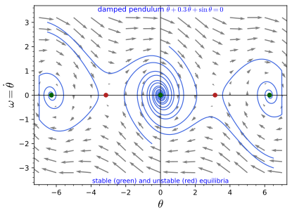
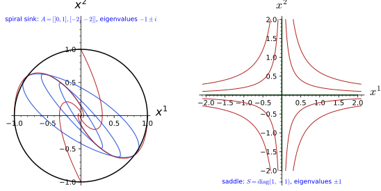
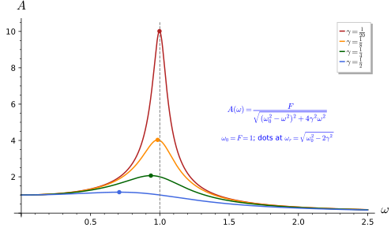
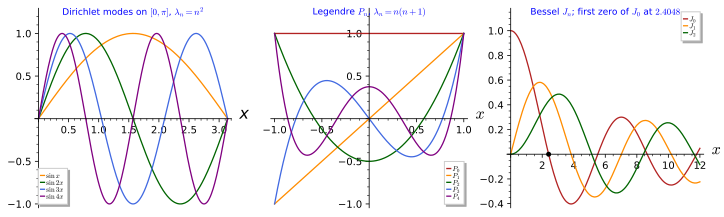
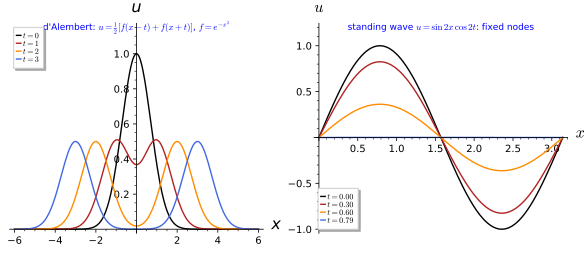
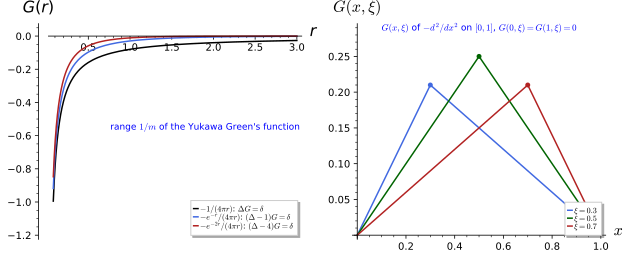

Differential equations
A differential equation relates an unknown function to its derivatives, and solving it means finding the functions that satisfy the relation. Almost every law of physics is stated in this form: Newton’s second law fixes the acceleration of a body, the field equations of electromagnetism, of a scalar field or of gravity fix the second partial derivatives of a field in terms of its sources. This chapter collects the theory of such equations at the undergraduate level, in five sections. Ordinary differential equations defines equations in one independent variable, initial value problems, the existence and uniqueness theorem, the separable and linear equations that can be solved in closed form, and phase portraits as the geometric view of a first-order system. Linear systems and the matrix exponential treats systems \dot x = Ax with a constant matrix, their solution e^{tA}x_0, eigenvalues as the key to stability, and the damped and driven harmonic oscillator with its resonance. Boundary value and Sturm-Liouville problems replaces initial conditions by conditions at two ends, which turns the equation into an eigenvalue problem whose eigenfunctions are orthogonal and complete, with the Legendre and Bessel equations as the classical examples. Partial differential equations classifies the second-order equations and solves the wave, heat and Laplace equations by d’Alembert’s formula and by separation of variables. Green’s functions inverts a linear differential operator: the fundamental solutions of the Laplacian and of the Klein-Gordon operator \Box + m^2 are computed, and the retarded and Feynman prescriptions for the wave operator are described in outline. Each definition is followed by three examples of increasing complexity and three exercises of increasing difficulty with hidden solutions; the propositions collect the closed forms and identities of each section, and the two theorems quoted without proof are marked as such. The signature conventions of Prerequisites and conventions are used throughout: \Box = \partial_t^2 - \nabla^2.
Ordinary differential equations
An ordinary differential equation involves one independent variable. This section defines the equation and its order, the initial value problem, quotes the existence and uniqueness theorem of Picard and Lindelöf, solves the two classes of first-order equations that every physicist meets, separable and linear, and introduces the phase portrait, the picture of all solutions of an autonomous system at once. The proposition at the end collects the closed-form solutions, each of which satisfies its equation by direct substitution.
For more on this topic, see Arrigo (2023, Ch. 5), Borodzik et al. (2019, Ch. 5), Knauf (2018, Ch. 3) and Magnus (2023, Ch. 2, Ch. 4 and 6).
Ordinary differential equations
Definition 1 (Ordinary differential equation) An ordinary differential equation (ODE) for an unknown function y(x) of one real variable is a relation F(x, y, y', \dots, y^{(n)}) = 0 between x, y and its derivatives up to order n; the largest order n that appears is the order of the equation. A solution on an interval I is a function y that is n times differentiable on I and satisfies the relation at every point of I. The equation is linear if F is a linear combination a_n(x) y^{(n)} + \dots + a_1(x) y' + a_0(x) y - q(x) of y and its derivatives, and homogeneous if moreover q = 0.
Veriphy. Pending.
Lean. Pending.
Sage. Pending.
The simplest equation of all is the one whose solution is its own derivative up to a constant factor. It is first order and linear, and it already shows the pattern that a solution comes with a free constant.
Example 1 (Exponential decay) y' = -ky with a constant k > 0 is a first-order linear homogeneous equation; y = C e^{-kx} is a solution for every constant C, since (C e^{-kx})' = -k C e^{-kx}. It describes radioactive decay, with x the time and k the decay rate.
Veriphy. Recipe ode_solution, certificate de-ode.sage.
Lean.
/-- `y = C e^{-kx}` solves `y' = -k y`. -/
theorem decay_solves (k C : ℝ) (y : ℝ → ℝ) (hy : y = fun s => C * Real.exp (-k * s)) (x : ℝ) :
deriv y x = -k * y xKaluzaKlein.DifferentialEquations.OrdinaryDifferentialEquations.decay_solves in KaluzaKlein/PartI/DifferentialEquations/OrdinaryDifferentialEquations.lean, namespace KaluzaKlein.DifferentialEquations.OrdinaryDifferentialEquations
Sage. Sage differentiates the closed form and substitutes it into the equation (its desolve proposes the solution of an initial value problem); the residual is zero.
Mechanics supplies the second-order equations. The order is two because the force determines the acceleration, the second derivative of the position, and the same law can be linear or non-linear depending on the force.
Example 2 (Newton’s second law) m\ddot q = F(q, \dot q, t), with the dot for the time derivative, is a second-order equation for the position q(t); for a spring, F = -\kappa q, it is linear and homogeneous, \ddot q + \omega_0^2 q = 0 with \omega_0^2 = \kappa/m, and q = \cos\omega_0 t is a solution. For the pendulum, \ddot\theta + \sin\theta = 0, the equation is non-linear.
Veriphy. Recipe ode_solution, certificate de-ode.sage; Recipe ideal_membership, certificate de-poly.sage; Recipe nonlinearity, certificate de-nonlinear-sin.sage.
Lean.
/-- `q = cos ω₀t` solves `q̈ + ω₀² q = 0`. -/
theorem spring_solves (ω₀ : ℝ) (q : ℝ → ℝ) (hq : q = fun s => Real.cos (ω₀ * s)) (t : ℝ) :
deriv (deriv q) t + ω₀ ^ 2 * q t = 0KaluzaKlein.DifferentialEquations.OrdinaryDifferentialEquations.spring_solves in KaluzaKlein/PartI/DifferentialEquations/OrdinaryDifferentialEquations.lean, namespace KaluzaKlein.DifferentialEquations.OrdinaryDifferentialEquations
/-- Newton's law `m q̈ = -κ q` with `m ω₀² = κ` is `q̈ + ω₀² q = 0` (times `m`). -/
theorem spring_equation (m κ ω₀ q a : ℝ) (hω : m * ω₀ ^ 2 = κ) (h : m * a = -κ * q) :
m * (a + ω₀ ^ 2 * q) = 0KaluzaKlein.DifferentialEquations.OrdinaryDifferentialEquations.spring_equation in KaluzaKlein/PartI/DifferentialEquations/OrdinaryDifferentialEquations.lean, namespace KaluzaKlein.DifferentialEquations.OrdinaryDifferentialEquations
/-- The pendulum term `sin θ` is not linear: `sin` is not additive (`sin(π/2 + π/2) ≠ 2 sin(π/2)`). -/
theorem sin_not_linear : ¬ ∃ f : ℝ →ₗ[ℝ] ℝ, ∀ x, f x = Real.sin xKaluzaKlein.DifferentialEquations.OrdinaryDifferentialEquations.sin_not_linear in KaluzaKlein/PartI/DifferentialEquations/OrdinaryDifferentialEquations.lean, namespace KaluzaKlein.DifferentialEquations.OrdinaryDifferentialEquations
Sage. Sage differentiates the closed form and substitutes it into the equation (its desolve proposes the solution of an initial value problem); the residual is zero. Sage writes the difference of the two sides as a combination of the hypotheses (Gröbner cofactors), or expands it to zero. Sage finds the point at which homogeneity fails.
Non-linearity appears as soon as the unknown is multiplied by itself. The logistic equation is the standard example: it is first order like exponential decay, but its solutions behave in a qualitatively new way.
Example 3 (The logistic equation) y' = y(1 - y) is first order and non-linear because of the y^2 term. The constant functions y = 0 and y = 1 are solutions, and so is y = 1/(1 + e^{-x}), which rises from 0 to 1: it models a population that grows exponentially while small and saturates at the carrying capacity 1 (Proposition 1).
Veriphy. Recipe ode_solution, certificate de-ode.sage; Test (oracle, 3 instances); record KaluzaKlein.DifferentialEquations.OrdinaryDifferentialEquations.logistic_solves.json; Test (oracle, 3 instances); record KaluzaKlein.DifferentialEquations.OrdinaryDifferentialEquations.logistic_limits.json.
Lean.
/-- The constant `y = 0` solves `y' = y(1 - y)`. -/
theorem logistic_zero_solves (y : ℝ → ℝ) (hy : y = fun _ => 0) (x : ℝ) : deriv y x = y x * (1 - y x)KaluzaKlein.DifferentialEquations.OrdinaryDifferentialEquations.logistic_zero_solves in KaluzaKlein/PartI/DifferentialEquations/OrdinaryDifferentialEquations.lean, namespace KaluzaKlein.DifferentialEquations.OrdinaryDifferentialEquations
/-- The constant `y = 1` solves `y' = y(1 - y)`. -/
theorem logistic_one_solves (y : ℝ → ℝ) (hy : y = fun _ => 1) (x : ℝ) : deriv y x = y x * (1 - y x)KaluzaKlein.DifferentialEquations.OrdinaryDifferentialEquations.logistic_one_solves in KaluzaKlein/PartI/DifferentialEquations/OrdinaryDifferentialEquations.lean, namespace KaluzaKlein.DifferentialEquations.OrdinaryDifferentialEquations
/-- `y = 1/(1 + e^{-x})` solves `y' = y(1 - y)`. -/
theorem logistic_solves (y : ℝ → ℝ) (hy : y = fun s => 1 / (1 + Real.exp (-s))) (x : ℝ) :
deriv y x = y x * (1 - y x)KaluzaKlein.DifferentialEquations.OrdinaryDifferentialEquations.logistic_solves in KaluzaKlein/PartI/DifferentialEquations/OrdinaryDifferentialEquations.lean, namespace KaluzaKlein.DifferentialEquations.OrdinaryDifferentialEquations
/-- The logistic curves `1/(1 + C e^{-x})`, `C > 0`, rise from `0` (at `-∞`) to `1` (at `+∞`). -/
theorem logistic_limits (C : ℝ) (hC : 0 < C) :
Tendsto (fun x => 1 / (1 + C * Real.exp (-x))) atTop (𝓝 1) ∧
Tendsto (fun x => 1 / (1 + C * Real.exp (-x))) atBot (𝓝 0)KaluzaKlein.DifferentialEquations.OrdinaryDifferentialEquations.logistic_limits in KaluzaKlein/PartI/DifferentialEquations/OrdinaryDifferentialEquations.lean, namespace KaluzaKlein.DifferentialEquations.OrdinaryDifferentialEquations
Sage. Sage differentiates the closed form and substitutes it into the equation (its desolve proposes the solution of an initial value problem); the residual is zero. Test instances: y’ = y(1 - y) for y = 1/(1 + e^{-x}): Sage’s derivative at x = 0 (edge), 1, -3/2. Test instances: both limits of 1/(1 + C e^{-x}) computed by Sage’s limit at C = 1 (edge), 2, 1/3.
The first exercise asks for the two labels every equation carries, its order and whether it is linear. Both are read off the equation without solving it, and both decide which methods of this chapter apply.
Exercise 1 (Order and linearity) For each of y'' + x y' = \sin x, (y')^2 + y = 0, y''' = y y' and x^2 y'' - 2y = 0, give the order and decide whether the equation is linear, and if so whether it is homogeneous.
y'' + xy' = \sin x: order 2, linear (the coefficients 1, x, 0 depend on x only), inhomogeneous because of \sin x. (y')^2 + y = 0: order 1, non-linear because y' is squared. y''' = yy': order 3, non-linear because of the product yy'. x^2y'' - 2y = 0: order 2, linear and homogeneous; y = x^2 and y = 1/x are solutions.
Veriphy. Recipe ideal_membership, certificate de-poly.sage; Recipe nonlinearity, certificate de-nonlinearity.sage; Recipe ode_solution, certificate de-ode.sage; Test (oracle, 3 instances); record KaluzaKlein.DifferentialEquations.OrdinaryDifferentialEquations.euler_inv_solves.json.
Lean.
/-- `y'' + x y' = sin x` is linear: its left side obeys superposition in the jet variables `(y', y'')`. -/
theorem classify_linear_first (x a b p₁ p₂ q₁ q₂ : ℝ) :
(a * p₂ + b * q₂) + x * (a * p₁ + b * q₁) = a * (p₂ + x * p₁) + b * (q₂ + x * q₁)KaluzaKlein.DifferentialEquations.OrdinaryDifferentialEquations.classify_linear_first in KaluzaKlein/PartI/DifferentialEquations/OrdinaryDifferentialEquations.lean, namespace KaluzaKlein.DifferentialEquations.OrdinaryDifferentialEquations
/-- `x² y'' - 2y = 0` is linear and homogeneous: superposition in the jet variables `(y, y'')`. -/
theorem classify_linear_euler (x a b p₀ p₂ q₀ q₂ : ℝ) :
x ^ 2 * (a * p₂ + b * q₂) - 2 * (a * p₀ + b * q₀) = a * (x ^ 2 * p₂ - 2 * p₀) + b * (x ^ 2 * q₂ - 2 * q₀)KaluzaKlein.DifferentialEquations.OrdinaryDifferentialEquations.classify_linear_euler in KaluzaKlein/PartI/DifferentialEquations/OrdinaryDifferentialEquations.lean, namespace KaluzaKlein.DifferentialEquations.OrdinaryDifferentialEquations
/-- `(y')² + y` and `y y'` are not linear: on the jet line `y = y' = p` their non-linear parts are `p²`, which is
not a linear function. -/
theorem square_not_linear : ¬ ∃ f : ℝ →ₗ[ℝ] ℝ, ∀ p, f p = p ^ 2KaluzaKlein.DifferentialEquations.OrdinaryDifferentialEquations.square_not_linear in KaluzaKlein/PartI/DifferentialEquations/OrdinaryDifferentialEquations.lean, namespace KaluzaKlein.DifferentialEquations.OrdinaryDifferentialEquations
/-- `y = x²` solves `x² y'' - 2y = 0`. -/
theorem euler_sq_solves (y : ℝ → ℝ) (hy : y = fun s => s ^ 2) (x : ℝ) :
x ^ 2 * deriv (deriv y) x - 2 * y x = 0KaluzaKlein.DifferentialEquations.OrdinaryDifferentialEquations.euler_sq_solves in KaluzaKlein/PartI/DifferentialEquations/OrdinaryDifferentialEquations.lean, namespace KaluzaKlein.DifferentialEquations.OrdinaryDifferentialEquations
/-- `y = 1/x` solves `x² y'' - 2y = 0` for `x ≠ 0`. -/
theorem euler_inv_solves (x : ℝ) (hx : x ≠ 0) :
x ^ 2 * deriv (deriv fun s => s⁻¹) x - 2 * x⁻¹ = 0KaluzaKlein.DifferentialEquations.OrdinaryDifferentialEquations.euler_inv_solves in KaluzaKlein/PartI/DifferentialEquations/OrdinaryDifferentialEquations.lean, namespace KaluzaKlein.DifferentialEquations.OrdinaryDifferentialEquations
Sage. Sage writes the difference of the two sides as a combination of the hypotheses (Gröbner cofactors), or expands it to zero. Sage finds the point at which homogeneity fails. Sage differentiates the closed form and substitutes it into the equation (its desolve proposes the solution of an initial value problem); the residual is zero. Test instances: x²(1/x)’’ - 2/x evaluated exactly at x = 1 (edge), -2, 1/3.
Checking a candidate solution is the most useful skill of the chapter, and it is purely mechanical. The second exercise practises it with Sage, including the case where the candidate fails.
Exercise 2 (Verifying a solution by substitution) Check with Sage that y = C_1\cos x + C_2\sin x solves y'' + y = 0 for all constants C_1, C_2, that y = x^2 and y = 1/x solve x^2 y'' - 2y = 0, and that y = e^{x^2} does not solve y' = 2y.
Substituting and simplifying the difference of the two sides to zero is the whole verification; a non-solution leaves a non-zero residual:
x, C1, C2 = var("x C1 C2")
def residual(y, eq): # eq is a function of y returning the expression that should vanish
return eq(y).simplify_full()
y1 = C1 * cos(x) + C2 * sin(x)
print("y'' + y for C1 cos x + C2 sin x:", residual(y1, lambda y: diff(y, x, 2) + y), "-> solution:", bool(residual(y1, lambda y: diff(y, x, 2) + y) == 0))
for y2 in [x ** 2, 1 / x]:
r = residual(y2, lambda y: x ** 2 * diff(y, x, 2) - 2 * y)
print("x^2 y'' - 2y for y =", y2, ":", r, "-> solution:", bool(r == 0))
y3 = exp(x ** 2)
r = residual(y3, lambda y: diff(y, x) - 2 * y)
print("y' - 2y for y = e^(x^2):", r, "-> solution:", bool(r == 0))Output:
y'' + y for C1 cos x + C2 sin x: 0 -> solution: True
x^2 y'' - 2y for y = x^2 : 0 -> solution: True
x^2 y'' - 2y for y = 1/x : 0 -> solution: True
y' - 2y for y = e^(x^2): 2*(x - 1)*e^(x^2) -> solution: FalseVeriphy. Recipe ode_solution, certificate de-ode.sage; Recipe derivative, certificate de-partials.sage; Test (oracle, 3 instances); record KaluzaKlein.DifferentialEquations.OrdinaryDifferentialEquations.euler_inv_solves.json.
Lean.
/-- `y = C₁ cos x + C₂ sin x` solves `y'' + y = 0` for all constants. -/
theorem cos_sin_solves (C₁ C₂ : ℝ) (y : ℝ → ℝ) (hy : y = fun s => C₁ * Real.cos s + C₂ * Real.sin s) (x : ℝ) :
deriv (deriv y) x + y x = 0KaluzaKlein.DifferentialEquations.OrdinaryDifferentialEquations.cos_sin_solves in KaluzaKlein/PartI/DifferentialEquations/OrdinaryDifferentialEquations.lean, namespace KaluzaKlein.DifferentialEquations.OrdinaryDifferentialEquations
/-- `y = e^{x²}` leaves the non-zero residual `y' - 2y = (2x - 2) e^{x²}` in `y' = 2y`. -/
theorem exp_sq_residual (x : ℝ) :
deriv (fun s => Real.exp (s ^ 2)) x - 2 * Real.exp (x ^ 2) = (2 * x - 2) * Real.exp (x ^ 2)KaluzaKlein.DifferentialEquations.OrdinaryDifferentialEquations.exp_sq_residual in KaluzaKlein/PartI/DifferentialEquations/OrdinaryDifferentialEquations.lean, namespace KaluzaKlein.DifferentialEquations.OrdinaryDifferentialEquations
/-- `y = x²` solves `x² y'' - 2y = 0`. -/
theorem euler_sq_solves (y : ℝ → ℝ) (hy : y = fun s => s ^ 2) (x : ℝ) :
x ^ 2 * deriv (deriv y) x - 2 * y x = 0KaluzaKlein.DifferentialEquations.OrdinaryDifferentialEquations.euler_sq_solves in KaluzaKlein/PartI/DifferentialEquations/OrdinaryDifferentialEquations.lean, namespace KaluzaKlein.DifferentialEquations.OrdinaryDifferentialEquations
/-- `y = 1/x` solves `x² y'' - 2y = 0` for `x ≠ 0`. -/
theorem euler_inv_solves (x : ℝ) (hx : x ≠ 0) :
x ^ 2 * deriv (deriv fun s => s⁻¹) x - 2 * x⁻¹ = 0KaluzaKlein.DifferentialEquations.OrdinaryDifferentialEquations.euler_inv_solves in KaluzaKlein/PartI/DifferentialEquations/OrdinaryDifferentialEquations.lean, namespace KaluzaKlein.DifferentialEquations.OrdinaryDifferentialEquations
Sage. Sage differentiates the closed form and substitutes it into the equation (its desolve proposes the solution of an initial value problem); the residual is zero. Sage differentiates every derivative in the statement and confirms the identity. Test instances: x²(1/x)’’ - 2/x evaluated exactly at x = 1 (edge), -2, 1/3.
The third exercise shows that one never needs a separate theory for higher orders. An equation of order n is the same as a system of n first-order equations, and the rest of the chapter uses this freely.
Exercise 3 (Reduction to first order) Show that every n-th order equation y^{(n)} = f(x, y, y', \dots, y^{(n-1)}) is equivalent to a system of n first-order equations, and write y''' + y' = 0 in this form.
Set u_1 = y, u_2 = y', …, u_n = y^{(n-1)}. Then u_1' = u_2, …, u_{n-1}' = u_n and u_n' = f(x, u_1, \dots, u_n): a solution y gives a solution (u_1, \dots, u_n) of the system, and conversely the first component of a solution of the system solves the original equation. For y''' + y' = 0, u_1' = u_2, u_2' = u_3, u_3' = - u_2, which is the linear system u' = Au with A the matrix with rows (0, 1, 0), (0, 0, 1), (0, -1, 0) of Section 1.2.
Veriphy. Test (oracle, 3 instances); record KaluzaKlein.DifferentialEquations.OrdinaryDifferentialEquations.reduction_to_first_order.json; Test (oracle, 3 instances); record KaluzaKlein.DifferentialEquations.OrdinaryDifferentialEquations.first_order_to_reduction.json; Recipe matrix_from_goal, certificate la-matrix.sage.
Lean.
/-- An `(n+1)`-th order equation `y^{(n+1)} = f(x, y, …, y^{(n)})` gives the first-order system `uᵢ' = uᵢ₊₁`,
`uₙ' = f(x, u)` for `uᵢ = y^{(i)}`. -/
theorem reduction_to_first_order (n : ℕ) (f : ℝ → (Fin (n + 1) → ℝ) → ℝ) (y : ℝ → ℝ)
(hy : ∀ x, iteratedDeriv (n + 1) y x = f x (fun i => iteratedDeriv i y x)) (x : ℝ) :
(∀ i : Fin n, deriv (iteratedDeriv i y) x = iteratedDeriv (i + 1) y x) ∧
deriv (iteratedDeriv n y) x = f x (fun i => iteratedDeriv i y x)KaluzaKlein.DifferentialEquations.OrdinaryDifferentialEquations.reduction_to_first_order in KaluzaKlein/PartI/DifferentialEquations/OrdinaryDifferentialEquations.lean, namespace KaluzaKlein.DifferentialEquations.OrdinaryDifferentialEquations
/-- Conversely, the first component of a solution of the system solves the `(n+1)`-th order equation. -/
theorem first_order_to_reduction (n : ℕ) (f : ℝ → (Fin (n + 1) → ℝ) → ℝ) (u : Fin (n + 1) → ℝ → ℝ)
(hu : ∀ i : Fin n, deriv (u i.castSucc) = u i.succ)
(hlast : ∀ x, deriv (u (Fin.last n)) x = f x (fun i => u i x)) (x : ℝ) :
iteratedDeriv (n + 1) (u 0) x = f x (fun i => u i x)KaluzaKlein.DifferentialEquations.OrdinaryDifferentialEquations.first_order_to_reduction in KaluzaKlein/PartI/DifferentialEquations/OrdinaryDifferentialEquations.lean, namespace KaluzaKlein.DifferentialEquations.OrdinaryDifferentialEquations
/-- `y''' + y' = 0` is `u' = A u` with `A` the matrix with rows `(0, 1, 0)`, `(0, 0, 1)`, `(0, -1, 0)`:
`A (y, y', y'')ᵀ = (y', y'', -y')ᵀ`. -/
theorem third_order_matrix (a b c : ℝ) :
!![(0 : ℝ), 1, 0; 0, 0, 1; 0, -1, 0] * !![a; b; c] = !![b; c; -b]KaluzaKlein.DifferentialEquations.OrdinaryDifferentialEquations.third_order_matrix in KaluzaKlein/PartI/DifferentialEquations/OrdinaryDifferentialEquations.lean, namespace KaluzaKlein.DifferentialEquations.OrdinaryDifferentialEquations
Sage. Test instances: y = e^{2x}, y’’ = 4y (n = 1, f(x, u) = 4u₀), y = sin (y’’ = -y), y = x³ (n = 2, y’’’ = 6): the system’s components at x = 0, 1. Test instances: u = (cos, -sin) solves u₀’ = u₁, u₁’ = -u₀ (n = 1), u = (e^x, e^x, e^x) (n = 2, f = u₂): y^{(n+1)} = f at x = 0, 1. Sage evaluates the matrix identity, determinant or trace exactly.
Initial value problems
An equation alone has a whole family of solutions, as the examples showed. What singles out one of them is a condition at one point, and the next definition makes this the standard form of the problem.
Definition 2 (Initial value problem) An initial value problem for the first-order equation y' = f(x, y) is the equation together with an initial condition y(x_0) = y_0; for an n-th order equation y^{(n)} = f(x, y, \dots, y^{(n-1)}) it prescribes the n values y(x_0), y'(x_0), \dots, y^{(n-1)}(x_0). A solution of the problem is a solution of the equation on an interval containing x_0 that satisfies the initial conditions.
Veriphy. Pending.
Lean. Pending.
Sage. Pending.
The first example shows the initial condition doing its job. Among a one-parameter family of solutions, one number picks one solution, and the choice is unique.
Example 4 (y' = y, y(0) = 1) Among the solutions C e^x of y' = y the condition y(0) = 1 selects C = 1: the solution is y = e^x, and the general solution Ce^x is a one-parameter family in which the initial value picks one member.
Veriphy. Recipe ode_solution, certificate de-ode.sage.
Lean.
/-- Every `C e^x` solves `y' = y`. -/
theorem exp_family_solves (C : ℝ) (y : ℝ → ℝ) (hy : y = fun s => C * Real.exp s) (x : ℝ) : deriv y x = y xKaluzaKlein.DifferentialEquations.InitialValueProblems.exp_family_solves in KaluzaKlein/PartI/DifferentialEquations/OrdinaryDifferentialEquations.lean, namespace KaluzaKlein.DifferentialEquations.InitialValueProblems
/-- The initial value of `C e^x` at `0` is `C`, so `y(0) = 1` selects `C = 1`. -/
theorem exp_family_initial (C : ℝ) (y : ℝ → ℝ) (hy : y = fun s => C * Real.exp s) : y 0 = CKaluzaKlein.DifferentialEquations.InitialValueProblems.exp_family_initial in KaluzaKlein/PartI/DifferentialEquations/OrdinaryDifferentialEquations.lean, namespace KaluzaKlein.DifferentialEquations.InitialValueProblems
/-- `y = e^x` solves the initial value problem `y' = y`, `y(0) = 1`. -/
theorem exp_ivp : ∃ y : ℝ → ℝ, (∀ t, deriv y t = y t) ∧ y 0 = 1KaluzaKlein.DifferentialEquations.InitialValueProblems.exp_ivp in KaluzaKlein/PartI/DifferentialEquations/OrdinaryDifferentialEquations.lean, namespace KaluzaKlein.DifferentialEquations.InitialValueProblems
Sage. Sage differentiates the closed form and substitutes it into the equation (its desolve proposes the solution of an initial value problem); the residual is zero.
A second-order equation needs two numbers, not one. The example makes the count explicit for the oscillator, whose general solution contains two constants.
Example 5 (The oscillator with initial position and velocity) \ddot q + q = 0 with q(0) = 1, \dot q(0) = 0 has the solution q = \cos t; with q(0) = 0, \dot q(0) = 1 it has q = \sin t. The general solution C_1\cos t + C_2\sin t has two constants, and a second-order equation needs two initial data to fix them.
Veriphy. Recipe ode_solution, certificate de-ode.sage.
Lean.
/-- `q = cos t` solves `q̈ + q = 0`, `q(0) = 1`, `q̇(0) = 0`. -/
theorem osc_cos_ivp : ∃ q : ℝ → ℝ, (∀ t, deriv (deriv q) t + q t = 0) ∧ q 0 = 1 ∧ deriv q 0 = 0KaluzaKlein.DifferentialEquations.InitialValueProblems.osc_cos_ivp in KaluzaKlein/PartI/DifferentialEquations/OrdinaryDifferentialEquations.lean, namespace KaluzaKlein.DifferentialEquations.InitialValueProblems
/-- `q = sin t` solves `q̈ + q = 0`, `q(0) = 0`, `q̇(0) = 1`. -/
theorem osc_sin_ivp : ∃ q : ℝ → ℝ, (∀ t, deriv (deriv q) t + q t = 0) ∧ q 0 = 0 ∧ deriv q 0 = 1KaluzaKlein.DifferentialEquations.InitialValueProblems.osc_sin_ivp in KaluzaKlein/PartI/DifferentialEquations/OrdinaryDifferentialEquations.lean, namespace KaluzaKlein.DifferentialEquations.InitialValueProblems
/-- The two constants of `C₁ cos t + C₂ sin t` are its initial position and velocity: `q̇(0) = C₂`. -/
theorem osc_general_velocity (C₁ C₂ : ℝ) (q : ℝ → ℝ) (hq : q = fun s => C₁ * Real.cos s + C₂ * Real.sin s) :
deriv q 0 = C₂KaluzaKlein.DifferentialEquations.InitialValueProblems.osc_general_velocity in KaluzaKlein/PartI/DifferentialEquations/OrdinaryDifferentialEquations.lean, namespace KaluzaKlein.DifferentialEquations.InitialValueProblems
/-- … and `q(0) = C₁`. -/
theorem osc_general_position (C₁ C₂ : ℝ) (q : ℝ → ℝ) (hq : q = fun s => C₁ * Real.cos s + C₂ * Real.sin s) :
q 0 = C₁KaluzaKlein.DifferentialEquations.InitialValueProblems.osc_general_position in KaluzaKlein/PartI/DifferentialEquations/OrdinaryDifferentialEquations.lean, namespace KaluzaKlein.DifferentialEquations.InitialValueProblems
Sage. Sage differentiates the closed form and substitutes it into the equation (its desolve proposes the solution of an initial value problem); the residual is zero.
The third example has a unique solution that cannot be written in elementary terms. Existence and uniqueness are statements about the problem, not about our ability to find a formula.
Example 6 (The pendulum released from rest) \ddot\theta + \sin\theta = 0 with \theta(0) = \theta_0, \dot\theta(0) = 0 has a unique solution for every \theta_0 (by Theorem 1), but no elementary closed form unless \theta_0 = 0 or \theta_0 = \pi: the solution is periodic for 0 < \theta_0 < \pi and its period depends on \theta_0. The phase portrait of Figure 1 shows these solutions as closed curves when the damping is switched off.
Veriphy. Test (oracle, 3 instances); record KaluzaKlein.DifferentialEquations.InitialValueProblems.pendulum_lipschitz.json; Recipe ode_solution, certificate de-ode.sage.
Lean.
/-- The pendulum force is Lipschitz with constant `1`: `|sin a - sin b| ≤ |a - b|`, the hypothesis of
Picard-Lindelöf for the pendulum. -/
theorem pendulum_lipschitz (a b : ℝ) : |Real.sin a - Real.sin b| ≤ |a - b|KaluzaKlein.DifferentialEquations.InitialValueProblems.pendulum_lipschitz in KaluzaKlein/PartI/DifferentialEquations/OrdinaryDifferentialEquations.lean, namespace KaluzaKlein.DifferentialEquations.InitialValueProblems
/-- `θ₀ = π` (balanced upright) gives the constant solution of `θ̈ + sin θ = 0`. -/
theorem pendulum_upright (θ : ℝ → ℝ) (hθ : θ = fun _ => Real.pi) (t : ℝ) :
deriv (deriv θ) t + Real.sin (θ t) = 0KaluzaKlein.DifferentialEquations.InitialValueProblems.pendulum_upright in KaluzaKlein/PartI/DifferentialEquations/OrdinaryDifferentialEquations.lean, namespace KaluzaKlein.DifferentialEquations.InitialValueProblems
/-- `θ₀ = 0` (hanging) gives the constant solution of `θ̈ + sin θ = 0`. -/
theorem pendulum_hanging (θ : ℝ → ℝ) (hθ : θ = fun _ => 0) (t : ℝ) :
deriv (deriv θ) t + Real.sin (θ t) = 0KaluzaKlein.DifferentialEquations.InitialValueProblems.pendulum_hanging in KaluzaKlein/PartI/DifferentialEquations/OrdinaryDifferentialEquations.lean, namespace KaluzaKlein.DifferentialEquations.InitialValueProblems
Sage. Test instances: |sin a - sin b| ≤ |a - b| in interval arithmetic at (0, 0) (edge), (1, 2), (-3, 1/2). Sage differentiates the closed form and substitutes it into the equation (its desolve proposes the solution of an initial value problem); the residual is zero.
The first exercise fixes the constant of the decay equation from the initial amount. It also introduces desolve with the ics argument, which does the same selection automatically.
Exercise 4 (Decay with a given initial amount) Solve y' = -2y with y(0) = 5 by hand and with Sage’s desolve, and find the time at which y has halved.
y = Ce^{-2x} and y(0) = 5 gives C = 5; y = 5/2 when e^{-2x} = 1/2, that is, x = \tfrac12\log 2:
x = var("x")
y = function("y")(x)
sol = desolve(diff(y, x) == -2 * y, y, ics=[0, 5])
print("solution:", sol)
print("check y' + 2y = 0 and y(0) = 5:", bool((diff(sol, x) + 2 * sol).simplify_full() == 0), bool(sol.subs(x=0) == 5))
half = log(2) / 2
print("y(log(2)/2) =", sol.subs(x=half).simplify_full(), "so the half-life is log(2)/2 =", n(half), "| exact:", bool(sol.subs(x=half) == 5 / 2))Output:
solution: 5*e^(-2*x)
check y' + 2y = 0 and y(0) = 5: True True
y(log(2)/2) = 5/2 so the half-life is log(2)/2 = 0.346573590279973 | exact: TrueVeriphy. Recipe ode_solution, certificate de-ode.sage; Recipe transcendental_rewrite, certificate de-rewrite.sage.
Lean.
/-- `y = 5 e^{-2x}` solves `y' = -2y`, `y(0) = 5`. -/
theorem decay_ivp : ∃ y : ℝ → ℝ, (∀ t, deriv y t = -2 * y t) ∧ y 0 = 5KaluzaKlein.DifferentialEquations.InitialValueProblems.decay_ivp in KaluzaKlein/PartI/DifferentialEquations/OrdinaryDifferentialEquations.lean, namespace KaluzaKlein.DifferentialEquations.InitialValueProblems
/-- The amount has halved at `x = ½ log 2`. -/
theorem decay_half_time : 5 * Real.exp (-2 * (Real.log 2 / 2)) = 5 / 2KaluzaKlein.DifferentialEquations.InitialValueProblems.decay_half_time in KaluzaKlein/PartI/DifferentialEquations/OrdinaryDifferentialEquations.lean, namespace KaluzaKlein.DifferentialEquations.InitialValueProblems
Sage. Sage differentiates the closed form and substitutes it into the equation (its desolve proposes the solution of an initial value problem); the residual is zero. Sage confirms the identity exactly (or the bound in interval arithmetic) before the rewrite.
The second exercise does the same for a second-order equation, where two data are needed. The Laplace-transform solver desolve_laplace takes the initial position and velocity directly.
Exercise 5 (Two initial data for a second-order equation) Solve \ddot q + 4q = 0 with q(0) = 1, \dot q(0) = 2, using desolve_laplace, and check the result by substitution.
The general solution is C_1\cos 2t + C_2\sin 2t; q(0) = 1 gives C_1 = 1 and \dot q(0) = 2C_2 = 2 gives C_2 = 1, so q = \cos 2t + \sin 2t:
t = var("t")
q = function("q")(t)
sol = desolve_laplace(diff(q, t, 2) + 4 * q == 0, q, ics=[0, 1, 2])
print("solution q(t) =", sol)
print("q'' + 4q = 0:", bool((diff(sol, t, 2) + 4 * sol).simplify_full() == 0))
print("q(0) = 1 and q'(0) = 2:", bool(sol.subs(t=0) == 1), bool(diff(sol, t).subs(t=0) == 2))Output:
solution q(t) = cos(2*t) + sin(2*t)
q'' + 4q = 0: True
q(0) = 1 and q'(0) = 2: True TrueVeriphy. Recipe ode_solution, certificate de-ode.sage.
Lean.
/-- `q = cos 2t + sin 2t` solves `q̈ + 4q = 0`. -/
theorem ivp2_solves (q : ℝ → ℝ) (hq : q = fun s => Real.cos (2 * s) + Real.sin (2 * s)) (t : ℝ) :
deriv (deriv q) t + 4 * q t = 0KaluzaKlein.DifferentialEquations.InitialValueProblems.ivp2_solves in KaluzaKlein/PartI/DifferentialEquations/OrdinaryDifferentialEquations.lean, namespace KaluzaKlein.DifferentialEquations.InitialValueProblems
/-- … with `q(0) = 1`. -/
theorem ivp2_position (q : ℝ → ℝ) (hq : q = fun s => Real.cos (2 * s) + Real.sin (2 * s)) : q 0 = 1KaluzaKlein.DifferentialEquations.InitialValueProblems.ivp2_position in KaluzaKlein/PartI/DifferentialEquations/OrdinaryDifferentialEquations.lean, namespace KaluzaKlein.DifferentialEquations.InitialValueProblems
/-- … and `q̇(0) = 2`. -/
theorem ivp2_velocity (q : ℝ → ℝ) (hq : q = fun s => Real.cos (2 * s) + Real.sin (2 * s)) : deriv q 0 = 2KaluzaKlein.DifferentialEquations.InitialValueProblems.ivp2_velocity in KaluzaKlein/PartI/DifferentialEquations/OrdinaryDifferentialEquations.lean, namespace KaluzaKlein.DifferentialEquations.InitialValueProblems
/-- The initial value problem `q̈ + 4q = 0`, `q(0) = 1`, `q̇(0) = 2` has a solution (Sage's `desolve`). -/
theorem ivp2_exists : ∃ q : ℝ → ℝ, (∀ t, deriv (deriv q) t + 4 * q t = 0) ∧ q 0 = 1 ∧ deriv q 0 = 2KaluzaKlein.DifferentialEquations.InitialValueProblems.ivp2_exists in KaluzaKlein/PartI/DifferentialEquations/OrdinaryDifferentialEquations.lean, namespace KaluzaKlein.DifferentialEquations.InitialValueProblems
Sage. Sage differentiates the closed form and substitutes it into the equation (its desolve proposes the solution of an initial value problem); the residual is zero.
The third exercise exhibits an initial value problem with more than one solution. It prepares the hypothesis of the existence and uniqueness theorem below, which is exactly what fails here.
Exercise 6 (An initial value problem with two solutions) Show that y' = 2\sqrt{|y|} with y(0) = 0 has the two solutions y = 0 and y = x^2 for x \geq 0 (and y = -x^2 for x \le 0), and explain which hypothesis of Theorem 1 fails.
y = 0 satisfies 0 = 2\sqrt 0. For x \geq 0, y = x^2 has y' = 2x = 2\sqrt{x^2}, and y(0) = 0; one can even glue, y = 0 for x \le a and y = (x - a)^2 for x \geq a, giving infinitely many solutions. The function f(x, y) = 2\sqrt{|y|} is continuous but not Lipschitz in y near y = 0: |f(x, y) - f(x, 0)| = 2\sqrt{|y|} is not bounded by L|y| for small y, since 2\sqrt{|y|}/|y| \to \infty.
Veriphy. Recipe ode_solution, certificate de-ode.sage; Test (oracle, 3 instances); record KaluzaKlein.DifferentialEquations.InitialValueProblems.nonunique_sq.json; Test (oracle, 3 instances); record KaluzaKlein.DifferentialEquations.InitialValueProblems.nonunique_neg_sq.json; Test (oracle, 3 instances); record KaluzaKlein.DifferentialEquations.InitialValueProblems.nonunique_glued.json; Test (oracle, 3 instances); record KaluzaKlein.DifferentialEquations.InitialValueProblems.sqrt_not_lipschitz.json.
Lean.
/-- `y = 0` solves `y' = 2√|y|` with `y(0) = 0`. -/
theorem nonunique_zero (y : ℝ → ℝ) (hy : y = fun _ => 0) (x : ℝ) : deriv y x = 2 * Real.sqrt |y x|KaluzaKlein.DifferentialEquations.InitialValueProblems.nonunique_zero in KaluzaKlein/PartI/DifferentialEquations/OrdinaryDifferentialEquations.lean, namespace KaluzaKlein.DifferentialEquations.InitialValueProblems
/-- `y = x²` solves `y' = 2√|y|` for `x ≥ 0`, with `y(0) = 0`: a second solution. -/
theorem nonunique_sq (x : ℝ) (hx : 0 ≤ x) : deriv (fun s => s ^ 2) x = 2 * Real.sqrt |x ^ 2|KaluzaKlein.DifferentialEquations.InitialValueProblems.nonunique_sq in KaluzaKlein/PartI/DifferentialEquations/OrdinaryDifferentialEquations.lean, namespace KaluzaKlein.DifferentialEquations.InitialValueProblems
/-- `y = -x²` solves `y' = 2√|y|` for `x ≤ 0`. -/
theorem nonunique_neg_sq (x : ℝ) (hx : x ≤ 0) : deriv (fun s => -s ^ 2) x = 2 * Real.sqrt |-x ^ 2|KaluzaKlein.DifferentialEquations.InitialValueProblems.nonunique_neg_sq in KaluzaKlein/PartI/DifferentialEquations/OrdinaryDifferentialEquations.lean, namespace KaluzaKlein.DifferentialEquations.InitialValueProblems
/-- The glued functions `y = (max (x - a) 0)²` solve `y' = 2√|y|` everywhere, for every `a`: infinitely many
solutions with `y(0) = 0` when `a ≥ 0`. -/
theorem nonunique_glued (a x : ℝ) :
HasDerivAt (fun s => (max (s - a) 0) ^ 2) (2 * Real.sqrt |(max (x - a) 0) ^ 2|) xKaluzaKlein.DifferentialEquations.InitialValueProblems.nonunique_glued in KaluzaKlein/PartI/DifferentialEquations/OrdinaryDifferentialEquations.lean, namespace KaluzaKlein.DifferentialEquations.InitialValueProblems
/-- `2√|y|` is not Lipschitz at `y = 0`: for every `L` some `0 < y` has `2√y > L y`. -/
theorem sqrt_not_lipschitz (L : ℝ) : ∃ y : ℝ, 0 < y ∧ L * y < 2 * Real.sqrt yKaluzaKlein.DifferentialEquations.InitialValueProblems.sqrt_not_lipschitz in KaluzaKlein/PartI/DifferentialEquations/OrdinaryDifferentialEquations.lean, namespace KaluzaKlein.DifferentialEquations.InitialValueProblems
Sage. Sage differentiates the closed form and substitutes it into the equation (its desolve proposes the solution of an initial value problem); the residual is zero. Test instances: (x²)’ = 2√|x²| at x = 0 (edge), 1, 5/2. Test instances: (-x²)’ = 2√|-x²| at x = 0 (edge), -1, -3. Test instances: the glued solution’s one-sided difference quotients and 2√|y| at (a, x) = (0, 0) (edge, kink), (1, 3), (2, 1). Test instances: the witness y = 1/(|L| + 1)² gives L y < 2√y, at L = 0 (edge), 3, -5.
Existence and uniqueness
The examples suggest that the right number of initial data determines the solution, and the last exercise showed that this can fail. The theorem below states the hypothesis under which it holds.
Theorem 1 (Existence and uniqueness (Picard-Lindelöf)) Let f(x, y) be continuous on a rectangle |x - x_0| \le a, |y - y_0| \le b and Lipschitz in y there: |f(x, y_1) - f(x, y_2)| \le L|y_1 - y_2| for some constant L. Then the initial value problem y' = f(x, y), y(x_0) = y_0 has exactly one solution on the interval |x - x_0| \le h, where h = \min(a, b/M) and M bounds |f| on the rectangle. The solution is the limit of the Picard iterates y_0(x) = y_0, y_{k+1}(x) = y_0 + \int_{x_0}^x f(s, y_k(s))\,ds. Quoted without proof; the proof is the contraction mapping argument of a first course in analysis, and the theorem extends word for word to systems y' = f(x, y) with y \in \mathbb{R}^n.
Veriphy. Test (oracle, 3 instances); record KaluzaKlein.DifferentialEquations.ExistenceUniqueness.picard_exists.json; Test (oracle, 3 instances); record KaluzaKlein.DifferentialEquations.ExistenceUniqueness.picard_unique.json.
Lean.
/-- Picard-Lindelöf, existence: under the hypotheses `IsPicardLindelof` (Lipschitz in `y` on a ball, continuous in
`x`, bounded by `L`, interval short enough) the initial value problem has a solution on the interval (mathlib). -/
theorem picard_exists {E : Type*} [NormedAddCommGroup E] [NormedSpace ℝ E] [CompleteSpace E]
(f : ℝ → E → E) (tmin tmax : ℝ) (t₀ : Set.Icc tmin tmax) (x₀ : E) (a L K : NNReal)
(hf : IsPicardLindelof f t₀ x₀ a 0 L K) :
∃ y : ℝ → E, y t₀ = x₀ ∧ ∀ t ∈ Set.Icc tmin tmax, HasDerivWithinAt y (f t (y t)) (Set.Icc tmin tmax) tKaluzaKlein.DifferentialEquations.ExistenceUniqueness.picard_exists in KaluzaKlein/PartI/DifferentialEquations/OrdinaryDifferentialEquations.lean, namespace KaluzaKlein.DifferentialEquations.ExistenceUniqueness
/-- Picard-Lindelöf, uniqueness: two solutions of `y' = f(x, y)` with `f` Lipschitz in `y` that agree at one point
agree everywhere (mathlib's `ODE_solution_unique_univ`). -/
theorem picard_unique (f : ℝ → ℝ → ℝ) (K : NNReal) (hf : ∀ x, LipschitzWith K (f x)) (y₁ y₂ : ℝ → ℝ)
(h₁ : ∀ x, HasDerivAt y₁ (f x (y₁ x)) x) (h₂ : ∀ x, HasDerivAt y₂ (f x (y₂ x)) x) (x₀ : ℝ)
(h : y₁ x₀ = y₂ x₀) : y₁ = y₂KaluzaKlein.DifferentialEquations.ExistenceUniqueness.picard_unique in KaluzaKlein/PartI/DifferentialEquations/OrdinaryDifferentialEquations.lean, namespace KaluzaKlein.DifferentialEquations.ExistenceUniqueness
Sage. Test instances: the Picard-Lindelöf solution exists: y’ = y on [0, 1/2] around (0, 1) (y = eᵗ), y’ = 0 (edge, constant), y’ = t on [-1, 1] (y = t²/2). Test instances: two solutions of a Lipschitz equation agreeing at x₀ coincide: Sage’s desolve with the initial value returns one solution, equal to the given ones, for y’ = y, y’ = -2y + 1, y’ = 0 (edge).
The first example runs the Picard iteration where every step can be done by hand. The iterates are polynomials, and they converge to the exponential function.
Example 7 (Picard iterates of y' = y) With f(x, y) = y, L = 1 on every rectangle. Starting from y_0 = 1, the iterates are y_1 = 1 + x, y_2 = 1 + x + x^2/2, and y_k is the Taylor polynomial of e^x of degree k (Proposition 1): the iteration reconstructs the exponential series of Series.
Veriphy. Recipe definite_integral, certificate de-integral.sage.
Lean.
/-- The first Picard iterate of `y' = y`, `y(0) = 1`: `1 + ∫₀ˣ 1 = 1 + x`. -/
theorem picard_exp_iterate_one (x : ℝ) : 1 + ∫ s in (0 : ℝ)..x, (1 : ℝ) = 1 + xKaluzaKlein.DifferentialEquations.ExistenceUniqueness.picard_exp_iterate_one in KaluzaKlein/PartI/DifferentialEquations/OrdinaryDifferentialEquations.lean, namespace KaluzaKlein.DifferentialEquations.ExistenceUniqueness
/-- The second Picard iterate: `1 + ∫₀ˣ (1 + s) ds = 1 + x + x²/2`. -/
theorem picard_exp_iterate_two (x : ℝ) : 1 + ∫ s in (0 : ℝ)..x, (1 + s) = 1 + x + x ^ 2 / 2KaluzaKlein.DifferentialEquations.ExistenceUniqueness.picard_exp_iterate_two in KaluzaKlein/PartI/DifferentialEquations/OrdinaryDifferentialEquations.lean, namespace KaluzaKlein.DifferentialEquations.ExistenceUniqueness
Sage. Sage finds an antiderivative, checks it by differentiation and evaluates it at the bounds.
The theorem promises a solution on a small interval only, and the second example shows why nothing better can be promised in general. The solution exists, is unique, and escapes to infinity in finite time.
Example 8 (Local, not global: y' = y^2) f = y^2 is Lipschitz on every bounded rectangle, so y' = y^2, y(0) = 1 has a unique local solution; it is y = 1/(1 - x), which exists only for x < 1. The theorem guarantees a solution on a small interval, and the solution of a non-linear equation may fail to extend further.
Veriphy. Test (oracle, 3 instances); record KaluzaKlein.DifferentialEquations.ExistenceUniqueness.blowup_solves.json; Test (oracle, 3 instances); record KaluzaKlein.DifferentialEquations.ExistenceUniqueness.square_lipschitz_bounded.json; Test (oracle, 3 instances); record KaluzaKlein.DifferentialEquations.ExistenceUniqueness.blowup_tendsto.json.
Lean.
/-- `y = 1/(1 - x)` solves `y' = y²` where it is defined (`x ≠ 1`). -/
theorem blowup_solves (x : ℝ) (hx : 1 - x ≠ 0) : deriv (fun s => 1 / (1 - s)) x = (1 / (1 - x)) ^ 2KaluzaKlein.DifferentialEquations.ExistenceUniqueness.blowup_solves in KaluzaKlein/PartI/DifferentialEquations/OrdinaryDifferentialEquations.lean, namespace KaluzaKlein.DifferentialEquations.ExistenceUniqueness
/-- `f = y²` is Lipschitz on every bounded rectangle: `|a² - b²| ≤ 2M |a - b|` for `|a|, |b| ≤ M`. -/
theorem square_lipschitz_bounded (M a b : ℝ) (ha : |a| ≤ M) (hb : |b| ≤ M) :
|a ^ 2 - b ^ 2| ≤ 2 * M * |a - b|KaluzaKlein.DifferentialEquations.ExistenceUniqueness.square_lipschitz_bounded in KaluzaKlein/PartI/DifferentialEquations/OrdinaryDifferentialEquations.lean, namespace KaluzaKlein.DifferentialEquations.ExistenceUniqueness
/-- The solution escapes to infinity as `x → 1⁻`: it does not extend past `x = 1`. -/
theorem blowup_tendsto (y₀ : ℝ) (hy₀ : 0 < y₀) :
Tendsto (fun x => y₀ / (1 - y₀ * x)) (𝓝[<] (1 / y₀)) atTopKaluzaKlein.DifferentialEquations.ExistenceUniqueness.blowup_tendsto in KaluzaKlein/PartI/DifferentialEquations/OrdinaryDifferentialEquations.lean, namespace KaluzaKlein.DifferentialEquations.ExistenceUniqueness
Sage. Test instances: (1/(1 - x))’ = (1/(1 - x))² by Sage at x = 0 (edge), 2, -1/2. Test instances: |a² - b²| ≤ 2M|a - b| at (M, a, b) = (0, 0, 0) (edge), (1, 1/2, -1), (3, 2, 3). Test instances: Sage’s one-sided limit of y₀/(1 - y₀x) at 1/y₀ from the left is +∞, for y₀ = 1 (edge), 2, 1/3.
The third example returns to the non-uniqueness of the previous exercise. Seen from the theorem, it is simply the failure of the Lipschitz hypothesis at one point.
Example 9 (Where uniqueness fails) f = 2\sqrt{|y|} of Exercise 6 is continuous but not Lipschitz at y = 0, and the initial value problem has infinitely many solutions. Continuity alone still gives existence (Peano’s theorem), not uniqueness.
Veriphy. Test (oracle, 3 instances); record KaluzaKlein.DifferentialEquations.InitialValueProblems.sqrt_not_lipschitz.json; Test (oracle, 3 instances); record KaluzaKlein.DifferentialEquations.InitialValueProblems.nonunique_glued.json; Test (oracle, 3 instances); record KaluzaKlein.DifferentialEquations.InitialValueProblems.nonunique_sq.json.
Lean.
/-- `2√|y|` is not Lipschitz at `y = 0`: for every `L` some `0 < y` has `2√y > L y`. -/
theorem sqrt_not_lipschitz (L : ℝ) : ∃ y : ℝ, 0 < y ∧ L * y < 2 * Real.sqrt yKaluzaKlein.DifferentialEquations.InitialValueProblems.sqrt_not_lipschitz in KaluzaKlein/PartI/DifferentialEquations/OrdinaryDifferentialEquations.lean, namespace KaluzaKlein.DifferentialEquations.InitialValueProblems
/-- The glued functions `y = (max (x - a) 0)²` solve `y' = 2√|y|` everywhere, for every `a`: infinitely many
solutions with `y(0) = 0` when `a ≥ 0`. -/
theorem nonunique_glued (a x : ℝ) :
HasDerivAt (fun s => (max (s - a) 0) ^ 2) (2 * Real.sqrt |(max (x - a) 0) ^ 2|) xKaluzaKlein.DifferentialEquations.InitialValueProblems.nonunique_glued in KaluzaKlein/PartI/DifferentialEquations/OrdinaryDifferentialEquations.lean, namespace KaluzaKlein.DifferentialEquations.InitialValueProblems
/-- `y = x²` solves `y' = 2√|y|` for `x ≥ 0`, with `y(0) = 0`: a second solution. -/
theorem nonunique_sq (x : ℝ) (hx : 0 ≤ x) : deriv (fun s => s ^ 2) x = 2 * Real.sqrt |x ^ 2|KaluzaKlein.DifferentialEquations.InitialValueProblems.nonunique_sq in KaluzaKlein/PartI/DifferentialEquations/OrdinaryDifferentialEquations.lean, namespace KaluzaKlein.DifferentialEquations.InitialValueProblems
Sage. Test instances: the witness y = 1/(|L| + 1)² gives L y < 2√y, at L = 0 (edge), 3, -5. Test instances: the glued solution’s one-sided difference quotients and 2√|y| at (a, x) = (0, 0) (edge, kink), (1, 3), (2, 1). Test instances: (x²)’ = 2√|x²| at x = 0 (edge), 1, 5/2.
The first exercise runs the iteration in Sage for an equation with an x-dependent right-hand side. The point is to see each step produce one more correct Taylor coefficient.
Exercise 7 (Computing Picard iterates) Compute the first four Picard iterates of y' = x + y, y(0) = 1 with Sage and compare them with the Taylor polynomials of the exact solution y = 2e^x - x - 1.
Each iterate agrees with the Taylor polynomial of the exact solution up to the degree reached, the next degree being produced by the next integration:
x, s = var("x s")
exact = 2 * exp(x) - x - 1
print("exact solution solves the problem:", bool((diff(exact, x) - x - exact).simplify_full() == 0) and bool(exact.subs(x=0) == 1))
phi = SR(1)
for k in range(1, 5):
phi = 1 + integrate(s + phi.subs(x=s), s, 0, x)
taylor_k = exact.taylor(x, 0, k)
print("iterate", k, ":", phi.expand(), "| its terms up to degree %d are the Taylor polynomial %s:" % (k, taylor_k), bool((phi.taylor(x, 0, k) - taylor_k).expand() == 0))Output:
exact solution solves the problem: True
iterate 1 : 1/2*x^2 + x + 1 | its terms up to degree 1 are the Taylor polynomial x + 1: True
iterate 2 : 1/6*x^3 + x^2 + x + 1 | its terms up to degree 2 are the Taylor polynomial x^2 + x + 1: True
iterate 3 : 1/24*x^4 + 1/3*x^3 + x^2 + x + 1 | its terms up to degree 3 are the Taylor polynomial 1/3*x^3 + x^2 + x + 1: True
iterate 4 : 1/120*x^5 + 1/12*x^4 + 1/3*x^3 + x^2 + x + 1 | its terms up to degree 4 are the Taylor polynomial 1/12*x^4 + 1/3*x^3 + x^2 + x + 1: TrueVeriphy. Recipe definite_integral, certificate de-integral.sage; Recipe ode_solution, certificate de-ode.sage; Test (oracle, 3 instances); record KaluzaKlein.DifferentialEquations.ExistenceUniqueness.xy_exact_taylor.json.
Lean.
/-- The Picard iterates of `y' = x + y`, `y(0) = 1`: `y₁ = 1 + x + x²/2`. -/
theorem picard_xy_one (x : ℝ) : 1 + ∫ s in (0 : ℝ)..x, (s + 1) = 1 + x + x ^ 2 / 2KaluzaKlein.DifferentialEquations.ExistenceUniqueness.picard_xy_one in KaluzaKlein/PartI/DifferentialEquations/OrdinaryDifferentialEquations.lean, namespace KaluzaKlein.DifferentialEquations.ExistenceUniqueness
/-- `y₂ = 1 + x + x² + x³/6`. -/
theorem picard_xy_two (x : ℝ) :
1 + ∫ s in (0 : ℝ)..x, (s + (1 + s + s ^ 2 / 2)) = 1 + x + x ^ 2 + x ^ 3 / 6KaluzaKlein.DifferentialEquations.ExistenceUniqueness.picard_xy_two in KaluzaKlein/PartI/DifferentialEquations/OrdinaryDifferentialEquations.lean, namespace KaluzaKlein.DifferentialEquations.ExistenceUniqueness
/-- `y₃ = 1 + x + x² + x³/3 + x⁴/24`. -/
theorem picard_xy_three (x : ℝ) :
1 + ∫ s in (0 : ℝ)..x, (s + (1 + s + s ^ 2 + s ^ 3 / 6)) = 1 + x + x ^ 2 + x ^ 3 / 3 + x ^ 4 / 24KaluzaKlein.DifferentialEquations.ExistenceUniqueness.picard_xy_three in KaluzaKlein/PartI/DifferentialEquations/OrdinaryDifferentialEquations.lean, namespace KaluzaKlein.DifferentialEquations.ExistenceUniqueness
/-- `y₄ = 1 + x + x² + x³/3 + x⁴/12 + x⁵/120`, agreeing with the Taylor polynomial of `2eˣ - x - 1` up to degree 4. -/
theorem picard_xy_four (x : ℝ) :
1 + ∫ s in (0 : ℝ)..x, (s + (1 + s + s ^ 2 + s ^ 3 / 3 + s ^ 4 / 24)) =
1 + x + x ^ 2 + x ^ 3 / 3 + x ^ 4 / 12 + x ^ 5 / 120KaluzaKlein.DifferentialEquations.ExistenceUniqueness.picard_xy_four in KaluzaKlein/PartI/DifferentialEquations/OrdinaryDifferentialEquations.lean, namespace KaluzaKlein.DifferentialEquations.ExistenceUniqueness
/-- The exact solution `y = 2eˣ - x - 1` of `y' = x + y`. -/
theorem xy_exact_solves (y : ℝ → ℝ) (hy : y = fun s => 2 * Real.exp s - s - 1) (x : ℝ) : deriv y x = x + y xKaluzaKlein.DifferentialEquations.ExistenceUniqueness.xy_exact_solves in KaluzaKlein/PartI/DifferentialEquations/OrdinaryDifferentialEquations.lean, namespace KaluzaKlein.DifferentialEquations.ExistenceUniqueness
/-- … with `y(0) = 1`. -/
theorem xy_exact_initial (y : ℝ → ℝ) (hy : y = fun s => 2 * Real.exp s - s - 1) : y 0 = 1KaluzaKlein.DifferentialEquations.ExistenceUniqueness.xy_exact_initial in KaluzaKlein/PartI/DifferentialEquations/OrdinaryDifferentialEquations.lean, namespace KaluzaKlein.DifferentialEquations.ExistenceUniqueness
/-- The Taylor coefficients of `2eˣ - x - 1` at `0` up to degree 4 are those of `y₄`: `y^{(k)}(0) = 2` for `k ≥ 2`. -/
theorem xy_exact_taylor (k : ℕ) (hk : 2 ≤ k) :
iteratedDeriv k (fun s => 2 * Real.exp s - s - 1) 0 = 2KaluzaKlein.DifferentialEquations.ExistenceUniqueness.xy_exact_taylor in KaluzaKlein/PartI/DifferentialEquations/OrdinaryDifferentialEquations.lean, namespace KaluzaKlein.DifferentialEquations.ExistenceUniqueness
Sage. Sage finds an antiderivative, checks it by differentiation and evaluates it at the bounds. Sage differentiates the closed form and substitutes it into the equation (its desolve proposes the solution of an initial value problem); the residual is zero. Test instances: the k-th derivative of 2eˣ - x - 1 at 0, for k = 2 (edge), 3, 7.
The second exercise solves the blow-up example exactly and locates the blow-up time. The sign of the initial value changes the picture completely.
Exercise 8 (Blow-up time) Solve y' = y^2 with y(0) = y_0 > 0 and show that the solution exists exactly on (-\infty, 1/y_0). What happens for y_0 < 0?
Separating, \int dy/y^2 = \int dx gives -1/y = x + C with C = -1/y_0, so y = y_0/(1 - y_0 x). The denominator vanishes at x = 1/y_0, where y \to +\infty; for x < 1/y_0 the formula is a solution and no solution can be continued past the blow-up. For y_0 < 0 the pole is at the negative value 1/y_0 and the solution exists on (1/y_0, \infty), tending to 0 as x \to \infty.
Veriphy. Test (oracle, 3 instances); record KaluzaKlein.DifferentialEquations.ExistenceUniqueness.blowup_general_solves.json; Recipe transcendental_rewrite, certificate de-rewrite.sage; Test (oracle, 3 instances); record KaluzaKlein.DifferentialEquations.ExistenceUniqueness.blowup_negative_tendsto.json.
Lean.
/-- `y = y₀/(1 - y₀x)` solves `y' = y²` where `1 - y₀x ≠ 0`. -/
theorem blowup_general_solves (y₀ x : ℝ) (hx : 1 - y₀ * x ≠ 0) :
deriv (fun s => y₀ / (1 - y₀ * s)) x = (y₀ / (1 - y₀ * x)) ^ 2KaluzaKlein.DifferentialEquations.ExistenceUniqueness.blowup_general_solves in KaluzaKlein/PartI/DifferentialEquations/OrdinaryDifferentialEquations.lean, namespace KaluzaKlein.DifferentialEquations.ExistenceUniqueness
/-- `y₀/(1 - y₀x)` has `y(0) = y₀`. -/
theorem blowup_general_initial (y₀ : ℝ) : y₀ / (1 - y₀ * 0) = y₀KaluzaKlein.DifferentialEquations.ExistenceUniqueness.blowup_general_initial in KaluzaKlein/PartI/DifferentialEquations/OrdinaryDifferentialEquations.lean, namespace KaluzaKlein.DifferentialEquations.ExistenceUniqueness
/-- For `y₀ < 0` the solution tends to `0` as `x → ∞`. -/
theorem blowup_negative_tendsto (y₀ : ℝ) (hy₀ : y₀ < 0) :
Tendsto (fun x => y₀ / (1 - y₀ * x)) atTop (𝓝 0)KaluzaKlein.DifferentialEquations.ExistenceUniqueness.blowup_negative_tendsto in KaluzaKlein/PartI/DifferentialEquations/OrdinaryDifferentialEquations.lean, namespace KaluzaKlein.DifferentialEquations.ExistenceUniqueness
Sage. Test instances: (y₀/(1 - y₀x))’ = (y₀/(1 - y₀x))² by Sage at (y₀, x) = (0, 1) (edge), (2, 1/3), (-1, 2). Sage confirms the identity exactly (or the bound in interval arithmetic) before the rewrite. Test instances: Sage’s limit of y₀/(1 - y₀x) as x → ∞ for y₀ = -1 (edge), -2, -1/5.
The third exercise gives the practical criterion for the Lipschitz hypothesis. A continuous partial derivative in y is enough, which covers almost every equation met in physics.
Exercise 9 (Lipschitz from a bounded derivative) Show that if \partial f/\partial y is continuous on the rectangle, then f is Lipschitz in y there, with L = \max|\partial f/\partial y|; conclude that y' = \sin y and y' = x\cos y + y^3 have unique local solutions for every initial condition.
By the mean value theorem of Continuity and differentiability, f(x, y_1) - f(x, y_2) = \partial_y f(x, \eta)(y_1 - y_2) for some \eta between y_1 and y_2, so |f(x, y_1) - f(x, y_2)| \le L|y_1 - y_2| with L the maximum of |\partial_y f| on the (compact) rectangle, which exists because \partial_y f is continuous. For \sin y, \partial_y f = \cos y is bounded by 1 everywhere; for x\cos y + y^3, \partial_y f = -x\sin y + 3y^2 is continuous, hence bounded on every rectangle. Both equations therefore satisfy the hypotheses of Theorem 1 at every point.
Veriphy. Test (oracle, 3 instances); record KaluzaKlein.DifferentialEquations.ExistenceUniqueness.lipschitz_of_deriv_bound.json; Recipe derivative, certificate de-derivative.sage; Test (oracle, 3 instances); record KaluzaKlein.DifferentialEquations.ExistenceUniqueness.partial_example_bound.json.
Lean.
/-- A bounded derivative gives a Lipschitz bound (mean value theorem): `|g a - g b| ≤ L |a - b|`. -/
theorem lipschitz_of_deriv_bound (g g' : ℝ → ℝ) (L : ℝ) (hg : ∀ y, HasDerivAt g (g' y) y)
(hb : ∀ y, |g' y| ≤ L) (a b : ℝ) : |g a - g b| ≤ L * |a - b|KaluzaKlein.DifferentialEquations.ExistenceUniqueness.lipschitz_of_deriv_bound in KaluzaKlein/PartI/DifferentialEquations/OrdinaryDifferentialEquations.lean, namespace KaluzaKlein.DifferentialEquations.ExistenceUniqueness
/-- `∂_y (x cos y + y³) = -x sin y + 3y²`. -/
theorem partial_example (x y : ℝ) : deriv (fun s => x * Real.cos s + s ^ 3) y = -x * Real.sin y + 3 * y ^ 2KaluzaKlein.DifferentialEquations.ExistenceUniqueness.partial_example in KaluzaKlein/PartI/DifferentialEquations/OrdinaryDifferentialEquations.lean, namespace KaluzaKlein.DifferentialEquations.ExistenceUniqueness
/-- … which is bounded on every rectangle: `|-x sin y + 3y²| ≤ |x| + 3y²`. -/
theorem partial_example_bound (x y : ℝ) : |-x * Real.sin y + 3 * y ^ 2| ≤ |x| + 3 * y ^ 2KaluzaKlein.DifferentialEquations.ExistenceUniqueness.partial_example_bound in KaluzaKlein/PartI/DifferentialEquations/OrdinaryDifferentialEquations.lean, namespace KaluzaKlein.DifferentialEquations.ExistenceUniqueness
Sage. Test instances: |g(a) - g(b)| ≤ L|a - b| for g = sin (L = 1), g = 3x (L = 3), g = 0 (edge), in interval arithmetic. Sage differentiates every derivative in the statement and confirms the identity. Test instances: |-x sin y + 3y²| ≤ |x| + 3y² in interval arithmetic at (0, 0) (edge), (2, 1), (-1, -3).
Separable equations
Existence is settled, and the next question is how to find solutions explicitly. The first class that can be integrated directly is the class in which the variables can be separated.
Definition 3 (Separable equation) A first-order equation is separable if it can be written y' = f(x)\,g(y). Where g(y) \neq 0, dividing by g and integrating gives the solutions implicitly, \int \frac{dy}{g(y)} = \int f(x)\,dx + C; every zero y_* of g gives in addition the constant solution y = y_*.
Veriphy. Test (oracle, 3 instances); record KaluzaKlein.DifferentialEquations.SeparableEquations.separable_constant.json.
Lean.
/-- Every zero `y⋆` of `g` gives the constant solution `y = y⋆` of `y' = f(x) g(y)`. -/
theorem separable_constant (f g : ℝ → ℝ) (y₀ : ℝ) (h : g y₀ = 0) (x : ℝ) :
deriv (fun _ : ℝ => y₀) x = f x * g y₀KaluzaKlein.DifferentialEquations.SeparableEquations.separable_constant in KaluzaKlein/PartI/DifferentialEquations/OrdinaryDifferentialEquations.lean, namespace KaluzaKlein.DifferentialEquations.SeparableEquations
Sage. Test instances: the constant y⋆ at a zero of g satisfies y’ = f g(y⋆) = 0: g = y(1 - y) at y⋆ = 0 (edge), 1; g = cos at π/2.
The first example is the equation whose solutions are circles. Separation gives an implicit relation, and each solution is one branch of it.
Example 10 (y' = -x/y) With f = -x and g = 1/y, \int y\,dy = -\int x\,dx + C gives y^2/2 = -x^2/2 + C: the solutions are the arcs of the circles x^2 + y^2 = 2C, each solution being one of the two half-circles y = \pm\sqrt{2C - x^2} (Proposition 1).
Veriphy. Test (oracle, 3 instances); record KaluzaKlein.DifferentialEquations.SeparableEquations.circle_branch_solves.json; Recipe transcendental_rewrite, certificate de-rewrite.sage; Test (oracle, 3 instances); record KaluzaKlein.DifferentialEquations.ODEComputations.circles_solve.json.
Lean.
/-- The upper half-circle `y = √(2C - x²)` solves `y' = -x/y` where `x² < 2C`. -/
theorem circle_branch_solves (C x : ℝ) (h : 0 < 2 * C - x ^ 2) :
deriv (fun s => Real.sqrt (2 * C - s ^ 2)) x = -x / Real.sqrt (2 * C - x ^ 2)KaluzaKlein.DifferentialEquations.SeparableEquations.circle_branch_solves in KaluzaKlein/PartI/DifferentialEquations/OrdinaryDifferentialEquations.lean, namespace KaluzaKlein.DifferentialEquations.SeparableEquations
/-- The half-circle lies on the circle `x² + y² = 2C`. -/
theorem circle_branch_on_circle (C x : ℝ) (h : 0 ≤ 2 * C - x ^ 2) :
x ^ 2 + Real.sqrt (2 * C - x ^ 2) ^ 2 = 2 * CKaluzaKlein.DifferentialEquations.SeparableEquations.circle_branch_on_circle in KaluzaKlein/PartI/DifferentialEquations/OrdinaryDifferentialEquations.lean, namespace KaluzaKlein.DifferentialEquations.SeparableEquations
/-- Implicit solutions: a differentiable `y` with `x² + y(x)² = C` for all `x` satisfies `y' = -x/y` where `y ≠ 0`. -/
theorem circles_solve (C : ℝ) (y : ℝ → ℝ) (y' x : ℝ) (hy : HasDerivAt y y' x) (hC : ∀ s, s ^ 2 + y s ^ 2 = C)
(h0 : y x ≠ 0) : y' = -x / y xKaluzaKlein.DifferentialEquations.ODEComputations.circles_solve in KaluzaKlein/PartI/DifferentialEquations/OrdinaryDifferentialEquations.lean, namespace KaluzaKlein.DifferentialEquations.ODEComputations
Sage. Test instances: (√(2C - x²))’ = -x/√(2C - x²) by Sage at (C, x) = (1, 0) (edge), (2, 1), (5/2, -2). Sage confirms the identity exactly (or the bound in interval arithmetic) before the rewrite. Test instances: on x² + y² = C, y’ = -x/y: upper half-circles of C = 1, 4, 25 at x = 0 (edge), 1, 3.
Exponential decay is separable too, and the second example redoes it by separation. The point is to see the constant solution y = 0 and the sign of y handled correctly.
Example 11 (y' = -ky again) g = y vanishes at y = 0, giving the constant solution y = 0; for y \neq 0, \int dy/y = -kx + C, so \log|y| = -kx + C and y = \pm e^C e^{-kx}: together with y = 0 these are all the functions Ae^{-kx}, A \in \mathbb{R}.
Veriphy. Test (oracle, 3 instances); record KaluzaKlein.DifferentialEquations.SeparableEquations.decay_all_solutions.json.
Lean.
/-- Every solution of `y' = -ky` is `A e^{-kx}` with `A = y(0)`: the constant solution `0` and the separated
solutions `±e^C e^{-kx}` together. -/
theorem decay_all_solutions (k : ℝ) (y : ℝ → ℝ) (hy : ∀ x, HasDerivAt y (-k * y x) x) (x : ℝ) :
y x = y 0 * Real.exp (-k * x)KaluzaKlein.DifferentialEquations.SeparableEquations.decay_all_solutions in KaluzaKlein/PartI/DifferentialEquations/OrdinaryDifferentialEquations.lean, namespace KaluzaKlein.DifferentialEquations.SeparableEquations
Sage. Test instances: Sage’s desolve of y’ = -ky with y(0) = y₀ gives y₀e^{-kx}: k = 0 (edge), 2, -1.
The logistic equation is the third example, with a partial-fraction integral. It derives the closed form that was only checked by substitution before.
Example 12 (The logistic equation) y' = y(1 - y) has the constant solutions y = 0 and y = 1; for 0 < y < 1, \int \frac{dy}{y(1 - y)} = \int \left(\frac1y + \frac1{1 - y}\right)dy = \log\frac{y}{1 - y} = x + C, so y = \frac{1}{1 + e^{-x-C}}. The initial value y(0) = 1/2 gives C = 0 and the solution of Example 3.
Veriphy. Recipe transcendental_rewrite, certificate de-rewrite.sage; Test (oracle, 3 instances); record KaluzaKlein.DifferentialEquations.SeparableEquations.logistic_antiderivative.json.
Lean.
/-- Partial fractions: `1/(y(1 - y)) = 1/y + 1/(1 - y)`. -/
theorem logistic_partial_fractions (y : ℝ) (h0 : y ≠ 0) (h1 : 1 - y ≠ 0) :
1 / (y * (1 - y)) = 1 / y + 1 / (1 - y)KaluzaKlein.DifferentialEquations.SeparableEquations.logistic_partial_fractions in KaluzaKlein/PartI/DifferentialEquations/OrdinaryDifferentialEquations.lean, namespace KaluzaKlein.DifferentialEquations.SeparableEquations
/-- `log(y/(1 - y))` is an antiderivative of `1/(y(1 - y))` on `0 < y < 1`. -/
theorem logistic_antiderivative (y : ℝ) (h0 : 0 < y) (h1 : 0 < 1 - y) :
deriv (fun s => Real.log (s / (1 - s))) y = 1 / (y * (1 - y))KaluzaKlein.DifferentialEquations.SeparableEquations.logistic_antiderivative in KaluzaKlein/PartI/DifferentialEquations/OrdinaryDifferentialEquations.lean, namespace KaluzaKlein.DifferentialEquations.SeparableEquations
/-- `y = 1/(1 + e^{-x-C})` satisfies the separated relation `log(y/(1 - y)) = x + C`. -/
theorem logistic_relation (x C : ℝ) :
Real.log ((1 / (1 + Real.exp (-x - C))) / (1 - 1 / (1 + Real.exp (-x - C)))) = x + CKaluzaKlein.DifferentialEquations.SeparableEquations.logistic_relation in KaluzaKlein/PartI/DifferentialEquations/OrdinaryDifferentialEquations.lean, namespace KaluzaKlein.DifferentialEquations.SeparableEquations
Sage. Sage confirms the identity exactly (or the bound in interval arithmetic) before the rewrite. Test instances: (log(y/(1 - y)))’ = 1/(y(1 - y)) by Sage at y = 1/2 (edge, symmetric point), 1/10, 9/10.
The first exercise lets Sage do the separation and compares with the closed form. The output of desolve is implicit, and the exercise practises turning it into an explicit solution.
Exercise 10 (Solving the logistic equation with Sage) Solve y' = y(1 - y) with desolve, solve the implicit result for y, and verify by substitution that y = 1/(1 +
Ce^{-x}) is the general solution.
desolve returns the separated form \log y - \log(y - 1) = x + C; exponentiating, y/(y - 1) = e^{x + C}, and solving for y gives y = e^{x+C}/(e^{x+C} - 1) = 1/(1 - e^{-x-C}), the family 1/(1 + C'e^{-x}) with C' = -
e^{-C} (negative constants give the solutions outside [0, 1]); substituting the family into the equation leaves a zero residual:
x, C = var("x C")
y = function("y")(x)
implicit = desolve(diff(y, x) == y * (1 - y), y)
print("desolve returns the separated relation:", implicit)
Y = var("Y")
explicit = solve(Y / (Y - 1) == exp(x + C), Y) # exponentiate both sides: y/(y - 1) = e^(x + C)
print("exponentiated and solved for y:", explicit)
ygen = 1 / (1 + C * exp(-x))
print("residual of y = 1/(1 + C e^(-x)) in y' - y(1 - y):", (diff(ygen, x) - ygen * (1 - ygen)).simplify_full(), "-> zero:", bool((diff(ygen, x) - ygen * (1 - ygen)).simplify_full() == 0))Output:
desolve returns the separated relation: -log(y(x) - 1) + log(y(x)) == _C + x
exponentiated and solved for y: [
Y == e^(C + x)/(e^(C + x) - 1)
]
residual of y = 1/(1 + C e^(-x)) in y' - y(1 - y): 0 -> zero: TrueVeriphy. Recipe ideal_membership, certificate ideal_membership.sage; Recipe transcendental_rewrite, certificate de-rewrite.sage; Test (oracle, 3 instances); record KaluzaKlein.DifferentialEquations.SeparableEquations.logistic_family_solves.json.
Lean.
/-- Solving `desolve`'s relation `y/(y - 1) = e^{x+C}` for `y`: with `E = e^{x+C}` and `e = e^{-x-C}`
(`E e = 1`), `y (1 - e) = 1`, that is `y = 1/(1 - e^{-x-C})`. -/
theorem logistic_solve_relation (y E e : ℝ) (hE : E * e = 1) (h : y = E * (y - 1)) : y * (1 - e) = 1KaluzaKlein.DifferentialEquations.SeparableEquations.logistic_solve_relation in KaluzaKlein/PartI/DifferentialEquations/OrdinaryDifferentialEquations.lean, namespace KaluzaKlein.DifferentialEquations.SeparableEquations
/-- `1/(1 - e^{-x-C})` is the family member `1/(1 + C'e^{-x})` with `C' = -e^{-C}`. -/
theorem logistic_reparametrise (x C : ℝ) :
1 / (1 - Real.exp (-x - C)) = 1 / (1 + -Real.exp (-C) * Real.exp (-x))KaluzaKlein.DifferentialEquations.SeparableEquations.logistic_reparametrise in KaluzaKlein/PartI/DifferentialEquations/OrdinaryDifferentialEquations.lean, namespace KaluzaKlein.DifferentialEquations.SeparableEquations
/-- The family `y = 1/(1 + C e^{-x})` solves `y' = y(1 - y)` for every constant `C` (where defined). -/
theorem logistic_family_solves (C x : ℝ) (h : 1 + C * Real.exp (-x) ≠ 0) :
deriv (fun s => 1 / (1 + C * Real.exp (-s))) x =
1 / (1 + C * Real.exp (-x)) * (1 - 1 / (1 + C * Real.exp (-x)))KaluzaKlein.DifferentialEquations.SeparableEquations.logistic_family_solves in KaluzaKlein/PartI/DifferentialEquations/OrdinaryDifferentialEquations.lean, namespace KaluzaKlein.DifferentialEquations.SeparableEquations
Sage. Sage writes the difference of the two sides as a combination of the hypotheses (Gröbner cofactors), or expands it to zero. Sage confirms the identity exactly (or the bound in interval arithmetic) before the rewrite. Test instances: y = 1/(1 + Ce^{-x}) has y’ = y(1 - y) by Sage at (C, x) = (0, 1) (edge), (2, 0), (-1/2, 1).
The second exercise is a separable equation whose solution is global although the formula contains a tangent. Deciding the interval of existence is part of solving.
Exercise 11 (A separable equation with an explicit solution) Solve y' = (1 + y^2)\cos x with y(0) = 0 and find the largest interval around 0 on which the solution exists.
\int \frac{dy}{1 + y^2} = \int\cos x\,dx gives \arctan y = \sin x + C, and y(0) = 0 gives C = 0, so y = \tan(\sin x). Since |\sin x| \le 1 < \pi/2, the tangent never reaches its pole: the solution exists for all x, and is periodic with period 2\pi.
Veriphy. Test (oracle, 3 instances); record KaluzaKlein.DifferentialEquations.SeparableEquations.cos_sin_pos.json; Test (oracle, 3 instances); record KaluzaKlein.DifferentialEquations.SeparableEquations.tan_sin_solves.json; Recipe ode_solution, certificate de-ode.sage; Recipe transcendental_rewrite, certificate de-rewrite.sage.
Lean.
/-- `cos(sin x) > 0` for every `x` (since `|sin x| ≤ 1 < π/2`), so `tan(sin x)` is defined on all of `ℝ`. -/
theorem cos_sin_pos (x : ℝ) : 0 < Real.cos (Real.sin x)KaluzaKlein.DifferentialEquations.SeparableEquations.cos_sin_pos in KaluzaKlein/PartI/DifferentialEquations/OrdinaryDifferentialEquations.lean, namespace KaluzaKlein.DifferentialEquations.SeparableEquations
/-- `y = tan(sin x) = sin(sin x)/cos(sin x)` solves `y' = (1 + y²) cos x` on all of `ℝ`. -/
theorem tan_sin_solves (y : ℝ → ℝ) (hy : y = fun s => Real.sin (Real.sin s) / Real.cos (Real.sin s)) (x : ℝ) :
deriv y x = (1 + y x ^ 2) * Real.cos xKaluzaKlein.DifferentialEquations.SeparableEquations.tan_sin_solves in KaluzaKlein/PartI/DifferentialEquations/OrdinaryDifferentialEquations.lean, namespace KaluzaKlein.DifferentialEquations.SeparableEquations
/-- … with `y(0) = 0`. -/
theorem tan_sin_initial (y : ℝ → ℝ) (hy : y = fun s => Real.sin (Real.sin s) / Real.cos (Real.sin s)) :
y 0 = 0KaluzaKlein.DifferentialEquations.SeparableEquations.tan_sin_initial in KaluzaKlein/PartI/DifferentialEquations/OrdinaryDifferentialEquations.lean, namespace KaluzaKlein.DifferentialEquations.SeparableEquations
/-- … and period `2π`. -/
theorem tan_sin_periodic (x : ℝ) :
Real.sin (Real.sin (x + 2 * Real.pi)) / Real.cos (Real.sin (x + 2 * Real.pi)) =
Real.sin (Real.sin x) / Real.cos (Real.sin x)KaluzaKlein.DifferentialEquations.SeparableEquations.tan_sin_periodic in KaluzaKlein/PartI/DifferentialEquations/OrdinaryDifferentialEquations.lean, namespace KaluzaKlein.DifferentialEquations.SeparableEquations
Sage. Test instances: cos(sin x) > 0 in interval arithmetic at x = 0 (edge), π/2 (|sin| = 1), 4. Test instances: y = tan(sin x) has y’ = (1 + y²) cos x by Sage at x = 0 (edge), 1, -2. Sage differentiates the closed form and substitutes it into the equation (its desolve proposes the solution of an initial value problem); the residual is zero. Sage confirms the identity exactly (or the bound in interval arithmetic) before the rewrite.
The third exercise proves that the method is correct, and explains the role of the constant solutions. It is the chain rule read backwards.
Exercise 12 (Why separation works) Let H(y) be an antiderivative of 1/g(y) and F(x) one of f(x). Show that every differentiable y(x) with g(y(x)) \neq 0 satisfying H(y(x)) = F(x) + C solves y' = f(x)g(y), and conversely; then explain why the constant solutions are not captured by the formula.
Differentiating H(y(x)) = F(x) + C with the chain rule (Theorem 6 of Real analysis) gives H'(y)\,y' = F'(x), that is, y'/g(y) = f(x), which is the equation; conversely, if y' = f(x)g(y) then \frac{d}{dx}[H(y(x)) - F(x)] = y'/g(y) - f(x) = 0, so H(y(x)) - F(x) is constant on any interval. The division by g(y) is illegitimate where g = 0; there the equation says y' = 0 directly, which is the constant solution, and such a solution may also be the limit C \to \pm\infty of the family (as y = 0 and y = 1 are for the logistic equation).
Veriphy. Test (oracle, 3 instances); record KaluzaKlein.DifferentialEquations.SeparableEquations.separation_forward.json; Test (oracle, 3 instances); record KaluzaKlein.DifferentialEquations.SeparableEquations.separation_converse.json.
Lean.
/-- Separation is correct: if `H' = 1/g`, `F' = f` and `H(y(x)) = F(x) + C` with `g(y) ≠ 0`, then `y' = f g(y)`. -/
theorem separation_forward (H F y g f : ℝ → ℝ) (y' : ℝ) (C x : ℝ) (hH : HasDerivAt H (1 / g (y x)) (y x))
(hF : HasDerivAt F (f x) x) (hy : HasDerivAt y y' x) (hg : g (y x) ≠ 0)
(hHF : ∀ s, H (y s) = F s + C) : y' = f x * g (y x)KaluzaKlein.DifferentialEquations.SeparableEquations.separation_forward in KaluzaKlein/PartI/DifferentialEquations/OrdinaryDifferentialEquations.lean, namespace KaluzaKlein.DifferentialEquations.SeparableEquations
/-- Conversely, if `y' = f g(y)` then `H(y(x)) - F(x)` has zero derivative (so it is constant on intervals). -/
theorem separation_converse (H F y g f : ℝ → ℝ) (x : ℝ) (hH : HasDerivAt H (1 / g (y x)) (y x))
(hF : HasDerivAt F (f x) x) (hy : HasDerivAt y (f x * g (y x)) x) (hg : g (y x) ≠ 0) :
HasDerivAt (fun s => H (y s) - F s) 0 xKaluzaKlein.DifferentialEquations.SeparableEquations.separation_converse in KaluzaKlein/PartI/DifferentialEquations/OrdinaryDifferentialEquations.lean, namespace KaluzaKlein.DifferentialEquations.SeparableEquations
Sage. Test instances: y’ = f g(y) recovered from H(y) = F + C: y = tan x (H = arctan, g = 1 + y², F = x, f = 1) and y = Ce^x (H = log, g = y), at x = 0 (edge), 1. Test instances: H(y) - F has zero derivative on solutions: (H, F, y, g, f) = (arctan, x, tan, 1 + y², 1), (log, x, 2eˣ, y, 1), at x = 0 (edge), 1/2.
Linear first-order equations
The second class solvable in closed form is the linear first-order equations. The trick is a multiplier that makes the left side an exact derivative, and the structure of the solution set is that of linear algebra.
Definition 4 (Linear first-order equation) A linear first-order equation has the form y' + p(x)\,y = q(x) with continuous p, q. Multiplying by the integrating factor \mu(x) = e^{\int p(x)\,dx} turns the left side into the derivative (\mu y)', so the general solution is y = \frac{1}{\mu(x)}\left(\int \mu(x)\,q(x)\,dx + C\right): the sum of one particular solution and the general solution C/\mu of the homogeneous equation y' + py = 0.
Veriphy. Test (oracle, 3 instances); record KaluzaKlein.DifferentialEquations.LinearFirstOrder.integrating_factor.json; Test (oracle, 3 instances); record KaluzaKlein.DifferentialEquations.LinearFirstOrder.integrating_factor_solution.json.
Lean.
/-- The integrating factor: if `μ' = p μ` then `(μ y)' = μ (y' + p y)`. -/
theorem integrating_factor (μ y p : ℝ → ℝ) (y' x : ℝ) (hμ : HasDerivAt μ (p x * μ x) x) (hy : HasDerivAt y y' x) :
HasDerivAt (fun s => μ s * y s) (μ x * (y' + p x * y x)) xKaluzaKlein.DifferentialEquations.LinearFirstOrder.integrating_factor in KaluzaKlein/PartI/DifferentialEquations/OrdinaryDifferentialEquations.lean, namespace KaluzaKlein.DifferentialEquations.LinearFirstOrder
/-- The general solution: with `μ' = p μ`, `μ ≠ 0`, and `M' = μ q`, `y = (M + C)/μ` solves `y' + p y = q`. -/
theorem integrating_factor_solution (μ M p q : ℝ → ℝ) (C x : ℝ) (hμ : HasDerivAt μ (p x * μ x) x)
(hM : HasDerivAt M (μ x * q x) x) (h0 : μ x ≠ 0) :
HasDerivAt (fun s => (M s + C) / μ s) (q x - p x * ((M x + C) / μ x)) xKaluzaKlein.DifferentialEquations.LinearFirstOrder.integrating_factor_solution in KaluzaKlein/PartI/DifferentialEquations/OrdinaryDifferentialEquations.lean, namespace KaluzaKlein.DifferentialEquations.LinearFirstOrder
Sage. Test instances: (μy)’ = μ(y’ + py) for μ = e^{∫p}: (p, y) = (2, sin), (x, x²), (0, 1) (edge), at x = 1. Test instances: y = (M + C)/μ solves y’ + py = q: (p, q, C) = (2, e^{-x}, 1), (1, 1, 0) (edge), (x, x, 2), at x = 1/2.
The first example has constant coefficients, so the integrating factor is a plain exponential. The answer splits visibly into a particular and a homogeneous part.
Example 13 (y' + 2y = e^{-x}) \mu = e^{2x}, and (e^{2x}y)' = e^{x} integrates to e^{2x}y = e^x + C, so y = e^{-x} + Ce^{-2x} (Proposition 1): the particular solution e^{-x} plus the homogeneous solutions Ce^{-2x}.
Veriphy. Recipe ode_solution, certificate de-ode.sage; Recipe derivative, certificate de-derivative.sage.
Lean.
/-- `y = e^{-x} + C e^{-2x}` solves `y' + 2y = e^{-x}`. -/
theorem linear_const_solves (C : ℝ) (y : ℝ → ℝ) (hy : y = fun s => Real.exp (-s) + C * Real.exp (-2 * s))
(x : ℝ) : deriv y x + 2 * y x = Real.exp (-x)KaluzaKlein.DifferentialEquations.LinearFirstOrder.linear_const_solves in KaluzaKlein/PartI/DifferentialEquations/OrdinaryDifferentialEquations.lean, namespace KaluzaKlein.DifferentialEquations.LinearFirstOrder
/-- With `μ = e^{2x}`, `(e^{2x} y)' = eˣ`. -/
theorem linear_const_factor (C x : ℝ) :
deriv (fun s => Real.exp (2 * s) * (Real.exp (-s) + C * Real.exp (-2 * s))) x = Real.exp xKaluzaKlein.DifferentialEquations.LinearFirstOrder.linear_const_factor in KaluzaKlein/PartI/DifferentialEquations/OrdinaryDifferentialEquations.lean, namespace KaluzaKlein.DifferentialEquations.LinearFirstOrder
Sage. Sage differentiates the closed form and substitutes it into the equation (its desolve proposes the solution of an initial value problem); the residual is zero. Sage differentiates every derivative in the statement and confirms the identity.
Newton’s law of cooling is the same equation with a physical meaning. The second example reads the relaxation to the ambient temperature off the integrating-factor formula.
Example 14 (Newton’s law of cooling) A body at temperature T in surroundings at T_a obeys \dot T = -k(T - T_a), that is, \dot T + kT = kT_a. With \mu = e^{kt}, T = T_a + (T_0 - T_a)e^{-kt}: the temperature relaxes exponentially to T_a from its initial value T_0.
Veriphy. Recipe ode_solution, certificate de-ode.sage; Test (oracle, 3 instances); record KaluzaKlein.DifferentialEquations.LinearFirstOrder.cooling_limit.json.
Lean.
/-- Newton's law of cooling: `T = T_a + (T₀ - T_a) e^{-kt}` solves `Ṫ = -k (T - T_a)`. -/
theorem cooling_solves (k Ta T₀ : ℝ) (T : ℝ → ℝ) (hT : T = fun s => Ta + (T₀ - Ta) * Real.exp (-k * s)) (t : ℝ) :
deriv T t = -k * (T t - Ta)KaluzaKlein.DifferentialEquations.LinearFirstOrder.cooling_solves in KaluzaKlein/PartI/DifferentialEquations/OrdinaryDifferentialEquations.lean, namespace KaluzaKlein.DifferentialEquations.LinearFirstOrder
/-- … with `T(0) = T₀`. -/
theorem cooling_initial (k Ta T₀ : ℝ) (T : ℝ → ℝ) (hT : T = fun s => Ta + (T₀ - Ta) * Real.exp (-k * s)) :
T 0 = T₀KaluzaKlein.DifferentialEquations.LinearFirstOrder.cooling_initial in KaluzaKlein/PartI/DifferentialEquations/OrdinaryDifferentialEquations.lean, namespace KaluzaKlein.DifferentialEquations.LinearFirstOrder
/-- … relaxing to `T_a` for `k > 0`. -/
theorem cooling_limit (k Ta T₀ : ℝ) (hk : 0 < k) :
Tendsto (fun t => Ta + (T₀ - Ta) * Real.exp (-k * t)) atTop (𝓝 Ta)KaluzaKlein.DifferentialEquations.LinearFirstOrder.cooling_limit in KaluzaKlein/PartI/DifferentialEquations/OrdinaryDifferentialEquations.lean, namespace KaluzaKlein.DifferentialEquations.LinearFirstOrder
Sage. Sage differentiates the closed form and substitutes it into the equation (its desolve proposes the solution of an initial value problem); the residual is zero. Test instances: Sage’s limit of T_a + (T₀ - T_a)e^{-kt} at ∞: (k, T_a, T₀) = (1, 0, 0) (edge), (2, 20, 90), (1/2, -3, 5).
With a variable coefficient the integrating factor is no longer an exponential of x. The third example shows it and the singularity it introduces at x = 0.
Example 15 (A variable coefficient) y' + y/x = x on x > 0 has \mu = e^{\log x} = x, so (xy)' = x^2 and y = x^2/3 + C/x: the homogeneous solutions C/x are singular at x = 0, which is why the equation is solved on x > 0.
Veriphy. Recipe derivative, certificate de-partials.sage; Recipe transcendental_rewrite, certificate de-rewrite.sage; Recipe derivative, certificate de-derivative.sage.
Lean.
/-- `y = x²/3 + C/x` solves `y' + y/x = x` on `x ≠ 0`. -/
theorem linvar_solves (C x : ℝ) (hx : x ≠ 0) :
deriv (fun s => s ^ 2 / 3 + C / s) x + (x ^ 2 / 3 + C / x) / x = xKaluzaKlein.DifferentialEquations.LinearFirstOrder.linvar_solves in KaluzaKlein/PartI/DifferentialEquations/OrdinaryDifferentialEquations.lean, namespace KaluzaKlein.DifferentialEquations.LinearFirstOrder
/-- The integrating factor is `μ = e^{log x} = x` on `x > 0`. -/
theorem linvar_factor (x : ℝ) (hx : 0 < x) : Real.exp (Real.log x) = xKaluzaKlein.DifferentialEquations.LinearFirstOrder.linvar_factor in KaluzaKlein/PartI/DifferentialEquations/OrdinaryDifferentialEquations.lean, namespace KaluzaKlein.DifferentialEquations.LinearFirstOrder
/-- `(x y)' = x²`. -/
theorem linvar_product (C x : ℝ) (hx : x ≠ 0) : deriv (fun s => s * (s ^ 2 / 3 + C / s)) x = x ^ 2KaluzaKlein.DifferentialEquations.LinearFirstOrder.linvar_product in KaluzaKlein/PartI/DifferentialEquations/OrdinaryDifferentialEquations.lean, namespace KaluzaKlein.DifferentialEquations.LinearFirstOrder
Sage. Sage differentiates every derivative in the statement and confirms the identity. Sage confirms the identity exactly (or the bound in interval arithmetic) before the rewrite.
The first exercise uses desolve on two linear equations and reads the integrating factors off the answers. The substitution check is the same as before.
Exercise 13 (An integrating factor with Sage) Solve y' + y/x = x and y' - 2xy = x with desolve, identify the integrating factors, and check the solutions by substitution.
For the first equation \mu = x and y = x^2/3 + C/x; for the second \mu = e^{-x^2} and y = -\tfrac12 + Ce^{x^2}:
x = var("x")
y = function("y")(x)
for p, q in [(1 / x, x), (-2 * x, x)]:
sol = desolve(diff(y, x) + p * y == q, y)
mu = exp(integrate(p, x))
print("equation y' + (%s) y = %s: solution y =" % (p, q), sol, "| integrating factor mu =", mu)
print(" mu' = p mu, so (mu y)' = mu (y' + p y):", bool((diff(mu, x) - p * mu).simplify_full() == 0), "| residual of the solution zero:", bool((diff(sol, x) + p * sol - q).simplify_full() == 0))Output:
equation y' + (1/x) y = x: solution y = 1/3*(x^3 + 3*_C)/x | integrating factor mu = x
mu' = p mu, so (mu y)' = mu (y' + p y): True | residual of the solution zero: True
equation y' + (-2*x) y = x: solution y = 1/2*(2*_C - e^(-x^2))*e^(x^2) | integrating factor mu = e^(-x^2)
mu' = p mu, so (mu y)' = mu (y' + p y): True | residual of the solution zero: TrueVeriphy. Recipe ode_solution, certificate de-ode.sage; Test (oracle, 3 instances); record KaluzaKlein.DifferentialEquations.LinearFirstOrder.linear_gauss_factor.json; Recipe derivative, certificate de-partials.sage.
Lean.
/-- `y = -1/2 + C e^{x²}` solves `y' - 2xy = x`. -/
theorem linear_gauss_solves (C : ℝ) (y : ℝ → ℝ) (hy : y = fun s => -1 / 2 + C * Real.exp (s ^ 2)) (x : ℝ) :
deriv y x - 2 * x * y x = xKaluzaKlein.DifferentialEquations.LinearFirstOrder.linear_gauss_solves in KaluzaKlein/PartI/DifferentialEquations/OrdinaryDifferentialEquations.lean, namespace KaluzaKlein.DifferentialEquations.LinearFirstOrder
/-- With `μ = e^{-x²}`, `(e^{-x²} y)' = x e^{-x²}`. -/
theorem linear_gauss_factor (C x : ℝ) :
deriv (fun s => Real.exp (-s ^ 2) * (-1 / 2 + C * Real.exp (s ^ 2))) x = x * Real.exp (-x ^ 2)KaluzaKlein.DifferentialEquations.LinearFirstOrder.linear_gauss_factor in KaluzaKlein/PartI/DifferentialEquations/OrdinaryDifferentialEquations.lean, namespace KaluzaKlein.DifferentialEquations.LinearFirstOrder
/-- `y = x²/3 + C/x` solves `y' + y/x = x` on `x ≠ 0`. -/
theorem linvar_solves (C x : ℝ) (hx : x ≠ 0) :
deriv (fun s => s ^ 2 / 3 + C / s) x + (x ^ 2 / 3 + C / x) / x = xKaluzaKlein.DifferentialEquations.LinearFirstOrder.linvar_solves in KaluzaKlein/PartI/DifferentialEquations/OrdinaryDifferentialEquations.lean, namespace KaluzaKlein.DifferentialEquations.LinearFirstOrder
Sage. Sage differentiates the closed form and substitutes it into the equation (its desolve proposes the solution of an initial value problem); the residual is zero. Test instances: (e^{-x²}(-1/2 + Ce^{x²}))’ = xe^{-x²} by Sage at (C, x) = (0, 0) (edge), (1, 1), (-3, 1/2). Sage differentiates every derivative in the statement and confirms the identity.
The second exercise proves the structure “particular plus homogeneous” of the solution set. It is linear algebra: the homogeneous solutions form a vector space.
Exercise 14 (Structure of the solution set) Show that the difference of two solutions of y' + py = q solves the homogeneous equation, that the solutions of the homogeneous equation form a one-dimensional vector space (Definition 1 of Linear algebra), and conclude that the general solution is one particular solution plus C/\mu.
If y_1' + py_1 = q and y_2' + py_2 = q, subtracting gives (y_1 - y_2)' + p(y_1 - y_2) = 0. Sums and multiples of homogeneous solutions are homogeneous solutions, so they form a vector space; (\mu y)' = 0 shows \mu y is constant, so every homogeneous solution is C/\mu and the space is spanned by the single function 1/\mu. Hence every solution is y_p + C/\mu for a fixed particular solution y_p.
Veriphy. Test (oracle, 3 instances); record KaluzaKlein.DifferentialEquations.LinearFirstOrder.linear_difference.json; Test (oracle, 3 instances); record KaluzaKlein.DifferentialEquations.LinearFirstOrder.homogeneous_combination.json; Test (oracle, 3 instances); record KaluzaKlein.DifferentialEquations.LinearFirstOrder.homogeneous_is_multiple.json.
Lean.
/-- The difference of two solutions of `y' + p y = q` solves `y' + p y = 0`. -/
theorem linear_difference (p q y₁ y₂ : ℝ → ℝ) (x a₁ a₂ : ℝ) (h₁ : HasDerivAt y₁ a₁ x) (h₂ : HasDerivAt y₂ a₂ x)
(e₁ : a₁ + p x * y₁ x = q x) (e₂ : a₂ + p x * y₂ x = q x) :
HasDerivAt (fun s => y₁ s - y₂ s) (-(p x * (y₁ x - y₂ x))) xKaluzaKlein.DifferentialEquations.LinearFirstOrder.linear_difference in KaluzaKlein/PartI/DifferentialEquations/OrdinaryDifferentialEquations.lean, namespace KaluzaKlein.DifferentialEquations.LinearFirstOrder
/-- Combinations `αy₁ + βy₂` of homogeneous solutions are homogeneous solutions. -/
theorem homogeneous_combination (p y₁ y₂ : ℝ → ℝ) (α β x : ℝ) (h₁ : HasDerivAt y₁ (-(p x * y₁ x)) x)
(h₂ : HasDerivAt y₂ (-(p x * y₂ x)) x) :
HasDerivAt (fun s => α * y₁ s + β * y₂ s) (-(p x * (α * y₁ x + β * y₂ x))) xKaluzaKlein.DifferentialEquations.LinearFirstOrder.homogeneous_combination in KaluzaKlein/PartI/DifferentialEquations/OrdinaryDifferentialEquations.lean, namespace KaluzaKlein.DifferentialEquations.LinearFirstOrder
/-- Every homogeneous solution is `C/μ`: if `μ' = p μ` and `y' = -p y` then `μ y` is constant. -/
theorem homogeneous_is_multiple (p μ y : ℝ → ℝ) (hμ : ∀ x, HasDerivAt μ (p x * μ x) x)
(hy : ∀ x, HasDerivAt y (-(p x * y x)) x) (x : ℝ) : μ x * y x = μ 0 * y 0KaluzaKlein.DifferentialEquations.LinearFirstOrder.homogeneous_is_multiple in KaluzaKlein/PartI/DifferentialEquations/OrdinaryDifferentialEquations.lean, namespace KaluzaKlein.DifferentialEquations.LinearFirstOrder
Sage. Test instances: the difference of two solutions of y’ + y = e^{-2x} (namely e^{-x} - e^{-2x} and 2e^{-x} - e^{-2x}) solves y’ + y = 0, at x = 0 (edge), 1, -2. Test instances: αy₁ + βy₂ of solutions e^{-x}, 3e^{-x} of y’ + y = 0 is a solution: (α, β) = (0, 0) (edge), (1, 2), (-1/2, 5) at x = 1. Test instances: μy is constant: (p, μ, y) = (1, eˣ, e^{-x}), (2x, e^{x²}, 3e^{-x²}), (0, 1, 7) (edge), at x = 2.
The third exercise is a non-linear equation that becomes linear after a substitution. It generalises the method beyond the class it was designed for.
Exercise 15 (Bernoulli’s equation) Show that the substitution u = y^{1-n} turns the non-linear equation y' + p(x)y = q(x)y^n (n \neq 0, 1) into a linear equation for u, and solve y' + y = y^2 with y(0) = 1/2.
u' = (1 - n)y^{-n}y' = (1 - n)y^{-n}(qy^n - py) = (1 - n)(q - pu), so u' + (1 - n)pu = (1 - n)q, which is linear. For y' + y = y^2, n = 2 and u = 1/y obeys u' - u = -1, with \mu = e^{-x}: u = 1 + Ce^x, and u(0) = 2 gives C = 1, so y = 1/(1 + e^x), the logistic curve of Example 12 reflected in x (indeed y' + y = y^2 is y' = -y(1 - y)).
Veriphy. Test (oracle, 3 instances); record KaluzaKlein.DifferentialEquations.LinearFirstOrder.bernoulli_substitution.json; Test (oracle, 3 instances); record KaluzaKlein.DifferentialEquations.LinearFirstOrder.bernoulli_example_solves.json; Recipe ode_solution, certificate de-ode.sage.
Lean.
/-- Bernoulli's substitution: if `y > 0` solves `y' + p y = q yⁿ` then `u = y^{1-n}` solves
`u' + (1 - n) p u = (1 - n) q`. -/
theorem bernoulli_substitution (n : ℝ) (p q y : ℝ → ℝ) (x y' : ℝ) (hpos : 0 < y x) (hy : HasDerivAt y y' x)
(he : y' + p x * y x = q x * y x ^ n) :
HasDerivAt (fun s => y s ^ (1 - n)) ((1 - n) * q x - (1 - n) * p x * y x ^ (1 - n)) xKaluzaKlein.DifferentialEquations.LinearFirstOrder.bernoulli_substitution in KaluzaKlein/PartI/DifferentialEquations/OrdinaryDifferentialEquations.lean, namespace KaluzaKlein.DifferentialEquations.LinearFirstOrder
/-- `y = 1/(1 + eˣ)` solves `y' + y = y²`. -/
theorem bernoulli_example_solves (y : ℝ → ℝ) (hy : y = fun s => 1 / (1 + Real.exp s)) (x : ℝ) :
deriv y x + y x = y x ^ 2KaluzaKlein.DifferentialEquations.LinearFirstOrder.bernoulli_example_solves in KaluzaKlein/PartI/DifferentialEquations/OrdinaryDifferentialEquations.lean, namespace KaluzaKlein.DifferentialEquations.LinearFirstOrder
/-- … with `y(0) = 1/2`. -/
theorem bernoulli_example_initial (y : ℝ → ℝ) (hy : y = fun s => 1 / (1 + Real.exp s)) : y 0 = 1 / 2KaluzaKlein.DifferentialEquations.LinearFirstOrder.bernoulli_example_initial in KaluzaKlein/PartI/DifferentialEquations/OrdinaryDifferentialEquations.lean, namespace KaluzaKlein.DifferentialEquations.LinearFirstOrder
/-- `u = 1/y = 1 + eˣ` solves the linear equation `u' - u = -1`. -/
theorem bernoulli_linearised (u : ℝ → ℝ) (hu : u = fun s => 1 + Real.exp s) (x : ℝ) : deriv u x - u x = -1KaluzaKlein.DifferentialEquations.LinearFirstOrder.bernoulli_linearised in KaluzaKlein/PartI/DifferentialEquations/OrdinaryDifferentialEquations.lean, namespace KaluzaKlein.DifferentialEquations.LinearFirstOrder
Sage. Test instances: u = y^{1-n} solves u’ + (1 - n)pu = (1 - n)q for y = 1/(1 + eˣ) (n = 2, p = q = 1), y = 1 (edge), at x = 0, 1. Test instances: y = 1/(1 + eˣ) has y’ + y = y² by Sage at x = 0 (edge), 1, -2. Sage differentiates the closed form and substitutes it into the equation (its desolve proposes the solution of an initial value problem); the residual is zero.
Phase portraits

figures/ode_phase_portrait.sage with plot_vector_field and desolve_odeint.
Interactive figure (drag to rotate or zoom); the static version is above.
Most systems cannot be solved in closed form, and the remedy is to look at all solutions at once as curves in the space of states. The figure above shows such a picture for the damped pendulum; the definition names its ingredients.
Definition 5 (Phase portrait) An autonomous system is a first-order system \dot x = F(x) with x \in \mathbb{R}^n and F not depending on the time t; \mathbb{R}^n is its phase space and F its vector field. The orbit of a solution x(t) is the curve it traces in phase space, oriented by increasing t; an equilibrium is a point x_* with F(x_*) = 0, whose orbit is the point itself. The phase portrait is the picture of the orbits through many initial points, tangent everywhere to the vector field.
Veriphy. Test (oracle, 3 instances); record KaluzaKlein.DifferentialEquations.PhasePortraits.equilibrium_is_orbit.json.
Lean.
/-- An equilibrium `F(x⋆) = 0` of an autonomous system `ẋ = F(x)` is an orbit: the constant `x⋆` is a solution. -/
theorem equilibrium_is_orbit {n : ℕ} (F : (Fin n → ℝ) → Fin n → ℝ) (x₀ : Fin n → ℝ) (h : F x₀ = 0) (t : ℝ) :
HasDerivAt (fun _ : ℝ => x₀) (F x₀) tKaluzaKlein.DifferentialEquations.PhasePortraits.equilibrium_is_orbit in KaluzaKlein/PartI/DifferentialEquations/OrdinaryDifferentialEquations.lean, namespace KaluzaKlein.DifferentialEquations.PhasePortraits
Sage. Test instances: the constant at an equilibrium solves ẋ = F(x): Lotka-Volterra at (0, 0) (edge) and (1, 1), pendulum at (π, 0).
The first example is the oscillator, whose orbits are circles in the plane of position and momentum. The picture is the geometric form of energy conservation.
Example 16 (The harmonic oscillator) \ddot q + q = 0 becomes (q, p)' = (p, -q) with p = \dot q. The orbits are the circles q^2 + p^2 = \text{const}, traversed clockwise, since \frac{d}{dt}(q^2 + p^2) = 2qp - 2pq = 0; the only equilibrium is the origin, and every other orbit is periodic.
Veriphy. Recipe ideal_membership, certificate de-poly.sage.
Lean.
/-- Along `(q, p)' = (p, -q)`, `d/dt (q² + p²) = 2qp - 2pq = 0`: the orbits are circles. -/
theorem oscillator_circles (q p q' p' : ℝ) (hq : q' = p) (hp : p' = -q) : 2 * q * q' + 2 * p * p' = 0KaluzaKlein.DifferentialEquations.PhasePortraits.oscillator_circles in KaluzaKlein/PartI/DifferentialEquations/OrdinaryDifferentialEquations.lean, namespace KaluzaKlein.DifferentialEquations.PhasePortraits
/-- The angular velocity `q ṗ - p q̇ = -(q² + p²) < 0`: the circles are traversed clockwise. -/
theorem oscillator_clockwise (q p q' p' : ℝ) (hq : q' = p) (hp : p' = -q) : q * p' - p * q' = -(q ^ 2 + p ^ 2)KaluzaKlein.DifferentialEquations.PhasePortraits.oscillator_clockwise in KaluzaKlein/PartI/DifferentialEquations/OrdinaryDifferentialEquations.lean, namespace KaluzaKlein.DifferentialEquations.PhasePortraits
/-- The only equilibrium of `(p, -q)` is the origin. -/
theorem oscillator_equilibrium (q p : ℝ) (h₁ : p = 0) (h₂ : -q = 0) : q = 0KaluzaKlein.DifferentialEquations.PhasePortraits.oscillator_equilibrium in KaluzaKlein/PartI/DifferentialEquations/OrdinaryDifferentialEquations.lean, namespace KaluzaKlein.DifferentialEquations.PhasePortraits
Sage. Sage writes the difference of the two sides as a combination of the hypotheses (Gröbner cofactors), or expands it to zero.
The damped pendulum of the figure is the second example. Its orbits are spirals because the energy decreases, and the equilibria have two kinds of stability.
Example 17 (The damped pendulum) \ddot\theta + \gamma\dot\theta + \sin\theta = 0 becomes (\theta, \omega)' = (\omega, -\sin\theta - \gamma\omega). Its equilibria are (k\pi, 0): the pendulum hanging down (k even) or balanced upright (k odd). In Figure 1 the orbits spiral into the hanging equilibria, since the energy E = \omega^2/2 - \cos\theta decreases at the rate \dot E = -\gamma\omega^2 (Proposition 1); the upright equilibria are reached only along two special curves and left along two others.
Veriphy. Test (oracle, 3 instances); record KaluzaKlein.DifferentialEquations.PhasePortraits.pendulum_equilibria.json; Test (oracle, 3 instances); record KaluzaKlein.DifferentialEquations.PhasePortraits.pendulum_equilibria_only.json; Recipe ideal_membership, certificate de-poly.sage; Test (oracle, 3 instances); record KaluzaKlein.DifferentialEquations.PhasePortraits.pendulum_energy_deriv.json.
Lean.
/-- The points `(kπ, 0)` are equilibria of the damped pendulum: `ω = 0` and `-sin(kπ) - γ·0 = 0`. -/
theorem pendulum_equilibria (γ : ℝ) (k : ℤ) : -Real.sin (k * Real.pi) - γ * 0 = 0KaluzaKlein.DifferentialEquations.PhasePortraits.pendulum_equilibria in KaluzaKlein/PartI/DifferentialEquations/OrdinaryDifferentialEquations.lean, namespace KaluzaKlein.DifferentialEquations.PhasePortraits
/-- … and they are the only ones: `sin θ = 0` forces `θ = kπ`. -/
theorem pendulum_equilibria_only (θ : ℝ) (h : Real.sin θ = 0) : ∃ k : ℤ, k * Real.pi = θKaluzaKlein.DifferentialEquations.PhasePortraits.pendulum_equilibria_only in KaluzaKlein/PartI/DifferentialEquations/OrdinaryDifferentialEquations.lean, namespace KaluzaKlein.DifferentialEquations.PhasePortraits
/-- The energy `E = ω²/2 - cos θ` of the damped pendulum decreases at the rate `Ė = -γω²` along the flow. -/
theorem pendulum_energy_rate (γ θ ω θ' ω' sθ : ℝ) (hs : sθ = Real.sin θ) (h₁ : θ' = ω) (h₂ : ω' = -sθ - γ * ω) :
ω * ω' + sθ * θ' = -γ * ω ^ 2KaluzaKlein.DifferentialEquations.PhasePortraits.pendulum_energy_rate in KaluzaKlein/PartI/DifferentialEquations/OrdinaryDifferentialEquations.lean, namespace KaluzaKlein.DifferentialEquations.PhasePortraits
/-- The energy's time derivative: `d/dt (ω²/2 - cos θ) = ω ω̇ + sin θ θ̇` (the chain rule along a trajectory). -/
theorem pendulum_energy_deriv (θ ω : ℝ → ℝ) (θ' ω' t : ℝ) (hθ : HasDerivAt θ θ' t) (hω : HasDerivAt ω ω' t) :
HasDerivAt (fun s => ω s ^ 2 / 2 - Real.cos (θ s)) (ω t * ω' + Real.sin (θ t) * θ') tKaluzaKlein.DifferentialEquations.PhasePortraits.pendulum_energy_deriv in KaluzaKlein/PartI/DifferentialEquations/OrdinaryDifferentialEquations.lean, namespace KaluzaKlein.DifferentialEquations.PhasePortraits
Sage. Test instances: -sin(kπ) - γ·0 = 0 at k = 0 (edge), 3, -2. Test instances: Sage’s solve of sin θ = 0 at θ = 0 (edge), π, -4π returns integer multiples of π. Sage writes the difference of the two sides as a combination of the hypotheses (Gröbner cofactors), or expands it to zero. Test instances: d/dt(ω²/2 - cos θ) along θ = sin t, ω = t² (and constants, edge) at t = 0, 1.
The third example is a system from population dynamics with no mechanical energy. It still has a conserved quantity, and its orbits are closed curves.
Example 18 (Predator and prey) The Lotka-Volterra system \dot x = x - xy, \dot y = -y + xy has the equilibria (0, 0) and (1, 1); the quantity x - \log x + y - \log y is constant along orbits, so the orbits in the positive quadrant are the closed level curves around (1, 1) and the populations oscillate for ever (Exercise 16).
Veriphy. Test (oracle, 3 instances); record KaluzaKlein.DifferentialEquations.PhasePortraits.lv_equilibria.json; Recipe ideal_membership, certificate de-poly.sage; Recipe derivative, certificate de-derivative.sage.
Lean.
/-- The equilibria of the Lotka-Volterra system are `(0, 0)` and `(1, 1)`. -/
theorem lv_equilibria (x y : ℝ) (h₁ : x - x * y = 0) (h₂ : -y + x * y = 0) :
(x = 0 ∧ y = 0) ∨ (x = 1 ∧ y = 1)KaluzaKlein.DifferentialEquations.PhasePortraits.lv_equilibria in KaluzaKlein/PartI/DifferentialEquations/OrdinaryDifferentialEquations.lean, namespace KaluzaKlein.DifferentialEquations.PhasePortraits
/-- The quantity `x - log x + y - log y` is constant along orbits: with `x⁻¹ = xi`, `y⁻¹ = yi`, its derivative
`(1 - 1/x) ẋ + (1 - 1/y) ẏ` vanishes on the flow. -/
theorem lv_conserved (x y xi yi x' y' : ℝ) (hx : x * xi = 1) (hy : y * yi = 1) (h₁ : x' = x - x * y)
(h₂ : y' = -y + x * y) : (1 - xi) * x' + (1 - yi) * y' = 0KaluzaKlein.DifferentialEquations.PhasePortraits.lv_conserved in KaluzaKlein/PartI/DifferentialEquations/OrdinaryDifferentialEquations.lean, namespace KaluzaKlein.DifferentialEquations.PhasePortraits
/-- `d/dx (x - log x) = 1 - 1/x` for `x > 0`. -/
theorem lv_conserved_deriv (x : ℝ) (hx : 0 < x) : deriv (fun s => s - Real.log s) x = 1 - 1 / xKaluzaKlein.DifferentialEquations.PhasePortraits.lv_conserved_deriv in KaluzaKlein/PartI/DifferentialEquations/OrdinaryDifferentialEquations.lean, namespace KaluzaKlein.DifferentialEquations.PhasePortraits
Sage. Test instances: Sage’s solve of the Lotka-Volterra equilibrium equations gives exactly (0, 0) and (1, 1), checked at (0, 0) (edge), (1, 1) and the full solution set. Sage writes the difference of the two sides as a combination of the hypotheses (Gröbner cofactors), or expands it to zero. Sage differentiates every derivative in the statement and confirms the identity.
The first exercise computes equilibria and linearises with Sage. The Jacobian at an equilibrium is the matrix of the linear system that approximates the flow nearby.
Exercise 16 (Equilibria and the linearised system) Find the equilibria of the Lotka-Volterra system with Sage, compute the Jacobian matrix \partial F/\partial x (Definition 16 of Real analysis) at each, and verify that x - \log x + y - \log y is constant along orbits.
The Jacobian at (0, 0) is \operatorname{diag}(1, -1), a saddle in the language of Section 1.2; at (1, 1) it is \begin{pmatrix} 0 & -1 \\ 1 & 0 \end{pmatrix}, a rotation generator; the conserved quantity has zero derivative along the vector field:
x, y = var("x y")
F = vector([x - x * y, -y + x * y])
eqs = solve([F[0] == 0, F[1] == 0], [x, y], solution_dict=True)
print("equilibria:", [(e[x], e[y]) for e in eqs])
Jac = jacobian(F, [x, y])
for e in eqs:
print("Jacobian at", (e[x], e[y]), ":", Jac.subs(e).list(), "| eigenvalues:", Jac.subs(e).eigenvalues())
H = x - log(x) + y - log(y)
dH = (diff(H, x) * F[0] + diff(H, y) * F[1]).simplify_full()
print("dH/dt along the flow:", dH, "-> conserved:", bool(dH == 0))Output:
equilibria: [(0, 0), (1, 1)]
Jacobian at (0, 0) : [1, 0, 0, -1] | eigenvalues: [-1, 1]
Jacobian at (1, 1) : [0, -1, 1, 0] | eigenvalues: [-I, I]
dH/dt along the flow: 0 -> conserved: TrueVeriphy. Recipe matrix_from_goal, certificate la-matrix.sage; Recipe derivative, certificate de-derivative.sage; Recipe ideal_membership, certificate de-poly.sage; Test (oracle, 3 instances); record KaluzaKlein.DifferentialEquations.PhasePortraits.lv_equilibria.json.
Lean.
/-- The Jacobian of `(x - xy, -y + xy)` at `(0, 0)` is `diag(1, -1)`, from the partial derivatives
`(1 - y, -x; y, -1 + x)`. -/
theorem lv_jacobian_origin : !![1 - (0 : ℝ), -0; 0, -1 + 0] = !![1, 0; 0, -1]KaluzaKlein.DifferentialEquations.PhasePortraits.lv_jacobian_origin in KaluzaKlein/PartI/DifferentialEquations/OrdinaryDifferentialEquations.lean, namespace KaluzaKlein.DifferentialEquations.PhasePortraits
/-- At `(1, 1)` it is the rotation generator `(0, -1; 1, 0)`. -/
theorem lv_jacobian_centre : !![1 - (1 : ℝ), -1; 1, -1 + 1] = !![0, -1; 1, 0]KaluzaKlein.DifferentialEquations.PhasePortraits.lv_jacobian_centre in KaluzaKlein/PartI/DifferentialEquations/OrdinaryDifferentialEquations.lean, namespace KaluzaKlein.DifferentialEquations.PhasePortraits
/-- The partial derivatives behind the Jacobian: `∂ₓ(x - xy) = 1 - y`. -/
theorem lv_partial_xx (x y : ℝ) : deriv (fun s => s - s * y) x = 1 - yKaluzaKlein.DifferentialEquations.PhasePortraits.lv_partial_xx in KaluzaKlein/PartI/DifferentialEquations/OrdinaryDifferentialEquations.lean, namespace KaluzaKlein.DifferentialEquations.PhasePortraits
/-- `∂_y(x - xy) = -x`. -/
theorem lv_partial_xy (x y : ℝ) : deriv (fun s => x - x * s) y = -xKaluzaKlein.DifferentialEquations.PhasePortraits.lv_partial_xy in KaluzaKlein/PartI/DifferentialEquations/OrdinaryDifferentialEquations.lean, namespace KaluzaKlein.DifferentialEquations.PhasePortraits
/-- `∂ₓ(-y + xy) = y`. -/
theorem lv_partial_yx (x y : ℝ) : deriv (fun s => -y + s * y) x = yKaluzaKlein.DifferentialEquations.PhasePortraits.lv_partial_yx in KaluzaKlein/PartI/DifferentialEquations/OrdinaryDifferentialEquations.lean, namespace KaluzaKlein.DifferentialEquations.PhasePortraits
/-- `∂_y(-y + xy) = -1 + x`. -/
theorem lv_partial_yy (x y : ℝ) : deriv (fun s => -s + x * s) y = -1 + xKaluzaKlein.DifferentialEquations.PhasePortraits.lv_partial_yy in KaluzaKlein/PartI/DifferentialEquations/OrdinaryDifferentialEquations.lean, namespace KaluzaKlein.DifferentialEquations.PhasePortraits
/-- The quantity `x - log x + y - log y` is constant along orbits: with `x⁻¹ = xi`, `y⁻¹ = yi`, its derivative
`(1 - 1/x) ẋ + (1 - 1/y) ẏ` vanishes on the flow. -/
theorem lv_conserved (x y xi yi x' y' : ℝ) (hx : x * xi = 1) (hy : y * yi = 1) (h₁ : x' = x - x * y)
(h₂ : y' = -y + x * y) : (1 - xi) * x' + (1 - yi) * y' = 0KaluzaKlein.DifferentialEquations.PhasePortraits.lv_conserved in KaluzaKlein/PartI/DifferentialEquations/OrdinaryDifferentialEquations.lean, namespace KaluzaKlein.DifferentialEquations.PhasePortraits
/-- The equilibria of the Lotka-Volterra system are `(0, 0)` and `(1, 1)`. -/
theorem lv_equilibria (x y : ℝ) (h₁ : x - x * y = 0) (h₂ : -y + x * y = 0) :
(x = 0 ∧ y = 0) ∨ (x = 1 ∧ y = 1)KaluzaKlein.DifferentialEquations.PhasePortraits.lv_equilibria in KaluzaKlein/PartI/DifferentialEquations/OrdinaryDifferentialEquations.lean, namespace KaluzaKlein.DifferentialEquations.PhasePortraits
Sage. Sage evaluates the matrix identity, determinant or trace exactly. Sage differentiates every derivative in the statement and confirms the identity. Sage writes the difference of the two sides as a combination of the hypotheses (Gröbner cofactors), or expands it to zero. Test instances: Sage’s solve of the Lotka-Volterra equilibrium equations gives exactly (0, 0) and (1, 1), checked at (0, 0) (edge), (1, 1) and the full solution set.
The second exercise reads the undamped pendulum’s phase portrait off the energy. The three kinds of orbit correspond to three ranges of the energy.
Exercise 17 (Orbits as level curves) For the undamped pendulum (\theta, \omega)' = (\omega, -\sin\theta), show that E = \omega^2/2 - \cos\theta is constant along orbits, and describe the orbits with E < 1, E = 1 and E > 1.
\dot E = \omega\dot\omega + \sin\theta\,\dot\theta = \omega(-\sin\theta) + \sin\theta\,\omega = 0. For -1 < E < 1 the level curve \omega = \pm\sqrt{2(E + \cos\theta)} is a closed curve around (0, 0) (the pendulum swings back and forth); for E = 1 it passes through the upright equilibria (\pm\pi, 0), the separatrix; for E > 1, \omega never vanishes and the pendulum rotates round and round, the orbit being an open curve on which \theta increases or decreases monotonically.
Veriphy. Recipe ideal_membership, certificate de-poly.sage; Recipe transcendental_rewrite, certificate de-rewrite.sage; Test (oracle, 3 instances); record KaluzaKlein.DifferentialEquations.PhasePortraits.rotation_never_stops.json; Test (oracle, 3 instances); record KaluzaKlein.DifferentialEquations.PhasePortraits.libration_bounded.json.
Lean.
/-- For the undamped pendulum `Ė = ω ω̇ + sin θ θ̇ = 0`. -/
theorem pendulum_energy_conserved (θ ω θ' ω' sθ : ℝ) (hs : sθ = Real.sin θ) (h₁ : θ' = ω) (h₂ : ω' = -sθ) :
ω * ω' + sθ * θ' = 0KaluzaKlein.DifferentialEquations.PhasePortraits.pendulum_energy_conserved in KaluzaKlein/PartI/DifferentialEquations/OrdinaryDifferentialEquations.lean, namespace KaluzaKlein.DifferentialEquations.PhasePortraits
/-- The separatrix `E = 1` passes through the upright equilibria: `E(±π, 0) = 0²/2 - cos π = 1`. -/
theorem separatrix_energy : (0 : ℝ) ^ 2 / 2 - Real.cos Real.pi = 1KaluzaKlein.DifferentialEquations.PhasePortraits.separatrix_energy in KaluzaKlein/PartI/DifferentialEquations/OrdinaryDifferentialEquations.lean, namespace KaluzaKlein.DifferentialEquations.PhasePortraits
/-- The level curve `E` is `ω² = 2(E + cos θ)`. -/
theorem energy_level_curve (θ ω E c : ℝ) (hc : c = Real.cos θ) (h : ω ^ 2 / 2 - c = E) : ω ^ 2 = 2 * (E + c)KaluzaKlein.DifferentialEquations.PhasePortraits.energy_level_curve in KaluzaKlein/PartI/DifferentialEquations/OrdinaryDifferentialEquations.lean, namespace KaluzaKlein.DifferentialEquations.PhasePortraits
/-- For `E > 1` the velocity never vanishes (the pendulum rotates): `ω ≠ 0`. -/
theorem rotation_never_stops (θ ω : ℝ) (h : 1 < ω ^ 2 / 2 - Real.cos θ) : ω ≠ 0KaluzaKlein.DifferentialEquations.PhasePortraits.rotation_never_stops in KaluzaKlein/PartI/DifferentialEquations/OrdinaryDifferentialEquations.lean, namespace KaluzaKlein.DifferentialEquations.PhasePortraits
/-- For `E < 1` the orbit stays away from the upright position: `cos θ > -1`. -/
theorem libration_bounded (θ ω : ℝ) (h : ω ^ 2 / 2 - Real.cos θ < 1) : -1 < Real.cos θKaluzaKlein.DifferentialEquations.PhasePortraits.libration_bounded in KaluzaKlein/PartI/DifferentialEquations/OrdinaryDifferentialEquations.lean, namespace KaluzaKlein.DifferentialEquations.PhasePortraits
Sage. Sage writes the difference of the two sides as a combination of the hypotheses (Gröbner cofactors), or expands it to zero. Sage confirms the identity exactly (or the bound in interval arithmetic) before the rewrite. Test instances: for E > 1 the level curve has no point with ω = 0: E(θ, 0) = -cos θ ≤ 1, checked at θ = 0 (edge), π, 2, with ω ≠ 0 at E = 1.5 points. Test instances: for E < 1, cos θ > -1: at (θ, ω) = (0, 0) (edge), (1, 1/2), (-2, 0).
The third exercise generalises the energy argument to any potential and any damping. Its conclusion is that damping kills periodic motion.
Exercise 18 (A general dissipation law) For \ddot q + \gamma\dot q + V'(q) = 0 with \gamma \geq 0, show that E = \dot q^2/2 + V(q) satisfies \dot E = - \gamma\dot q^2 \le 0, and deduce that no non-constant orbit can be periodic when \gamma > 0.
\dot E = \dot q\,\ddot q + V'(q)\dot q = \dot q(-\gamma\dot q - V'(q)) + V'(q)\dot q = -\gamma\dot q^2. Along a periodic orbit of period T, E(T) = E(0), so \int_0^T \gamma\dot q^2\,dt = 0, forcing \dot q \equiv 0 when \gamma > 0: the orbit is an equilibrium. This is the reason the damped phase portrait of Figure 1 has spirals where the undamped one has closed curves.
Veriphy. Recipe ideal_membership, certificate de-poly.sage; Test (oracle, 3 instances); record KaluzaKlein.DifferentialEquations.PhasePortraits.dissipation_nonpos.json; Test (oracle, 3 instances); record KaluzaKlein.DifferentialEquations.PhasePortraits.no_periodic_orbit.json.
Lean.
/-- For `q̈ + γq̇ + V'(q) = 0`, `E = q̇²/2 + V(q)` has `Ė = q̇ q̈ + V'(q) q̇ = -γ q̇²`. -/
theorem dissipation_rate (γ q' q'' dV : ℝ) (h : q'' + γ * q' + dV = 0) : q' * q'' + dV * q' = -γ * q' ^ 2KaluzaKlein.DifferentialEquations.PhasePortraits.dissipation_rate in KaluzaKlein/PartI/DifferentialEquations/OrdinaryDifferentialEquations.lean, namespace KaluzaKlein.DifferentialEquations.PhasePortraits
/-- … which is `≤ 0` for `γ ≥ 0`. -/
theorem dissipation_nonpos (γ q' : ℝ) (hγ : 0 ≤ γ) : -γ * q' ^ 2 ≤ 0KaluzaKlein.DifferentialEquations.PhasePortraits.dissipation_nonpos in KaluzaKlein/PartI/DifferentialEquations/OrdinaryDifferentialEquations.lean, namespace KaluzaKlein.DifferentialEquations.PhasePortraits
/-- No periodic orbit with damping: if `q̇` is continuous and not zero at some `t₀ ∈ (0, T)`, then
`∫₀ᵀ γ q̇² dt > 0` for `γ > 0`, so `E(T) < E(0)` and the orbit cannot close. -/
theorem no_periodic_orbit (γ T t₀ : ℝ) (qd : ℝ → ℝ) (hγ : 0 < γ) (hc : Continuous qd)
(ht : t₀ ∈ Set.Ioo 0 T) (hne : qd t₀ ≠ 0) : 0 < ∫ t in (0 : ℝ)..T, γ * qd t ^ 2KaluzaKlein.DifferentialEquations.PhasePortraits.no_periodic_orbit in KaluzaKlein/PartI/DifferentialEquations/OrdinaryDifferentialEquations.lean, namespace KaluzaKlein.DifferentialEquations.PhasePortraits
Sage. Sage writes the difference of the two sides as a combination of the hypotheses (Gröbner cofactors), or expands it to zero. Test instances: -γq̇² ≤ 0 at (γ, q̇) = (0, 0) (edge), (1/2, 3), (2, -1). Test instances: ∫₀ᵀ γq̇² > 0 when q̇ is not identically zero: (γ, T, q̇) = (1, 2π, cos), (1/2, 1, t) (q̇(1/2) ≠ 0), (3, 1, 1) (edge).
Worked computations
The closed forms quoted in this section were each found by a method. The proposition collects them, and each one is confirmed by substituting it into its equation, the only test that does not depend on the method.
Proposition 1 (Closed-form solutions checked by substitution) The logistic equation y' = y(1 - y) with y(0) = 1/2 has the solution y = 1/(1 + e^{-x}); the linear equation y' + 2y = e^{-x} has the general solution y = e^{-x} + Ce^{-2x}; the circles x^2 + y^2 = C solve y' = -x/y; the fourth Picard iterate of y' = y, y(0) = 1 is the Taylor polynomial 1 + x + x^2/2 + x^3/6 + x^4/24; and the energy E = \omega^2/2 - \cos\theta of the damped pendulum obeys \dot E = -\gamma\omega^2 along the flow.
Veriphy. Recipe ode_solution, certificate de-ode.sage; Test (oracle, 3 instances); record KaluzaKlein.DifferentialEquations.ODEComputations.circles_solve.json; Recipe definite_integral, certificate de-integral.sage; Test (oracle, 3 instances); record KaluzaKlein.DifferentialEquations.OrdinaryDifferentialEquations.logistic_solves.json; Test (oracle, 3 instances); record KaluzaKlein.DifferentialEquations.SeparableEquations.circle_branch_solves.json; Recipe ideal_membership, certificate de-poly.sage.
Lean.
/-- The logistic solution has `y(0) = 1/2`. -/
theorem logistic_initial (y : ℝ → ℝ) (hy : y = fun s => 1 / (1 + Real.exp (-s))) : y 0 = 1 / 2KaluzaKlein.DifferentialEquations.ODEComputations.logistic_initial in KaluzaKlein/PartI/DifferentialEquations/OrdinaryDifferentialEquations.lean, namespace KaluzaKlein.DifferentialEquations.ODEComputations
/-- Implicit solutions: a differentiable `y` with `x² + y(x)² = C` for all `x` satisfies `y' = -x/y` where `y ≠ 0`. -/
theorem circles_solve (C : ℝ) (y : ℝ → ℝ) (y' x : ℝ) (hy : HasDerivAt y y' x) (hC : ∀ s, s ^ 2 + y s ^ 2 = C)
(h0 : y x ≠ 0) : y' = -x / y xKaluzaKlein.DifferentialEquations.ODEComputations.circles_solve in KaluzaKlein/PartI/DifferentialEquations/OrdinaryDifferentialEquations.lean, namespace KaluzaKlein.DifferentialEquations.ODEComputations
/-- The fourth Picard iterate of `y' = y`, `y(0) = 1`: `1 + ∫₀ˣ y₃ = 1 + x + x²/2 + x³/6 + x⁴/24`. -/
theorem picard_exp_iterate_four (x : ℝ) :
1 + ∫ s in (0 : ℝ)..x, (1 + s + s ^ 2 / 2 + s ^ 3 / 6) = 1 + x + x ^ 2 / 2 + x ^ 3 / 6 + x ^ 4 / 24KaluzaKlein.DifferentialEquations.ODEComputations.picard_exp_iterate_four in KaluzaKlein/PartI/DifferentialEquations/OrdinaryDifferentialEquations.lean, namespace KaluzaKlein.DifferentialEquations.ODEComputations
/-- `y = 1/(1 + e^{-x})` solves `y' = y(1 - y)`. -/
theorem logistic_solves (y : ℝ → ℝ) (hy : y = fun s => 1 / (1 + Real.exp (-s))) (x : ℝ) :
deriv y x = y x * (1 - y x)KaluzaKlein.DifferentialEquations.OrdinaryDifferentialEquations.logistic_solves in KaluzaKlein/PartI/DifferentialEquations/OrdinaryDifferentialEquations.lean, namespace KaluzaKlein.DifferentialEquations.OrdinaryDifferentialEquations
/-- `y = e^{-x} + C e^{-2x}` solves `y' + 2y = e^{-x}`. -/
theorem linear_const_solves (C : ℝ) (y : ℝ → ℝ) (hy : y = fun s => Real.exp (-s) + C * Real.exp (-2 * s))
(x : ℝ) : deriv y x + 2 * y x = Real.exp (-x)KaluzaKlein.DifferentialEquations.LinearFirstOrder.linear_const_solves in KaluzaKlein/PartI/DifferentialEquations/OrdinaryDifferentialEquations.lean, namespace KaluzaKlein.DifferentialEquations.LinearFirstOrder
/-- The upper half-circle `y = √(2C - x²)` solves `y' = -x/y` where `x² < 2C`. -/
theorem circle_branch_solves (C x : ℝ) (h : 0 < 2 * C - x ^ 2) :
deriv (fun s => Real.sqrt (2 * C - s ^ 2)) x = -x / Real.sqrt (2 * C - x ^ 2)KaluzaKlein.DifferentialEquations.SeparableEquations.circle_branch_solves in KaluzaKlein/PartI/DifferentialEquations/OrdinaryDifferentialEquations.lean, namespace KaluzaKlein.DifferentialEquations.SeparableEquations
/-- The energy `E = ω²/2 - cos θ` of the damped pendulum decreases at the rate `Ė = -γω²` along the flow. -/
theorem pendulum_energy_rate (γ θ ω θ' ω' sθ : ℝ) (hs : sθ = Real.sin θ) (h₁ : θ' = ω) (h₂ : ω' = -sθ - γ * ω) :
ω * ω' + sθ * θ' = -γ * ω ^ 2KaluzaKlein.DifferentialEquations.PhasePortraits.pendulum_energy_rate in KaluzaKlein/PartI/DifferentialEquations/OrdinaryDifferentialEquations.lean, namespace KaluzaKlein.DifferentialEquations.PhasePortraits
Sage. Sage differentiates the closed form and substitutes it into the equation (its desolve proposes the solution of an initial value problem); the residual is zero. Test instances: on x² + y² = C, y’ = -x/y: upper half-circles of C = 1, 4, 25 at x = 0 (edge), 1, 3. Sage finds an antiderivative, checks it by differentiation and evaluates it at the bounds. Test instances: y’ = y(1 - y) for y = 1/(1 + e^{-x}): Sage’s derivative at x = 0 (edge), 1, -3/2. Test instances: (√(2C - x²))’ = -x/√(2C - x²) by Sage at (C, x) = (1, 0) (edge), (2, 1), (5/2, -2). Sage writes the difference of the two sides as a combination of the hypotheses (Gröbner cofactors), or expands it to zero.
The first example explains the form in which Sage presents the logistic solution. Solving an implicit relation for the unknown is an extra step the proposition does by hand.
Example 19 (What desolve returns) For the logistic equation Sage’s desolve returns the separated relation \log y - \log(y - 1) = x + C for a constant C rather than y itself; solving the relation for y gives the closed form, and substituting the closed form into the equation tests it directly, independently of how it was found.
Veriphy. Recipe ideal_membership, certificate ideal_membership.sage; Recipe transcendental_rewrite, certificate de-rewrite.sage; Test (oracle, 3 instances); record KaluzaKlein.DifferentialEquations.OrdinaryDifferentialEquations.logistic_solves.json.
Lean.
/-- Solving `desolve`'s relation `y/(y - 1) = e^{x+C}` for `y`: with `E = e^{x+C}` and `e = e^{-x-C}`
(`E e = 1`), `y (1 - e) = 1`, that is `y = 1/(1 - e^{-x-C})`. -/
theorem logistic_solve_relation (y E e : ℝ) (hE : E * e = 1) (h : y = E * (y - 1)) : y * (1 - e) = 1KaluzaKlein.DifferentialEquations.SeparableEquations.logistic_solve_relation in KaluzaKlein/PartI/DifferentialEquations/OrdinaryDifferentialEquations.lean, namespace KaluzaKlein.DifferentialEquations.SeparableEquations
/-- `1/(1 - e^{-x-C})` is the family member `1/(1 + C'e^{-x})` with `C' = -e^{-C}`. -/
theorem logistic_reparametrise (x C : ℝ) :
1 / (1 - Real.exp (-x - C)) = 1 / (1 + -Real.exp (-C) * Real.exp (-x))KaluzaKlein.DifferentialEquations.SeparableEquations.logistic_reparametrise in KaluzaKlein/PartI/DifferentialEquations/OrdinaryDifferentialEquations.lean, namespace KaluzaKlein.DifferentialEquations.SeparableEquations
/-- `y = 1/(1 + e^{-x})` solves `y' = y(1 - y)`. -/
theorem logistic_solves (y : ℝ → ℝ) (hy : y = fun s => 1 / (1 + Real.exp (-s))) (x : ℝ) :
deriv y x = y x * (1 - y x)KaluzaKlein.DifferentialEquations.OrdinaryDifferentialEquations.logistic_solves in KaluzaKlein/PartI/DifferentialEquations/OrdinaryDifferentialEquations.lean, namespace KaluzaKlein.DifferentialEquations.OrdinaryDifferentialEquations
Sage. Sage writes the difference of the two sides as a combination of the hypotheses (Gröbner cofactors), or expands it to zero. Sage confirms the identity exactly (or the bound in interval arithmetic) before the rewrite. Test instances: y’ = y(1 - y) for y = 1/(1 + e^{-x}): Sage’s derivative at x = 0 (edge), 1, -3/2.
The second example concerns the free constant in the linear solution. The check is done with the constant kept symbolic, so it covers the whole family.
Example 20 (The arbitrary constant) For the linear equation Sage returns (C + e^x)e^{-2x} with a symbol _C; substituting this family into the equation leaves the residual zero for every value of the constant, so the substitution covers the whole general solution at once.
Veriphy. Recipe transcendental_rewrite, certificate de-rewrite.sage.
Lean.
/-- Sage's form `(C + eˣ) e^{-2x}` of the linear solution is `e^{-x} + C e^{-2x}`. -/
theorem desolve_linear_form (C x : ℝ) :
(C + Real.exp x) * Real.exp (-2 * x) = Real.exp (-x) + C * Real.exp (-2 * x)KaluzaKlein.DifferentialEquations.ODEComputations.desolve_linear_form in KaluzaKlein/PartI/DifferentialEquations/OrdinaryDifferentialEquations.lean, namespace KaluzaKlein.DifferentialEquations.ODEComputations
Sage. Sage confirms the identity exactly (or the bound in interval arithmetic) before the rewrite.
The third example states the general principle behind all these substitutions. Testing a candidate solution is independent of the method that produced it.
Example 21 (Testing a solution by substitution) A solution found by any method, by hand, by desolve, by guessing, is tested by the same procedure: differentiate it, substitute into the equation and simplify. The test is independent of the method of discovery: a function whose residual simplifies to zero is a solution, whatever produced it.
The first exercise extends the logistic check to the whole family of solutions. The limits of the constant recover the two constant solutions.
Exercise 19 (The whole logistic family) Verify with Sage that y = 1/(1 + Ce^{-x}) solves y' = y(1 - y) for every constant C, and that C = 1 gives y(0) = 1/2, C = 0 the constant solution 1, and C \to \infty the constant solution 0.
The residual vanishes identically in C; the limit C \to \infty gives 0 pointwise:
x, C = var("x C")
y = 1 / (1 + C * exp(-x))
res = (diff(y, x) - y * (1 - y)).simplify_full()
print("residual for general C:", res, "-> zero:", bool(res == 0))
print("C = 1: y(0) =", y.subs(C=1, x=0))
print("C = 0: y =", y.subs(C=0))
print("C -> infinity: y ->", limit(y, C=oo))Output:
residual for general C: 0 -> zero: True
C = 1: y(0) = 1/2
C = 0: y = 1
C -> infinity: y -> 0Veriphy. Recipe transcendental_rewrite, certificate de-rewrite.sage; Test (oracle, 3 instances); record KaluzaKlein.DifferentialEquations.ODEComputations.logistic_family_infinity.json; Test (oracle, 3 instances); record KaluzaKlein.DifferentialEquations.SeparableEquations.logistic_family_solves.json.
Lean.
/-- `C = 1` gives `y(0) = 1/2`. -/
theorem logistic_family_one : 1 / (1 + 1 * Real.exp (-0)) = (1 : ℝ) / 2KaluzaKlein.DifferentialEquations.ODEComputations.logistic_family_one in KaluzaKlein/PartI/DifferentialEquations/OrdinaryDifferentialEquations.lean, namespace KaluzaKlein.DifferentialEquations.ODEComputations
/-- `C = 0` gives the constant solution `1`. -/
theorem logistic_family_zero (x : ℝ) : 1 / (1 + 0 * Real.exp (-x)) = 1KaluzaKlein.DifferentialEquations.ODEComputations.logistic_family_zero in KaluzaKlein/PartI/DifferentialEquations/OrdinaryDifferentialEquations.lean, namespace KaluzaKlein.DifferentialEquations.ODEComputations
/-- `C → ∞` gives the constant solution `0`, pointwise. -/
theorem logistic_family_infinity (x : ℝ) : Tendsto (fun C => 1 / (1 + C * Real.exp (-x))) atTop (𝓝 0)KaluzaKlein.DifferentialEquations.ODEComputations.logistic_family_infinity in KaluzaKlein/PartI/DifferentialEquations/OrdinaryDifferentialEquations.lean, namespace KaluzaKlein.DifferentialEquations.ODEComputations
/-- The family `y = 1/(1 + C e^{-x})` solves `y' = y(1 - y)` for every constant `C` (where defined). -/
theorem logistic_family_solves (C x : ℝ) (h : 1 + C * Real.exp (-x) ≠ 0) :
deriv (fun s => 1 / (1 + C * Real.exp (-s))) x =
1 / (1 + C * Real.exp (-x)) * (1 - 1 / (1 + C * Real.exp (-x)))KaluzaKlein.DifferentialEquations.SeparableEquations.logistic_family_solves in KaluzaKlein/PartI/DifferentialEquations/OrdinaryDifferentialEquations.lean, namespace KaluzaKlein.DifferentialEquations.SeparableEquations
Sage. Sage confirms the identity exactly (or the bound in interval arithmetic) before the rewrite. Test instances: Sage’s limit C → ∞ of 1/(1 + Ce^{-x}) at x = 0 (edge), 1, -3. Test instances: y = 1/(1 + Ce^{-x}) has y’ = y(1 - y) by Sage at (C, x) = (0, 1) (edge), (2, 0), (-1/2, 1).
The second exercise repeats the linear check by hand, to see that nothing more than differentiation is involved. It then fixes the constant by an initial condition.
Exercise 20 (The linear check by hand) Verify y = e^{-x} + Ce^{-2x} in y' + 2y = e^{-x} by hand, and find the solution with y(0) = 0.
y' = -e^{-x} - 2Ce^{-2x}, so y' + 2y = -e^{-x} - 2Ce^{-2x} + 2e^{-x} + 2Ce^{-2x} = e^{-x}. The condition y(0) = 1 + C = 0 gives C = -1 and y = e^{-x} - e^{-2x}, which starts at 0, rises to a maximum 1/4 at x = \log 2 and decays.
Veriphy. Recipe ode_solution, certificate de-ode.sage; Recipe derivative, certificate de-derivative.sage; Recipe transcendental_rewrite, certificate de-rewrite.sage; Recipe sos, certificate sos.sage.
Lean.
/-- `y = e^{-x} - e^{-2x}` (the constant `C = -1`) has `y(0) = 0`. -/
theorem linear_zero_initial (y : ℝ → ℝ) (hy : y = fun s => Real.exp (-s) + -1 * Real.exp (-2 * s)) : y 0 = 0KaluzaKlein.DifferentialEquations.ODEComputations.linear_zero_initial in KaluzaKlein/PartI/DifferentialEquations/OrdinaryDifferentialEquations.lean, namespace KaluzaKlein.DifferentialEquations.ODEComputations
/-- Its derivative is `-e^{-x} + 2e^{-2x}`. -/
theorem linear_zero_deriv (x : ℝ) :
deriv (fun s => Real.exp (-s) - Real.exp (-2 * s)) x = -Real.exp (-x) + 2 * Real.exp (-2 * x)KaluzaKlein.DifferentialEquations.ODEComputations.linear_zero_deriv in KaluzaKlein/PartI/DifferentialEquations/OrdinaryDifferentialEquations.lean, namespace KaluzaKlein.DifferentialEquations.ODEComputations
/-- … which vanishes at `x = log 2`. -/
theorem linear_zero_critical : -Real.exp (-Real.log 2) + 2 * Real.exp (-2 * Real.log 2) = 0KaluzaKlein.DifferentialEquations.ODEComputations.linear_zero_critical in KaluzaKlein/PartI/DifferentialEquations/OrdinaryDifferentialEquations.lean, namespace KaluzaKlein.DifferentialEquations.ODEComputations
/-- The value there is `1/4`. -/
theorem linear_zero_max_value : Real.exp (-Real.log 2) - Real.exp (-2 * Real.log 2) = 1 / 4KaluzaKlein.DifferentialEquations.ODEComputations.linear_zero_max_value in KaluzaKlein/PartI/DifferentialEquations/OrdinaryDifferentialEquations.lean, namespace KaluzaKlein.DifferentialEquations.ODEComputations
/-- `1/4` is the maximum: with `u = e^{-x}` (so `e^{-2x} = u²`), `u - u² ≤ 1/4`. -/
theorem linear_zero_max (u : ℝ) : u - u ^ 2 ≤ 1 / 4KaluzaKlein.DifferentialEquations.ODEComputations.linear_zero_max in KaluzaKlein/PartI/DifferentialEquations/OrdinaryDifferentialEquations.lean, namespace KaluzaKlein.DifferentialEquations.ODEComputations
/-- `e^{-2x} = (e^{-x})²`. -/
theorem exp_neg_two_mul (x : ℝ) : Real.exp (-2 * x) = Real.exp (-x) ^ 2KaluzaKlein.DifferentialEquations.ODEComputations.exp_neg_two_mul in KaluzaKlein/PartI/DifferentialEquations/OrdinaryDifferentialEquations.lean, namespace KaluzaKlein.DifferentialEquations.ODEComputations
/-- `y = e^{-x} + C e^{-2x}` solves `y' + 2y = e^{-x}`. -/
theorem linear_const_solves (C : ℝ) (y : ℝ → ℝ) (hy : y = fun s => Real.exp (-s) + C * Real.exp (-2 * s))
(x : ℝ) : deriv y x + 2 * y x = Real.exp (-x)KaluzaKlein.DifferentialEquations.LinearFirstOrder.linear_const_solves in KaluzaKlein/PartI/DifferentialEquations/OrdinaryDifferentialEquations.lean, namespace KaluzaKlein.DifferentialEquations.LinearFirstOrder
Sage. Sage differentiates the closed form and substitutes it into the equation (its desolve proposes the solution of an initial value problem); the residual is zero. Sage differentiates every derivative in the statement and confirms the identity. Sage confirms the identity exactly (or the bound in interval arithmetic) before the rewrite. Sage finds the sum of squares.
The third exercise proves the Picard-iterate statement for all k and all rates a. It turns the single instance of the proposition into a theorem.
Exercise 21 (Picard iterates for a linear equation) Show that for y' = ay, y(0) = 1 the k-th Picard iterate is the Taylor polynomial of degree k of e^{ax}, and that the iterates converge for every x.
By induction: if y_k = \sum_{j=0}^k (ax)^j/j!, then y_{k+1} = 1 + \int_0^x a\,y_k(s)\,ds = 1 + \sum_{j=0}^k a^{j+1}x^{j+1}/(j + 1)! = \sum_{j=0}^{k+1}(ax)^j/j!. The exponential series converges for every x (its radius of convergence is infinite, Series), so y_k \to e^{ax}, the solution.
Veriphy. Test (oracle, 3 instances); record KaluzaKlein.DifferentialEquations.ODEComputations.picard_linear_iterate.json; Test (oracle, 3 instances); record KaluzaKlein.DifferentialEquations.ODEComputations.picard_linear_converges.json.
Lean.
/-- The Picard iterates of `y' = ay`, `y(0) = 1` are the Taylor polynomials of `e^{ax}`:
`1 + ∫₀ˣ a Σ_{j≤k} (as)ʲ/j! ds = Σ_{j≤k+1} (ax)ʲ/j!`. -/
theorem picard_linear_iterate (a x : ℝ) (k : ℕ) :
1 + ∫ s in (0 : ℝ)..x, a * taylorExp a s k = taylorExp a x (k + 1)KaluzaKlein.DifferentialEquations.ODEComputations.picard_linear_iterate in KaluzaKlein/PartI/DifferentialEquations/OrdinaryDifferentialEquations.lean, namespace KaluzaKlein.DifferentialEquations.ODEComputations
/-- The iterates converge to the solution `e^{ax}` for every `x` (the exponential series converges). -/
theorem picard_linear_converges (a x : ℝ) :
Tendsto (fun k => ∑ j ∈ Finset.range k, (a * x) ^ j / (j.factorial : ℝ)) atTop (𝓝 (Real.exp (a * x)))KaluzaKlein.DifferentialEquations.ODEComputations.picard_linear_converges in KaluzaKlein/PartI/DifferentialEquations/OrdinaryDifferentialEquations.lean, namespace KaluzaKlein.DifferentialEquations.ODEComputations
Sage. Test instances: the Picard step of y’ = ay maps the degree-k Taylor polynomial to degree k + 1: (a, x, k) = (0, 1, 0) (edge), (2, 1/2, 3), (-1, 3, 5). Test instances: the Taylor sums of e^{ax} converge: the partial sum of 80 terms is within 10⁻¹⁵ of e^{ax} in interval arithmetic at (a, x) = (0, 5) (edge), (1, 1), (-2, 3/2).
Linear systems and the matrix exponential
A linear system with constant coefficients, \dot x = Ax, is the one class of systems that is solved completely by linear algebra: the solution is x(t) = e^{tA}x(0), and the eigenvalues of A decide how the solutions behave as t \to \infty. This section defines linear systems, eigenvalues, the matrix exponential and stability, then applies them to the damped harmonic oscillator, whose response to a periodic force exhibits resonance. The proposition at the end collects the matrix exponentials in closed form, with the resonance formulas.
For more on this topic, see Aliev and Lara (2024, Ch. 2-4), Arrigo (2023, Ch. 3), Axler (2024, Ch. 5 and 8), Knauf (2018, Ch. 4-5) and Magnus (2023, Ch. 1, Ch. 5).
Linear systems
Definition 6 (Linear system) A linear system with constant coefficients is a first-order system \dot x = Ax + b(t) for x(t) \in \mathbb{R}^n, with A a constant n \times n matrix; it is homogeneous if b = 0. The solutions of the homogeneous system form a vector space of dimension n (Definition 1 of Linear algebra, Definition 6 of Linear algebra), and the solutions of the inhomogeneous system are one particular solution plus the homogeneous ones, exactly as in Definition 4.
Veriphy. Test (oracle, 3 instances); record KaluzaKlein.DifferentialEquations.LinearSystems.superposition.json; Test (oracle, 3 instances); record KaluzaKlein.DifferentialEquations.LinearSystems.inhomogeneous_difference.json; Test (oracle, 3 instances); record KaluzaKlein.DifferentialEquations.SolutionSpace.finrank_solutions.json.
Lean.
/-- Superposition: combinations `αx + βy` of solutions of `ẋ = Ax` are solutions. -/
theorem superposition {n : ℕ} (A : Matrix (Fin n) (Fin n) ℝ) (x y : ℝ → Fin n → ℝ) (α β t : ℝ)
(hx : HasDerivAt x (A *ᵥ x t) t) (hy : HasDerivAt y (A *ᵥ y t) t) :
HasDerivAt (fun s => α • x s + β • y s) (A *ᵥ (α • x t + β • y t)) tKaluzaKlein.DifferentialEquations.LinearSystems.superposition in KaluzaKlein/PartI/DifferentialEquations/LinearSystems.lean, namespace KaluzaKlein.DifferentialEquations.LinearSystems
/-- The difference of two solutions of `ẋ = Ax + b(t)` solves the homogeneous system. -/
theorem inhomogeneous_difference {n : ℕ} (A : Matrix (Fin n) (Fin n) ℝ) (b : ℝ → Fin n → ℝ)
(x y : ℝ → Fin n → ℝ) (t : ℝ) (hx : HasDerivAt x (A *ᵥ x t + b t) t) (hy : HasDerivAt y (A *ᵥ y t + b t) t) :
HasDerivAt (fun s => x s - y s) (A *ᵥ (x t - y t)) tKaluzaKlein.DifferentialEquations.LinearSystems.inhomogeneous_difference in KaluzaKlein/PartI/DifferentialEquations/LinearSystems.lean, namespace KaluzaKlein.DifferentialEquations.LinearSystems
/-- The solution space of `ẋ = Ax` has dimension `n`: evaluation at `0` is a linear bijection onto `ℝⁿ`. -/
theorem finrank_solutions {n : ℕ} (A : Matrix (Fin n) (Fin n) ℝ) : Module.finrank ℝ (solutions A) = nKaluzaKlein.DifferentialEquations.SolutionSpace.finrank_solutions in KaluzaKlein/PartI/DifferentialEquations/LinearSystems.lean, namespace KaluzaKlein.DifferentialEquations.SolutionSpace
Sage. Test instances: αx + βy of solutions of ẋ = Ax solves it: A = J with the rotation solutions, A = 0 (edge), A = diag(1, -1), at t = 1. Test instances: the difference of two solutions of ẋ = Ax + b solves ẋ = Ax: driven oscillator solutions differing by a free one, and b = 0 (edge). Test instances: the solution space has dimension n: the fundamental matrix e^{tA} at t = 0 has rank n, for A = J, A2 and n = 1 (edge).
The first example turns the oscillator into a two-dimensional system. The companion matrix that appears is the template for every linear equation of higher order.
Example 22 (The oscillator as a system) \ddot q + \omega_0^2 q = 0 with x = (q, \dot q) is \dot x = Ax with A = \begin{pmatrix} 0 & 1 \\ -\omega_0^2 & 0 \end{pmatrix}; the two solutions (\cos\omega_0 t, -\omega_0\sin\omega_0 t) and (\sin\omega_0 t, \omega_0\cos\omega_0 t) span the solution space.
Veriphy. Recipe derivative, certificate de-partials.sage; Recipe matrix_from_goal, certificate la-matrix.sage.
Lean.
/-- `(cos ω₀t, -ω₀ sin ω₀t)` solves `ẋ = Ax`, `A = (0, 1; -ω₀², 0)`. -/
theorem oscillator_solution_one (ω₀ t : ℝ) :
!![(0 : ℝ), 1; -ω₀ ^ 2, 0] * !![Real.cos (ω₀ * t); -ω₀ * Real.sin (ω₀ * t)] =
!![deriv (fun s => Real.cos (ω₀ * s)) t; deriv (fun s => -ω₀ * Real.sin (ω₀ * s)) t]KaluzaKlein.DifferentialEquations.LinearSystems.oscillator_solution_one in KaluzaKlein/PartI/DifferentialEquations/LinearSystems.lean, namespace KaluzaKlein.DifferentialEquations.LinearSystems
/-- `(sin ω₀t, ω₀ cos ω₀t)` solves `ẋ = Ax`. -/
theorem oscillator_solution_two (ω₀ t : ℝ) :
!![(0 : ℝ), 1; -ω₀ ^ 2, 0] * !![Real.sin (ω₀ * t); ω₀ * Real.cos (ω₀ * t)] =
!![deriv (fun s => Real.sin (ω₀ * s)) t; deriv (fun s => ω₀ * Real.cos (ω₀ * s)) t]KaluzaKlein.DifferentialEquations.LinearSystems.oscillator_solution_two in KaluzaKlein/PartI/DifferentialEquations/LinearSystems.lean, namespace KaluzaKlein.DifferentialEquations.LinearSystems
/-- The two solutions span the solution space: their initial values `(1, 0)`, `(0, ω₀)` have determinant `ω₀ ≠ 0`. -/
theorem oscillator_wronskian (ω₀ : ℝ) : Matrix.det !![(1 : ℝ), 0; 0, ω₀] = ω₀KaluzaKlein.DifferentialEquations.LinearSystems.oscillator_wronskian in KaluzaKlein/PartI/DifferentialEquations/LinearSystems.lean, namespace KaluzaKlein.DifferentialEquations.LinearSystems
Sage. Sage differentiates every derivative in the statement and confirms the identity. Sage evaluates the matrix identity, determinant or trace exactly.
A system of two coupled first-order equations arises whenever two quantities feed each other. The second example is of that kind, and its matrix is not a companion matrix.
Example 23 (Two coupled tanks) If salt flows between two tanks at rates proportional to the concentrations, the amounts (x_1, x_2) obey \dot x_1 = -x_1 + x_2, \dot x_2 = x_1 - x_2, so A = \begin{pmatrix} -1 & 1 \\ 1 & -1 \end{pmatrix}. The total x_1 + x_2 is constant and the difference x_1 - x_2 decays like e^{-2t}: the concentrations equalise.
Veriphy. Recipe matrix_from_goal, certificate la-matrix.sage.
Lean.
/-- The total `x₁ + x₂` is constant: `(1, 1) A = 0` for `A = (-1, 1; 1, -1)`. -/
theorem tanks_total : !![(1 : ℝ), 1] * !![(-1 : ℝ), 1; 1, -1] = !![0, 0]KaluzaKlein.DifferentialEquations.LinearSystems.tanks_total in KaluzaKlein/PartI/DifferentialEquations/LinearSystems.lean, namespace KaluzaKlein.DifferentialEquations.LinearSystems
/-- The difference decays like `e^{-2t}`: `(1, -1) A = -2 (1, -1)`. -/
theorem tanks_difference : !![(1 : ℝ), -1] * !![(-1 : ℝ), 1; 1, -1] = !![-2, 2]KaluzaKlein.DifferentialEquations.LinearSystems.tanks_difference in KaluzaKlein/PartI/DifferentialEquations/LinearSystems.lean, namespace KaluzaKlein.DifferentialEquations.LinearSystems
Sage. Sage evaluates the matrix identity, determinant or trace exactly.
The third example has a time-dependent forcing term, which makes the system inhomogeneous. It is the driven oscillator, treated in detail at the end of the section.
Example 24 (The driven oscillator) \ddot q + 2\gamma\dot q + \omega_0^2 q = F\cos\omega t is \dot x = Ax + b(t) with A = \begin{pmatrix} 0 & 1 \\ - \omega_0^2 & -2\gamma \end{pmatrix} and b(t) = (0, F\cos\omega t). Its general solution is a particular solution, the steady-state response of Definition 11, plus the decaying homogeneous solutions.
Veriphy. Recipe matrix_from_goal, certificate la-matrix.sage.
Lean.
/-- `q̈ + 2γq̇ + ω₀²q = F cos ωt` is `ẋ = Ax + b(t)` for `x = (q, v)`: `Ax + b = (v, -ω₀²q - 2γv + F cos ωt)`. -/
theorem driven_system (ω₀ γ F ω t q v : ℝ) :
!![(0 : ℝ), 1; -ω₀ ^ 2, -2 * γ] * !![q; v] + !![0; F * Real.cos (ω * t)] =
!![v; -ω₀ ^ 2 * q - 2 * γ * v + F * Real.cos (ω * t)]KaluzaKlein.DifferentialEquations.LinearSystems.driven_system in KaluzaKlein/PartI/DifferentialEquations/LinearSystems.lean, namespace KaluzaKlein.DifferentialEquations.LinearSystems
Sage. Sage evaluates the matrix identity, determinant or trace exactly.
The first exercise solves the coupled-tank system with desolve_system. The solution should display the conserved total and the decaying difference announced in the example.
Exercise 22 (Solving a system with Sage) Solve \dot x_1 = -x_1 + x_2, \dot x_2 = x_1 - x_2 with x(0) = (3, 1) using desolve_system, and check that x_1 + x_2 is constant and x_1 - x_2 = 2e^{-2t}.
x_1 = 2 + e^{-2t}, x_2 = 2 - e^{-2t}: the sum is 4 and the difference 2e^{-2t}:
t = var("t")
x1 = function("x1")(t); x2 = function("x2")(t)
sol = desolve_system([diff(x1, t) == -x1 + x2, diff(x2, t) == x1 - x2], [x1, x2], ics=[0, 3, 1])
print("solution:", sol)
s1, s2 = sol[0].rhs(), sol[1].rhs()
print("x1 + x2 =", (s1 + s2).simplify_full(), "| x1 - x2 =", (s1 - s2).simplify_full())
print("both equations satisfied:", bool((diff(s1, t) + s1 - s2).simplify_full() == 0) and bool((diff(s2, t) - s1 + s2).simplify_full() == 0))Output:
solution: [x1(t) == e^(-2*t) + 2, x2(t) == -e^(-2*t) + 2]
x1 + x2 = 4 | x1 - x2 = 2*e^(-2*t)
both equations satisfied: TrueVeriphy. Recipe derivative, certificate de-partials.sage; Recipe transcendental_rewrite, certificate de-rewrite.sage; Recipe ideal_membership, certificate de-poly.sage.
Lean.
/-- `x = (2 + e^{-2t}, 2 - e^{-2t})` solves `ẋ₁ = -x₁ + x₂`, `ẋ₂ = x₁ - x₂`. -/
theorem tanks_solution (t : ℝ) :
!![(-1 : ℝ), 1; 1, -1] * !![2 + Real.exp (-2 * t); 2 - Real.exp (-2 * t)] =
!![deriv (fun s => 2 + Real.exp (-2 * s)) t; deriv (fun s => 2 - Real.exp (-2 * s)) t]KaluzaKlein.DifferentialEquations.LinearSystems.tanks_solution in KaluzaKlein/PartI/DifferentialEquations/LinearSystems.lean, namespace KaluzaKlein.DifferentialEquations.LinearSystems
/-- … with `x(0) = (3, 1)`: `x₁(0) = 3` … -/
theorem tanks_initial_one : (2 : ℝ) + Real.exp (-2 * 0) = 3KaluzaKlein.DifferentialEquations.LinearSystems.tanks_initial_one in KaluzaKlein/PartI/DifferentialEquations/LinearSystems.lean, namespace KaluzaKlein.DifferentialEquations.LinearSystems
/-- … and `x₂(0) = 1`. -/
theorem tanks_initial_two : (2 : ℝ) - Real.exp (-2 * 0) = 1KaluzaKlein.DifferentialEquations.LinearSystems.tanks_initial_two in KaluzaKlein/PartI/DifferentialEquations/LinearSystems.lean, namespace KaluzaKlein.DifferentialEquations.LinearSystems
/-- The sum is `4` … -/
theorem tanks_sum (E : ℝ) : (2 + E) + (2 - E) = 4KaluzaKlein.DifferentialEquations.LinearSystems.tanks_sum in KaluzaKlein/PartI/DifferentialEquations/LinearSystems.lean, namespace KaluzaKlein.DifferentialEquations.LinearSystems
/-- … and the difference `2e^{-2t}`. -/
theorem tanks_difference_value (E : ℝ) : (2 + E) - (2 - E) = 2 * EKaluzaKlein.DifferentialEquations.LinearSystems.tanks_difference_value in KaluzaKlein/PartI/DifferentialEquations/LinearSystems.lean, namespace KaluzaKlein.DifferentialEquations.LinearSystems
Sage. Sage differentiates every derivative in the statement and confirms the identity. Sage confirms the identity exactly (or the bound in interval arithmetic) before the rewrite. Sage writes the difference of the two sides as a combination of the hypotheses (Gröbner cofactors), or expands it to zero.
The second exercise constructs the companion matrix of a general linear equation of order n. It is the reduction of Exercise 3 written as a matrix.
Exercise 23 (The companion matrix) Write y^{(n)} + a_{n-1}y^{(n-1)} + \dots + a_0 y = 0 as \dot u = Au and give A explicitly; then show that \det(\lambda - A) = \lambda^n + a_{n-1}\lambda^{n-1} + \dots + a_0 for n = 2.
With u = (y, y', \dots, y^{(n-1)}), A has ones on the superdiagonal, last row (-a_0, -a_1, \dots, - a_{n-1}) and zeros elsewhere. For n = 2, A = \begin{pmatrix} 0 & 1 \\ -a_0 & -a_1 \end{pmatrix} and \det(\lambda - A) = \lambda(\lambda + a_1) + a_0 = \lambda^2 + a_1\lambda + a_0: the characteristic polynomial is the polynomial obtained by substituting y = e^{\lambda t} into the equation.
Veriphy. Test (oracle, 3 instances); record KaluzaKlein.DifferentialEquations.LinearSystems.companion_mulVec.json; Recipe matrix_from_goal, certificate la-matrix.sage; Recipe derivative, certificate de-partials.sage.
Lean.
/-- `A u` shifts `u = (y, y', …)`: `(Au)ᵢ = uᵢ₊₁` below the last row, and the last row is `-Σ aⱼ uⱼ`, so `u' = Au`
is the equation. -/
theorem companion_mulVec {n : ℕ} (a u : Fin (n + 1) → ℝ) (i : Fin (n + 1)) :
(companion a *ᵥ u) i = if (i : ℕ) = n then -∑ j, a j * u j else u ⟨(i + 1) % (n + 1), Nat.mod_lt _ (by omega)⟩KaluzaKlein.DifferentialEquations.LinearSystems.companion_mulVec in KaluzaKlein/PartI/DifferentialEquations/LinearSystems.lean, namespace KaluzaKlein.DifferentialEquations.LinearSystems
/-- For `n = 2`, `det(λ - A) = λ² + a₁λ + a₀`. -/
theorem companion_charpoly_two (a₀ a₁ l : ℝ) : Matrix.det !![l - 0, -1; a₀, l + a₁] = l ^ 2 + a₁ * l + a₀KaluzaKlein.DifferentialEquations.LinearSystems.companion_charpoly_two in KaluzaKlein/PartI/DifferentialEquations/LinearSystems.lean, namespace KaluzaKlein.DifferentialEquations.LinearSystems
/-- The characteristic polynomial is what `y = e^{λt}` gives: `y'' + a₁y' + a₀y = (λ² + a₁λ + a₀) e^{λt}`. -/
theorem char_substitution (a₀ a₁ l t : ℝ) :
deriv (fun s => deriv (fun r => Real.exp (l * r)) s) t + a₁ * deriv (fun s => Real.exp (l * s)) t +
a₀ * Real.exp (l * t) = (l ^ 2 + a₁ * l + a₀) * Real.exp (l * t)KaluzaKlein.DifferentialEquations.LinearSystems.char_substitution in KaluzaKlein/PartI/DifferentialEquations/LinearSystems.lean, namespace KaluzaKlein.DifferentialEquations.LinearSystems
Sage. Test instances: the companion matrix shifts u and puts -Σaⱼuⱼ in the last row: n = 0 (edge), 1, 2 with sample a, u. Sage evaluates the matrix identity, determinant or trace exactly. Sage differentiates every derivative in the statement and confirms the identity.
The third exercise proves the dimension count stated in the definition. It combines the uniqueness theorem with the linear-algebra notion of a basis.
Exercise 24 (Dimension of the solution space) Show that the solutions of \dot x = Ax form a vector space, and that the map sending a solution to its initial value x(0) \in \mathbb{R}^n is a linear bijection; conclude that the solution space has dimension n.
If \dot x = Ax and \dot y = Ay, then \frac{d}{dt}(\alpha x + \beta y) = A(\alpha x + \beta y), so solutions form a vector space, and evaluation at 0 is linear. It is surjective because every x_0 is the initial value of a solution (Theorem 1, f(x) = Ax is Lipschitz with L = \|A\|) and injective because two solutions with the same initial value coincide (uniqueness). A linear bijection preserves dimension (Definition 7 of Linear algebra), so the solution space has dimension n; any n solutions with independent initial values form a basis.
Veriphy. Test (oracle, 3 instances); record KaluzaKlein.DifferentialEquations.SolutionSpace.mulVec_lipschitz.json; Test (oracle, 3 instances); record KaluzaKlein.DifferentialEquations.SolutionSpace.evalZero_injective.json; Test (oracle, 3 instances); record KaluzaKlein.DifferentialEquations.SolutionSpace.hasDerivAt_exp_smul.json; Test (oracle, 3 instances); record KaluzaKlein.DifferentialEquations.SolutionSpace.exp_mulVec_solves.json; Test (oracle, 3 instances); record KaluzaKlein.DifferentialEquations.SolutionSpace.evalZero_surjective.json; Test (oracle, 3 instances); record KaluzaKlein.DifferentialEquations.SolutionSpace.finrank_solutions.json.
Lean.
/-- `x ↦ A x` is Lipschitz on `ℝⁿ` (it is linear on a finite-dimensional space): the hypothesis of
Picard-Lindelöf. -/
theorem mulVec_lipschitz {n : ℕ} (A : Matrix (Fin n) (Fin n) ℝ) :
∃ K, LipschitzWith K (fun x : Fin n → ℝ => A *ᵥ x)KaluzaKlein.DifferentialEquations.SolutionSpace.mulVec_lipschitz in KaluzaKlein/PartI/DifferentialEquations/LinearSystems.lean, namespace KaluzaKlein.DifferentialEquations.SolutionSpace
/-- Uniqueness: two solutions with the same initial value coincide, so evaluation at `0` is injective. -/
theorem evalZero_injective {n : ℕ} (A : Matrix (Fin n) (Fin n) ℝ) : Function.Injective (evalZero A)KaluzaKlein.DifferentialEquations.SolutionSpace.evalZero_injective in KaluzaKlein/PartI/DifferentialEquations/LinearSystems.lean, namespace KaluzaKlein.DifferentialEquations.SolutionSpace
/-- `t ↦ e^{tA}` has derivative `A e^{tA}` (in the operator norm). -/
theorem hasDerivAt_exp_smul {n : ℕ} (A : Matrix (Fin n) (Fin n) ℝ) (t : ℝ) :
HasDerivAt (fun s : ℝ => NormedSpace.exp (s • A)) (A * NormedSpace.exp (t • A)) tKaluzaKlein.DifferentialEquations.SolutionSpace.hasDerivAt_exp_smul in KaluzaKlein/PartI/DifferentialEquations/LinearSystems.lean, namespace KaluzaKlein.DifferentialEquations.SolutionSpace
/-- Existence: `x(t) = e^{tA} x₀` solves `ẋ = Ax` with `x(0) = x₀`, so evaluation at `0` is surjective. -/
theorem exp_mulVec_solves {n : ℕ} (A : Matrix (Fin n) (Fin n) ℝ) (x₀ : Fin n → ℝ) (t : ℝ) :
HasDerivAt (fun s => NormedSpace.exp (s • A) *ᵥ x₀) (A *ᵥ (NormedSpace.exp (t • A) *ᵥ x₀)) tKaluzaKlein.DifferentialEquations.SolutionSpace.exp_mulVec_solves in KaluzaKlein/PartI/DifferentialEquations/LinearSystems.lean, namespace KaluzaKlein.DifferentialEquations.SolutionSpace
theorem evalZero_surjective {n : ℕ} (A : Matrix (Fin n) (Fin n) ℝ) : Function.Surjective (evalZero A)KaluzaKlein.DifferentialEquations.SolutionSpace.evalZero_surjective in KaluzaKlein/PartI/DifferentialEquations/LinearSystems.lean, namespace KaluzaKlein.DifferentialEquations.SolutionSpace
/-- The solution space of `ẋ = Ax` has dimension `n`: evaluation at `0` is a linear bijection onto `ℝⁿ`. -/
theorem finrank_solutions {n : ℕ} (A : Matrix (Fin n) (Fin n) ℝ) : Module.finrank ℝ (solutions A) = nKaluzaKlein.DifferentialEquations.SolutionSpace.finrank_solutions in KaluzaKlein/PartI/DifferentialEquations/LinearSystems.lean, namespace KaluzaKlein.DifferentialEquations.SolutionSpace
Sage. Test instances: x ↦ Ax is Lipschitz with constant the operator norm: ‖Ax - Ay‖∞ ≤ (max row sum)‖x - y‖∞ at sample A, x, y; A = 0 (edge). Test instances: two solutions of ẋ = Ax with the same x(0) coincide: Sage’s desolve_system returns one solution, at A = J, A2, 0 (edge). Test instances: d/dt e^{tA} = Ae^{tA} by Sage’s exp of symbolic matrices: A = J, A2, 0 (edge). Test instances: x(t) = e^{tA}x₀ solves ẋ = Ax: (A, x₀) = (J, (1, 0)), (A2, (1, 1)), (0, (3)) (edge). Test instances: every x₀ is an initial value: e^{tA}x₀ at t = 0 is x₀ for A = J, A2, 0 (edge). Test instances: the solution space has dimension n: the fundamental matrix e^{tA} at t = 0 has rank n, for A = J, A2 and n = 1 (edge).
The Wronskian
The dimension count says that a linear equation of second order has exactly two independent solutions, and in practice one needs a test that decides whether two given solutions form a basis. The test is a determinant built from the solutions and their derivatives, and it obeys a first-order equation of its own, so that it is known once the coefficients of the equation are known (Michele Cini and Rotondi 2023, sec. 7.1.2).
Proposition 2 (Abel’s identity for the Wronskian) Let P and Q be continuous on an interval I and let y_1, y_2 solve y'' + P(x)y' + Q(x)y = 0 on I. Their Wronskian W = y_1y_2' - y_1'y_2, the determinant of the matrix with columns (y_1, y_1') and (y_2, y_2'), satisfies W' = -PW, hence W(x) = W(x_0)\exp\Bigl(-\int_{x_0}^xP(s)\,ds\Bigr), \qquad x_0, x \in I. \tag{1} Consequently W either vanishes identically or vanishes nowhere on I, and it vanishes nowhere exactly when y_1 and y_2 are linearly independent, that is, when they form a basis of the solution space.
Proof. W' = y_1y_2'' - y_1''y_2 = y_1(-Py_2' - Qy_2) - (-Py_1' - Qy_1)y_2 = -P(y_1y_2' - y_1'y_2) = -PW, a linear first-order equation whose solution is Equation 1 (Definition 4); the exponential never vanishes. If c_1y_1 + c_2y_2 = 0 with (c_1, c_2) \neq 0, differentiating gives c_1y_1' + c_2y_2' = 0, so the columns are dependent and W = 0 everywhere. Conversely, if W(x_0) = 0, there is (c_1, c_2) \neq 0 with c_1y_1 + c_2y_2 and its derivative both zero at x_0; this combination solves the equation with zero initial data and is zero by the uniqueness of Theorem 1.
Veriphy. Pending.
Lean. Pending.
Sage. Pending.
The oscillator has no first-derivative term, so Abel’s identity predicts a constant Wronskian. The first example checks this on the basis of Example 22.
Example 25 (The oscillator basis) For y'' + \omega_0^2y = 0, P = 0 and the Wronskian of y_1 = \cos\omega_0x, y_2 = \sin\omega_0x is \cos\omega_0x\cdot\omega_0\cos\omega_0x + \omega_0\sin\omega_0x\cdot\sin\omega_0x = \omega_0, constant and nonzero: the two solutions form a basis. In the variables x = (q, \dot q) of Example 22, W is the area of the parallelogram spanned by the two solution vectors, and the flow of the undamped oscillator preserves areas in the phase plane.
Veriphy. Pending.
Lean. Pending.
Sage. Pending.
With damping the phase-plane areas shrink, and Abel’s identity says at which rate. The second example computes the Wronskian of the free damped oscillator of Definition 10 from its exponential solutions.
Example 26 (Areas shrink under damping) For \ddot q + 2\gamma\dot q + \omega_0^2q = 0 with \gamma \neq \omega_0 the solutions e^{\lambda_\pm t}, \lambda_\pm = -\gamma \pm \sqrt{\gamma^2 - \omega_0^2}, have W = (\lambda_- - \lambda_+)e^{(\lambda_+ + \lambda_-)t} = -2\sqrt{\gamma^2 - \omega_0^2}\,e^{-2\gamma t}, which is Equation 1 with P = 2\gamma. The factor e^{-2\gamma t} is e^{t\operatorname{tr}A} for the matrix A of Example 24, whose trace is -2\gamma: phase-plane areas decay at the rate 2\gamma, twice the rate at which amplitudes decay.
Veriphy. Pending.
Lean. Pending.
Sage. Pending.
Three solutions of a second-order equation are always dependent, and the Wronskian shows it at once. The third example forms the three-by-three determinant for y'' = y (Michele Cini and Rotondi 2023, sec. 7.1.2, Property 3).
Example 27 (Three solutions are dependent) e^x, e^{-x} and \cosh x solve y'' = y. Their three-by-three Wronskian has the rows (y_i), (y_i'), (y_i''), and the third row equals the first because y_i'' = y_i, so the determinant is zero; indeed \cosh x = \tfrac12e^x + \tfrac12e^{-x}. In general the third row is -P times the second plus -Q times the first, so three solutions of y'' + Py' + Qy = 0 always have a vanishing Wronskian, while two of them, e^{\pm x} with W = -2, already form a basis.
Veriphy. Pending.
Lean. Pending.
Sage. Pending.
The test “zero Wronskian means dependence” uses that the functions solve an equation with continuous coefficients; for arbitrary smooth functions it fails. The first exercise gives the standard counterexample and locates the point where the hypothesis breaks (Michele Cini and Rotondi 2023, sec. 7.1.2).
Exercise 25 (A zero Wronskian without dependence) Show that y_1 = x^3 and y_2 = |x|^3 are continuously differentiable on \mathbb{R}, have W = 0 everywhere, and are linearly independent on [-1, 1]. Explain why they cannot both solve an equation y'' + P(x)y' + Q(x)y = 0 with P, Q continuous on an interval containing 0, and find an equation with a coefficient singular at 0 that both solve.
y_2 = x^2|x| has y_2' = 3x|x|, continuous. For x \geq 0 the two functions coincide and W = 0; for x < 0, y_2 = -y_1 and again W = 0. If c_1x^3 + c_2|x|^3 = 0 on [-1, 1], then x = 1 gives c_1 + c_2 = 0 and x = -1 gives -c_1 + c_2 = 0, so c_1 = c_2 = 0. Both functions vanish with their derivatives at 0, so with continuous coefficients the uniqueness of Theorem 1 would force both to be zero. Both solve y'' - \frac2xy' = 0 for x \neq 0: 6x - \frac2x\,3x^2 = 0, and similarly for |x|^3. The coefficient P = -2/x is singular at 0, which is the kind of point classified in Definition 15.
Veriphy. Pending.
Lean. Pending.
Sage. Pending.
Once a basis is known, the inhomogeneous equation is solved by letting the constants vary, and the Wronskian is the denominator of the result. The second exercise derives the formula and recovers the secular solution of Example 41.
Exercise 26 (Variation of parameters) Let y_1, y_2 be a basis for y'' + Py' + Qy = 0 with Wronskian W. Show that y_p = -y_1\int\frac{y_2f}{W} + y_2\int\frac{y_1f}{W} solves y'' + Py' + Qy = f, by imposing c_1'y_1 + c_2'y_2 = 0 on y = c_1y_1 + c_2y_2. Apply it to \ddot q + \omega_0^2q = F\cos\omega_0t.
With c_1'y_1 + c_2'y_2 = 0, y' = c_1y_1' + c_2y_2' and y'' = c_1y_1'' + c_2y_2'' + c_1'y_1' + c_2'y_2'; since y_1, y_2 solve the homogeneous equation, the equation becomes c_1'y_1' + c_2'y_2' = f. The two linear equations for (c_1', c_2') have determinant W \neq 0 and the solution c_1' = -y_2f/W, c_2' = y_1f/W. For the oscillator, y_1 = \cos\omega_0t, y_2 = \sin\omega_0t, W = \omega_0, and with f = F\cos\omega_0t, c_1 = -\frac F{\omega_0} \int\sin\omega_0t\cos\omega_0t = -\frac{F\sin^2\omega_0t}{2\omega_0^2} and c_2 = \frac F{\omega_0}\int\cos^2\omega_0t = \frac{Ft}{2\omega_0} + \frac{F\sin2\omega_0t}{4\omega_0^2}. The terms without t cancel, -\cos\omega_0t\sin^2\omega_0t + \sin\omega_0t\sin\omega_0t\cos\omega_0t = 0, leaving q_p = \frac{F}{2\omega_0}t\sin\omega_0t, the secular growth of Example 41.
Veriphy. Pending.
Lean. Pending.
Sage. Pending.
For a system \dot u = A(t)u of any size the Wronskian is the determinant of n solution vectors, and the identity becomes Liouville’s formula W' = (\operatorname{tr}A)W. The last exercise checks it in Sage on a third-order equation written with the companion matrix of Exercise 23.
Exercise 27 (Liouville’s formula in Sage) Show that e^t, e^{2t}, e^{3t} solve y''' - 6y'' + 11y' - 6y = 0, compute their Wronskian (the determinant with rows y_i, y_i', y_i'') with Sage, and check W' = (\operatorname{tr}A)W for the companion matrix A. Then check that three solutions of y'' + \omega^2y = 0 have a vanishing three-by-three Wronskian.
W = 2e^{6t}, the Vandermonde determinant of the roots 1, 2, 3 times e^{(1 + 2 + 3)t}, and the companion matrix has last row (6, -11, 6) and trace 6, the sum of the roots:
t = var("t")
ys = [exp(t), exp(2*t), exp(3*t)]
W = matrix([[diff(y, t, k) for y in ys] for k in range(3)]).det().simplify_full()
A = companion_matrix([-6, 11, -6, 1], format="bottom")
print("solutions satisfy the equation:", all(bool((diff(y, t, 3) - 6*diff(y, t, 2) + 11*diff(y, t) - 6*y).simplify_full() == 0) for y in ys))
print("W(t) =", W, "| companion matrix A =", A.rows(), "| tr A =", A.trace())
print("W' - (tr A) W =", (diff(W, t) - A.trace()*W).simplify_full())
w = var("w")
zs = [cos(w*t), sin(w*t), cos(w*t + 1)]
print("three solutions of y'' + w^2 y = 0: 3x3 Wronskian =", matrix([[diff(z, t, k) for z in zs] for k in range(3)]).det().simplify_full())Output:
solutions satisfy the equation: True
W(t) = 2*e^(6*t) | companion matrix A = [(0, 1, 0), (0, 0, 1), (6, -11, 6)] | tr A = 6
W' - (tr A) W = 0
three solutions of y'' + w^2 y = 0: 3x3 Wronskian = 0The derivative of a determinant is the sum of the determinants with one row differentiated; for the rows of solutions only the last row survives, and it equals \operatorname{tr}A times itself modulo the earlier rows. For n = 2 and A = \begin{pmatrix}0 & 1 \\ -Q & -P\end{pmatrix} this is Abel’s identity, \operatorname{tr}A = -P.
Veriphy. Pending.
Lean. Pending.
Sage. Pending.
Eigenvalues
The companion-matrix exercise showed the characteristic polynomial appearing from the substitution y = e^{\lambda t}. The same substitution in a system, x = e^{\lambda t}v, leads to the eigenvalue equation.
Definition 7 (Eigenvalue) A number \lambda (real or complex) is an eigenvalue of the square matrix A if Av = \lambda v for some non-zero vector v, an eigenvector; equivalently \det(\lambda - A) = 0, so the eigenvalues are the roots of the characteristic polynomial \det(\lambda - A). If Av = \lambda v then x(t) = e^{\lambda t}v solves \dot x = Ax, and when A has n independent eigenvectors these exponential solutions form a basis of the solution space.
Veriphy. Test (oracle, 3 instances); record KaluzaKlein.DifferentialEquations.Eigenvalues.eigen_solution.json; Test (oracle, 3 instances); record KaluzaKlein.DifferentialEquations.Eigenvalues.eigenvalue_iff_det.json; Test (oracle, 3 instances); record KaluzaKlein.DifferentialEquations.SolutionSpace.finrank_solutions.json.
Lean.
/-- If `Av = λv` then `x(t) = e^{λt} v` solves `ẋ = Ax`. -/
theorem eigen_solution {n : ℕ} (A : Matrix (Fin n) (Fin n) ℝ) (v : Fin n → ℝ) (l : ℝ) (hv : A *ᵥ v = l • v)
(t : ℝ) : HasDerivAt (fun s => Real.exp (l * s) • v) (A *ᵥ (Real.exp (l * t) • v)) tKaluzaKlein.DifferentialEquations.Eigenvalues.eigen_solution in KaluzaKlein/PartI/DifferentialEquations/LinearSystems.lean, namespace KaluzaKlein.DifferentialEquations.Eigenvalues
/-- `λ` is an eigenvalue (`Av = λv` for some `v ≠ 0`) exactly when `det(λ - A) = 0`. -/
theorem eigenvalue_iff_det {n : ℕ} (A : Matrix (Fin n) (Fin n) ℝ) (l : ℝ) :
(∃ v : Fin n → ℝ, v ≠ 0 ∧ A *ᵥ v = l • v) ↔ Matrix.det (Matrix.scalar (Fin n) l - A) = 0KaluzaKlein.DifferentialEquations.Eigenvalues.eigenvalue_iff_det in KaluzaKlein/PartI/DifferentialEquations/LinearSystems.lean, namespace KaluzaKlein.DifferentialEquations.Eigenvalues
/-- The solution space of `ẋ = Ax` has dimension `n`: evaluation at `0` is a linear bijection onto `ℝⁿ`. -/
theorem finrank_solutions {n : ℕ} (A : Matrix (Fin n) (Fin n) ℝ) : Module.finrank ℝ (solutions A) = nKaluzaKlein.DifferentialEquations.SolutionSpace.finrank_solutions in KaluzaKlein/PartI/DifferentialEquations/LinearSystems.lean, namespace KaluzaKlein.DifferentialEquations.SolutionSpace
Sage. Test instances: e^{λt}v solves ẋ = Ax for an eigenpair: (diag(1, -1), e₁, 1), (A2 over the tanks matrix (1, 1) with λ = 0, edge), (J-free 1×1 (2), 2). Test instances: λ is an eigenvalue iff det(λ - A) = 0: Sage’s eigenvalues and charpoly agree for A2 at λ = 0 (not an eigenvalue), tanks at λ = -2, 0 (edge). Test instances: the solution space has dimension n: the fundamental matrix e^{tA} at t = 0 has rank n, for A = J, A2 and n = 1 (edge).
The first example is a diagonal matrix, where everything is visible. Each coordinate decouples and grows or decays at its own exponential rate.
Example 28 (Diagonal matrices) A = \operatorname{diag}(1, -1) has eigenvalues 1 and -1 with eigenvectors e_1, e_2, and the solutions of \dot x = Ax are x = (c_1e^t, c_2e^{-t}): the x^1 direction expands and the x^2 direction contracts, the saddle of Figure 2.
Veriphy. Recipe matrix_from_goal, certificate la-matrix.sage; Recipe derivative, certificate de-partials.sage.
Lean.
/-- `diag(1, -1) e₁ = e₁`. -/
theorem diag_eigen_one : !![(1 : ℝ), 0; 0, -1] * !![(1 : ℝ); 0] = !![1; 0]KaluzaKlein.DifferentialEquations.Eigenvalues.diag_eigen_one in KaluzaKlein/PartI/DifferentialEquations/LinearSystems.lean, namespace KaluzaKlein.DifferentialEquations.Eigenvalues
/-- `diag(1, -1) e₂ = -e₂`. -/
theorem diag_eigen_two : !![(1 : ℝ), 0; 0, -1] * !![(0 : ℝ); 1] = !![0; -1]KaluzaKlein.DifferentialEquations.Eigenvalues.diag_eigen_two in KaluzaKlein/PartI/DifferentialEquations/LinearSystems.lean, namespace KaluzaKlein.DifferentialEquations.Eigenvalues
/-- `x = (c₁eᵗ, c₂e^{-t})` solves `ẋ = diag(1, -1) x`. -/
theorem diag_solution (c₁ c₂ t : ℝ) :
!![(1 : ℝ), 0; 0, -1] * !![c₁ * Real.exp t; c₂ * Real.exp (-t)] =
!![deriv (fun s => c₁ * Real.exp s) t; deriv (fun s => c₂ * Real.exp (-s)) t]KaluzaKlein.DifferentialEquations.Eigenvalues.diag_solution in KaluzaKlein/PartI/DifferentialEquations/LinearSystems.lean, namespace KaluzaKlein.DifferentialEquations.Eigenvalues
Sage. Sage evaluates the matrix identity, determinant or trace exactly. Sage differentiates every derivative in the statement and confirms the identity.
Real matrices can have complex eigenvalues, and the second example is the basic case. The complex exponentials combine into the real rotations of the oscillator.
Example 29 (The rotation generator) J = \begin{pmatrix} 0 & 1 \\ -1 & 0 \end{pmatrix} has characteristic polynomial \lambda^2 + 1 and eigenvalues \pm i with eigenvectors (1, \pm i); the complex solutions e^{\pm it}(1, \pm i) have real and imaginary parts (\cos t, -\sin t) and (\sin t, \cos t), the solutions of the oscillator of Example 22 with \omega_0 = 1.
Veriphy. Recipe matrix_from_goal, certificate la-matrix.sage; Recipe ideal_membership, certificate de-poly.sage; Test (oracle, 3 instances); record KaluzaKlein.DifferentialEquations.Eigenvalues.rotation_real_parts.json; Recipe derivative, certificate de-partials.sage.
Lean.
/-- `det(λ - J) = λ² + 1`. -/
theorem rotation_charpoly (l : ℝ) : Matrix.det !![l - 0, -1; 1, l - 0] = l ^ 2 + 1KaluzaKlein.DifferentialEquations.Eigenvalues.rotation_charpoly in KaluzaKlein/PartI/DifferentialEquations/LinearSystems.lean, namespace KaluzaKlein.DifferentialEquations.Eigenvalues
/-- `J (1, i) = (i, -1)` … -/
theorem rotation_eigenvector (i : ℂ) : !![(0 : ℂ), 1; -1, 0] * !![1; i] = !![i; -1]KaluzaKlein.DifferentialEquations.Eigenvalues.rotation_eigenvector in KaluzaKlein/PartI/DifferentialEquations/LinearSystems.lean, namespace KaluzaKlein.DifferentialEquations.Eigenvalues
/-- … `= i (1, i)`, since `i · i = -1`: `(1, i)` is an eigenvector for `i` (and `(1, -i)` for `-i`). -/
theorem rotation_eigen_scaling (i : ℂ) (hi : i ^ 2 = -1) : i * i = -1KaluzaKlein.DifferentialEquations.Eigenvalues.rotation_eigen_scaling in KaluzaKlein/PartI/DifferentialEquations/LinearSystems.lean, namespace KaluzaKlein.DifferentialEquations.Eigenvalues
/-- Real and imaginary parts of `e^{it}(1, i)`: `e^{it} = cos t + i sin t` and `i e^{it} = -sin t + i cos t`. -/
theorem rotation_real_parts (t : ℝ) :
Complex.exp (t * Complex.I) * Complex.I = -Real.sin t + Real.cos t * Complex.IKaluzaKlein.DifferentialEquations.Eigenvalues.rotation_real_parts in KaluzaKlein/PartI/DifferentialEquations/LinearSystems.lean, namespace KaluzaKlein.DifferentialEquations.Eigenvalues
/-- `(cos t, -sin t)` and `(sin t, cos t)` solve `ẋ = Jx`: the oscillator with `ω₀ = 1`. -/
theorem rotation_solutions (t : ℝ) :
!![(0 : ℝ), 1; -1, 0] * !![Real.cos t, Real.sin t; -Real.sin t, Real.cos t] =
!![deriv (fun s => Real.cos s) t, deriv (fun s => Real.sin s) t;
deriv (fun s => -Real.sin s) t, deriv (fun s => Real.cos s) t]KaluzaKlein.DifferentialEquations.Eigenvalues.rotation_solutions in KaluzaKlein/PartI/DifferentialEquations/LinearSystems.lean, namespace KaluzaKlein.DifferentialEquations.Eigenvalues
Sage. Sage evaluates the matrix identity, determinant or trace exactly. Sage writes the difference of the two sides as a combination of the hypotheses (Gröbner cofactors), or expands it to zero. Test instances: e^{it}·i = -sin t + i cos t, exactly at t = 0 (edge), π/3, 2. Sage differentiates every derivative in the statement and confirms the identity.
The third example is the spiral sink of the figure, whose eigenvalues have both a real and an imaginary part. The real part gives the decay and the imaginary part the rotation.
Example 30 (Complex eigenvalues with a real part) A = \begin{pmatrix} 0 & 1 \\ -2 & -2 \end{pmatrix} has \det(\lambda - A) = \lambda^2 + 2\lambda + 2 and eigenvalues -1 \pm i (Proposition 4): the solutions are e^{-t} times rotating vectors, which is why the trajectories of Figure 2 spiral inwards.
Veriphy. Recipe matrix_from_goal, certificate la-matrix.sage; Recipe ideal_membership, certificate de-poly.sage; Recipe sos, certificate sos.sage.
Lean.
/-- `det(λ - A) = λ² + 2λ + 2` for `A = (0, 1; -2, -2)`. -/
theorem spiral_charpoly (l : ℝ) : Matrix.det !![l - 0, -1; 2, l + 2] = l ^ 2 + 2 * l + 2KaluzaKlein.DifferentialEquations.Eigenvalues.spiral_charpoly in KaluzaKlein/PartI/DifferentialEquations/LinearSystems.lean, namespace KaluzaKlein.DifferentialEquations.Eigenvalues
/-- Its roots are `-1 ± i`: `(-1 + i)² + 2(-1 + i) + 2 = 0` … -/
theorem spiral_eigen_plus (i : ℂ) (hi : i ^ 2 = -1) : (-1 + i) ^ 2 + 2 * (-1 + i) + 2 = 0KaluzaKlein.DifferentialEquations.Eigenvalues.spiral_eigen_plus in KaluzaKlein/PartI/DifferentialEquations/LinearSystems.lean, namespace KaluzaKlein.DifferentialEquations.Eigenvalues
/-- … and `(-1 - i)² + 2(-1 - i) + 2 = 0`. -/
theorem spiral_eigen_minus (i : ℂ) (hi : i ^ 2 = -1) : (-1 - i) ^ 2 + 2 * (-1 - i) + 2 = 0KaluzaKlein.DifferentialEquations.Eigenvalues.spiral_eigen_minus in KaluzaKlein/PartI/DifferentialEquations/LinearSystems.lean, namespace KaluzaKlein.DifferentialEquations.Eigenvalues
/-- … and no real eigenvalue: `λ² + 2λ + 2 = (λ + 1)² + 1 > 0`. -/
theorem spiral_no_real (l : ℝ) : 0 < l ^ 2 + 2 * l + 2KaluzaKlein.DifferentialEquations.Eigenvalues.spiral_no_real in KaluzaKlein/PartI/DifferentialEquations/LinearSystems.lean, namespace KaluzaKlein.DifferentialEquations.Eigenvalues
Sage. Sage evaluates the matrix identity, determinant or trace exactly. Sage writes the difference of the two sides as a combination of the hypotheses (Gröbner cofactors), or expands it to zero. Sage finds the sum of squares.
The first exercise computes eigenvalues and eigenvectors with Sage and uses them to solve a system. It is the coupled-tank system again, now solved by the eigenvector method.
Exercise 28 (Eigenvectors with Sage) Find the eigenvalues and eigenvectors of A = \begin{pmatrix} -1 & 1 \\ 1 & -1 \end{pmatrix} with eigenvectors_right, and write the solution of Exercise 22 as a combination of exponential solutions.
Eigenvalues 0 and -2 with eigenvectors (1, 1) and (1, -1); x(0) = (3, 1) = 2(1, 1) + 1(1, -1), so x(t) = 2(1, 1) + e^{-2t}(1, -1):
t = var("t")
A = matrix(QQ, [[-1, 1], [1, -1]])
ev = A.eigenvectors_right()
for lam, vecs, mult in ev:
print("eigenvalue", lam, "with eigenvector", vecs[0])
x0 = vector(QQ, [3, 1])
P = matrix(QQ, [ev[0][1][0], ev[1][1][0]]).transpose() # columns: the eigenvectors
c = P.solve_right(x0)
print("x(0) = (3, 1) =", c[0], "*", ev[0][1][0], "+", c[1], "*", ev[1][1][0])
x = c[0] * exp(ev[0][0] * t) * ev[0][1][0] + c[1] * exp(ev[1][0] * t) * ev[1][1][0]
print("x(t) =", x)
print("solves x' = A x:", bool((x.derivative(t) - A * x).simplify_full() == 0))Output:
eigenvalue 0 with eigenvector (1, 1)
eigenvalue -2 with eigenvector (1, -1)
x(0) = (3, 1) = 2 * (1, 1) + 1 * (1, -1)
x(t) = (e^(-2*t) + 2, -e^(-2*t) + 2)
solves x' = A x: TrueVeriphy. Recipe matrix_from_goal, certificate la-matrix.sage; Recipe derivative, certificate de-partials.sage.
Lean.
/-- `(1, 1)` is an eigenvector of `(-1, 1; 1, -1)` with eigenvalue `0`. -/
theorem tanks_eigen_zero : !![(-1 : ℝ), 1; 1, -1] * !![(1 : ℝ); 1] = !![0; 0]KaluzaKlein.DifferentialEquations.Eigenvalues.tanks_eigen_zero in KaluzaKlein/PartI/DifferentialEquations/LinearSystems.lean, namespace KaluzaKlein.DifferentialEquations.Eigenvalues
/-- `(1, -1)` with eigenvalue `-2`. -/
theorem tanks_eigen_two : !![(-1 : ℝ), 1; 1, -1] * !![(1 : ℝ); -1] = !![-2; 2]KaluzaKlein.DifferentialEquations.Eigenvalues.tanks_eigen_two in KaluzaKlein/PartI/DifferentialEquations/LinearSystems.lean, namespace KaluzaKlein.DifferentialEquations.Eigenvalues
/-- `x(0) = (3, 1) = 2(1, 1) + 1(1, -1)`. -/
theorem tanks_decomposition : (2 : ℝ) • !![(1 : ℝ); 1] + (1 : ℝ) • !![1; -1] = !![3; 1]KaluzaKlein.DifferentialEquations.Eigenvalues.tanks_decomposition in KaluzaKlein/PartI/DifferentialEquations/LinearSystems.lean, namespace KaluzaKlein.DifferentialEquations.Eigenvalues
/-- `x(t) = 2(1, 1) + e^{-2t}(1, -1) = (2 + e^{-2t}, 2 - e^{-2t})`. -/
theorem tanks_eigen_solution (E : ℝ) : (2 : ℝ) • !![(1 : ℝ); 1] + E • !![1; -1] = !![2 + E; 2 - E]KaluzaKlein.DifferentialEquations.Eigenvalues.tanks_eigen_solution in KaluzaKlein/PartI/DifferentialEquations/LinearSystems.lean, namespace KaluzaKlein.DifferentialEquations.Eigenvalues
/-- `x = (2 + e^{-2t}, 2 - e^{-2t})` solves `ẋ₁ = -x₁ + x₂`, `ẋ₂ = x₁ - x₂`. -/
theorem tanks_solution (t : ℝ) :
!![(-1 : ℝ), 1; 1, -1] * !![2 + Real.exp (-2 * t); 2 - Real.exp (-2 * t)] =
!![deriv (fun s => 2 + Real.exp (-2 * s)) t; deriv (fun s => 2 - Real.exp (-2 * s)) t]KaluzaKlein.DifferentialEquations.LinearSystems.tanks_solution in KaluzaKlein/PartI/DifferentialEquations/LinearSystems.lean, namespace KaluzaKlein.DifferentialEquations.LinearSystems
Sage. Sage evaluates the matrix identity, determinant or trace exactly. Sage differentiates every derivative in the statement and confirms the identity.
The second exercise derives the two-by-two characteristic polynomial in terms of the trace and determinant. The formula is used in the stability criterion below.
Exercise 29 (Trace and determinant) Show that for a 2 \times 2 matrix \det(\lambda - A) = \lambda^2 - (\operatorname{tr} A)\lambda + \det A, and that the eigenvalues are real exactly when (\operatorname{tr} A)^2 \geq 4\det A.
For A = \begin{pmatrix} a & b \\ c & d \end{pmatrix}, \det(\lambda - A) = (\lambda - a)(\lambda - d) - bc = \lambda^2 - (a + d)\lambda + (ad - bc). The roots \lambda = \tfrac12[\operatorname{tr} A \pm \sqrt{(\operatorname{tr} A)^2 - 4\det A}] are real exactly when the discriminant is non-negative; their sum is the trace and their product the determinant.
Veriphy. Recipe matrix_from_goal, certificate la-matrix.sage; Recipe ideal_membership, certificate de-poly.sage; Test (oracle, 3 instances); record KaluzaKlein.DifferentialEquations.Eigenvalues.real_roots_iff.json.
Lean.
/-- `det(λ - A) = λ² - (tr A)λ + det A` for `A = (a, b; c, d)`. -/
theorem charpoly_two (a b c d l : ℝ) :
Matrix.det !![l - a, -b; -c, l - d] = l ^ 2 - (a + d) * l + (a * d - b * c)KaluzaKlein.DifferentialEquations.Eigenvalues.charpoly_two in KaluzaKlein/PartI/DifferentialEquations/LinearSystems.lean, namespace KaluzaKlein.DifferentialEquations.Eigenvalues
/-- The roots `½(T ± s)`, `s² = T² - 4D`, have sum `T` (the trace) … -/
theorem vieta_sum (T s : ℝ) : (T + s) / 2 + (T - s) / 2 = TKaluzaKlein.DifferentialEquations.Eigenvalues.vieta_sum in KaluzaKlein/PartI/DifferentialEquations/LinearSystems.lean, namespace KaluzaKlein.DifferentialEquations.Eigenvalues
/-- The product of the roots is the determinant: `((T + s)/2)((T - s)/2) = D` when `s² = T² - 4D`. -/
theorem vieta_product (T D s : ℝ) (hs : s ^ 2 = T ^ 2 - 4 * D) : (T + s) / 2 * ((T - s) / 2) = DKaluzaKlein.DifferentialEquations.Eigenvalues.vieta_product in KaluzaKlein/PartI/DifferentialEquations/LinearSystems.lean, namespace KaluzaKlein.DifferentialEquations.Eigenvalues
/-- The eigenvalues are real exactly when `(tr A)² ≥ 4 det A`. -/
theorem real_roots_iff (T D : ℝ) : (∃ l : ℝ, l ^ 2 - T * l + D = 0) ↔ 4 * D ≤ T ^ 2KaluzaKlein.DifferentialEquations.Eigenvalues.real_roots_iff in KaluzaKlein/PartI/DifferentialEquations/LinearSystems.lean, namespace KaluzaKlein.DifferentialEquations.Eigenvalues
Sage. Sage evaluates the matrix identity, determinant or trace exactly. Sage writes the difference of the two sides as a combination of the hypotheses (Gröbner cofactors), or expands it to zero. Test instances: λ² - Tλ + D has a real root iff 4D ≤ T²: Sage’s real roots at (T, D) = (0, 0) (edge), (2, 2) (none), (3, 2) (two).
The third exercise proves that symmetric matrices have real eigenvalues. This is the reason that a mechanical system with a symmetric stiffness matrix has real frequencies or real growth rates, never spirals.
Exercise 30 (Symmetric matrices have real eigenvalues) Prove that every eigenvalue of a real symmetric matrix A = A^{\mathsf T} is real, and that eigenvectors for different eigenvalues are orthogonal for the dot product.
Let Av = \lambda v with v \in \mathbb{C}^n non-zero and let \bar v be the complex conjugate. Then \bar v^{\mathsf T}Av = \lambda\,\bar v^{\mathsf T}v, and taking the conjugate transpose of the same scalar, using A real symmetric, gives \bar v^{\mathsf T}Av = \bar\lambda\,\bar v^{\mathsf T}v; since \bar v^{\mathsf T}v = \sum|v_i|^2 > 0, \lambda = \bar\lambda. If Av = \lambda v and Aw = \mu w with \lambda \neq \mu, then \lambda\,w\cdot v = w\cdot Av = (Aw)\cdot v = \mu\,w\cdot v, so w\cdot v = 0.
Veriphy. Test (oracle, 3 instances); record KaluzaKlein.DifferentialEquations.Eigenvalues.symmetric_eigenvalue_real.json; Test (oracle, 3 instances); record KaluzaKlein.DifferentialEquations.Eigenvalues.symmetric_eigenvectors_orthogonal.json.
Lean.
/-- Every eigenvalue of a real symmetric matrix is real: if `Av = λv` with `v ∈ ℂⁿ` non-zero then `λ = λ̄`. -/
theorem symmetric_eigenvalue_real {n : ℕ} (A : Matrix (Fin n) (Fin n) ℝ) (hA : Aᵀ = A) (v : Fin n → ℂ)
(hv : v ≠ 0) (l : ℂ) (h : (A.map (fun x : ℝ => (x : ℂ))) *ᵥ v = l • v) : (starRingEnd ℂ) l = lKaluzaKlein.DifferentialEquations.Eigenvalues.symmetric_eigenvalue_real in KaluzaKlein/PartI/DifferentialEquations/LinearSystems.lean, namespace KaluzaKlein.DifferentialEquations.Eigenvalues
/-- Eigenvectors of a symmetric matrix for different eigenvalues are orthogonal: `w · v = 0`. -/
theorem symmetric_eigenvectors_orthogonal {n : ℕ} (A : Matrix (Fin n) (Fin n) ℝ) (hA : Aᵀ = A)
(v w : Fin n → ℝ) (l m : ℝ) (hv : A *ᵥ v = l • v) (hw : A *ᵥ w = m • w) (hlm : l ≠ m) : w ⬝ᵥ v = 0KaluzaKlein.DifferentialEquations.Eigenvalues.symmetric_eigenvectors_orthogonal in KaluzaKlein/PartI/DifferentialEquations/LinearSystems.lean, namespace KaluzaKlein.DifferentialEquations.Eigenvalues
Sage. Test instances: the eigenvalues of real symmetric matrices are real: Sage’s eigenvalues of three symmetric matrices, one the identity (edge). Test instances: eigenvectors of a symmetric matrix for different eigenvalues are orthogonal: (1, 2; 2, 1) with (1, 1), (1, -1); diag(1, 0) with e₁, e₂ (edge); (2, 1, 0; …) with Sage’s eigenvectors.
The matrix exponential

figures/matrix_exp_flow.sage with Sage’s exp of symbolic matrices.
Interactive figure (drag to rotate or zoom); the static version is above.
The exponential solutions e^{\lambda t}v need a basis of eigenvectors, which not every matrix has. The matrix exponential solves every linear system at once, and the figure above shows it acting on a whole set of initial conditions.
Definition 8 (Matrix exponential) The matrix exponential of a square matrix M is the convergent series e^M = \sum_{k=0}^\infty M^k/k!. For every square A, the function t \mapsto e^{tA} satisfies \frac{d}{dt}e^{tA} = Ae^{tA} and e^{0A} = 1, so x(t) = e^{tA}x_0 is the unique solution of \dot x = Ax with x(0) = x_0; moreover e^{(t+s)A} = e^{tA}e^{sA}, and e^{A+B} = e^Ae^B whenever AB = BA.
Veriphy. Test (oracle, 3 instances); record KaluzaKlein.DifferentialEquations.MatrixExponential.exp_zero_smul.json; Test (oracle, 3 instances); record KaluzaKlein.DifferentialEquations.MatrixExponential.exp_eq_of_ode.json; Test (oracle, 3 instances); record KaluzaKlein.DifferentialEquations.MatrixExponential.exp_add_smul.json; Test (oracle, 3 instances); record KaluzaKlein.DifferentialEquations.MatrixExponential.exp_add_of_commute.json; Test (oracle, 3 instances); record KaluzaKlein.DifferentialEquations.SolutionSpace.hasDerivAt_exp_smul.json; Test (oracle, 3 instances); record KaluzaKlein.DifferentialEquations.SolutionSpace.evalZero_injective.json.
Lean.
/-- `e^{0A} = 1`. -/
theorem exp_zero_smul {n : ℕ} (A : Matrix (Fin n) (Fin n) ℝ) : NormedSpace.exp ((0 : ℝ) • A) = 1KaluzaKlein.DifferentialEquations.MatrixExponential.exp_zero_smul in KaluzaKlein/PartI/DifferentialEquations/LinearSystems.lean, namespace KaluzaKlein.DifferentialEquations.MatrixExponential
/-- Uniqueness: a matrix function with `Ṙ = AR` and `R(0) = 1` is `e^{tA}` (so `x(t) = e^{tA}x₀` is the unique
solution of `ẋ = Ax`, `x(0) = x₀`). -/
theorem exp_eq_of_ode {n : ℕ} (A : Matrix (Fin n) (Fin n) ℝ) (R : ℝ → Matrix (Fin n) (Fin n) ℝ)
(hR : ∀ t, HasDerivAt R (A * R t) t) (h0 : R 0 = 1) (t : ℝ) : NormedSpace.exp (t • A) = R tKaluzaKlein.DifferentialEquations.MatrixExponential.exp_eq_of_ode in KaluzaKlein/PartI/DifferentialEquations/LinearSystems.lean, namespace KaluzaKlein.DifferentialEquations.MatrixExponential
/-- `e^{(t+s)A} = e^{tA} e^{sA}`. -/
theorem exp_add_smul {n : ℕ} (A : Matrix (Fin n) (Fin n) ℝ) (t s : ℝ) :
NormedSpace.exp ((t + s) • A) = NormedSpace.exp (t • A) * NormedSpace.exp (s • A)KaluzaKlein.DifferentialEquations.MatrixExponential.exp_add_smul in KaluzaKlein/PartI/DifferentialEquations/LinearSystems.lean, namespace KaluzaKlein.DifferentialEquations.MatrixExponential
/-- `e^{A+B} = e^A e^B` whenever `AB = BA`. -/
theorem exp_add_of_commute {n : ℕ} (A B : Matrix (Fin n) (Fin n) ℝ) (h : A * B = B * A) :
NormedSpace.exp (A + B) = NormedSpace.exp A * NormedSpace.exp BKaluzaKlein.DifferentialEquations.MatrixExponential.exp_add_of_commute in KaluzaKlein/PartI/DifferentialEquations/LinearSystems.lean, namespace KaluzaKlein.DifferentialEquations.MatrixExponential
/-- `t ↦ e^{tA}` has derivative `A e^{tA}` (in the operator norm). -/
theorem hasDerivAt_exp_smul {n : ℕ} (A : Matrix (Fin n) (Fin n) ℝ) (t : ℝ) :
HasDerivAt (fun s : ℝ => NormedSpace.exp (s • A)) (A * NormedSpace.exp (t • A)) tKaluzaKlein.DifferentialEquations.SolutionSpace.hasDerivAt_exp_smul in KaluzaKlein/PartI/DifferentialEquations/LinearSystems.lean, namespace KaluzaKlein.DifferentialEquations.SolutionSpace
/-- Uniqueness: two solutions with the same initial value coincide, so evaluation at `0` is injective. -/
theorem evalZero_injective {n : ℕ} (A : Matrix (Fin n) (Fin n) ℝ) : Function.Injective (evalZero A)KaluzaKlein.DifferentialEquations.SolutionSpace.evalZero_injective in KaluzaKlein/PartI/DifferentialEquations/LinearSystems.lean, namespace KaluzaKlein.DifferentialEquations.SolutionSpace
Sage. Test instances: e^{0A} = 1 by Sage’s matrix exp: A = J, A2, 0 (edge). Test instances: a matrix function with Ṙ = AR and R(0) = 1 is Sage’s e^{tA}: the rotation for J, (1, t; 0, 1) for N, the identity for A = 0 (edge), at t = 1. Test instances: e^{(t+s)A} = e{tA}e{sA} by Sage at (t, s) = (0, 0) (edge), (1, 2), (-1/2, 3/2) for A = A2. Test instances: e^{A+B} = eAeB for commuting A, B by Sage: (1, N), (J, 2J), (0, 0) (edge). Test instances: d/dt e^{tA} = Ae^{tA} by Sage’s exp of symbolic matrices: A = J, A2, 0 (edge). Test instances: two solutions of ẋ = Ax with the same x(0) coincide: Sage’s desolve_system returns one solution, at A = J, A2, 0 (edge).
A diagonal matrix is the first example, where the series is computed entry by entry. It shows that the exponential of a matrix is not the matrix of exponentials of the entries in general.
Example 31 (Diagonal matrices) e^{t\operatorname{diag}(\lambda_1, \dots, \lambda_n)} = \operatorname{diag}(e^{\lambda_1 t}, \dots, e^{\lambda_n t}), since powers of a diagonal matrix are diagonal. More generally, if A = PDP^{-1} with D diagonal, then A^k = PD^kP^{-1} and e^{tA} = Pe^{tD}P^{-1}: the eigenvector method of Definition 7 in matrix form.
Veriphy. Test (oracle, 3 instances); record KaluzaKlein.DifferentialEquations.MatrixExponential.exp_diagonal_smul.json; Test (oracle, 3 instances); record KaluzaKlein.DifferentialEquations.MatrixExponential.exp_diagonalizable.json; Recipe matrix_exponential, certificate de-mexp-saddle.sage.
Lean.
/-- `e^{t diag(λ₁, …, λₙ)} = diag(e^{λ₁t}, …, e^{λₙt})`. -/
theorem exp_diagonal_smul {n : ℕ} (d : Fin n → ℝ) (t : ℝ) :
NormedSpace.exp (t • Matrix.diagonal d) = Matrix.diagonal (fun i => Real.exp (t * d i))KaluzaKlein.DifferentialEquations.MatrixExponential.exp_diagonal_smul in KaluzaKlein/PartI/DifferentialEquations/LinearSystems.lean, namespace KaluzaKlein.DifferentialEquations.MatrixExponential
/-- If `A = P D P⁻¹` with `D = diag(λᵢ)` then `e^{tA} = P e^{tD} P⁻¹`. -/
theorem exp_diagonalizable {n : ℕ} (A P : Matrix (Fin n) (Fin n) ℝ) (d : Fin n → ℝ) (hP : IsUnit P)
(hA : A = P * Matrix.diagonal d * P⁻¹) (t : ℝ) :
NormedSpace.exp (t • A) = P * Matrix.diagonal (fun i => Real.exp (t * d i)) * P⁻¹KaluzaKlein.DifferentialEquations.MatrixExponential.exp_diagonalizable in KaluzaKlein/PartI/DifferentialEquations/LinearSystems.lean, namespace KaluzaKlein.DifferentialEquations.MatrixExponential
/-- `e^{t diag(1, -1)} = diag(eᵗ, e^{-t})`. -/
theorem exp_saddle (t : ℝ) :
NormedSpace.exp (t • !![(1 : ℝ), 0; 0, -1]) = !![Real.exp t, 0; 0, Real.exp (-t)]KaluzaKlein.DifferentialEquations.MatrixExponential.exp_saddle in KaluzaKlein/PartI/DifferentialEquations/LinearSystems.lean, namespace KaluzaKlein.DifferentialEquations.MatrixExponential
Sage. Test instances: e^{t diag(d)} = diag(e^{tdᵢ}) by Sage: d = (1, -1), (2, 0, -3), (0) (edge), at t = 1/2. Test instances: e^{tA} = Pe^{tD}P⁻¹ by Sage for the tanks matrix (P from its eigenvectors), (2, 1; 1, 2), and P = 1, D = 0 (edge), at t = 1. Sage computes the matrix exponential (the terminating series of a nilpotent matrix, or the diagonalisation).
The second example is the rotation generator, where the series does not terminate but sums to something familiar. It is the matrix form of Euler’s formula.
Example 32 (Rotations) For J = \begin{pmatrix} 0 & 1 \\ -1 & 0 \end{pmatrix}, J^2 = -1, so the even powers give \cos t and the odd powers \sin t: e^{tJ} = \begin{pmatrix} \cos t & \sin t \\ -\sin t & \cos t \end{pmatrix}, a rotation by -t (Proposition 4). Applied to x_0 = (1, 0) it gives the oscillator solution (\cos t, -\sin t).
Veriphy. Recipe matrix_from_goal, certificate la-matrix.sage; Test (oracle, 3 instances); record KaluzaKlein.DifferentialEquations.MatrixExponential.exp_spiral.json; Test (oracle, 3 instances); record KaluzaKlein.DifferentialEquations.MatrixExponential.exp_rotation.json.
Lean.
/-- `J² = -1`. -/
theorem J_sq : !![(0 : ℝ), 1; -1, 0] * !![(0 : ℝ), 1; -1, 0] = !![-1, 0; 0, -1]KaluzaKlein.DifferentialEquations.MatrixExponential.J_sq in KaluzaKlein/PartI/DifferentialEquations/LinearSystems.lean, namespace KaluzaKlein.DifferentialEquations.MatrixExponential
/-- Every spiral: if `B² = -β²` (`β ≠ 0`), then `e^{t(α + B)} = e^{αt}[cos βt + (sin βt/β) B]`
(the closed form behind the rotation and the spiral sink). -/
theorem exp_spiral {n : ℕ} (B : Matrix (Fin n) (Fin n) ℝ) (α β : ℝ) (hβ : β ≠ 0)
(hB : B * B = -(β ^ 2) • (1 : Matrix (Fin n) (Fin n) ℝ)) (t : ℝ) :
NormedSpace.exp (t • (α • (1 : Matrix (Fin n) (Fin n) ℝ) + B)) =
Real.exp (α * t) • (Real.cos (β * t) • (1 : Matrix (Fin n) (Fin n) ℝ) + (Real.sin (β * t) / β) • B)KaluzaKlein.DifferentialEquations.MatrixExponential.exp_spiral in KaluzaKlein/PartI/DifferentialEquations/LinearSystems.lean, namespace KaluzaKlein.DifferentialEquations.MatrixExponential
/-- `e^{tJ} = (cos t, sin t; -sin t, cos t)`, a rotation by `-t`. -/
theorem exp_rotation (t : ℝ) :
NormedSpace.exp (t • !![(0 : ℝ), 1; -1, 0]) = !![Real.cos t, Real.sin t; -Real.sin t, Real.cos t]KaluzaKlein.DifferentialEquations.MatrixExponential.exp_rotation in KaluzaKlein/PartI/DifferentialEquations/LinearSystems.lean, namespace KaluzaKlein.DifferentialEquations.MatrixExponential
/-- Applied to `x₀ = (1, 0)` it gives the oscillator solution `(cos t, -sin t)`. -/
theorem exp_rotation_apply (t : ℝ) :
!![Real.cos t, Real.sin t; -Real.sin t, Real.cos t] * !![(1 : ℝ); 0] = !![Real.cos t; -Real.sin t]KaluzaKlein.DifferentialEquations.MatrixExponential.exp_rotation_apply in KaluzaKlein/PartI/DifferentialEquations/LinearSystems.lean, namespace KaluzaKlein.DifferentialEquations.MatrixExponential
Sage. Sage evaluates the matrix identity, determinant or trace exactly. Test instances: e^{t(α + B)} = e^{αt}[cos βt + (sin βt/β)B] for B² = -β² by Sage: (B, α, β) = (J, 0, 1), (A2 + 1, -1, 1), (2J, 3, 2), at t = 1 (and t = 0, edge). Test instances: e^{tJ} is the rotation by Sage at t = 0 (edge), 1, π/3.
A nilpotent matrix has a terminating series, and the third example shows the polynomial growth that results. It is the case of a repeated eigenvalue without a full set of eigenvectors.
Example 33 (A nilpotent matrix) N = \begin{pmatrix} 0 & 1 \\ 0 & 0 \end{pmatrix} has N^2 = 0, so e^{tN} = 1 + tN = \begin{pmatrix} 1 & t \\ 0 & 1 \end{pmatrix}. The system \dot x = Nx is \dot x^1 = x^2, \dot x^2 = 0, with solutions (x^1_0 + tx^2_0, x^2_0): the eigenvalue 0 is repeated and only one eigenvector exists, so the solution grows linearly instead of exponentially.
Veriphy. Recipe matrix_from_goal, certificate la-matrix.sage; Test (oracle, 3 instances); record KaluzaKlein.DifferentialEquations.MatrixExponential.exp_nilpotent.json; Test (oracle, 3 instances); record KaluzaKlein.DifferentialEquations.MatrixExponential.exp_N.json.
Lean.
/-- `N² = 0`. -/
theorem N_sq : !![(0 : ℝ), 1; 0, 0] * !![(0 : ℝ), 1; 0, 0] = 0KaluzaKlein.DifferentialEquations.MatrixExponential.N_sq in KaluzaKlein/PartI/DifferentialEquations/LinearSystems.lean, namespace KaluzaKlein.DifferentialEquations.MatrixExponential
/-- For `N² = 0`, `e^{tN} = 1 + tN`. -/
theorem exp_nilpotent {n : ℕ} (N : Matrix (Fin n) (Fin n) ℝ) (hN : N * N = 0) (t : ℝ) :
NormedSpace.exp (t • N) = 1 + t • NKaluzaKlein.DifferentialEquations.MatrixExponential.exp_nilpotent in KaluzaKlein/PartI/DifferentialEquations/LinearSystems.lean, namespace KaluzaKlein.DifferentialEquations.MatrixExponential
/-- `e^{tN} = (1, t; 0, 1)`. -/
theorem exp_N (t : ℝ) : NormedSpace.exp (t • !![(0 : ℝ), 1; 0, 0]) = !![1, t; 0, 1]KaluzaKlein.DifferentialEquations.MatrixExponential.exp_N in KaluzaKlein/PartI/DifferentialEquations/LinearSystems.lean, namespace KaluzaKlein.DifferentialEquations.MatrixExponential
/-- The solutions of `ẋ = Nx`: `e^{tN}(x¹₀, x²₀) = (x¹₀ + t x²₀, x²₀)`. -/
theorem nilpotent_flow (t a b : ℝ) : !![(1 : ℝ), t; 0, 1] * !![a; b] = !![a + t * b; b]KaluzaKlein.DifferentialEquations.MatrixExponential.nilpotent_flow in KaluzaKlein/PartI/DifferentialEquations/LinearSystems.lean, namespace KaluzaKlein.DifferentialEquations.MatrixExponential
Sage. Sage evaluates the matrix identity, determinant or trace exactly. Test instances: e^{tN} = 1 + tN for N² = 0 by Sage: N, (0, 0, 1; 0, 0, 0; 0, 0, 0), 0 (edge), at t = 2. Test instances: e^{tN} = (1, t; 0, 1) by Sage at t = 0 (edge), 1, -5/2.
The first exercise computes several matrix exponentials with Sage and compares them with the closed forms. The nilpotent and the diagonal case should come out exactly as in the examples.
Exercise 31 (Matrix exponentials with Sage) Compute e^{tN} for the nilpotent N, e^{t\operatorname{diag}(1, -1)} and e^{tM} for M = \begin{pmatrix} 1
& 1 \\ 0 & 1 \end{pmatrix} with Sage’s exp, and check the derivative identity \frac{d}{dt}e^{tM} = Me^{tM}.
M = 1 + N with 1 and N commuting, so e^{tM} = e^te^{tN} = e^t\begin{pmatrix} 1 & t \\ 0 & 1 \end{pmatrix}:
t = var("t")
N = matrix(QQ, [[0, 1], [0, 0]])
D = matrix(QQ, [[1, 0], [0, -1]])
M = matrix(QQ, [[1, 1], [0, 1]])
for name, X in [("N", N), ("diag(1, -1)", D), ("M", M)]:
E = (t * X).exp().apply_map(lambda e: e.simplify_full())
print("exp(t", name, ") =", E.list())
EM = (t * M).exp().apply_map(lambda e: e.simplify_full())
print("exp(tM) = e^t (1 + tN):", bool((EM - exp(t) * (identity_matrix(2) + t * N)).apply_map(lambda e: e.simplify_full()) == 0))
print("d/dt exp(tM) = M exp(tM):", bool((EM.derivative(t) - M * EM).apply_map(lambda e: e.simplify_full()) == 0))Output:
exp(t N ) = [1, t, 0, 1]
exp(t diag(1, -1) ) = [e^t, 0, 0, e^(-t)]
exp(t M ) = [e^t, t*e^t, 0, e^t]
exp(tM) = e^t (1 + tN): True
d/dt exp(tM) = M exp(tM): TrueVeriphy. Test (oracle, 3 instances); record KaluzaKlein.DifferentialEquations.MatrixExponential.exp_one_add_nilpotent.json; Recipe derivative, certificate de-partials.sage.
Lean.
/-- For `M = 1 + N` with `N² = 0`: `e^{tM} = eᵗ (1 + tN)`. -/
theorem exp_one_add_nilpotent {n : ℕ} (N : Matrix (Fin n) (Fin n) ℝ) (hN : N * N = 0) (t : ℝ) :
NormedSpace.exp (t • (1 + N)) = Real.exp t • (1 + t • N)KaluzaKlein.DifferentialEquations.MatrixExponential.exp_one_add_nilpotent in KaluzaKlein/PartI/DifferentialEquations/LinearSystems.lean, namespace KaluzaKlein.DifferentialEquations.MatrixExponential
/-- `e^{tM} = eᵗ (1, t; 0, 1)` satisfies `d/dt e^{tM} = M e^{tM}`, entry by entry. -/
theorem exp_M_derivative (t : ℝ) :
!![(1 : ℝ), 1; 0, 1] * !![Real.exp t, t * Real.exp t; 0, Real.exp t] =
!![deriv (fun s => Real.exp s) t, deriv (fun s => s * Real.exp s) t; 0, deriv (fun s => Real.exp s) t]KaluzaKlein.DifferentialEquations.MatrixExponential.exp_M_derivative in KaluzaKlein/PartI/DifferentialEquations/LinearSystems.lean, namespace KaluzaKlein.DifferentialEquations.MatrixExponential
Sage. Test instances: e^{t(1 + N)} = eᵗ(1 + tN) by Sage: N, N = 0 (edge), (0, 0, 1; …), at t = 1. Sage differentiates every derivative in the statement and confirms the identity.
The second exercise proves that eigenvectors are carried to exponential multiples. It is the link between the matrix exponential and the eigenvalue method.
Exercise 32 (The exponential on an eigenvector) Show that if Av = \lambda v then e^{tA}v = e^{\lambda t}v, and deduce the formula e^{tA} = Pe^{tD}P^{-1} of Example 31 when the columns of P are a basis of eigenvectors.
A^kv = \lambda^kv by induction, so e^{tA}v = \sum_k t^kA^kv/k! = \sum_k (\lambda t)^kv/k! = e^{\lambda t}v. If P = (v_1 | \dots | v_n) with Av_j = \lambda_jv_j, then e^{tA}P = (e^{\lambda_1t}v_1 | \dots | e^{\lambda_nt}v_n) = Pe^{tD}, and multiplying by P^{-1} on the right gives the formula.
Veriphy. Test (oracle, 3 instances); record KaluzaKlein.DifferentialEquations.MatrixExponential.exp_eigenvector.json.
Lean.
/-- If `Av = λv` then `e^{tA}v = e^{λt}v`. -/
theorem exp_eigenvector {n : ℕ} (A : Matrix (Fin n) (Fin n) ℝ) (v : Fin n → ℝ) (l : ℝ) (hv : A *ᵥ v = l • v)
(t : ℝ) : NormedSpace.exp (t • A) *ᵥ v = Real.exp (l * t) • vKaluzaKlein.DifferentialEquations.MatrixExponential.exp_eigenvector in KaluzaKlein/PartI/DifferentialEquations/LinearSystems.lean, namespace KaluzaKlein.DifferentialEquations.MatrixExponential
Sage. Test instances: e^{tA}v = e^{λt}v for eigenpairs by Sage: tanks (1, 1) with 0 (edge), tanks (1, -1) with -2, diag(1, -1) e₁ with 1, at t = 1.
The third exercise tests the product rule e^{A+B} = e^Ae^B, which needs commuting matrices. A Sage counterexample with non-commuting matrices shows the hypothesis is not decorative.
Exercise 33 (When e^{A+B} \neq e^Ae^B) Prove e^{A+B} = e^Ae^B for commuting A, B by comparing the derivatives in t of e^{t(A+B)} and e^{tA}e^{tB}, and find with Sage two 2 \times 2 matrices for which the identity fails.
Both U(t) = e^{t(A+B)} and V(t) = e^{tA}e^{tB} equal 1 at t = 0; \dot U = (A + B)U, and \dot V = Ae^{tA}e^{tB} + e^{tA}Be^{tB} = (A + B)V because B commutes with e^{tA} when it commutes with A. Both solve the same linear system with the same initial value, so they coincide by uniqueness. For A = N and B = N^{\mathsf T} the identity fails:
N = matrix(QQ, [[0, 1], [0, 0]])
Nt = N.transpose()
print("N N^T - N^T N =", (N * Nt - Nt * N).list(), "(non-zero: they do not commute)")
lhs = (N + Nt).exp().apply_map(lambda e: e.simplify_full())
rhs = (N.exp() * Nt.exp()).apply_map(lambda e: e.simplify_full())
print("exp(N + N^T) =", lhs.list())
print("exp(N) exp(N^T) =", rhs.list())
print("equal:", bool((lhs - rhs).apply_map(lambda e: e.simplify_full()) == 0))
D1 = matrix(QQ, [[1, 0], [0, 2]]); D2 = matrix(QQ, [[3, 0], [0, -1]])
print("for the commuting diagonal matrices diag(1, 2), diag(3, -1) the identity holds:", bool((D1 + D2).exp() == D1.exp() * D2.exp()))Output:
N N^T - N^T N = [1, 0, 0, -1] (non-zero: they do not commute)
exp(N + N^T) = [1/2*(e^2 + 1)*e^(-1), 1/2*(e^2 - 1)*e^(-1), 1/2*(e^2 - 1)*e^(-1), 1/2*(e^2 + 1)*e^(-1)]
exp(N) exp(N^T) = [2, 1, 1, 1]
equal: False
for the commuting diagonal matrices diag(1, 2), diag(3, -1) the identity holds: TrueVeriphy. Recipe matrix_exponential, certificate de-mexp-N.sage; Recipe matrix_exponential, certificate de-mexp-NT.sage; Recipe matrix_from_goal, certificate la-matrix.sage; Recipe matrix_exponential, certificate de-mexp-boost.sage; Recipe transcendental_rewrite, certificate de-rewrite.sage.
Lean.
/-- `e^N = (1, 1; 0, 1)`. -/
theorem exp_N_one : NormedSpace.exp !![(0 : ℝ), 1; 0, 0] = !![1, 1; 0, 1]KaluzaKlein.DifferentialEquations.MatrixExponential.exp_N_one in KaluzaKlein/PartI/DifferentialEquations/LinearSystems.lean, namespace KaluzaKlein.DifferentialEquations.MatrixExponential
/-- `e^{Nᵀ} = (1, 0; 1, 1)`. -/
theorem exp_NT_one : NormedSpace.exp !![(0 : ℝ), 0; 1, 0] = !![1, 0; 1, 1]KaluzaKlein.DifferentialEquations.MatrixExponential.exp_NT_one in KaluzaKlein/PartI/DifferentialEquations/LinearSystems.lean, namespace KaluzaKlein.DifferentialEquations.MatrixExponential
/-- `e^N e^{Nᵀ} = (2, 1; 1, 1)`. -/
theorem exp_N_exp_NT : !![(1 : ℝ), 1; 0, 1] * !![(1 : ℝ), 0; 1, 1] = !![2, 1; 1, 1]KaluzaKlein.DifferentialEquations.MatrixExponential.exp_N_exp_NT in KaluzaKlein/PartI/DifferentialEquations/LinearSystems.lean, namespace KaluzaKlein.DifferentialEquations.MatrixExponential
/-- `e^{t(N + Nᵀ)} = (cosh t, sinh t; sinh t, cosh t)`. -/
theorem exp_N_add_NT (t : ℝ) :
NormedSpace.exp (t • !![(0 : ℝ), 1; 1, 0]) = !![Real.cosh t, Real.sinh t; Real.sinh t, Real.cosh t]KaluzaKlein.DifferentialEquations.MatrixExponential.exp_N_add_NT in KaluzaKlein/PartI/DifferentialEquations/LinearSystems.lean, namespace KaluzaKlein.DifferentialEquations.MatrixExponential
/-- `cosh 1 ≠ 2`, so `e^{N + Nᵀ} ≠ e^N e^{Nᵀ}`: `N` and `Nᵀ` do not commute and the product rule fails. -/
theorem cosh_one_ne_two : Real.cosh 1 ≠ 2KaluzaKlein.DifferentialEquations.MatrixExponential.cosh_one_ne_two in KaluzaKlein/PartI/DifferentialEquations/LinearSystems.lean, namespace KaluzaKlein.DifferentialEquations.MatrixExponential
/-- `N Nᵀ = diag(1, 0)` … -/
theorem N_mul_NT : !![(0 : ℝ), 1; 0, 0] * !![(0 : ℝ), 0; 1, 0] = !![1, 0; 0, 0]KaluzaKlein.DifferentialEquations.MatrixExponential.N_mul_NT in KaluzaKlein/PartI/DifferentialEquations/LinearSystems.lean, namespace KaluzaKlein.DifferentialEquations.MatrixExponential
/-- … while `Nᵀ N = diag(0, 1)`: `N` and `Nᵀ` do not commute. -/
theorem NT_mul_N : !![(0 : ℝ), 0; 1, 0] * !![(0 : ℝ), 1; 0, 0] = !![0, 0; 0, 1]KaluzaKlein.DifferentialEquations.MatrixExponential.NT_mul_N in KaluzaKlein/PartI/DifferentialEquations/LinearSystems.lean, namespace KaluzaKlein.DifferentialEquations.MatrixExponential
Sage. Sage computes the matrix exponential (the terminating series of a nilpotent matrix, or the diagonalisation). Sage evaluates the matrix identity, determinant or trace exactly. Sage confirms the identity exactly (or the bound in interval arithmetic) before the rewrite.
Stability
The figure shows a sink and a saddle, two of the possible behaviours near an equilibrium. The next definition names the behaviours and the eigenvalues decide between them.
Definition 9 (Stability) An equilibrium x_* of an autonomous system is stable if every solution starting close enough to x_* stays close for all t \geq 0, asymptotically stable if moreover such solutions converge to x_* as t \to \infty, and unstable otherwise. For the linear system \dot x = Ax the origin is asymptotically stable exactly when every eigenvalue of A has negative real part, and unstable when some eigenvalue has positive real part; for n = 2 this is the criterion \operatorname{tr} A < 0 and \det A > 0.
Veriphy. Test (oracle, 3 instances); record KaluzaKlein.DifferentialEquations.Stability.stable_real_iff.json; Test (oracle, 3 instances); record KaluzaKlein.DifferentialEquations.Stability.stable_complex_iff.json; Test (oracle, 3 instances); record KaluzaKlein.DifferentialEquations.Stability.unstable_escape.json.
Lean.
/-- For real eigenvalues, both are negative exactly when their sum (the trace) is negative and their product (the
determinant) positive. -/
theorem stable_real_iff (l₁ l₂ : ℝ) : (l₁ < 0 ∧ l₂ < 0) ↔ (l₁ + l₂ < 0 ∧ 0 < l₁ * l₂)KaluzaKlein.DifferentialEquations.Stability.stable_real_iff in KaluzaKlein/PartI/DifferentialEquations/LinearSystems.lean, namespace KaluzaKlein.DifferentialEquations.Stability
/-- For complex eigenvalues `α ± iβ` (`β ≠ 0`): trace `2α`, determinant `α² + β² > 0`, so the real parts are
negative exactly when `tr < 0` and `det > 0`. -/
theorem stable_complex_iff (α β : ℝ) (hβ : β ≠ 0) : α < 0 ↔ (2 * α < 0 ∧ 0 < α ^ 2 + β ^ 2)KaluzaKlein.DifferentialEquations.Stability.stable_complex_iff in KaluzaKlein/PartI/DifferentialEquations/LinearSystems.lean, namespace KaluzaKlein.DifferentialEquations.Stability
/-- A positive eigenvalue makes the origin unstable: along an eigenvector the solution `e^{λt}c` (`c > 0`) escapes. -/
theorem unstable_escape (l c : ℝ) (hl : 0 < l) (hc : 0 < c) : Tendsto (fun t => Real.exp (l * t) * c) atTop atTopKaluzaKlein.DifferentialEquations.Stability.unstable_escape in KaluzaKlein/PartI/DifferentialEquations/LinearSystems.lean, namespace KaluzaKlein.DifferentialEquations.Stability
Sage. Test instances: both real roots negative iff sum < 0 and product > 0, at (l₁, l₂) = (0, 0) (edge), (-1, -3), (2, -1). Test instances: α < 0 iff 2α < 0 and α² + β² > 0, at (α, β) = (0, 1) (edge), (-1, 2), (3, -1). Test instances: Sage’s limit of e^{λt}c at ∞ is +∞, for (λ, c) = (1, 1) (edge), (1/2, 3), (2, 1/5).
The first example is the sink of the figure, with its two complex eigenvalues of negative real part. The trajectories spiral because of the imaginary part and converge because of the real part.
Example 34 (The spiral sink) A = \begin{pmatrix} 0 & 1 \\ -2 & -2 \end{pmatrix} has \operatorname{tr} A = -2 < 0 and \det A = 2 > 0, with eigenvalues -1 \pm i (Proposition 4): asymptotically stable, and since |e^{tA}x_0| \le Ce^{-t}|x_0| the decay is exponential.
Veriphy. Recipe matrix_from_goal, certificate la-matrix.sage; Test (oracle, 3 instances); record KaluzaKlein.DifferentialEquations.Stability.sink_decay.json; Recipe ideal_membership, certificate de-poly.sage.
Lean.
/-- `tr A = -2` … -/
theorem sink_trace : Matrix.trace !![(0 : ℝ), 1; -2, -2] = -2KaluzaKlein.DifferentialEquations.Stability.sink_trace in KaluzaKlein/PartI/DifferentialEquations/LinearSystems.lean, namespace KaluzaKlein.DifferentialEquations.Stability
/-- … and `det A = 2`. -/
theorem sink_det : Matrix.det !![(0 : ℝ), 1; -2, -2] = 2KaluzaKlein.DifferentialEquations.Stability.sink_det in KaluzaKlein/PartI/DifferentialEquations/LinearSystems.lean, namespace KaluzaKlein.DifferentialEquations.Stability
/-- The entries of `e^{tA}` are bounded by `2e^{-t}`, e.g. `|e^{-t}(cos t + sin t)| ≤ 2e^{-t}`: exponential decay. -/
theorem sink_decay (t : ℝ) : |Real.exp (-t) * (Real.cos t + Real.sin t)| ≤ 2 * Real.exp (-t)KaluzaKlein.DifferentialEquations.Stability.sink_decay in KaluzaKlein/PartI/DifferentialEquations/LinearSystems.lean, namespace KaluzaKlein.DifferentialEquations.Stability
/-- Its roots are `-1 ± i`: `(-1 + i)² + 2(-1 + i) + 2 = 0` … -/
theorem spiral_eigen_plus (i : ℂ) (hi : i ^ 2 = -1) : (-1 + i) ^ 2 + 2 * (-1 + i) + 2 = 0KaluzaKlein.DifferentialEquations.Eigenvalues.spiral_eigen_plus in KaluzaKlein/PartI/DifferentialEquations/LinearSystems.lean, namespace KaluzaKlein.DifferentialEquations.Eigenvalues
/-- … and `(-1 - i)² + 2(-1 - i) + 2 = 0`. -/
theorem spiral_eigen_minus (i : ℂ) (hi : i ^ 2 = -1) : (-1 - i) ^ 2 + 2 * (-1 - i) + 2 = 0KaluzaKlein.DifferentialEquations.Eigenvalues.spiral_eigen_minus in KaluzaKlein/PartI/DifferentialEquations/LinearSystems.lean, namespace KaluzaKlein.DifferentialEquations.Eigenvalues
Sage. Sage evaluates the matrix identity, determinant or trace exactly. Test instances: |e^{-t}(cos t + sin t)| ≤ 2e^{-t} in interval arithmetic at t = 0 (edge), 1, -2. Sage writes the difference of the two sides as a combination of the hypotheses (Gröbner cofactors), or expands it to zero.
The saddle is the second example, and it is unstable although one direction contracts. Stability requires every direction to behave.
Example 35 (The saddle) S = \operatorname{diag}(1, -1) has \det S = -1 < 0, so one eigenvalue is positive: unstable. Solutions starting on the x^2 axis converge to the origin, but every other solution has an e^t component and escapes (Figure 2, right).
Veriphy. Recipe matrix_from_goal, certificate la-matrix.sage; Test (oracle, 3 instances); record KaluzaKlein.DifferentialEquations.Stability.saddle_stable_axis.json; Test (oracle, 3 instances); record KaluzaKlein.DifferentialEquations.Stability.saddle_escape.json.
Lean.
/-- `det S = -1 < 0`. -/
theorem saddle_det : Matrix.det !![(1 : ℝ), 0; 0, -1] = -1KaluzaKlein.DifferentialEquations.Stability.saddle_det in KaluzaKlein/PartI/DifferentialEquations/LinearSystems.lean, namespace KaluzaKlein.DifferentialEquations.Stability
/-- Solutions on the `x²` axis converge to the origin: `c e^{-t} → 0`. -/
theorem saddle_stable_axis (c : ℝ) : Tendsto (fun t => c * Real.exp (-t)) atTop (𝓝 0)KaluzaKlein.DifferentialEquations.Stability.saddle_stable_axis in KaluzaKlein/PartI/DifferentialEquations/LinearSystems.lean, namespace KaluzaKlein.DifferentialEquations.Stability
/-- Every other solution has an `eᵗ` component and escapes: `|c eᵗ| → ∞` for `c ≠ 0`. -/
theorem saddle_escape (c : ℝ) (hc : c ≠ 0) : Tendsto (fun t => |c * Real.exp t|) atTop atTopKaluzaKlein.DifferentialEquations.Stability.saddle_escape in KaluzaKlein/PartI/DifferentialEquations/LinearSystems.lean, namespace KaluzaKlein.DifferentialEquations.Stability
Sage. Sage evaluates the matrix identity, determinant or trace exactly. Test instances: Sage’s limit of ce^{-t} at ∞ is 0 for c = 0 (edge), 3, -2. Test instances: Sage’s limit of |ceᵗ| at ∞ is +∞ for c = 1 (edge), -2, 1/7.
The third example is the borderline case of purely imaginary eigenvalues. It is stable but not asymptotically stable, and the criterion in the definition says nothing about it.
Example 36 (The centre) J has eigenvalues \pm i with zero real part: solutions are rotations, so they stay at the distance they started at, which is stability without convergence. The criterion is silent in this case, and a non-linear perturbation can tip a centre either way: the undamped pendulum has a centre at (0, 0), the damped one a spiral sink.
Veriphy. Recipe ideal_membership, certificate de-poly.sage; Recipe derivative, certificate de-derivative.sage; Recipe matrix_from_goal, certificate la-matrix.sage.
Lean.
/-- Rotations keep the distance: `(cx + sy)² + (-sx + cy)² = x² + y²` when `c² + s² = 1`. -/
theorem centre_distance (c s x y : ℝ) (h : c ^ 2 + s ^ 2 = 1) :
(c * x + s * y) ^ 2 + (-s * x + c * y) ^ 2 = x ^ 2 + y ^ 2KaluzaKlein.DifferentialEquations.Stability.centre_distance in KaluzaKlein/PartI/DifferentialEquations/LinearSystems.lean, namespace KaluzaKlein.DifferentialEquations.Stability
/-- The undamped pendulum's linearisation at `(0, 0)`: `∂_θ(-sin θ) = -1`, a centre `(0, 1; -1, 0)`. -/
theorem pendulum_linearisation : deriv (fun θ => -Real.sin θ) 0 = -1KaluzaKlein.DifferentialEquations.Stability.pendulum_linearisation in KaluzaKlein/PartI/DifferentialEquations/LinearSystems.lean, namespace KaluzaKlein.DifferentialEquations.Stability
/-- With damping, `(0, 1; -1, -γ)` has trace `-γ` … -/
theorem damped_trace (γ : ℝ) : Matrix.trace !![(0 : ℝ), 1; -1, -γ] = -γKaluzaKlein.DifferentialEquations.Stability.damped_trace in KaluzaKlein/PartI/DifferentialEquations/LinearSystems.lean, namespace KaluzaKlein.DifferentialEquations.Stability
/-- … and determinant `1`: a spiral sink for small `γ > 0`. -/
theorem damped_det (γ : ℝ) : Matrix.det !![(0 : ℝ), 1; -1, -γ] = 1KaluzaKlein.DifferentialEquations.Stability.damped_det in KaluzaKlein/PartI/DifferentialEquations/LinearSystems.lean, namespace KaluzaKlein.DifferentialEquations.Stability
Sage. Sage writes the difference of the two sides as a combination of the hypotheses (Gröbner cofactors), or expands it to zero. Sage differentiates every derivative in the statement and confirms the identity. Sage evaluates the matrix identity, determinant or trace exactly.
The first exercise applies the trace-determinant criterion to a list of matrices with Sage. Reading the eigenvalues from the trace and determinant is faster than solving the characteristic equation.
Exercise 34 (Classifying three systems) Classify the origin for A_1 = \begin{pmatrix} -3 & 1 \\ 1 & -3 \end{pmatrix}, A_2 = \begin{pmatrix} 1 & 2 \\ 3 & 0 \end{pmatrix} and A_3 = \begin{pmatrix} 0 & 2 \\ -2 & -1 \end{pmatrix} by trace and determinant, and confirm with the eigenvalues.
A_1: trace -6, determinant 8, eigenvalues -2, -4, a stable node; A_2: determinant -6 < 0, eigenvalues 3, -2, a saddle; A_3: trace -1, determinant 4, discriminant 1 - 16 < 0, eigenvalues -\tfrac12 \pm i\tfrac{\sqrt{15}}2, a spiral sink:
mats = {"A1": matrix(QQ, [[-3, 1], [1, -3]]), "A2": matrix(QQ, [[1, 2], [3, 0]]), "A3": matrix(QQ, [[0, 2], [-2, -1]])}
for name, A in mats.items():
tr, det = A.trace(), A.det()
ev = A.change_ring(QQbar).eigenvalues()
stable = tr < 0 and det > 0
kind = "saddle" if det < 0 else ("node" if tr ** 2 >= 4 * det else "spiral")
print(name, ": tr =", tr, ", det =", det, ", eigenvalues", ev, "->", ("asymptotically stable " if stable else "unstable ") + kind)
print(" all real parts negative:", all(e.real() < 0 for e in ev), "| matches the trace-determinant criterion:", all(e.real() < 0 for e in ev) == stable)Output:
A1 : tr = -6 , det = 8 , eigenvalues [-2, -4] -> asymptotically stable node
all real parts negative: True | matches the trace-determinant criterion: True
A2 : tr = 1 , det = -6 , eigenvalues [3, -2] -> unstable saddle
all real parts negative: False | matches the trace-determinant criterion: True
A3 : tr = -1 , det = 4 , eigenvalues [-0.50000000000000000? + 1.936491673103709?*I, -0.50000000000000000? - 1.936491673103709?*I] -> asymptotically stable spiral
all real parts negative: True | matches the trace-determinant criterion: TrueVeriphy. Recipe matrix_from_goal, certificate la-matrix.sage; Recipe ideal_membership, certificate de-poly.sage.
Lean.
/-- `A₁`: trace `-6` … -/
theorem A1_trace : Matrix.trace !![(-3 : ℝ), 1; 1, -3] = -6KaluzaKlein.DifferentialEquations.Stability.A1_trace in KaluzaKlein/PartI/DifferentialEquations/LinearSystems.lean, namespace KaluzaKlein.DifferentialEquations.Stability
/-- … determinant `8` … -/
theorem A1_det : Matrix.det !![(-3 : ℝ), 1; 1, -3] = 8KaluzaKlein.DifferentialEquations.Stability.A1_det in KaluzaKlein/PartI/DifferentialEquations/LinearSystems.lean, namespace KaluzaKlein.DifferentialEquations.Stability
/-- … and eigenvalues `-2, -4`: `det(λ - A₁) = (λ + 2)(λ + 4)`, a stable node. -/
theorem A1_charpoly (l : ℝ) : Matrix.det !![l + 3, -1; -1, l + 3] = (l + 2) * (l + 4)KaluzaKlein.DifferentialEquations.Stability.A1_charpoly in KaluzaKlein/PartI/DifferentialEquations/LinearSystems.lean, namespace KaluzaKlein.DifferentialEquations.Stability
/-- `A₂`: determinant `-6 < 0` … -/
theorem A2_det : Matrix.det !![(1 : ℝ), 2; 3, 0] = -6KaluzaKlein.DifferentialEquations.Stability.A2_det in KaluzaKlein/PartI/DifferentialEquations/LinearSystems.lean, namespace KaluzaKlein.DifferentialEquations.Stability
/-- … eigenvalues `3, -2`: `det(λ - A₂) = (λ - 3)(λ + 2)`, a saddle. -/
theorem A2_charpoly (l : ℝ) : Matrix.det !![l - 1, -2; -3, l - 0] = (l - 3) * (l + 2)KaluzaKlein.DifferentialEquations.Stability.A2_charpoly in KaluzaKlein/PartI/DifferentialEquations/LinearSystems.lean, namespace KaluzaKlein.DifferentialEquations.Stability
/-- `A₃`: trace `-1` … -/
theorem A3_trace : Matrix.trace !![(0 : ℝ), 2; -2, -1] = -1KaluzaKlein.DifferentialEquations.Stability.A3_trace in KaluzaKlein/PartI/DifferentialEquations/LinearSystems.lean, namespace KaluzaKlein.DifferentialEquations.Stability
/-- … determinant `4` … -/
theorem A3_det : Matrix.det !![(0 : ℝ), 2; -2, -1] = 4KaluzaKlein.DifferentialEquations.Stability.A3_det in KaluzaKlein/PartI/DifferentialEquations/LinearSystems.lean, namespace KaluzaKlein.DifferentialEquations.Stability
/-- … characteristic polynomial `λ² + λ + 4` with discriminant `1 - 16 < 0` … -/
theorem A3_charpoly (l : ℝ) : Matrix.det !![l - 0, -2; 2, l + 1] = l ^ 2 + l + 4KaluzaKlein.DifferentialEquations.Stability.A3_charpoly in KaluzaKlein/PartI/DifferentialEquations/LinearSystems.lean, namespace KaluzaKlein.DifferentialEquations.Stability
/-- … and eigenvalues `-½ ± i√15/2`: a spiral sink. -/
theorem A3_eigenvalue (i s : ℂ) (hi : i ^ 2 = -1) (hs : s ^ 2 = 15) :
(-1 / 2 + i * s / 2) ^ 2 + (-1 / 2 + i * s / 2) + 4 = 0KaluzaKlein.DifferentialEquations.Stability.A3_eigenvalue in KaluzaKlein/PartI/DifferentialEquations/LinearSystems.lean, namespace KaluzaKlein.DifferentialEquations.Stability
Sage. Sage evaluates the matrix identity, determinant or trace exactly. Sage writes the difference of the two sides as a combination of the hypotheses (Gröbner cofactors), or expands it to zero.
The second exercise derives the two-dimensional criterion from the trace-determinant formula for the eigenvalues. It also locates the nodes, spirals and centres in the trace-determinant plane.
Exercise 35 (The trace-determinant plane) Using Exercise 29, show that both eigenvalues of a 2 \times 2 matrix have negative real part exactly when \operatorname{tr} A < 0 and \det A > 0, and describe the regions of the (\operatorname{tr}, \det) plane where the eigenvalues are real (nodes, saddles) or complex (spirals, centres).
If the eigenvalues are real, both are negative exactly when their sum is negative and their product positive. If they are complex conjugates \alpha \pm i\beta, the trace is 2\alpha and the determinant \alpha^2 + \beta^2 > 0, so the condition is again \operatorname{tr} < 0. Above the parabola \det = (\operatorname{tr})^2/4 the eigenvalues are complex (spirals, centres on the axis \operatorname{tr} = 0); below it they are real, with saddles for \det < 0 and nodes for 0 < \det < (\operatorname{tr})^2/4, stable on the left half-plane and unstable on the right.
Veriphy. Test (oracle, 3 instances); record KaluzaKlein.DifferentialEquations.Stability.saddle_iff.json; Test (oracle, 3 instances); record KaluzaKlein.DifferentialEquations.Eigenvalues.real_roots_iff.json.
Lean.
/-- Real eigenvalues of opposite signs (a saddle) exactly when the determinant is negative. -/
theorem saddle_iff (l₁ l₂ : ℝ) (h : l₁ * l₂ < 0) : (l₁ < 0 ∧ 0 < l₂) ∨ (0 < l₁ ∧ l₂ < 0)KaluzaKlein.DifferentialEquations.Stability.saddle_iff in KaluzaKlein/PartI/DifferentialEquations/LinearSystems.lean, namespace KaluzaKlein.DifferentialEquations.Stability
/-- The eigenvalues are real exactly when `(tr A)² ≥ 4 det A`. -/
theorem real_roots_iff (T D : ℝ) : (∃ l : ℝ, l ^ 2 - T * l + D = 0) ↔ 4 * D ≤ T ^ 2KaluzaKlein.DifferentialEquations.Eigenvalues.real_roots_iff in KaluzaKlein/PartI/DifferentialEquations/LinearSystems.lean, namespace KaluzaKlein.DifferentialEquations.Eigenvalues
Sage. Test instances: a negative product means opposite signs, at (l₁, l₂) = (-1, 1) (edge), (3, -2), (-1/2, 4). Test instances: λ² - Tλ + D has a real root iff 4D ≤ T²: Sage’s real roots at (T, D) = (0, 0) (edge), (2, 2) (none), (3, 2) (two).
The third exercise gives a direct proof of stability for symmetric negative-definite matrices, without eigenvalues. The quantity |x|^2 plays the role of the energy of Exercise 18.
Exercise 36 (A decreasing quadratic form) Let A be symmetric with v\cdot Av < 0 for all v \neq 0 (negative definite). Show that |x(t)|^2 is strictly decreasing along every non-zero solution of \dot x = Ax and that x(t) \to 0; then explain why the criterion of Definition 9 gives the same conclusion.
\frac{d}{dt}|x|^2 = 2x\cdot\dot x = 2x\cdot Ax < 0 for x \neq 0. On the unit sphere the continuous function v\cdot Av has a maximum -c < 0 (Definition 19 of Sets, relations and topology), so x\cdot Ax \le -c|x|^2 and \frac{d}{dt}|x|^2 \le - 2c|x|^2, whence |x(t)|^2 \le e^{-2ct}|x(0)|^2 \to 0. The eigenvalues of a symmetric matrix are real (Exercise 30) and v\cdot Av = \lambda|v|^2 < 0 for an eigenvector shows they are all negative, which is the eigenvalue criterion.
Veriphy. Test (oracle, 3 instances); record KaluzaKlein.DifferentialEquations.Stability.norm_sq_deriv.json; Test (oracle, 3 instances); record KaluzaKlein.DifferentialEquations.Stability.gronwall_decay.json; Test (oracle, 3 instances); record KaluzaKlein.DifferentialEquations.Stability.negdef_bound.json; Test (oracle, 3 instances); record KaluzaKlein.DifferentialEquations.Stability.negdef_eigenvalue.json; Test (oracle, 3 instances); record KaluzaKlein.DifferentialEquations.Eigenvalues.symmetric_eigenvalue_real.json.
Lean.
/-- Along a solution of `ẋ = Ax`, `d/dt |x|² = 2 x·Ax`. -/
theorem norm_sq_deriv {n : ℕ} (A : Matrix (Fin n) (Fin n) ℝ) (x : ℝ → Fin n → ℝ) (t : ℝ)
(hx : HasDerivAt x (A *ᵥ x t) t) :
HasDerivAt (fun s => x s ⬝ᵥ x s) (2 * (x t ⬝ᵥ (A *ᵥ x t))) tKaluzaKlein.DifferentialEquations.Stability.norm_sq_deriv in KaluzaKlein/PartI/DifferentialEquations/LinearSystems.lean, namespace KaluzaKlein.DifferentialEquations.Stability
/-- Decay from a differential inequality: if `f' ≤ -2c f` then `f(t) ≤ e^{-2ct} f(0)` for `t ≥ 0`. -/
theorem gronwall_decay (f f' : ℝ → ℝ) (c : ℝ) (hf : ∀ t, HasDerivAt f (f' t) t) (h : ∀ t, f' t ≤ -2 * c * f t)
(t : ℝ) (ht : 0 ≤ t) : f t ≤ Real.exp (-2 * c * t) * f 0KaluzaKlein.DifferentialEquations.Stability.gronwall_decay in KaluzaKlein/PartI/DifferentialEquations/LinearSystems.lean, namespace KaluzaKlein.DifferentialEquations.Stability
/-- A negative definite quadratic form is bounded by `-c|v|²` for some `c > 0` (compactness of the unit sphere). -/
theorem negdef_bound {n : ℕ} (A : Matrix (Fin n) (Fin n) ℝ) (hA : ∀ v : Fin n → ℝ, v ≠ 0 → v ⬝ᵥ (A *ᵥ v) < 0) :
∃ c > 0, ∀ v : Fin n → ℝ, v ⬝ᵥ (A *ᵥ v) ≤ -c * (v ⬝ᵥ v)KaluzaKlein.DifferentialEquations.Stability.negdef_bound in KaluzaKlein/PartI/DifferentialEquations/LinearSystems.lean, namespace KaluzaKlein.DifferentialEquations.Stability
/-- The eigenvalue criterion agrees: for an eigenvector, `v·Av = λ|v|² < 0` forces `λ < 0`. -/
theorem negdef_eigenvalue {n : ℕ} (A : Matrix (Fin n) (Fin n) ℝ) (v : Fin n → ℝ) (l : ℝ) (hv : A *ᵥ v = l • v)
(hpos : 0 < v ⬝ᵥ v) (hneg : v ⬝ᵥ (A *ᵥ v) < 0) : l < 0KaluzaKlein.DifferentialEquations.Stability.negdef_eigenvalue in KaluzaKlein/PartI/DifferentialEquations/LinearSystems.lean, namespace KaluzaKlein.DifferentialEquations.Stability
/-- Every eigenvalue of a real symmetric matrix is real: if `Av = λv` with `v ∈ ℂⁿ` non-zero then `λ = λ̄`. -/
theorem symmetric_eigenvalue_real {n : ℕ} (A : Matrix (Fin n) (Fin n) ℝ) (hA : Aᵀ = A) (v : Fin n → ℂ)
(hv : v ≠ 0) (l : ℂ) (h : (A.map (fun x : ℝ => (x : ℂ))) *ᵥ v = l • v) : (starRingEnd ℂ) l = lKaluzaKlein.DifferentialEquations.Eigenvalues.symmetric_eigenvalue_real in KaluzaKlein/PartI/DifferentialEquations/LinearSystems.lean, namespace KaluzaKlein.DifferentialEquations.Eigenvalues
Sage. Test instances: d/dt|x|² = 2x·Ax along e^{tA}x₀: A = J (|x|² constant), A2, 0 (edge), at t = 1. Test instances: f(t) ≤ e^{-2ct}f(0) for f’ ≤ -2cf: f = e^{-3t} (c = 1), f = 0 (edge), f = e^{-2t}/(1 + t) (c = 1), at t = 1, 2. Test instances: a negative definite form has v·Av ≤ -c|v|² with c the least |eigenvalue|: Sage’s eigenvalues of -1, (-2, 1; 1, -2), diag(-1, -3) (edge). Test instances: an eigenvector with v·Av < 0 has λ < 0: (-2, 1; 1, -2) with (1, 1), λ = -1 and (1, -1), λ = -3; (-1) with (1) (edge). Test instances: the eigenvalues of real symmetric matrices are real: Sage’s eigenvalues of three symmetric matrices, one the identity (edge).
The harmonic oscillator
Every example so far has been drawn from one system, the oscillator with or without damping and forcing. The next definition collects its versions in one equation, the most important linear equation in physics.
Definition 10 (Harmonic oscillator) The harmonic oscillator is the equation \ddot q + 2\gamma\dot q + \omega_0^2q = F(t) with constants \omega_0 > 0 (the natural frequency) and \gamma \geq 0 (the damping) and a given force F(t); it is free if F = 0 and driven otherwise. The free solutions are e^{\lambda t} with \lambda = -\gamma \pm \sqrt{\gamma^2 - \omega_0^2}: oscillating with decaying amplitude for \gamma < \omega_0 (underdamped), decaying without oscillation for \gamma > \omega_0 (overdamped), and e^{-\gamma t}, te^{-\gamma t} for \gamma = \omega_0 (critically damped).
Veriphy. Recipe derivative, certificate de-partials.sage; Recipe ideal_membership, certificate de-poly.sage; Recipe ode_solution, certificate de-ode.sage.
Lean.
/-- `e^{λt}` solves the free oscillator exactly when `λ² + 2γλ + ω₀² = 0`: the residual is that polynomial times
`e^{λt}`. -/
theorem free_exponential (γ ω₀ l t : ℝ) :
deriv (fun s => deriv (fun r => Real.exp (l * r)) s) t + 2 * γ * deriv (fun s => Real.exp (l * s)) t +
ω₀ ^ 2 * Real.exp (l * t) = (l ^ 2 + 2 * γ * l + ω₀ ^ 2) * Real.exp (l * t)KaluzaKlein.DifferentialEquations.HarmonicOscillator.free_exponential in KaluzaKlein/PartI/DifferentialEquations/LinearSystems.lean, namespace KaluzaKlein.DifferentialEquations.HarmonicOscillator
/-- `λ = -γ ± √(γ² - ω₀²)`: with `s² = γ² - ω₀²`, `(-γ + s)² + 2γ(-γ + s) + ω₀² = 0`. -/
theorem free_roots (γ ω₀ s : ℝ) (hs : s ^ 2 = γ ^ 2 - ω₀ ^ 2) : (-γ + s) ^ 2 + 2 * γ * (-γ + s) + ω₀ ^ 2 = 0KaluzaKlein.DifferentialEquations.HarmonicOscillator.free_roots in KaluzaKlein/PartI/DifferentialEquations/LinearSystems.lean, namespace KaluzaKlein.DifferentialEquations.HarmonicOscillator
/-- Underdamped (`ω₀² = γ² + ω_d²`): `e^{-γt}(C₁ cos ω_d t + C₂ sin ω_d t)` solves the free oscillator. -/
theorem underdamped_solves (γ ωd C₁ C₂ : ℝ) (q : ℝ → ℝ)
(hq : q = fun s => Real.exp (-γ * s) * (C₁ * Real.cos (ωd * s) + C₂ * Real.sin (ωd * s))) (t : ℝ) :
deriv (deriv q) t + 2 * γ * deriv q t + (γ ^ 2 + ωd ^ 2) * q t = 0KaluzaKlein.DifferentialEquations.HarmonicOscillator.underdamped_solves in KaluzaKlein/PartI/DifferentialEquations/LinearSystems.lean, namespace KaluzaKlein.DifferentialEquations.HarmonicOscillator
/-- Overdamped: with roots `λ₁, λ₂` (`2γ = -(λ₁ + λ₂)`, `ω₀² = λ₁λ₂`), `C₁e^{λ₁t} + C₂e^{λ₂t}` solves it. -/
theorem overdamped_solves (l₁ l₂ C₁ C₂ : ℝ) (q : ℝ → ℝ)
(hq : q = fun s => C₁ * Real.exp (l₁ * s) + C₂ * Real.exp (l₂ * s)) (t : ℝ) :
deriv (deriv q) t - (l₁ + l₂) * deriv q t + l₁ * l₂ * q t = 0KaluzaKlein.DifferentialEquations.HarmonicOscillator.overdamped_solves in KaluzaKlein/PartI/DifferentialEquations/LinearSystems.lean, namespace KaluzaKlein.DifferentialEquations.HarmonicOscillator
/-- Critically damped (`γ = ω₀`): `(C₁ + C₂t)e^{-γt}` solves `q̈ + 2γq̇ + γ²q = 0`. -/
theorem critical_solves (γ C₁ C₂ : ℝ) (q : ℝ → ℝ) (hq : q = fun s => (C₁ + C₂ * s) * Real.exp (-γ * s)) (t : ℝ) :
deriv (deriv q) t + 2 * γ * deriv q t + γ ^ 2 * q t = 0KaluzaKlein.DifferentialEquations.HarmonicOscillator.critical_solves in KaluzaKlein/PartI/DifferentialEquations/LinearSystems.lean, namespace KaluzaKlein.DifferentialEquations.HarmonicOscillator
Sage. Sage differentiates every derivative in the statement and confirms the identity. Sage writes the difference of the two sides as a combination of the hypotheses (Gröbner cofactors), or expands it to zero. Sage differentiates the closed form and substitutes it into the equation (its desolve proposes the solution of an initial value problem); the residual is zero.
The first example is the free oscillator without damping, whose solutions are pure oscillations. Its two constants are an amplitude and a phase.
Example 37 (The undamped oscillator) With \gamma = 0, \lambda = \pm i\omega_0 and q = C_1\cos\omega_0t + C_2\sin\omega_0t = R\cos(\omega_0t - \varphi) with amplitude R = \sqrt{C_1^2 + C_2^2} and phase \varphi: every solution oscillates for ever with the period 2\pi/\omega_0, independent of the amplitude.
Veriphy. Recipe transcendental_rewrite, certificate de-rewrite.sage; Recipe ideal_membership, certificate de-poly.sage.
Lean.
/-- `R cos(ω₀t - φ) = (R cos φ) cos ω₀t + (R sin φ) sin ω₀t`: amplitude and phase. -/
theorem amplitude_phase (R φ ω₀ t : ℝ) :
R * Real.cos (ω₀ * t - φ) = R * Real.cos φ * Real.cos (ω₀ * t) + R * Real.sin φ * Real.sin (ω₀ * t)KaluzaKlein.DifferentialEquations.HarmonicOscillator.amplitude_phase in KaluzaKlein/PartI/DifferentialEquations/LinearSystems.lean, namespace KaluzaKlein.DifferentialEquations.HarmonicOscillator
/-- `R = √(C₁² + C₂²)`: `(R cos φ)² + (R sin φ)² = R²`. -/
theorem amplitude_sq (R c s : ℝ) (h : c ^ 2 + s ^ 2 = 1) : (R * c) ^ 2 + (R * s) ^ 2 = R ^ 2KaluzaKlein.DifferentialEquations.HarmonicOscillator.amplitude_sq in KaluzaKlein/PartI/DifferentialEquations/LinearSystems.lean, namespace KaluzaKlein.DifferentialEquations.HarmonicOscillator
/-- The period is `2π/ω₀`, independent of the amplitude. -/
theorem undamped_period (R φ ω₀ t : ℝ) (hω : ω₀ ≠ 0) :
R * Real.cos (ω₀ * (t + 2 * Real.pi / ω₀) - φ) = R * Real.cos (ω₀ * t - φ)KaluzaKlein.DifferentialEquations.HarmonicOscillator.undamped_period in KaluzaKlein/PartI/DifferentialEquations/LinearSystems.lean, namespace KaluzaKlein.DifferentialEquations.HarmonicOscillator
Sage. Sage confirms the identity exactly (or the bound in interval arithmetic) before the rewrite. Sage writes the difference of the two sides as a combination of the hypotheses (Gröbner cofactors), or expands it to zero.
The underdamped oscillator is the second example, with a shifted frequency and a decaying envelope. The envelope is the real part of the eigenvalue, the shifted frequency its imaginary part.
Example 38 (Underdamped motion) For 0 < \gamma < \omega_0, \lambda = -\gamma \pm i\omega_d with \omega_d = \sqrt{\omega_0^2 - \gamma^2}, and q = e^{-\gamma t}(C_1\cos\omega_dt + C_2\sin\omega_dt): oscillation at the slightly lower frequency \omega_d inside the envelope \pm Re^{-\gamma t}. The energy \dot q^2/2 + \omega_0^2q^2/2 decays like e^{-2\gamma t} on average (Exercise 18).
Veriphy. Recipe ideal_membership, certificate de-poly.sage.
Lean.
/-- `λ = -γ ± iω_d` with `ω_d² = ω₀² - γ²`. -/
theorem underdamped_roots (γ ω₀ ωd i : ℂ) (hi : i ^ 2 = -1) (hd : ωd ^ 2 = ω₀ ^ 2 - γ ^ 2) :
(-γ + i * ωd) ^ 2 + 2 * γ * (-γ + i * ωd) + ω₀ ^ 2 = 0KaluzaKlein.DifferentialEquations.HarmonicOscillator.underdamped_roots in KaluzaKlein/PartI/DifferentialEquations/LinearSystems.lean, namespace KaluzaKlein.DifferentialEquations.HarmonicOscillator
Sage. Sage writes the difference of the two sides as a combination of the hypotheses (Gröbner cofactors), or expands it to zero.
The third example is the overdamped and the critically damped oscillator, with no oscillation at all. Critical damping is the fastest return to rest without overshoot, which is what shock absorbers are tuned to.
Example 39 (Overdamped and critically damped motion) For \gamma > \omega_0 both \lambda_\pm = -\gamma \pm \sqrt{\gamma^2 - \omega_0^2} are negative and q = C_1e^{\lambda_+t} + C_2e^{\lambda_-t} creeps back to 0, the slow rate \lambda_+ dominating. At \gamma = \omega_0 the roots coincide and q = (C_1 + C_2t)e^{-\gamma t} (Example 33 in disguise), which returns to 0 faster than any overdamped solution.
Veriphy. Test (oracle, 3 instances); record KaluzaKlein.DifferentialEquations.HarmonicOscillator.overdamped_negative.json; Test (oracle, 3 instances); record KaluzaKlein.DifferentialEquations.HarmonicOscillator.critical_faster.json.
Lean.
/-- For `γ > ω₀ > 0` both roots are negative: `-γ + √(γ² - ω₀²) < 0`. -/
theorem overdamped_negative (γ ω₀ : ℝ) (hω : 0 < ω₀) (hγ : ω₀ < γ) : -γ + Real.sqrt (γ ^ 2 - ω₀ ^ 2) < 0KaluzaKlein.DifferentialEquations.HarmonicOscillator.overdamped_negative in KaluzaKlein/PartI/DifferentialEquations/LinearSystems.lean, namespace KaluzaKlein.DifferentialEquations.HarmonicOscillator
/-- The slow rate `λ₊` exceeds `-γ`, the critical rate: critical damping returns faster. -/
theorem critical_faster (γ ω₀ : ℝ) (hω : 0 < ω₀) (hγ : ω₀ < γ) : -γ < -γ + Real.sqrt (γ ^ 2 - ω₀ ^ 2)KaluzaKlein.DifferentialEquations.HarmonicOscillator.critical_faster in KaluzaKlein/PartI/DifferentialEquations/LinearSystems.lean, namespace KaluzaKlein.DifferentialEquations.HarmonicOscillator
Sage. Test instances: -γ + √(γ² - ω₀²) < 0 in interval arithmetic at (γ, ω₀) = (2, 1), (5/4, 1), (10, 1/10) (edge, weak damping ratio). Test instances: -γ < -γ + √(γ² - ω₀²) in interval arithmetic at (γ, ω₀) = (2, 1), (5/4, 1) and (101/100, 1) (edge, near critical).
The first exercise solves an underdamped initial value problem with Sage and reads off the damped frequency. The envelope and the zeros of the solution should match the example.
Exercise 37 (An underdamped oscillator with Sage) Solve \ddot q + \dot q + 5q = 0 with q(0) = 1, \dot q(0) = 0, identify \gamma and \omega_d, and check that the solution is e^{-t/2}(\cos\tfrac{\sqrt{19}}2t + \tfrac1{\sqrt{19}}\sin\tfrac{\sqrt{19}}2t).
2\gamma = 1 and \omega_0^2 = 5, so \gamma = 1/2 and \omega_d = \sqrt{5 - 1/4} = \sqrt{19}/2:
t = var("t")
q = function("q")(t)
sol = desolve(diff(q, t, 2) + diff(q, t) + 5 * q == 0, q, ics=[0, 1, 0])
print("desolve:", sol)
wd = sqrt(19) / 2
claimed = exp(-t / 2) * (cos(wd * t) + sin(wd * t) / sqrt(19))
print("gamma = 1/2, omega_d = sqrt(5 - 1/4) =", wd)
print("desolve's solution equals the claimed closed form:", bool((sol - claimed).simplify_full() == 0))
print("claimed form satisfies the equation and the initial data:", bool((diff(claimed, t, 2) + diff(claimed, t) + 5 * claimed).simplify_full() == 0), bool(claimed.subs(t=0) == 1), bool(diff(claimed, t).subs(t=0).simplify_full() == 0))Output:
desolve: 1/19*(sqrt(19)*sin(1/2*sqrt(19)*t) + 19*cos(1/2*sqrt(19)*t))*e^(-1/2*t)
gamma = 1/2, omega_d = sqrt(5 - 1/4) = 1/2*sqrt(19)
desolve's solution equals the claimed closed form: True
claimed form satisfies the equation and the initial data: True True TrueVeriphy. Recipe ode_solution, certificate de-ode.sage; Recipe transcendental_rewrite, certificate de-rewrite.sage.
Lean.
/-- The underdamped solution with `q(0) = 1`, `q̇(0) = 0`: `e^{-γt}(cos ω_d t + (γ/ω_d) sin ω_d t)` has `q̇(0) = 0` … -/
theorem underdamped_ivp_velocity (γ ωd : ℝ) (hω : ωd ≠ 0) (q : ℝ → ℝ)
(hq : q = fun s => Real.exp (-γ * s) * (Real.cos (ωd * s) + γ / ωd * Real.sin (ωd * s))) : deriv q 0 = 0KaluzaKlein.DifferentialEquations.HarmonicOscillator.underdamped_ivp_velocity in KaluzaKlein/PartI/DifferentialEquations/LinearSystems.lean, namespace KaluzaKlein.DifferentialEquations.HarmonicOscillator
/-- … and `q(0) = 1`. -/
theorem underdamped_ivp_position (γ ωd : ℝ) (q : ℝ → ℝ)
(hq : q = fun s => Real.exp (-γ * s) * (Real.cos (ωd * s) + γ / ωd * Real.sin (ωd * s))) : q 0 = 1KaluzaKlein.DifferentialEquations.HarmonicOscillator.underdamped_ivp_position in KaluzaKlein/PartI/DifferentialEquations/LinearSystems.lean, namespace KaluzaKlein.DifferentialEquations.HarmonicOscillator
/-- For `q̈ + q̇ + 5q = 0`: `γ = 1/2`, `ω_d = √19/2` (so `γ² + ω_d² = 5`) … -/
theorem sage_example_frequency : (1 / 2 : ℝ) ^ 2 + (Real.sqrt 19 / 2) ^ 2 = 5KaluzaKlein.DifferentialEquations.HarmonicOscillator.sage_example_frequency in KaluzaKlein/PartI/DifferentialEquations/LinearSystems.lean, namespace KaluzaKlein.DifferentialEquations.HarmonicOscillator
/-- … and `γ/ω_d = 1/√19`. -/
theorem sage_example_ratio : (1 / 2 : ℝ) / (Real.sqrt 19 / 2) = 1 / Real.sqrt 19KaluzaKlein.DifferentialEquations.HarmonicOscillator.sage_example_ratio in KaluzaKlein/PartI/DifferentialEquations/LinearSystems.lean, namespace KaluzaKlein.DifferentialEquations.HarmonicOscillator
Sage. Sage differentiates the closed form and substitutes it into the equation (its desolve proposes the solution of an initial value problem); the residual is zero. Sage confirms the identity exactly (or the bound in interval arithmetic) before the rewrite.
The second exercise fits the constants of an overdamped solution to initial data. It shows the slow exponential taking over after a short transient.
Exercise 38 (An overdamped return) Solve \ddot q + 5\dot q + 4q = 0 with q(0) = 0, \dot q(0) = 3, and show that for large t the solution is approximately e^{-t} while the e^{-4t} term is negligible.
\lambda^2 + 5\lambda + 4 = (\lambda + 1)(\lambda + 4), so q = C_1e^{-t} + C_2e^{-4t}; q(0) = C_1 + C_2 = 0 and \dot q(0) = -C_1 - 4C_2 = 3 give C_1 = 1, C_2 = -1: q = e^{-t} - e^{-4t}. The ratio of the two terms is e^{-3t}, below 1\% for t > 1.6: the slow mode e^{-t} dominates the return.
Veriphy. Recipe ode_solution, certificate de-ode.sage; Recipe ideal_membership, certificate de-poly.sage; Test (oracle, 3 instances); record KaluzaKlein.DifferentialEquations.HarmonicOscillator.overdamped_example_ratio.json.
Lean.
/-- `q = e^{-t} - e^{-4t}` solves `q̈ + 5q̇ + 4q = 0` … -/
theorem overdamped_example_solves (q : ℝ → ℝ) (hq : q = fun s => Real.exp (-s) - Real.exp (-4 * s)) (t : ℝ) :
deriv (deriv q) t + 5 * deriv q t + 4 * q t = 0KaluzaKlein.DifferentialEquations.HarmonicOscillator.overdamped_example_solves in KaluzaKlein/PartI/DifferentialEquations/LinearSystems.lean, namespace KaluzaKlein.DifferentialEquations.HarmonicOscillator
/-- … with `q(0) = 0` … -/
theorem overdamped_example_position (q : ℝ → ℝ) (hq : q = fun s => Real.exp (-s) - Real.exp (-4 * s)) :
q 0 = 0KaluzaKlein.DifferentialEquations.HarmonicOscillator.overdamped_example_position in KaluzaKlein/PartI/DifferentialEquations/LinearSystems.lean, namespace KaluzaKlein.DifferentialEquations.HarmonicOscillator
/-- … and `q̇(0) = 3`. -/
theorem overdamped_example_velocity (q : ℝ → ℝ) (hq : q = fun s => Real.exp (-s) - Real.exp (-4 * s)) :
deriv q 0 = 3KaluzaKlein.DifferentialEquations.HarmonicOscillator.overdamped_example_velocity in KaluzaKlein/PartI/DifferentialEquations/LinearSystems.lean, namespace KaluzaKlein.DifferentialEquations.HarmonicOscillator
/-- `λ² + 5λ + 4 = (λ + 1)(λ + 4)`. -/
theorem overdamped_example_factor (l : ℝ) : l ^ 2 + 5 * l + 4 = (l + 1) * (l + 4)KaluzaKlein.DifferentialEquations.HarmonicOscillator.overdamped_example_factor in KaluzaKlein/PartI/DifferentialEquations/LinearSystems.lean, namespace KaluzaKlein.DifferentialEquations.HarmonicOscillator
/-- The ratio `e^{-4t}/e^{-t} = e^{-3t}` of the two terms is below `1%` for `t > 1.6`. -/
theorem overdamped_example_ratio (t : ℝ) (ht : 1.6 < t) : Real.exp (-3 * t) < 1 / 100KaluzaKlein.DifferentialEquations.HarmonicOscillator.overdamped_example_ratio in KaluzaKlein/PartI/DifferentialEquations/LinearSystems.lean, namespace KaluzaKlein.DifferentialEquations.HarmonicOscillator
Sage. Sage differentiates the closed form and substitutes it into the equation (its desolve proposes the solution of an initial value problem); the residual is zero. Sage writes the difference of the two sides as a combination of the hypotheses (Gröbner cofactors), or expands it to zero. Test instances: e^{-3t} < 1/100 in interval arithmetic at t = 1.6 + 10⁻⁶ (edge), 2, 10.
The third exercise derives the energy balance of the damped oscillator and the quality factor. It quantifies how many oscillations happen before the energy has decayed.
Exercise 39 (Energy decay and the quality factor) For the free oscillator with \gamma < \omega_0, show that E = \dot q^2/2 + \omega_0^2q^2/2 obeys \dot E = - 2\gamma\dot q^2, that the energy averaged over a period decays as e^{-2\gamma t}, and that the number of periods in which it drops by the factor e^{-2\pi} is approximately Q = \omega_0/(2\gamma), the quality factor.
\dot E = \dot q\ddot q + \omega_0^2q\dot q = \dot q(-2\gamma\dot q - \omega_0^2q) + \omega_0^2q\dot q = - 2\gamma\dot q^2. For the underdamped solution q = Re^{-\gamma t}\cos(\omega_dt - \varphi), both q^2 and \dot q^2 are e^{-2\gamma t} times a periodic function, so the period average of E is \bar E(0)e^{-2\gamma t}. It falls by e^{-2\pi} when 2\gamma t = 2\pi, that is, at t = \pi/\gamma, which contains t/(2\pi/\omega_d) = \omega_d/(2\gamma) \approx \omega_0/(2\gamma) = Q periods: a large Q means many oscillations before the energy is dissipated.
Veriphy. Recipe ideal_membership, certificate de-poly.sage; Recipe transcendental_rewrite, certificate de-rewrite.sage.
Lean.
/-- `Ė = q̇q̈ + ω₀²qq̇ = -2γq̇²` for the free oscillator. -/
theorem energy_rate (γ ω₀ q q' q'' : ℝ) (h : q'' + 2 * γ * q' + ω₀ ^ 2 * q = 0) :
q' * q'' + ω₀ ^ 2 * q * q' = -2 * γ * q' ^ 2KaluzaKlein.DifferentialEquations.HarmonicOscillator.energy_rate in KaluzaKlein/PartI/DifferentialEquations/LinearSystems.lean, namespace KaluzaKlein.DifferentialEquations.HarmonicOscillator
/-- After one period `T = 2π/ω_d` the underdamped solution is multiplied by `e^{-γT}`: `q(t + T) = e^{-γT} q(t)`,
so `q²` and `q̇²`, hence the period average of `E`, decay as `e^{-2γt}`. -/
theorem underdamped_period_decay (R γ ωd φ t : ℝ) (hω : ωd ≠ 0) :
R * Real.exp (-γ * (t + 2 * Real.pi / ωd)) * Real.cos (ωd * (t + 2 * Real.pi / ωd) - φ) =
Real.exp (-γ * (2 * Real.pi / ωd)) * (R * Real.exp (-γ * t) * Real.cos (ωd * t - φ))KaluzaKlein.DifferentialEquations.HarmonicOscillator.underdamped_period_decay in KaluzaKlein/PartI/DifferentialEquations/LinearSystems.lean, namespace KaluzaKlein.DifferentialEquations.HarmonicOscillator
/-- The energy falls by `e^{-2π}` at `t = π/γ`, which contains `(π/γ)/(2π/ω_d) = ω_d/(2γ)` periods. -/
theorem quality_periods (γ ωd : ℝ) (hγ : γ ≠ 0) (hω : ωd ≠ 0) :
(Real.pi / γ) / (2 * Real.pi / ωd) = ωd / (2 * γ)KaluzaKlein.DifferentialEquations.HarmonicOscillator.quality_periods in KaluzaKlein/PartI/DifferentialEquations/LinearSystems.lean, namespace KaluzaKlein.DifferentialEquations.HarmonicOscillator
Sage. Sage writes the difference of the two sides as a combination of the hypotheses (Gröbner cofactors), or expands it to zero. Sage confirms the identity exactly (or the bound in interval arithmetic) before the rewrite.
The underdamped solution can also be found by working with a complex solution and taking its real part at the end, which turns the fitting of initial data into the solution of two linear equations. The last exercise does this and expresses amplitude and phase through the initial data (Foulaadvand 2023, sec. 3.5 and Problem 3.1).
Exercise 40 (Fitting the initial data with complex amplitudes) For \gamma < \omega_0 and \omega_d = \sqrt{\omega_0^2 - \gamma^2}, write the free solution as the real part of Z = e^{-\gamma t}(A_1e^{i\omega_dt} + A_2e^{-i\omega_dt}) with Z(0) = q_0 and \dot Z(0) = v_0 real. Find A_1, A_2, and show that q = e^{-\gamma t}\bigl(q_0\cos\omega_dt + \frac{v_0 + \gamma q_0}{\omega_d}\sin\omega_dt\bigr) = Re^{-\gamma t}\cos(\omega_dt - \varphi) with R^2 = q_0^2 + \bigl(\frac{v_0 + \gamma q_0}{\omega_d}\bigr)^2 and \tan\varphi = \frac{v_0 + \gamma q_0}{\omega_dq_0}.
Z(0) = A_1 + A_2 = q_0 and \dot Z(0) = -\gamma q_0 + i\omega_d(A_1 - A_2) = v_0, so A_1 - A_2 = -i(v_0 + \gamma q_0)/\omega_d and A_{1,2} = \frac12\bigl(q_0 \mp i\frac{v_0 + \gamma q_0}{\omega_d}\bigr), complex conjugates; then Z is real and equals the stated q, because A_1e^{i\omega_dt} + \overline{A_1e^{i\omega_dt}} = 2\operatorname{Re} (A_1e^{i\omega_dt}) = q_0\cos\omega_dt + \frac{v_0 + \gamma q_0}{\omega_d}\sin\omega_dt. Expanding R\cos(\omega_dt - \varphi) = R\cos\varphi\cos\omega_dt + R\sin\varphi\sin\omega_dt and matching gives R\cos\varphi = q_0, R\sin\varphi = (v_0 + \gamma q_0)/\omega_d. The source prints the coefficient of the second term with \cos\omega_dt in place of \sin\omega_dt; with \cos the formula would not satisfy \dot q(0) = v_0. For \gamma \to 0 the amplitude tends to R^2 = q_0^2 + v_0^2/\omega_0^2, the undamped value of Example 37.
Veriphy. Pending.
Lean. Pending.
Sage. Pending.
Resonance

figures/ode_resonance.sage by solving for the coefficients of the particular solution symbolically.
Interactive figure (drag to rotate or zoom); the static version is above.
The free solutions all decay when \gamma > 0, so after a while only the response to the force remains. The figure shows how large that response is as a function of the driving frequency; the definition names the quantities.
Definition 11 (Resonance) For the driven oscillator \ddot q + 2\gamma\dot q + \omega_0^2q = F\cos\omega t with \gamma > 0, the steady-state response is the particular solution q_p = A\cos(\omega t - \delta) with amplitude A(\omega) = F/\sqrt{(\omega_0^2 - \omega^2)^2 + 4\gamma^2\omega^2} and phase lag \delta with \tan\delta = 2\gamma\omega/(\omega_0^2 - \omega^2); every solution approaches it as t \to \infty. Resonance is the peaking of A(\omega) near \omega_0: for \gamma < \omega_0/\sqrt2 the amplitude is maximal at the resonance frequency \omega_r = \sqrt{\omega_0^2 - 2\gamma^2}, and the peak value grows without bound as \gamma \to 0.
Veriphy. Test (oracle, 3 instances); record KaluzaKlein.DifferentialEquations.Resonance.steady_state_solves.json; Recipe transcendental_rewrite, certificate de-rewrite.sage; Recipe ideal_membership, certificate de-poly.sage; Test (oracle, 3 instances); record KaluzaKlein.DifferentialEquations.Resonance.transient_decays.json.
Lean.
/-- The steady-state response `a cos ωt + b sin ωt` with `a = F(ω₀² - ω²)/Δ`, `b = 2γωF/Δ`,
`Δ = (ω₀² - ω²)² + 4γ²ω²` solves the driven oscillator. -/
theorem steady_state_solves (γ ω₀ ω F t : ℝ) (hΔ : (ω₀ ^ 2 - ω ^ 2) ^ 2 + 4 * γ ^ 2 * ω ^ 2 ≠ 0) :
deriv (fun s => deriv (fun r => F * (ω₀ ^ 2 - ω ^ 2) / ((ω₀ ^ 2 - ω ^ 2) ^ 2 + 4 * γ ^ 2 * ω ^ 2) *
Real.cos (ω * r) + 2 * γ * ω * F / ((ω₀ ^ 2 - ω ^ 2) ^ 2 + 4 * γ ^ 2 * ω ^ 2) * Real.sin (ω * r)) s) t +
2 * γ * deriv (fun s => F * (ω₀ ^ 2 - ω ^ 2) / ((ω₀ ^ 2 - ω ^ 2) ^ 2 + 4 * γ ^ 2 * ω ^ 2) *
Real.cos (ω * s) + 2 * γ * ω * F / ((ω₀ ^ 2 - ω ^ 2) ^ 2 + 4 * γ ^ 2 * ω ^ 2) * Real.sin (ω * s)) t +
ω₀ ^ 2 * (F * (ω₀ ^ 2 - ω ^ 2) / ((ω₀ ^ 2 - ω ^ 2) ^ 2 + 4 * γ ^ 2 * ω ^ 2) * Real.cos (ω * t) +
2 * γ * ω * F / ((ω₀ ^ 2 - ω ^ 2) ^ 2 + 4 * γ ^ 2 * ω ^ 2) * Real.sin (ω * t)) =
F * Real.cos (ω * t)KaluzaKlein.DifferentialEquations.Resonance.steady_state_solves in KaluzaKlein/PartI/DifferentialEquations/LinearSystems.lean, namespace KaluzaKlein.DifferentialEquations.Resonance
/-- Its amplitude: `a² + b² = F²/Δ`, so `A(ω) = F/√Δ`. -/
theorem steady_state_amplitude (γ ω₀ ω F : ℝ) (hΔ : (ω₀ ^ 2 - ω ^ 2) ^ 2 + 4 * γ ^ 2 * ω ^ 2 ≠ 0) :
(F * (ω₀ ^ 2 - ω ^ 2) / ((ω₀ ^ 2 - ω ^ 2) ^ 2 + 4 * γ ^ 2 * ω ^ 2)) ^ 2 +
(2 * γ * ω * F / ((ω₀ ^ 2 - ω ^ 2) ^ 2 + 4 * γ ^ 2 * ω ^ 2)) ^ 2 =
F ^ 2 / ((ω₀ ^ 2 - ω ^ 2) ^ 2 + 4 * γ ^ 2 * ω ^ 2)KaluzaKlein.DifferentialEquations.Resonance.steady_state_amplitude in KaluzaKlein/PartI/DifferentialEquations/LinearSystems.lean, namespace KaluzaKlein.DifferentialEquations.Resonance
/-- Its phase lag: `b/a = 2γω/(ω₀² - ω²) = tan δ`. -/
theorem steady_state_phase (γ ω₀ ω F : ℝ) (hF : F ≠ 0) (hd : ω₀ ^ 2 - ω ^ 2 ≠ 0)
(hΔ : (ω₀ ^ 2 - ω ^ 2) ^ 2 + 4 * γ ^ 2 * ω ^ 2 ≠ 0) :
(2 * γ * ω * F / ((ω₀ ^ 2 - ω ^ 2) ^ 2 + 4 * γ ^ 2 * ω ^ 2)) /
(F * (ω₀ ^ 2 - ω ^ 2) / ((ω₀ ^ 2 - ω ^ 2) ^ 2 + 4 * γ ^ 2 * ω ^ 2)) = 2 * γ * ω / (ω₀ ^ 2 - ω ^ 2)KaluzaKlein.DifferentialEquations.Resonance.steady_state_phase in KaluzaKlein/PartI/DifferentialEquations/LinearSystems.lean, namespace KaluzaKlein.DifferentialEquations.Resonance
/-- The resonance frequency: in `w = ω²`, `Δ(w) - Δ(ω₀² - 2γ²) = (w - (ω₀² - 2γ²))²`, so `Δ` is least and the
amplitude largest at `ω_r² = ω₀² - 2γ²`. -/
theorem resonance_minimum (γ ω₀ w : ℝ) :
(ω₀ ^ 2 - w) ^ 2 + 4 * γ ^ 2 * w - ((ω₀ ^ 2 - (ω₀ ^ 2 - 2 * γ ^ 2)) ^ 2 + 4 * γ ^ 2 * (ω₀ ^ 2 - 2 * γ ^ 2)) =
(w - (ω₀ ^ 2 - 2 * γ ^ 2)) ^ 2KaluzaKlein.DifferentialEquations.Resonance.resonance_minimum in KaluzaKlein/PartI/DifferentialEquations/LinearSystems.lean, namespace KaluzaKlein.DifferentialEquations.Resonance
/-- The peak: `Δ(ω_r) = 4γ²(ω₀² - γ²)`, so `A(ω_r) = F/(2γ√(ω₀² - γ²))`, unbounded as `γ → 0`. -/
theorem resonance_peak (γ ω₀ : ℝ) :
(ω₀ ^ 2 - (ω₀ ^ 2 - 2 * γ ^ 2)) ^ 2 + 4 * γ ^ 2 * (ω₀ ^ 2 - 2 * γ ^ 2) = 4 * γ ^ 2 * (ω₀ ^ 2 - γ ^ 2)KaluzaKlein.DifferentialEquations.Resonance.resonance_peak in KaluzaKlein/PartI/DifferentialEquations/LinearSystems.lean, namespace KaluzaKlein.DifferentialEquations.Resonance
/-- Every solution approaches the steady state: the free part `e^{-γt}·(bounded)` tends to `0` for `γ > 0`. -/
theorem transient_decays (γ C : ℝ) (hγ : 0 < γ) (f : ℝ → ℝ) (hf : ∀ t, |f t| ≤ C) :
Tendsto (fun t => Real.exp (-γ * t) * f t) atTop (𝓝 0)KaluzaKlein.DifferentialEquations.Resonance.transient_decays in KaluzaKlein/PartI/DifferentialEquations/LinearSystems.lean, namespace KaluzaKlein.DifferentialEquations.Resonance
Sage. Test instances: ẍ + 2γẋ + ω₀²x - F cos ωt for the steady-state amplitude and phase, by Sage’s derivatives, exactly, at (γ, ω₀, ω, F, t) = (1, 1, 1, 1, 0) (edge), (1/2, 2, 1, 3, 1), (0, 1, 2, 1, 1/2). Sage confirms the identity exactly (or the bound in interval arithmetic) before the rewrite. Sage writes the difference of the two sides as a combination of the hypotheses (Gröbner cofactors), or expands it to zero. Test instances: Sage’s limit of e^{-γt}f(t) for bounded f: (γ, f) = (1, cos), (1/2, sin 3t), (2, 0) (edge).
The first example reads the response at the natural frequency off the formula. The amplitude is set by the damping alone and the lag is a quarter period.
Example 40 (Driving at the natural frequency) At \omega = \omega_0 the first term under the root vanishes and A = F/(2\gamma\omega_0), while \tan\delta = \infty, so \delta = \pi/2 (Proposition 4, resonance part): the oscillator lags the force by a quarter period and the velocity \dot q_p is in phase with the force, which is when the force does the most work.
Veriphy. Recipe ideal_membership, certificate de-poly.sage; Recipe transcendental_rewrite, certificate de-rewrite.sage; Recipe derivative, certificate de-derivative.sage.
Lean.
/-- At `ω = ω₀`: `Δ = 4γ²ω₀²`, so `A = F/(2γω₀)`. -/
theorem natural_delta (γ ω₀ : ℝ) : (ω₀ ^ 2 - ω₀ ^ 2) ^ 2 + 4 * γ ^ 2 * ω₀ ^ 2 = (2 * γ * ω₀) ^ 2KaluzaKlein.DifferentialEquations.Resonance.natural_delta in KaluzaKlein/PartI/DifferentialEquations/LinearSystems.lean, namespace KaluzaKlein.DifferentialEquations.Resonance
/-- … and the response `(F/(2γω₀)) sin ω₀t = A cos(ω₀t - π/2)`: the phase lag is `π/2`. -/
theorem natural_lag (A ω₀ t : ℝ) : A * Real.sin (ω₀ * t) = A * Real.cos (ω₀ * t - Real.pi / 2)KaluzaKlein.DifferentialEquations.Resonance.natural_lag in KaluzaKlein/PartI/DifferentialEquations/LinearSystems.lean, namespace KaluzaKlein.DifferentialEquations.Resonance
/-- The velocity `A ω₀ cos ω₀t` is in phase with the force. -/
theorem natural_velocity (A ω₀ t : ℝ) : deriv (fun s => A * Real.sin (ω₀ * s)) t = A * ω₀ * Real.cos (ω₀ * t)KaluzaKlein.DifferentialEquations.Resonance.natural_velocity in KaluzaKlein/PartI/DifferentialEquations/LinearSystems.lean, namespace KaluzaKlein.DifferentialEquations.Resonance
Sage. Sage writes the difference of the two sides as a combination of the hypotheses (Gröbner cofactors), or expands it to zero. Sage confirms the identity exactly (or the bound in interval arithmetic) before the rewrite. Sage differentiates every derivative in the statement and confirms the identity.
The second example is the undamped oscillator driven exactly at resonance, where no steady state exists. The amplitude grows linearly, the secular growth that damping cuts off.
Example 41 (Undamped resonance) With \gamma = 0 and \omega = \omega_0 the formula for A diverges, and indeed no bounded particular solution exists: q = \frac{F}{2\omega_0}t\sin\omega_0t solves the equation (Proposition 4) and grows linearly in t. A swing pushed in time with its period is the familiar instance.
Veriphy. Recipe ode_solution, certificate de-ode.sage; Test (oracle, 3 instances); record KaluzaKlein.DifferentialEquations.Resonance.secular_unbounded.json.
Lean.
/-- `q = (F/(2ω₀)) t sin ω₀t` solves `q̈ + ω₀²q = F cos ω₀t`. -/
theorem secular_solves (F ω₀ : ℝ) (hω : ω₀ ≠ 0) (q : ℝ → ℝ) (hq : q = fun s => F / (2 * ω₀) * s * Real.sin (ω₀ * s))
(t : ℝ) : deriv (deriv q) t + ω₀ ^ 2 * q t = F * Real.cos (ω₀ * t)KaluzaKlein.DifferentialEquations.Resonance.secular_solves in KaluzaKlein/PartI/DifferentialEquations/LinearSystems.lean, namespace KaluzaKlein.DifferentialEquations.Resonance
/-- … and it is unbounded (`F ≠ 0`): it grows linearly in `t`. -/
theorem secular_unbounded (F ω₀ : ℝ) (hF : F ≠ 0) (hω : 0 < ω₀) (M : ℝ) :
∃ t, M < |F / (2 * ω₀) * t * Real.sin (ω₀ * t)|KaluzaKlein.DifferentialEquations.Resonance.secular_unbounded in KaluzaKlein/PartI/DifferentialEquations/LinearSystems.lean, namespace KaluzaKlein.DifferentialEquations.Resonance
Sage. Sage differentiates the closed form and substitutes it into the equation (its desolve proposes the solution of an initial value problem); the residual is zero. Test instances: the witness t = (2k + ½)π/ω₀ exceeds M: (F, ω₀, M) = (1, 1, 0) (edge), (2, 3, 100), (-1, 1/2, 10).
The third example is the limit of weak damping, where the curve is narrow and tall. Its width is governed by \gamma and its height by the quality factor.
Example 42 (Narrow resonances) For \gamma \ll \omega_0 the curve of Figure 3 is a sharp peak of height \approx F/(2\gamma\omega_0) = QF/\omega_0^2 and full width \approx 2\gamma at 1/\sqrt2 of the maximum (Exercise 42): a lightly damped oscillator responds strongly only to frequencies within \gamma of \omega_0, which is how a radio receiver selects a station.
Veriphy. Recipe transcendental_rewrite, certificate de-rewrite.sage.
Lean.
/-- The peak height `F/(2γω₀) = QF/ω₀²` with `Q = ω₀/(2γ)`. -/
theorem narrow_height (F γ ω₀ : ℝ) (hγ : γ ≠ 0) (hω : ω₀ ≠ 0) : F / (2 * γ * ω₀) = ω₀ / (2 * γ) * F / ω₀ ^ 2KaluzaKlein.DifferentialEquations.Resonance.narrow_height in KaluzaKlein/PartI/DifferentialEquations/LinearSystems.lean, namespace KaluzaKlein.DifferentialEquations.Resonance
Sage. Sage confirms the identity exactly (or the bound in interval arithmetic) before the rewrite.
The first exercise computes the amplitude and phase for specific numbers with Sage, including the resonance frequency. It compares the peak with the value at \omega_0.
Exercise 41 (A resonance curve by numbers) For \omega_0 = 1, \gamma = 1/4, F = 1, compute with Sage the resonance frequency \omega_r, the amplitude there and at \omega = \omega_0, and the phase lag at \omega = 1/2, 1, 2.
\omega_r = \sqrt{1 - 2/16} = \sqrt{7/8} \approx 0.935; the amplitude there is A(\omega_r) = 1/(2\gamma\sqrt{\omega_0^2 - \gamma^2}) = 8/\sqrt{15} \approx 2.066, slightly above the value A(\omega_0) = 1/(2\gamma\omega_0) = 2 at the natural frequency. The phase lag is \arctan(1/3) \approx 0.32 at \omega = 1/2, \pi/2 at \omega = 1 and \pi - \arctan(1/3) \approx 2.82 at \omega = 2, approaching \pi for fast driving:
w = var("w")
w0, g, F = 1, QQ(1) / 4, 1
A = F / sqrt((w0 ** 2 - w ** 2) ** 2 + 4 * g ** 2 * w ** 2)
wr = sqrt(w0 ** 2 - 2 * g ** 2)
print("resonance frequency omega_r =", wr, "=", n(wr))
print("A(omega_r) =", A.subs(w=wr).canonicalize_radical(), "=", n(A.subs(w=wr)))
print("A(omega_0) =", A.subs(w=w0), "= 1/(2 gamma omega_0):", bool(A.subs(w=w0) == 1 / (2 * g * w0)))
print("the derivative of A^2 vanishes at omega_r:", bool(diff(A ** 2, w).subs(w=wr).simplify_full() == 0))
for wv in [QQ(1) / 2, 1, 2]:
delta = atan2(2 * g * wv, w0 ** 2 - wv ** 2)
print("phase lag at omega =", wv, ":", delta, "=", n(delta))Output:
resonance frequency omega_r = 1/2*sqrt(7/2) = 0.935414346693485
A(omega_r) = 8/15*sqrt(5)*sqrt(3) = 2.06559111797729
A(omega_0) = 2 = 1/(2 gamma omega_0): True
the derivative of A^2 vanishes at omega_r: True
phase lag at omega = 1/2 : arctan(1/3) = 0.321750554396642
phase lag at omega = 1 : 1/2*pi = 1.57079632679490
phase lag at omega = 2 : pi - arctan(1/3) = 2.81984209919315Veriphy. Recipe ideal_membership, certificate de-poly.sage; Recipe transcendental_rewrite, certificate de-rewrite.sage.
Lean.
/-- `ω_r² = 1 - 2/16 = 7/8` for `ω₀ = 1`, `γ = 1/4`. -/
theorem numbers_resonance : (1 : ℝ) ^ 2 - 2 * (1 / 4) ^ 2 = 7 / 8KaluzaKlein.DifferentialEquations.Resonance.numbers_resonance in KaluzaKlein/PartI/DifferentialEquations/LinearSystems.lean, namespace KaluzaKlein.DifferentialEquations.Resonance
/-- `ω_r = √(7/8) ≈ 0.935`. -/
theorem numbers_resonance_lower : (187 / 200 : ℝ) < Real.sqrt (7 / 8)KaluzaKlein.DifferentialEquations.Resonance.numbers_resonance_lower in KaluzaKlein/PartI/DifferentialEquations/LinearSystems.lean, namespace KaluzaKlein.DifferentialEquations.Resonance
/-- … (upper bound). -/
theorem numbers_resonance_upper : Real.sqrt (7 / 8) < (117 / 125 : ℝ)KaluzaKlein.DifferentialEquations.Resonance.numbers_resonance_upper in KaluzaKlein/PartI/DifferentialEquations/LinearSystems.lean, namespace KaluzaKlein.DifferentialEquations.Resonance
/-- `Δ(ω_r) = 4γ²(ω₀² - γ²) = 15/64`, so `A(ω_r) = 1/√(15/64) = 8/√15`. -/
theorem numbers_peak_delta : 4 * (1 / 4 : ℝ) ^ 2 * (1 ^ 2 - (1 / 4) ^ 2) = 15 / 64KaluzaKlein.DifferentialEquations.Resonance.numbers_peak_delta in KaluzaKlein/PartI/DifferentialEquations/LinearSystems.lean, namespace KaluzaKlein.DifferentialEquations.Resonance
/-- `8/√15 ≈ 2.066`. -/
theorem numbers_peak_value : 1 / Real.sqrt (15 / 64) = 8 / Real.sqrt 15KaluzaKlein.DifferentialEquations.Resonance.numbers_peak_value in KaluzaKlein/PartI/DifferentialEquations/LinearSystems.lean, namespace KaluzaKlein.DifferentialEquations.Resonance
/-- … lower bound … -/
theorem numbers_peak_lower : (413 / 200 : ℝ) < 8 / Real.sqrt 15KaluzaKlein.DifferentialEquations.Resonance.numbers_peak_lower in KaluzaKlein/PartI/DifferentialEquations/LinearSystems.lean, namespace KaluzaKlein.DifferentialEquations.Resonance
/-- … upper bound. -/
theorem numbers_peak_upper : 8 / Real.sqrt 15 < (1033 / 500 : ℝ)KaluzaKlein.DifferentialEquations.Resonance.numbers_peak_upper in KaluzaKlein/PartI/DifferentialEquations/LinearSystems.lean, namespace KaluzaKlein.DifferentialEquations.Resonance
/-- `A(ω₀) = 1/(2γω₀) = 2`, slightly below the peak. -/
theorem numbers_natural : (1 : ℝ) / (2 * (1 / 4) * 1) = 2KaluzaKlein.DifferentialEquations.Resonance.numbers_natural in KaluzaKlein/PartI/DifferentialEquations/LinearSystems.lean, namespace KaluzaKlein.DifferentialEquations.Resonance
/-- The phase lag at `ω = 1/2`: `tan δ = 2γω/(ω₀² - ω²) = 1/3`. -/
theorem numbers_lag_half : 2 * (1 / 4 : ℝ) * (1 / 2) / (1 - (1 / 2) ^ 2) = 1 / 3KaluzaKlein.DifferentialEquations.Resonance.numbers_lag_half in KaluzaKlein/PartI/DifferentialEquations/LinearSystems.lean, namespace KaluzaKlein.DifferentialEquations.Resonance
/-- At `ω = 2`: `tan δ = -1/3`, so `δ = π - arctan(1/3)` (in `(π/2, π)`). -/
theorem numbers_lag_two : 2 * (1 / 4 : ℝ) * 2 / (1 - 2 ^ 2) = -1 / 3KaluzaKlein.DifferentialEquations.Resonance.numbers_lag_two in KaluzaKlein/PartI/DifferentialEquations/LinearSystems.lean, namespace KaluzaKlein.DifferentialEquations.Resonance
/-- … and `tan(π - arctan(1/3)) = -1/3`. -/
theorem numbers_lag_two_angle : Real.tan (Real.pi - Real.arctan (1 / 3)) = -1 / 3KaluzaKlein.DifferentialEquations.Resonance.numbers_lag_two_angle in KaluzaKlein/PartI/DifferentialEquations/LinearSystems.lean, namespace KaluzaKlein.DifferentialEquations.Resonance
Sage. Sage writes the difference of the two sides as a combination of the hypotheses (Gröbner cofactors), or expands it to zero. Sage confirms the identity exactly (or the bound in interval arithmetic) before the rewrite.
The second exercise derives the width of the resonance peak in the weakly damped limit. It is the quantitative form of the third example.
Exercise 42 (The width of the peak) Show that for \gamma \ll \omega_0 the amplitude near resonance is approximately A \approx F/(2\omega_0\sqrt{(\omega_0 - \omega)^2 + \gamma^2}), and that it drops to 1/\sqrt2 of its maximum at \omega = \omega_0 \pm \gamma.
Near \omega_0, \omega_0^2 - \omega^2 = (\omega_0 - \omega)(\omega_0 + \omega) \approx 2\omega_0(\omega_0 - \omega) and 2\gamma\omega \approx 2\gamma\omega_0, so A \approx F/(2\omega_0\sqrt{(\omega_0 - \omega)^2 + \gamma^2}), a Lorentzian in \omega with maximum F/(2\omega_0\gamma) at \omega = \omega_0. It equals the maximum divided by \sqrt2 when (\omega_0 - \omega)^2 = \gamma^2, so the full width at that level is 2\gamma and the quality factor Q = \omega_0/(2\gamma) is the ratio of the centre to the width.
Veriphy. Recipe ideal_membership, certificate de-poly.sage.
Lean.
/-- Near `ω₀`: `ω₀² - ω² = (ω₀ - ω)(ω₀ + ω)` (≈ `2ω₀(ω₀ - ω)`). -/
theorem width_factor (ω₀ ω : ℝ) : ω₀ ^ 2 - ω ^ 2 = (ω₀ - ω) * (ω₀ + ω)KaluzaKlein.DifferentialEquations.Resonance.width_factor in KaluzaKlein/PartI/DifferentialEquations/LinearSystems.lean, namespace KaluzaKlein.DifferentialEquations.Resonance
/-- The Lorentzian `F/(2ω₀√((ω₀ - ω)² + γ²))` equals its maximum divided by `√2` at `ω = ω₀ ± γ`:
`(ω₀ - ω)² + γ² = 2γ²` there. -/
theorem width_half_power (ω₀ γ : ℝ) : (ω₀ - (ω₀ + γ)) ^ 2 + γ ^ 2 = 2 * γ ^ 2KaluzaKlein.DifferentialEquations.Resonance.width_half_power in KaluzaKlein/PartI/DifferentialEquations/LinearSystems.lean, namespace KaluzaKlein.DifferentialEquations.Resonance
/-- … and at `ω = ω₀ - γ`. -/
theorem width_half_power_minus (ω₀ γ : ℝ) : (ω₀ - (ω₀ - γ)) ^ 2 + γ ^ 2 = 2 * γ ^ 2KaluzaKlein.DifferentialEquations.Resonance.width_half_power_minus in KaluzaKlein/PartI/DifferentialEquations/LinearSystems.lean, namespace KaluzaKlein.DifferentialEquations.Resonance
/-- The approximation: with `ω₀ + ω = 2ω₀ + ε` and `2γω = 2γω₀ + η`, the exact `Δ` differs from the Lorentzian
form `4ω₀²((ω₀ - ω)² + γ²)` by terms of higher order. -/
theorem width_expansion (ω₀ ω γ : ℝ) :
(ω₀ ^ 2 - ω ^ 2) ^ 2 + 4 * γ ^ 2 * ω ^ 2 - 4 * ω₀ ^ 2 * ((ω₀ - ω) ^ 2 + γ ^ 2) =
(ω₀ - ω) ^ 2 * ((ω₀ + ω) ^ 2 - 4 * ω₀ ^ 2) + 4 * γ ^ 2 * (ω ^ 2 - ω₀ ^ 2)KaluzaKlein.DifferentialEquations.Resonance.width_expansion in KaluzaKlein/PartI/DifferentialEquations/LinearSystems.lean, namespace KaluzaKlein.DifferentialEquations.Resonance
Sage. Sage writes the difference of the two sides as a combination of the hypotheses (Gröbner cofactors), or expands it to zero.
The third exercise treats the undamped oscillator driven off resonance, where the solution shows beats. It derives the secular solution of the second example as a limit.
Exercise 43 (Beats and the resonant limit) Solve \ddot q + \omega_0^2q = F\cos\omega t with q(0) = \dot q(0) = 0 for \omega \neq \omega_0, write the solution as a product of two sines (beats), and show that its limit as \omega \to \omega_0 is \frac{F}{2\omega_0}t\sin\omega_0t.
A particular solution is \frac{F}{\omega_0^2 - \omega^2}\cos\omega t, and the initial conditions are met by subtracting the same multiple of \cos\omega_0t: q = \frac{F}{\omega_0^2 - \omega^2}(\cos\omega t - \cos\omega_0t) = \frac{2F}{\omega_0^2 - \omega^2}\sin\frac{(\omega_0 - \omega)t}{2}\sin\frac{(\omega_0 + \omega)t}{2}, a fast oscillation at the mean frequency inside a slow envelope at half the difference frequency. As \omega \to \omega_0, \sin\frac{(\omega_0 - \omega)t}2 \approx \frac{(\omega_0 - \omega)t}2 and \omega_0^2 - \omega^2 \approx 2\omega_0(\omega_0 - \omega), so q \to \frac{2F}{2\omega_0(\omega_0 - \omega)}\cdot \frac{(\omega_0 - \omega)t}{2}\sin\omega_0t = \frac{F}{2\omega_0}t\sin\omega_0t.
Veriphy. Recipe ode_solution, certificate de-ode.sage; Recipe transcendental_rewrite, certificate de-rewrite.sage; Test (oracle, 3 instances); record KaluzaKlein.DifferentialEquations.Resonance.beats_limit.json.
Lean.
/-- Off resonance, `q = F/(ω₀² - ω²)(cos ωt - cos ω₀t)` solves `q̈ + ω₀²q = F cos ωt` … -/
theorem beats_solves (F ω₀ ω : ℝ) (hd : ω₀ ^ 2 - ω ^ 2 ≠ 0) (q : ℝ → ℝ)
(hq : q = fun s => F / (ω₀ ^ 2 - ω ^ 2) * (Real.cos (ω * s) - Real.cos (ω₀ * s))) (t : ℝ) :
deriv (deriv q) t + ω₀ ^ 2 * q t = F * Real.cos (ω * t)KaluzaKlein.DifferentialEquations.Resonance.beats_solves in KaluzaKlein/PartI/DifferentialEquations/LinearSystems.lean, namespace KaluzaKlein.DifferentialEquations.Resonance
/-- … with `q(0) = 0` … -/
theorem beats_position (F ω₀ ω : ℝ) (q : ℝ → ℝ)
(hq : q = fun s => F / (ω₀ ^ 2 - ω ^ 2) * (Real.cos (ω * s) - Real.cos (ω₀ * s))) : q 0 = 0KaluzaKlein.DifferentialEquations.Resonance.beats_position in KaluzaKlein/PartI/DifferentialEquations/LinearSystems.lean, namespace KaluzaKlein.DifferentialEquations.Resonance
/-- … and `q̇(0) = 0`. -/
theorem beats_velocity (F ω₀ ω : ℝ) (q : ℝ → ℝ)
(hq : q = fun s => F / (ω₀ ^ 2 - ω ^ 2) * (Real.cos (ω * s) - Real.cos (ω₀ * s))) : deriv q 0 = 0KaluzaKlein.DifferentialEquations.Resonance.beats_velocity in KaluzaKlein/PartI/DifferentialEquations/LinearSystems.lean, namespace KaluzaKlein.DifferentialEquations.Resonance
/-- The beats form: `cos ωt - cos ω₀t = 2 sin((ω₀ - ω)t/2) sin((ω₀ + ω)t/2)`. -/
theorem beats_product (ω₀ ω t : ℝ) :
Real.cos (ω * t) - Real.cos (ω₀ * t) = 2 * Real.sin ((ω₀ - ω) * t / 2) * Real.sin ((ω₀ + ω) * t / 2)KaluzaKlein.DifferentialEquations.Resonance.beats_product in KaluzaKlein/PartI/DifferentialEquations/LinearSystems.lean, namespace KaluzaKlein.DifferentialEquations.Resonance
/-- The resonant limit `ω → ω₀` is `(F/(2ω₀)) t sin ω₀t`. -/
theorem beats_limit (F ω₀ t : ℝ) (hω : ω₀ ≠ 0) :
Tendsto (fun ω => F / (ω₀ ^ 2 - ω ^ 2) * (Real.cos (ω * t) - Real.cos (ω₀ * t))) (𝓝[≠] ω₀)
(𝓝 (F / (2 * ω₀) * t * Real.sin (ω₀ * t)))KaluzaKlein.DifferentialEquations.Resonance.beats_limit in KaluzaKlein/PartI/DifferentialEquations/LinearSystems.lean, namespace KaluzaKlein.DifferentialEquations.Resonance
Sage. Sage differentiates the closed form and substitutes it into the equation (its desolve proposes the solution of an initial value problem); the residual is zero. Sage confirms the identity exactly (or the bound in interval arithmetic) before the rewrite. Test instances: Sage’s limit ω → ω₀ of the beats solution equals (F/2ω₀)t sin ω₀t at (F, ω₀, t) = (1, 1, 0) (edge), (2, 3, 1), (1, 1/2, 5).
Time stepping
Equations without closed-form solutions, such as the pendulum of Example 6, are solved by stepping forward in small time steps \tau. For the oscillator each step is a linear map of the phase plane, a two-by-two matrix, and the eigenvalue criteria of this section decide whether the computed motion stays bounded. The proposition compares the simplest step with a one-line modification of it (Foulaadvand 2023, secs. 3.2–3.3).
Proposition 3 (Euler and Euler-Cromer steps for the oscillator) For \ddot x = -\omega^2x with time step \tau and (x_n, v_n) approximating (x, \dot x) at t = n\tau:
the Euler step x_{n + 1} = x_n + \tau v_n, v_{n + 1} = v_n - \tau\omega^2x_n is (x, v)_{n + 1} = E(x, v)_n with E = \begin{pmatrix}1 & \tau \\ -\omega^2\tau & 1\end{pmatrix}, and it multiplies the energy \mathcal E = \tfrac12(v^2 + \omega^2x^2) by exactly 1 + \omega^2\tau^2 at every step, so the amplitude grows like (1 + \omega^2\tau^2)^{n/2} \approx e^{\omega^2\tau t/2} for every \tau > 0;
the Euler-Cromer step v_{n + 1} = v_n - \tau\omega^2x_n, x_{n + 1} = x_n + \tau v_{n + 1} is given by C = \begin{pmatrix}1 - \omega^2\tau^2 & \tau \\ -\omega^2\tau & 1\end{pmatrix} with \det C = 1 and \operatorname{tr}C = 2 - \omega^2\tau^2. For \omega\tau < 2 its eigenvalues are e^{\pm i\theta} with \cos\theta = 1 - \omega^2\tau^2/2, the quadratic form v^2 + \omega^2x^2 - \omega^2\tau xv is conserved, and the computed motion is bounded, with frequency \theta/\tau = \frac2\tau\arcsin\frac{\omega\tau}2 = \omega\bigl(1 + \frac{\omega^2\tau^2}{24} + \dots\bigr).
Proof. (a) (v - \tau\omega^2x)^2 + \omega^2(x + \tau v)^2 = (1 + \omega^2\tau^2)(v^2 + \omega^2x^2), the cross terms cancelling. (b) Substituting v_{n + 1} into the position update gives x_{n + 1} = (1 - \omega^2\tau^2)x_n + \tau v_n, hence C; its determinant is 1 - \omega^2\tau^2 + \omega^2\tau^2 = 1. The eigenvalues solve \lambda^2 - (2 - \omega^2\tau^2)\lambda + 1 = 0; their product is 1, and for |2 - \omega^2\tau^2| < 2 they are complex conjugate, hence e^{\pm i\theta}. Expanding Q(C(x, v)) for Q = v^2 + \omega^2x^2 - \omega^2\tau xv returns Q(x, v) (a direct computation, done in Sage in Exercise 44). Q is positive definite for \omega\tau < 2, its discriminant being \omega^4\tau^2 - 4\omega^2 < 0, so its level ellipses confine the iterates.
Veriphy. Pending.
Lean. Pending.
Sage. Pending.
The growth in part (a) is not a matter of choosing \tau small; it only becomes slow. The first example puts in the numbers used in the source, \omega = 3 over the time interval [0, 20] (Foulaadvand 2023, sec. 3.2, Fig. 3.2).
Example 43 (The Euler step spirals outwards) With \omega = 3 and \tau = 0.01, 1 + \omega^2\tau^2 = 1.0009, and after the 2000 steps up to t = 20 the amplitude has grown by 1.0009^{1000} = 2.46; with \tau = 0.005 and 0.001 the factors are 1.57 and 1.09. The eigenvalues 1 \pm i\omega\tau of E have modulus \sqrt{1 + \omega^2\tau^2} > 1: in the language of Definition 9 the discrete motion is an unstable spiral, although the exact motion is a centre. The trace of E is 2 and its determinant exceeds 1, which is why the orbit cannot close.
Veriphy. Pending.
Lean. Pending.
Sage. Pending.
The Euler-Cromer step conserves a quadratic form close to the energy rather than the energy itself. The second example reads off how large the energy error is and why it does not accumulate (Foulaadvand 2023, sec. 3.2, Fig. 3.4).
Example 44 (The energy error of Euler-Cromer) Since Q = 2\mathcal E - \omega^2\tau xv is constant, \mathcal E_n = \tfrac12Q + \tfrac12\omega^2\tau x_nv_n oscillates about a fixed value with amplitude of order \omega^2\tau\,|xv| \leq \omega\tau\,\mathcal E, at twice the oscillation frequency, because x_nv_n does; halving \tau halves the error and the error never drifts. The velocity Verlet step x_{n + 1} = x_n + \tau v_n - \tfrac12\omega^2\tau^2x_n, v_{n + 1} = v_n - \tfrac12\omega^2\tau(x_n + x_{n + 1}) has the same trace 2 - \omega^2\tau^2 and determinant 1, so it has the same frequency, while its conserved form, v^2 + \omega^2(1 - \omega^2\tau^2/4)x^2, differs from 2\mathcal E only at order \tau^2.
Veriphy. Pending.
Lean. Pending.
Sage. Pending.
Damping changes the trace and the determinant of the step matrix, and the computed motion must reproduce the frequency \omega_d of Definition 10. The third example compares the source’s computed period with it, and corrects the value quoted there (Foulaadvand 2023, sec. 3.5).
Example 45 (A damped oscillator stepped forward) For \ddot x + 2\gamma\dot x + \omega_0^2x = 0 the Euler-Cromer step v_{n + 1} = v_n - \tau(\omega_0^2x_n + 2\gamma v_n), x_{n + 1} = x_n + \tau v_{n + 1} has determinant 1 - 2\gamma\tau, close to e^{-2\gamma\tau}, the factor by which the exact flow shrinks phase-plane areas in one step (Example 26). With \omega_0 = 3, a friction force -0.5\,\dot x on a unit mass (\gamma = 0.25) and \tau = 0.01, the time between maxima of the computed motion is 2.10, giving 2\pi/2.10 = 2.992, against \omega_d = \sqrt{9 - 0.0625} = 2.990; the source quotes \omega_d = 2.958 and an error of 1\%, but the correct value agrees with the computation to the resolution of the period.
Veriphy. Pending.
Lean. Pending.
Sage. Pending.
The matrices of the three steps can be compared mechanically, and the expansion of the numerical frequency is a short series. The first exercise does both in Sage (Foulaadvand 2023, secs. 3.2–3.3).
Exercise 44 (Step matrices in Sage) With Sage, form the one-step matrices of the Euler, Euler-Cromer and velocity Verlet steps for \ddot x = -\omega^2x, compute their determinants and traces, check that Euler-Cromer conserves v^2 + \omega^2x^2 - \omega^2\tau xv and that Euler multiplies v^2 + \omega^2x^2 by 1 + \omega^2\tau^2, and expand the frequency \frac2\tau\arcsin\frac{\omega\tau}2 in \tau. Evaluate it for \omega = 3 and \tau = 0.001, 0.005, 0.01.
The Euler matrix has determinant 1 + \omega^2\tau^2; the other two have determinant 1 and trace 2 - \omega^2\tau^2:
w, tau, x, v = var("w tau x v")
E = matrix([[1, tau], [-w^2*tau, 1]])
C = matrix([[1 - w^2*tau^2, tau], [-w^2*tau, 1]])
xn = x + tau*v - w^2*tau^2*x/2
V = jacobian([xn, v - w^2*tau*(x + xn)/2], [x, v])
for name, M in [("Euler", E), ("Euler-Cromer", C), ("velocity Verlet", V)]:
print("%-16s det = %s, trace = %s" % (name, M.det().simplify_full(), M.trace().simplify_full()))
X = C*vector([x, v]); Q = v^2 + w^2*x^2 - w^2*tau*x*v
print("Euler-Cromer conserves Q = v^2 + w^2 x^2 - w^2 tau x v:", bool((Q.subs(x=X[0], v=X[1]) - Q).expand() == 0))
Y = E*vector([x, v])
print("Euler multiplies v^2 + w^2 x^2 by", ((Y[1]^2 + w^2*Y[0]^2)/(v^2 + w^2*x^2)).simplify_full())
s = var("s")
print("theta/tau = (2/tau) arcsin(w tau/2) =", taylor(2*arcsin(w*s/2)/s, s, 0, 4))
print("w = 3: tau = 0.001, 0.005, 0.01 -> numerical frequency", [round((2/t*arcsin(3*t/2)).n(), 6) for t in (0.001, 0.005, 0.01)],
"| Euler amplitude factor after t = 20:", [round(((1 + 9*t^2)^(10/t)).n(), 3) for t in (0.001, 0.005, 0.01)])Output:
Euler det = tau^2*w^2 + 1, trace = 2
Euler-Cromer det = 1, trace = -tau^2*w^2 + 2
velocity Verlet det = 1, trace = -tau^2*w^2 + 2
Euler-Cromer conserves Q = v^2 + w^2 x^2 - w^2 tau x v: True
Euler multiplies v^2 + w^2 x^2 by tau^2*w^2 + 1
theta/tau = (2/tau) arcsin(w tau/2) = 3/640*s^4*w^5 + 1/24*s^2*w^3 + w
w = 3: tau = 0.001, 0.005, 0.01 -> numerical frequency [3.000001, 3.000028, 3.000113] | Euler amplitude factor after t = 20: [1.094, 1.568, 2.459]The frequency error \omega^3\tau^2/24 is 1.1\times10^{-4} at \tau = 0.01: after t = 20 the computed phase lags by 2\times10^{-3} radians, invisible in a plot, while the Euler amplitude has grown by the factor 2.46 of Example 43.
Veriphy. Pending.
Lean. Pending.
Sage. Pending.
The Euler-Cromer step needs no closed-form solution, and its real use is for nonlinear equations. The second exercise computes the period of the pendulum for large amplitudes and compares it with the exact integral and with its expansion (Foulaadvand 2023, sec. 3.7, eqs. (3.45)-(3.53), Fig. 3.20).
Exercise 45 (The period of the pendulum) For \ddot\theta = -\omega_0^2\sin\theta released from rest at \theta_0, show from energy conservation that the period is T = \frac4{\omega_0}\int_0^{\pi/2}\frac{d\phi}{\sqrt{1 - k^2\sin^2\phi}} = \frac4{\omega_0}K(k^2) with k = \sin\frac{\theta_0}2, and that T = \frac{2\pi}{\omega_0}\bigl(1 + \frac{\theta_0^2}{16} + \frac{11\theta_0^4}{3072} + \dots\bigr). With Sage, step the equation with Euler-Cromer and velocity Verlet (\omega_0 = 3, \tau = 0.001) and compare the periods with K and the series for \theta_0 from 0.1 to 3.
Energy conservation gives \dot\theta^2 = 2\omega_0^2(\cos\theta - \cos\theta_0) = 4\omega_0^2(k^2 - \sin^2\frac\theta2), and a quarter period is \int_0^{\theta_0}d\theta/\dot\theta. The substitution \sin\frac\theta2 = k\sin\phi, with d\theta = 2k\cos\phi\,d\phi/\cos\frac\theta2, turns it into \frac1{\omega_0}\int_0^{\pi/2}d\phi/\sqrt{1 - k^2\sin^2\phi}. Expanding (1 - k^2\sin^2\phi)^{-1/2} = 1 + \frac{k^2}2\sin^2\phi + \frac{3k^4}8\sin^4\phi + \dots and integrating gives K = \frac\pi2(1 + \frac{k^2}4 + \frac{9k^4}{64} + \dots); with k^2 = \frac{\theta_0^2}4 - \frac{\theta_0^4}{48} + \dots this is the series. The steps reproduce the exact period to five digits at every amplitude, while the series fails as \theta_0 \to \pi, where T diverges logarithmically:
w0 = 3.0; tau = 0.001
def period(theta0, method):
th, om, t = theta0, 0.0, 0.0
crossings = []
while len(crossings) < 2:
if method == "EC":
om_new = om - w0^2*sin(th)*tau; th_new = th + om_new*tau
else:
a = -w0^2*sin(th); th_new = th + om*tau + a*tau^2/2; om_new = om + (a - w0^2*sin(th_new))*tau/2
if th > 0 and th_new <= 0:
crossings.append(t + tau*th/(th - th_new))
th, om, t = th_new, om_new, t + tau
return crossings[1] - crossings[0]
print(" theta0 exact series Euler-Cromer Verlet")
for theta0 in [0.1, 0.2, 0.4, 0.8, 1.5, 3.0]:
exact = (4*elliptic_kc(sin(theta0/2)^2)/w0).n()
series = (2*pi/w0*(1 + theta0^2/16 + 11*theta0^4/3072)).n()
print("%6.2f %8.5f %8.5f %8.5f %8.5f" % (theta0, exact, series, period(theta0, "EC"), period(theta0, "V")))
print("small-angle period 2 pi/w0 = %.5f" % (2*pi/w0).n())Output:
theta0 exact series Euler-Cromer Verlet
0.10 2.09570 2.09570 2.09570 2.09570
0.20 2.09964 2.09964 2.09964 2.09964
0.40 2.11553 2.11553 2.11553 2.11553
0.80 2.18138 2.18124 2.18138 2.18138
1.50 2.43362 2.42689 2.43362 2.43362
3.00 5.38518 3.87995 5.38518 5.38518
small-angle period 2 pi/w0 = 2.09440At \theta_0 = 0.8 the source finds 2.178 with a second-order Runge-Kutta step, against the exact 2.1814.
Veriphy. Pending.
Lean. Pending.
Sage. Pending.
A step is stable only within a range of \tau, and the range is again set by the eigenvalues. The last exercise finds it for Euler-Cromer and Verlet and shows what happens beyond it.
Exercise 46 (The stability limit \omega\tau < 2) Show that for \omega\tau > 2 the matrix C of Proposition 3 has a real eigenvalue of modulus larger than 1, and that the computed motion then grows like |\lambda|^n with alternating sign. For a chain of masses whose highest normal frequency is \omega_{\max}, what does this imply for the step?
For \omega\tau > 2, \operatorname{tr}C = 2 - \omega^2\tau^2 < -2, so the roots of \lambda^2 - (\operatorname{tr}C)\lambda + 1 = 0 are real, negative and have product 1; one of them has |\lambda| > 1. A generic initial value has a component along its eigenvector, and (x_n, v_n) then alternates in sign and grows like |\lambda|^n. At \omega\tau = 2 the eigenvalue -1 is double and the growth is linear. Since the same step treats every normal mode separately (for a linear chain the modes decouple), the step must satisfy \omega_{\max}\tau < 2: the fastest mode limits \tau even when only the slow motion is of interest.
Veriphy. Pending.
Lean. Pending.
Sage. Pending.
Worked computations
The exponentials, eigenvalues and resonance formulas of this section were stated with the figures as evidence. The proposition collects them in closed form, so that they can be quoted in the later chapters.
Proposition 4 (Matrix exponentials and the resonance formula) e^{tJ} = \begin{pmatrix} \cos t & \sin t \\ -\sin t & \cos t \end{pmatrix} for J = \begin{pmatrix} 0 & 1 \\ -1 & 0 \end{pmatrix}; for A = \begin{pmatrix} 0 & 1 \\ -2 & -2 \end{pmatrix}, e^{tA} = e^{-t}\begin{pmatrix} \cos t + \sin t & \sin t \\ -2\sin t & \cos t - \sin t \end{pmatrix}, which satisfies \frac{d}{dt}e^{tA} = Ae^{tA}, e^{0A} = 1 and e^{tA}e^{sA} = e^{(t+s)A}, and A has eigenvalues -1 \pm i. The steady-state amplitude of the driven oscillator is F/\sqrt{(\omega_0^2 - \omega^2)^2 + 4\gamma^2\omega^2}, maximal at \omega_r = \sqrt{\omega_0^2 - 2\gamma^2}, with phase lag \pi/2 and amplitude F/(2\gamma\omega_0) at \omega = \omega_0, and q = \frac{F}{2\omega_0}t\sin\omega_0t solves the undamped resonant equation.
Veriphy. Recipe matrix_from_goal, certificate la-matrix.sage; Test (oracle, 3 instances); record KaluzaKlein.DifferentialEquations.LinearSystemComputations.exp_spiral_sink.json; Recipe derivative, certificate de-partials.sage; Test (oracle, 3 instances); record KaluzaKlein.DifferentialEquations.MatrixExponential.exp_rotation.json; Test (oracle, 3 instances); record KaluzaKlein.DifferentialEquations.MatrixExponential.exp_add_smul.json; Recipe ideal_membership, certificate de-poly.sage; Recipe transcendental_rewrite, certificate de-rewrite.sage; Recipe ode_solution, certificate de-ode.sage.
Lean.
/-- `A = (0, 1; -2, -2) = -1 + B` with `B = (1, 1; -2, -1)` … -/
theorem spiral_decomposition :
!![(0 : ℝ), 1; -2, -2] = (-1 : ℝ) • (1 : Matrix (Fin 2) (Fin 2) ℝ) + !![1, 1; -2, -1]KaluzaKlein.DifferentialEquations.LinearSystemComputations.spiral_decomposition in KaluzaKlein/PartI/DifferentialEquations/LinearSystems.lean, namespace KaluzaKlein.DifferentialEquations.LinearSystemComputations
/-- … and `B² = -1`. -/
theorem spiral_B_sq : !![(1 : ℝ), 1; -2, -1] * !![(1 : ℝ), 1; -2, -1] = !![-1, 0; 0, -1]KaluzaKlein.DifferentialEquations.LinearSystemComputations.spiral_B_sq in KaluzaKlein/PartI/DifferentialEquations/LinearSystems.lean, namespace KaluzaKlein.DifferentialEquations.LinearSystemComputations
/-- `e^{tA} = e^{-t}(cos t + sin t, sin t; -2 sin t, cos t - sin t)`. -/
theorem exp_spiral_sink (t : ℝ) :
NormedSpace.exp (t • !![(0 : ℝ), 1; -2, -2]) =
Real.exp (-t) • !![Real.cos t + Real.sin t, Real.sin t; -2 * Real.sin t, Real.cos t - Real.sin t]KaluzaKlein.DifferentialEquations.LinearSystemComputations.exp_spiral_sink in KaluzaKlein/PartI/DifferentialEquations/LinearSystems.lean, namespace KaluzaKlein.DifferentialEquations.LinearSystemComputations
/-- The closed form satisfies `d/dt e^{tA} = A e^{tA}`, entry by entry. -/
theorem spiral_derivative (t : ℝ) :
!![(0 : ℝ), 1; -2, -2] *
!![Real.exp (-t) * (Real.cos t + Real.sin t), Real.exp (-t) * Real.sin t;
Real.exp (-t) * (-2 * Real.sin t), Real.exp (-t) * (Real.cos t - Real.sin t)] =
!![deriv (fun s => Real.exp (-s) * (Real.cos s + Real.sin s)) t, deriv (fun s => Real.exp (-s) * Real.sin s) t;
deriv (fun s => Real.exp (-s) * (-2 * Real.sin s)) t,
deriv (fun s => Real.exp (-s) * (Real.cos s - Real.sin s)) t]KaluzaKlein.DifferentialEquations.LinearSystemComputations.spiral_derivative in KaluzaKlein/PartI/DifferentialEquations/LinearSystems.lean, namespace KaluzaKlein.DifferentialEquations.LinearSystemComputations
/-- … and `e^{0A} = 1`. -/
theorem spiral_initial :
!![Real.exp (-0) * (Real.cos 0 + Real.sin 0), Real.exp (-0) * Real.sin 0;
Real.exp (-0) * (-2 * Real.sin 0), Real.exp (-0) * (Real.cos 0 - Real.sin 0)] = (1 : Matrix (Fin 2) (Fin 2) ℝ)KaluzaKlein.DifferentialEquations.LinearSystemComputations.spiral_initial in KaluzaKlein/PartI/DifferentialEquations/LinearSystems.lean, namespace KaluzaKlein.DifferentialEquations.LinearSystemComputations
/-- `e^{tJ} = (cos t, sin t; -sin t, cos t)`, a rotation by `-t`. -/
theorem exp_rotation (t : ℝ) :
NormedSpace.exp (t • !![(0 : ℝ), 1; -1, 0]) = !![Real.cos t, Real.sin t; -Real.sin t, Real.cos t]KaluzaKlein.DifferentialEquations.MatrixExponential.exp_rotation in KaluzaKlein/PartI/DifferentialEquations/LinearSystems.lean, namespace KaluzaKlein.DifferentialEquations.MatrixExponential
/-- `e^{(t+s)A} = e^{tA} e^{sA}`. -/
theorem exp_add_smul {n : ℕ} (A : Matrix (Fin n) (Fin n) ℝ) (t s : ℝ) :
NormedSpace.exp ((t + s) • A) = NormedSpace.exp (t • A) * NormedSpace.exp (s • A)KaluzaKlein.DifferentialEquations.MatrixExponential.exp_add_smul in KaluzaKlein/PartI/DifferentialEquations/LinearSystems.lean, namespace KaluzaKlein.DifferentialEquations.MatrixExponential
/-- Its roots are `-1 ± i`: `(-1 + i)² + 2(-1 + i) + 2 = 0` … -/
theorem spiral_eigen_plus (i : ℂ) (hi : i ^ 2 = -1) : (-1 + i) ^ 2 + 2 * (-1 + i) + 2 = 0KaluzaKlein.DifferentialEquations.Eigenvalues.spiral_eigen_plus in KaluzaKlein/PartI/DifferentialEquations/LinearSystems.lean, namespace KaluzaKlein.DifferentialEquations.Eigenvalues
/-- … and `(-1 - i)² + 2(-1 - i) + 2 = 0`. -/
theorem spiral_eigen_minus (i : ℂ) (hi : i ^ 2 = -1) : (-1 - i) ^ 2 + 2 * (-1 - i) + 2 = 0KaluzaKlein.DifferentialEquations.Eigenvalues.spiral_eigen_minus in KaluzaKlein/PartI/DifferentialEquations/LinearSystems.lean, namespace KaluzaKlein.DifferentialEquations.Eigenvalues
/-- Its amplitude: `a² + b² = F²/Δ`, so `A(ω) = F/√Δ`. -/
theorem steady_state_amplitude (γ ω₀ ω F : ℝ) (hΔ : (ω₀ ^ 2 - ω ^ 2) ^ 2 + 4 * γ ^ 2 * ω ^ 2 ≠ 0) :
(F * (ω₀ ^ 2 - ω ^ 2) / ((ω₀ ^ 2 - ω ^ 2) ^ 2 + 4 * γ ^ 2 * ω ^ 2)) ^ 2 +
(2 * γ * ω * F / ((ω₀ ^ 2 - ω ^ 2) ^ 2 + 4 * γ ^ 2 * ω ^ 2)) ^ 2 =
F ^ 2 / ((ω₀ ^ 2 - ω ^ 2) ^ 2 + 4 * γ ^ 2 * ω ^ 2)KaluzaKlein.DifferentialEquations.Resonance.steady_state_amplitude in KaluzaKlein/PartI/DifferentialEquations/LinearSystems.lean, namespace KaluzaKlein.DifferentialEquations.Resonance
/-- The resonance frequency: in `w = ω²`, `Δ(w) - Δ(ω₀² - 2γ²) = (w - (ω₀² - 2γ²))²`, so `Δ` is least and the
amplitude largest at `ω_r² = ω₀² - 2γ²`. -/
theorem resonance_minimum (γ ω₀ w : ℝ) :
(ω₀ ^ 2 - w) ^ 2 + 4 * γ ^ 2 * w - ((ω₀ ^ 2 - (ω₀ ^ 2 - 2 * γ ^ 2)) ^ 2 + 4 * γ ^ 2 * (ω₀ ^ 2 - 2 * γ ^ 2)) =
(w - (ω₀ ^ 2 - 2 * γ ^ 2)) ^ 2KaluzaKlein.DifferentialEquations.Resonance.resonance_minimum in KaluzaKlein/PartI/DifferentialEquations/LinearSystems.lean, namespace KaluzaKlein.DifferentialEquations.Resonance
/-- At `ω = ω₀`: `Δ = 4γ²ω₀²`, so `A = F/(2γω₀)`. -/
theorem natural_delta (γ ω₀ : ℝ) : (ω₀ ^ 2 - ω₀ ^ 2) ^ 2 + 4 * γ ^ 2 * ω₀ ^ 2 = (2 * γ * ω₀) ^ 2KaluzaKlein.DifferentialEquations.Resonance.natural_delta in KaluzaKlein/PartI/DifferentialEquations/LinearSystems.lean, namespace KaluzaKlein.DifferentialEquations.Resonance
/-- … and the response `(F/(2γω₀)) sin ω₀t = A cos(ω₀t - π/2)`: the phase lag is `π/2`. -/
theorem natural_lag (A ω₀ t : ℝ) : A * Real.sin (ω₀ * t) = A * Real.cos (ω₀ * t - Real.pi / 2)KaluzaKlein.DifferentialEquations.Resonance.natural_lag in KaluzaKlein/PartI/DifferentialEquations/LinearSystems.lean, namespace KaluzaKlein.DifferentialEquations.Resonance
/-- `q = (F/(2ω₀)) t sin ω₀t` solves `q̈ + ω₀²q = F cos ω₀t`. -/
theorem secular_solves (F ω₀ : ℝ) (hω : ω₀ ≠ 0) (q : ℝ → ℝ) (hq : q = fun s => F / (2 * ω₀) * s * Real.sin (ω₀ * s))
(t : ℝ) : deriv (deriv q) t + ω₀ ^ 2 * q t = F * Real.cos (ω₀ * t)KaluzaKlein.DifferentialEquations.Resonance.secular_solves in KaluzaKlein/PartI/DifferentialEquations/LinearSystems.lean, namespace KaluzaKlein.DifferentialEquations.Resonance
Sage. Sage evaluates the matrix identity, determinant or trace exactly. Test instances: e^{tA} for A = (0, 1; -2, -2) by Sage at t = 0 (edge), 1, 2. Sage differentiates every derivative in the statement and confirms the identity. Test instances: e^{tJ} is the rotation by Sage at t = 0 (edge), 1, π/3. Test instances: e^{(t+s)A} = e{tA}e{sA} by Sage at (t, s) = (0, 0) (edge), (1, 2), (-1/2, 3/2) for A = A2. Sage writes the difference of the two sides as a combination of the hypotheses (Gröbner cofactors), or expands it to zero. Sage confirms the identity exactly (or the bound in interval arithmetic) before the rewrite. Sage differentiates the closed form and substitutes it into the equation (its desolve proposes the solution of an initial value problem); the residual is zero.
The first example explains how Sage computes a symbolic matrix exponential and why its output needs simplification. The closed form is the target, the raw output a tangle of complex exponentials.
Example 46 (How Sage exponentiates a matrix) (t*A).exp() diagonalises tA over the complex numbers and returns entries such as \tfrac12 e^{(-1+i)t} +
\tfrac12 e^{(-1-i)t}; applying rectform and simplify_full to each entry turns them into e^{-t}\cos t and the like, and the comparison with the closed form is then an identity of real functions.
Veriphy. Test (oracle, 3 instances); record KaluzaKlein.DifferentialEquations.LinearSystemComputations.sage_complex_entry.json.
Lean.
/-- Sage's complex form of an entry: `½e^{(-1+i)t} + ½e^{(-1-i)t} = e^{-t} cos t`. -/
theorem sage_complex_entry (t : ℝ) :
1 / 2 * Complex.exp ((-1 + Complex.I) * t) + 1 / 2 * Complex.exp ((-1 - Complex.I) * t) =
(Real.exp (-t) * Real.cos t : ℝ)KaluzaKlein.DifferentialEquations.LinearSystemComputations.sage_complex_entry in KaluzaKlein/PartI/DifferentialEquations/LinearSystems.lean, namespace KaluzaKlein.DifferentialEquations.LinearSystemComputations
Sage. Test instances: ½e^{(-1+i)t} + ½e^{(-1-i)t} = e^{-t} cos t by Sage’s rectform at t = 0 (edge), 1, π.
The second example is the check of the differential equation, which does not depend on the closed form being pretty. Differentiating the matrix entrywise and multiplying by A is all that is needed.
Example 47 (The derivative identity) Differentiating the closed form entry by entry and subtracting A times it gives the zero matrix; together with the value 1 at t = 0 this identifies e^{tA} by uniqueness, independently of the diagonalisation that produced it.
Veriphy. Recipe derivative, certificate de-partials.sage; Recipe matrix_from_goal, certificate la-matrix.sage; Test (oracle, 3 instances); record KaluzaKlein.DifferentialEquations.MatrixExponential.exp_eq_of_ode.json.
Lean.
/-- The closed form satisfies `d/dt e^{tA} = A e^{tA}`, entry by entry. -/
theorem spiral_derivative (t : ℝ) :
!![(0 : ℝ), 1; -2, -2] *
!![Real.exp (-t) * (Real.cos t + Real.sin t), Real.exp (-t) * Real.sin t;
Real.exp (-t) * (-2 * Real.sin t), Real.exp (-t) * (Real.cos t - Real.sin t)] =
!![deriv (fun s => Real.exp (-s) * (Real.cos s + Real.sin s)) t, deriv (fun s => Real.exp (-s) * Real.sin s) t;
deriv (fun s => Real.exp (-s) * (-2 * Real.sin s)) t,
deriv (fun s => Real.exp (-s) * (Real.cos s - Real.sin s)) t]KaluzaKlein.DifferentialEquations.LinearSystemComputations.spiral_derivative in KaluzaKlein/PartI/DifferentialEquations/LinearSystems.lean, namespace KaluzaKlein.DifferentialEquations.LinearSystemComputations
/-- … and `e^{0A} = 1`. -/
theorem spiral_initial :
!![Real.exp (-0) * (Real.cos 0 + Real.sin 0), Real.exp (-0) * Real.sin 0;
Real.exp (-0) * (-2 * Real.sin 0), Real.exp (-0) * (Real.cos 0 - Real.sin 0)] = (1 : Matrix (Fin 2) (Fin 2) ℝ)KaluzaKlein.DifferentialEquations.LinearSystemComputations.spiral_initial in KaluzaKlein/PartI/DifferentialEquations/LinearSystems.lean, namespace KaluzaKlein.DifferentialEquations.LinearSystemComputations
/-- Uniqueness: a matrix function with `Ṙ = AR` and `R(0) = 1` is `e^{tA}` (so `x(t) = e^{tA}x₀` is the unique
solution of `ẋ = Ax`, `x(0) = x₀`). -/
theorem exp_eq_of_ode {n : ℕ} (A : Matrix (Fin n) (Fin n) ℝ) (R : ℝ → Matrix (Fin n) (Fin n) ℝ)
(hR : ∀ t, HasDerivAt R (A * R t) t) (h0 : R 0 = 1) (t : ℝ) : NormedSpace.exp (t • A) = R tKaluzaKlein.DifferentialEquations.MatrixExponential.exp_eq_of_ode in KaluzaKlein/PartI/DifferentialEquations/LinearSystems.lean, namespace KaluzaKlein.DifferentialEquations.MatrixExponential
Sage. Sage differentiates every derivative in the statement and confirms the identity. Sage evaluates the matrix identity, determinant or trace exactly. Test instances: a matrix function with Ṙ = AR and R(0) = 1 is Sage’s e^{tA}: the rotation for J, (1, t; 0, 1) for N, the identity for A = 0 (edge), at t = 1.
The third example is the resonance computation, which is linear algebra for the two unknown coefficients. The amplitude formula follows from them by a single simplification.
Example 48 (Solving for the response) Substituting a\cos\omega t + b\sin\omega t into the driven equation and collecting the coefficients of \cos\omega t and \sin\omega t gives two linear equations for a, b; Sage solves them, and a^2 + b^2 simplifies to A(\omega)^2. The resonance frequency comes from the derivative of A^2, which vanishes at \omega_r.
Veriphy. Recipe transcendental_rewrite, certificate de-rewrite.sage.
Lean.
/-- Substituting `a cos ωt + b sin ωt`: the coefficient of `cos ωt` gives `(ω₀² - ω²)a + 2γωb = F` … -/
theorem response_cos_equation (γ ω₀ ω F : ℝ) (hΔ : (ω₀ ^ 2 - ω ^ 2) ^ 2 + 4 * γ ^ 2 * ω ^ 2 ≠ 0) :
(ω₀ ^ 2 - ω ^ 2) * (F * (ω₀ ^ 2 - ω ^ 2) / ((ω₀ ^ 2 - ω ^ 2) ^ 2 + 4 * γ ^ 2 * ω ^ 2)) +
2 * γ * ω * (2 * γ * ω * F / ((ω₀ ^ 2 - ω ^ 2) ^ 2 + 4 * γ ^ 2 * ω ^ 2)) = FKaluzaKlein.DifferentialEquations.LinearSystemComputations.response_cos_equation in KaluzaKlein/PartI/DifferentialEquations/LinearSystems.lean, namespace KaluzaKlein.DifferentialEquations.LinearSystemComputations
/-- … and that of `sin ωt` gives `-2γωa + (ω₀² - ω²)b = 0`. -/
theorem response_sin_equation (γ ω₀ ω F : ℝ) (hΔ : (ω₀ ^ 2 - ω ^ 2) ^ 2 + 4 * γ ^ 2 * ω ^ 2 ≠ 0) :
-(2 * γ * ω) * (F * (ω₀ ^ 2 - ω ^ 2) / ((ω₀ ^ 2 - ω ^ 2) ^ 2 + 4 * γ ^ 2 * ω ^ 2)) +
(ω₀ ^ 2 - ω ^ 2) * (2 * γ * ω * F / ((ω₀ ^ 2 - ω ^ 2) ^ 2 + 4 * γ ^ 2 * ω ^ 2)) = 0KaluzaKlein.DifferentialEquations.LinearSystemComputations.response_sin_equation in KaluzaKlein/PartI/DifferentialEquations/LinearSystems.lean, namespace KaluzaKlein.DifferentialEquations.LinearSystemComputations
Sage. Sage confirms the identity exactly (or the bound in interval arithmetic) before the rewrite.
The first exercise repeats the derivative check for a three-by-three matrix with Sage. It is the same test on a larger example where the closed form is not known in advance.
Exercise 47 (A three-by-three exponential) For A = \begin{pmatrix} 0 & 1 & 0 \\ 0 & 0 & 1 \\ 0 & -1 & 0 \end{pmatrix} (the matrix of y''' + y' = 0 of Exercise 3), compute e^{tA} with Sage, verify \frac{d}{dt}e^{tA} = Ae^{tA}, and read off the general solution of y''' + y' = 0 from the first row.
The eigenvalues are 0, \pm i, and the first row of e^{tA} is (1, \sin t, 1 - \cos t), so y = y_0 + y_0'\sin t + y_0''(1 - \cos t): the general solution C_1 + C_2\cos t + C_3\sin t:
t = var("t")
A = matrix(QQ, [[0, 1, 0], [0, 0, 1], [0, -1, 0]])
E = (t * A).exp().apply_map(lambda e: e.rectform().simplify_full())
print("eigenvalues of A:", A.change_ring(QQbar).eigenvalues())
print("exp(tA) =")
print(E)
print("d/dt exp(tA) = A exp(tA):", bool((E.derivative(t) - A * E).apply_map(lambda e: e.simplify_full()) == 0))
y0, y1, y2 = var("y0 y1 y2")
y = (E * vector([y0, y1, y2]))[0].simplify_full()
print("y(t) from the first row:", y)
print("y''' + y' = 0:", bool((diff(y, t, 3) + diff(y, t)).simplify_full() == 0))Output:
eigenvalues of A: [1*I, 0, -1*I]
exp(tA) =
[ 1 sin(t) -cos(t) + 1]
[ 0 cos(t) sin(t)]
[ 0 -sin(t) cos(t)]
d/dt exp(tA) = A exp(tA): True
y(t) from the first row: -y2*(cos(t) - 1) + y1*sin(t) + y0
y''' + y' = 0: TrueVeriphy. Recipe matrix_from_goal, certificate la-matrix.sage; Test (oracle, 3 instances); record KaluzaKlein.DifferentialEquations.LinearSystemComputations.exp_of_cube_neg.json; Recipe derivative, certificate de-partials.sage; Recipe ode_solution, certificate de-ode.sage.
Lean.
/-- `A³ = -A` for `A = (0, 1, 0; 0, 0, 1; 0, -1, 0)`. -/
theorem cube_A : !![(0 : ℝ), 1, 0; 0, 0, 1; 0, -1, 0] * !![(0 : ℝ), 1, 0; 0, 0, 1; 0, -1, 0] *
!![(0 : ℝ), 1, 0; 0, 0, 1; 0, -1, 0] = !![0, -1, 0; 0, 0, -1; 0, 1, 0]KaluzaKlein.DifferentialEquations.LinearSystemComputations.cube_A in KaluzaKlein/PartI/DifferentialEquations/LinearSystems.lean, namespace KaluzaKlein.DifferentialEquations.LinearSystemComputations
/-- Its eigenvalues are `0, ±i`: `det(λ - A) = λ³ + λ`. -/
theorem cube_charpoly (l : ℝ) : Matrix.det !![l - 0, -1, 0; 0, l - 0, -1; 0, 1, l - 0] = l ^ 3 + lKaluzaKlein.DifferentialEquations.LinearSystemComputations.cube_charpoly in KaluzaKlein/PartI/DifferentialEquations/LinearSystems.lean, namespace KaluzaKlein.DifferentialEquations.LinearSystemComputations
/-- If `A³ = -A` then `e^{tA} = 1 + sin t A + (1 - cos t) A²`. -/
theorem exp_of_cube_neg {n : ℕ} (A : Matrix (Fin n) (Fin n) ℝ) (hA : A * (A * A) = -A) (t : ℝ) :
NormedSpace.exp (t • A) = 1 + Real.sin t • A + (1 - Real.cos t) • (A * A)KaluzaKlein.DifferentialEquations.LinearSystemComputations.exp_of_cube_neg in KaluzaKlein/PartI/DifferentialEquations/LinearSystems.lean, namespace KaluzaKlein.DifferentialEquations.LinearSystemComputations
/-- The closed form `(1, sin t, 1 - cos t; 0, cos t, sin t; 0, -sin t, cos t)` satisfies `Ė = AE`. -/
theorem cube_derivative (t : ℝ) :
!![(0 : ℝ), 1, 0; 0, 0, 1; 0, -1, 0] *
!![1, Real.sin t, 1 - Real.cos t; 0, Real.cos t, Real.sin t; 0, -Real.sin t, Real.cos t] =
!![0, deriv (fun s => Real.sin s) t, deriv (fun s => 1 - Real.cos s) t;
0, deriv (fun s => Real.cos s) t, deriv (fun s => Real.sin s) t;
0, deriv (fun s => -Real.sin s) t, deriv (fun s => Real.cos s) t]KaluzaKlein.DifferentialEquations.LinearSystemComputations.cube_derivative in KaluzaKlein/PartI/DifferentialEquations/LinearSystems.lean, namespace KaluzaKlein.DifferentialEquations.LinearSystemComputations
/-- The first row gives the general solution `y = y₀ + y₀' sin t + y₀''(1 - cos t)` … -/
theorem cube_first_row (t a b c : ℝ) :
!![(1 : ℝ), Real.sin t, 1 - Real.cos t] * !![a; b; c] = !![a + b * Real.sin t + c * (1 - Real.cos t)]KaluzaKlein.DifferentialEquations.LinearSystemComputations.cube_first_row in KaluzaKlein/PartI/DifferentialEquations/LinearSystems.lean, namespace KaluzaKlein.DifferentialEquations.LinearSystemComputations
/-- … which solves `y''' + y' = 0`. -/
theorem cube_general_solves (a b c : ℝ) (y : ℝ → ℝ) (hy : y = fun s => a + b * Real.sin s + c * (1 - Real.cos s))
(t : ℝ) : deriv (deriv (deriv y)) t + deriv y t = 0KaluzaKlein.DifferentialEquations.LinearSystemComputations.cube_general_solves in KaluzaKlein/PartI/DifferentialEquations/LinearSystems.lean, namespace KaluzaKlein.DifferentialEquations.LinearSystemComputations
Sage. Sage evaluates the matrix identity, determinant or trace exactly. Test instances: e^{tA} = 1 + sin t A + (1 - cos t)A² for A³ = -A by Sage: the 3×3 A, J (edge: t = 0), (0, 2; -2, 0)/2. Sage differentiates every derivative in the statement and confirms the identity. Sage differentiates the closed form and substitutes it into the equation (its desolve proposes the solution of an initial value problem); the residual is zero.
The second exercise derives the rotation exponential from the series by hand. It is the computation the first example mechanises.
Exercise 48 (The rotation from the series) Using J^2 = -1, sum the series e^{tJ} = \sum_k t^kJ^k/k! and obtain the closed form of Proposition 4.
J^{2k} = (-1)^k and J^{2k+1} = (-1)^kJ, so e^{tJ} = \sum_k (-1)^kt^{2k}/(2k)!\cdot 1 + \sum_k (-1)^kt^{2k+1}/(2k + 1)!\cdot J = \cos t\cdot 1 + \sin t\cdot J, which is the matrix \begin{pmatrix} \cos t & \sin t \\ -\sin t & \cos t \end{pmatrix}; the series for \cos and \sin are those of Series.
Veriphy. Test (oracle, 3 instances); record KaluzaKlein.DifferentialEquations.LinearSystemComputations.J_powers.json; Test (oracle, 3 instances); record KaluzaKlein.DifferentialEquations.LinearSystemComputations.exp_J_series.json; Test (oracle, 3 instances); record KaluzaKlein.DifferentialEquations.MatrixExponential.exp_rotation.json.
Lean.
/-- `J^{2k} = (-1)^k` and `J^{2k+1} = (-1)^k J`. -/
theorem J_powers (k : ℕ) :
!![(0 : ℝ), 1; -1, 0] ^ (2 * k) = (-1 : ℝ) ^ k • (1 : Matrix (Fin 2) (Fin 2) ℝ) ∧
!![(0 : ℝ), 1; -1, 0] ^ (2 * k + 1) = (-1 : ℝ) ^ k • !![(0 : ℝ), 1; -1, 0]KaluzaKlein.DifferentialEquations.LinearSystemComputations.J_powers in KaluzaKlein/PartI/DifferentialEquations/LinearSystems.lean, namespace KaluzaKlein.DifferentialEquations.LinearSystemComputations
/-- Summing the series: `e^{tJ} = cos t · 1 + sin t · J`. -/
theorem exp_J_series (t : ℝ) :
NormedSpace.exp (t • !![(0 : ℝ), 1; -1, 0]) =
Real.cos t • (1 : Matrix (Fin 2) (Fin 2) ℝ) + Real.sin t • !![(0 : ℝ), 1; -1, 0]KaluzaKlein.DifferentialEquations.LinearSystemComputations.exp_J_series in KaluzaKlein/PartI/DifferentialEquations/LinearSystems.lean, namespace KaluzaKlein.DifferentialEquations.LinearSystemComputations
/-- `e^{tJ} = (cos t, sin t; -sin t, cos t)`, a rotation by `-t`. -/
theorem exp_rotation (t : ℝ) :
NormedSpace.exp (t • !![(0 : ℝ), 1; -1, 0]) = !![Real.cos t, Real.sin t; -Real.sin t, Real.cos t]KaluzaKlein.DifferentialEquations.MatrixExponential.exp_rotation in KaluzaKlein/PartI/DifferentialEquations/LinearSystems.lean, namespace KaluzaKlein.DifferentialEquations.MatrixExponential
Sage. Test instances: J^{2k} = (-1)^k and J^{2k+1} = (-1)^kJ by Sage at k = 0 (edge), 1, 5. Test instances: e^{tJ} = cos t·1 + sin t·J by Sage at t = 0 (edge), 1, -2. Test instances: e^{tJ} is the rotation by Sage at t = 0 (edge), 1, π/3.
The third exercise generalises the spiral sink to every matrix with complex eigenvalues of negative real part. It asks for the closed form of e^{tA} in terms of the trace and determinant.
Exercise 49 (Every spiral sink) Let A be a real 2 \times 2 matrix with eigenvalues \alpha \pm i\beta, \beta \neq 0. Show that e^{tA} = e^{\alpha t}\left[\cos\beta t\cdot 1 + \frac{\sin\beta t}{\beta}(A - \alpha)\right], and check the formula on A = \begin{pmatrix} 0 & 1 \\ -2 & -2 \end{pmatrix}.
B = A - \alpha has eigenvalues \pm i\beta, so by the Cayley-Hamilton theorem B^2 = -\beta^2, and the series of e^{tB} sums as in Exercise 48 with J replaced by B/\beta: e^{tB} = \cos\beta t + (\sin\beta t/\beta)B. Since \alpha commutes with B, e^{tA} = e^{\alpha t}e^{tB} (Exercise 33). For the given A, \alpha = -1, \beta = 1 and A + 1 = \begin{pmatrix} 1 & 1 \\ -2 & -1 \end{pmatrix}, giving e^{-t} \begin{pmatrix} \cos t + \sin t & \sin t \\ -2\sin t & \cos t - \sin t \end{pmatrix}, the closed form of Proposition 4.
Veriphy. Recipe matrix_from_goal, certificate la-matrix.sage; Test (oracle, 3 instances); record KaluzaKlein.DifferentialEquations.MatrixExponential.exp_spiral.json.
Lean.
/-- Cayley-Hamilton for a traceless `2 × 2` matrix: `B² = (a² + bc)·1 = -det B · 1`; with eigenvalues `±iβ`,
`det B = β²` and `B² = -β²`. -/
theorem cayley_hamilton_traceless (a b c : ℝ) :
!![a, b; c, -a] * !![a, b; c, -a] = !![a ^ 2 + b * c, 0; 0, a ^ 2 + b * c]KaluzaKlein.DifferentialEquations.LinearSystemComputations.cayley_hamilton_traceless in KaluzaKlein/PartI/DifferentialEquations/LinearSystems.lean, namespace KaluzaKlein.DifferentialEquations.LinearSystemComputations
/-- Every spiral: if `B² = -β²` (`β ≠ 0`), then `e^{t(α + B)} = e^{αt}[cos βt + (sin βt/β) B]`
(the closed form behind the rotation and the spiral sink). -/
theorem exp_spiral {n : ℕ} (B : Matrix (Fin n) (Fin n) ℝ) (α β : ℝ) (hβ : β ≠ 0)
(hB : B * B = -(β ^ 2) • (1 : Matrix (Fin n) (Fin n) ℝ)) (t : ℝ) :
NormedSpace.exp (t • (α • (1 : Matrix (Fin n) (Fin n) ℝ) + B)) =
Real.exp (α * t) • (Real.cos (β * t) • (1 : Matrix (Fin n) (Fin n) ℝ) + (Real.sin (β * t) / β) • B)KaluzaKlein.DifferentialEquations.MatrixExponential.exp_spiral in KaluzaKlein/PartI/DifferentialEquations/LinearSystems.lean, namespace KaluzaKlein.DifferentialEquations.MatrixExponential
/-- `A = (0, 1; -2, -2) = -1 + B` with `B = (1, 1; -2, -1)` … -/
theorem spiral_decomposition :
!![(0 : ℝ), 1; -2, -2] = (-1 : ℝ) • (1 : Matrix (Fin 2) (Fin 2) ℝ) + !![1, 1; -2, -1]KaluzaKlein.DifferentialEquations.LinearSystemComputations.spiral_decomposition in KaluzaKlein/PartI/DifferentialEquations/LinearSystems.lean, namespace KaluzaKlein.DifferentialEquations.LinearSystemComputations
/-- … and `B² = -1`. -/
theorem spiral_B_sq : !![(1 : ℝ), 1; -2, -1] * !![(1 : ℝ), 1; -2, -1] = !![-1, 0; 0, -1]KaluzaKlein.DifferentialEquations.LinearSystemComputations.spiral_B_sq in KaluzaKlein/PartI/DifferentialEquations/LinearSystems.lean, namespace KaluzaKlein.DifferentialEquations.LinearSystemComputations
Sage. Sage evaluates the matrix identity, determinant or trace exactly. Test instances: e^{t(α + B)} = e^{αt}[cos βt + (sin βt/β)B] for B² = -β² by Sage: (B, α, β) = (J, 0, 1), (A2 + 1, -1, 1), (2J, 3, 2), at t = 1 (and t = 0, edge).
Boundary value and Sturm-Liouville problems
Replacing the initial conditions at one point by conditions at the two ends of an interval changes the character of a linear equation: a solution may fail to exist or fail to be unique, and the values of a parameter for which non-zero solutions exist, the eigenvalues, carry the physics of vibrating strings, drums and quantum systems. This section defines boundary value problems and the Sturm-Liouville form, the weighted inner product under which the eigenfunctions are orthogonal, quotes the Sturm-Liouville theorem, and introduces the Legendre polynomials and Bessel functions, the eigenfunctions that appear when the Laplacian is separated in spherical and cylindrical coordinates. The proposition at the end collects the identities of these functions used later.
For more on this topic, see Magnus (2023, Ch. 7).
Boundary value problems
Definition 12 (Boundary value problem) A boundary value problem for a second-order equation on an interval [a, b] is the equation together with one condition at each end, boundary conditions: Dirichlet conditions prescribe u(a) and u(b), Neumann conditions prescribe u'(a) and u'(b), and mixed (or Robin) conditions prescribe combinations \alpha u(a) + \beta u'(a) and \gamma u(b) + \delta u'(b). The conditions are homogeneous if the prescribed values are zero.
Veriphy. Pending.
Lean. Pending.
Sage. Pending.
The first example is the simplest Dirichlet problem, a loaded string with fixed ends. Its solution exists and is unique, and can be written by two integrations.
Example 49 (A loaded string) -u'' = f(x) on [0, 1] with u(0) = u(1) = 0 describes the shape of a string fixed at both ends under the transverse load f. For f = 1, integrating twice gives u = -x^2/2 + C_1x + C_2, and the two conditions give C_2 = 0, C_1 = 1/2: u = x(1 - x)/2, a parabola (Proposition 9).
Veriphy. Recipe derivative, certificate de-partials.sage; Recipe ode_solution, certificate de-ode.sage.
Lean.
/-- `u = x(1 - x)/2` solves `-u'' = 1` … -/
theorem loaded_string_solves (x : ℝ) : -deriv (fun s => deriv (fun r => r * (1 - r) / 2) s) x = 1KaluzaKlein.DifferentialEquations.BoundaryValueProblems.loaded_string_solves in KaluzaKlein/PartI/DifferentialEquations/SturmLiouville.lean, namespace KaluzaKlein.DifferentialEquations.BoundaryValueProblems
/-- … with `u(0) = 0` … -/
theorem loaded_string_left (u : ℝ → ℝ) (hu : u = fun s => s * (1 - s) / 2) : u 0 = 0KaluzaKlein.DifferentialEquations.BoundaryValueProblems.loaded_string_left in KaluzaKlein/PartI/DifferentialEquations/SturmLiouville.lean, namespace KaluzaKlein.DifferentialEquations.BoundaryValueProblems
/-- … and `u(1) = 0`. -/
theorem loaded_string_right (u : ℝ → ℝ) (hu : u = fun s => s * (1 - s) / 2) : u 1 = 0KaluzaKlein.DifferentialEquations.BoundaryValueProblems.loaded_string_right in KaluzaKlein/PartI/DifferentialEquations/SturmLiouville.lean, namespace KaluzaKlein.DifferentialEquations.BoundaryValueProblems
Sage. Sage differentiates every derivative in the statement and confirms the identity. Sage differentiates the closed form and substitutes it into the equation (its desolve proposes the solution of an initial value problem); the residual is zero.
The second example shows that a homogeneous boundary value problem can have non-zero solutions for special values of a parameter. That is the eigenvalue problem which the rest of the section is about.
Example 50 (A homogeneous problem with non-zero solutions) u'' + \lambda u = 0 on [0, \pi] with u(0) = u(\pi) = 0 has the solution u = 0 for every \lambda; but for \lambda = n^2, n = 1, 2, \dots, it also has u = \sin nx, since \sin n\pi = 0. For every other \lambda the zero solution is the only one (Exercise 51).
Veriphy. Recipe ode_solution, certificate de-ode.sage; Test (oracle, 3 instances); record KaluzaKlein.DifferentialEquations.BoundaryValueProblems.sine_mode_boundary.json.
Lean.
/-- `u = sin nx` solves `u'' + n²u = 0` … -/
theorem sine_mode_solves (n : ℝ) (u : ℝ → ℝ) (hu : u = fun s => Real.sin (n * s)) (x : ℝ) :
deriv (deriv u) x + n ^ 2 * u x = 0KaluzaKlein.DifferentialEquations.BoundaryValueProblems.sine_mode_solves in KaluzaKlein/PartI/DifferentialEquations/SturmLiouville.lean, namespace KaluzaKlein.DifferentialEquations.BoundaryValueProblems
/-- … and vanishes at `0` and at `π` for integer `n`: `sin nπ = 0`. -/
theorem sine_mode_boundary (n : ℕ) : Real.sin (n * 0) = 0 ∧ Real.sin (n * Real.pi) = 0KaluzaKlein.DifferentialEquations.BoundaryValueProblems.sine_mode_boundary in KaluzaKlein/PartI/DifferentialEquations/SturmLiouville.lean, namespace KaluzaKlein.DifferentialEquations.BoundaryValueProblems
Sage. Sage differentiates the closed form and substitutes it into the equation (its desolve proposes the solution of an initial value problem); the residual is zero. Test instances: sin(n·0) = 0 and sin(nπ) = 0 by Sage at n = 0 (edge), 1, 7.
The third example shows a problem with no solution at all. Boundary value problems do not enjoy the automatic existence that Theorem 1 gives initial value problems.
Example 51 (A problem without a solution) u'' + u = 0 with u(0) = 0 and u(\pi) = 1 has no solution: u(0) = 0 forces u = C\sin x, and then u(\pi) = 0 \neq 1. With u(\pi) = 0 instead there are infinitely many solutions C\sin x. Existence and uniqueness for boundary value problems depend on whether the homogeneous problem has non-zero solutions (Exercise 52).
Veriphy. Test (oracle, 3 instances); record KaluzaKlein.DifferentialEquations.BoundaryValueProblems.harmonic_general.json; Test (oracle, 3 instances); record KaluzaKlein.DifferentialEquations.BoundaryValueProblems.bvp_no_solution.json; Recipe ode_solution, certificate de-ode.sage.
Lean.
/-- Every solution of `u'' + u = 0` is `u(0) cos x + u'(0) sin x` (uniqueness by the conserved `w² + w'²`). -/
theorem harmonic_general (u u' : ℝ → ℝ) (hu : ∀ x, HasDerivAt u (u' x) x) (hu' : ∀ x, HasDerivAt u' (-u x) x)
(x : ℝ) : u x = u 0 * Real.cos x + u' 0 * Real.sin xKaluzaKlein.DifferentialEquations.BoundaryValueProblems.harmonic_general in KaluzaKlein/PartI/DifferentialEquations/SturmLiouville.lean, namespace KaluzaKlein.DifferentialEquations.BoundaryValueProblems
/-- Hence `u(0) = 0` forces `u = C sin x` and `u(π) = 0`: the problem with `u(π) = 1` has no solution. -/
theorem bvp_no_solution (u u' : ℝ → ℝ) (hu : ∀ x, HasDerivAt u (u' x) x) (hu' : ∀ x, HasDerivAt u' (-u x) x)
(h0 : u 0 = 0) : u Real.pi = 0KaluzaKlein.DifferentialEquations.BoundaryValueProblems.bvp_no_solution in KaluzaKlein/PartI/DifferentialEquations/SturmLiouville.lean, namespace KaluzaKlein.DifferentialEquations.BoundaryValueProblems
/-- With `u(π) = 0` instead, every `C sin x` is a solution: infinitely many. -/
theorem bvp_many_solutions (C : ℝ) (u : ℝ → ℝ) (hu : u = fun s => C * Real.sin s) (x : ℝ) :
deriv (deriv u) x + u x = 0KaluzaKlein.DifferentialEquations.BoundaryValueProblems.bvp_many_solutions in KaluzaKlein/PartI/DifferentialEquations/SturmLiouville.lean, namespace KaluzaKlein.DifferentialEquations.BoundaryValueProblems
Sage. Test instances: every solution of u’’ + u = 0 is u(0) cos + u’(0) sin: Sage’s desolve with u(0) = a, u’(0) = b at (a, b) = (0, 0) (edge), (1, 2), (-3, 1/2). Test instances: u(0) = 0 forces u(π) = 0: Sage’s desolve with u(0) = 0, u’(0) = b, evaluated at π, for b = 0 (edge), 1, -5. Sage differentiates the closed form and substitutes it into the equation (its desolve proposes the solution of an initial value problem); the residual is zero.
The first exercise solves a Dirichlet problem with Sage, which accepts conditions at two points. The load is a sine, so that the answer is a sine too.
Exercise 50 (A Dirichlet problem with Sage) Solve -u'' = \sin\pi x on [0, 1] with u(0) = u(1) = 0 using desolve with boundary conditions, and check the answer u = \sin(\pi x)/\pi^2.
desolve takes ics=[x0, u0, x1, u1] for a second-order equation with values at two points:
x = var("x")
u = function("u")(x)
sol = desolve(-diff(u, x, 2) == sin(pi * x), u, ics=[0, 0, 1, 0])
print("desolve with ics=[0, 0, 1, 0]:", sol)
print("equals sin(pi x)/pi^2:", bool((sol - sin(pi * x) / pi ** 2).simplify_full() == 0))
print("-u'' = sin(pi x), u(0) = 0, u(1) = 0:", bool((-diff(sol, x, 2) - sin(pi * x)).simplify_full() == 0), bool(sol.subs(x=0) == 0), bool(sol.subs(x=1).simplify_full() == 0))Output:
desolve with ics=[0, 0, 1, 0]: sin(pi*x)/pi^2
equals sin(pi x)/pi^2: True
-u'' = sin(pi x), u(0) = 0, u(1) = 0: True True TrueVeriphy. Recipe derivative, certificate de-partials.sage; Recipe ode_solution, certificate de-ode.sage.
Lean.
/-- `u = sin(πx)/π²` solves `-u'' = sin πx` … -/
theorem dirichlet_sine_solves (x : ℝ) :
-deriv (fun s => deriv (fun r => Real.sin (Real.pi * r) / Real.pi ^ 2) s) x = Real.sin (Real.pi * x)KaluzaKlein.DifferentialEquations.BoundaryValueProblems.dirichlet_sine_solves in KaluzaKlein/PartI/DifferentialEquations/SturmLiouville.lean, namespace KaluzaKlein.DifferentialEquations.BoundaryValueProblems
/-- … with `u(0) = 0` … -/
theorem dirichlet_sine_left (u : ℝ → ℝ) (hu : u = fun s => Real.sin (Real.pi * s) / Real.pi ^ 2) : u 0 = 0KaluzaKlein.DifferentialEquations.BoundaryValueProblems.dirichlet_sine_left in KaluzaKlein/PartI/DifferentialEquations/SturmLiouville.lean, namespace KaluzaKlein.DifferentialEquations.BoundaryValueProblems
/-- … and `u(1) = 0`. -/
theorem dirichlet_sine_right (u : ℝ → ℝ) (hu : u = fun s => Real.sin (Real.pi * s) / Real.pi ^ 2) : u 1 = 0KaluzaKlein.DifferentialEquations.BoundaryValueProblems.dirichlet_sine_right in KaluzaKlein/PartI/DifferentialEquations/SturmLiouville.lean, namespace KaluzaKlein.DifferentialEquations.BoundaryValueProblems
Sage. Sage differentiates every derivative in the statement and confirms the identity. Sage differentiates the closed form and substitutes it into the equation (its desolve proposes the solution of an initial value problem); the residual is zero.
The second exercise counts solutions of a homogeneous problem as a function of the parameter. It is the computation behind the second example.
Exercise 51 (Dirichlet eigenvalues) Show that u'' + \lambda u = 0, u(0) = u(\pi) = 0 has a non-zero solution exactly for \lambda = n^2, n = 1, 2, \dots, treating the cases \lambda < 0, \lambda = 0 and \lambda > 0 separately.
For \lambda = -\mu^2 < 0, u = C_1e^{\mu x} + C_2e^{-\mu x}; u(0) = 0 gives C_2 = -C_1 and u(\pi) = 2C_1\sinh\mu\pi = 0 forces C_1 = 0. For \lambda = 0, u = C_1 + C_2x and both conditions force C_1 = C_2 = 0. For \lambda = k^2 > 0, u = C_1\cos kx + C_2\sin kx; u(0) = 0 gives C_1 = 0 and u(\pi) = C_2\sin k\pi = 0 allows C_2 \neq 0 exactly when k is an integer n \geq 1. So the eigenvalues are n^2 with eigenfunctions \sin nx.
Veriphy. Recipe ode_solution, certificate de-ode.sage; Test (oracle, 3 instances); record KaluzaKlein.DifferentialEquations.BoundaryValueProblems.negative_case_trivial.json; Test (oracle, 3 instances); record KaluzaKlein.DifferentialEquations.BoundaryValueProblems.zero_case_trivial.json; Test (oracle, 3 instances); record KaluzaKlein.DifferentialEquations.BoundaryValueProblems.positive_case_integer.json.
Lean.
/-- `λ = -μ² < 0`: `e^{±μx}` solve `u'' - μ²u = 0` … -/
theorem negative_case_solves (μ C₁ C₂ : ℝ) (u : ℝ → ℝ) (hu : u = fun s => C₁ * Real.exp (μ * s) + C₂ * Real.exp (-μ * s))
(x : ℝ) : deriv (deriv u) x - μ ^ 2 * u x = 0KaluzaKlein.DifferentialEquations.BoundaryValueProblems.negative_case_solves in KaluzaKlein/PartI/DifferentialEquations/SturmLiouville.lean, namespace KaluzaKlein.DifferentialEquations.BoundaryValueProblems
/-- … and `u(0) = 0` (`C₂ = -C₁`) with `u(π) = 2C₁ sinh μπ = 0` forces `C₁ = 0`. -/
theorem negative_case_trivial (μ C : ℝ) (hμ : 0 < μ) (h : C * Real.exp (μ * Real.pi) - C * Real.exp (-μ * Real.pi) = 0) :
C = 0KaluzaKlein.DifferentialEquations.BoundaryValueProblems.negative_case_trivial in KaluzaKlein/PartI/DifferentialEquations/SturmLiouville.lean, namespace KaluzaKlein.DifferentialEquations.BoundaryValueProblems
/-- `λ = 0`: `u = C₁ + C₂x` with `u(0) = u(π) = 0` forces `C₁ = C₂ = 0`. -/
theorem zero_case_trivial (C₁ C₂ : ℝ) (h₀ : C₁ + C₂ * 0 = 0) (hπ : C₁ + C₂ * Real.pi = 0) : C₁ = 0 ∧ C₂ = 0KaluzaKlein.DifferentialEquations.BoundaryValueProblems.zero_case_trivial in KaluzaKlein/PartI/DifferentialEquations/SturmLiouville.lean, namespace KaluzaKlein.DifferentialEquations.BoundaryValueProblems
/-- `λ = k² > 0`: `u(π) = C₂ sin kπ = 0` allows `C₂ ≠ 0` exactly when `k` is an integer `n ≥ 1`. -/
theorem positive_case_integer (k : ℝ) (hk : 0 < k) : Real.sin (k * Real.pi) = 0 ↔ ∃ n : ℕ, 1 ≤ n ∧ k = nKaluzaKlein.DifferentialEquations.BoundaryValueProblems.positive_case_integer in KaluzaKlein/PartI/DifferentialEquations/SturmLiouville.lean, namespace KaluzaKlein.DifferentialEquations.BoundaryValueProblems
Sage. Sage differentiates the closed form and substitutes it into the equation (its desolve proposes the solution of an initial value problem); the residual is zero. Test instances: C(e^{μπ} - e^{-μπ}) = 0 forces C = 0: Sage’s solve at μ = 1, 1/10 and C = 0 (edge) itself. Test instances: C₁ + C₂x vanishing at 0 and π is zero: Sage’s solve of the two conditions (and the trivial solution, edge). Test instances: sin kπ = 0 iff k is a positive integer, at k = 1 (edge), 5/2, 3.
The third exercise establishes the alternative between existence for all data and uniqueness. It generalises the third example to an arbitrary right-hand side.
Exercise 52 (Existence versus uniqueness) For the problem u'' + \lambda u = f on [0, \pi] with u(0) = u(\pi) = 0, show that if \lambda is not an eigenvalue then a solution exists for every continuous f and is unique, and that if \lambda = n^2 then a solution exists only when \int_0^\pi f(x)\sin nx\,dx = 0, and is then not unique.
Uniqueness: the difference of two solutions solves the homogeneous problem, which has only the zero solution when \lambda is not an eigenvalue. Existence: with the Green’s function of Definition 26 (constructed in Exercise 113 for \lambda = 0 and analogously for other non-eigenvalues) u = \int G f is a solution. If \lambda = n^2, multiply the equation by \sin nx and integrate by parts twice: \int(u'' + n^2u)\sin nx\,dx = \int u(\sin nx)'' + n^2u\sin nx\,dx = 0 because the boundary terms vanish, so \int f\sin nx\,dx = 0 is necessary; when it holds, any solution plus C\sin nx is another.
Veriphy. Test (oracle, 3 instances); record KaluzaKlein.DifferentialEquations.BoundaryValueProblems.bvp_difference.json; Test (oracle, 3 instances); record KaluzaKlein.DifferentialEquations.BoundaryValueProblems.solvability_condition.json; Recipe ode_solution, certificate de-ode.sage.
Lean.
/-- Uniqueness: the difference of two solutions of `u'' + λu = f` solves the homogeneous equation. -/
theorem bvp_difference (l : ℝ) (u₁ u₂ d₁ d₂ f : ℝ → ℝ) (x : ℝ) (h₁ : HasDerivAt (deriv u₁) (d₁ x) x)
(h₂ : HasDerivAt (deriv u₂) (d₂ x) x) (e₁ : d₁ x + l * u₁ x = f x) (e₂ : d₂ x + l * u₂ x = f x) :
(d₁ x - d₂ x) + l * (u₁ x - u₂ x) = 0KaluzaKlein.DifferentialEquations.BoundaryValueProblems.bvp_difference in KaluzaKlein/PartI/DifferentialEquations/SturmLiouville.lean, namespace KaluzaKlein.DifferentialEquations.BoundaryValueProblems
/-- The solvability condition: for `u` with `u(0) = u(π) = 0` and integer `n`,
`∫₀^π (u'' + n²u) sin nx dx = 0` (two integrations by parts: the integrand is the derivative of
`u' sin nx - n u cos nx`). -/
theorem solvability_condition (n : ℕ) (u u' u'' : ℝ → ℝ) (hu : ∀ x, HasDerivAt u (u' x) x)
(hu' : ∀ x, HasDerivAt u' (u'' x) x) (hc : Continuous u'') (h0 : u 0 = 0) (hπ : u Real.pi = 0) :
∫ x in (0 : ℝ)..Real.pi, (u'' x + (n : ℝ) ^ 2 * u x) * Real.sin (n * x) = 0KaluzaKlein.DifferentialEquations.BoundaryValueProblems.solvability_condition in KaluzaKlein/PartI/DifferentialEquations/SturmLiouville.lean, namespace KaluzaKlein.DifferentialEquations.BoundaryValueProblems
/-- Non-uniqueness at an eigenvalue: adding `C sin nx` to a solution of `u'' + n²u = f` gives another. -/
theorem eigen_nonunique (n C : ℝ) (v : ℝ → ℝ) (hv : v = fun s => C * Real.sin (n * s)) (x : ℝ) :
deriv (deriv v) x + n ^ 2 * v x = 0KaluzaKlein.DifferentialEquations.BoundaryValueProblems.eigen_nonunique in KaluzaKlein/PartI/DifferentialEquations/SturmLiouville.lean, namespace KaluzaKlein.DifferentialEquations.BoundaryValueProblems
Sage. Test instances: the difference of two solutions of u’’ + λu = f solves the homogeneous equation: u₁ - u₂ = C sin(√λ x) for λ = 4, f = 1 (u₁ = 1/4 + sin 2x, u₂ = 1/4), λ = 0 (edge, linear), at x = 1. Test instances: ∫₀^π (u’’ + n²u) sin nx = 0 for u vanishing at 0, π: u = x(π - x) with n = 1, 2; u = sin 3x with n = 0 (edge). Sage differentiates the closed form and substitutes it into the equation (its desolve proposes the solution of an initial value problem); the residual is zero.
Sturm-Liouville problems
The eigenvalue problem of the examples is a special case of a form that covers every separated Laplacian. The definition isolates that form and its boundary conditions.
Definition 13 (Sturm-Liouville problem) A Sturm-Liouville problem on [a, b] is the eigenvalue equation -\frac{d}{dx}\Big(p(x)\frac{du}{dx}\Big) + q(x)\,u = \lambda\,w(x)\,u with p, p', q, w continuous, together with homogeneous separated boundary conditions at a and b. A number \lambda for which a non-zero solution exists is an eigenvalue and the solution an eigenfunction; w > 0 is the weight. The problem is regular if p > 0 and w > 0 on the closed interval, and singular if p or w vanishes at an endpoint or the interval is infinite, in which case the boundary condition there is replaced by the requirement that u stay bounded.
Veriphy. Pending.
Lean. Pending.
Sage. Pending.
The Dirichlet problem of the previous subsection is the first example, with the simplest coefficients. It is regular, and its eigenvalues and eigenfunctions are known explicitly.
Example 52 (The vibrating string) -u'' = \lambda u on [0, \pi], u(0) = u(\pi) = 0 is the Sturm-Liouville problem with p = w = 1, q = 0: regular, with eigenvalues n^2 and eigenfunctions \sin nx (Figure 4, left). The eigenvalues are the squared frequencies of a string with fixed ends.
Veriphy. Recipe ode_solution, certificate de-ode.sage; Test (oracle, 3 instances); record KaluzaKlein.DifferentialEquations.BoundaryValueProblems.sine_mode_boundary.json.
Lean.
/-- `-u'' = n²u` for `u = sin nx`: the string's eigenfunctions. -/
theorem string_eigen (n : ℝ) (u : ℝ → ℝ) (hu : u = fun s => Real.sin (n * s)) (x : ℝ) :
-deriv (deriv u) x = n ^ 2 * u xKaluzaKlein.DifferentialEquations.SturmLiouvilleProblems.string_eigen in KaluzaKlein/PartI/DifferentialEquations/SturmLiouville.lean, namespace KaluzaKlein.DifferentialEquations.SturmLiouvilleProblems
/-- … and vanishes at `0` and at `π` for integer `n`: `sin nπ = 0`. -/
theorem sine_mode_boundary (n : ℕ) : Real.sin (n * 0) = 0 ∧ Real.sin (n * Real.pi) = 0KaluzaKlein.DifferentialEquations.BoundaryValueProblems.sine_mode_boundary in KaluzaKlein/PartI/DifferentialEquations/SturmLiouville.lean, namespace KaluzaKlein.DifferentialEquations.BoundaryValueProblems
Sage. Sage differentiates the closed form and substitutes it into the equation (its desolve proposes the solution of an initial value problem); the residual is zero. Test instances: sin(n·0) = 0 and sin(nπ) = 0 by Sage at n = 0 (edge), 1, 7.
Legendre’s equation is the second example, singular because p vanishes at both ends. Its eigenfunctions are the polynomials of Definition 16.
Example 53 (Legendre’s equation) -\big((1 - x^2)u'\big)' = \lambda u on [-1, 1] has p = 1 - x^2, which vanishes at \pm1: a singular problem, with boundedness at \pm1 as boundary condition. The bounded solutions occur for \lambda = n(n + 1) and are the Legendre polynomials P_n (Proposition 5); the equation arises from the Laplacian on the sphere in the variable x = \cos\theta.
Veriphy. Test (oracle, 3 instances); record KaluzaKlein.DifferentialEquations.SturmLiouvilleProblems.legendre_form.json; Recipe ideal_membership, certificate de-poly.sage; Recipe derivative, certificate de-partials.sage; Recipe ode_solution, certificate de-ode.sage.
Lean.
/-- The Sturm-Liouville form expands: `((1 - x²)u')' = (1 - x²)u'' - 2xu'`. -/
theorem legendre_form (u u' u'' : ℝ → ℝ) (x : ℝ) (hu : HasDerivAt u' (u'' x) x) :
HasDerivAt (fun s => (1 - s ^ 2) * u' s) ((1 - x ^ 2) * u'' x - 2 * x * u' x) xKaluzaKlein.DifferentialEquations.SturmLiouvilleProblems.legendre_form in KaluzaKlein/PartI/DifferentialEquations/SturmLiouville.lean, namespace KaluzaKlein.DifferentialEquations.SturmLiouvilleProblems
/-- `p = 1 - x²` vanishes at `x = ±1`: the problem is singular. -/
theorem legendre_singular (x : ℝ) (h : x ^ 2 = 1) : 1 - x ^ 2 = 0KaluzaKlein.DifferentialEquations.SturmLiouvilleProblems.legendre_singular in KaluzaKlein/PartI/DifferentialEquations/SturmLiouville.lean, namespace KaluzaKlein.DifferentialEquations.SturmLiouvilleProblems
/-- From the sphere: with `x = cos θ`, `d/dθ(sin θ dP₂(cos θ)/dθ) = sin θ ((1 - x²)P₂'' - 2xP₂')`. -/
theorem legendre_sphere_P2 (θ : ℝ) :
deriv (fun t => Real.sin t * deriv (fun φ => (3 * Real.cos φ ^ 2 - 1) / 2) t) θ =
Real.sin θ * ((1 - Real.cos θ ^ 2) * 3 - 2 * Real.cos θ * (3 * Real.cos θ))KaluzaKlein.DifferentialEquations.SturmLiouvilleProblems.legendre_sphere_P2 in KaluzaKlein/PartI/DifferentialEquations/SturmLiouville.lean, namespace KaluzaKlein.DifferentialEquations.SturmLiouvilleProblems
/-- `P2` solves `(1 - x²)u'' - 2xu' + 6u = 0`, i.e. `((1 - x²)P2')' + 6P2 = 0`. -/
theorem legendre_equation_2 (u : ℝ → ℝ) (hu : u = fun s => (3 * s ^ 2 - 1) / 2) (x : ℝ) :
(1 - x ^ 2) * deriv (deriv u) x - 2 * x * deriv u x + 6 * u x = 0KaluzaKlein.DifferentialEquations.SturmLiouvilleComputations.legendre_equation_2 in KaluzaKlein/PartI/DifferentialEquations/SturmLiouville.lean, namespace KaluzaKlein.DifferentialEquations.SturmLiouvilleComputations
Sage. Test instances: ((1 - x²)u’)’ = (1 - x²)u’’ - 2xu’ by Sage for u = x³, eˣ, 1 (edge), at x = 1/2. Sage writes the difference of the two sides as a combination of the hypotheses (Gröbner cofactors), or expands it to zero. Sage differentiates every derivative in the statement and confirms the identity. Sage differentiates the closed form and substitutes it into the equation (its desolve proposes the solution of an initial value problem); the residual is zero.
Bessel’s equation is the third example, singular at the origin because the weight and p vanish there. It comes from the Laplacian in polar coordinates, and its eigenfunctions are the Bessel functions.
Example 54 (Bessel’s equation) -(xu')' + \frac{n^2}{x}u = \lambda xu on [0, R] has p = w = x and q = n^2/x, singular at 0; with u(R) = 0 and boundedness at 0, the eigenfunctions are J_n(\sqrt\lambda\,x) (Definition 17) and the eigenvalues \lambda = (j_{n,k}/R)^2 with j_{n,k} the k-th zero of J_n. It describes the radial modes of a circular drum of radius R.
Veriphy. Test (oracle, 3 instances); record KaluzaKlein.DifferentialEquations.SturmLiouvilleProblems.bessel_form.json; Recipe transcendental_rewrite, certificate de-rewrite.sage.
Lean.
/-- The Bessel form expands: `(xu')' = xu'' + u'`, so `-(xu')' + n²u/x = λxu` is `x²u'' + xu' + (λx² - n²)u = 0`
after multiplying by `-x`. -/
theorem bessel_form (u' u'' : ℝ → ℝ) (x : ℝ) (hu : HasDerivAt u' (u'' x) x) :
HasDerivAt (fun s => s * u' s) (x * u'' x + u' x) xKaluzaKlein.DifferentialEquations.SturmLiouvilleProblems.bessel_form in KaluzaKlein/PartI/DifferentialEquations/SturmLiouville.lean, namespace KaluzaKlein.DifferentialEquations.SturmLiouvilleProblems
/-- … and the two forms agree: `-x(-(xu')' + n²u/x - λxu) = x²u'' + xu' + (λx² - n²)u`. -/
theorem bessel_forms_agree (n l x u u' u'' : ℝ) (hx : x ≠ 0) :
-x * (-(x * u'' + u') + n ^ 2 / x * u - l * x * u) = x ^ 2 * u'' + x * u' + (l * x ^ 2 - n ^ 2) * uKaluzaKlein.DifferentialEquations.SturmLiouvilleProblems.bessel_forms_agree in KaluzaKlein/PartI/DifferentialEquations/SturmLiouville.lean, namespace KaluzaKlein.DifferentialEquations.SturmLiouvilleProblems
Sage. Test instances: (xu’)’ = xu’’ + u’ by Sage for u = x², sin x, 1 (edge), at x = 2. Sage confirms the identity exactly (or the bound in interval arithmetic) before the rewrite.
The first exercise brings an equation that is not in Sturm-Liouville form into it with Sage. The multiplier is an integrating factor as in Definition 4.
Exercise 53 (Putting Hermite’s equation into Sturm-Liouville form) Show that any equation a(x)u'' + b(x)u' + c(x)u = \lambda u becomes a Sturm-Liouville equation after multiplication by \mu = e^{\int b/a}/a, and apply this with Sage to Hermite’s equation u'' - 2xu' = -\lambda u.
With p = e^{\int b/a}, p' = (b/a)p, so (pu')' = p u'' + (b/a)pu' = (p/a)(au'' + bu'); thus \mu = p/a and the equation reads -(pu')' - \mu cu = -\lambda\mu u, with weight w = \mu. For Hermite, p = w = e^{-x^2}:
x, lam = var("x lambda_")
u = function("u")(x)
a, b, c = 1, -2 * x, 0
p = exp(integrate(b / a, x))
mu = p / a
print("p =", p, "| multiplier mu = p/a =", mu, "| weight w = mu =", mu)
lhs = -diff(p * diff(u, x), x) - mu * c * u # Sturm-Liouville left side
original = mu * (a * diff(u, x, 2) + b * diff(u, x) + c * u)
print("-(p u')' - mu c u equals -mu (a u'' + b u' + c u):", bool((lhs + original).simplify_full() == 0))
H3 = 8 * x ** 3 - 12 * x # the Hermite polynomial H_3, eigenvalue lambda = 2n = 6
print("H_3 = 8x^3 - 12x satisfies -(e^(-x^2) u')' = 6 e^(-x^2) u:", bool((-diff(p * diff(H3, x), x) - 6 * p * H3).simplify_full() == 0))
print("orthogonality of H_1 = 2x and H_3 with weight e^(-x^2):", integrate(2 * x * H3 * p, x, -oo, oo))Output:
p = e^(-x^2) | multiplier mu = p/a = e^(-x^2) | weight w = mu = e^(-x^2)
-(p u')' - mu c u equals -mu (a u'' + b u' + c u): True
H_3 = 8x^3 - 12x satisfies -(e^(-x^2) u')' = 6 e^(-x^2) u: True
orthogonality of H_1 = 2x and H_3 with weight e^(-x^2): 0Veriphy. Test (oracle, 3 instances); record KaluzaKlein.DifferentialEquations.SturmLiouvilleProblems.sl_multiplier.json; Recipe derivative, certificate de-partials.sage.
Lean.
/-- If `p' = (b/a)p` then `(pu')' = (p/a)(au'' + bu')`: the multiplier `μ = p/a` brings
`au'' + bu' + cu = λu` into Sturm-Liouville form. -/
theorem sl_multiplier (a b p u' : ℝ → ℝ) (u'' x : ℝ) (ha : a x ≠ 0) (hp : HasDerivAt p (b x / a x * p x) x)
(hu : HasDerivAt u' u'' x) : HasDerivAt (fun s => p s * u' s) (p x / a x * (a x * u'' + b x * u' x)) xKaluzaKlein.DifferentialEquations.SturmLiouvilleProblems.sl_multiplier in KaluzaKlein/PartI/DifferentialEquations/SturmLiouville.lean, namespace KaluzaKlein.DifferentialEquations.SturmLiouvilleProblems
/-- Hermite: `p = e^{-x²}` (`p' = -2xp`), and `H₂ = 4x² - 2` is an eigenfunction:
`(e^{-x²}H₂')' = -4e^{-x²}H₂` (`λ = 4`). -/
theorem hermite_H2 (x : ℝ) :
deriv (fun s => Real.exp (-s ^ 2) * deriv (fun r => 4 * r ^ 2 - 2) s) x = -4 * Real.exp (-x ^ 2) * (4 * x ^ 2 - 2)KaluzaKlein.DifferentialEquations.SturmLiouvilleProblems.hermite_H2 in KaluzaKlein/PartI/DifferentialEquations/SturmLiouville.lean, namespace KaluzaKlein.DifferentialEquations.SturmLiouvilleProblems
Sage. Test instances: (pu’)’ = (p/a)(au’’ + bu’) when p’ = (b/a)p: Hermite (a = 1, b = -2x, p = e^{-x²}), (a, b) = (x², x) with p = x, a = 1, b = 0 (edge), for u = x³ at x = 1. Sage differentiates every derivative in the statement and confirms the identity.
The second exercise solves the Neumann version of the string problem by hand. The eigenvalue zero appears, with a constant eigenfunction.
Exercise 54 (Neumann eigenvalues) Find the eigenvalues and eigenfunctions of -u'' = \lambda u on [0, \pi] with u'(0) = u'(\pi) = 0, and explain why \lambda = 0 is now an eigenvalue.
For \lambda = k^2 > 0, u = C_1\cos kx + C_2\sin kx; u'(0) = kC_2 = 0 and u'(\pi) = -kC_1\sin k\pi = 0 allow C_1 \neq 0 for integer k = n \geq 1: eigenfunctions \cos nx, eigenvalues n^2. For \lambda = 0, u = C_1 + C_2x with u' = C_2 = 0: the constant function is an eigenfunction with eigenvalue 0, which was excluded by the Dirichlet condition u(0) = 0. Negative \lambda gives only u = 0, as before. The free ends allow a uniform displacement at no cost, which is the eigenvalue 0.
Veriphy. Recipe ode_solution, certificate de-ode.sage; Test (oracle, 3 instances); record KaluzaKlein.DifferentialEquations.SturmLiouvilleProblems.neumann_boundary.json; Recipe derivative, certificate de-partials.sage; Test (oracle, 3 instances); record KaluzaKlein.DifferentialEquations.SturmLiouvilleProblems.neumann_negative.json.
Lean.
/-- `cos nx` solves `-u'' = n²u` … -/
theorem neumann_eigen (n : ℝ) (u : ℝ → ℝ) (hu : u = fun s => Real.cos (n * s)) (x : ℝ) :
-deriv (deriv u) x = n ^ 2 * u xKaluzaKlein.DifferentialEquations.SturmLiouvilleProblems.neumann_eigen in KaluzaKlein/PartI/DifferentialEquations/SturmLiouville.lean, namespace KaluzaKlein.DifferentialEquations.SturmLiouvilleProblems
/-- … with `u'(0) = 0` and `u'(π) = -n sin nπ = 0` for integer `n`. -/
theorem neumann_boundary (n : ℕ) :
deriv (fun s => Real.cos (n * s)) 0 = 0 ∧ deriv (fun s => Real.cos (n * s)) Real.pi = 0KaluzaKlein.DifferentialEquations.SturmLiouvilleProblems.neumann_boundary in KaluzaKlein/PartI/DifferentialEquations/SturmLiouville.lean, namespace KaluzaKlein.DifferentialEquations.SturmLiouvilleProblems
/-- `λ = 0` has the constant eigenfunction: `u = 1` solves `-u'' = 0·u` with `u' = 0`. -/
theorem neumann_constant (x : ℝ) : -deriv (fun s => deriv (fun _ : ℝ => (1 : ℝ)) s) x = 0 * 1KaluzaKlein.DifferentialEquations.SturmLiouvilleProblems.neumann_constant in KaluzaKlein/PartI/DifferentialEquations/SturmLiouville.lean, namespace KaluzaKlein.DifferentialEquations.SturmLiouvilleProblems
/-- Negative `λ = -μ²`: `u'(0) = μ(C₁ - C₂) = 0` and `u'(π) = μ(C₁e^{μπ} - C₂e^{-μπ}) = 0` force `C₁ = C₂ = 0`. -/
theorem neumann_negative (μ C₁ C₂ : ℝ) (hμ : 0 < μ) (h₀ : μ * (C₁ - C₂) = 0)
(hπ : μ * (C₁ * Real.exp (μ * Real.pi) - C₂ * Real.exp (-μ * Real.pi)) = 0) : C₁ = 0 ∧ C₂ = 0KaluzaKlein.DifferentialEquations.SturmLiouvilleProblems.neumann_negative in KaluzaKlein/PartI/DifferentialEquations/SturmLiouville.lean, namespace KaluzaKlein.DifferentialEquations.SturmLiouvilleProblems
Sage. Sage differentiates the closed form and substitutes it into the equation (its desolve proposes the solution of an initial value problem); the residual is zero. Test instances: (cos nx)’ vanishes at 0 and π by Sage, n = 0 (edge), 1, 4. Sage differentiates every derivative in the statement and confirms the identity. Test instances: the Neumann conditions with λ = -μ² force C₁ = C₂ = 0: Sage’s solve at μ = 1, 2, 1/3 (the zero solution, edge).
The third exercise proves that the eigenvalues of a regular problem with q \geq 0 are non-negative. It uses the integration by parts that recurs throughout the theory.
Exercise 55 (Non-negative eigenvalues) For a regular Sturm-Liouville problem with q \geq 0 and Dirichlet conditions, multiply the equation by u and integrate by parts to show \lambda\int_a^b wu^2\,dx = \int_a^b (p u'^2 + qu^2)\,dx, and deduce \lambda \geq 0, with \lambda = 0 only if u is constant and q = 0.
\int_a^b -(pu')'u\,dx = -[pu'u]_a^b + \int_a^b pu'^2\,dx = \int_a^b pu'^2\,dx, the boundary term vanishing because u(a) = u(b) = 0. Adding \int qu^2 gives the identity. The right side is non-negative, and the left side has \int wu^2 > 0 for u \neq 0, so \lambda \geq 0. If \lambda = 0 then \int pu'^2 = 0 with p > 0 forces u' = 0, and \int qu^2 = 0 forces q = 0 where u \neq 0; but a constant with u(a) = 0 is zero, so in fact \lambda > 0 for Dirichlet conditions, consistent with Exercise 51.
Veriphy. Test (oracle, 3 instances); record KaluzaKlein.DifferentialEquations.SturmLiouvilleProblems.sl_energy_identity.json; Test (oracle, 3 instances); record KaluzaKlein.DifferentialEquations.SturmLiouvilleProblems.sl_nonnegative.json.
Lean.
/-- Integration by parts: for `u(a) = u(b) = 0` and `P = pu'`, `∫ₐᵇ -P'u = ∫ₐᵇ Pu' = ∫ₐᵇ pu'²`. -/
theorem sl_energy_identity (a b : ℝ) (P P' u u' : ℝ → ℝ) (hP : ∀ x, HasDerivAt P (P' x) x)
(hu : ∀ x, HasDerivAt u (u' x) x) (hPc : Continuous P') (huc : Continuous u')
(ha : u a = 0) (hb : u b = 0) :
∫ x in a..b, -(P' x) * u x = ∫ x in a..b, P x * u' xKaluzaKlein.DifferentialEquations.SturmLiouvilleProblems.sl_energy_identity in KaluzaKlein/PartI/DifferentialEquations/SturmLiouville.lean, namespace KaluzaKlein.DifferentialEquations.SturmLiouvilleProblems
/-- Hence `λ ≥ 0`: `λ ∫wu² = ∫(pu'² + qu²)` with `∫wu² > 0` and the right side `≥ 0`. -/
theorem sl_nonnegative (l W P Q : ℝ) (hW : 0 < W) (hP : 0 ≤ P) (hQ : 0 ≤ Q) (h : l * W = P + Q) : 0 ≤ lKaluzaKlein.DifferentialEquations.SturmLiouvilleProblems.sl_nonnegative in KaluzaKlein/PartI/DifferentialEquations/SturmLiouville.lean, namespace KaluzaKlein.DifferentialEquations.SturmLiouvilleProblems
Sage. Test instances: ∫ₐᵇ -P’u = ∫ₐᵇ Pu’ for u vanishing at the ends: (P, u) = (u’, sin x) on [0, π], (1 + x)u’ with u = x(1 - x) on [0, 1], u = 0 (edge). Test instances: λW = P + Q with W > 0, P, Q ≥ 0 gives λ ≥ 0, at (W, P, Q) = (1, 0, 0) (edge), (2, 3, 1), (1/2, 0, 5).
Orthogonal functions
The Dirichlet eigenfunctions \sin nx satisfy \int_0^\pi\sin mx\sin nx\,dx = 0 for m \neq n, a fact familiar from Fourier series. The next definition gives this relation its name and allows a weight.
Definition 14 (Orthogonal functions) For a weight w > 0 on [a, b], the weighted inner product of two real functions is \langle f, g\rangle_w = \int_a^b f(x)g(x)w(x)\,dx, a symmetric bilinear form (Definition 11 of Linear algebra) on the functions for which the integral converges; \|f\|_w = \sqrt{\langle f, f\rangle_w} is the norm. Two functions are orthogonal if \langle f, g\rangle_w = 0, and a family \varphi_1, \varphi_2, \dots is orthogonal if its members are pairwise orthogonal and non-zero, orthonormal if moreover each has norm 1.
Veriphy. Test (oracle, 3 instances); record KaluzaKlein.DifferentialEquations.OrthogonalFunctions.inner_symm.json; Test (oracle, 3 instances); record KaluzaKlein.DifferentialEquations.OrthogonalFunctions.inner_add_left.json.
Lean.
/-- The weighted inner product `⟨f, g⟩_w = ∫ₐᵇ f g w` is symmetric … -/
theorem inner_symm (a b : ℝ) (f g w : ℝ → ℝ) : ∫ x in a..b, f x * g x * w x = ∫ x in a..b, g x * f x * w xKaluzaKlein.DifferentialEquations.OrthogonalFunctions.inner_symm in KaluzaKlein/PartI/DifferentialEquations/SturmLiouville.lean, namespace KaluzaKlein.DifferentialEquations.OrthogonalFunctions
/-- … and linear in each argument (for integrable functions). -/
theorem inner_add_left (a b c : ℝ) (f₁ f₂ g w : ℝ → ℝ) (h₁ : Continuous f₁) (h₂ : Continuous f₂)
(hg : Continuous g) (hw : Continuous w) :
∫ x in a..b, (f₁ x + c * f₂ x) * g x * w x =
(∫ x in a..b, f₁ x * g x * w x) + c * ∫ x in a..b, f₂ x * g x * w xKaluzaKlein.DifferentialEquations.OrthogonalFunctions.inner_add_left in KaluzaKlein/PartI/DifferentialEquations/SturmLiouville.lean, namespace KaluzaKlein.DifferentialEquations.OrthogonalFunctions
Sage. Test instances: ⟨f, g⟩_w = ⟨g, f⟩_w by Sage’s integrals: (f, g, w) = (x, x², 1) on [0, 1], (sin, cos, x) on [0, π], (0, 1, 1) (edge). Test instances: linearity of ⟨·, g⟩_w by Sage’s integrals at sample functions, and c = 0 (edge).
The first example is the sine family with weight one. Its orthogonality is a trigonometric integral, and the norms are all equal.
Example 55 (The sines on [0, \pi\rbrack) \langle\sin mx, \sin nx\rangle = \int_0^\pi\sin mx\sin nx\,dx = \frac\pi2\delta_{mn} (Proposition 5): the family \sin nx is orthogonal with w = 1, and \sqrt{2/\pi}\sin nx is orthonormal. The same holds for \cos nx, and 1, \cos nx, \sin nx are orthogonal on [-\pi, \pi], the basis of Fourier series.
Veriphy. Test (oracle, 3 instances); record KaluzaKlein.DifferentialEquations.OrthogonalFunctions.integral_cos_int.json; Test (oracle, 3 instances); record KaluzaKlein.DifferentialEquations.OrthogonalFunctions.sin_orthogonal.json; Test (oracle, 3 instances); record KaluzaKlein.DifferentialEquations.OrthogonalFunctions.sin_norm.json; Test (oracle, 3 instances); record KaluzaKlein.DifferentialEquations.OrthogonalFunctions.cos_orthogonal.json; Test (oracle, 3 instances); record KaluzaKlein.DifferentialEquations.OrthogonalFunctions.cos_sin_orthogonal.json; Recipe transcendental_rewrite, certificate de-rewrite.sage.
Lean.
/-- `∫₀^π cos kx dx = 0` for a non-zero integer `k`. -/
theorem integral_cos_int (k : ℤ) (hk : k ≠ 0) : ∫ x in (0 : ℝ)..Real.pi, Real.cos (k * x) = 0KaluzaKlein.DifferentialEquations.OrthogonalFunctions.integral_cos_int in KaluzaKlein/PartI/DifferentialEquations/SturmLiouville.lean, namespace KaluzaKlein.DifferentialEquations.OrthogonalFunctions
/-- The sines are orthogonal on `[0, π]`: `∫₀^π sin mx sin nx = 0` for `m ≠ n`. -/
theorem sin_orthogonal (m n : ℕ) (h : m ≠ n) :
∫ x in (0 : ℝ)..Real.pi, Real.sin (m * x) * Real.sin (n * x) = 0KaluzaKlein.DifferentialEquations.OrthogonalFunctions.sin_orthogonal in KaluzaKlein/PartI/DifferentialEquations/SturmLiouville.lean, namespace KaluzaKlein.DifferentialEquations.OrthogonalFunctions
/-- … with `∫₀^π sin² nx = π/2` for `n ≥ 1`. -/
theorem sin_norm (n : ℕ) (hn : n ≠ 0) : ∫ x in (0 : ℝ)..Real.pi, Real.sin (n * x) ^ 2 = Real.pi / 2KaluzaKlein.DifferentialEquations.OrthogonalFunctions.sin_norm in KaluzaKlein/PartI/DifferentialEquations/SturmLiouville.lean, namespace KaluzaKlein.DifferentialEquations.OrthogonalFunctions
/-- The cosines are orthogonal on `[0, π]` too: `∫₀^π cos mx cos nx = 0` for `m ≠ n`. -/
theorem cos_orthogonal (m n : ℕ) (h : m ≠ n) :
∫ x in (0 : ℝ)..Real.pi, Real.cos (m * x) * Real.cos (n * x) = 0KaluzaKlein.DifferentialEquations.OrthogonalFunctions.cos_orthogonal in KaluzaKlein/PartI/DifferentialEquations/SturmLiouville.lean, namespace KaluzaKlein.DifferentialEquations.OrthogonalFunctions
/-- On `[-π, π]`, `cos mx` and `sin nx` are orthogonal for all `m, n` (the integrand is odd). -/
theorem cos_sin_orthogonal (m n : ℝ) : ∫ x in (-Real.pi)..Real.pi, Real.cos (m * x) * Real.sin (n * x) = 0KaluzaKlein.DifferentialEquations.OrthogonalFunctions.cos_sin_orthogonal in KaluzaKlein/PartI/DifferentialEquations/SturmLiouville.lean, namespace KaluzaKlein.DifferentialEquations.OrthogonalFunctions
/-- `√(2/π) sin nx` has norm `1`: `(√(2/π))² · π/2 = 1`. -/
theorem sines_orthonormal : Real.sqrt (2 / Real.pi) ^ 2 * (Real.pi / 2) = 1KaluzaKlein.DifferentialEquations.OrthogonalFunctions.sines_orthonormal in KaluzaKlein/PartI/DifferentialEquations/SturmLiouville.lean, namespace KaluzaKlein.DifferentialEquations.OrthogonalFunctions
Sage. Test instances: ∫₀^π cos kx = 0 by Sage at k = 1 (edge), -3, 10. Test instances: ∫₀^π sin mx sin nx = 0 by Sage at (m, n) = (0, 1) (edge), (1, 2), (3, 7). Test instances: ∫₀^π sin² nx = π/2 by Sage at n = 1 (edge), 2, 9. Test instances: ∫₀^π cos mx cos nx = 0 by Sage at (m, n) = (0, 1) (edge), (2, 5), (4, 1). Test instances: ∫_{-π}^π cos mx sin nx = 0 by Sage at (m, n) = (0, 0) (edge), (1, 1), (2, 1/2). Sage confirms the identity exactly (or the bound in interval arithmetic) before the rewrite.
The Legendre polynomials are the second example, orthogonal with weight one on [-1, 1]. Their norms decrease with the degree n.
Example 56 (The Legendre polynomials) \int_{-1}^1 P_mP_n\,dx = \frac{2}{2n + 1}\delta_{mn} (Proposition 5): the Legendre polynomials are orthogonal on [-1, 1] with w = 1, and \sqrt{(2n + 1)/2}\,P_n is orthonormal. Since P_n has degree n, they are what Gram-Schmidt orthogonalisation produces from 1, x, x^2, \dots (Exercise 57).
Veriphy. Test (oracle, 3 instances); record KaluzaKlein.DifferentialEquations.OrthogonalFunctions.legendre_orthonormal.json; Recipe definite_integral, certificate de-integral.sage; Recipe ideal_membership, certificate de-poly.sage.
Lean.
/-- `√((2n+1)/2) Pₙ` has norm `1`: `(2n+1)/2 · 2/(2n+1) = 1`. -/
theorem legendre_orthonormal (n : ℕ) : ((2 * n + 1) / 2 : ℝ) * (2 / (2 * n + 1)) = 1KaluzaKlein.DifferentialEquations.OrthogonalFunctions.legendre_orthonormal in KaluzaKlein/PartI/DifferentialEquations/SturmLiouville.lean, namespace KaluzaKlein.DifferentialEquations.OrthogonalFunctions
/-- `∫₋₁¹ P0P0 dx = 2 / 1`. -/
theorem leg00 : ∫ x in (-1 : ℝ)..1, (1 : ℝ) * 1 = 2 / 1KaluzaKlein.DifferentialEquations.SturmLiouvilleComputations.leg00 in KaluzaKlein/PartI/DifferentialEquations/SturmLiouville.lean, namespace KaluzaKlein.DifferentialEquations.SturmLiouvilleComputations
/-- `∫₋₁¹ P0P1 dx = 0`. -/
theorem leg01 : ∫ x in (-1 : ℝ)..1, (1) * (x) = 0KaluzaKlein.DifferentialEquations.SturmLiouvilleComputations.leg01 in KaluzaKlein/PartI/DifferentialEquations/SturmLiouville.lean, namespace KaluzaKlein.DifferentialEquations.SturmLiouvilleComputations
/-- `∫₋₁¹ P0P2 dx = 0`. -/
theorem leg02 : ∫ x in (-1 : ℝ)..1, (1) * ((3 * x ^ 2 - 1) / 2) = 0KaluzaKlein.DifferentialEquations.SturmLiouvilleComputations.leg02 in KaluzaKlein/PartI/DifferentialEquations/SturmLiouville.lean, namespace KaluzaKlein.DifferentialEquations.SturmLiouvilleComputations
/-- `∫₋₁¹ P0P3 dx = 0`. -/
theorem leg03 : ∫ x in (-1 : ℝ)..1, (1) * ((5 * x ^ 3 - 3 * x) / 2) = 0KaluzaKlein.DifferentialEquations.SturmLiouvilleComputations.leg03 in KaluzaKlein/PartI/DifferentialEquations/SturmLiouville.lean, namespace KaluzaKlein.DifferentialEquations.SturmLiouvilleComputations
/-- `∫₋₁¹ P0P4 dx = 0`. -/
theorem leg04 : ∫ x in (-1 : ℝ)..1, (1) * ((35 * x ^ 4 - 30 * x ^ 2 + 3) / 8) = 0KaluzaKlein.DifferentialEquations.SturmLiouvilleComputations.leg04 in KaluzaKlein/PartI/DifferentialEquations/SturmLiouville.lean, namespace KaluzaKlein.DifferentialEquations.SturmLiouvilleComputations
/-- `∫₋₁¹ P1P1 dx = 2 / 3`. -/
theorem leg11 : ∫ x in (-1 : ℝ)..1, (x) * (x) = 2 / 3KaluzaKlein.DifferentialEquations.SturmLiouvilleComputations.leg11 in KaluzaKlein/PartI/DifferentialEquations/SturmLiouville.lean, namespace KaluzaKlein.DifferentialEquations.SturmLiouvilleComputations
/-- `∫₋₁¹ P1P2 dx = 0`. -/
theorem leg12 : ∫ x in (-1 : ℝ)..1, (x) * ((3 * x ^ 2 - 1) / 2) = 0KaluzaKlein.DifferentialEquations.SturmLiouvilleComputations.leg12 in KaluzaKlein/PartI/DifferentialEquations/SturmLiouville.lean, namespace KaluzaKlein.DifferentialEquations.SturmLiouvilleComputations
/-- `∫₋₁¹ P1P3 dx = 0`. -/
theorem leg13 : ∫ x in (-1 : ℝ)..1, (x) * ((5 * x ^ 3 - 3 * x) / 2) = 0KaluzaKlein.DifferentialEquations.SturmLiouvilleComputations.leg13 in KaluzaKlein/PartI/DifferentialEquations/SturmLiouville.lean, namespace KaluzaKlein.DifferentialEquations.SturmLiouvilleComputations
/-- `∫₋₁¹ P1P4 dx = 0`. -/
theorem leg14 : ∫ x in (-1 : ℝ)..1, (x) * ((35 * x ^ 4 - 30 * x ^ 2 + 3) / 8) = 0KaluzaKlein.DifferentialEquations.SturmLiouvilleComputations.leg14 in KaluzaKlein/PartI/DifferentialEquations/SturmLiouville.lean, namespace KaluzaKlein.DifferentialEquations.SturmLiouvilleComputations
/-- `∫₋₁¹ P2P2 dx = 2 / 5`. -/
theorem leg22 : ∫ x in (-1 : ℝ)..1, ((3 * x ^ 2 - 1) / 2) * ((3 * x ^ 2 - 1) / 2) = 2 / 5KaluzaKlein.DifferentialEquations.SturmLiouvilleComputations.leg22 in KaluzaKlein/PartI/DifferentialEquations/SturmLiouville.lean, namespace KaluzaKlein.DifferentialEquations.SturmLiouvilleComputations
/-- `∫₋₁¹ P2P3 dx = 0`. -/
theorem leg23 : ∫ x in (-1 : ℝ)..1, ((3 * x ^ 2 - 1) / 2) * ((5 * x ^ 3 - 3 * x) / 2) = 0KaluzaKlein.DifferentialEquations.SturmLiouvilleComputations.leg23 in KaluzaKlein/PartI/DifferentialEquations/SturmLiouville.lean, namespace KaluzaKlein.DifferentialEquations.SturmLiouvilleComputations
/-- `∫₋₁¹ P2P4 dx = 0`. -/
theorem leg24 : ∫ x in (-1 : ℝ)..1, ((3 * x ^ 2 - 1) / 2) * ((35 * x ^ 4 - 30 * x ^ 2 + 3) / 8) = 0KaluzaKlein.DifferentialEquations.SturmLiouvilleComputations.leg24 in KaluzaKlein/PartI/DifferentialEquations/SturmLiouville.lean, namespace KaluzaKlein.DifferentialEquations.SturmLiouvilleComputations
/-- `∫₋₁¹ P3P3 dx = 2 / 7`. -/
theorem leg33 : ∫ x in (-1 : ℝ)..1, ((5 * x ^ 3 - 3 * x) / 2) * ((5 * x ^ 3 - 3 * x) / 2) = 2 / 7KaluzaKlein.DifferentialEquations.SturmLiouvilleComputations.leg33 in KaluzaKlein/PartI/DifferentialEquations/SturmLiouville.lean, namespace KaluzaKlein.DifferentialEquations.SturmLiouvilleComputations
/-- `∫₋₁¹ P3P4 dx = 0`. -/
theorem leg34 : ∫ x in (-1 : ℝ)..1, ((5 * x ^ 3 - 3 * x) / 2) * ((35 * x ^ 4 - 30 * x ^ 2 + 3) / 8) = 0KaluzaKlein.DifferentialEquations.SturmLiouvilleComputations.leg34 in KaluzaKlein/PartI/DifferentialEquations/SturmLiouville.lean, namespace KaluzaKlein.DifferentialEquations.SturmLiouvilleComputations
/-- `∫₋₁¹ P4P4 dx = 2 / 9`. -/
theorem leg44 : ∫ x in (-1 : ℝ)..1, ((35 * x ^ 4 - 30 * x ^ 2 + 3) / 8) * ((35 * x ^ 4 - 30 * x ^ 2 + 3) / 8) = 2 / 9KaluzaKlein.DifferentialEquations.SturmLiouvilleComputations.leg44 in KaluzaKlein/PartI/DifferentialEquations/SturmLiouville.lean, namespace KaluzaKlein.DifferentialEquations.SturmLiouvilleComputations
/-- `x² - 1/3 = (2/3)P₂`. -/
theorem gs_e2_P2 (x : ℝ) : x ^ 2 - 1 / 3 = 2 / 3 * ((3 * x ^ 2 - 1) / 2)KaluzaKlein.DifferentialEquations.OrthogonalFunctions.gs_e2_P2 in KaluzaKlein/PartI/DifferentialEquations/SturmLiouville.lean, namespace KaluzaKlein.DifferentialEquations.OrthogonalFunctions
/-- `x³ - (3/5)x = (2/5)P₃`. -/
theorem gs_e3_P3 (x : ℝ) : x ^ 3 - 3 / 5 * x = 2 / 5 * ((5 * x ^ 3 - 3 * x) / 2)KaluzaKlein.DifferentialEquations.OrthogonalFunctions.gs_e3_P3 in KaluzaKlein/PartI/DifferentialEquations/SturmLiouville.lean, namespace KaluzaKlein.DifferentialEquations.OrthogonalFunctions
Sage. Test instances: ((2n+1)/2)(2/(2n+1)) = 1 at n = 0 (edge), 3, 10. Sage finds an antiderivative, checks it by differentiation and evaluates it at the bounds. Sage writes the difference of the two sides as a combination of the hypotheses (Gröbner cofactors), or expands it to zero.
The third example needs a non-trivial weight. The Chebyshev polynomials are orthogonal only when the weight 1/\sqrt{1 - x^2} is included.
Example 57 (The Chebyshev polynomials) T_n(x) = \cos(n\arccos x) are polynomials (T_0 = 1, T_1 = x, T_2 = 2x^2 - 1) and \int_{-1}^1 T_mT_n\frac{dx}{\sqrt{1 - x^2}} = \int_0^\pi\cos m\theta\cos n\theta\,d\theta after x = \cos\theta: orthogonal with the weight w = 1/\sqrt{1 - x^2}, and not orthogonal with w = 1 (for instance \int_{-1}^1 T_0T_2\,dx = - 2/3).
Veriphy. Recipe transcendental_rewrite, certificate de-rewrite.sage; Recipe definite_integral, certificate de-integral.sage.
Lean.
/-- `T₁ = cos(arccos x) = x` on `[-1, 1]`. -/
theorem chebyshev_T1 (x : ℝ) (h₁ : -1 ≤ x) (h₂ : x ≤ 1) : Real.cos (Real.arccos x) = xKaluzaKlein.DifferentialEquations.OrthogonalFunctions.chebyshev_T1 in KaluzaKlein/PartI/DifferentialEquations/SturmLiouville.lean, namespace KaluzaKlein.DifferentialEquations.OrthogonalFunctions
/-- `T₂ = cos(2 arccos x) = 2x² - 1` on `[-1, 1]`. -/
theorem chebyshev_T2 (x : ℝ) (h₁ : -1 ≤ x) (h₂ : x ≤ 1) : Real.cos (2 * Real.arccos x) = 2 * x ^ 2 - 1KaluzaKlein.DifferentialEquations.OrthogonalFunctions.chebyshev_T2 in KaluzaKlein/PartI/DifferentialEquations/SturmLiouville.lean, namespace KaluzaKlein.DifferentialEquations.OrthogonalFunctions
/-- Without the weight they are not orthogonal: `∫₋₁¹ T₀T₂ dx = -2/3`. -/
theorem chebyshev_unweighted : ∫ x in (-1 : ℝ)..1, (1 : ℝ) * (2 * x ^ 2 - 1) = -2 / 3KaluzaKlein.DifferentialEquations.OrthogonalFunctions.chebyshev_unweighted in KaluzaKlein/PartI/DifferentialEquations/SturmLiouville.lean, namespace KaluzaKlein.DifferentialEquations.OrthogonalFunctions
Sage. Sage confirms the identity exactly (or the bound in interval arithmetic) before the rewrite. Sage finds an antiderivative, checks it by differentiation and evaluates it at the bounds.
The first exercise computes a table of sine inner products with Sage. The pattern of zeros and the common norm should appear.
Exercise 56 (A table of inner products) Compute with Sage the matrix \langle\sin mx, \sin nx\rangle for m, n = 1, \dots, 4 on [0, \pi], and the matrix \langle\cos mx, \cos nx\rangle for m, n = 0, \dots, 3; comment on the entry m = n = 0.
Both matrices are diagonal with entries \pi/2, except \langle 1, 1\rangle = \pi: the constant mode has twice the norm squared of the others, which is why Fourier’s formula for a_0 carries a factor 1/2:
x = var("x")
S = matrix(SR, 4, 4, lambda i, j: integrate(sin((i + 1) * x) * sin((j + 1) * x), x, 0, pi))
C = matrix(SR, 4, 4, lambda i, j: integrate(cos(i * x) * cos(j * x), x, 0, pi))
print("sine Gram matrix:")
print(S)
print("cosine Gram matrix (m, n = 0..3):")
print(C)
print("sine matrix is (pi/2) times the identity:", bool(S == pi / 2 * identity_matrix(4)))
print("cosine matrix is diagonal with <1, 1> = pi and the rest pi/2:", bool(C == diagonal_matrix([pi, pi / 2, pi / 2, pi / 2])))Output:
sine Gram matrix:
[1/2*pi 0 0 0]
[ 0 1/2*pi 0 0]
[ 0 0 1/2*pi 0]
[ 0 0 0 1/2*pi]
cosine Gram matrix (m, n = 0..3):
[ pi 0 0 0]
[ 0 1/2*pi 0 0]
[ 0 0 1/2*pi 0]
[ 0 0 0 1/2*pi]
sine matrix is (pi/2) times the identity: True
cosine matrix is diagonal with <1, 1> = pi and the rest pi/2: TrueVeriphy. Recipe definite_integral, certificate de-integral-trig.sage; Recipe definite_integral, certificate de-integral.sage.
Lean.
/-- `⟨sin x, sin x⟩ = π/2`. -/
theorem sin11 : ∫ x in (0 : ℝ)..Real.pi, Real.sin (1 * x) * Real.sin (1 * x) = Real.pi / 2KaluzaKlein.DifferentialEquations.OrthogonalFunctions.sin11 in KaluzaKlein/PartI/DifferentialEquations/SturmLiouville.lean, namespace KaluzaKlein.DifferentialEquations.OrthogonalFunctions
/-- `⟨sin x, sin 2x⟩ = 0`. -/
theorem sin12 : ∫ x in (0 : ℝ)..Real.pi, Real.sin (1 * x) * Real.sin (2 * x) = 0KaluzaKlein.DifferentialEquations.OrthogonalFunctions.sin12 in KaluzaKlein/PartI/DifferentialEquations/SturmLiouville.lean, namespace KaluzaKlein.DifferentialEquations.OrthogonalFunctions
/-- `⟨sin x, sin 3x⟩ = 0`. -/
theorem sin13 : ∫ x in (0 : ℝ)..Real.pi, Real.sin (1 * x) * Real.sin (3 * x) = 0KaluzaKlein.DifferentialEquations.OrthogonalFunctions.sin13 in KaluzaKlein/PartI/DifferentialEquations/SturmLiouville.lean, namespace KaluzaKlein.DifferentialEquations.OrthogonalFunctions
/-- `⟨sin x, sin 4x⟩ = 0`. -/
theorem sin14 : ∫ x in (0 : ℝ)..Real.pi, Real.sin (1 * x) * Real.sin (4 * x) = 0KaluzaKlein.DifferentialEquations.OrthogonalFunctions.sin14 in KaluzaKlein/PartI/DifferentialEquations/SturmLiouville.lean, namespace KaluzaKlein.DifferentialEquations.OrthogonalFunctions
/-- `⟨sin 2x, sin 2x⟩ = π/2`. -/
theorem sin22 : ∫ x in (0 : ℝ)..Real.pi, Real.sin (2 * x) * Real.sin (2 * x) = Real.pi / 2KaluzaKlein.DifferentialEquations.OrthogonalFunctions.sin22 in KaluzaKlein/PartI/DifferentialEquations/SturmLiouville.lean, namespace KaluzaKlein.DifferentialEquations.OrthogonalFunctions
/-- `⟨sin 2x, sin 3x⟩ = 0`. -/
theorem sin23 : ∫ x in (0 : ℝ)..Real.pi, Real.sin (2 * x) * Real.sin (3 * x) = 0KaluzaKlein.DifferentialEquations.OrthogonalFunctions.sin23 in KaluzaKlein/PartI/DifferentialEquations/SturmLiouville.lean, namespace KaluzaKlein.DifferentialEquations.OrthogonalFunctions
/-- `⟨sin 2x, sin 4x⟩ = 0`. -/
theorem sin24 : ∫ x in (0 : ℝ)..Real.pi, Real.sin (2 * x) * Real.sin (4 * x) = 0KaluzaKlein.DifferentialEquations.OrthogonalFunctions.sin24 in KaluzaKlein/PartI/DifferentialEquations/SturmLiouville.lean, namespace KaluzaKlein.DifferentialEquations.OrthogonalFunctions
/-- `⟨sin 3x, sin 3x⟩ = π/2`. -/
theorem sin33 : ∫ x in (0 : ℝ)..Real.pi, Real.sin (3 * x) * Real.sin (3 * x) = Real.pi / 2KaluzaKlein.DifferentialEquations.OrthogonalFunctions.sin33 in KaluzaKlein/PartI/DifferentialEquations/SturmLiouville.lean, namespace KaluzaKlein.DifferentialEquations.OrthogonalFunctions
/-- `⟨sin 3x, sin 4x⟩ = 0`. -/
theorem sin34 : ∫ x in (0 : ℝ)..Real.pi, Real.sin (3 * x) * Real.sin (4 * x) = 0KaluzaKlein.DifferentialEquations.OrthogonalFunctions.sin34 in KaluzaKlein/PartI/DifferentialEquations/SturmLiouville.lean, namespace KaluzaKlein.DifferentialEquations.OrthogonalFunctions
/-- `⟨sin 4x, sin 4x⟩ = π/2`. -/
theorem sin44 : ∫ x in (0 : ℝ)..Real.pi, Real.sin (4 * x) * Real.sin (4 * x) = Real.pi / 2KaluzaKlein.DifferentialEquations.OrthogonalFunctions.sin44 in KaluzaKlein/PartI/DifferentialEquations/SturmLiouville.lean, namespace KaluzaKlein.DifferentialEquations.OrthogonalFunctions
/-- `⟨1, 1⟩ = π`: the constant mode has twice the norm squared of the others. -/
theorem cos00 : ∫ x in (0 : ℝ)..Real.pi, Real.cos (0 * x) * Real.cos (0 * x) = Real.piKaluzaKlein.DifferentialEquations.OrthogonalFunctions.cos00 in KaluzaKlein/PartI/DifferentialEquations/SturmLiouville.lean, namespace KaluzaKlein.DifferentialEquations.OrthogonalFunctions
/-- `⟨1, cos x⟩ = 0`. -/
theorem cos01 : ∫ x in (0 : ℝ)..Real.pi, Real.cos (0 * x) * Real.cos (1 * x) = 0KaluzaKlein.DifferentialEquations.OrthogonalFunctions.cos01 in KaluzaKlein/PartI/DifferentialEquations/SturmLiouville.lean, namespace KaluzaKlein.DifferentialEquations.OrthogonalFunctions
/-- `⟨1, cos 2x⟩ = 0`. -/
theorem cos02 : ∫ x in (0 : ℝ)..Real.pi, Real.cos (0 * x) * Real.cos (2 * x) = 0KaluzaKlein.DifferentialEquations.OrthogonalFunctions.cos02 in KaluzaKlein/PartI/DifferentialEquations/SturmLiouville.lean, namespace KaluzaKlein.DifferentialEquations.OrthogonalFunctions
/-- `⟨1, cos 3x⟩ = 0`. -/
theorem cos03 : ∫ x in (0 : ℝ)..Real.pi, Real.cos (0 * x) * Real.cos (3 * x) = 0KaluzaKlein.DifferentialEquations.OrthogonalFunctions.cos03 in KaluzaKlein/PartI/DifferentialEquations/SturmLiouville.lean, namespace KaluzaKlein.DifferentialEquations.OrthogonalFunctions
/-- `⟨cos x, cos x⟩ = π/2`. -/
theorem cos11 : ∫ x in (0 : ℝ)..Real.pi, Real.cos (1 * x) * Real.cos (1 * x) = Real.pi / 2KaluzaKlein.DifferentialEquations.OrthogonalFunctions.cos11 in KaluzaKlein/PartI/DifferentialEquations/SturmLiouville.lean, namespace KaluzaKlein.DifferentialEquations.OrthogonalFunctions
/-- `⟨cos x, cos 2x⟩ = 0`. -/
theorem cos12 : ∫ x in (0 : ℝ)..Real.pi, Real.cos (1 * x) * Real.cos (2 * x) = 0KaluzaKlein.DifferentialEquations.OrthogonalFunctions.cos12 in KaluzaKlein/PartI/DifferentialEquations/SturmLiouville.lean, namespace KaluzaKlein.DifferentialEquations.OrthogonalFunctions
/-- `⟨cos x, cos 3x⟩ = 0`. -/
theorem cos13 : ∫ x in (0 : ℝ)..Real.pi, Real.cos (1 * x) * Real.cos (3 * x) = 0KaluzaKlein.DifferentialEquations.OrthogonalFunctions.cos13 in KaluzaKlein/PartI/DifferentialEquations/SturmLiouville.lean, namespace KaluzaKlein.DifferentialEquations.OrthogonalFunctions
/-- `⟨cos 2x, cos 2x⟩ = π/2`. -/
theorem cos22 : ∫ x in (0 : ℝ)..Real.pi, Real.cos (2 * x) * Real.cos (2 * x) = Real.pi / 2KaluzaKlein.DifferentialEquations.OrthogonalFunctions.cos22 in KaluzaKlein/PartI/DifferentialEquations/SturmLiouville.lean, namespace KaluzaKlein.DifferentialEquations.OrthogonalFunctions
/-- `⟨cos 2x, cos 3x⟩ = 0`. -/
theorem cos23 : ∫ x in (0 : ℝ)..Real.pi, Real.cos (2 * x) * Real.cos (3 * x) = 0KaluzaKlein.DifferentialEquations.OrthogonalFunctions.cos23 in KaluzaKlein/PartI/DifferentialEquations/SturmLiouville.lean, namespace KaluzaKlein.DifferentialEquations.OrthogonalFunctions
/-- `⟨cos 3x, cos 3x⟩ = π/2`. -/
theorem cos33 : ∫ x in (0 : ℝ)..Real.pi, Real.cos (3 * x) * Real.cos (3 * x) = Real.pi / 2KaluzaKlein.DifferentialEquations.OrthogonalFunctions.cos33 in KaluzaKlein/PartI/DifferentialEquations/SturmLiouville.lean, namespace KaluzaKlein.DifferentialEquations.OrthogonalFunctions
Sage. Sage finds an antiderivative, checks it by differentiation and evaluates it at the bounds.
The second exercise runs Gram-Schmidt on the monomials with Sage. The output should be the Legendre polynomials up to normalisation.
Exercise 57 (Gram-Schmidt on the monomials) Apply the Gram-Schmidt procedure to 1, x, x^2, x^3 with the inner product \int_{-1}^1 fg\,dx, and show that the results are multiples of P_0, \dots, P_3.
e_k = x^k - \sum_{j<k}\frac{\langle x^k, e_j\rangle}{\langle e_j, e_j\rangle}e_j gives 1, x, x^2 - \tfrac13, x^3 - \tfrac35x, which are P_0, P_1, \tfrac23P_2, \tfrac25P_3:
x = var("x")
ip = lambda f, g: integrate(f * g, x, -1, 1)
basis = []
for k in range(4):
e = x ** k - sum(ip(x ** k, b) / ip(b, b) * b for b in basis)
basis.append(e.expand())
for k, e in enumerate(basis):
ratio = (e / legendre_P(k, x)).simplify_full()
print("e_%d =" % k, e, "=", ratio, "* P_%d" % k, "| orthogonal to the previous ones:", all(bool(ip(e, b) == 0) for b in basis[:k]))Output:
e_0 = 1 = 1 * P_0 | orthogonal to the previous ones: True
e_1 = x = 1 * P_1 | orthogonal to the previous ones: True
e_2 = x^2 - 1/3 = 2/3 * P_2 | orthogonal to the previous ones: True
e_3 = x^3 - 3/5*x = 2/5 * P_3 | orthogonal to the previous ones: TrueVeriphy. Recipe definite_integral, certificate de-integral.sage; Recipe ideal_membership, certificate de-poly.sage.
Lean.
/-- `⟨1, 1⟩ = 2`. -/
theorem gs_one : ∫ x in (-1 : ℝ)..1, (1 : ℝ) = 2KaluzaKlein.DifferentialEquations.OrthogonalFunctions.gs_one in KaluzaKlein/PartI/DifferentialEquations/SturmLiouville.lean, namespace KaluzaKlein.DifferentialEquations.OrthogonalFunctions
/-- `⟨x², 1⟩ = 2/3` (so the projection of `x²` on `1` is `1/3`). -/
theorem gs_x2 : ∫ x in (-1 : ℝ)..1, x ^ 2 = 2 / 3KaluzaKlein.DifferentialEquations.OrthogonalFunctions.gs_x2 in KaluzaKlein/PartI/DifferentialEquations/SturmLiouville.lean, namespace KaluzaKlein.DifferentialEquations.OrthogonalFunctions
/-- `⟨x², x⟩ = 0`. -/
theorem gs_x3 : ∫ x in (-1 : ℝ)..1, x ^ 3 = 0KaluzaKlein.DifferentialEquations.OrthogonalFunctions.gs_x3 in KaluzaKlein/PartI/DifferentialEquations/SturmLiouville.lean, namespace KaluzaKlein.DifferentialEquations.OrthogonalFunctions
/-- `⟨x³, x⟩ = 2/5` (so the projection of `x³` on `x` is `(2/5)/(2/3) = 3/5`). -/
theorem gs_x4 : ∫ x in (-1 : ℝ)..1, x ^ 4 = 2 / 5KaluzaKlein.DifferentialEquations.OrthogonalFunctions.gs_x4 in KaluzaKlein/PartI/DifferentialEquations/SturmLiouville.lean, namespace KaluzaKlein.DifferentialEquations.OrthogonalFunctions
/-- `e₂ = x² - 1/3` is orthogonal to `1` … -/
theorem gs_e2_one : ∫ x in (-1 : ℝ)..1, (x ^ 2 - 1 / 3) = 0KaluzaKlein.DifferentialEquations.OrthogonalFunctions.gs_e2_one in KaluzaKlein/PartI/DifferentialEquations/SturmLiouville.lean, namespace KaluzaKlein.DifferentialEquations.OrthogonalFunctions
/-- … and `e₃ = x³ - (3/5)x` to `x` … -/
theorem gs_e3_x : ∫ x in (-1 : ℝ)..1, (x ^ 3 - 3 / 5 * x) * x = 0KaluzaKlein.DifferentialEquations.OrthogonalFunctions.gs_e3_x in KaluzaKlein/PartI/DifferentialEquations/SturmLiouville.lean, namespace KaluzaKlein.DifferentialEquations.OrthogonalFunctions
/-- … and to `e₂`. -/
theorem gs_e3_e2 : ∫ x in (-1 : ℝ)..1, (x ^ 3 - 3 / 5 * x) * (x ^ 2 - 1 / 3) = 0KaluzaKlein.DifferentialEquations.OrthogonalFunctions.gs_e3_e2 in KaluzaKlein/PartI/DifferentialEquations/SturmLiouville.lean, namespace KaluzaKlein.DifferentialEquations.OrthogonalFunctions
/-- `x² - 1/3 = (2/3)P₂`. -/
theorem gs_e2_P2 (x : ℝ) : x ^ 2 - 1 / 3 = 2 / 3 * ((3 * x ^ 2 - 1) / 2)KaluzaKlein.DifferentialEquations.OrthogonalFunctions.gs_e2_P2 in KaluzaKlein/PartI/DifferentialEquations/SturmLiouville.lean, namespace KaluzaKlein.DifferentialEquations.OrthogonalFunctions
/-- `x³ - (3/5)x = (2/5)P₃`. -/
theorem gs_e3_P3 (x : ℝ) : x ^ 3 - 3 / 5 * x = 2 / 5 * ((5 * x ^ 3 - 3 * x) / 2)KaluzaKlein.DifferentialEquations.OrthogonalFunctions.gs_e3_P3 in KaluzaKlein/PartI/DifferentialEquations/SturmLiouville.lean, namespace KaluzaKlein.DifferentialEquations.OrthogonalFunctions
Sage. Sage finds an antiderivative, checks it by differentiation and evaluates it at the bounds. Sage writes the difference of the two sides as a combination of the hypotheses (Gröbner cofactors), or expands it to zero.
The third exercise derives the expansion coefficients in an orthogonal family and Bessel’s inequality. It is the abstract computation that Fourier coefficients instantiate.
Exercise 58 (Expansion coefficients) Let \varphi_1, \dots, \varphi_N be orthogonal. Show that the combination \sum c_n\varphi_n closest to f in the norm \|\cdot\|_w has c_n = \langle f, \varphi_n\rangle_w/\|\varphi_n\|_w^2, and that \sum c_n^2 \|\varphi_n\|_w^2 \le \|f\|_w^2.
Expanding \|f - \sum c_n\varphi_n\|^2 = \|f\|^2 - 2\sum c_n\langle f, \varphi_n\rangle + \sum c_n^2 \|\varphi_n\|^2 (cross terms vanish by orthogonality) and completing the square in each c_n gives \|f\|^2 - \sum\langle f, \varphi_n\rangle^2/\|\varphi_n\|^2 + \sum\|\varphi_n\|^2(c_n - \langle f, \varphi_n\rangle/\|\varphi_n\|^2)^2, minimal at the stated c_n. The minimum is non-negative, which is the inequality; equality for all f in the limit N \to \infty is completeness (Theorem 2).
Veriphy. Recipe transcendental_rewrite, certificate de-rewrite.sage; Test (oracle, 3 instances); record KaluzaKlein.DifferentialEquations.OrthogonalFunctions.norm_sub_smul_sq.json; Test (oracle, 3 instances); record KaluzaKlein.DifferentialEquations.OrthogonalFunctions.bessel_inequality.json.
Lean.
/-- Completing the square: `‖f‖² - 2c⟨f, φ⟩ + c²‖φ‖² = ‖f‖² - ⟨f, φ⟩²/‖φ‖² + ‖φ‖²(c - ⟨f, φ⟩/‖φ‖²)²`,
least at `c = ⟨f, φ⟩/‖φ‖²`. -/
theorem complete_square (F I P c : ℝ) (hP : P ≠ 0) :
F - 2 * c * I + c ^ 2 * P = F - I ^ 2 / P + P * (c - I / P) ^ 2KaluzaKlein.DifferentialEquations.OrthogonalFunctions.complete_square in KaluzaKlein/PartI/DifferentialEquations/SturmLiouville.lean, namespace KaluzaKlein.DifferentialEquations.OrthogonalFunctions
/-- The expansion `‖f - cφ‖² = ‖f‖² - 2c⟨f, φ⟩ + c²‖φ‖²` in any real inner product space. -/
theorem norm_sub_smul_sq {E : Type*} [NormedAddCommGroup E] [InnerProductSpace ℝ E] (f φ : E) (c : ℝ) :
‖f - c • φ‖ ^ 2 = ‖f‖ ^ 2 - 2 * c * inner ℝ f φ + c ^ 2 * ‖φ‖ ^ 2KaluzaKlein.DifferentialEquations.OrthogonalFunctions.norm_sub_smul_sq in KaluzaKlein/PartI/DifferentialEquations/SturmLiouville.lean, namespace KaluzaKlein.DifferentialEquations.OrthogonalFunctions
/-- Bessel's inequality: for an orthonormal family `ψₙ = φₙ/‖φₙ‖`, `Σ ⟨f, ψₙ⟩² ≤ ‖f‖²`, that is
`Σ cₙ² ‖φₙ‖² ≤ ‖f‖²`. -/
theorem bessel_inequality {E : Type*} [NormedAddCommGroup E] [InnerProductSpace ℝ E] {ι : Type*} (ψ : ι → E)
(hψ : Orthonormal ℝ ψ) (f : E) (s : Finset ι) : ∑ i ∈ s, inner ℝ (ψ i) f ^ 2 ≤ ‖f‖ ^ 2KaluzaKlein.DifferentialEquations.OrthogonalFunctions.bessel_inequality in KaluzaKlein/PartI/DifferentialEquations/SturmLiouville.lean, namespace KaluzaKlein.DifferentialEquations.OrthogonalFunctions
Sage. Sage confirms the identity exactly (or the bound in interval arithmetic) before the rewrite. Test instances: ‖f - cφ‖² = ‖f‖² - 2c⟨f, φ⟩ + c²‖φ‖² in ℝ² and ℝ³ with exact vectors, and c = 0 (edge). Test instances: Σ⟨ψᵢ, f⟩² ≤ ‖f‖² for orthonormal families in ℝ³: the standard basis (equality), two vectors, the empty family (edge).
The Sturm-Liouville theorem
Orthogonality of the sines and the Legendre polynomials is no coincidence: both are eigenfunctions of Sturm-Liouville problems. The theorem states this and adds the completeness that makes eigenfunction expansions possible.
Theorem 2 (Sturm-Liouville theorem) For a regular Sturm-Liouville problem: the eigenvalues are real, simple, and form an increasing sequence \lambda_1 < \lambda_2 < \dots \to \infty; eigenfunctions of distinct eigenvalues are orthogonal for the weight w; the n-th eigenfunction has exactly n - 1 zeros inside (a, b); and the eigenfunctions are complete: every function f with \|f\|_w < \infty is the limit in the norm \|\cdot\|_w of its expansion \sum_n c_n\varphi_n with c_n = \langle f, \varphi_n\rangle_w/\|\varphi_n\|_w^2. Reality and orthogonality are proved in Exercise 59 and Exercise 60; the rest is quoted without proof, and the same conclusions hold for the singular Legendre and Bessel problems.
Veriphy. Test (oracle, 3 instances); record KaluzaKlein.DifferentialEquations.SturmLiouvilleTheorem.lagrange_identity.json; Recipe ideal_membership, certificate de-poly.sage; Test (oracle, 3 instances); record KaluzaKlein.DifferentialEquations.SturmLiouvilleTheorem.eigen_orthogonal.json; Test (oracle, 3 instances); record KaluzaKlein.DifferentialEquations.SturmLiouvilleTheorem.string_eigenvalues_increasing.json; Test (oracle, 3 instances); record KaluzaKlein.DifferentialEquations.SturmLiouvilleTheorem.sine_zeros.json; Test (oracle, 3 instances); record KaluzaKlein.DifferentialEquations.SturmLiouvilleTheorem.string_simple.json.
Lean.
/-- Lagrange's identity: `d/dx [p(uv' - u'v)] = u (pv')' - v (pu')'`, with `P = pu'`, `Q = pv'`. -/
theorem lagrange_identity (p u v u' v' P' Q' : ℝ → ℝ) (x : ℝ) (hu : HasDerivAt u (u' x) x)
(hv : HasDerivAt v (v' x) x) (hP : HasDerivAt (fun s => p s * u' s) (P' x) x)
(hQ : HasDerivAt (fun s => p s * v' s) (Q' x) x) :
HasDerivAt (fun s => u s * (p s * v' s) - v s * (p s * u' s)) (u x * Q' x - v x * P' x) xKaluzaKlein.DifferentialEquations.SturmLiouvilleTheorem.lagrange_identity in KaluzaKlein/PartI/DifferentialEquations/SturmLiouville.lean, namespace KaluzaKlein.DifferentialEquations.SturmLiouvilleTheorem
/-- Orthogonality: for eigenfunctions (`-(pu')' + qu = λwu`, `-(pv')' + qv = μwv`) the integrand
`(λ - μ) u v w` is `u(pv')' - v(pu')'`, the derivative of `p(uv' - u'v)`. -/
theorem eigen_integrand (l m q w u v P' Q' : ℝ) (hu : -P' + q * u = l * w * u) (hv : -Q' + q * v = m * w * v) :
(l - m) * u * v * w = u * Q' - v * P'KaluzaKlein.DifferentialEquations.SturmLiouvilleTheorem.eigen_integrand in KaluzaKlein/PartI/DifferentialEquations/SturmLiouville.lean, namespace KaluzaKlein.DifferentialEquations.SturmLiouvilleTheorem
/-- Hence `(λ - μ)∫ₐᵇ uvw = [p(uv' - u'v)]ₐᵇ`, which vanishes for Dirichlet conditions. -/
theorem eigen_orthogonal (a b l m : ℝ) (F g : ℝ → ℝ) (hF : ∀ x, HasDerivAt F (g x) x) (hg : Continuous g)
(ha : F a = 0) (hb : F b = 0) : ∫ x in a..b, g x = 0KaluzaKlein.DifferentialEquations.SturmLiouvilleTheorem.eigen_orthogonal in KaluzaKlein/PartI/DifferentialEquations/SturmLiouville.lean, namespace KaluzaKlein.DifferentialEquations.SturmLiouvilleTheorem
/-- For a string of length `L` the eigenvalues `(nπ/L)²` (`n²` for `L = π`) are increasing and unbounded. -/
theorem string_eigenvalues_increasing (L : ℝ) (hL : 0 < L) :
StrictMono (fun n : ℕ => (((n : ℝ) + 1) * Real.pi / L) ^ 2) ∧
Tendsto (fun n : ℕ => (((n : ℝ) + 1) * Real.pi / L) ^ 2) atTop atTopKaluzaKlein.DifferentialEquations.SturmLiouvilleTheorem.string_eigenvalues_increasing in KaluzaKlein/PartI/DifferentialEquations/SturmLiouville.lean, namespace KaluzaKlein.DifferentialEquations.SturmLiouvilleTheorem
/-- The `n`-th eigenfunction `sin nx` has exactly the `n - 1` interior zeros `kπ/n`, `0 < k < n`. -/
theorem sine_zeros (n : ℕ) (hn : 0 < n) (x : ℝ) (hx : x ∈ Set.Ioo 0 Real.pi) :
Real.sin (n * x) = 0 ↔ ∃ k : ℕ, 0 < k ∧ k < n ∧ x = k * Real.pi / nKaluzaKlein.DifferentialEquations.SturmLiouvilleTheorem.sine_zeros in KaluzaKlein/PartI/DifferentialEquations/SturmLiouville.lean, namespace KaluzaKlein.DifferentialEquations.SturmLiouvilleTheorem
/-- Simplicity for the string: a solution of `u'' = -ω²u` (`ω ≠ 0`) with `u(0) = 0` is `(u'(0)/ω) sin ωx`, so each
eigenvalue has one eigenfunction up to a factor. -/
theorem string_simple (ω : ℝ) (hω : ω ≠ 0) (u u' : ℝ → ℝ) (hu : ∀ x, HasDerivAt u (u' x) x)
(hu' : ∀ x, HasDerivAt u' (-ω ^ 2 * u x) x) (h0 : u 0 = 0) (x : ℝ) :
u x = u' 0 / ω * Real.sin (ω * x)KaluzaKlein.DifferentialEquations.SturmLiouvilleTheorem.string_simple in KaluzaKlein/PartI/DifferentialEquations/SturmLiouville.lean, namespace KaluzaKlein.DifferentialEquations.SturmLiouvilleTheorem
Sage. Test instances: d/dx[p(uv’ - u’v)] = u(pv’)’ - v(pu’)’ by Sage for (p, u, v) = (1, sin, sin 2x), (x, x², eˣ), (1, 0, 0) (edge), at x = 1. Sage writes the difference of the two sides as a combination of the hypotheses (Gröbner cofactors), or expands it to zero. Test instances: ∫ₐᵇ g = 0 when g = F’ with F vanishing at the ends: F = sin x sin 2x on [0, π], F = x(1 - x) on [0, 1], F = 0 (edge). Test instances: the eigenvalues ((n+1)π/L)² increase: consecutive values compared exactly for L = π (edge: n²), 1, 3. Test instances: the zeros of sin nx in (0, π) are kπ/n: Sage’s solve for n = 1 (edge, none), 3, 4 counted. Test instances: a solution of u’’ = -ω²u with u(0) = 0 is (u’(0)/ω) sin ωx: Sage’s desolve at (ω, u’(0)) = (1, 0) (edge), (2, 3), (1/2, -1).
The first example is the string, where the theorem reproduces Fourier sine series. Completeness is the statement that every reasonable function on [0, \pi] has one.
Example 58 (Fourier sine series) For the Dirichlet problem the theorem says that every square-integrable f on [0, \pi] is the limit of \sum_n b_n\sin nx with b_n = \frac2\pi\int_0^\pi f(x)\sin nx\,dx, its Fourier sine series; \sin nx has n - 1 interior zeros, as the figure shows.
Veriphy. Test (oracle, 3 instances); record KaluzaKlein.DifferentialEquations.SturmLiouvilleTheorem.sine_coefficient.json; Test (oracle, 3 instances); record KaluzaKlein.DifferentialEquations.SturmLiouvilleTheorem.sine_zeros.json.
Lean.
/-- For a finite sine sum `f = Σₖ bₖ sin kx` the coefficient formula `(2/π)∫₀^π f sin nx = bₙ` holds. -/
theorem sine_coefficient (N n : ℕ) (b : ℕ → ℝ) (hn : n ∈ Finset.Icc 1 N) :
2 / Real.pi * ∫ x in (0 : ℝ)..Real.pi, (∑ k ∈ Finset.Icc 1 N, b k * Real.sin (k * x)) * Real.sin (n * x) = b nKaluzaKlein.DifferentialEquations.SturmLiouvilleTheorem.sine_coefficient in KaluzaKlein/PartI/DifferentialEquations/SturmLiouville.lean, namespace KaluzaKlein.DifferentialEquations.SturmLiouvilleTheorem
/-- The `n`-th eigenfunction `sin nx` has exactly the `n - 1` interior zeros `kπ/n`, `0 < k < n`. -/
theorem sine_zeros (n : ℕ) (hn : 0 < n) (x : ℝ) (hx : x ∈ Set.Ioo 0 Real.pi) :
Real.sin (n * x) = 0 ↔ ∃ k : ℕ, 0 < k ∧ k < n ∧ x = k * Real.pi / nKaluzaKlein.DifferentialEquations.SturmLiouvilleTheorem.sine_zeros in KaluzaKlein/PartI/DifferentialEquations/SturmLiouville.lean, namespace KaluzaKlein.DifferentialEquations.SturmLiouvilleTheorem
Sage. Test instances: the coefficient formula recovers bₙ from a finite sine sum by Sage’s integrals: (N, n, b) = (1, 1, 1) (edge), (3, 2, (1, -2, 5)), (4, 4, (0, 0, 0, 7)). Test instances: the zeros of sin nx in (0, π) are kπ/n: Sage’s solve for n = 1 (edge, none), 3, 4 counted.
The second example is the Legendre case, which gives expansions on [-1, 1] in polynomials. The zero count is visible in the figure.
Example 59 (Legendre series) Every square-integrable function on [-1, 1] is the limit of \sum_n c_nP_n with c_n = \frac{2n + 1}2 \int_{-1}^1 fP_n\,dx; for a polynomial f the series terminates, as in Exercise 69. P_n has exactly n zeros in (-1, 1) (Figure 4, middle), consistent with the theorem since P_0 is the first eigenfunction.
Veriphy. Recipe definite_integral, certificate de-integral.sage; Test (oracle, 3 instances); record KaluzaKlein.DifferentialEquations.SturmLiouvilleTheorem.P2_zeros.json; Test (oracle, 3 instances); record KaluzaKlein.DifferentialEquations.SturmLiouvilleTheorem.P3_zeros.json; Recipe ideal_membership, certificate de-poly.sage.
Lean.
/-- The Legendre coefficients of `x³`: `c₁ = (3/2)∫₋₁¹ x³·x = 3/5` … -/
theorem legendre_coeff_x3_1 : 3 / 2 * ∫ x in (-1 : ℝ)..1, x ^ 3 * x = 3 / 5KaluzaKlein.DifferentialEquations.SturmLiouvilleTheorem.legendre_coeff_x3_1 in KaluzaKlein/PartI/DifferentialEquations/SturmLiouville.lean, namespace KaluzaKlein.DifferentialEquations.SturmLiouvilleTheorem
/-- … and `c₃ = (7/2)∫₋₁¹ x³ P₃ = 2/5`. -/
theorem legendre_coeff_x3_3 : 7 / 2 * ∫ x in (-1 : ℝ)..1, x ^ 3 * ((5 * x ^ 3 - 3 * x) / 2) = 2 / 5KaluzaKlein.DifferentialEquations.SturmLiouvilleTheorem.legendre_coeff_x3_3 in KaluzaKlein/PartI/DifferentialEquations/SturmLiouville.lean, namespace KaluzaKlein.DifferentialEquations.SturmLiouvilleTheorem
/-- `P₂` has exactly the two zeros `±1/√3` in `(-1, 1)`: `P₂(x) = 0 ↔ 3x² = 1`. -/
theorem P2_zeros (x : ℝ) : (3 * x ^ 2 - 1) / 2 = 0 ↔ 3 * x ^ 2 = 1KaluzaKlein.DifferentialEquations.SturmLiouvilleTheorem.P2_zeros in KaluzaKlein/PartI/DifferentialEquations/SturmLiouville.lean, namespace KaluzaKlein.DifferentialEquations.SturmLiouvilleTheorem
/-- `P₃ = x(5x² - 3)/2` has exactly the three zeros `0, ±√(3/5)`. -/
theorem P3_zeros (x : ℝ) : (5 * x ^ 3 - 3 * x) / 2 = 0 ↔ x = 0 ∨ 5 * x ^ 2 = 3KaluzaKlein.DifferentialEquations.SturmLiouvilleTheorem.P3_zeros in KaluzaKlein/PartI/DifferentialEquations/SturmLiouville.lean, namespace KaluzaKlein.DifferentialEquations.SturmLiouvilleTheorem
/-- `x³ = (2/5)P₃ + (3/5)P₁`. -/
theorem x3_expansion (x : ℝ) : x ^ 3 = 2 / 5 * ((5 * x ^ 3 - 3 * x) / 2) + 3 / 5 * xKaluzaKlein.DifferentialEquations.LegendrePolynomials.x3_expansion in KaluzaKlein/PartI/DifferentialEquations/SturmLiouville.lean, namespace KaluzaKlein.DifferentialEquations.LegendrePolynomials
Sage. Sage finds an antiderivative, checks it by differentiation and evaluates it at the bounds. Test instances: P₂ = 0 iff 3x² = 1, at x = 0 (edge), 1/√3, 2. Test instances: P₃ = 0 iff x = 0 or 5x² = 3, at x = 0 (edge), √(3/5), 1. Sage writes the difference of the two sides as a combination of the hypotheses (Gröbner cofactors), or expands it to zero.
The third example is the Bessel case, with the weight x and eigenvalues from the zeros. The expansions are the Fourier-Bessel series of a drum.
Example 60 (Fourier-Bessel series) For the drum problem with u(1) = 0 the eigenfunctions J_0(j_{0,k}x) are orthogonal with weight x: \int_0^1 J_0(j_{0,k}x)J_0(j_{0,l}x)\,x\,dx = 0 for k \neq l, and every square-integrable radial profile is a limit of \sum_k c_kJ_0(j_{0,k}x). The eigenvalues j_{0,k}^2 grow like (k\pi)^2 for large k, since j_{0,k} \approx (k - \tfrac14)\pi.
Veriphy. Test (oracle, 3 instances); record KaluzaKlein.DifferentialEquations.BesselFunctions.drum_mode.json; Test (oracle, 3 instances); record KaluzaKlein.DifferentialEquations.SturmLiouvilleTheorem.eigen_orthogonal.json; Test (oracle, 3 instances); record KaluzaKlein.DifferentialEquations.BesselFunctions.besselJ0_zero_of_bracket.json.
Lean.
/-- If `F` satisfies Bessel's equation of order `0`, `y²F'' + yF' + y²F = 0`, then `u(x) = F(jx)` has
`u' = jF'(jx)`, `u'' = j²F''(jx)` and `x²u'' + xu' + j²x²u = 0`, that is `-(xu')' = j²xu`: the drum modes are
Sturm-Liouville eigenfunctions with weight `x`. -/
theorem drum_mode (j x : ℝ) (F F' F'' : ℝ → ℝ) (hF : ∀ y, HasDerivAt F (F' y) y) (hF' : ∀ y, HasDerivAt F' (F'' y) y)
(hB : ∀ y, y ^ 2 * F'' y + y * F' y + y ^ 2 * F y = 0) :
HasDerivAt (fun s => F (j * s)) (j * F' (j * x)) x ∧
HasDerivAt (fun s => j * F' (j * s)) (j ^ 2 * F'' (j * x)) x ∧
x ^ 2 * (j ^ 2 * F'' (j * x)) + x * (j * F' (j * x)) + j ^ 2 * x ^ 2 * F (j * x) = 0KaluzaKlein.DifferentialEquations.BesselFunctions.drum_mode in KaluzaKlein/PartI/DifferentialEquations/SturmLiouville.lean, namespace KaluzaKlein.DifferentialEquations.BesselFunctions
/-- Hence `(λ - μ)∫ₐᵇ uvw = [p(uv' - u'v)]ₐᵇ`, which vanishes for Dirichlet conditions. -/
theorem eigen_orthogonal (a b l m : ℝ) (F g : ℝ → ℝ) (hF : ∀ x, HasDerivAt F (g x) x) (hg : Continuous g)
(ha : F a = 0) (hb : F b = 0) : ∫ x in a..b, g x = 0KaluzaKlein.DifferentialEquations.SturmLiouvilleTheorem.eigen_orthogonal in KaluzaKlein/PartI/DifferentialEquations/SturmLiouville.lean, namespace KaluzaKlein.DifferentialEquations.SturmLiouvilleTheorem
/-- A sign change of the bounds brackets a zero: if the lower bound (seven terms) at `a` is positive and the upper
bound (eight terms) at `b` is negative (`0 ≤ a < b ≤ 4`), then `J₀` vanishes somewhere in `(a, b)`. -/
theorem besselJ0_zero_of_bracket (a b : ℝ) (ha : 0 ≤ a) (hab : a < b) (hb : b ≤ 4)
(hA : 0 < 1 - (a / 2) ^ 2 + (a / 2) ^ 4 / 4 - (a / 2) ^ 6 / 36 + (a / 2) ^ 8 / 576 - (a / 2) ^ 10 / 14400 + (a / 2) ^ 12 / 518400 - (a / 2) ^ 14 / 25401600)
(hB : 1 - (b / 2) ^ 2 + (b / 2) ^ 4 / 4 - (b / 2) ^ 6 / 36 + (b / 2) ^ 8 / 576 - (b / 2) ^ 10 / 14400 + (b / 2) ^ 12 / 518400 - (b / 2) ^ 14 / 25401600 + (b / 2) ^ 16 / 1625702400 < 0) :
∃ x ∈ Set.Ioo a b, besselJ 0 x = 0KaluzaKlein.DifferentialEquations.BesselFunctions.besselJ0_zero_of_bracket in KaluzaKlein/PartI/DifferentialEquations/SturmLiouville.lean, namespace KaluzaKlein.DifferentialEquations.BesselFunctions
Sage. Test instances: u = F(jx) for F = J₀ satisfies x²u’’ + xu’ + j²x²u = 0: Sage’s bessel_J at (j, x) = (1, 1) (edge), (2, 1/2), (5, 3/10), residual below 10⁻²⁰. Test instances: ∫ₐᵇ g = 0 when g = F’ with F vanishing at the ends: F = sin x sin 2x on [0, π], F = x(1 - x) on [0, 1], F = 0 (edge). Test instances: a sign change of the bounds brackets a zero: Sage’s find_root of bessel_J(0, x) lies in (a, b) for (a, b) = (2.404825, 2.404826), (2.4, 2.41) (edge: the textbook bracket), (2.40482, 2.40483).
The first exercise proves orthogonality from the Sturm-Liouville form. It is the integration by parts of Exercise 55 applied to two eigenfunctions.
Exercise 59 (Orthogonality of eigenfunctions) Let u, v be eigenfunctions with eigenvalues \lambda \neq \mu of a regular problem with Dirichlet conditions. Show that (\lambda - \mu)\int_a^b uvw\,dx = [p(uv' - u'v)]_a^b = 0.
Multiply the equation for u by v and the equation for v by u and subtract: -(pu')'v + (pv')'u = (\lambda - \mu)wuv, and the left side is -\frac{d}{dx}[p(u'v - uv')] (Lagrange’s identity), as expanding the derivative shows. Integrating, (\lambda - \mu)\int uvw = [p(uv' - u'v)]_a^b, and the boundary term vanishes because u and v vanish at both ends (for Neumann or mixed conditions the term vanishes too, since u, v satisfy the same condition). As \lambda \neq \mu, \int uvw = 0.
Veriphy. Test (oracle, 3 instances); record KaluzaKlein.DifferentialEquations.SturmLiouvilleTheorem.lagrange_identity.json; Recipe ideal_membership, certificate de-poly.sage; Test (oracle, 3 instances); record KaluzaKlein.DifferentialEquations.SturmLiouvilleTheorem.eigen_orthogonal.json.
Lean.
/-- Lagrange's identity: `d/dx [p(uv' - u'v)] = u (pv')' - v (pu')'`, with `P = pu'`, `Q = pv'`. -/
theorem lagrange_identity (p u v u' v' P' Q' : ℝ → ℝ) (x : ℝ) (hu : HasDerivAt u (u' x) x)
(hv : HasDerivAt v (v' x) x) (hP : HasDerivAt (fun s => p s * u' s) (P' x) x)
(hQ : HasDerivAt (fun s => p s * v' s) (Q' x) x) :
HasDerivAt (fun s => u s * (p s * v' s) - v s * (p s * u' s)) (u x * Q' x - v x * P' x) xKaluzaKlein.DifferentialEquations.SturmLiouvilleTheorem.lagrange_identity in KaluzaKlein/PartI/DifferentialEquations/SturmLiouville.lean, namespace KaluzaKlein.DifferentialEquations.SturmLiouvilleTheorem
/-- Orthogonality: for eigenfunctions (`-(pu')' + qu = λwu`, `-(pv')' + qv = μwv`) the integrand
`(λ - μ) u v w` is `u(pv')' - v(pu')'`, the derivative of `p(uv' - u'v)`. -/
theorem eigen_integrand (l m q w u v P' Q' : ℝ) (hu : -P' + q * u = l * w * u) (hv : -Q' + q * v = m * w * v) :
(l - m) * u * v * w = u * Q' - v * P'KaluzaKlein.DifferentialEquations.SturmLiouvilleTheorem.eigen_integrand in KaluzaKlein/PartI/DifferentialEquations/SturmLiouville.lean, namespace KaluzaKlein.DifferentialEquations.SturmLiouvilleTheorem
/-- Hence `(λ - μ)∫ₐᵇ uvw = [p(uv' - u'v)]ₐᵇ`, which vanishes for Dirichlet conditions. -/
theorem eigen_orthogonal (a b l m : ℝ) (F g : ℝ → ℝ) (hF : ∀ x, HasDerivAt F (g x) x) (hg : Continuous g)
(ha : F a = 0) (hb : F b = 0) : ∫ x in a..b, g x = 0KaluzaKlein.DifferentialEquations.SturmLiouvilleTheorem.eigen_orthogonal in KaluzaKlein/PartI/DifferentialEquations/SturmLiouville.lean, namespace KaluzaKlein.DifferentialEquations.SturmLiouvilleTheorem
Sage. Test instances: d/dx[p(uv’ - u’v)] = u(pv’)’ - v(pu’)’ by Sage for (p, u, v) = (1, sin, sin 2x), (x, x², eˣ), (1, 0, 0) (edge), at x = 1. Sage writes the difference of the two sides as a combination of the hypotheses (Gröbner cofactors), or expands it to zero. Test instances: ∫ₐᵇ g = 0 when g = F’ with F vanishing at the ends: F = sin x sin 2x on [0, π], F = x(1 - x) on [0, 1], F = 0 (edge).
The second exercise proves that the eigenvalues are real, by the same identity applied to a complex eigenfunction and its conjugate. It parallels Exercise 30 for matrices.
Exercise 60 (Real eigenvalues) Show that the eigenvalues of a regular Sturm-Liouville problem are real: apply Lagrange’s identity to u and \bar u, where u is an eigenfunction with complex eigenvalue \lambda.
Since p, q, w are real, \bar u is an eigenfunction with eigenvalue \bar\lambda. The identity of Exercise 59 with v = \bar u gives (\lambda - \bar\lambda)\int|u|^2w\,dx = 0, and \int|u|^2w > 0 for u \neq 0, so \lambda = \bar\lambda. The eigenfunction can then be taken real (its real and imaginary parts are eigenfunctions), and simplicity follows from uniqueness for the initial value problem at a: two eigenfunctions with the same \lambda both vanish at a and are proportional to the solution with u'(a) = 1.
Veriphy. Test (oracle, 3 instances); record KaluzaKlein.DifferentialEquations.SturmLiouvilleTheorem.eigenvalue_real.json; Test (oracle, 3 instances); record KaluzaKlein.DifferentialEquations.SturmLiouvilleTheorem.lagrange_identity.json.
Lean.
/-- `(λ - λ̄)∫|u|²w = 0` with `∫|u|²w > 0` forces `λ = λ̄`. -/
theorem eigenvalue_real (l : ℂ) (W : ℝ) (hW : 0 < W) (h : (l - (starRingEnd ℂ) l) * W = 0) :
(starRingEnd ℂ) l = lKaluzaKlein.DifferentialEquations.SturmLiouvilleTheorem.eigenvalue_real in KaluzaKlein/PartI/DifferentialEquations/SturmLiouville.lean, namespace KaluzaKlein.DifferentialEquations.SturmLiouvilleTheorem
/-- Lagrange's identity: `d/dx [p(uv' - u'v)] = u (pv')' - v (pu')'`, with `P = pu'`, `Q = pv'`. -/
theorem lagrange_identity (p u v u' v' P' Q' : ℝ → ℝ) (x : ℝ) (hu : HasDerivAt u (u' x) x)
(hv : HasDerivAt v (v' x) x) (hP : HasDerivAt (fun s => p s * u' s) (P' x) x)
(hQ : HasDerivAt (fun s => p s * v' s) (Q' x) x) :
HasDerivAt (fun s => u s * (p s * v' s) - v s * (p s * u' s)) (u x * Q' x - v x * P' x) xKaluzaKlein.DifferentialEquations.SturmLiouvilleTheorem.lagrange_identity in KaluzaKlein/PartI/DifferentialEquations/SturmLiouville.lean, namespace KaluzaKlein.DifferentialEquations.SturmLiouvilleTheorem
Sage. Test instances: (λ - λ̄)W = 0 with W > 0 forces λ real: λ = 2 (edge), 3 - 0i, and the non-real λ = i gives (λ - λ̄)W ≠ 0. Test instances: d/dx[p(uv’ - u’v)] = u(pv’)’ - v(pu’)’ by Sage for (p, u, v) = (1, sin, sin 2x), (x, x², eˣ), (1, 0, 0) (edge), at x = 1.
The third exercise computes a sine series with Sage and watches the partial sums converge. The error decreases with the number of terms, which is completeness made visible.
Exercise 61 (A sine series and its convergence) Compute the sine coefficients of f = x(\pi - x) on [0, \pi] with Sage, show that only the odd n contribute with b_n = 8/(\pi n^3), and compute \|f - S_N\|^2 for the partial sums with N = 1, 3, 5.
b_n = \frac2\pi\int_0^\pi x(\pi - x)\sin nx\,dx = \frac{4(1 - (-1)^n)}{\pi n^3}; the squared error after the first term is already below 0.2\% of \|f\|^2 = \pi^5/30:
x, n = var("x n")
f = x * (pi - x)
b = lambda k: 2 / pi * integrate(f * sin(k * x), x, 0, pi)
print("b_1..b_6:", [b(k).simplify_full() for k in range(1, 7)])
print("formula 4(1 - (-1)^n)/(pi n^3) for n = 1..6:", [(4 * (1 - (-1) ** k) / (pi * k ** 3)) for k in range(1, 7)])
print("agree:", all(bool((b(k) - 4 * (1 - (-1) ** k) / (pi * k ** 3)).simplify_full() == 0) for k in range(1, 7)))
norm2 = integrate(f ** 2, x, 0, pi)
print("||f||^2 =", norm2)
for N in [1, 3, 5]:
S = sum(b(k) * sin(k * x) for k in range(1, N + 1))
err = integrate((f - S) ** 2, x, 0, pi).simplify_full()
print("N =", N, ": ||f - S_N||^2 =", err, "=", numerical_approx(err), "| relative:", numerical_approx(err / norm2))Output:
b_1..b_6: [8/pi, 0, 8/27/pi, 0, 8/125/pi, 0]
formula 4(1 - (-1)^n)/(pi n^3) for n = 1..6: [8/pi, 0, 8/27/pi, 0, 8/125/pi, 0]
agree: True
||f||^2 = 1/30*pi^5
N = 1 : ||f - S_N||^2 = 1/30*(pi^6 - 960)/pi = 0.0147398016280784 | relative: 0.00144498563598161
N = 3 : ||f - S_N||^2 = 1/7290*(243*pi^6 - 233600)/pi = 0.000767351205745304 | relative: 0.0000752256711476305
N = 5 : ||f - S_N||^2 = 1/22781250*(759375*pi^6 - 730046656)/pi = 0.000115452558840580 | relative: 0.0000113181502283019Veriphy. Recipe definite_integral, certificate de-integral.sage; Recipe transcendental_rewrite, certificate de-rewrite.sage.
Lean.
/-- `b₁ = (2/π)∫₀^π x(π - x) sin x = 8/π`. -/
theorem fs_b1 : 2 / Real.pi * ∫ x in (0 : ℝ)..Real.pi, x * (Real.pi - x) * Real.sin (1 * x) = 8 / Real.piKaluzaKlein.DifferentialEquations.SturmLiouvilleTheorem.fs_b1 in KaluzaKlein/PartI/DifferentialEquations/SturmLiouville.lean, namespace KaluzaKlein.DifferentialEquations.SturmLiouvilleTheorem
/-- `b₂ = 0`. -/
theorem fs_b2 : 2 / Real.pi * ∫ x in (0 : ℝ)..Real.pi, x * (Real.pi - x) * Real.sin (2 * x) = 0KaluzaKlein.DifferentialEquations.SturmLiouvilleTheorem.fs_b2 in KaluzaKlein/PartI/DifferentialEquations/SturmLiouville.lean, namespace KaluzaKlein.DifferentialEquations.SturmLiouvilleTheorem
/-- `b₃ = 8/(27π)`. -/
theorem fs_b3 : 2 / Real.pi * ∫ x in (0 : ℝ)..Real.pi, x * (Real.pi - x) * Real.sin (3 * x) = 8 / (27 * Real.pi)KaluzaKlein.DifferentialEquations.SturmLiouvilleTheorem.fs_b3 in KaluzaKlein/PartI/DifferentialEquations/SturmLiouville.lean, namespace KaluzaKlein.DifferentialEquations.SturmLiouvilleTheorem
/-- `b₄ = 0`. -/
theorem fs_b4 : 2 / Real.pi * ∫ x in (0 : ℝ)..Real.pi, x * (Real.pi - x) * Real.sin (4 * x) = 0KaluzaKlein.DifferentialEquations.SturmLiouvilleTheorem.fs_b4 in KaluzaKlein/PartI/DifferentialEquations/SturmLiouville.lean, namespace KaluzaKlein.DifferentialEquations.SturmLiouvilleTheorem
/-- `b₅ = 8/(125π)`. -/
theorem fs_b5 : 2 / Real.pi * ∫ x in (0 : ℝ)..Real.pi, x * (Real.pi - x) * Real.sin (5 * x) = 8 / (125 * Real.pi)KaluzaKlein.DifferentialEquations.SturmLiouvilleTheorem.fs_b5 in KaluzaKlein/PartI/DifferentialEquations/SturmLiouville.lean, namespace KaluzaKlein.DifferentialEquations.SturmLiouvilleTheorem
/-- `‖f‖² = ∫₀^π x²(π - x)² = π⁵/30`. -/
theorem fs_norm : ∫ x in (0 : ℝ)..Real.pi, (x * (Real.pi - x)) ^ 2 = Real.pi ^ 5 / 30KaluzaKlein.DifferentialEquations.SturmLiouvilleTheorem.fs_norm in KaluzaKlein/PartI/DifferentialEquations/SturmLiouville.lean, namespace KaluzaKlein.DifferentialEquations.SturmLiouvilleTheorem
/-- After the first term the squared error `‖f‖² - (π/2)b₁² = π⁵/30 - 32/π` is below `0.2%` of `‖f‖²`. -/
theorem fs_error_first : Real.pi ^ 5 / 30 - 32 / Real.pi < 1 / 500 * (Real.pi ^ 5 / 30)KaluzaKlein.DifferentialEquations.SturmLiouvilleTheorem.fs_error_first in KaluzaKlein/PartI/DifferentialEquations/SturmLiouville.lean, namespace KaluzaKlein.DifferentialEquations.SturmLiouvilleTheorem
Sage. Sage finds an antiderivative, checks it by differentiation and evaluates it at the bounds. Sage confirms the identity exactly (or the bound in interval arithmetic) before the rewrite.
Series solutions
Legendre’s and Bessel’s equations, met in Example 53 and Example 54, have coefficients that blow up at the ends of the interval, and their solutions are found as power series. Whether a series solution exists near a point depends on how badly the coefficients blow up there, and the definition sorts the points accordingly (Michele Cini and Rotondi 2023, sec. 7.1.1).
Definition 15 (Regular singular point) Write a linear second-order equation as y'' + P(x)y' + Q(x)y = 0. A point x_0 is ordinary if P and Q are analytic at x_0 (given by convergent power series in x - x_0), and singular otherwise. A singular point is regular if (x - x_0)P(x) and (x - x_0)^2Q(x) are analytic at x_0, and irregular otherwise. The point at infinity is classified by the substitution z = 1/x and the resulting equation at z = 0.
Veriphy. Pending.
Lean. Pending.
Sage. Pending.
Legendre’s equation must first be divided by its leading coefficient. The first example does so and finds that both ends of the interval [-1, 1] are regular singular points.
Example 61 (The singular points of Legendre’s equation) Dividing (1 - x^2)y'' - 2xy' + l(l + 1)y = 0 by 1 - x^2 gives P = -2x/(1 - x^2) and Q = l(l + 1)/(1 - x^2), analytic except at x = \pm1. At x_0 = 1, (x - 1)P = 2x/(1 + x) and (x - 1)^2Q = -l(l + 1)(x - 1)/(1 + x) are analytic, so x = 1 is a regular singular point, and by symmetry so is x = -1; every other finite point is ordinary. The ends of the interval of the Legendre problem in Example 53 are exactly its singular points, as for most Sturm-Liouville problems of physics.
Veriphy. Pending.
Lean. Pending.
Sage. Pending.
Bessel’s equation is regular singular at the origin, while the oscillations of its solutions at large x come from an irregular singular point at infinity. The second example classifies both points.
Example 62 (The singular points of Bessel’s equation) x^2y'' + xy' + (x^2 - n^2)y = 0 has P = 1/x and Q = 1 - n^2/x^2, so xP = 1 and x^2Q = x^2 - n^2 are polynomials: x = 0 is a regular singular point. With z = 1/x, \frac{d}{dx} = -z^2\frac{d}{dz} and \frac{d^2}{dx^2} = z^4\frac{d^2}{dz^2} + 2z^3\frac{d}{dz}, and the equation becomes y_{zz} + \frac1zy_z + \bigl(\frac1{z^4} - \frac{n^2}{z^2}\bigr)y = 0; here z^2Q = 1/z^2 - n^2 is not analytic, so infinity is an irregular singular point. This is why J_n is an entire power series about 0 but behaves like \cos(x - n\pi/2 - \pi/4)/\sqrt x, not like a power of x, as x \to \infty (Definition 17).
Veriphy. Pending.
Lean. Pending.
Sage. Pending.
Even the oscillator, with constant coefficients, has a singular point once infinity is included. The third example shows that it is irregular, which is the general situation for solutions that oscillate or grow exponentially (Michele Cini and Rotondi 2023, sec. 7.1.3 and Problem 7.3.2).
Example 63 (The oscillator at infinity) y'' + \omega^2y = 0 has no finite singular point. With z = 1/x it becomes z^4y_{zz} + 2z^3y_z + \omega^2y = 0, so P = 2/z and Q = \omega^2/z^4; zP = 2 is analytic but z^2Q = \omega^2/z^2 is not, and z = 0 is an irregular singular point. The solutions e^{\pm i\omega/z} have an essential singularity there, which no series z^k\sum a_jz^j can represent. The equations of quantum mechanics, such as Hermite’s equation of Exercise 53, likewise have an irregular singular point at infinity, where the behaviour e^{\pm x^2} of their solutions decides normalisability.
Veriphy. Pending.
Lean. Pending.
Sage. Pending.
The hypergeometric equation is the equation with exactly three regular singular points, and many special functions are its cases. The first exercise classifies its points, including infinity (Michele Cini and Rotondi 2023, Problem 7.3.8).
Exercise 62 (Three regular singular points) Show that x(1 - x)y'' + [c - (a + b + 1)x]y' - aby = 0 has regular singular points at 0, 1 and \infty and no others. Show that Legendre’s equation becomes the case a = -l, b = l + 1, c = 1 under x = (1 - s)/2.
P = \frac{c - (a + b + 1)x}{x(1 - x)} and Q = \frac{-ab}{x(1 - x)}: xP = \frac{c - (a + b + 1)x}{1 - x} and x^2Q = \frac{-abx}{1 - x} are analytic at 0, and likewise (x - 1)P, (x - 1)^2Q at 1. With x = 1/z, using \frac{d}{dx} = -z^2\frac{d}{dz} and \frac{d^2}{dx^2} = z^4\frac{d^2}{dz^2} + 2z^3\frac{d}{dz}, the equation becomes y_{zz} + \frac{(a + b - 1) - (c - 2)z}{z(z - 1)}y_z - \frac{ab}{z^2(z - 1)}y = 0; now zP and z^2Q = -ab/(z - 1) are analytic at z = 0, with p_0 = 1 - a - b and q_0 = ab, so the exponents at infinity are a and b. For Legendre, x = (1 - s)/2 gives x(1 - x) = (1 - s^2)/4, \frac{d}{dx} = -2\frac{d}{ds}, and the equation becomes (1 - s^2)y_{ss} - 2\bigl[c - (a + b + 1)\frac{1 - s}2\bigr]y_s - aby = 0. With a + b + 1 = 2 and c = 1 the bracket is s, and with ab = -l(l + 1) this is (1 - s^2)y_{ss} - 2sy_s + l(l + 1)y = 0.
Veriphy. Pending.
Lean. Pending.
Sage. Pending.
Separating the Schrödinger equation in spherical coordinates produces a radial equation with a regular singular point at the origin. The second exercise classifies it for the Coulomb potential, the case of the hydrogen atom (Michele Cini and Rotondi 2023, sec. 7.1.5).
Exercise 63 (The radial equation at the origin) The radial equation u'' + \bigl(\frac{2m}{\hbar^2}(E + \frac{e^2}{r}) - \frac{l(l + 1)}{r^2}\bigr)u = 0 has P = 0. Show that r = 0 is a regular singular point and that infinity is an irregular one, and find the exponents at r = 0.
r^2Q = \frac{2m}{\hbar^2}(Er^2 + e^2r) - l(l + 1) is a polynomial, and rP = 0, so r = 0 is regular singular. With z = 1/r the equation becomes u_{zz} + \frac2zu_z + \frac1{z^4}\bigl(\frac{2m}{\hbar^2}(E + e^2z) - l(l + 1)z^2\bigr)u = 0, and z^2Q = \frac{2m}{\hbar^2}\bigl(\frac{E}{z^2} + \frac{e^2}z\bigr) - l(l + 1) is not analytic at z = 0, for every E. At r = 0, p_0 = 0 and q_0 = -l(l + 1), so the indicial equation k(k - 1) - l(l + 1) = 0 has the roots l + 1 and -l, as for the Euler equation of the next exercise: only u \sim r^{l + 1} is regular. The irregular point at infinity carries the exponentials e^{\pm\sqrt{-2mE}\,r/\hbar} of bound and scattering states.
Veriphy. Pending.
Lean. Pending.
Sage. Pending.
Equations with only a regular singular point and nothing else are solved by powers, and they show the typical behaviour of all solutions near such a point. The last exercise treats this Euler equation (Michele Cini and Rotondi 2023, Problem 7.3.6(a)).
Exercise 64 (The Euler equation) Show that x^2y'' + axy' + by = 0 has a regular singular point at 0 and solutions x^k with k(k - 1) + ak + b = 0. For y'' - \frac{\beta(\beta + 1)}{x^2}y = 0 with \beta > 0 find both solutions, and for a double root k check that x^k\ln x is a second solution.
xP = a and x^2Q = b are constants. Substituting x^k gives (k(k - 1) + ak + b)x^k = 0. For a = 0, b = -\beta(\beta + 1), the roots of k^2 - k - \beta(\beta + 1) = 0 are k = \beta + 1 and k = -\beta: the solutions x^{\beta + 1} and x^{-\beta}, one regular and one singular at the origin, as for the radial functions r^l and r^{-l - 1}. For a double root (a - 1)^2 = 4b and k = (1 - a)/2; with y = x^k\ln x, x^2y'' + axy' + by = (k(k - 1) + ak + b)x^k\ln x + (2k - 1 + a)x^k = 0, since both brackets vanish.
Veriphy. Pending.
Lean. Pending.
Sage. Pending.
At a regular singular point the Euler equation is the leading approximation of the equation, and its powers become the leading terms of convergent series. The theorem states this method of Frobenius and what can go wrong when the two exponents differ by an integer (Michele Cini and Rotondi 2023, sec. 7.1.3).
Theorem 3 (The Frobenius method) Let x_0 = 0 be an ordinary or regular singular point of y'' + P(x)y' + Q(x)y = 0, write xP = \sum_{m \geq 0}p_mx^m and x^2Q = \sum_{m \geq 0}q_mx^m, both convergent for |x| < \rho, and let k_1, k_2 be the roots of the indicial equation k(k - 1) + p_0k + q_0 = 0, \tag{2} labelled with \operatorname{Re}k_1 \geq \operatorname{Re}k_2. Then there is a solution y_1 = x^{k_1}\sum_{j \geq 0}a_jx^j with a_0 = 1, the series converging for |x| < \rho, and the coefficients follow from the recursion obtained by substituting and equating powers. If k_1 - k_2 is not an integer, y_2 = x^{k_2}\sum_jb_jx^j is a second, independent solution. If k_1 = k_2, the second solution is y_1\ln x + x^{k_1}\sum_{j \geq 1}b_jx^j; if k_1 - k_2 is a positive integer, it is cy_1\ln x + x^{k_2}\sum_jb_jx^j for some constant c, possibly zero. At an ordinary point p_0 = q_0 = 0, the roots are 1 and 0, and both solutions are power series.
Sketch. Substituting y = x^k\sum a_jx^j and collecting the power x^{k + j} gives a_jF(k + j) = -\sum_{m = 1}^{j}a_{j - m}[(k + j - m)p_m + q_m] with F(k) = k(k - 1) + p_0k + q_0. For j = 0 this is Equation 2; for j \geq 1 it determines a_j as long as F(k + j) \neq 0, which holds for k = k_1 and for k = k_2 unless k_1 - k_2 is a positive integer j. Convergence follows by comparing the a_j with the coefficients of a geometric series. (Stated with this sketch; the convergence estimate and the logarithmic cases are not proved here.)
Veriphy. Pending.
Lean. Pending.
Sage. Pending.
The oscillator equation about an ordinary point is the simplest test of the method. The first example recovers the cosine and the sine from the recursion (Michele Cini and Rotondi 2023, sec. 7.1.3, eqs. (7.11)-(7.18)).
Example 64 (Cosine and sine from the recursion) For y'' + \omega^2y = 0 about 0, p_0 = q_0 = 0 and the indicial equation is k(k - 1) = 0. The recursion is a_{j + 2}(k + j + 2)(k + j + 1) = -\omega^2a_j. For k = 0 and a_1 = 0 it gives a_{2n} = (-1)^n\omega^{2n}/(2n)!, the series of \cos\omega x; for k = 1 it gives a_{2n} = (-1)^n\omega^{2n}/(2n + 1)!, the series of \sin(\omega x)/\omega. Choosing a_1 \neq 0 for k = 0 adds a multiple of the k = 1 solution and nothing new, as it must, since two solutions already form a basis (Proposition 2).
Veriphy. Pending.
Lean. Pending.
Sage. Pending.
At the regular singular point of Bessel’s equation the exponents are \pm n, and the larger one gives the Bessel function. The second example derives its series, which Definition 17 states.
Example 65 (The series of J_n) For Bessel’s equation p_0 = 1 and q_0 = -n^2, q_2 = 1, so the indicial equation is k^2 - n^2 = 0, k = \pm n. With k = n the recursion is a_j[(n + j)^2 - n^2] = -a_{j - 2}, that is a_j = -a_{j - 2}/(j(2n + j)), with a_1 = 0. Hence a_{2m} = (-1)^m/(4^mm!(n + 1)\cdots(n + m)), and with a_0 = 1/(2^nn!) this is the series of J_n. For integer n the exponents differ by the integer 2n, and the recursion with k = -n breaks down at j = 2n: the second solution contains a logarithm (Exercise 66 for n = 0).
Veriphy. Pending.
Lean. Pending.
Sage. Pending.
About the ordinary point 0, Legendre’s equation has two power-series solutions, and the recursion decides whether they survive at the singular points \pm1. The third example shows that a series terminates exactly for integer l, which is how the eigenvalues l(l + 1) of Example 53 arise (Michele Cini and Rotondi 2023, secs. 7.1.3–7.1.4).
Example 66 (Termination of the Legendre series) For (1 - x^2)y'' - 2xy' + \lambda y = 0, substituting \sum a_jx^j gives a_{j + 2} = \frac{j(j + 1) - \lambda}{(j + 1)(j + 2)} a_j. If \lambda = l(l + 1) the even or the odd series (as l is even or odd) stops at j = l and is a multiple of P_l (Definition 16). Otherwise a_{j + 2}/a_j \to 1, and the series behaves like \sum x^j/j near x = 1: it diverges logarithmically, like the second solutions of Exercise 67. Requiring a solution bounded at both singular points therefore quantises \lambda, the mechanism behind every quantisation rule obtained from a differential equation.
Veriphy. Pending.
Lean. Pending.
Sage. Pending.
Hermite’s equation, which describes the quantum oscillator, has the same termination mechanism, with the irregular point at infinity in place of the ends \pm1. The first exercise computes the series in Sage and shows the growth of the non-terminating ones (Michele Cini and Rotondi 2023, sec. 7.2, Hermite equation).
Exercise 65 (Hermite series) Show that y'' - 2xy' + 2\nu y = 0 has the recursion a_{j + 2} = \frac{2(j - \nu)}{(j + 1)(j + 2)}a_j about 0, that for integer \nu = n one series terminates in a multiple of H_n, and that otherwise the even series grows like e^{x^2} up to a power, so that e^{-x^2/2}y is not square integrable. Check with Sage for \nu = 0, \dots, 4 and \nu = \tfrac12.
Substituting \sum a_jx^j, the coefficient of x^j is (j + 2)(j + 1)a_{j + 2} - 2ja_j + 2\nu a_j = 0. For \nu = n the factor j - n stops the series of the parity of n. Otherwise a_{j + 2}/a_j \approx 2/j, the ratio of the coefficients of x^{j} and x^{j + 2} in e^{x^2}, and the computed series indeed approaches Cx^{-\nu - 1}e^{x^2}:
x = var("x")
def series(nu, parity, terms):
a = {parity: 1}
for j in range(parity, terms, 2):
a[j + 2] = 2*(j - nu)/((j + 1)*(j + 2))*a[j]
return sum(c*x^j for j, c in a.items())
for nu in [0, 1, 2, 3, 4]:
y = series(nu, nu % 2, 30)
print("nu = %d: terminating series %s, proportional to H_%d: %s" % (nu, y, nu, bool((y/hermite(nu, x)).simplify_full().is_constant())))
nu = 1/2
y = series(nu, 0, 400)
print("nu = 1/2: the truncated even series leaves a residual of degree", (diff(y, x, 2) - 2*x*diff(y, x) + 2*nu*y).expand().degree(x), "only")
for X in [2, 4, 6, 8]:
print("x = %d: y x^(3/2) e^(-x^2) = %.4f, e^(-x^2/2) y = %.4g" % (X, (y(x=X)*X^(3/2)/exp(X^2)).n(), (exp(-X^2/2)*y(x=X)).n()))Output:
nu = 0: terminating series 1, proportional to H_0: True
nu = 1: terminating series x, proportional to H_1: True
nu = 2: terminating series -2*x^2 + 1, proportional to H_2: True
nu = 3: terminating series -2/3*x^3 + x, proportional to H_3: True
nu = 4: terminating series 4/3*x^4 - 4*x^2 + 1, proportional to H_4: True
nu = 1/2: the truncated even series leaves a residual of degree 400 only
x = 2: y x^(3/2) e^(-x^2) = -0.4334, e^(-x^2/2) y = -1.132
x = 4: y x^(3/2) e^(-x^2) = -0.3861, e^(-x^2/2) y = -143.9
x = 6: y x^(3/2) e^(-x^2) = -0.3716, e^(-x^2/2) y = -1.66e+06
x = 8: y x^(3/2) e^(-x^2) = -0.3671, e^(-x^2/2) y = -1.281e+12With \psi = e^{-x^2/2}y in the oscillator, \nu = n is the condition E = \hbar\omega(n + \tfrac12): only the terminating solutions give normalisable states.
Veriphy. Pending.
Lean. Pending.
Sage. Pending.
When the two exponents coincide the theorem predicts a logarithm, and its coefficients follow from the same substitution. The second exercise computes them for Bessel’s equation of order 0, whose exponents are both 0.
Exercise 66 (A logarithmic second solution) Substitute y_2 = J_0(x)\ln x + \sum_{k \geq 1}b_kx^{2k} into x^2y'' + xy' + x^2y = 0 and show that the logarithms cancel and that b_k = -(-1)^kH_k/(4^k(k!)^2), with H_k = 1 + \frac12 + \dots + \frac1k. Check the first six coefficients in Sage and compare y_2 + (\gamma - \ln2)J_0 with \frac\pi2Y_0, the standard second solution.
The terms with \ln x are \ln x times Bessel’s operator applied to J_0, which vanishes; what remains is 2xJ_0' + \sum_kb_k(4k^2x^{2k} + x^{2k + 2}) = 0, a recursion for the b_k driven by the series of J_0'. The first ones are b_1 = \frac14, b_2 = -\frac3{128}, b_3 = \frac{11}{13824}, matching the harmonic numbers:
x = var("x")
N = 6
J0 = sum((-1)^k/(factorial(k)^2)*(x/2)^(2*k) for k in range(N + 2))
b = var(["b%d" % k for k in range(1, N + 1)])
y2 = J0*log(x) + sum(b[k - 1]*x^(2*k) for k in range(1, N + 1))
res = (x^2*diff(y2, x, 2) + x*diff(y2, x) + x^2*y2).expand().subs(log(x) == 0) # the log terms cancel up to the truncation order
sol = solve([res.coefficient(x, 2*k) == 0 for k in range(1, N + 1)], b, solution_dict=True)[0]
print("b_k:", [sol[bk] for bk in b])
print("-(-1)^k H_k/(4^k (k!)^2), H_k harmonic numbers:", [-(-1)^k*sum(1/QQ(j) for j in range(1, k + 1))/factorial(k)^2/4^k for k in range(1, N + 1)])
print("y2 + (gamma - log 2) J0 at x = 1/2: %.10f; (pi/2) Y0(1/2) = %.10f" % ((y2.subs(sol) + (euler_gamma - log(2))*J0)(x=1/2).n(), (pi/2*bessel_Y(0, 1/2)).n()))Output:
b_k: [1/4, -3/128, 11/13824, -25/1769472, 137/884736000, -49/42467328000]
-(-1)^k H_k/(4^k (k!)^2), H_k harmonic numbers: [1/4, -3/128, 11/13824, -25/1769472, 137/884736000, -49/42467328000]
y2 + (gamma - log 2) J0 at x = 1/2: -0.6982483938; (pi/2) Y0(1/2) = -0.6982483938The solution is unbounded at 0, so the drum of Example 72 keeps only J_0.
Veriphy. Pending.
Lean. Pending.
Sage. Pending.
For Legendre’s equation the second solution can be found without series, from one solution and Abel’s identity. The last exercise does so for l = 0, 1 and locates the logarithmic singularity predicted at x = \pm1.
Exercise 67 (Second solutions of Legendre’s equation) Use Equation 1 to show that two solutions of Legendre’s equation have W = C/(1 - x^2), and that y_2 = y_1\int\frac{dx}{(1 - x^2)y_1^2} is a second solution. For y_1 = P_0 and P_1 obtain Q_0 = \operatorname{artanh}x and Q_1 = x\operatorname{artanh}x - 1, check them in Sage, and describe them near x = 1.
P = -2x/(1 - x^2) gives -\int P = \ln(1 - x^2)^{-1} and W = C/(1 - x^2). Since (y_2/y_1)' = W/y_1^2, the formula follows with C = 1. For y_1 = 1, y_2 = \int\frac{dx}{1 - x^2} = \operatorname{artanh}x; for y_1 = x, \int\frac{dx}{x^2(1 - x^2)} = -\frac1x + \operatorname{artanh}x, and y_2 = x\operatorname{artanh}x - 1:
x = var("x")
for l, y1, y2 in [(0, 1, arctanh(x)), (1, x, x*arctanh(x) - 1)]:
print("l = %d: (y2/y1)' - 1/((1 - x^2) y1^2) = %s | residual %s | Wronskian %s" % (l,
(diff(y2/y1, x) - 1/((1 - x^2)*y1^2)).simplify_full(),
((1 - x^2)*diff(y2, x, 2) - 2*x*diff(y2, x) + l*(l + 1)*y2).simplify_full(),
(y1*diff(y2, x) - diff(y1, x)*y2).simplify_full()))
print("against Sage's legendre_Q at x = 0.3:", [(legendre_Q(l, 0.3) - y2(x=0.3)).n() for l, y2 in [(0, arctanh(x)), (1, x*arctanh(x) - 1)]])
for X in [0.9, 0.99, 0.999]:
print("x = %s: Q0 = %.4f, -log(1 - x)/2 + log(2)/2 = %.4f" % (X, arctanh(X), -log(1 - X)/2 + log(2.)/2))Output:
l = 0: (y2/y1)' - 1/((1 - x^2) y1^2) = 0 | residual 0 | Wronskian -1/(x^2 - 1)
l = 1: (y2/y1)' - 1/((1 - x^2) y1^2) = 0 | residual 0 | Wronskian -1/(x^2 - 1)
against Sage's legendre_Q at x = 0.3: [0.000000000000000, 0.000000000000000]
x = 0.900000000000000: Q0 = 1.4722, -log(1 - x)/2 + log(2)/2 = 1.4979
x = 0.990000000000000: Q0 = 2.6467, -log(1 - x)/2 + log(2)/2 = 2.6492
x = 0.999000000000000: Q0 = 3.8002, -log(1 - x)/2 + log(2)/2 = 3.8005Near x = 1, Q_0 = -\frac12\ln(1 - x) + \frac12\ln2 + \dots: the exponents at x = 1 are both 0 (p_0 = 1, q_0 = 0 in the variable x - 1), and the second solution carries the logarithm that Theorem 3 predicts.
Veriphy. Pending.
Lean. Pending.
Sage. Pending.
Legendre polynomials

figures/sturm_liouville_modes.sage with Sage’s legendre_P and bessel_J.
Interactive figure (drag to rotate or zoom); the static version is above.
The Legendre problem of Example 53 has polynomial eigenfunctions, drawn in the middle panel above. The definition fixes their normalisation and gives two ways to compute them.
Definition 16 (Legendre polynomial) The Legendre polynomial P_n is the polynomial solution of degree n of Legendre’s equation (1 - x^2)u'' - 2xu' + n(n + 1)u = 0 normalised by P_n(1) = 1. Equivalently (Rodrigues’ formula), P_n(x) = \frac{1}{2^nn!}\frac{d^n}{dx^n}(x^2 - 1)^n; the first few are P_0 = 1, P_1 = x, P_2 = \tfrac12(3x^2 - 1), P_3 = \tfrac12(5x^3 - 3x), and they satisfy \int_{-1}^1P_mP_n\,dx = \frac{2}{2n + 1}\delta_{mn}.
Veriphy. Recipe ideal_membership, certificate de-poly.sage; Recipe ode_solution, certificate de-ode.sage; Recipe derivative, certificate de-partials.sage; Recipe definite_integral, certificate de-integral.sage.
Lean.
/-- `P2(1) = 1`. -/
theorem P2_at_one : ((3 * (1 : ℝ) ^ 2 - 1) / 2) = 1KaluzaKlein.DifferentialEquations.LegendrePolynomials.P2_at_one in KaluzaKlein/PartI/DifferentialEquations/SturmLiouville.lean, namespace KaluzaKlein.DifferentialEquations.LegendrePolynomials
/-- `P3(1) = 1`. -/
theorem P3_at_one : ((5 * (1 : ℝ) ^ 3 - 3 * (1 : ℝ)) / 2) = 1KaluzaKlein.DifferentialEquations.LegendrePolynomials.P3_at_one in KaluzaKlein/PartI/DifferentialEquations/SturmLiouville.lean, namespace KaluzaKlein.DifferentialEquations.LegendrePolynomials
/-- `P4(1) = 1`. -/
theorem P4_at_one : ((35 * (1 : ℝ) ^ 4 - 30 * (1 : ℝ) ^ 2 + 3) / 8) = 1KaluzaKlein.DifferentialEquations.LegendrePolynomials.P4_at_one in KaluzaKlein/PartI/DifferentialEquations/SturmLiouville.lean, namespace KaluzaKlein.DifferentialEquations.LegendrePolynomials
/-- `P5(1) = 1`. -/
theorem P5_at_one : ((63 * (1 : ℝ) ^ 5 - 70 * (1 : ℝ) ^ 3 + 15 * (1 : ℝ)) / 8) = 1KaluzaKlein.DifferentialEquations.LegendrePolynomials.P5_at_one in KaluzaKlein/PartI/DifferentialEquations/SturmLiouville.lean, namespace KaluzaKlein.DifferentialEquations.LegendrePolynomials
/-- `P6(1) = 1`. -/
theorem P6_at_one : ((231 * (1 : ℝ) ^ 6 - 315 * (1 : ℝ) ^ 4 + 105 * (1 : ℝ) ^ 2 - 5) / 16) = 1KaluzaKlein.DifferentialEquations.LegendrePolynomials.P6_at_one in KaluzaKlein/PartI/DifferentialEquations/SturmLiouville.lean, namespace KaluzaKlein.DifferentialEquations.LegendrePolynomials
/-- `P2` solves `(1 - x²)u'' - 2xu' + 6u = 0`, i.e. `((1 - x²)P2')' + 6P2 = 0`. -/
theorem legendre_equation_2 (u : ℝ → ℝ) (hu : u = fun s => (3 * s ^ 2 - 1) / 2) (x : ℝ) :
(1 - x ^ 2) * deriv (deriv u) x - 2 * x * deriv u x + 6 * u x = 0KaluzaKlein.DifferentialEquations.SturmLiouvilleComputations.legendre_equation_2 in KaluzaKlein/PartI/DifferentialEquations/SturmLiouville.lean, namespace KaluzaKlein.DifferentialEquations.SturmLiouvilleComputations
/-- `P3` solves `(1 - x²)u'' - 2xu' + 12u = 0`, i.e. `((1 - x²)P3')' + 12P3 = 0`. -/
theorem legendre_equation_3 (u : ℝ → ℝ) (hu : u = fun s => (5 * s ^ 3 - 3 * s) / 2) (x : ℝ) :
(1 - x ^ 2) * deriv (deriv u) x - 2 * x * deriv u x + 12 * u x = 0KaluzaKlein.DifferentialEquations.SturmLiouvilleComputations.legendre_equation_3 in KaluzaKlein/PartI/DifferentialEquations/SturmLiouville.lean, namespace KaluzaKlein.DifferentialEquations.SturmLiouvilleComputations
/-- Rodrigues' formula for `P2`: `1/(2^2·2!) dⁿ/dxⁿ (x² - 1)^2 = P2`. -/
theorem rodrigues_P2 (x : ℝ) : deriv (fun a => deriv (fun r => (r ^ 2 - 1) ^ 2) a) x / 8 = (3 * x ^ 2 - 1) / 2KaluzaKlein.DifferentialEquations.LegendrePolynomials.rodrigues_P2 in KaluzaKlein/PartI/DifferentialEquations/SturmLiouville.lean, namespace KaluzaKlein.DifferentialEquations.LegendrePolynomials
/-- Rodrigues' formula for `P3`: `1/(2^3·3!) dⁿ/dxⁿ (x² - 1)^3 = P3`. -/
theorem rodrigues_P3 (x : ℝ) : deriv (fun a => deriv (fun b => deriv (fun r => (r ^ 2 - 1) ^ 3) b) a) x / 48 = (5 * x ^ 3 - 3 * x) / 2KaluzaKlein.DifferentialEquations.LegendrePolynomials.rodrigues_P3 in KaluzaKlein/PartI/DifferentialEquations/SturmLiouville.lean, namespace KaluzaKlein.DifferentialEquations.LegendrePolynomials
/-- `∫₋₁¹ P2P2 dx = 2 / 5`. -/
theorem leg22 : ∫ x in (-1 : ℝ)..1, ((3 * x ^ 2 - 1) / 2) * ((3 * x ^ 2 - 1) / 2) = 2 / 5KaluzaKlein.DifferentialEquations.SturmLiouvilleComputations.leg22 in KaluzaKlein/PartI/DifferentialEquations/SturmLiouville.lean, namespace KaluzaKlein.DifferentialEquations.SturmLiouvilleComputations
/-- `∫₋₁¹ P2P3 dx = 0`. -/
theorem leg23 : ∫ x in (-1 : ℝ)..1, ((3 * x ^ 2 - 1) / 2) * ((5 * x ^ 3 - 3 * x) / 2) = 0KaluzaKlein.DifferentialEquations.SturmLiouvilleComputations.leg23 in KaluzaKlein/PartI/DifferentialEquations/SturmLiouville.lean, namespace KaluzaKlein.DifferentialEquations.SturmLiouvilleComputations
Sage. Sage writes the difference of the two sides as a combination of the hypotheses (Gröbner cofactors), or expands it to zero. Sage differentiates the closed form and substitutes it into the equation (its desolve proposes the solution of an initial value problem); the residual is zero. Sage differentiates every derivative in the statement and confirms the identity. Sage finds an antiderivative, checks it by differentiation and evaluates it at the bounds.
The first example verifies the equation for P_2 by hand. It is the kind of check that the proposition does for all n \le 5.
Example 67 (P_2 in the equation) For P_2 = \tfrac12(3x^2 - 1), P_2' = 3x and P_2'' = 3, so (1 - x^2)\cdot3 - 2x\cdot3x + 6\cdot\tfrac12(3x^2 - 1) = 3 - 3x^2 - 6x^2 + 9x^2 - 3 = 0, and P_2(1) = 1; Rodrigues’ formula gives \tfrac18\frac{d^2}{dx^2}(x^4 - 2x^2 + 1) = \tfrac18(12x^2 - 4) = P_2.
Veriphy. Recipe ode_solution, certificate de-ode.sage; Recipe derivative, certificate de-partials.sage.
Lean.
/-- `P₂` solves Legendre's equation with `n = 2`: `(1 - x²)P₂'' - 2xP₂' + 6P₂ = 0`. -/
theorem P2_equation (u : ℝ → ℝ) (hu : u = fun s => (3 * s ^ 2 - 1) / 2) (x : ℝ) :
(1 - x ^ 2) * deriv (deriv u) x - 2 * x * deriv u x + 6 * u x = 0KaluzaKlein.DifferentialEquations.LegendrePolynomials.P2_equation in KaluzaKlein/PartI/DifferentialEquations/SturmLiouville.lean, namespace KaluzaKlein.DifferentialEquations.LegendrePolynomials
/-- Rodrigues' formula for `P1`: `1/(2^1·1!) dⁿ/dxⁿ (x² - 1)^1 = P1`. -/
theorem rodrigues_P1 (x : ℝ) : deriv (fun r => (r ^ 2 - 1) ^ 1) x / 2 = xKaluzaKlein.DifferentialEquations.LegendrePolynomials.rodrigues_P1 in KaluzaKlein/PartI/DifferentialEquations/SturmLiouville.lean, namespace KaluzaKlein.DifferentialEquations.LegendrePolynomials
/-- Rodrigues' formula for `P2`: `1/(2^2·2!) dⁿ/dxⁿ (x² - 1)^2 = P2`. -/
theorem rodrigues_P2 (x : ℝ) : deriv (fun a => deriv (fun r => (r ^ 2 - 1) ^ 2) a) x / 8 = (3 * x ^ 2 - 1) / 2KaluzaKlein.DifferentialEquations.LegendrePolynomials.rodrigues_P2 in KaluzaKlein/PartI/DifferentialEquations/SturmLiouville.lean, namespace KaluzaKlein.DifferentialEquations.LegendrePolynomials
/-- Rodrigues' formula for `P3`: `1/(2^3·3!) dⁿ/dxⁿ (x² - 1)^3 = P3`. -/
theorem rodrigues_P3 (x : ℝ) : deriv (fun a => deriv (fun b => deriv (fun r => (r ^ 2 - 1) ^ 3) b) a) x / 48 = (5 * x ^ 3 - 3 * x) / 2KaluzaKlein.DifferentialEquations.LegendrePolynomials.rodrigues_P3 in KaluzaKlein/PartI/DifferentialEquations/SturmLiouville.lean, namespace KaluzaKlein.DifferentialEquations.LegendrePolynomials
/-- Rodrigues' formula for `P4`: `1/(2^4·4!) dⁿ/dxⁿ (x² - 1)^4 = P4`. -/
theorem rodrigues_P4 (x : ℝ) : deriv (fun a => deriv (fun b => deriv (fun c => deriv (fun r => (r ^ 2 - 1) ^ 4) c) b) a) x / 384 = (35 * x ^ 4 - 30 * x ^ 2 + 3) / 8KaluzaKlein.DifferentialEquations.LegendrePolynomials.rodrigues_P4 in KaluzaKlein/PartI/DifferentialEquations/SturmLiouville.lean, namespace KaluzaKlein.DifferentialEquations.LegendrePolynomials
/-- Rodrigues' formula for `P5`: `1/(2^5·5!) dⁿ/dxⁿ (x² - 1)^5 = P5`. -/
theorem rodrigues_P5 (x : ℝ) : deriv (fun a => deriv (fun b => deriv (fun c => deriv (fun d => deriv (fun r => (r ^ 2 - 1) ^ 5) d) c) b) a) x / 3840 = (63 * x ^ 5 - 70 * x ^ 3 + 15 * x) / 8KaluzaKlein.DifferentialEquations.LegendrePolynomials.rodrigues_P5 in KaluzaKlein/PartI/DifferentialEquations/SturmLiouville.lean, namespace KaluzaKlein.DifferentialEquations.LegendrePolynomials
/-- Rodrigues' formula for `P6`: `1/(2^6·6!) dⁿ/dxⁿ (x² - 1)^6 = P6`. -/
theorem rodrigues_P6 (x : ℝ) : deriv (fun a => deriv (fun b => deriv (fun c => deriv (fun d => deriv (fun e => deriv (fun r => (r ^ 2 - 1) ^ 6) e) d) c) b) a) x / 46080 = (231 * x ^ 6 - 315 * x ^ 4 + 105 * x ^ 2 - 5) / 16KaluzaKlein.DifferentialEquations.LegendrePolynomials.rodrigues_P6 in KaluzaKlein/PartI/DifferentialEquations/SturmLiouville.lean, namespace KaluzaKlein.DifferentialEquations.LegendrePolynomials
Sage. Sage differentiates the closed form and substitutes it into the equation (its desolve proposes the solution of an initial value problem); the residual is zero. Sage differentiates every derivative in the statement and confirms the identity.
The second example is the generating function, which packages all the Legendre polynomials in one expression. It is how they enter the expansion of the Coulomb potential.
Example 68 (The generating function) \frac{1}{\sqrt{1 - 2xt + t^2}} = \sum_{n \geq 0}P_n(x)t^n for |t| < 1; expanding the left side to order t^2 gives 1 + xt + \tfrac12(3x^2 - 1)t^2. With x = \cos\theta and t = r'/r this is the expansion of the inverse distance 1/|\mathbf r - \mathbf r'| in powers of r'/r, the multipole expansion of electrostatics.
Veriphy. Recipe ideal_membership, certificate de-poly.sage; Recipe transcendental_rewrite, certificate de-rewrite.sage.
Lean.
/-- The generating function to order `t²`: `s = 1 + xt + P₂t²` satisfies `(1 - 2xt + t²)s² = 1 + O(t³)`, so
`s = (1 - 2xt + t²)^{-1/2} + O(t³)`. -/
theorem generating_order_two (x t : ℝ) :
(1 - 2 * x * t + t ^ 2) * (1 + x * t + (3 * x ^ 2 - 1) / 2 * t ^ 2) ^ 2 =
1 + t ^ 3 * (9 / 4 * t ^ 3 * x ^ 4 - 9 / 2 * t ^ 2 * x ^ 5 - 3 / 2 * t ^ 3 * x ^ 2 + 6 * t ^ 2 * x ^ 3 -
15 / 4 * t * x ^ 4 + 1 / 4 * t ^ 3 - 3 / 2 * t ^ 2 * x + 9 / 2 * t * x ^ 2 - 5 * x ^ 3 - 3 / 4 * t + 3 * x)KaluzaKlein.DifferentialEquations.LegendrePolynomials.generating_order_two in KaluzaKlein/PartI/DifferentialEquations/SturmLiouville.lean, namespace KaluzaKlein.DifferentialEquations.LegendrePolynomials
/-- The multipole expansion: `|r - r'|² = r²(1 - 2xt + t²)` with `x = cos θ`, `t = r'/r` (law of cosines). -/
theorem multipole_distance (r r' c : ℝ) (hr : r ≠ 0) :
r ^ 2 - 2 * r * r' * c + r' ^ 2 = r ^ 2 * (1 - 2 * c * (r' / r) + (r' / r) ^ 2)KaluzaKlein.DifferentialEquations.LegendrePolynomials.multipole_distance in KaluzaKlein/PartI/DifferentialEquations/SturmLiouville.lean, namespace KaluzaKlein.DifferentialEquations.LegendrePolynomials
Sage. Sage writes the difference of the two sides as a combination of the hypotheses (Gröbner cofactors), or expands it to zero. Sage confirms the identity exactly (or the bound in interval arithmetic) before the rewrite.
The third example is the three-term recurrence, which computes P_{n+1} from its two predecessors. It is the efficient way to evaluate Legendre polynomials and the source of many identities.
Example 69 (The recurrence) (n + 1)P_{n+1} = (2n + 1)xP_n - nP_{n-1}: from P_0 = 1, P_1 = x it gives 2P_2 = 3x^2 - 1 and 3P_3 = 5x\cdot \tfrac12(3x^2 - 1) - 2x = \tfrac12(15x^3 - 9x), in agreement with the definition. It follows from the generating function by differentiating in t (Exercise 70).
Veriphy. Recipe ideal_membership, certificate de-poly.sage; Test (oracle, 3 instances); record KaluzaKlein.DifferentialEquations.LegendrePolynomials.generating_equation.json.
Lean.
/-- The recurrence for `n = 1`. -/
theorem recurrence_1 (x : ℝ) : 2 * ((3 * x ^ 2 - 1) / 2) = 3 * x * (x) - 1 * (1)KaluzaKlein.DifferentialEquations.LegendrePolynomials.recurrence_1 in KaluzaKlein/PartI/DifferentialEquations/SturmLiouville.lean, namespace KaluzaKlein.DifferentialEquations.LegendrePolynomials
/-- The recurrence for `n = 2`. -/
theorem recurrence_2 (x : ℝ) : 3 * ((5 * x ^ 3 - 3 * x) / 2) = 5 * x * ((3 * x ^ 2 - 1) / 2) - 2 * (x)KaluzaKlein.DifferentialEquations.LegendrePolynomials.recurrence_2 in KaluzaKlein/PartI/DifferentialEquations/SturmLiouville.lean, namespace KaluzaKlein.DifferentialEquations.LegendrePolynomials
/-- The recurrence for `n = 3`. -/
theorem recurrence_3 (x : ℝ) : 4 * ((35 * x ^ 4 - 30 * x ^ 2 + 3) / 8) = 7 * x * ((5 * x ^ 3 - 3 * x) / 2) - 3 * ((3 * x ^ 2 - 1) / 2)KaluzaKlein.DifferentialEquations.LegendrePolynomials.recurrence_3 in KaluzaKlein/PartI/DifferentialEquations/SturmLiouville.lean, namespace KaluzaKlein.DifferentialEquations.LegendrePolynomials
/-- The recurrence for `n = 4`. -/
theorem recurrence_4 (x : ℝ) : 5 * ((63 * x ^ 5 - 70 * x ^ 3 + 15 * x) / 8) = 9 * x * ((35 * x ^ 4 - 30 * x ^ 2 + 3) / 8) - 4 * ((5 * x ^ 3 - 3 * x) / 2)KaluzaKlein.DifferentialEquations.LegendrePolynomials.recurrence_4 in KaluzaKlein/PartI/DifferentialEquations/SturmLiouville.lean, namespace KaluzaKlein.DifferentialEquations.LegendrePolynomials
/-- The recurrence for `n = 5`. -/
theorem recurrence_5 (x : ℝ) : 6 * ((231 * x ^ 6 - 315 * x ^ 4 + 105 * x ^ 2 - 5) / 16) = 11 * x * ((63 * x ^ 5 - 70 * x ^ 3 + 15 * x) / 8) - 5 * ((35 * x ^ 4 - 30 * x ^ 2 + 3) / 8)KaluzaKlein.DifferentialEquations.LegendrePolynomials.recurrence_5 in KaluzaKlein/PartI/DifferentialEquations/SturmLiouville.lean, namespace KaluzaKlein.DifferentialEquations.LegendrePolynomials
/-- The generating function's equation: `(1 - 2xt + t²) ∂ₜg = (x - t) g` for `g = (1 - 2xt + t²)^{-1/2}`. -/
theorem generating_equation (x t : ℝ) (h : 0 < 1 - 2 * x * t + t ^ 2) :
(1 - 2 * x * t + t ^ 2) * deriv (fun s => (1 - 2 * x * s + s ^ 2) ^ (-(1 / 2 : ℝ))) t =
(x - t) * (1 - 2 * x * t + t ^ 2) ^ (-(1 / 2 : ℝ))KaluzaKlein.DifferentialEquations.LegendrePolynomials.generating_equation in KaluzaKlein/PartI/DifferentialEquations/SturmLiouville.lean, namespace KaluzaKlein.DifferentialEquations.LegendrePolynomials
Sage. Sage writes the difference of the two sides as a combination of the hypotheses (Gröbner cofactors), or expands it to zero. Test instances: (1 - 2xt + t²) ∂_t (1 - 2xt + t²)^{-1/2} against (x - t)(1 - 2xt + t²)^{-1/2} by Sage, exactly, at (x, t) = (0, 0) (edge), (1/2, 1/3), (-1, 2).
The first exercise checks Rodrigues’ formula and the normalisation with Sage up to a higher degree. The equation check is the same as the proposition’s.
Exercise 68 (Rodrigues’ formula with Sage) Compute P_0, \dots, P_6 from Rodrigues’ formula with Sage, compare with legendre_P, and check P_n(1) = 1 and P_n(-x) = (-1)^nP_n(x).
The parity follows from Rodrigues’ formula since (x^2 - 1)^n is even and each derivative flips parity:
x = var("x")
for k in range(7):
R = (diff((x ** 2 - 1) ** k, x, k) / (2 ** k * factorial(k))).expand()
print("P_%d =" % k, R, "| matches legendre_P:", bool((R - legendre_P(k, x)).expand() == 0), "| P(1) = 1:", bool(R.subs(x=1) == 1), "| parity (-1)^n:", bool((R.subs(x=-x) - (-1) ** k * R).expand() == 0))Output:
P_0 = 1 | matches legendre_P: True | P(1) = 1: True | parity (-1)^n: True
P_1 = x | matches legendre_P: True | P(1) = 1: True | parity (-1)^n: True
P_2 = 3/2*x^2 - 1/2 | matches legendre_P: True | P(1) = 1: True | parity (-1)^n: True
P_3 = 5/2*x^3 - 3/2*x | matches legendre_P: True | P(1) = 1: True | parity (-1)^n: True
P_4 = 35/8*x^4 - 15/4*x^2 + 3/8 | matches legendre_P: True | P(1) = 1: True | parity (-1)^n: True
P_5 = 63/8*x^5 - 35/4*x^3 + 15/8*x | matches legendre_P: True | P(1) = 1: True | parity (-1)^n: True
P_6 = 231/16*x^6 - 315/16*x^4 + 105/16*x^2 - 5/16 | matches legendre_P: True | P(1) = 1: True | parity (-1)^n: TrueVeriphy. Recipe ideal_membership, certificate de-poly.sage; Recipe derivative, certificate de-partials.sage.
Lean.
/-- `P2(1) = 1`. -/
theorem P2_at_one : ((3 * (1 : ℝ) ^ 2 - 1) / 2) = 1KaluzaKlein.DifferentialEquations.LegendrePolynomials.P2_at_one in KaluzaKlein/PartI/DifferentialEquations/SturmLiouville.lean, namespace KaluzaKlein.DifferentialEquations.LegendrePolynomials
/-- `P3(1) = 1`. -/
theorem P3_at_one : ((5 * (1 : ℝ) ^ 3 - 3 * (1 : ℝ)) / 2) = 1KaluzaKlein.DifferentialEquations.LegendrePolynomials.P3_at_one in KaluzaKlein/PartI/DifferentialEquations/SturmLiouville.lean, namespace KaluzaKlein.DifferentialEquations.LegendrePolynomials
/-- `P4(1) = 1`. -/
theorem P4_at_one : ((35 * (1 : ℝ) ^ 4 - 30 * (1 : ℝ) ^ 2 + 3) / 8) = 1KaluzaKlein.DifferentialEquations.LegendrePolynomials.P4_at_one in KaluzaKlein/PartI/DifferentialEquations/SturmLiouville.lean, namespace KaluzaKlein.DifferentialEquations.LegendrePolynomials
/-- `P5(1) = 1`. -/
theorem P5_at_one : ((63 * (1 : ℝ) ^ 5 - 70 * (1 : ℝ) ^ 3 + 15 * (1 : ℝ)) / 8) = 1KaluzaKlein.DifferentialEquations.LegendrePolynomials.P5_at_one in KaluzaKlein/PartI/DifferentialEquations/SturmLiouville.lean, namespace KaluzaKlein.DifferentialEquations.LegendrePolynomials
/-- `P6(1) = 1`. -/
theorem P6_at_one : ((231 * (1 : ℝ) ^ 6 - 315 * (1 : ℝ) ^ 4 + 105 * (1 : ℝ) ^ 2 - 5) / 16) = 1KaluzaKlein.DifferentialEquations.LegendrePolynomials.P6_at_one in KaluzaKlein/PartI/DifferentialEquations/SturmLiouville.lean, namespace KaluzaKlein.DifferentialEquations.LegendrePolynomials
/-- Rodrigues' formula for `P1`: `1/(2^1·1!) dⁿ/dxⁿ (x² - 1)^1 = P1`. -/
theorem rodrigues_P1 (x : ℝ) : deriv (fun r => (r ^ 2 - 1) ^ 1) x / 2 = xKaluzaKlein.DifferentialEquations.LegendrePolynomials.rodrigues_P1 in KaluzaKlein/PartI/DifferentialEquations/SturmLiouville.lean, namespace KaluzaKlein.DifferentialEquations.LegendrePolynomials
/-- Rodrigues' formula for `P2`: `1/(2^2·2!) dⁿ/dxⁿ (x² - 1)^2 = P2`. -/
theorem rodrigues_P2 (x : ℝ) : deriv (fun a => deriv (fun r => (r ^ 2 - 1) ^ 2) a) x / 8 = (3 * x ^ 2 - 1) / 2KaluzaKlein.DifferentialEquations.LegendrePolynomials.rodrigues_P2 in KaluzaKlein/PartI/DifferentialEquations/SturmLiouville.lean, namespace KaluzaKlein.DifferentialEquations.LegendrePolynomials
/-- Rodrigues' formula for `P3`: `1/(2^3·3!) dⁿ/dxⁿ (x² - 1)^3 = P3`. -/
theorem rodrigues_P3 (x : ℝ) : deriv (fun a => deriv (fun b => deriv (fun r => (r ^ 2 - 1) ^ 3) b) a) x / 48 = (5 * x ^ 3 - 3 * x) / 2KaluzaKlein.DifferentialEquations.LegendrePolynomials.rodrigues_P3 in KaluzaKlein/PartI/DifferentialEquations/SturmLiouville.lean, namespace KaluzaKlein.DifferentialEquations.LegendrePolynomials
/-- Rodrigues' formula for `P4`: `1/(2^4·4!) dⁿ/dxⁿ (x² - 1)^4 = P4`. -/
theorem rodrigues_P4 (x : ℝ) : deriv (fun a => deriv (fun b => deriv (fun c => deriv (fun r => (r ^ 2 - 1) ^ 4) c) b) a) x / 384 = (35 * x ^ 4 - 30 * x ^ 2 + 3) / 8KaluzaKlein.DifferentialEquations.LegendrePolynomials.rodrigues_P4 in KaluzaKlein/PartI/DifferentialEquations/SturmLiouville.lean, namespace KaluzaKlein.DifferentialEquations.LegendrePolynomials
/-- Rodrigues' formula for `P5`: `1/(2^5·5!) dⁿ/dxⁿ (x² - 1)^5 = P5`. -/
theorem rodrigues_P5 (x : ℝ) : deriv (fun a => deriv (fun b => deriv (fun c => deriv (fun d => deriv (fun r => (r ^ 2 - 1) ^ 5) d) c) b) a) x / 3840 = (63 * x ^ 5 - 70 * x ^ 3 + 15 * x) / 8KaluzaKlein.DifferentialEquations.LegendrePolynomials.rodrigues_P5 in KaluzaKlein/PartI/DifferentialEquations/SturmLiouville.lean, namespace KaluzaKlein.DifferentialEquations.LegendrePolynomials
/-- Rodrigues' formula for `P6`: `1/(2^6·6!) dⁿ/dxⁿ (x² - 1)^6 = P6`. -/
theorem rodrigues_P6 (x : ℝ) : deriv (fun a => deriv (fun b => deriv (fun c => deriv (fun d => deriv (fun e => deriv (fun r => (r ^ 2 - 1) ^ 6) e) d) c) b) a) x / 46080 = (231 * x ^ 6 - 315 * x ^ 4 + 105 * x ^ 2 - 5) / 16KaluzaKlein.DifferentialEquations.LegendrePolynomials.rodrigues_P6 in KaluzaKlein/PartI/DifferentialEquations/SturmLiouville.lean, namespace KaluzaKlein.DifferentialEquations.LegendrePolynomials
/-- `P2(-x) = P2(x)`. -/
theorem P2_parity (x : ℝ) : ((3 * (-x) ^ 2 - 1) / 2) = ((3 * x ^ 2 - 1) / 2)KaluzaKlein.DifferentialEquations.LegendrePolynomials.P2_parity in KaluzaKlein/PartI/DifferentialEquations/SturmLiouville.lean, namespace KaluzaKlein.DifferentialEquations.LegendrePolynomials
/-- `P3(-x) = -P3(x)`. -/
theorem P3_parity (x : ℝ) : ((5 * (-x) ^ 3 - 3 * (-x)) / 2) = -((5 * x ^ 3 - 3 * x) / 2)KaluzaKlein.DifferentialEquations.LegendrePolynomials.P3_parity in KaluzaKlein/PartI/DifferentialEquations/SturmLiouville.lean, namespace KaluzaKlein.DifferentialEquations.LegendrePolynomials
/-- `P4(-x) = P4(x)`. -/
theorem P4_parity (x : ℝ) : ((35 * (-x) ^ 4 - 30 * (-x) ^ 2 + 3) / 8) = ((35 * x ^ 4 - 30 * x ^ 2 + 3) / 8)KaluzaKlein.DifferentialEquations.LegendrePolynomials.P4_parity in KaluzaKlein/PartI/DifferentialEquations/SturmLiouville.lean, namespace KaluzaKlein.DifferentialEquations.LegendrePolynomials
/-- `P5(-x) = -P5(x)`. -/
theorem P5_parity (x : ℝ) : ((63 * (-x) ^ 5 - 70 * (-x) ^ 3 + 15 * (-x)) / 8) = -((63 * x ^ 5 - 70 * x ^ 3 + 15 * x) / 8)KaluzaKlein.DifferentialEquations.LegendrePolynomials.P5_parity in KaluzaKlein/PartI/DifferentialEquations/SturmLiouville.lean, namespace KaluzaKlein.DifferentialEquations.LegendrePolynomials
/-- `P6(-x) = P6(x)`. -/
theorem P6_parity (x : ℝ) : ((231 * (-x) ^ 6 - 315 * (-x) ^ 4 + 105 * (-x) ^ 2 - 5) / 16) = ((231 * x ^ 6 - 315 * x ^ 4 + 105 * x ^ 2 - 5) / 16)KaluzaKlein.DifferentialEquations.LegendrePolynomials.P6_parity in KaluzaKlein/PartI/DifferentialEquations/SturmLiouville.lean, namespace KaluzaKlein.DifferentialEquations.LegendrePolynomials
Sage. Sage writes the difference of the two sides as a combination of the hypotheses (Gröbner cofactors), or expands it to zero. Sage differentiates every derivative in the statement and confirms the identity.
The second exercise expands a polynomial in Legendre polynomials, using the orthogonality to compute the coefficients. The expansion terminates because the function is a polynomial.
Exercise 69 (Expanding x^3 and x^4) Write x^3 and x^4 as combinations of Legendre polynomials, by the coefficient formula c_n = \frac{2n + 1}2 \int_{-1}^1 fP_n\,dx or by solving linear equations.
Since P_3 = \tfrac12(5x^3 - 3x), x^3 = \tfrac25P_3 + \tfrac35x = \tfrac25P_3 + \tfrac35P_1. For x^4 only P_0, P_2, P_4 contribute by parity: with P_4 = \tfrac18(35x^4 - 30x^2 + 3), x^4 = \tfrac8{35}P_4 + \tfrac{30}{35}x^2 - \tfrac3{35} and x^2 = \tfrac23P_2 + \tfrac13P_0 give x^4 = \tfrac8{35}P_4 + \tfrac47P_2 + \tfrac15P_0. The coefficient formula gives the same numbers, for instance c_0 = \tfrac12\int_{-1}^1x^4\,dx = \tfrac15.
Veriphy. Recipe ideal_membership, certificate de-poly.sage; Recipe definite_integral, certificate de-integral.sage.
Lean.
/-- `x³ = (2/5)P₃ + (3/5)P₁`. -/
theorem x3_expansion (x : ℝ) : x ^ 3 = 2 / 5 * ((5 * x ^ 3 - 3 * x) / 2) + 3 / 5 * xKaluzaKlein.DifferentialEquations.LegendrePolynomials.x3_expansion in KaluzaKlein/PartI/DifferentialEquations/SturmLiouville.lean, namespace KaluzaKlein.DifferentialEquations.LegendrePolynomials
/-- `x⁴ = (8/35)P₄ + (4/7)P₂ + (1/5)P₀`. -/
theorem x4_expansion (x : ℝ) : x ^ 4 = 8 / 35 * ((35 * x ^ 4 - 30 * x ^ 2 + 3) / 8) + 4 / 7 * ((3 * x ^ 2 - 1) / 2) + 1 / 5KaluzaKlein.DifferentialEquations.LegendrePolynomials.x4_expansion in KaluzaKlein/PartI/DifferentialEquations/SturmLiouville.lean, namespace KaluzaKlein.DifferentialEquations.LegendrePolynomials
/-- The coefficient formula gives the same: `c₀ = ½∫₋₁¹ x⁴ dx = 1/5`. -/
theorem x4_c0 : 1 / 2 * ∫ x in (-1 : ℝ)..1, x ^ 4 = 1 / 5KaluzaKlein.DifferentialEquations.LegendrePolynomials.x4_c0 in KaluzaKlein/PartI/DifferentialEquations/SturmLiouville.lean, namespace KaluzaKlein.DifferentialEquations.LegendrePolynomials
Sage. Sage writes the difference of the two sides as a combination of the hypotheses (Gröbner cofactors), or expands it to zero. Sage finds an antiderivative, checks it by differentiation and evaluates it at the bounds.
The third exercise derives the recurrence from the generating function with Sage’s help. It is the computation sketched in the third example.
Exercise 70 (The recurrence from the generating function) Differentiate g(x, t) = (1 - 2xt + t^2)^{-1/2} with respect to t to show (1 - 2xt + t^2)\partial_tg = (x - t)g, deduce the recurrence (n + 1)P_{n+1} = (2n + 1)xP_n - nP_{n-1} by comparing coefficients of t^n, and verify the recurrence for n \le 6 with Sage.
\partial_tg = (x - t)(1 - 2xt + t^2)^{-3/2} = (x - t)g/(1 - 2xt + t^2). Inserting g = \sum P_nt^n, the coefficient of t^n in (1 - 2xt + t^2)\sum nP_nt^{n-1} is (n + 1)P_{n+1} - 2xnP_n + (n - 1)P_{n-1} and in (x - t)\sum P_nt^n it is xP_n - P_{n-1}; equating gives (n + 1)P_{n+1} = (2n + 1)xP_n - nP_{n-1}:
x, t = var("x t")
g = (1 - 2 * x * t + t ** 2) ** (-1 / 2)
print("(1 - 2xt + t^2) dg/dt - (x - t) g = 0:", bool(((1 - 2 * x * t + t ** 2) * diff(g, t) - (x - t) * g).simplify_full() == 0))
series = g.taylor(t, 0, 4)
print("coefficients of t^0..t^4 are P_0..P_4:", all(bool((series.coefficient(t, k) - legendre_P(k, x)).expand() == 0) for k in range(5)))
ok = all(bool(((k + 1) * legendre_P(k + 1, x) - (2 * k + 1) * x * legendre_P(k, x) + k * legendre_P(k - 1, x)).expand() == 0) for k in range(1, 7))
print("recurrence (n + 1) P_{n+1} = (2n + 1) x P_n - n P_{n-1} for n = 1..6:", ok)Output:
(1 - 2xt + t^2) dg/dt - (x - t) g = 0: True
coefficients of t^0..t^4 are P_0..P_4: True
recurrence (n + 1) P_{n+1} = (2n + 1) x P_n - n P_{n-1} for n = 1..6: TrueVeriphy. Recipe ideal_membership, certificate de-poly.sage; Test (oracle, 3 instances); record KaluzaKlein.DifferentialEquations.LegendrePolynomials.generating_equation.json.
Lean.
/-- The recurrence for `n = 1`. -/
theorem recurrence_1 (x : ℝ) : 2 * ((3 * x ^ 2 - 1) / 2) = 3 * x * (x) - 1 * (1)KaluzaKlein.DifferentialEquations.LegendrePolynomials.recurrence_1 in KaluzaKlein/PartI/DifferentialEquations/SturmLiouville.lean, namespace KaluzaKlein.DifferentialEquations.LegendrePolynomials
/-- The recurrence for `n = 2`. -/
theorem recurrence_2 (x : ℝ) : 3 * ((5 * x ^ 3 - 3 * x) / 2) = 5 * x * ((3 * x ^ 2 - 1) / 2) - 2 * (x)KaluzaKlein.DifferentialEquations.LegendrePolynomials.recurrence_2 in KaluzaKlein/PartI/DifferentialEquations/SturmLiouville.lean, namespace KaluzaKlein.DifferentialEquations.LegendrePolynomials
/-- The recurrence for `n = 3`. -/
theorem recurrence_3 (x : ℝ) : 4 * ((35 * x ^ 4 - 30 * x ^ 2 + 3) / 8) = 7 * x * ((5 * x ^ 3 - 3 * x) / 2) - 3 * ((3 * x ^ 2 - 1) / 2)KaluzaKlein.DifferentialEquations.LegendrePolynomials.recurrence_3 in KaluzaKlein/PartI/DifferentialEquations/SturmLiouville.lean, namespace KaluzaKlein.DifferentialEquations.LegendrePolynomials
/-- The recurrence for `n = 4`. -/
theorem recurrence_4 (x : ℝ) : 5 * ((63 * x ^ 5 - 70 * x ^ 3 + 15 * x) / 8) = 9 * x * ((35 * x ^ 4 - 30 * x ^ 2 + 3) / 8) - 4 * ((5 * x ^ 3 - 3 * x) / 2)KaluzaKlein.DifferentialEquations.LegendrePolynomials.recurrence_4 in KaluzaKlein/PartI/DifferentialEquations/SturmLiouville.lean, namespace KaluzaKlein.DifferentialEquations.LegendrePolynomials
/-- The recurrence for `n = 5`. -/
theorem recurrence_5 (x : ℝ) : 6 * ((231 * x ^ 6 - 315 * x ^ 4 + 105 * x ^ 2 - 5) / 16) = 11 * x * ((63 * x ^ 5 - 70 * x ^ 3 + 15 * x) / 8) - 5 * ((35 * x ^ 4 - 30 * x ^ 2 + 3) / 8)KaluzaKlein.DifferentialEquations.LegendrePolynomials.recurrence_5 in KaluzaKlein/PartI/DifferentialEquations/SturmLiouville.lean, namespace KaluzaKlein.DifferentialEquations.LegendrePolynomials
/-- The generating function's equation: `(1 - 2xt + t²) ∂ₜg = (x - t) g` for `g = (1 - 2xt + t²)^{-1/2}`. -/
theorem generating_equation (x t : ℝ) (h : 0 < 1 - 2 * x * t + t ^ 2) :
(1 - 2 * x * t + t ^ 2) * deriv (fun s => (1 - 2 * x * s + s ^ 2) ^ (-(1 / 2 : ℝ))) t =
(x - t) * (1 - 2 * x * t + t ^ 2) ^ (-(1 / 2 : ℝ))KaluzaKlein.DifferentialEquations.LegendrePolynomials.generating_equation in KaluzaKlein/PartI/DifferentialEquations/SturmLiouville.lean, namespace KaluzaKlein.DifferentialEquations.LegendrePolynomials
Sage. Sage writes the difference of the two sides as a combination of the hypotheses (Gröbner cofactors), or expands it to zero. Test instances: (1 - 2xt + t²) ∂_t (1 - 2xt + t²)^{-1/2} against (x - t)(1 - 2xt + t²)^{-1/2} by Sage, exactly, at (x, t) = (0, 0) (edge), (1/2, 1/3), (-1, 2).
Bessel functions
The radial Bessel problem of Example 54 has eigenfunctions that are not polynomials, drawn in the right panel of the figure. The definition gives them by their power series.
Definition 17 (Bessel function) The Bessel function of order n = 0, 1, 2, \dots is the solution of Bessel’s equation x^2u'' + xu' + (x^2 - n^2)u = 0 that is bounded at x = 0, normalised as the series J_n(x) = \sum_{k \geq 0}\frac{(-1)^k}{k!\,(k + n)!}\Big(\frac x2\Big)^{2k+n}, convergent for all x. It oscillates with slowly decreasing amplitude, J_n(x) \approx \sqrt{2/(\pi x)}\cos(x - n\pi/2 - \pi/4) for large x, and has infinitely many positive zeros j_{n,1} < j_{n,2} < \dots; j_{0,1} = 2.4048\dots.
Veriphy. Test (oracle, 3 instances); record KaluzaKlein.DifferentialEquations.BesselFunctions.besselJ_summable.json; Test (oracle, 3 instances); record KaluzaKlein.DifferentialEquations.BesselFunctions.besselJ0_eq.json; Test (oracle, 3 instances); record KaluzaKlein.DifferentialEquations.BesselFunctions.g0_antitone.json; Test (oracle, 3 instances); record KaluzaKlein.DifferentialEquations.BesselFunctions.g0_summable.json; Test (oracle, 3 instances); record KaluzaKlein.DifferentialEquations.BesselFunctions.besselJ0_bounds.json; Test (oracle, 3 instances); record KaluzaKlein.DifferentialEquations.BesselFunctions.besselJ0_continuousOn.json; Test (oracle, 3 instances); record KaluzaKlein.DifferentialEquations.BesselFunctions.besselJ0_zero_of_bracket.json; Recipe transcendental_rewrite, certificate de-rewrite.sage; Recipe derivative, certificate de-partials.sage.
Lean.
/-- The series converges for every `x` (it is dominated by `(|x|/2)ⁿ e^{x²/4}`). -/
theorem besselJ_summable (n : ℕ) (x : ℝ) : Summable fun k => term n k xKaluzaKlein.DifferentialEquations.BesselFunctions.besselJ_summable in KaluzaKlein/PartI/DifferentialEquations/SturmLiouville.lean, namespace KaluzaKlein.DifferentialEquations.BesselFunctions
/-- `J₀(x) = 1 - Σᵢ (-1)ⁱ gᵢ`. -/
theorem besselJ0_eq (x : ℝ) : besselJ 0 x = 1 - ∑' i, (-1) ^ i * g0 x iKaluzaKlein.DifferentialEquations.BesselFunctions.besselJ0_eq in KaluzaKlein/PartI/DifferentialEquations/SturmLiouville.lean, namespace KaluzaKlein.DifferentialEquations.BesselFunctions
/-- For `0 ≤ x ≤ 4` the `gᵢ` decrease (`(x/2)² ≤ (i+2)²`) … -/
theorem g0_antitone (x : ℝ) (h0 : 0 ≤ x) (h4 : x ≤ 4) : Antitone (g0 x)KaluzaKlein.DifferentialEquations.BesselFunctions.g0_antitone in KaluzaKlein/PartI/DifferentialEquations/SturmLiouville.lean, namespace KaluzaKlein.DifferentialEquations.BesselFunctions
/-- … and they are summable. -/
theorem g0_summable (x : ℝ) : Summable (g0 x)KaluzaKlein.DifferentialEquations.BesselFunctions.g0_summable in KaluzaKlein/PartI/DifferentialEquations/SturmLiouville.lean, namespace KaluzaKlein.DifferentialEquations.BesselFunctions
/-- Alternating-series bounds: for `0 ≤ x ≤ 4`, `1 - Σ_{i<2k+1}(-1)ⁱgᵢ ≤ J₀(x) ≤ 1 - Σ_{i<2k}(-1)ⁱgᵢ`. -/
theorem besselJ0_bounds (x : ℝ) (h0 : 0 ≤ x) (h4 : x ≤ 4) (k : ℕ) :
1 - ∑ i ∈ Finset.range (2 * k + 1), (-1) ^ i * g0 x i ≤ besselJ 0 x ∧
besselJ 0 x ≤ 1 - ∑ i ∈ Finset.range (2 * k), (-1) ^ i * g0 x iKaluzaKlein.DifferentialEquations.BesselFunctions.besselJ0_bounds in KaluzaKlein/PartI/DifferentialEquations/SturmLiouville.lean, namespace KaluzaKlein.DifferentialEquations.BesselFunctions
/-- `J₀` is continuous on every `[-R, R]` (the series converges uniformly there). -/
theorem besselJ0_continuousOn (R : ℝ) : ContinuousOn (besselJ 0) (Set.Icc (-R) R)KaluzaKlein.DifferentialEquations.BesselFunctions.besselJ0_continuousOn in KaluzaKlein/PartI/DifferentialEquations/SturmLiouville.lean, namespace KaluzaKlein.DifferentialEquations.BesselFunctions
/-- A sign change of the bounds brackets a zero: if the lower bound (seven terms) at `a` is positive and the upper
bound (eight terms) at `b` is negative (`0 ≤ a < b ≤ 4`), then `J₀` vanishes somewhere in `(a, b)`. -/
theorem besselJ0_zero_of_bracket (a b : ℝ) (ha : 0 ≤ a) (hab : a < b) (hb : b ≤ 4)
(hA : 0 < 1 - (a / 2) ^ 2 + (a / 2) ^ 4 / 4 - (a / 2) ^ 6 / 36 + (a / 2) ^ 8 / 576 - (a / 2) ^ 10 / 14400 + (a / 2) ^ 12 / 518400 - (a / 2) ^ 14 / 25401600)
(hB : 1 - (b / 2) ^ 2 + (b / 2) ^ 4 / 4 - (b / 2) ^ 6 / 36 + (b / 2) ^ 8 / 576 - (b / 2) ^ 10 / 14400 + (b / 2) ^ 12 / 518400 - (b / 2) ^ 14 / 25401600 + (b / 2) ^ 16 / 1625702400 < 0) :
∃ x ∈ Set.Ioo a b, besselJ 0 x = 0KaluzaKlein.DifferentialEquations.BesselFunctions.besselJ0_zero_of_bracket in KaluzaKlein/PartI/DifferentialEquations/SturmLiouville.lean, namespace KaluzaKlein.DifferentialEquations.BesselFunctions
/-- The bracket at `a = 2.404825`: the lower bound is positive … -/
theorem j01_lower : (0 : ℝ) < 1 - (480965 / 200000 / 2) ^ 2 + (480965 / 200000 / 2) ^ 4 / 4 - (480965 / 200000 / 2) ^ 6 / 36 + (480965 / 200000 / 2) ^ 8 / 576 - (480965 / 200000 / 2) ^ 10 / 14400 + (480965 / 200000 / 2) ^ 12 / 518400 - (480965 / 200000 / 2) ^ 14 / 25401600KaluzaKlein.DifferentialEquations.BesselFunctions.j01_lower in KaluzaKlein/PartI/DifferentialEquations/SturmLiouville.lean, namespace KaluzaKlein.DifferentialEquations.BesselFunctions
/-- … and at `b = 2.404826` the upper bound is negative: `j₀,₁ ∈ (2.404825, 2.404826)`. -/
theorem j01_upper : (1 - (1202413 / 500000 / 2) ^ 2 + (1202413 / 500000 / 2) ^ 4 / 4 - (1202413 / 500000 / 2) ^ 6 / 36 + (1202413 / 500000 / 2) ^ 8 / 576 - (1202413 / 500000 / 2) ^ 10 / 14400 + (1202413 / 500000 / 2) ^ 12 / 518400 - (1202413 / 500000 / 2) ^ 14 / 25401600 + (1202413 / 500000 / 2) ^ 16 / 1625702400 : ℝ) < 0KaluzaKlein.DifferentialEquations.BesselFunctions.j01_upper in KaluzaKlein/PartI/DifferentialEquations/SturmLiouville.lean, namespace KaluzaKlein.DifferentialEquations.BesselFunctions
/-- `J0` truncated at `k = 6`: Bessel's equation leaves the single monomial `1/2123366400 x^14`
(`(-1)^K/(K!(K+n)!) x^{2K+n+2}/2^{2K+n}`). -/
theorem truncated_J0_K6 (x : ℝ) :
x ^ 2 * deriv (fun s => deriv (fun r => 1 - 1 / 4 * r ^ 2 + 1 / 64 * r ^ 4 - 1 / 2304 * r ^ 6 + 1 / 147456 * r ^ 8 - 1 / 14745600 * r ^ 10 + 1 / 2123366400 * r ^ 12) s) x +
x * deriv (fun s => 1 - 1 / 4 * s ^ 2 + 1 / 64 * s ^ 4 - 1 / 2304 * s ^ 6 + 1 / 147456 * s ^ 8 - 1 / 14745600 * s ^ 10 + 1 / 2123366400 * s ^ 12) x + (x ^ 2 - 0) * (1 - 1 / 4 * x ^ 2 + 1 / 64 * x ^ 4 - 1 / 2304 * x ^ 6 + 1 / 147456 * x ^ 8 - 1 / 14745600 * x ^ 10 + 1 / 2123366400 * x ^ 12) = 1 / 2123366400 * x ^ 14KaluzaKlein.DifferentialEquations.BesselFunctions.truncated_J0_K6 in KaluzaKlein/PartI/DifferentialEquations/SturmLiouville.lean, namespace KaluzaKlein.DifferentialEquations.BesselFunctions
/-- `J1` truncated at `k = 6`: Bessel's equation leaves the single monomial `1/29727129600 x^15`
(`(-1)^K/(K!(K+n)!) x^{2K+n+2}/2^{2K+n}`). -/
theorem truncated_J1_K6 (x : ℝ) :
x ^ 2 * deriv (fun s => deriv (fun r => 1 / 2 * r ^ 1 - 1 / 16 * r ^ 3 + 1 / 384 * r ^ 5 - 1 / 18432 * r ^ 7 + 1 / 1474560 * r ^ 9 - 1 / 176947200 * r ^ 11 + 1 / 29727129600 * r ^ 13) s) x +
x * deriv (fun s => 1 / 2 * s ^ 1 - 1 / 16 * s ^ 3 + 1 / 384 * s ^ 5 - 1 / 18432 * s ^ 7 + 1 / 1474560 * s ^ 9 - 1 / 176947200 * s ^ 11 + 1 / 29727129600 * s ^ 13) x + (x ^ 2 - 1) * (1 / 2 * x ^ 1 - 1 / 16 * x ^ 3 + 1 / 384 * x ^ 5 - 1 / 18432 * x ^ 7 + 1 / 1474560 * x ^ 9 - 1 / 176947200 * x ^ 11 + 1 / 29727129600 * x ^ 13) = 1 / 29727129600 * x ^ 15KaluzaKlein.DifferentialEquations.BesselFunctions.truncated_J1_K6 in KaluzaKlein/PartI/DifferentialEquations/SturmLiouville.lean, namespace KaluzaKlein.DifferentialEquations.BesselFunctions
Sage. Test instances: the series of Jₙ is dominated by (|x|/2)ⁿe^{x²/4}: 60 partial sums of |terms| in interval arithmetic at (n, x) = (0, 0) (edge), (1, 3), (2, -10). Test instances: J₀(x) = 1 - Σ(-1)ⁱgᵢ(x) by Sage’s series sum and bessel_J at x = 0 (edge), 1, 5/2. Test instances: gᵢ₊₁ ≤ gᵢ for 0 ≤ x ≤ 4, exactly for i < 20 at x = 0 (edge), 2, 4. Test instances: Σgᵢ(x) converges: its 60 partial sums stay below e^{x²/4} in interval arithmetic at x = 0 (edge), 2, 10. Test instances: the alternating partial sums bracket Sage’s J₀ in interval arithmetic at (x, k) = (0, 0) (edge), (2, 2), (4, 5). Test instances: J₀ is continuous on [-R, R]: Sage’s bessel_J has J₀(x) → J₀(x₀) (difference below 10⁻⁶ at x₀ ± 10⁻⁸, interval arithmetic) at x₀ = 0 (edge), R/2, R for R = 4. Test instances: a sign change of the bounds brackets a zero: Sage’s find_root of bessel_J(0, x) lies in (a, b) for (a, b) = (2.404825, 2.404826), (2.4, 2.41) (edge: the textbook bracket), (2.40482, 2.40483). Sage confirms the identity exactly (or the bound in interval arithmetic) before the rewrite. Sage differentiates every derivative in the statement and confirms the identity.
The first example is J_0, with its series written out. The series makes the value at the origin and the first few terms immediate.
Example 70 (J_0) J_0(x) = 1 - \frac{x^2}4 + \frac{x^4}{64} - \frac{x^6}{2304} + \dots, with J_0(0) = 1; the truncated series substituted into Bessel’s equation leaves only a single monomial of the truncation order (Proposition 5), which is how the proposition checks the equation exactly.
Veriphy. Recipe derivative, certificate de-partials.sage; Test (oracle, 3 instances); record KaluzaKlein.DifferentialEquations.BesselFunctions.besselJ_at_zero.json.
Lean.
/-- `J0` truncated at `k = 6`: Bessel's equation leaves the single monomial `1/2123366400 x^14`
(`(-1)^K/(K!(K+n)!) x^{2K+n+2}/2^{2K+n}`). -/
theorem truncated_J0_K6 (x : ℝ) :
x ^ 2 * deriv (fun s => deriv (fun r => 1 - 1 / 4 * r ^ 2 + 1 / 64 * r ^ 4 - 1 / 2304 * r ^ 6 + 1 / 147456 * r ^ 8 - 1 / 14745600 * r ^ 10 + 1 / 2123366400 * r ^ 12) s) x +
x * deriv (fun s => 1 - 1 / 4 * s ^ 2 + 1 / 64 * s ^ 4 - 1 / 2304 * s ^ 6 + 1 / 147456 * s ^ 8 - 1 / 14745600 * s ^ 10 + 1 / 2123366400 * s ^ 12) x + (x ^ 2 - 0) * (1 - 1 / 4 * x ^ 2 + 1 / 64 * x ^ 4 - 1 / 2304 * x ^ 6 + 1 / 147456 * x ^ 8 - 1 / 14745600 * x ^ 10 + 1 / 2123366400 * x ^ 12) = 1 / 2123366400 * x ^ 14KaluzaKlein.DifferentialEquations.BesselFunctions.truncated_J0_K6 in KaluzaKlein/PartI/DifferentialEquations/SturmLiouville.lean, namespace KaluzaKlein.DifferentialEquations.BesselFunctions
/-- `J1` truncated at `k = 6`: Bessel's equation leaves the single monomial `1/29727129600 x^15`
(`(-1)^K/(K!(K+n)!) x^{2K+n+2}/2^{2K+n}`). -/
theorem truncated_J1_K6 (x : ℝ) :
x ^ 2 * deriv (fun s => deriv (fun r => 1 / 2 * r ^ 1 - 1 / 16 * r ^ 3 + 1 / 384 * r ^ 5 - 1 / 18432 * r ^ 7 + 1 / 1474560 * r ^ 9 - 1 / 176947200 * r ^ 11 + 1 / 29727129600 * r ^ 13) s) x +
x * deriv (fun s => 1 / 2 * s ^ 1 - 1 / 16 * s ^ 3 + 1 / 384 * s ^ 5 - 1 / 18432 * s ^ 7 + 1 / 1474560 * s ^ 9 - 1 / 176947200 * s ^ 11 + 1 / 29727129600 * s ^ 13) x + (x ^ 2 - 1) * (1 / 2 * x ^ 1 - 1 / 16 * x ^ 3 + 1 / 384 * x ^ 5 - 1 / 18432 * x ^ 7 + 1 / 1474560 * x ^ 9 - 1 / 176947200 * x ^ 11 + 1 / 29727129600 * x ^ 13) = 1 / 29727129600 * x ^ 15KaluzaKlein.DifferentialEquations.BesselFunctions.truncated_J1_K6 in KaluzaKlein/PartI/DifferentialEquations/SturmLiouville.lean, namespace KaluzaKlein.DifferentialEquations.BesselFunctions
/-- `J2` truncated at `k = 6`: Bessel's equation leaves the single monomial `1/475634073600 x^16`
(`(-1)^K/(K!(K+n)!) x^{2K+n+2}/2^{2K+n}`). -/
theorem truncated_J2_K6 (x : ℝ) :
x ^ 2 * deriv (fun s => deriv (fun r => 1 / 8 * r ^ 2 - 1 / 96 * r ^ 4 + 1 / 3072 * r ^ 6 - 1 / 184320 * r ^ 8 + 1 / 17694720 * r ^ 10 - 1 / 2477260800 * r ^ 12 + 1 / 475634073600 * r ^ 14) s) x +
x * deriv (fun s => 1 / 8 * s ^ 2 - 1 / 96 * s ^ 4 + 1 / 3072 * s ^ 6 - 1 / 184320 * s ^ 8 + 1 / 17694720 * s ^ 10 - 1 / 2477260800 * s ^ 12 + 1 / 475634073600 * s ^ 14) x + (x ^ 2 - 4) * (1 / 8 * x ^ 2 - 1 / 96 * x ^ 4 + 1 / 3072 * x ^ 6 - 1 / 184320 * x ^ 8 + 1 / 17694720 * x ^ 10 - 1 / 2477260800 * x ^ 12 + 1 / 475634073600 * x ^ 14) = 1 / 475634073600 * x ^ 16KaluzaKlein.DifferentialEquations.BesselFunctions.truncated_J2_K6 in KaluzaKlein/PartI/DifferentialEquations/SturmLiouville.lean, namespace KaluzaKlein.DifferentialEquations.BesselFunctions
/-- `J0` truncated at `k = 8`: Bessel's equation leaves the single monomial `1/106542032486400 x^18`
(`(-1)^K/(K!(K+n)!) x^{2K+n+2}/2^{2K+n}`). -/
theorem truncated_J0_K8 (x : ℝ) :
x ^ 2 * deriv (fun s => deriv (fun r => 1 - 1 / 4 * r ^ 2 + 1 / 64 * r ^ 4 - 1 / 2304 * r ^ 6 + 1 / 147456 * r ^ 8 - 1 / 14745600 * r ^ 10 + 1 / 2123366400 * r ^ 12 - 1 / 416179814400 * r ^ 14 + 1 / 106542032486400 * r ^ 16) s) x +
x * deriv (fun s => 1 - 1 / 4 * s ^ 2 + 1 / 64 * s ^ 4 - 1 / 2304 * s ^ 6 + 1 / 147456 * s ^ 8 - 1 / 14745600 * s ^ 10 + 1 / 2123366400 * s ^ 12 - 1 / 416179814400 * s ^ 14 + 1 / 106542032486400 * s ^ 16) x + (x ^ 2 - 0) * (1 - 1 / 4 * x ^ 2 + 1 / 64 * x ^ 4 - 1 / 2304 * x ^ 6 + 1 / 147456 * x ^ 8 - 1 / 14745600 * x ^ 10 + 1 / 2123366400 * x ^ 12 - 1 / 416179814400 * x ^ 14 + 1 / 106542032486400 * x ^ 16) = 1 / 106542032486400 * x ^ 18KaluzaKlein.DifferentialEquations.BesselFunctions.truncated_J0_K8 in KaluzaKlein/PartI/DifferentialEquations/SturmLiouville.lean, namespace KaluzaKlein.DifferentialEquations.BesselFunctions
/-- `J1` truncated at `k = 8`: Bessel's equation leaves the single monomial `1/1917756584755200 x^19`
(`(-1)^K/(K!(K+n)!) x^{2K+n+2}/2^{2K+n}`). -/
theorem truncated_J1_K8 (x : ℝ) :
x ^ 2 * deriv (fun s => deriv (fun r => 1 / 2 * r ^ 1 - 1 / 16 * r ^ 3 + 1 / 384 * r ^ 5 - 1 / 18432 * r ^ 7 + 1 / 1474560 * r ^ 9 - 1 / 176947200 * r ^ 11 + 1 / 29727129600 * r ^ 13 - 1 / 6658877030400 * r ^ 15 + 1 / 1917756584755200 * r ^ 17) s) x +
x * deriv (fun s => 1 / 2 * s ^ 1 - 1 / 16 * s ^ 3 + 1 / 384 * s ^ 5 - 1 / 18432 * s ^ 7 + 1 / 1474560 * s ^ 9 - 1 / 176947200 * s ^ 11 + 1 / 29727129600 * s ^ 13 - 1 / 6658877030400 * s ^ 15 + 1 / 1917756584755200 * s ^ 17) x + (x ^ 2 - 1) * (1 / 2 * x ^ 1 - 1 / 16 * x ^ 3 + 1 / 384 * x ^ 5 - 1 / 18432 * x ^ 7 + 1 / 1474560 * x ^ 9 - 1 / 176947200 * x ^ 11 + 1 / 29727129600 * x ^ 13 - 1 / 6658877030400 * x ^ 15 + 1 / 1917756584755200 * x ^ 17) = 1 / 1917756584755200 * x ^ 19KaluzaKlein.DifferentialEquations.BesselFunctions.truncated_J1_K8 in KaluzaKlein/PartI/DifferentialEquations/SturmLiouville.lean, namespace KaluzaKlein.DifferentialEquations.BesselFunctions
/-- `J2` truncated at `k = 8`: Bessel's equation leaves the single monomial `1/38355131695104000 x^20`
(`(-1)^K/(K!(K+n)!) x^{2K+n+2}/2^{2K+n}`). -/
theorem truncated_J2_K8 (x : ℝ) :
x ^ 2 * deriv (fun s => deriv (fun r => 1 / 8 * r ^ 2 - 1 / 96 * r ^ 4 + 1 / 3072 * r ^ 6 - 1 / 184320 * r ^ 8 + 1 / 17694720 * r ^ 10 - 1 / 2477260800 * r ^ 12 + 1 / 475634073600 * r ^ 14 - 1 / 119859786547200 * r ^ 16 + 1 / 38355131695104000 * r ^ 18) s) x +
x * deriv (fun s => 1 / 8 * s ^ 2 - 1 / 96 * s ^ 4 + 1 / 3072 * s ^ 6 - 1 / 184320 * s ^ 8 + 1 / 17694720 * s ^ 10 - 1 / 2477260800 * s ^ 12 + 1 / 475634073600 * s ^ 14 - 1 / 119859786547200 * s ^ 16 + 1 / 38355131695104000 * s ^ 18) x + (x ^ 2 - 4) * (1 / 8 * x ^ 2 - 1 / 96 * x ^ 4 + 1 / 3072 * x ^ 6 - 1 / 184320 * x ^ 8 + 1 / 17694720 * x ^ 10 - 1 / 2477260800 * x ^ 12 + 1 / 475634073600 * x ^ 14 - 1 / 119859786547200 * x ^ 16 + 1 / 38355131695104000 * x ^ 18) = 1 / 38355131695104000 * x ^ 20KaluzaKlein.DifferentialEquations.BesselFunctions.truncated_J2_K8 in KaluzaKlein/PartI/DifferentialEquations/SturmLiouville.lean, namespace KaluzaKlein.DifferentialEquations.BesselFunctions
/-- `J₀(0) = 1` and `Jₙ(0) = 0` for `n ≥ 1`. -/
theorem besselJ_at_zero (n : ℕ) : besselJ n 0 = if n = 0 then 1 else 0KaluzaKlein.DifferentialEquations.BesselFunctions.besselJ_at_zero in KaluzaKlein/PartI/DifferentialEquations/SturmLiouville.lean, namespace KaluzaKlein.DifferentialEquations.BesselFunctions
Sage. Sage differentiates every derivative in the statement and confirms the identity. Test instances: Jₙ(0) by Sage’s bessel_J at n = 0 (edge), 1, 4.
The second example links J_1 to J_0 by differentiation. The derivative relations are the Bessel analogue of the Legendre recurrence.
Example 71 (J_0' = -J_1) Differentiating the series of J_0 term by term gives -\sum_{k \geq 1}\frac{(-1)^{k-1}}{(k-1)!\,k!}(x/2)^{2k-1} = -J_1(x). More generally J_{n-1} - J_{n+1} = 2J_n' and J_{n-1} + J_{n+1} = \frac{2n}xJ_n (Exercise 73), so every J_n is obtained from J_0 and J_1.
Veriphy. Recipe derivative, certificate de-partials.sage; Test (oracle, 3 instances); record KaluzaKlein.DifferentialEquations.BesselFunctions.term_recurrence.json; Test (oracle, 3 instances); record KaluzaKlein.DifferentialEquations.BesselFunctions.term_recurrence_zero.json; Test (oracle, 3 instances); record KaluzaKlein.DifferentialEquations.BesselFunctions.besselJ_recurrence.json.
Lean.
/-- `J₀' = -J₁` term by term: `d/dx` of `J₀` truncated at `k = 4` is minus `J₁` truncated at `k = 3`. -/
theorem truncated_J0_derivative (x : ℝ) :
deriv (fun s => 1 - 1 / 4 * s ^ 2 + 1 / 64 * s ^ 4 - 1 / 2304 * s ^ 6 + 1 / 147456 * s ^ 8) x =
-(1 / 2 * x ^ 1 - 1 / 16 * x ^ 3 + 1 / 384 * x ^ 5 - 1 / 18432 * x ^ 7)KaluzaKlein.DifferentialEquations.BesselFunctions.truncated_J0_derivative in KaluzaKlein/PartI/DifferentialEquations/SturmLiouville.lean, namespace KaluzaKlein.DifferentialEquations.BesselFunctions
/-- `d/dx[xⁿJₙ] = xⁿJₙ₋₁` for `n = 1`, on the truncations at `k = 2`: `d/dx[x(x/2 - x³/16 + x⁵/384)]
= x(1 - x²/4 + x⁴/64)`. -/
theorem truncated_recurrence_up (x : ℝ) :
deriv (fun s => s * (1 / 2 * s - 1 / 16 * s ^ 3 + 1 / 384 * s ^ 5)) x = x * (1 - 1 / 4 * x ^ 2 + 1 / 64 * x ^ 4)KaluzaKlein.DifferentialEquations.BesselFunctions.truncated_recurrence_up in KaluzaKlein/PartI/DifferentialEquations/SturmLiouville.lean, namespace KaluzaKlein.DifferentialEquations.BesselFunctions
/-- `d/dx[x⁻ⁿJₙ] = -x⁻ⁿJₙ₊₁` for `n = 1`, on the truncations (`k ≤ 2` for `J₁`, `k ≤ 1` for `J₂`), `x ≠ 0`. -/
theorem truncated_recurrence_down (x : ℝ) (hx : x ≠ 0) :
deriv (fun s => (1 / 2 * s - 1 / 16 * s ^ 3 + 1 / 384 * s ^ 5) / s) x = -((1 / 8 * x ^ 2 - 1 / 96 * x ^ 4) / x)KaluzaKlein.DifferentialEquations.BesselFunctions.truncated_recurrence_down in KaluzaKlein/PartI/DifferentialEquations/SturmLiouville.lean, namespace KaluzaKlein.DifferentialEquations.BesselFunctions
/-- Termwise identity behind `Jₙ₋₁ + Jₙ₊₁ = (2n/x)Jₙ`: with `m = n + 1`,
`term n (k+1) + term (n+2) k = (2(n+1)/x) term (n+1) (k+1)`. -/
theorem term_recurrence (n k : ℕ) (x : ℝ) (hx : x ≠ 0) :
term n (k + 1) x + term (n + 2) k x = 2 * (n + 1) / x * term (n + 1) (k + 1) xKaluzaKlein.DifferentialEquations.BesselFunctions.term_recurrence in KaluzaKlein/PartI/DifferentialEquations/SturmLiouville.lean, namespace KaluzaKlein.DifferentialEquations.BesselFunctions
/-- The first terms: `term n 0 = (2(n+1)/x) term (n+1) 0`. -/
theorem term_recurrence_zero (n : ℕ) (x : ℝ) (hx : x ≠ 0) : term n 0 x = 2 * (n + 1) / x * term (n + 1) 0 xKaluzaKlein.DifferentialEquations.BesselFunctions.term_recurrence_zero in KaluzaKlein/PartI/DifferentialEquations/SturmLiouville.lean, namespace KaluzaKlein.DifferentialEquations.BesselFunctions
/-- `Jₙ₋₁ + Jₙ₊₁ = (2n/x)Jₙ` (stated for `n + 1`, `x ≠ 0`). -/
theorem besselJ_recurrence (n : ℕ) (x : ℝ) (hx : x ≠ 0) :
besselJ n x + besselJ (n + 2) x = 2 * (n + 1) / x * besselJ (n + 1) xKaluzaKlein.DifferentialEquations.BesselFunctions.besselJ_recurrence in KaluzaKlein/PartI/DifferentialEquations/SturmLiouville.lean, namespace KaluzaKlein.DifferentialEquations.BesselFunctions
Sage. Sage differentiates every derivative in the statement and confirms the identity. Test instances: the termwise recurrence of the Bessel series, exactly at (n, k, x) = (0, 0, 1) (edge), (1, 2, 3), (3, 1, -1/2). Test instances: the first terms: term n 0 = (2(n+1)/x) term (n+1) 0, exactly at (n, x) = (0, 1) (edge), (2, 3), (5, -2). Test instances: Jₙ + Jₙ₊₂ = (2(n+1)/x)Jₙ₊₁ with Sage’s bessel_J at 200 bits (residual below 10⁻⁴⁰) at x = 0.7, 1.7, 5.3 (exr-plb-bessel-recurrence’s points) for n + 1 = 1 (edge), 2, 3.
The third example is the circular drum, where the zeros become frequencies. Unlike the string, the frequencies are not multiples of a fundamental.
Example 72 (The circular drum) The radial modes of a drum of radius 1 are J_0(j_{0,k}r) with frequencies proportional to j_{0,k} = 2.405, 5. 520, 8.654, \dots; the ratios 5.520/2.405 = 2.295 and 8.654/2.405 = 3.598 are not integers, which is why a drum does not sound a harmonic series. The modes with angular dependence \cos n\theta use J_n and its zeros.
Veriphy. Test (oracle, 3 instances); record KaluzaKlein.DifferentialEquations.BesselFunctions.drum_mode.json; Test (oracle, 3 instances); record KaluzaKlein.DifferentialEquations.BesselFunctions.besselJ0_zero_of_bracket.json; Recipe transcendental_rewrite, certificate de-rewrite.sage.
Lean.
/-- If `F` satisfies Bessel's equation of order `0`, `y²F'' + yF' + y²F = 0`, then `u(x) = F(jx)` has
`u' = jF'(jx)`, `u'' = j²F''(jx)` and `x²u'' + xu' + j²x²u = 0`, that is `-(xu')' = j²xu`: the drum modes are
Sturm-Liouville eigenfunctions with weight `x`. -/
theorem drum_mode (j x : ℝ) (F F' F'' : ℝ → ℝ) (hF : ∀ y, HasDerivAt F (F' y) y) (hF' : ∀ y, HasDerivAt F' (F'' y) y)
(hB : ∀ y, y ^ 2 * F'' y + y * F' y + y ^ 2 * F y = 0) :
HasDerivAt (fun s => F (j * s)) (j * F' (j * x)) x ∧
HasDerivAt (fun s => j * F' (j * s)) (j ^ 2 * F'' (j * x)) x ∧
x ^ 2 * (j ^ 2 * F'' (j * x)) + x * (j * F' (j * x)) + j ^ 2 * x ^ 2 * F (j * x) = 0KaluzaKlein.DifferentialEquations.BesselFunctions.drum_mode in KaluzaKlein/PartI/DifferentialEquations/SturmLiouville.lean, namespace KaluzaKlein.DifferentialEquations.BesselFunctions
/-- A sign change of the bounds brackets a zero: if the lower bound (seven terms) at `a` is positive and the upper
bound (eight terms) at `b` is negative (`0 ≤ a < b ≤ 4`), then `J₀` vanishes somewhere in `(a, b)`. -/
theorem besselJ0_zero_of_bracket (a b : ℝ) (ha : 0 ≤ a) (hab : a < b) (hb : b ≤ 4)
(hA : 0 < 1 - (a / 2) ^ 2 + (a / 2) ^ 4 / 4 - (a / 2) ^ 6 / 36 + (a / 2) ^ 8 / 576 - (a / 2) ^ 10 / 14400 + (a / 2) ^ 12 / 518400 - (a / 2) ^ 14 / 25401600)
(hB : 1 - (b / 2) ^ 2 + (b / 2) ^ 4 / 4 - (b / 2) ^ 6 / 36 + (b / 2) ^ 8 / 576 - (b / 2) ^ 10 / 14400 + (b / 2) ^ 12 / 518400 - (b / 2) ^ 14 / 25401600 + (b / 2) ^ 16 / 1625702400 < 0) :
∃ x ∈ Set.Ioo a b, besselJ 0 x = 0KaluzaKlein.DifferentialEquations.BesselFunctions.besselJ0_zero_of_bracket in KaluzaKlein/PartI/DifferentialEquations/SturmLiouville.lean, namespace KaluzaKlein.DifferentialEquations.BesselFunctions
/-- The bracket at `a = 2.404825`: the lower bound is positive … -/
theorem j01_lower : (0 : ℝ) < 1 - (480965 / 200000 / 2) ^ 2 + (480965 / 200000 / 2) ^ 4 / 4 - (480965 / 200000 / 2) ^ 6 / 36 + (480965 / 200000 / 2) ^ 8 / 576 - (480965 / 200000 / 2) ^ 10 / 14400 + (480965 / 200000 / 2) ^ 12 / 518400 - (480965 / 200000 / 2) ^ 14 / 25401600KaluzaKlein.DifferentialEquations.BesselFunctions.j01_lower in KaluzaKlein/PartI/DifferentialEquations/SturmLiouville.lean, namespace KaluzaKlein.DifferentialEquations.BesselFunctions
/-- … and at `b = 2.404826` the upper bound is negative: `j₀,₁ ∈ (2.404825, 2.404826)`. -/
theorem j01_upper : (1 - (1202413 / 500000 / 2) ^ 2 + (1202413 / 500000 / 2) ^ 4 / 4 - (1202413 / 500000 / 2) ^ 6 / 36 + (1202413 / 500000 / 2) ^ 8 / 576 - (1202413 / 500000 / 2) ^ 10 / 14400 + (1202413 / 500000 / 2) ^ 12 / 518400 - (1202413 / 500000 / 2) ^ 14 / 25401600 + (1202413 / 500000 / 2) ^ 16 / 1625702400 : ℝ) < 0KaluzaKlein.DifferentialEquations.BesselFunctions.j01_upper in KaluzaKlein/PartI/DifferentialEquations/SturmLiouville.lean, namespace KaluzaKlein.DifferentialEquations.BesselFunctions
Sage. Test instances: u = F(jx) for F = J₀ satisfies x²u’’ + xu’ + j²x²u = 0: Sage’s bessel_J at (j, x) = (1, 1) (edge), (2, 1/2), (5, 3/10), residual below 10⁻²⁰. Test instances: a sign change of the bounds brackets a zero: Sage’s find_root of bessel_J(0, x) lies in (a, b) for (a, b) = (2.404825, 2.404826), (2.4, 2.41) (edge: the textbook bracket), (2.40482, 2.40483). Sage confirms the identity exactly (or the bound in interval arithmetic) before the rewrite.
The first exercise verifies Bessel’s equation on the truncated series with Sage. The residual is a single monomial, exactly as the proposition states.
Exercise 71 (The series in the equation) Substitute the series of J_n truncated at k = K into Bessel’s equation with Sage for n = 0, 1, 2 and K = 6, and show that the residual is the single term \frac{(-1)^K}{K!\,(K + n)!}\frac{x^{2K+n+2}}{2^{2K+n}}.
Every term of the series cancels against its neighbour except the last, whose partner would be the k = K + 1 term; the leftover is its x^2 contribution:
x = var("x")
K = 6
for n in range(3):
J = sum((-1) ** k / (factorial(k) * factorial(k + n)) * (x / 2) ** (2 * k + n) for k in range(K + 1))
res = (x ** 2 * diff(J, x, 2) + x * diff(J, x) + (x ** 2 - n ** 2) * J).expand()
predicted = (-1) ** K / (factorial(K) * factorial(K + n)) * x ** (2 * K + n + 2) / 2 ** (2 * K + n)
print("n =", n, ": residual =", res, "| equals the predicted monomial:", bool((res - predicted).expand() == 0))Output:
n = 0 : residual = 1/2123366400*x^14 | equals the predicted monomial: True
n = 1 : residual = 1/29727129600*x^15 | equals the predicted monomial: True
n = 2 : residual = 1/475634073600*x^16 | equals the predicted monomial: TrueVeriphy. Recipe derivative, certificate de-partials.sage.
Lean.
/-- `J0` truncated at `k = 6`: Bessel's equation leaves the single monomial `1/2123366400 x^14`
(`(-1)^K/(K!(K+n)!) x^{2K+n+2}/2^{2K+n}`). -/
theorem truncated_J0_K6 (x : ℝ) :
x ^ 2 * deriv (fun s => deriv (fun r => 1 - 1 / 4 * r ^ 2 + 1 / 64 * r ^ 4 - 1 / 2304 * r ^ 6 + 1 / 147456 * r ^ 8 - 1 / 14745600 * r ^ 10 + 1 / 2123366400 * r ^ 12) s) x +
x * deriv (fun s => 1 - 1 / 4 * s ^ 2 + 1 / 64 * s ^ 4 - 1 / 2304 * s ^ 6 + 1 / 147456 * s ^ 8 - 1 / 14745600 * s ^ 10 + 1 / 2123366400 * s ^ 12) x + (x ^ 2 - 0) * (1 - 1 / 4 * x ^ 2 + 1 / 64 * x ^ 4 - 1 / 2304 * x ^ 6 + 1 / 147456 * x ^ 8 - 1 / 14745600 * x ^ 10 + 1 / 2123366400 * x ^ 12) = 1 / 2123366400 * x ^ 14KaluzaKlein.DifferentialEquations.BesselFunctions.truncated_J0_K6 in KaluzaKlein/PartI/DifferentialEquations/SturmLiouville.lean, namespace KaluzaKlein.DifferentialEquations.BesselFunctions
/-- `J1` truncated at `k = 6`: Bessel's equation leaves the single monomial `1/29727129600 x^15`
(`(-1)^K/(K!(K+n)!) x^{2K+n+2}/2^{2K+n}`). -/
theorem truncated_J1_K6 (x : ℝ) :
x ^ 2 * deriv (fun s => deriv (fun r => 1 / 2 * r ^ 1 - 1 / 16 * r ^ 3 + 1 / 384 * r ^ 5 - 1 / 18432 * r ^ 7 + 1 / 1474560 * r ^ 9 - 1 / 176947200 * r ^ 11 + 1 / 29727129600 * r ^ 13) s) x +
x * deriv (fun s => 1 / 2 * s ^ 1 - 1 / 16 * s ^ 3 + 1 / 384 * s ^ 5 - 1 / 18432 * s ^ 7 + 1 / 1474560 * s ^ 9 - 1 / 176947200 * s ^ 11 + 1 / 29727129600 * s ^ 13) x + (x ^ 2 - 1) * (1 / 2 * x ^ 1 - 1 / 16 * x ^ 3 + 1 / 384 * x ^ 5 - 1 / 18432 * x ^ 7 + 1 / 1474560 * x ^ 9 - 1 / 176947200 * x ^ 11 + 1 / 29727129600 * x ^ 13) = 1 / 29727129600 * x ^ 15KaluzaKlein.DifferentialEquations.BesselFunctions.truncated_J1_K6 in KaluzaKlein/PartI/DifferentialEquations/SturmLiouville.lean, namespace KaluzaKlein.DifferentialEquations.BesselFunctions
/-- `J2` truncated at `k = 6`: Bessel's equation leaves the single monomial `1/475634073600 x^16`
(`(-1)^K/(K!(K+n)!) x^{2K+n+2}/2^{2K+n}`). -/
theorem truncated_J2_K6 (x : ℝ) :
x ^ 2 * deriv (fun s => deriv (fun r => 1 / 8 * r ^ 2 - 1 / 96 * r ^ 4 + 1 / 3072 * r ^ 6 - 1 / 184320 * r ^ 8 + 1 / 17694720 * r ^ 10 - 1 / 2477260800 * r ^ 12 + 1 / 475634073600 * r ^ 14) s) x +
x * deriv (fun s => 1 / 8 * s ^ 2 - 1 / 96 * s ^ 4 + 1 / 3072 * s ^ 6 - 1 / 184320 * s ^ 8 + 1 / 17694720 * s ^ 10 - 1 / 2477260800 * s ^ 12 + 1 / 475634073600 * s ^ 14) x + (x ^ 2 - 4) * (1 / 8 * x ^ 2 - 1 / 96 * x ^ 4 + 1 / 3072 * x ^ 6 - 1 / 184320 * x ^ 8 + 1 / 17694720 * x ^ 10 - 1 / 2477260800 * x ^ 12 + 1 / 475634073600 * x ^ 14) = 1 / 475634073600 * x ^ 16KaluzaKlein.DifferentialEquations.BesselFunctions.truncated_J2_K6 in KaluzaKlein/PartI/DifferentialEquations/SturmLiouville.lean, namespace KaluzaKlein.DifferentialEquations.BesselFunctions
/-- `J0` truncated at `k = 8`: Bessel's equation leaves the single monomial `1/106542032486400 x^18`
(`(-1)^K/(K!(K+n)!) x^{2K+n+2}/2^{2K+n}`). -/
theorem truncated_J0_K8 (x : ℝ) :
x ^ 2 * deriv (fun s => deriv (fun r => 1 - 1 / 4 * r ^ 2 + 1 / 64 * r ^ 4 - 1 / 2304 * r ^ 6 + 1 / 147456 * r ^ 8 - 1 / 14745600 * r ^ 10 + 1 / 2123366400 * r ^ 12 - 1 / 416179814400 * r ^ 14 + 1 / 106542032486400 * r ^ 16) s) x +
x * deriv (fun s => 1 - 1 / 4 * s ^ 2 + 1 / 64 * s ^ 4 - 1 / 2304 * s ^ 6 + 1 / 147456 * s ^ 8 - 1 / 14745600 * s ^ 10 + 1 / 2123366400 * s ^ 12 - 1 / 416179814400 * s ^ 14 + 1 / 106542032486400 * s ^ 16) x + (x ^ 2 - 0) * (1 - 1 / 4 * x ^ 2 + 1 / 64 * x ^ 4 - 1 / 2304 * x ^ 6 + 1 / 147456 * x ^ 8 - 1 / 14745600 * x ^ 10 + 1 / 2123366400 * x ^ 12 - 1 / 416179814400 * x ^ 14 + 1 / 106542032486400 * x ^ 16) = 1 / 106542032486400 * x ^ 18KaluzaKlein.DifferentialEquations.BesselFunctions.truncated_J0_K8 in KaluzaKlein/PartI/DifferentialEquations/SturmLiouville.lean, namespace KaluzaKlein.DifferentialEquations.BesselFunctions
/-- `J1` truncated at `k = 8`: Bessel's equation leaves the single monomial `1/1917756584755200 x^19`
(`(-1)^K/(K!(K+n)!) x^{2K+n+2}/2^{2K+n}`). -/
theorem truncated_J1_K8 (x : ℝ) :
x ^ 2 * deriv (fun s => deriv (fun r => 1 / 2 * r ^ 1 - 1 / 16 * r ^ 3 + 1 / 384 * r ^ 5 - 1 / 18432 * r ^ 7 + 1 / 1474560 * r ^ 9 - 1 / 176947200 * r ^ 11 + 1 / 29727129600 * r ^ 13 - 1 / 6658877030400 * r ^ 15 + 1 / 1917756584755200 * r ^ 17) s) x +
x * deriv (fun s => 1 / 2 * s ^ 1 - 1 / 16 * s ^ 3 + 1 / 384 * s ^ 5 - 1 / 18432 * s ^ 7 + 1 / 1474560 * s ^ 9 - 1 / 176947200 * s ^ 11 + 1 / 29727129600 * s ^ 13 - 1 / 6658877030400 * s ^ 15 + 1 / 1917756584755200 * s ^ 17) x + (x ^ 2 - 1) * (1 / 2 * x ^ 1 - 1 / 16 * x ^ 3 + 1 / 384 * x ^ 5 - 1 / 18432 * x ^ 7 + 1 / 1474560 * x ^ 9 - 1 / 176947200 * x ^ 11 + 1 / 29727129600 * x ^ 13 - 1 / 6658877030400 * x ^ 15 + 1 / 1917756584755200 * x ^ 17) = 1 / 1917756584755200 * x ^ 19KaluzaKlein.DifferentialEquations.BesselFunctions.truncated_J1_K8 in KaluzaKlein/PartI/DifferentialEquations/SturmLiouville.lean, namespace KaluzaKlein.DifferentialEquations.BesselFunctions
/-- `J2` truncated at `k = 8`: Bessel's equation leaves the single monomial `1/38355131695104000 x^20`
(`(-1)^K/(K!(K+n)!) x^{2K+n+2}/2^{2K+n}`). -/
theorem truncated_J2_K8 (x : ℝ) :
x ^ 2 * deriv (fun s => deriv (fun r => 1 / 8 * r ^ 2 - 1 / 96 * r ^ 4 + 1 / 3072 * r ^ 6 - 1 / 184320 * r ^ 8 + 1 / 17694720 * r ^ 10 - 1 / 2477260800 * r ^ 12 + 1 / 475634073600 * r ^ 14 - 1 / 119859786547200 * r ^ 16 + 1 / 38355131695104000 * r ^ 18) s) x +
x * deriv (fun s => 1 / 8 * s ^ 2 - 1 / 96 * s ^ 4 + 1 / 3072 * s ^ 6 - 1 / 184320 * s ^ 8 + 1 / 17694720 * s ^ 10 - 1 / 2477260800 * s ^ 12 + 1 / 475634073600 * s ^ 14 - 1 / 119859786547200 * s ^ 16 + 1 / 38355131695104000 * s ^ 18) x + (x ^ 2 - 4) * (1 / 8 * x ^ 2 - 1 / 96 * x ^ 4 + 1 / 3072 * x ^ 6 - 1 / 184320 * x ^ 8 + 1 / 17694720 * x ^ 10 - 1 / 2477260800 * x ^ 12 + 1 / 475634073600 * x ^ 14 - 1 / 119859786547200 * x ^ 16 + 1 / 38355131695104000 * x ^ 18) = 1 / 38355131695104000 * x ^ 20KaluzaKlein.DifferentialEquations.BesselFunctions.truncated_J2_K8 in KaluzaKlein/PartI/DifferentialEquations/SturmLiouville.lean, namespace KaluzaKlein.DifferentialEquations.BesselFunctions
Sage. Sage differentiates every derivative in the statement and confirms the identity.
The second exercise computes the first zeros of J_0 and J_1 numerically. Their approximate spacing \pi reflects the asymptotic cosine.
Exercise 72 (Zeros of J_0 and J_1) Find the first three positive zeros of J_0 and of J_1 with find_root, compare their spacing with \pi, and check that the zeros of J_0 and J_1 interlace.
j_{0,k} = 2.405, 5.520, 8.654 and j_{1,k} = 3.832, 7.016, 10.173; consecutive zeros differ by about 3.1 and the two lists alternate, as J_1 = -J_0' must vanish between consecutive zeros of J_0 by Rolle’s theorem:
x = var("x")
def zeros(nu, brackets):
return [find_root(bessel_J(nu, x), a, b) for a, b in brackets]
z0 = zeros(0, [(2, 3), (5, 6), (8, 9)])
z1 = zeros(1, [(3, 4.5), (6.5, 7.5), (9.5, 11)])
print("zeros of J_0:", [round(z, 4) for z in z0])
print("zeros of J_1:", [round(z, 4) for z in z1])
print("spacings of the J_0 zeros:", [round(z0[i + 1] - z0[i], 4) for i in range(2)], "compared with pi =", round(float(pi), 4))
print("interlacing j_{0,1} < j_{1,1} < j_{0,2} < j_{1,2} < j_{0,3} < j_{1,3}:", z0[0] < z1[0] < z0[1] < z1[1] < z0[2] < z1[2])Output:
zeros of J_0: [2.4048, 5.5201, 8.6537]
zeros of J_1: [3.8317, 7.0156, 10.1735]
spacings of the J_0 zeros: [3.1153, 3.1336] compared with pi = 3.1416
interlacing j_{0,1} < j_{1,1} < j_{0,2} < j_{1,2} < j_{0,3} < j_{1,3}: TrueVeriphy. Test (oracle, 3 instances); record KaluzaKlein.DifferentialEquations.BesselFunctions.besselJ0_eq.json; Test (oracle, 3 instances); record KaluzaKlein.DifferentialEquations.BesselFunctions.g0_antitone.json; Test (oracle, 3 instances); record KaluzaKlein.DifferentialEquations.BesselFunctions.g0_summable.json; Test (oracle, 3 instances); record KaluzaKlein.DifferentialEquations.BesselFunctions.besselJ0_bounds.json; Test (oracle, 3 instances); record KaluzaKlein.DifferentialEquations.BesselFunctions.besselJ0_continuousOn.json; Test (oracle, 3 instances); record KaluzaKlein.DifferentialEquations.BesselFunctions.besselJ0_zero_of_bracket.json; Recipe transcendental_rewrite, certificate de-rewrite.sage.
Lean.
/-- `J₀(x) = 1 - Σᵢ (-1)ⁱ gᵢ`. -/
theorem besselJ0_eq (x : ℝ) : besselJ 0 x = 1 - ∑' i, (-1) ^ i * g0 x iKaluzaKlein.DifferentialEquations.BesselFunctions.besselJ0_eq in KaluzaKlein/PartI/DifferentialEquations/SturmLiouville.lean, namespace KaluzaKlein.DifferentialEquations.BesselFunctions
/-- For `0 ≤ x ≤ 4` the `gᵢ` decrease (`(x/2)² ≤ (i+2)²`) … -/
theorem g0_antitone (x : ℝ) (h0 : 0 ≤ x) (h4 : x ≤ 4) : Antitone (g0 x)KaluzaKlein.DifferentialEquations.BesselFunctions.g0_antitone in KaluzaKlein/PartI/DifferentialEquations/SturmLiouville.lean, namespace KaluzaKlein.DifferentialEquations.BesselFunctions
/-- … and they are summable. -/
theorem g0_summable (x : ℝ) : Summable (g0 x)KaluzaKlein.DifferentialEquations.BesselFunctions.g0_summable in KaluzaKlein/PartI/DifferentialEquations/SturmLiouville.lean, namespace KaluzaKlein.DifferentialEquations.BesselFunctions
/-- Alternating-series bounds: for `0 ≤ x ≤ 4`, `1 - Σ_{i<2k+1}(-1)ⁱgᵢ ≤ J₀(x) ≤ 1 - Σ_{i<2k}(-1)ⁱgᵢ`. -/
theorem besselJ0_bounds (x : ℝ) (h0 : 0 ≤ x) (h4 : x ≤ 4) (k : ℕ) :
1 - ∑ i ∈ Finset.range (2 * k + 1), (-1) ^ i * g0 x i ≤ besselJ 0 x ∧
besselJ 0 x ≤ 1 - ∑ i ∈ Finset.range (2 * k), (-1) ^ i * g0 x iKaluzaKlein.DifferentialEquations.BesselFunctions.besselJ0_bounds in KaluzaKlein/PartI/DifferentialEquations/SturmLiouville.lean, namespace KaluzaKlein.DifferentialEquations.BesselFunctions
/-- `J₀` is continuous on every `[-R, R]` (the series converges uniformly there). -/
theorem besselJ0_continuousOn (R : ℝ) : ContinuousOn (besselJ 0) (Set.Icc (-R) R)KaluzaKlein.DifferentialEquations.BesselFunctions.besselJ0_continuousOn in KaluzaKlein/PartI/DifferentialEquations/SturmLiouville.lean, namespace KaluzaKlein.DifferentialEquations.BesselFunctions
/-- A sign change of the bounds brackets a zero: if the lower bound (seven terms) at `a` is positive and the upper
bound (eight terms) at `b` is negative (`0 ≤ a < b ≤ 4`), then `J₀` vanishes somewhere in `(a, b)`. -/
theorem besselJ0_zero_of_bracket (a b : ℝ) (ha : 0 ≤ a) (hab : a < b) (hb : b ≤ 4)
(hA : 0 < 1 - (a / 2) ^ 2 + (a / 2) ^ 4 / 4 - (a / 2) ^ 6 / 36 + (a / 2) ^ 8 / 576 - (a / 2) ^ 10 / 14400 + (a / 2) ^ 12 / 518400 - (a / 2) ^ 14 / 25401600)
(hB : 1 - (b / 2) ^ 2 + (b / 2) ^ 4 / 4 - (b / 2) ^ 6 / 36 + (b / 2) ^ 8 / 576 - (b / 2) ^ 10 / 14400 + (b / 2) ^ 12 / 518400 - (b / 2) ^ 14 / 25401600 + (b / 2) ^ 16 / 1625702400 < 0) :
∃ x ∈ Set.Ioo a b, besselJ 0 x = 0KaluzaKlein.DifferentialEquations.BesselFunctions.besselJ0_zero_of_bracket in KaluzaKlein/PartI/DifferentialEquations/SturmLiouville.lean, namespace KaluzaKlein.DifferentialEquations.BesselFunctions
/-- The bracket at `a = 2.404825`: the lower bound is positive … -/
theorem j01_lower : (0 : ℝ) < 1 - (480965 / 200000 / 2) ^ 2 + (480965 / 200000 / 2) ^ 4 / 4 - (480965 / 200000 / 2) ^ 6 / 36 + (480965 / 200000 / 2) ^ 8 / 576 - (480965 / 200000 / 2) ^ 10 / 14400 + (480965 / 200000 / 2) ^ 12 / 518400 - (480965 / 200000 / 2) ^ 14 / 25401600KaluzaKlein.DifferentialEquations.BesselFunctions.j01_lower in KaluzaKlein/PartI/DifferentialEquations/SturmLiouville.lean, namespace KaluzaKlein.DifferentialEquations.BesselFunctions
/-- … and at `b = 2.404826` the upper bound is negative: `j₀,₁ ∈ (2.404825, 2.404826)`. -/
theorem j01_upper : (1 - (1202413 / 500000 / 2) ^ 2 + (1202413 / 500000 / 2) ^ 4 / 4 - (1202413 / 500000 / 2) ^ 6 / 36 + (1202413 / 500000 / 2) ^ 8 / 576 - (1202413 / 500000 / 2) ^ 10 / 14400 + (1202413 / 500000 / 2) ^ 12 / 518400 - (1202413 / 500000 / 2) ^ 14 / 25401600 + (1202413 / 500000 / 2) ^ 16 / 1625702400 : ℝ) < 0KaluzaKlein.DifferentialEquations.BesselFunctions.j01_upper in KaluzaKlein/PartI/DifferentialEquations/SturmLiouville.lean, namespace KaluzaKlein.DifferentialEquations.BesselFunctions
Sage. Test instances: J₀(x) = 1 - Σ(-1)ⁱgᵢ(x) by Sage’s series sum and bessel_J at x = 0 (edge), 1, 5/2. Test instances: gᵢ₊₁ ≤ gᵢ for 0 ≤ x ≤ 4, exactly for i < 20 at x = 0 (edge), 2, 4. Test instances: Σgᵢ(x) converges: its 60 partial sums stay below e^{x²/4} in interval arithmetic at x = 0 (edge), 2, 10. Test instances: the alternating partial sums bracket Sage’s J₀ in interval arithmetic at (x, k) = (0, 0) (edge), (2, 2), (4, 5). Test instances: J₀ is continuous on [-R, R]: Sage’s bessel_J has J₀(x) → J₀(x₀) (difference below 10⁻⁶ at x₀ ± 10⁻⁸, interval arithmetic) at x₀ = 0 (edge), R/2, R for R = 4. Test instances: a sign change of the bounds brackets a zero: Sage’s find_root of bessel_J(0, x) lies in (a, b) for (a, b) = (2.404825, 2.404826), (2.4, 2.41) (edge: the textbook bracket), (2.40482, 2.40483). Sage confirms the identity exactly (or the bound in interval arithmetic) before the rewrite.
The third exercise derives the recurrence relations from the series. They are the tools for every manipulation of Bessel functions.
Exercise 73 (The recurrence relations) Show from the series that \frac{d}{dx}[x^nJ_n(x)] = x^nJ_{n-1}(x) and \frac{d}{dx}[x^{-n}J_n(x)] = - x^{-n}J_{n+1}(x), and deduce J_{n-1} + J_{n+1} = \frac{2n}xJ_n and J_{n-1} - J_{n+1} = 2J_n'.
x^nJ_n = \sum_k\frac{(-1)^k}{k!(k + n)!}\frac{x^{2k+2n}}{2^{2k+n}}, and differentiating gives \sum_k\frac{(-1)^k(2k + 2n)}{k!(k + n)!}\frac{x^{2k+2n-1}}{2^{2k+n}} = x^n\sum_k\frac{(-1)^k}{k!(k + n - 1)!}\frac{x^{2k+n-1}}{2^{2k+n-1}} = x^nJ_{n-1}; the second identity is the same computation with the k = 0 term dropping out and the index shifted. Expanding the derivatives, J_n' + \frac nxJ_n = J_{n-1} and J_n' - \frac nxJ_n = -J_{n+1}; adding and subtracting gives the two relations.
Veriphy. Recipe derivative, certificate de-partials.sage; Test (oracle, 3 instances); record KaluzaKlein.DifferentialEquations.BesselFunctions.term_recurrence.json; Test (oracle, 3 instances); record KaluzaKlein.DifferentialEquations.BesselFunctions.term_recurrence_zero.json; Test (oracle, 3 instances); record KaluzaKlein.DifferentialEquations.BesselFunctions.besselJ_recurrence.json.
Lean.
/-- `J₀' = -J₁` term by term: `d/dx` of `J₀` truncated at `k = 4` is minus `J₁` truncated at `k = 3`. -/
theorem truncated_J0_derivative (x : ℝ) :
deriv (fun s => 1 - 1 / 4 * s ^ 2 + 1 / 64 * s ^ 4 - 1 / 2304 * s ^ 6 + 1 / 147456 * s ^ 8) x =
-(1 / 2 * x ^ 1 - 1 / 16 * x ^ 3 + 1 / 384 * x ^ 5 - 1 / 18432 * x ^ 7)KaluzaKlein.DifferentialEquations.BesselFunctions.truncated_J0_derivative in KaluzaKlein/PartI/DifferentialEquations/SturmLiouville.lean, namespace KaluzaKlein.DifferentialEquations.BesselFunctions
/-- `d/dx[xⁿJₙ] = xⁿJₙ₋₁` for `n = 1`, on the truncations at `k = 2`: `d/dx[x(x/2 - x³/16 + x⁵/384)]
= x(1 - x²/4 + x⁴/64)`. -/
theorem truncated_recurrence_up (x : ℝ) :
deriv (fun s => s * (1 / 2 * s - 1 / 16 * s ^ 3 + 1 / 384 * s ^ 5)) x = x * (1 - 1 / 4 * x ^ 2 + 1 / 64 * x ^ 4)KaluzaKlein.DifferentialEquations.BesselFunctions.truncated_recurrence_up in KaluzaKlein/PartI/DifferentialEquations/SturmLiouville.lean, namespace KaluzaKlein.DifferentialEquations.BesselFunctions
/-- `d/dx[x⁻ⁿJₙ] = -x⁻ⁿJₙ₊₁` for `n = 1`, on the truncations (`k ≤ 2` for `J₁`, `k ≤ 1` for `J₂`), `x ≠ 0`. -/
theorem truncated_recurrence_down (x : ℝ) (hx : x ≠ 0) :
deriv (fun s => (1 / 2 * s - 1 / 16 * s ^ 3 + 1 / 384 * s ^ 5) / s) x = -((1 / 8 * x ^ 2 - 1 / 96 * x ^ 4) / x)KaluzaKlein.DifferentialEquations.BesselFunctions.truncated_recurrence_down in KaluzaKlein/PartI/DifferentialEquations/SturmLiouville.lean, namespace KaluzaKlein.DifferentialEquations.BesselFunctions
/-- Termwise identity behind `Jₙ₋₁ + Jₙ₊₁ = (2n/x)Jₙ`: with `m = n + 1`,
`term n (k+1) + term (n+2) k = (2(n+1)/x) term (n+1) (k+1)`. -/
theorem term_recurrence (n k : ℕ) (x : ℝ) (hx : x ≠ 0) :
term n (k + 1) x + term (n + 2) k x = 2 * (n + 1) / x * term (n + 1) (k + 1) xKaluzaKlein.DifferentialEquations.BesselFunctions.term_recurrence in KaluzaKlein/PartI/DifferentialEquations/SturmLiouville.lean, namespace KaluzaKlein.DifferentialEquations.BesselFunctions
/-- The first terms: `term n 0 = (2(n+1)/x) term (n+1) 0`. -/
theorem term_recurrence_zero (n : ℕ) (x : ℝ) (hx : x ≠ 0) : term n 0 x = 2 * (n + 1) / x * term (n + 1) 0 xKaluzaKlein.DifferentialEquations.BesselFunctions.term_recurrence_zero in KaluzaKlein/PartI/DifferentialEquations/SturmLiouville.lean, namespace KaluzaKlein.DifferentialEquations.BesselFunctions
/-- `Jₙ₋₁ + Jₙ₊₁ = (2n/x)Jₙ` (stated for `n + 1`, `x ≠ 0`). -/
theorem besselJ_recurrence (n : ℕ) (x : ℝ) (hx : x ≠ 0) :
besselJ n x + besselJ (n + 2) x = 2 * (n + 1) / x * besselJ (n + 1) xKaluzaKlein.DifferentialEquations.BesselFunctions.besselJ_recurrence in KaluzaKlein/PartI/DifferentialEquations/SturmLiouville.lean, namespace KaluzaKlein.DifferentialEquations.BesselFunctions
Sage. Sage differentiates every derivative in the statement and confirms the identity. Test instances: the termwise recurrence of the Bessel series, exactly at (n, k, x) = (0, 0, 1) (edge), (1, 2, 3), (3, 1, -1/2). Test instances: the first terms: term n 0 = (2(n+1)/x) term (n+1) 0, exactly at (n, x) = (0, 1) (edge), (2, 3), (5, -2). Test instances: Jₙ + Jₙ₊₂ = (2(n+1)/x)Jₙ₊₁ with Sage’s bessel_J at 200 bits (residual below 10⁻⁴⁰) at x = 0.7, 1.7, 5.3 (exr-plb-bessel-recurrence’s points) for n + 1 = 1 (edge), 2, 3.
Worked computations
The orthogonality relations, eigenvalue equations and special values quoted in this section are collected below. All but the zero of J_0 are exact statements about polynomials, trigonometric products and truncated series.
Proposition 5 (Legendre and Bessel identities) The Legendre polynomials P_n, n \le 5, satisfy ((1 - x^2)P_n')' + n(n + 1)P_n = 0 and Rodrigues’ formula, and \int_{-1}^1P_mP_n\,dx = \frac2{2n + 1}\delta_{mn} for m, n \le 4; the Dirichlet modes \sin nx satisfy -u'' = n^2u and \int_0^\pi\sin mx\sin nx\,dx = \frac\pi2\delta_{mn} for m, n \le 4; the Bessel series of J_0, J_1, J_2 truncated at k = 8 satisfy x^2J'' + xJ' + (x^2 - n^2)J = 0 up to the single truncation monomial; J_0(0) = 1, J_1(0) = 0 and the first zero of J_0 is 2.404825\dots.
Veriphy. Recipe definite_integral, certificate de-integral-trig.sage; Recipe definite_integral, certificate de-integral.sage; Recipe derivative, certificate de-partials.sage; Recipe ode_solution, certificate de-ode.sage; Test (oracle, 3 instances); record KaluzaKlein.DifferentialEquations.BesselFunctions.besselJ_at_zero.json; Test (oracle, 3 instances); record KaluzaKlein.DifferentialEquations.BesselFunctions.besselJ0_zero_of_bracket.json; Recipe transcendental_rewrite, certificate de-rewrite.sage.
Lean.
/-- `⟨sin x, sin x⟩ = π/2`. -/
theorem sin11 : ∫ x in (0 : ℝ)..Real.pi, Real.sin (1 * x) * Real.sin (1 * x) = Real.pi / 2KaluzaKlein.DifferentialEquations.OrthogonalFunctions.sin11 in KaluzaKlein/PartI/DifferentialEquations/SturmLiouville.lean, namespace KaluzaKlein.DifferentialEquations.OrthogonalFunctions
/-- `⟨sin x, sin 2x⟩ = 0`. -/
theorem sin12 : ∫ x in (0 : ℝ)..Real.pi, Real.sin (1 * x) * Real.sin (2 * x) = 0KaluzaKlein.DifferentialEquations.OrthogonalFunctions.sin12 in KaluzaKlein/PartI/DifferentialEquations/SturmLiouville.lean, namespace KaluzaKlein.DifferentialEquations.OrthogonalFunctions
/-- `⟨sin x, sin 3x⟩ = 0`. -/
theorem sin13 : ∫ x in (0 : ℝ)..Real.pi, Real.sin (1 * x) * Real.sin (3 * x) = 0KaluzaKlein.DifferentialEquations.OrthogonalFunctions.sin13 in KaluzaKlein/PartI/DifferentialEquations/SturmLiouville.lean, namespace KaluzaKlein.DifferentialEquations.OrthogonalFunctions
/-- `⟨sin x, sin 4x⟩ = 0`. -/
theorem sin14 : ∫ x in (0 : ℝ)..Real.pi, Real.sin (1 * x) * Real.sin (4 * x) = 0KaluzaKlein.DifferentialEquations.OrthogonalFunctions.sin14 in KaluzaKlein/PartI/DifferentialEquations/SturmLiouville.lean, namespace KaluzaKlein.DifferentialEquations.OrthogonalFunctions
/-- `⟨sin 2x, sin 2x⟩ = π/2`. -/
theorem sin22 : ∫ x in (0 : ℝ)..Real.pi, Real.sin (2 * x) * Real.sin (2 * x) = Real.pi / 2KaluzaKlein.DifferentialEquations.OrthogonalFunctions.sin22 in KaluzaKlein/PartI/DifferentialEquations/SturmLiouville.lean, namespace KaluzaKlein.DifferentialEquations.OrthogonalFunctions
/-- `⟨sin 2x, sin 3x⟩ = 0`. -/
theorem sin23 : ∫ x in (0 : ℝ)..Real.pi, Real.sin (2 * x) * Real.sin (3 * x) = 0KaluzaKlein.DifferentialEquations.OrthogonalFunctions.sin23 in KaluzaKlein/PartI/DifferentialEquations/SturmLiouville.lean, namespace KaluzaKlein.DifferentialEquations.OrthogonalFunctions
/-- `⟨sin 2x, sin 4x⟩ = 0`. -/
theorem sin24 : ∫ x in (0 : ℝ)..Real.pi, Real.sin (2 * x) * Real.sin (4 * x) = 0KaluzaKlein.DifferentialEquations.OrthogonalFunctions.sin24 in KaluzaKlein/PartI/DifferentialEquations/SturmLiouville.lean, namespace KaluzaKlein.DifferentialEquations.OrthogonalFunctions
/-- `⟨sin 3x, sin 3x⟩ = π/2`. -/
theorem sin33 : ∫ x in (0 : ℝ)..Real.pi, Real.sin (3 * x) * Real.sin (3 * x) = Real.pi / 2KaluzaKlein.DifferentialEquations.OrthogonalFunctions.sin33 in KaluzaKlein/PartI/DifferentialEquations/SturmLiouville.lean, namespace KaluzaKlein.DifferentialEquations.OrthogonalFunctions
/-- `⟨sin 3x, sin 4x⟩ = 0`. -/
theorem sin34 : ∫ x in (0 : ℝ)..Real.pi, Real.sin (3 * x) * Real.sin (4 * x) = 0KaluzaKlein.DifferentialEquations.OrthogonalFunctions.sin34 in KaluzaKlein/PartI/DifferentialEquations/SturmLiouville.lean, namespace KaluzaKlein.DifferentialEquations.OrthogonalFunctions
/-- `⟨sin 4x, sin 4x⟩ = π/2`. -/
theorem sin44 : ∫ x in (0 : ℝ)..Real.pi, Real.sin (4 * x) * Real.sin (4 * x) = Real.pi / 2KaluzaKlein.DifferentialEquations.OrthogonalFunctions.sin44 in KaluzaKlein/PartI/DifferentialEquations/SturmLiouville.lean, namespace KaluzaKlein.DifferentialEquations.OrthogonalFunctions
/-- `⟨1, 1⟩ = π`: the constant mode has twice the norm squared of the others. -/
theorem cos00 : ∫ x in (0 : ℝ)..Real.pi, Real.cos (0 * x) * Real.cos (0 * x) = Real.piKaluzaKlein.DifferentialEquations.OrthogonalFunctions.cos00 in KaluzaKlein/PartI/DifferentialEquations/SturmLiouville.lean, namespace KaluzaKlein.DifferentialEquations.OrthogonalFunctions
/-- `⟨1, cos x⟩ = 0`. -/
theorem cos01 : ∫ x in (0 : ℝ)..Real.pi, Real.cos (0 * x) * Real.cos (1 * x) = 0KaluzaKlein.DifferentialEquations.OrthogonalFunctions.cos01 in KaluzaKlein/PartI/DifferentialEquations/SturmLiouville.lean, namespace KaluzaKlein.DifferentialEquations.OrthogonalFunctions
/-- `⟨1, cos 2x⟩ = 0`. -/
theorem cos02 : ∫ x in (0 : ℝ)..Real.pi, Real.cos (0 * x) * Real.cos (2 * x) = 0KaluzaKlein.DifferentialEquations.OrthogonalFunctions.cos02 in KaluzaKlein/PartI/DifferentialEquations/SturmLiouville.lean, namespace KaluzaKlein.DifferentialEquations.OrthogonalFunctions
/-- `⟨1, cos 3x⟩ = 0`. -/
theorem cos03 : ∫ x in (0 : ℝ)..Real.pi, Real.cos (0 * x) * Real.cos (3 * x) = 0KaluzaKlein.DifferentialEquations.OrthogonalFunctions.cos03 in KaluzaKlein/PartI/DifferentialEquations/SturmLiouville.lean, namespace KaluzaKlein.DifferentialEquations.OrthogonalFunctions
/-- `⟨cos x, cos x⟩ = π/2`. -/
theorem cos11 : ∫ x in (0 : ℝ)..Real.pi, Real.cos (1 * x) * Real.cos (1 * x) = Real.pi / 2KaluzaKlein.DifferentialEquations.OrthogonalFunctions.cos11 in KaluzaKlein/PartI/DifferentialEquations/SturmLiouville.lean, namespace KaluzaKlein.DifferentialEquations.OrthogonalFunctions
/-- `⟨cos x, cos 2x⟩ = 0`. -/
theorem cos12 : ∫ x in (0 : ℝ)..Real.pi, Real.cos (1 * x) * Real.cos (2 * x) = 0KaluzaKlein.DifferentialEquations.OrthogonalFunctions.cos12 in KaluzaKlein/PartI/DifferentialEquations/SturmLiouville.lean, namespace KaluzaKlein.DifferentialEquations.OrthogonalFunctions
/-- `⟨cos x, cos 3x⟩ = 0`. -/
theorem cos13 : ∫ x in (0 : ℝ)..Real.pi, Real.cos (1 * x) * Real.cos (3 * x) = 0KaluzaKlein.DifferentialEquations.OrthogonalFunctions.cos13 in KaluzaKlein/PartI/DifferentialEquations/SturmLiouville.lean, namespace KaluzaKlein.DifferentialEquations.OrthogonalFunctions
/-- `⟨cos 2x, cos 2x⟩ = π/2`. -/
theorem cos22 : ∫ x in (0 : ℝ)..Real.pi, Real.cos (2 * x) * Real.cos (2 * x) = Real.pi / 2KaluzaKlein.DifferentialEquations.OrthogonalFunctions.cos22 in KaluzaKlein/PartI/DifferentialEquations/SturmLiouville.lean, namespace KaluzaKlein.DifferentialEquations.OrthogonalFunctions
/-- `⟨cos 2x, cos 3x⟩ = 0`. -/
theorem cos23 : ∫ x in (0 : ℝ)..Real.pi, Real.cos (2 * x) * Real.cos (3 * x) = 0KaluzaKlein.DifferentialEquations.OrthogonalFunctions.cos23 in KaluzaKlein/PartI/DifferentialEquations/SturmLiouville.lean, namespace KaluzaKlein.DifferentialEquations.OrthogonalFunctions
/-- `⟨cos 3x, cos 3x⟩ = π/2`. -/
theorem cos33 : ∫ x in (0 : ℝ)..Real.pi, Real.cos (3 * x) * Real.cos (3 * x) = Real.pi / 2KaluzaKlein.DifferentialEquations.OrthogonalFunctions.cos33 in KaluzaKlein/PartI/DifferentialEquations/SturmLiouville.lean, namespace KaluzaKlein.DifferentialEquations.OrthogonalFunctions
/-- `J0` truncated at `k = 6`: Bessel's equation leaves the single monomial `1/2123366400 x^14`
(`(-1)^K/(K!(K+n)!) x^{2K+n+2}/2^{2K+n}`). -/
theorem truncated_J0_K6 (x : ℝ) :
x ^ 2 * deriv (fun s => deriv (fun r => 1 - 1 / 4 * r ^ 2 + 1 / 64 * r ^ 4 - 1 / 2304 * r ^ 6 + 1 / 147456 * r ^ 8 - 1 / 14745600 * r ^ 10 + 1 / 2123366400 * r ^ 12) s) x +
x * deriv (fun s => 1 - 1 / 4 * s ^ 2 + 1 / 64 * s ^ 4 - 1 / 2304 * s ^ 6 + 1 / 147456 * s ^ 8 - 1 / 14745600 * s ^ 10 + 1 / 2123366400 * s ^ 12) x + (x ^ 2 - 0) * (1 - 1 / 4 * x ^ 2 + 1 / 64 * x ^ 4 - 1 / 2304 * x ^ 6 + 1 / 147456 * x ^ 8 - 1 / 14745600 * x ^ 10 + 1 / 2123366400 * x ^ 12) = 1 / 2123366400 * x ^ 14KaluzaKlein.DifferentialEquations.BesselFunctions.truncated_J0_K6 in KaluzaKlein/PartI/DifferentialEquations/SturmLiouville.lean, namespace KaluzaKlein.DifferentialEquations.BesselFunctions
/-- `J1` truncated at `k = 6`: Bessel's equation leaves the single monomial `1/29727129600 x^15`
(`(-1)^K/(K!(K+n)!) x^{2K+n+2}/2^{2K+n}`). -/
theorem truncated_J1_K6 (x : ℝ) :
x ^ 2 * deriv (fun s => deriv (fun r => 1 / 2 * r ^ 1 - 1 / 16 * r ^ 3 + 1 / 384 * r ^ 5 - 1 / 18432 * r ^ 7 + 1 / 1474560 * r ^ 9 - 1 / 176947200 * r ^ 11 + 1 / 29727129600 * r ^ 13) s) x +
x * deriv (fun s => 1 / 2 * s ^ 1 - 1 / 16 * s ^ 3 + 1 / 384 * s ^ 5 - 1 / 18432 * s ^ 7 + 1 / 1474560 * s ^ 9 - 1 / 176947200 * s ^ 11 + 1 / 29727129600 * s ^ 13) x + (x ^ 2 - 1) * (1 / 2 * x ^ 1 - 1 / 16 * x ^ 3 + 1 / 384 * x ^ 5 - 1 / 18432 * x ^ 7 + 1 / 1474560 * x ^ 9 - 1 / 176947200 * x ^ 11 + 1 / 29727129600 * x ^ 13) = 1 / 29727129600 * x ^ 15KaluzaKlein.DifferentialEquations.BesselFunctions.truncated_J1_K6 in KaluzaKlein/PartI/DifferentialEquations/SturmLiouville.lean, namespace KaluzaKlein.DifferentialEquations.BesselFunctions
/-- `J2` truncated at `k = 6`: Bessel's equation leaves the single monomial `1/475634073600 x^16`
(`(-1)^K/(K!(K+n)!) x^{2K+n+2}/2^{2K+n}`). -/
theorem truncated_J2_K6 (x : ℝ) :
x ^ 2 * deriv (fun s => deriv (fun r => 1 / 8 * r ^ 2 - 1 / 96 * r ^ 4 + 1 / 3072 * r ^ 6 - 1 / 184320 * r ^ 8 + 1 / 17694720 * r ^ 10 - 1 / 2477260800 * r ^ 12 + 1 / 475634073600 * r ^ 14) s) x +
x * deriv (fun s => 1 / 8 * s ^ 2 - 1 / 96 * s ^ 4 + 1 / 3072 * s ^ 6 - 1 / 184320 * s ^ 8 + 1 / 17694720 * s ^ 10 - 1 / 2477260800 * s ^ 12 + 1 / 475634073600 * s ^ 14) x + (x ^ 2 - 4) * (1 / 8 * x ^ 2 - 1 / 96 * x ^ 4 + 1 / 3072 * x ^ 6 - 1 / 184320 * x ^ 8 + 1 / 17694720 * x ^ 10 - 1 / 2477260800 * x ^ 12 + 1 / 475634073600 * x ^ 14) = 1 / 475634073600 * x ^ 16KaluzaKlein.DifferentialEquations.BesselFunctions.truncated_J2_K6 in KaluzaKlein/PartI/DifferentialEquations/SturmLiouville.lean, namespace KaluzaKlein.DifferentialEquations.BesselFunctions
/-- `J0` truncated at `k = 8`: Bessel's equation leaves the single monomial `1/106542032486400 x^18`
(`(-1)^K/(K!(K+n)!) x^{2K+n+2}/2^{2K+n}`). -/
theorem truncated_J0_K8 (x : ℝ) :
x ^ 2 * deriv (fun s => deriv (fun r => 1 - 1 / 4 * r ^ 2 + 1 / 64 * r ^ 4 - 1 / 2304 * r ^ 6 + 1 / 147456 * r ^ 8 - 1 / 14745600 * r ^ 10 + 1 / 2123366400 * r ^ 12 - 1 / 416179814400 * r ^ 14 + 1 / 106542032486400 * r ^ 16) s) x +
x * deriv (fun s => 1 - 1 / 4 * s ^ 2 + 1 / 64 * s ^ 4 - 1 / 2304 * s ^ 6 + 1 / 147456 * s ^ 8 - 1 / 14745600 * s ^ 10 + 1 / 2123366400 * s ^ 12 - 1 / 416179814400 * s ^ 14 + 1 / 106542032486400 * s ^ 16) x + (x ^ 2 - 0) * (1 - 1 / 4 * x ^ 2 + 1 / 64 * x ^ 4 - 1 / 2304 * x ^ 6 + 1 / 147456 * x ^ 8 - 1 / 14745600 * x ^ 10 + 1 / 2123366400 * x ^ 12 - 1 / 416179814400 * x ^ 14 + 1 / 106542032486400 * x ^ 16) = 1 / 106542032486400 * x ^ 18KaluzaKlein.DifferentialEquations.BesselFunctions.truncated_J0_K8 in KaluzaKlein/PartI/DifferentialEquations/SturmLiouville.lean, namespace KaluzaKlein.DifferentialEquations.BesselFunctions
/-- `J1` truncated at `k = 8`: Bessel's equation leaves the single monomial `1/1917756584755200 x^19`
(`(-1)^K/(K!(K+n)!) x^{2K+n+2}/2^{2K+n}`). -/
theorem truncated_J1_K8 (x : ℝ) :
x ^ 2 * deriv (fun s => deriv (fun r => 1 / 2 * r ^ 1 - 1 / 16 * r ^ 3 + 1 / 384 * r ^ 5 - 1 / 18432 * r ^ 7 + 1 / 1474560 * r ^ 9 - 1 / 176947200 * r ^ 11 + 1 / 29727129600 * r ^ 13 - 1 / 6658877030400 * r ^ 15 + 1 / 1917756584755200 * r ^ 17) s) x +
x * deriv (fun s => 1 / 2 * s ^ 1 - 1 / 16 * s ^ 3 + 1 / 384 * s ^ 5 - 1 / 18432 * s ^ 7 + 1 / 1474560 * s ^ 9 - 1 / 176947200 * s ^ 11 + 1 / 29727129600 * s ^ 13 - 1 / 6658877030400 * s ^ 15 + 1 / 1917756584755200 * s ^ 17) x + (x ^ 2 - 1) * (1 / 2 * x ^ 1 - 1 / 16 * x ^ 3 + 1 / 384 * x ^ 5 - 1 / 18432 * x ^ 7 + 1 / 1474560 * x ^ 9 - 1 / 176947200 * x ^ 11 + 1 / 29727129600 * x ^ 13 - 1 / 6658877030400 * x ^ 15 + 1 / 1917756584755200 * x ^ 17) = 1 / 1917756584755200 * x ^ 19KaluzaKlein.DifferentialEquations.BesselFunctions.truncated_J1_K8 in KaluzaKlein/PartI/DifferentialEquations/SturmLiouville.lean, namespace KaluzaKlein.DifferentialEquations.BesselFunctions
/-- `J2` truncated at `k = 8`: Bessel's equation leaves the single monomial `1/38355131695104000 x^20`
(`(-1)^K/(K!(K+n)!) x^{2K+n+2}/2^{2K+n}`). -/
theorem truncated_J2_K8 (x : ℝ) :
x ^ 2 * deriv (fun s => deriv (fun r => 1 / 8 * r ^ 2 - 1 / 96 * r ^ 4 + 1 / 3072 * r ^ 6 - 1 / 184320 * r ^ 8 + 1 / 17694720 * r ^ 10 - 1 / 2477260800 * r ^ 12 + 1 / 475634073600 * r ^ 14 - 1 / 119859786547200 * r ^ 16 + 1 / 38355131695104000 * r ^ 18) s) x +
x * deriv (fun s => 1 / 8 * s ^ 2 - 1 / 96 * s ^ 4 + 1 / 3072 * s ^ 6 - 1 / 184320 * s ^ 8 + 1 / 17694720 * s ^ 10 - 1 / 2477260800 * s ^ 12 + 1 / 475634073600 * s ^ 14 - 1 / 119859786547200 * s ^ 16 + 1 / 38355131695104000 * s ^ 18) x + (x ^ 2 - 4) * (1 / 8 * x ^ 2 - 1 / 96 * x ^ 4 + 1 / 3072 * x ^ 6 - 1 / 184320 * x ^ 8 + 1 / 17694720 * x ^ 10 - 1 / 2477260800 * x ^ 12 + 1 / 475634073600 * x ^ 14 - 1 / 119859786547200 * x ^ 16 + 1 / 38355131695104000 * x ^ 18) = 1 / 38355131695104000 * x ^ 20KaluzaKlein.DifferentialEquations.BesselFunctions.truncated_J2_K8 in KaluzaKlein/PartI/DifferentialEquations/SturmLiouville.lean, namespace KaluzaKlein.DifferentialEquations.BesselFunctions
/-- `P0` solves `(1 - x²)u'' - 2xu' + 0u = 0`, i.e. `((1 - x²)P0')' + 0P0 = 0`. -/
theorem legendre_equation_0 (u : ℝ → ℝ) (hu : u = fun s => 1) (x : ℝ) :
(1 - x ^ 2) * deriv (deriv u) x - 2 * x * deriv u x + 0 * u x = 0KaluzaKlein.DifferentialEquations.SturmLiouvilleComputations.legendre_equation_0 in KaluzaKlein/PartI/DifferentialEquations/SturmLiouville.lean, namespace KaluzaKlein.DifferentialEquations.SturmLiouvilleComputations
/-- `P1` solves `(1 - x²)u'' - 2xu' + 2u = 0`, i.e. `((1 - x²)P1')' + 2P1 = 0`. -/
theorem legendre_equation_1 (u : ℝ → ℝ) (hu : u = fun s => s) (x : ℝ) :
(1 - x ^ 2) * deriv (deriv u) x - 2 * x * deriv u x + 2 * u x = 0KaluzaKlein.DifferentialEquations.SturmLiouvilleComputations.legendre_equation_1 in KaluzaKlein/PartI/DifferentialEquations/SturmLiouville.lean, namespace KaluzaKlein.DifferentialEquations.SturmLiouvilleComputations
/-- `P2` solves `(1 - x²)u'' - 2xu' + 6u = 0`, i.e. `((1 - x²)P2')' + 6P2 = 0`. -/
theorem legendre_equation_2 (u : ℝ → ℝ) (hu : u = fun s => (3 * s ^ 2 - 1) / 2) (x : ℝ) :
(1 - x ^ 2) * deriv (deriv u) x - 2 * x * deriv u x + 6 * u x = 0KaluzaKlein.DifferentialEquations.SturmLiouvilleComputations.legendre_equation_2 in KaluzaKlein/PartI/DifferentialEquations/SturmLiouville.lean, namespace KaluzaKlein.DifferentialEquations.SturmLiouvilleComputations
/-- `P3` solves `(1 - x²)u'' - 2xu' + 12u = 0`, i.e. `((1 - x²)P3')' + 12P3 = 0`. -/
theorem legendre_equation_3 (u : ℝ → ℝ) (hu : u = fun s => (5 * s ^ 3 - 3 * s) / 2) (x : ℝ) :
(1 - x ^ 2) * deriv (deriv u) x - 2 * x * deriv u x + 12 * u x = 0KaluzaKlein.DifferentialEquations.SturmLiouvilleComputations.legendre_equation_3 in KaluzaKlein/PartI/DifferentialEquations/SturmLiouville.lean, namespace KaluzaKlein.DifferentialEquations.SturmLiouvilleComputations
/-- `P4` solves `(1 - x²)u'' - 2xu' + 20u = 0`, i.e. `((1 - x²)P4')' + 20P4 = 0`. -/
theorem legendre_equation_4 (u : ℝ → ℝ) (hu : u = fun s => (35 * s ^ 4 - 30 * s ^ 2 + 3) / 8) (x : ℝ) :
(1 - x ^ 2) * deriv (deriv u) x - 2 * x * deriv u x + 20 * u x = 0KaluzaKlein.DifferentialEquations.SturmLiouvilleComputations.legendre_equation_4 in KaluzaKlein/PartI/DifferentialEquations/SturmLiouville.lean, namespace KaluzaKlein.DifferentialEquations.SturmLiouvilleComputations
/-- `P5` solves `(1 - x²)u'' - 2xu' + 30u = 0`, i.e. `((1 - x²)P5')' + 30P5 = 0`. -/
theorem legendre_equation_5 (u : ℝ → ℝ) (hu : u = fun s => (63 * s ^ 5 - 70 * s ^ 3 + 15 * s) / 8) (x : ℝ) :
(1 - x ^ 2) * deriv (deriv u) x - 2 * x * deriv u x + 30 * u x = 0KaluzaKlein.DifferentialEquations.SturmLiouvilleComputations.legendre_equation_5 in KaluzaKlein/PartI/DifferentialEquations/SturmLiouville.lean, namespace KaluzaKlein.DifferentialEquations.SturmLiouvilleComputations
/-- `∫₋₁¹ P0P0 dx = 2 / 1`. -/
theorem leg00 : ∫ x in (-1 : ℝ)..1, (1 : ℝ) * 1 = 2 / 1KaluzaKlein.DifferentialEquations.SturmLiouvilleComputations.leg00 in KaluzaKlein/PartI/DifferentialEquations/SturmLiouville.lean, namespace KaluzaKlein.DifferentialEquations.SturmLiouvilleComputations
/-- `∫₋₁¹ P0P1 dx = 0`. -/
theorem leg01 : ∫ x in (-1 : ℝ)..1, (1) * (x) = 0KaluzaKlein.DifferentialEquations.SturmLiouvilleComputations.leg01 in KaluzaKlein/PartI/DifferentialEquations/SturmLiouville.lean, namespace KaluzaKlein.DifferentialEquations.SturmLiouvilleComputations
/-- `∫₋₁¹ P0P2 dx = 0`. -/
theorem leg02 : ∫ x in (-1 : ℝ)..1, (1) * ((3 * x ^ 2 - 1) / 2) = 0KaluzaKlein.DifferentialEquations.SturmLiouvilleComputations.leg02 in KaluzaKlein/PartI/DifferentialEquations/SturmLiouville.lean, namespace KaluzaKlein.DifferentialEquations.SturmLiouvilleComputations
/-- `∫₋₁¹ P0P3 dx = 0`. -/
theorem leg03 : ∫ x in (-1 : ℝ)..1, (1) * ((5 * x ^ 3 - 3 * x) / 2) = 0KaluzaKlein.DifferentialEquations.SturmLiouvilleComputations.leg03 in KaluzaKlein/PartI/DifferentialEquations/SturmLiouville.lean, namespace KaluzaKlein.DifferentialEquations.SturmLiouvilleComputations
/-- `∫₋₁¹ P0P4 dx = 0`. -/
theorem leg04 : ∫ x in (-1 : ℝ)..1, (1) * ((35 * x ^ 4 - 30 * x ^ 2 + 3) / 8) = 0KaluzaKlein.DifferentialEquations.SturmLiouvilleComputations.leg04 in KaluzaKlein/PartI/DifferentialEquations/SturmLiouville.lean, namespace KaluzaKlein.DifferentialEquations.SturmLiouvilleComputations
/-- `∫₋₁¹ P1P1 dx = 2 / 3`. -/
theorem leg11 : ∫ x in (-1 : ℝ)..1, (x) * (x) = 2 / 3KaluzaKlein.DifferentialEquations.SturmLiouvilleComputations.leg11 in KaluzaKlein/PartI/DifferentialEquations/SturmLiouville.lean, namespace KaluzaKlein.DifferentialEquations.SturmLiouvilleComputations
/-- `∫₋₁¹ P1P2 dx = 0`. -/
theorem leg12 : ∫ x in (-1 : ℝ)..1, (x) * ((3 * x ^ 2 - 1) / 2) = 0KaluzaKlein.DifferentialEquations.SturmLiouvilleComputations.leg12 in KaluzaKlein/PartI/DifferentialEquations/SturmLiouville.lean, namespace KaluzaKlein.DifferentialEquations.SturmLiouvilleComputations
/-- `∫₋₁¹ P1P3 dx = 0`. -/
theorem leg13 : ∫ x in (-1 : ℝ)..1, (x) * ((5 * x ^ 3 - 3 * x) / 2) = 0KaluzaKlein.DifferentialEquations.SturmLiouvilleComputations.leg13 in KaluzaKlein/PartI/DifferentialEquations/SturmLiouville.lean, namespace KaluzaKlein.DifferentialEquations.SturmLiouvilleComputations
/-- `∫₋₁¹ P1P4 dx = 0`. -/
theorem leg14 : ∫ x in (-1 : ℝ)..1, (x) * ((35 * x ^ 4 - 30 * x ^ 2 + 3) / 8) = 0KaluzaKlein.DifferentialEquations.SturmLiouvilleComputations.leg14 in KaluzaKlein/PartI/DifferentialEquations/SturmLiouville.lean, namespace KaluzaKlein.DifferentialEquations.SturmLiouvilleComputations
/-- `∫₋₁¹ P2P2 dx = 2 / 5`. -/
theorem leg22 : ∫ x in (-1 : ℝ)..1, ((3 * x ^ 2 - 1) / 2) * ((3 * x ^ 2 - 1) / 2) = 2 / 5KaluzaKlein.DifferentialEquations.SturmLiouvilleComputations.leg22 in KaluzaKlein/PartI/DifferentialEquations/SturmLiouville.lean, namespace KaluzaKlein.DifferentialEquations.SturmLiouvilleComputations
/-- `∫₋₁¹ P2P3 dx = 0`. -/
theorem leg23 : ∫ x in (-1 : ℝ)..1, ((3 * x ^ 2 - 1) / 2) * ((5 * x ^ 3 - 3 * x) / 2) = 0KaluzaKlein.DifferentialEquations.SturmLiouvilleComputations.leg23 in KaluzaKlein/PartI/DifferentialEquations/SturmLiouville.lean, namespace KaluzaKlein.DifferentialEquations.SturmLiouvilleComputations
/-- `∫₋₁¹ P2P4 dx = 0`. -/
theorem leg24 : ∫ x in (-1 : ℝ)..1, ((3 * x ^ 2 - 1) / 2) * ((35 * x ^ 4 - 30 * x ^ 2 + 3) / 8) = 0KaluzaKlein.DifferentialEquations.SturmLiouvilleComputations.leg24 in KaluzaKlein/PartI/DifferentialEquations/SturmLiouville.lean, namespace KaluzaKlein.DifferentialEquations.SturmLiouvilleComputations
/-- `∫₋₁¹ P3P3 dx = 2 / 7`. -/
theorem leg33 : ∫ x in (-1 : ℝ)..1, ((5 * x ^ 3 - 3 * x) / 2) * ((5 * x ^ 3 - 3 * x) / 2) = 2 / 7KaluzaKlein.DifferentialEquations.SturmLiouvilleComputations.leg33 in KaluzaKlein/PartI/DifferentialEquations/SturmLiouville.lean, namespace KaluzaKlein.DifferentialEquations.SturmLiouvilleComputations
/-- `∫₋₁¹ P3P4 dx = 0`. -/
theorem leg34 : ∫ x in (-1 : ℝ)..1, ((5 * x ^ 3 - 3 * x) / 2) * ((35 * x ^ 4 - 30 * x ^ 2 + 3) / 8) = 0KaluzaKlein.DifferentialEquations.SturmLiouvilleComputations.leg34 in KaluzaKlein/PartI/DifferentialEquations/SturmLiouville.lean, namespace KaluzaKlein.DifferentialEquations.SturmLiouvilleComputations
/-- `∫₋₁¹ P4P4 dx = 2 / 9`. -/
theorem leg44 : ∫ x in (-1 : ℝ)..1, ((35 * x ^ 4 - 30 * x ^ 2 + 3) / 8) * ((35 * x ^ 4 - 30 * x ^ 2 + 3) / 8) = 2 / 9KaluzaKlein.DifferentialEquations.SturmLiouvilleComputations.leg44 in KaluzaKlein/PartI/DifferentialEquations/SturmLiouville.lean, namespace KaluzaKlein.DifferentialEquations.SturmLiouvilleComputations
/-- Rodrigues' formula for `P1`: `1/(2^1·1!) dⁿ/dxⁿ (x² - 1)^1 = P1`. -/
theorem rodrigues_P1 (x : ℝ) : deriv (fun r => (r ^ 2 - 1) ^ 1) x / 2 = xKaluzaKlein.DifferentialEquations.LegendrePolynomials.rodrigues_P1 in KaluzaKlein/PartI/DifferentialEquations/SturmLiouville.lean, namespace KaluzaKlein.DifferentialEquations.LegendrePolynomials
/-- Rodrigues' formula for `P2`: `1/(2^2·2!) dⁿ/dxⁿ (x² - 1)^2 = P2`. -/
theorem rodrigues_P2 (x : ℝ) : deriv (fun a => deriv (fun r => (r ^ 2 - 1) ^ 2) a) x / 8 = (3 * x ^ 2 - 1) / 2KaluzaKlein.DifferentialEquations.LegendrePolynomials.rodrigues_P2 in KaluzaKlein/PartI/DifferentialEquations/SturmLiouville.lean, namespace KaluzaKlein.DifferentialEquations.LegendrePolynomials
/-- Rodrigues' formula for `P3`: `1/(2^3·3!) dⁿ/dxⁿ (x² - 1)^3 = P3`. -/
theorem rodrigues_P3 (x : ℝ) : deriv (fun a => deriv (fun b => deriv (fun r => (r ^ 2 - 1) ^ 3) b) a) x / 48 = (5 * x ^ 3 - 3 * x) / 2KaluzaKlein.DifferentialEquations.LegendrePolynomials.rodrigues_P3 in KaluzaKlein/PartI/DifferentialEquations/SturmLiouville.lean, namespace KaluzaKlein.DifferentialEquations.LegendrePolynomials
/-- Rodrigues' formula for `P4`: `1/(2^4·4!) dⁿ/dxⁿ (x² - 1)^4 = P4`. -/
theorem rodrigues_P4 (x : ℝ) : deriv (fun a => deriv (fun b => deriv (fun c => deriv (fun r => (r ^ 2 - 1) ^ 4) c) b) a) x / 384 = (35 * x ^ 4 - 30 * x ^ 2 + 3) / 8KaluzaKlein.DifferentialEquations.LegendrePolynomials.rodrigues_P4 in KaluzaKlein/PartI/DifferentialEquations/SturmLiouville.lean, namespace KaluzaKlein.DifferentialEquations.LegendrePolynomials
/-- Rodrigues' formula for `P5`: `1/(2^5·5!) dⁿ/dxⁿ (x² - 1)^5 = P5`. -/
theorem rodrigues_P5 (x : ℝ) : deriv (fun a => deriv (fun b => deriv (fun c => deriv (fun d => deriv (fun r => (r ^ 2 - 1) ^ 5) d) c) b) a) x / 3840 = (63 * x ^ 5 - 70 * x ^ 3 + 15 * x) / 8KaluzaKlein.DifferentialEquations.LegendrePolynomials.rodrigues_P5 in KaluzaKlein/PartI/DifferentialEquations/SturmLiouville.lean, namespace KaluzaKlein.DifferentialEquations.LegendrePolynomials
/-- `-u'' = n²u` for `u = sin nx`: the string's eigenfunctions. -/
theorem string_eigen (n : ℝ) (u : ℝ → ℝ) (hu : u = fun s => Real.sin (n * s)) (x : ℝ) :
-deriv (deriv u) x = n ^ 2 * u xKaluzaKlein.DifferentialEquations.SturmLiouvilleProblems.string_eigen in KaluzaKlein/PartI/DifferentialEquations/SturmLiouville.lean, namespace KaluzaKlein.DifferentialEquations.SturmLiouvilleProblems
/-- `J₀(0) = 1` and `Jₙ(0) = 0` for `n ≥ 1`. -/
theorem besselJ_at_zero (n : ℕ) : besselJ n 0 = if n = 0 then 1 else 0KaluzaKlein.DifferentialEquations.BesselFunctions.besselJ_at_zero in KaluzaKlein/PartI/DifferentialEquations/SturmLiouville.lean, namespace KaluzaKlein.DifferentialEquations.BesselFunctions
/-- A sign change of the bounds brackets a zero: if the lower bound (seven terms) at `a` is positive and the upper
bound (eight terms) at `b` is negative (`0 ≤ a < b ≤ 4`), then `J₀` vanishes somewhere in `(a, b)`. -/
theorem besselJ0_zero_of_bracket (a b : ℝ) (ha : 0 ≤ a) (hab : a < b) (hb : b ≤ 4)
(hA : 0 < 1 - (a / 2) ^ 2 + (a / 2) ^ 4 / 4 - (a / 2) ^ 6 / 36 + (a / 2) ^ 8 / 576 - (a / 2) ^ 10 / 14400 + (a / 2) ^ 12 / 518400 - (a / 2) ^ 14 / 25401600)
(hB : 1 - (b / 2) ^ 2 + (b / 2) ^ 4 / 4 - (b / 2) ^ 6 / 36 + (b / 2) ^ 8 / 576 - (b / 2) ^ 10 / 14400 + (b / 2) ^ 12 / 518400 - (b / 2) ^ 14 / 25401600 + (b / 2) ^ 16 / 1625702400 < 0) :
∃ x ∈ Set.Ioo a b, besselJ 0 x = 0KaluzaKlein.DifferentialEquations.BesselFunctions.besselJ0_zero_of_bracket in KaluzaKlein/PartI/DifferentialEquations/SturmLiouville.lean, namespace KaluzaKlein.DifferentialEquations.BesselFunctions
/-- The bracket at `a = 2.404825`: the lower bound is positive … -/
theorem j01_lower : (0 : ℝ) < 1 - (480965 / 200000 / 2) ^ 2 + (480965 / 200000 / 2) ^ 4 / 4 - (480965 / 200000 / 2) ^ 6 / 36 + (480965 / 200000 / 2) ^ 8 / 576 - (480965 / 200000 / 2) ^ 10 / 14400 + (480965 / 200000 / 2) ^ 12 / 518400 - (480965 / 200000 / 2) ^ 14 / 25401600KaluzaKlein.DifferentialEquations.BesselFunctions.j01_lower in KaluzaKlein/PartI/DifferentialEquations/SturmLiouville.lean, namespace KaluzaKlein.DifferentialEquations.BesselFunctions
/-- … and at `b = 2.404826` the upper bound is negative: `j₀,₁ ∈ (2.404825, 2.404826)`. -/
theorem j01_upper : (1 - (1202413 / 500000 / 2) ^ 2 + (1202413 / 500000 / 2) ^ 4 / 4 - (1202413 / 500000 / 2) ^ 6 / 36 + (1202413 / 500000 / 2) ^ 8 / 576 - (1202413 / 500000 / 2) ^ 10 / 14400 + (1202413 / 500000 / 2) ^ 12 / 518400 - (1202413 / 500000 / 2) ^ 14 / 25401600 + (1202413 / 500000 / 2) ^ 16 / 1625702400 : ℝ) < 0KaluzaKlein.DifferentialEquations.BesselFunctions.j01_upper in KaluzaKlein/PartI/DifferentialEquations/SturmLiouville.lean, namespace KaluzaKlein.DifferentialEquations.BesselFunctions
Sage. Sage finds an antiderivative, checks it by differentiation and evaluates it at the bounds. Sage differentiates every derivative in the statement and confirms the identity. Sage differentiates the closed form and substitutes it into the equation (its desolve proposes the solution of an initial value problem); the residual is zero. Test instances: Jₙ(0) by Sage’s bessel_J at n = 0 (edge), 1, 4. Test instances: a sign change of the bounds brackets a zero: Sage’s find_root of bessel_J(0, x) lies in (a, b) for (a, b) = (2.404825, 2.404826), (2.4, 2.41) (edge: the textbook bracket), (2.40482, 2.40483). Sage confirms the identity exactly (or the bound in interval arithmetic) before the rewrite.
The first example explains the truncated Bessel statement, which avoids any approximation of a transcendental function. The series is a polynomial once truncated, and polynomial identities are exact.
Example 73 (The truncated Bessel series) The truncated series is a polynomial with rational coefficients; substituting it into Bessel’s equation and expanding gives a polynomial, which agrees term by term with the predicted leftover monomial. No floating point enters, and the statement is that all terms of order below 2K + n + 2 cancel.
Veriphy. Recipe derivative, certificate de-partials.sage.
Lean.
/-- `J0` truncated at `k = 8`: Bessel's equation leaves the single monomial `1/106542032486400 x^18`
(`(-1)^K/(K!(K+n)!) x^{2K+n+2}/2^{2K+n}`). -/
theorem truncated_J0_K8 (x : ℝ) :
x ^ 2 * deriv (fun s => deriv (fun r => 1 - 1 / 4 * r ^ 2 + 1 / 64 * r ^ 4 - 1 / 2304 * r ^ 6 + 1 / 147456 * r ^ 8 - 1 / 14745600 * r ^ 10 + 1 / 2123366400 * r ^ 12 - 1 / 416179814400 * r ^ 14 + 1 / 106542032486400 * r ^ 16) s) x +
x * deriv (fun s => 1 - 1 / 4 * s ^ 2 + 1 / 64 * s ^ 4 - 1 / 2304 * s ^ 6 + 1 / 147456 * s ^ 8 - 1 / 14745600 * s ^ 10 + 1 / 2123366400 * s ^ 12 - 1 / 416179814400 * s ^ 14 + 1 / 106542032486400 * s ^ 16) x + (x ^ 2 - 0) * (1 - 1 / 4 * x ^ 2 + 1 / 64 * x ^ 4 - 1 / 2304 * x ^ 6 + 1 / 147456 * x ^ 8 - 1 / 14745600 * x ^ 10 + 1 / 2123366400 * x ^ 12 - 1 / 416179814400 * x ^ 14 + 1 / 106542032486400 * x ^ 16) = 1 / 106542032486400 * x ^ 18KaluzaKlein.DifferentialEquations.BesselFunctions.truncated_J0_K8 in KaluzaKlein/PartI/DifferentialEquations/SturmLiouville.lean, namespace KaluzaKlein.DifferentialEquations.BesselFunctions
/-- `J1` truncated at `k = 8`: Bessel's equation leaves the single monomial `1/1917756584755200 x^19`
(`(-1)^K/(K!(K+n)!) x^{2K+n+2}/2^{2K+n}`). -/
theorem truncated_J1_K8 (x : ℝ) :
x ^ 2 * deriv (fun s => deriv (fun r => 1 / 2 * r ^ 1 - 1 / 16 * r ^ 3 + 1 / 384 * r ^ 5 - 1 / 18432 * r ^ 7 + 1 / 1474560 * r ^ 9 - 1 / 176947200 * r ^ 11 + 1 / 29727129600 * r ^ 13 - 1 / 6658877030400 * r ^ 15 + 1 / 1917756584755200 * r ^ 17) s) x +
x * deriv (fun s => 1 / 2 * s ^ 1 - 1 / 16 * s ^ 3 + 1 / 384 * s ^ 5 - 1 / 18432 * s ^ 7 + 1 / 1474560 * s ^ 9 - 1 / 176947200 * s ^ 11 + 1 / 29727129600 * s ^ 13 - 1 / 6658877030400 * s ^ 15 + 1 / 1917756584755200 * s ^ 17) x + (x ^ 2 - 1) * (1 / 2 * x ^ 1 - 1 / 16 * x ^ 3 + 1 / 384 * x ^ 5 - 1 / 18432 * x ^ 7 + 1 / 1474560 * x ^ 9 - 1 / 176947200 * x ^ 11 + 1 / 29727129600 * x ^ 13 - 1 / 6658877030400 * x ^ 15 + 1 / 1917756584755200 * x ^ 17) = 1 / 1917756584755200 * x ^ 19KaluzaKlein.DifferentialEquations.BesselFunctions.truncated_J1_K8 in KaluzaKlein/PartI/DifferentialEquations/SturmLiouville.lean, namespace KaluzaKlein.DifferentialEquations.BesselFunctions
/-- `J2` truncated at `k = 8`: Bessel's equation leaves the single monomial `1/38355131695104000 x^20`
(`(-1)^K/(K!(K+n)!) x^{2K+n+2}/2^{2K+n}`). -/
theorem truncated_J2_K8 (x : ℝ) :
x ^ 2 * deriv (fun s => deriv (fun r => 1 / 8 * r ^ 2 - 1 / 96 * r ^ 4 + 1 / 3072 * r ^ 6 - 1 / 184320 * r ^ 8 + 1 / 17694720 * r ^ 10 - 1 / 2477260800 * r ^ 12 + 1 / 475634073600 * r ^ 14 - 1 / 119859786547200 * r ^ 16 + 1 / 38355131695104000 * r ^ 18) s) x +
x * deriv (fun s => 1 / 8 * s ^ 2 - 1 / 96 * s ^ 4 + 1 / 3072 * s ^ 6 - 1 / 184320 * s ^ 8 + 1 / 17694720 * s ^ 10 - 1 / 2477260800 * s ^ 12 + 1 / 475634073600 * s ^ 14 - 1 / 119859786547200 * s ^ 16 + 1 / 38355131695104000 * s ^ 18) x + (x ^ 2 - 4) * (1 / 8 * x ^ 2 - 1 / 96 * x ^ 4 + 1 / 3072 * x ^ 6 - 1 / 184320 * x ^ 8 + 1 / 17694720 * x ^ 10 - 1 / 2477260800 * x ^ 12 + 1 / 475634073600 * x ^ 14 - 1 / 119859786547200 * x ^ 16 + 1 / 38355131695104000 * x ^ 18) = 1 / 38355131695104000 * x ^ 20KaluzaKlein.DifferentialEquations.BesselFunctions.truncated_J2_K8 in KaluzaKlein/PartI/DifferentialEquations/SturmLiouville.lean, namespace KaluzaKlein.DifferentialEquations.BesselFunctions
Sage. Sage differentiates every derivative in the statement and confirms the identity.
The second example contrasts the numerical value of the zero with the exact identities. A zero of a transcendental function is a limit, not a closed form, so a numerical statement is what can be made.
Example 74 (The zero of J_0 as a numerical statement) find_root(bessel_J(0, x), 2, 3) returns 2.4048255576957\dots, in agreement with the tabulated value to 10^{-9}. This is a different kind of statement from the exact identities: it asserts a value to a stated precision, which is what the theory of special functions actually provides for zeros.
Veriphy. Test (oracle, 3 instances); record KaluzaKlein.DifferentialEquations.BesselFunctions.besselJ0_eq.json; Test (oracle, 3 instances); record KaluzaKlein.DifferentialEquations.BesselFunctions.g0_antitone.json; Test (oracle, 3 instances); record KaluzaKlein.DifferentialEquations.BesselFunctions.g0_summable.json; Test (oracle, 3 instances); record KaluzaKlein.DifferentialEquations.BesselFunctions.besselJ0_bounds.json; Test (oracle, 3 instances); record KaluzaKlein.DifferentialEquations.BesselFunctions.besselJ0_continuousOn.json; Test (oracle, 3 instances); record KaluzaKlein.DifferentialEquations.BesselFunctions.besselJ0_zero_of_bracket.json; Recipe transcendental_rewrite, certificate de-rewrite.sage.
Lean.
/-- `J₀(x) = 1 - Σᵢ (-1)ⁱ gᵢ`. -/
theorem besselJ0_eq (x : ℝ) : besselJ 0 x = 1 - ∑' i, (-1) ^ i * g0 x iKaluzaKlein.DifferentialEquations.BesselFunctions.besselJ0_eq in KaluzaKlein/PartI/DifferentialEquations/SturmLiouville.lean, namespace KaluzaKlein.DifferentialEquations.BesselFunctions
/-- For `0 ≤ x ≤ 4` the `gᵢ` decrease (`(x/2)² ≤ (i+2)²`) … -/
theorem g0_antitone (x : ℝ) (h0 : 0 ≤ x) (h4 : x ≤ 4) : Antitone (g0 x)KaluzaKlein.DifferentialEquations.BesselFunctions.g0_antitone in KaluzaKlein/PartI/DifferentialEquations/SturmLiouville.lean, namespace KaluzaKlein.DifferentialEquations.BesselFunctions
/-- … and they are summable. -/
theorem g0_summable (x : ℝ) : Summable (g0 x)KaluzaKlein.DifferentialEquations.BesselFunctions.g0_summable in KaluzaKlein/PartI/DifferentialEquations/SturmLiouville.lean, namespace KaluzaKlein.DifferentialEquations.BesselFunctions
/-- Alternating-series bounds: for `0 ≤ x ≤ 4`, `1 - Σ_{i<2k+1}(-1)ⁱgᵢ ≤ J₀(x) ≤ 1 - Σ_{i<2k}(-1)ⁱgᵢ`. -/
theorem besselJ0_bounds (x : ℝ) (h0 : 0 ≤ x) (h4 : x ≤ 4) (k : ℕ) :
1 - ∑ i ∈ Finset.range (2 * k + 1), (-1) ^ i * g0 x i ≤ besselJ 0 x ∧
besselJ 0 x ≤ 1 - ∑ i ∈ Finset.range (2 * k), (-1) ^ i * g0 x iKaluzaKlein.DifferentialEquations.BesselFunctions.besselJ0_bounds in KaluzaKlein/PartI/DifferentialEquations/SturmLiouville.lean, namespace KaluzaKlein.DifferentialEquations.BesselFunctions
/-- `J₀` is continuous on every `[-R, R]` (the series converges uniformly there). -/
theorem besselJ0_continuousOn (R : ℝ) : ContinuousOn (besselJ 0) (Set.Icc (-R) R)KaluzaKlein.DifferentialEquations.BesselFunctions.besselJ0_continuousOn in KaluzaKlein/PartI/DifferentialEquations/SturmLiouville.lean, namespace KaluzaKlein.DifferentialEquations.BesselFunctions
/-- A sign change of the bounds brackets a zero: if the lower bound (seven terms) at `a` is positive and the upper
bound (eight terms) at `b` is negative (`0 ≤ a < b ≤ 4`), then `J₀` vanishes somewhere in `(a, b)`. -/
theorem besselJ0_zero_of_bracket (a b : ℝ) (ha : 0 ≤ a) (hab : a < b) (hb : b ≤ 4)
(hA : 0 < 1 - (a / 2) ^ 2 + (a / 2) ^ 4 / 4 - (a / 2) ^ 6 / 36 + (a / 2) ^ 8 / 576 - (a / 2) ^ 10 / 14400 + (a / 2) ^ 12 / 518400 - (a / 2) ^ 14 / 25401600)
(hB : 1 - (b / 2) ^ 2 + (b / 2) ^ 4 / 4 - (b / 2) ^ 6 / 36 + (b / 2) ^ 8 / 576 - (b / 2) ^ 10 / 14400 + (b / 2) ^ 12 / 518400 - (b / 2) ^ 14 / 25401600 + (b / 2) ^ 16 / 1625702400 < 0) :
∃ x ∈ Set.Ioo a b, besselJ 0 x = 0KaluzaKlein.DifferentialEquations.BesselFunctions.besselJ0_zero_of_bracket in KaluzaKlein/PartI/DifferentialEquations/SturmLiouville.lean, namespace KaluzaKlein.DifferentialEquations.BesselFunctions
/-- The bracket at `a = 2.404825`: the lower bound is positive … -/
theorem j01_lower : (0 : ℝ) < 1 - (480965 / 200000 / 2) ^ 2 + (480965 / 200000 / 2) ^ 4 / 4 - (480965 / 200000 / 2) ^ 6 / 36 + (480965 / 200000 / 2) ^ 8 / 576 - (480965 / 200000 / 2) ^ 10 / 14400 + (480965 / 200000 / 2) ^ 12 / 518400 - (480965 / 200000 / 2) ^ 14 / 25401600KaluzaKlein.DifferentialEquations.BesselFunctions.j01_lower in KaluzaKlein/PartI/DifferentialEquations/SturmLiouville.lean, namespace KaluzaKlein.DifferentialEquations.BesselFunctions
/-- … and at `b = 2.404826` the upper bound is negative: `j₀,₁ ∈ (2.404825, 2.404826)`. -/
theorem j01_upper : (1 - (1202413 / 500000 / 2) ^ 2 + (1202413 / 500000 / 2) ^ 4 / 4 - (1202413 / 500000 / 2) ^ 6 / 36 + (1202413 / 500000 / 2) ^ 8 / 576 - (1202413 / 500000 / 2) ^ 10 / 14400 + (1202413 / 500000 / 2) ^ 12 / 518400 - (1202413 / 500000 / 2) ^ 14 / 25401600 + (1202413 / 500000 / 2) ^ 16 / 1625702400 : ℝ) < 0KaluzaKlein.DifferentialEquations.BesselFunctions.j01_upper in KaluzaKlein/PartI/DifferentialEquations/SturmLiouville.lean, namespace KaluzaKlein.DifferentialEquations.BesselFunctions
Sage. Test instances: J₀(x) = 1 - Σ(-1)ⁱgᵢ(x) by Sage’s series sum and bessel_J at x = 0 (edge), 1, 5/2. Test instances: gᵢ₊₁ ≤ gᵢ for 0 ≤ x ≤ 4, exactly for i < 20 at x = 0 (edge), 2, 4. Test instances: Σgᵢ(x) converges: its 60 partial sums stay below e^{x²/4} in interval arithmetic at x = 0 (edge), 2, 10. Test instances: the alternating partial sums bracket Sage’s J₀ in interval arithmetic at (x, k) = (0, 0) (edge), (2, 2), (4, 5). Test instances: J₀ is continuous on [-R, R]: Sage’s bessel_J has J₀(x) → J₀(x₀) (difference below 10⁻⁶ at x₀ ± 10⁻⁸, interval arithmetic) at x₀ = 0 (edge), R/2, R for R = 4. Test instances: a sign change of the bounds brackets a zero: Sage’s find_root of bessel_J(0, x) lies in (a, b) for (a, b) = (2.404825, 2.404826), (2.4, 2.41) (edge: the textbook bracket), (2.40482, 2.40483). Sage confirms the identity exactly (or the bound in interval arithmetic) before the rewrite.
The third example is the orthogonality table, computed by exact integration of polynomials and trigonometric products. The \delta_{mn} structure holds for every pair.
Example 75 (Exact orthogonality tables) integrate(legendre_P(m, x) * legendre_P(n, x), x, -1, 1) is a rational number for every m, n, equal to 2/(2n + 1) or 0; the sine integrals give \pi/2 or 0 exactly. Each table has twenty-five pairs.
Veriphy. Recipe definite_integral, certificate de-integral.sage; Recipe definite_integral, certificate de-integral-trig.sage.
Lean.
/-- `∫₋₁¹ P0P0 dx = 2 / 1`. -/
theorem leg00 : ∫ x in (-1 : ℝ)..1, (1 : ℝ) * 1 = 2 / 1KaluzaKlein.DifferentialEquations.SturmLiouvilleComputations.leg00 in KaluzaKlein/PartI/DifferentialEquations/SturmLiouville.lean, namespace KaluzaKlein.DifferentialEquations.SturmLiouvilleComputations
/-- `∫₋₁¹ P0P1 dx = 0`. -/
theorem leg01 : ∫ x in (-1 : ℝ)..1, (1) * (x) = 0KaluzaKlein.DifferentialEquations.SturmLiouvilleComputations.leg01 in KaluzaKlein/PartI/DifferentialEquations/SturmLiouville.lean, namespace KaluzaKlein.DifferentialEquations.SturmLiouvilleComputations
/-- `∫₋₁¹ P0P2 dx = 0`. -/
theorem leg02 : ∫ x in (-1 : ℝ)..1, (1) * ((3 * x ^ 2 - 1) / 2) = 0KaluzaKlein.DifferentialEquations.SturmLiouvilleComputations.leg02 in KaluzaKlein/PartI/DifferentialEquations/SturmLiouville.lean, namespace KaluzaKlein.DifferentialEquations.SturmLiouvilleComputations
/-- `∫₋₁¹ P0P3 dx = 0`. -/
theorem leg03 : ∫ x in (-1 : ℝ)..1, (1) * ((5 * x ^ 3 - 3 * x) / 2) = 0KaluzaKlein.DifferentialEquations.SturmLiouvilleComputations.leg03 in KaluzaKlein/PartI/DifferentialEquations/SturmLiouville.lean, namespace KaluzaKlein.DifferentialEquations.SturmLiouvilleComputations
/-- `∫₋₁¹ P0P4 dx = 0`. -/
theorem leg04 : ∫ x in (-1 : ℝ)..1, (1) * ((35 * x ^ 4 - 30 * x ^ 2 + 3) / 8) = 0KaluzaKlein.DifferentialEquations.SturmLiouvilleComputations.leg04 in KaluzaKlein/PartI/DifferentialEquations/SturmLiouville.lean, namespace KaluzaKlein.DifferentialEquations.SturmLiouvilleComputations
/-- `∫₋₁¹ P1P1 dx = 2 / 3`. -/
theorem leg11 : ∫ x in (-1 : ℝ)..1, (x) * (x) = 2 / 3KaluzaKlein.DifferentialEquations.SturmLiouvilleComputations.leg11 in KaluzaKlein/PartI/DifferentialEquations/SturmLiouville.lean, namespace KaluzaKlein.DifferentialEquations.SturmLiouvilleComputations
/-- `∫₋₁¹ P1P2 dx = 0`. -/
theorem leg12 : ∫ x in (-1 : ℝ)..1, (x) * ((3 * x ^ 2 - 1) / 2) = 0KaluzaKlein.DifferentialEquations.SturmLiouvilleComputations.leg12 in KaluzaKlein/PartI/DifferentialEquations/SturmLiouville.lean, namespace KaluzaKlein.DifferentialEquations.SturmLiouvilleComputations
/-- `∫₋₁¹ P1P3 dx = 0`. -/
theorem leg13 : ∫ x in (-1 : ℝ)..1, (x) * ((5 * x ^ 3 - 3 * x) / 2) = 0KaluzaKlein.DifferentialEquations.SturmLiouvilleComputations.leg13 in KaluzaKlein/PartI/DifferentialEquations/SturmLiouville.lean, namespace KaluzaKlein.DifferentialEquations.SturmLiouvilleComputations
/-- `∫₋₁¹ P1P4 dx = 0`. -/
theorem leg14 : ∫ x in (-1 : ℝ)..1, (x) * ((35 * x ^ 4 - 30 * x ^ 2 + 3) / 8) = 0KaluzaKlein.DifferentialEquations.SturmLiouvilleComputations.leg14 in KaluzaKlein/PartI/DifferentialEquations/SturmLiouville.lean, namespace KaluzaKlein.DifferentialEquations.SturmLiouvilleComputations
/-- `∫₋₁¹ P2P2 dx = 2 / 5`. -/
theorem leg22 : ∫ x in (-1 : ℝ)..1, ((3 * x ^ 2 - 1) / 2) * ((3 * x ^ 2 - 1) / 2) = 2 / 5KaluzaKlein.DifferentialEquations.SturmLiouvilleComputations.leg22 in KaluzaKlein/PartI/DifferentialEquations/SturmLiouville.lean, namespace KaluzaKlein.DifferentialEquations.SturmLiouvilleComputations
/-- `∫₋₁¹ P2P3 dx = 0`. -/
theorem leg23 : ∫ x in (-1 : ℝ)..1, ((3 * x ^ 2 - 1) / 2) * ((5 * x ^ 3 - 3 * x) / 2) = 0KaluzaKlein.DifferentialEquations.SturmLiouvilleComputations.leg23 in KaluzaKlein/PartI/DifferentialEquations/SturmLiouville.lean, namespace KaluzaKlein.DifferentialEquations.SturmLiouvilleComputations
/-- `∫₋₁¹ P2P4 dx = 0`. -/
theorem leg24 : ∫ x in (-1 : ℝ)..1, ((3 * x ^ 2 - 1) / 2) * ((35 * x ^ 4 - 30 * x ^ 2 + 3) / 8) = 0KaluzaKlein.DifferentialEquations.SturmLiouvilleComputations.leg24 in KaluzaKlein/PartI/DifferentialEquations/SturmLiouville.lean, namespace KaluzaKlein.DifferentialEquations.SturmLiouvilleComputations
/-- `∫₋₁¹ P3P3 dx = 2 / 7`. -/
theorem leg33 : ∫ x in (-1 : ℝ)..1, ((5 * x ^ 3 - 3 * x) / 2) * ((5 * x ^ 3 - 3 * x) / 2) = 2 / 7KaluzaKlein.DifferentialEquations.SturmLiouvilleComputations.leg33 in KaluzaKlein/PartI/DifferentialEquations/SturmLiouville.lean, namespace KaluzaKlein.DifferentialEquations.SturmLiouvilleComputations
/-- `∫₋₁¹ P3P4 dx = 0`. -/
theorem leg34 : ∫ x in (-1 : ℝ)..1, ((5 * x ^ 3 - 3 * x) / 2) * ((35 * x ^ 4 - 30 * x ^ 2 + 3) / 8) = 0KaluzaKlein.DifferentialEquations.SturmLiouvilleComputations.leg34 in KaluzaKlein/PartI/DifferentialEquations/SturmLiouville.lean, namespace KaluzaKlein.DifferentialEquations.SturmLiouvilleComputations
/-- `∫₋₁¹ P4P4 dx = 2 / 9`. -/
theorem leg44 : ∫ x in (-1 : ℝ)..1, ((35 * x ^ 4 - 30 * x ^ 2 + 3) / 8) * ((35 * x ^ 4 - 30 * x ^ 2 + 3) / 8) = 2 / 9KaluzaKlein.DifferentialEquations.SturmLiouvilleComputations.leg44 in KaluzaKlein/PartI/DifferentialEquations/SturmLiouville.lean, namespace KaluzaKlein.DifferentialEquations.SturmLiouvilleComputations
/-- `⟨sin x, sin x⟩ = π/2`. -/
theorem sin11 : ∫ x in (0 : ℝ)..Real.pi, Real.sin (1 * x) * Real.sin (1 * x) = Real.pi / 2KaluzaKlein.DifferentialEquations.OrthogonalFunctions.sin11 in KaluzaKlein/PartI/DifferentialEquations/SturmLiouville.lean, namespace KaluzaKlein.DifferentialEquations.OrthogonalFunctions
/-- `⟨sin x, sin 2x⟩ = 0`. -/
theorem sin12 : ∫ x in (0 : ℝ)..Real.pi, Real.sin (1 * x) * Real.sin (2 * x) = 0KaluzaKlein.DifferentialEquations.OrthogonalFunctions.sin12 in KaluzaKlein/PartI/DifferentialEquations/SturmLiouville.lean, namespace KaluzaKlein.DifferentialEquations.OrthogonalFunctions
/-- `⟨sin x, sin 3x⟩ = 0`. -/
theorem sin13 : ∫ x in (0 : ℝ)..Real.pi, Real.sin (1 * x) * Real.sin (3 * x) = 0KaluzaKlein.DifferentialEquations.OrthogonalFunctions.sin13 in KaluzaKlein/PartI/DifferentialEquations/SturmLiouville.lean, namespace KaluzaKlein.DifferentialEquations.OrthogonalFunctions
/-- `⟨sin x, sin 4x⟩ = 0`. -/
theorem sin14 : ∫ x in (0 : ℝ)..Real.pi, Real.sin (1 * x) * Real.sin (4 * x) = 0KaluzaKlein.DifferentialEquations.OrthogonalFunctions.sin14 in KaluzaKlein/PartI/DifferentialEquations/SturmLiouville.lean, namespace KaluzaKlein.DifferentialEquations.OrthogonalFunctions
/-- `⟨sin 2x, sin 2x⟩ = π/2`. -/
theorem sin22 : ∫ x in (0 : ℝ)..Real.pi, Real.sin (2 * x) * Real.sin (2 * x) = Real.pi / 2KaluzaKlein.DifferentialEquations.OrthogonalFunctions.sin22 in KaluzaKlein/PartI/DifferentialEquations/SturmLiouville.lean, namespace KaluzaKlein.DifferentialEquations.OrthogonalFunctions
/-- `⟨sin 2x, sin 3x⟩ = 0`. -/
theorem sin23 : ∫ x in (0 : ℝ)..Real.pi, Real.sin (2 * x) * Real.sin (3 * x) = 0KaluzaKlein.DifferentialEquations.OrthogonalFunctions.sin23 in KaluzaKlein/PartI/DifferentialEquations/SturmLiouville.lean, namespace KaluzaKlein.DifferentialEquations.OrthogonalFunctions
/-- `⟨sin 2x, sin 4x⟩ = 0`. -/
theorem sin24 : ∫ x in (0 : ℝ)..Real.pi, Real.sin (2 * x) * Real.sin (4 * x) = 0KaluzaKlein.DifferentialEquations.OrthogonalFunctions.sin24 in KaluzaKlein/PartI/DifferentialEquations/SturmLiouville.lean, namespace KaluzaKlein.DifferentialEquations.OrthogonalFunctions
/-- `⟨sin 3x, sin 3x⟩ = π/2`. -/
theorem sin33 : ∫ x in (0 : ℝ)..Real.pi, Real.sin (3 * x) * Real.sin (3 * x) = Real.pi / 2KaluzaKlein.DifferentialEquations.OrthogonalFunctions.sin33 in KaluzaKlein/PartI/DifferentialEquations/SturmLiouville.lean, namespace KaluzaKlein.DifferentialEquations.OrthogonalFunctions
/-- `⟨sin 3x, sin 4x⟩ = 0`. -/
theorem sin34 : ∫ x in (0 : ℝ)..Real.pi, Real.sin (3 * x) * Real.sin (4 * x) = 0KaluzaKlein.DifferentialEquations.OrthogonalFunctions.sin34 in KaluzaKlein/PartI/DifferentialEquations/SturmLiouville.lean, namespace KaluzaKlein.DifferentialEquations.OrthogonalFunctions
/-- `⟨sin 4x, sin 4x⟩ = π/2`. -/
theorem sin44 : ∫ x in (0 : ℝ)..Real.pi, Real.sin (4 * x) * Real.sin (4 * x) = Real.pi / 2KaluzaKlein.DifferentialEquations.OrthogonalFunctions.sin44 in KaluzaKlein/PartI/DifferentialEquations/SturmLiouville.lean, namespace KaluzaKlein.DifferentialEquations.OrthogonalFunctions
Sage. Sage finds an antiderivative, checks it by differentiation and evaluates it at the bounds.
The first exercise computes a Legendre norm by hand to see where 2/(2n + 1) comes from. The integral is of a polynomial and short.
Exercise 74 (The norm of P_2) Compute \int_{-1}^1P_2^2\,dx by hand and check it against 2/(2n + 1); then show that \int_{-1}^1P_0P_2\,dx = 0 and \int_{-1}^1 xP_2\,dx = 0.
P_2^2 = \tfrac14(9x^4 - 6x^2 + 1), whose integral over [-1, 1] is \tfrac14(\tfrac{18}5 - 4 + 2) = \tfrac14 \cdot\tfrac85 = \tfrac25 = \tfrac{2}{2\cdot2 + 1}. \int_{-1}^1\tfrac12(3x^2 - 1)\,dx = \tfrac12(2 - 2) = 0, and \int_{-1}^1xP_2\,dx = 0 because the integrand is odd.
Veriphy. Recipe definite_integral, certificate de-integral.sage.
Lean.
/-- `∫₋₁¹ P0P0 dx = 2 / 1`. -/
theorem leg00 : ∫ x in (-1 : ℝ)..1, (1 : ℝ) * 1 = 2 / 1KaluzaKlein.DifferentialEquations.SturmLiouvilleComputations.leg00 in KaluzaKlein/PartI/DifferentialEquations/SturmLiouville.lean, namespace KaluzaKlein.DifferentialEquations.SturmLiouvilleComputations
/-- `∫₋₁¹ P0P1 dx = 0`. -/
theorem leg01 : ∫ x in (-1 : ℝ)..1, (1) * (x) = 0KaluzaKlein.DifferentialEquations.SturmLiouvilleComputations.leg01 in KaluzaKlein/PartI/DifferentialEquations/SturmLiouville.lean, namespace KaluzaKlein.DifferentialEquations.SturmLiouvilleComputations
/-- `∫₋₁¹ P0P2 dx = 0`. -/
theorem leg02 : ∫ x in (-1 : ℝ)..1, (1) * ((3 * x ^ 2 - 1) / 2) = 0KaluzaKlein.DifferentialEquations.SturmLiouvilleComputations.leg02 in KaluzaKlein/PartI/DifferentialEquations/SturmLiouville.lean, namespace KaluzaKlein.DifferentialEquations.SturmLiouvilleComputations
/-- `∫₋₁¹ P0P3 dx = 0`. -/
theorem leg03 : ∫ x in (-1 : ℝ)..1, (1) * ((5 * x ^ 3 - 3 * x) / 2) = 0KaluzaKlein.DifferentialEquations.SturmLiouvilleComputations.leg03 in KaluzaKlein/PartI/DifferentialEquations/SturmLiouville.lean, namespace KaluzaKlein.DifferentialEquations.SturmLiouvilleComputations
/-- `∫₋₁¹ P0P4 dx = 0`. -/
theorem leg04 : ∫ x in (-1 : ℝ)..1, (1) * ((35 * x ^ 4 - 30 * x ^ 2 + 3) / 8) = 0KaluzaKlein.DifferentialEquations.SturmLiouvilleComputations.leg04 in KaluzaKlein/PartI/DifferentialEquations/SturmLiouville.lean, namespace KaluzaKlein.DifferentialEquations.SturmLiouvilleComputations
/-- `∫₋₁¹ P1P1 dx = 2 / 3`. -/
theorem leg11 : ∫ x in (-1 : ℝ)..1, (x) * (x) = 2 / 3KaluzaKlein.DifferentialEquations.SturmLiouvilleComputations.leg11 in KaluzaKlein/PartI/DifferentialEquations/SturmLiouville.lean, namespace KaluzaKlein.DifferentialEquations.SturmLiouvilleComputations
/-- `∫₋₁¹ P1P2 dx = 0`. -/
theorem leg12 : ∫ x in (-1 : ℝ)..1, (x) * ((3 * x ^ 2 - 1) / 2) = 0KaluzaKlein.DifferentialEquations.SturmLiouvilleComputations.leg12 in KaluzaKlein/PartI/DifferentialEquations/SturmLiouville.lean, namespace KaluzaKlein.DifferentialEquations.SturmLiouvilleComputations
/-- `∫₋₁¹ P1P3 dx = 0`. -/
theorem leg13 : ∫ x in (-1 : ℝ)..1, (x) * ((5 * x ^ 3 - 3 * x) / 2) = 0KaluzaKlein.DifferentialEquations.SturmLiouvilleComputations.leg13 in KaluzaKlein/PartI/DifferentialEquations/SturmLiouville.lean, namespace KaluzaKlein.DifferentialEquations.SturmLiouvilleComputations
/-- `∫₋₁¹ P1P4 dx = 0`. -/
theorem leg14 : ∫ x in (-1 : ℝ)..1, (x) * ((35 * x ^ 4 - 30 * x ^ 2 + 3) / 8) = 0KaluzaKlein.DifferentialEquations.SturmLiouvilleComputations.leg14 in KaluzaKlein/PartI/DifferentialEquations/SturmLiouville.lean, namespace KaluzaKlein.DifferentialEquations.SturmLiouvilleComputations
/-- `∫₋₁¹ P2P2 dx = 2 / 5`. -/
theorem leg22 : ∫ x in (-1 : ℝ)..1, ((3 * x ^ 2 - 1) / 2) * ((3 * x ^ 2 - 1) / 2) = 2 / 5KaluzaKlein.DifferentialEquations.SturmLiouvilleComputations.leg22 in KaluzaKlein/PartI/DifferentialEquations/SturmLiouville.lean, namespace KaluzaKlein.DifferentialEquations.SturmLiouvilleComputations
/-- `∫₋₁¹ P2P3 dx = 0`. -/
theorem leg23 : ∫ x in (-1 : ℝ)..1, ((3 * x ^ 2 - 1) / 2) * ((5 * x ^ 3 - 3 * x) / 2) = 0KaluzaKlein.DifferentialEquations.SturmLiouvilleComputations.leg23 in KaluzaKlein/PartI/DifferentialEquations/SturmLiouville.lean, namespace KaluzaKlein.DifferentialEquations.SturmLiouvilleComputations
/-- `∫₋₁¹ P2P4 dx = 0`. -/
theorem leg24 : ∫ x in (-1 : ℝ)..1, ((3 * x ^ 2 - 1) / 2) * ((35 * x ^ 4 - 30 * x ^ 2 + 3) / 8) = 0KaluzaKlein.DifferentialEquations.SturmLiouvilleComputations.leg24 in KaluzaKlein/PartI/DifferentialEquations/SturmLiouville.lean, namespace KaluzaKlein.DifferentialEquations.SturmLiouvilleComputations
/-- `∫₋₁¹ P3P3 dx = 2 / 7`. -/
theorem leg33 : ∫ x in (-1 : ℝ)..1, ((5 * x ^ 3 - 3 * x) / 2) * ((5 * x ^ 3 - 3 * x) / 2) = 2 / 7KaluzaKlein.DifferentialEquations.SturmLiouvilleComputations.leg33 in KaluzaKlein/PartI/DifferentialEquations/SturmLiouville.lean, namespace KaluzaKlein.DifferentialEquations.SturmLiouvilleComputations
/-- `∫₋₁¹ P3P4 dx = 0`. -/
theorem leg34 : ∫ x in (-1 : ℝ)..1, ((5 * x ^ 3 - 3 * x) / 2) * ((35 * x ^ 4 - 30 * x ^ 2 + 3) / 8) = 0KaluzaKlein.DifferentialEquations.SturmLiouvilleComputations.leg34 in KaluzaKlein/PartI/DifferentialEquations/SturmLiouville.lean, namespace KaluzaKlein.DifferentialEquations.SturmLiouvilleComputations
/-- `∫₋₁¹ P4P4 dx = 2 / 9`. -/
theorem leg44 : ∫ x in (-1 : ℝ)..1, ((35 * x ^ 4 - 30 * x ^ 2 + 3) / 8) * ((35 * x ^ 4 - 30 * x ^ 2 + 3) / 8) = 2 / 9KaluzaKlein.DifferentialEquations.SturmLiouvilleComputations.leg44 in KaluzaKlein/PartI/DifferentialEquations/SturmLiouville.lean, namespace KaluzaKlein.DifferentialEquations.SturmLiouvilleComputations
/-- `∫₋₁¹ x P₂ dx = 0`. -/
theorem x_P2 : ∫ x in (-1 : ℝ)..1, x * ((3 * x ^ 2 - 1) / 2) = 0KaluzaKlein.DifferentialEquations.SturmLiouvilleComputations.x_P2 in KaluzaKlein/PartI/DifferentialEquations/SturmLiouville.lean, namespace KaluzaKlein.DifferentialEquations.SturmLiouvilleComputations
Sage. Sage finds an antiderivative, checks it by differentiation and evaluates it at the bounds.
The second exercise checks the Bessel recurrence numerically at several points with Sage. The relations of Exercise 73 are identities of functions, tested here by evaluation.
Exercise 75 (The recurrence by evaluation) Evaluate J_{n-1}(x) + J_{n+1}(x) - \frac{2n}xJ_n(x) and J_{n-1}(x) - J_{n+1}(x) - 2J_n'(x) for n = 1, 2, 3 at x = 0.7, 1.7, 5.3 with Sage to high precision.
The first combination vanishes to 10^{-60} at every point; for the second, Sage’s diff expresses J_n' through J_{n\pm1} and the combination cancels exactly, which is the identity used symbolically:
x = var("x")
R = RealField(200)
ok = True
for n in range(1, 4):
for xv in [R("0.7"), R("1.7"), R("5.3")]:
r1 = bessel_J(n - 1, xv) + bessel_J(n + 1, xv) - 2 * n / xv * bessel_J(n, xv)
r2 = (bessel_J(n - 1, x) - bessel_J(n + 1, x) - 2 * diff(bessel_J(n, x), x)).subs(x=xv)
ok = ok and abs(r1) < R(10) ** (-45) and abs(R(r2)) < R(10) ** (-45)
print("n = %d, x = %.1f: |sum relation| = %.1e, |derivative relation| = %.1e" % (n, float(xv), float(abs(r1)), float(abs(R(r2)))))
print("all residuals below 1e-45:", ok)Output:
n = 1, x = 0.7: |sum relation| = 6.2e-61, |derivative relation| = 0.0e+00
n = 1, x = 1.7: |sum relation| = 6.2e-61, |derivative relation| = 0.0e+00
n = 1, x = 5.3: |sum relation| = 0.0e+00, |derivative relation| = 0.0e+00
n = 2, x = 0.7: |sum relation| = 0.0e+00, |derivative relation| = 0.0e+00
n = 2, x = 1.7: |sum relation| = 6.2e-61, |derivative relation| = 0.0e+00
n = 2, x = 5.3: |sum relation| = 7.8e-62, |derivative relation| = 0.0e+00
n = 3, x = 0.7: |sum relation| = 3.9e-62, |derivative relation| = 0.0e+00
n = 3, x = 1.7: |sum relation| = 3.1e-61, |derivative relation| = 0.0e+00
n = 3, x = 5.3: |sum relation| = 0.0e+00, |derivative relation| = 0.0e+00
all residuals below 1e-45: TrueVeriphy. Test (oracle, 3 instances); record KaluzaKlein.DifferentialEquations.BesselFunctions.besselJ_recurrence.json; Test (oracle, 3 instances); record KaluzaKlein.DifferentialEquations.BesselFunctions.term_recurrence.json; Recipe derivative, certificate de-partials.sage.
Lean.
/-- `Jₙ₋₁ + Jₙ₊₁ = (2n/x)Jₙ` (stated for `n + 1`, `x ≠ 0`). -/
theorem besselJ_recurrence (n : ℕ) (x : ℝ) (hx : x ≠ 0) :
besselJ n x + besselJ (n + 2) x = 2 * (n + 1) / x * besselJ (n + 1) xKaluzaKlein.DifferentialEquations.BesselFunctions.besselJ_recurrence in KaluzaKlein/PartI/DifferentialEquations/SturmLiouville.lean, namespace KaluzaKlein.DifferentialEquations.BesselFunctions
/-- Termwise identity behind `Jₙ₋₁ + Jₙ₊₁ = (2n/x)Jₙ`: with `m = n + 1`,
`term n (k+1) + term (n+2) k = (2(n+1)/x) term (n+1) (k+1)`. -/
theorem term_recurrence (n k : ℕ) (x : ℝ) (hx : x ≠ 0) :
term n (k + 1) x + term (n + 2) k x = 2 * (n + 1) / x * term (n + 1) (k + 1) xKaluzaKlein.DifferentialEquations.BesselFunctions.term_recurrence in KaluzaKlein/PartI/DifferentialEquations/SturmLiouville.lean, namespace KaluzaKlein.DifferentialEquations.BesselFunctions
/-- `J₀' = -J₁` term by term: `d/dx` of `J₀` truncated at `k = 4` is minus `J₁` truncated at `k = 3`. -/
theorem truncated_J0_derivative (x : ℝ) :
deriv (fun s => 1 - 1 / 4 * s ^ 2 + 1 / 64 * s ^ 4 - 1 / 2304 * s ^ 6 + 1 / 147456 * s ^ 8) x =
-(1 / 2 * x ^ 1 - 1 / 16 * x ^ 3 + 1 / 384 * x ^ 5 - 1 / 18432 * x ^ 7)KaluzaKlein.DifferentialEquations.BesselFunctions.truncated_J0_derivative in KaluzaKlein/PartI/DifferentialEquations/SturmLiouville.lean, namespace KaluzaKlein.DifferentialEquations.BesselFunctions
Sage. Test instances: Jₙ + Jₙ₊₂ = (2(n+1)/x)Jₙ₊₁ with Sage’s bessel_J at 200 bits (residual below 10⁻⁴⁰) at x = 0.7, 1.7, 5.3 (exr-plb-bessel-recurrence’s points) for n + 1 = 1 (edge), 2, 3. Test instances: the termwise recurrence of the Bessel series, exactly at (n, k, x) = (0, 0, 1) (edge), (1, 2, 3), (3, 1, -1/2). Sage differentiates every derivative in the statement and confirms the identity.
The third exercise derives the Bessel orthogonality relation with weight x from the Sturm-Liouville form. It is the orthogonality of Exercise 59 in a singular case.
Exercise 76 (Orthogonality of the drum modes) Show that u_k(x) = J_0(j_{0,k}x) satisfies -(xu_k')' = j_{0,k}^2xu_k, and deduce from Lagrange’s identity that \int_0^1J_0(j_{0,k}x)J_0(j_{0,l}x)\,x\,dx = 0 for k \neq l.
With y = j_{0,k}x, Bessel’s equation for n = 0 reads y^2J_0'' + yJ_0' + y^2J_0 = 0, that is, (yJ_0')' = - yJ_0. Since u_k' = j_{0,k}J_0'(y), xu_k' = yJ_0'(y), and by the chain rule (xu_k')' = j_{0,k}\frac{d}{dy} (yJ_0') = -j_{0,k}yJ_0 = -j_{0,k}^2xu_k. Lagrange’s identity for u_k, u_l with p = x gives (j_{0,k}^2 - j_{0,l}^2)\int_0^1u_ku_lx\,dx = [x(u_ku_l' - u_k'u_l)]_0^1; at x = 1 both u_k, u_l vanish, and at x = 0 the factor x kills the term. Hence the integral vanishes for k \neq l.
Veriphy. Test (oracle, 3 instances); record KaluzaKlein.DifferentialEquations.BesselFunctions.drum_mode.json.
Lean.
/-- If `F` satisfies Bessel's equation of order `0`, `y²F'' + yF' + y²F = 0`, then `u(x) = F(jx)` has
`u' = jF'(jx)`, `u'' = j²F''(jx)` and `x²u'' + xu' + j²x²u = 0`, that is `-(xu')' = j²xu`: the drum modes are
Sturm-Liouville eigenfunctions with weight `x`. -/
theorem drum_mode (j x : ℝ) (F F' F'' : ℝ → ℝ) (hF : ∀ y, HasDerivAt F (F' y) y) (hF' : ∀ y, HasDerivAt F' (F'' y) y)
(hB : ∀ y, y ^ 2 * F'' y + y * F' y + y ^ 2 * F y = 0) :
HasDerivAt (fun s => F (j * s)) (j * F' (j * x)) x ∧
HasDerivAt (fun s => j * F' (j * s)) (j ^ 2 * F'' (j * x)) x ∧
x ^ 2 * (j ^ 2 * F'' (j * x)) + x * (j * F' (j * x)) + j ^ 2 * x ^ 2 * F (j * x) = 0KaluzaKlein.DifferentialEquations.BesselFunctions.drum_mode in KaluzaKlein/PartI/DifferentialEquations/SturmLiouville.lean, namespace KaluzaKlein.DifferentialEquations.BesselFunctions
Sage. Test instances: u = F(jx) for F = J₀ satisfies x²u’’ + xu’ + j²x²u = 0: Sage’s bessel_J at (j, x) = (1, 1) (edge), (2, 1/2), (5, 3/10), residual below 10⁻²⁰.
Partial differential equations
A field depends on several variables, and its equation of motion involves partial derivatives with respect to all of them. This section defines partial differential equations and the classification of the linear second-order ones into hyperbolic, parabolic and elliptic types, then treats the representative of each type: the wave equation, solved by d’Alembert’s formula, the heat equation, solved by its kernel, and Laplace’s equation, whose solutions are the harmonic functions. Separation of variables, which reduces all three to the Sturm-Liouville problems of Section 1.3, closes the section, and the proposition collects the solutions, each of which satisfies its equation by substitution. The d’Alembertian is \Box = \partial_t^2 - \nabla^2 in the signature (+, -, -, -) of Prerequisites and conventions.
For more on this topic, see Borodzik et al. (2019, Ch. 3, Ch. 4).
Partial differential equations
Definition 18 (Partial differential equation) A partial differential equation (PDE) for an unknown function u(x^1, \dots, x^n) of several variables is a relation between u, the variables and the partial derivatives of u (Definition 14 of Real analysis) up to some order, the order of the equation. It is linear if it has the form Lu = f with L a linear combination of derivatives with coefficients depending on the variables, and homogeneous if f = 0; the solutions of a homogeneous linear equation form a vector space, so solutions can be superposed.
Veriphy. Test (oracle, 3 instances); record KaluzaKlein.DifferentialEquations.PartialDifferentialEquations.pde_superposition.json; Test (oracle, 3 instances); record KaluzaKlein.DifferentialEquations.PartialDifferentialEquations.superposition_sources.json.
Lean.
/-- The solutions of a homogeneous linear equation `Lu = 0` form a vector space: combinations of solutions are
solutions. -/
theorem pde_superposition {V W : Type*} [AddCommGroup V] [Module ℝ V] [AddCommGroup W] [Module ℝ W] (L : V →ₗ[ℝ] W)
(u₁ u₂ : V) (α β : ℝ) (h₁ : L u₁ = 0) (h₂ : L u₂ = 0) : L (α • u₁ + β • u₂) = 0KaluzaKlein.DifferentialEquations.PartialDifferentialEquations.pde_superposition in KaluzaKlein/PartI/DifferentialEquations/PartialDifferentialEquations.lean, namespace KaluzaKlein.DifferentialEquations.PartialDifferentialEquations
/-- … and `u₁ + u₂` solves `Lu = f₁ + f₂` when `uᵢ` solves `Lu = fᵢ`. -/
theorem superposition_sources {V W : Type*} [AddCommGroup V] [Module ℝ V] [AddCommGroup W] [Module ℝ W]
(L : V →ₗ[ℝ] W) (u₁ u₂ : V) (f₁ f₂ : W) (h₁ : L u₁ = f₁) (h₂ : L u₂ = f₂) : L (u₁ + u₂) = f₁ + f₂KaluzaKlein.DifferentialEquations.PartialDifferentialEquations.superposition_sources in KaluzaKlein/PartI/DifferentialEquations/PartialDifferentialEquations.lean, namespace KaluzaKlein.DifferentialEquations.PartialDifferentialEquations
Sage. Test instances: combinations of solutions of a homogeneous linear equation are solutions: the heat operator on e^{-t} sin x and e^{-4t} sin 2x, the wave operator on sin(x - t) and cos(x + t), and α = β = 0 (edge). Test instances: u₁ + u₂ solves Lu = f₁ + f₂: L = d²/dx² with (u₁, f₁) = (x², 2), (u₂, f₂) = (sin x, -sin x); (eˣ, eˣ) and (0, 0) (edge).
The first example is the wave equation in one space dimension, the equation of a vibrating string. It is linear, second order and homogeneous.
Example 76 (The wave equation) u_{tt} - c^2u_{xx} = 0, with subscripts for partial derivatives, governs the transverse displacement u(t, x) of a string with wave speed c. In three space dimensions it reads \Box u = u_{tt} - \nabla^2u = 0 with c = 1, and the Klein-Gordon equation (\Box + m^2)u = 0 adds a mass term.
Veriphy. Recipe ideal_membership, certificate de-poly.sage.
Lean.
/-- The wave (and Klein-Gordon) operator is linear: superposition in the jet variables `(u_tt, u_xx, u)`. -/
theorem wave_linear (c m a b p q r p' q' r' : ℝ) :
(a * p + b * p') - c ^ 2 * (a * q + b * q') + m ^ 2 * (a * r + b * r') =
a * (p - c ^ 2 * q + m ^ 2 * r) + b * (p' - c ^ 2 * q' + m ^ 2 * r')KaluzaKlein.DifferentialEquations.PartialDifferentialEquations.wave_linear in KaluzaKlein/PartI/DifferentialEquations/PartialDifferentialEquations.lean, namespace KaluzaKlein.DifferentialEquations.PartialDifferentialEquations
Sage. Sage writes the difference of the two sides as a combination of the hypotheses (Gröbner cofactors), or expands it to zero.
The heat equation is the second example, first order in time and second in space. It is the equation of diffusion as well as of heat conduction.
Example 77 (The heat equation) u_t = \kappa u_{xx} governs the temperature u(t, x) of a rod with diffusivity \kappa > 0, or the density of a diffusing substance. Unlike the wave equation it is not symmetric under t \to -t: it smooths initial data forward in time and cannot be run backwards.
Veriphy. Recipe derivative, certificate de-partials.sage.
Lean.
/-- Not symmetric under `t → -t`: the reversed mode `e^{κk²t} sin kx` leaves the residual
`u_t - κu_xx = 2κk² e^{κk²t} sin kx ≠ 0`. -/
theorem heat_irreversible (κ k t x : ℝ) :
deriv (fun s => Real.exp (κ * k ^ 2 * s) * Real.sin (k * x)) t -
κ * deriv (fun y => deriv (fun z => Real.exp (κ * k ^ 2 * t) * Real.sin (k * z)) y) x =
2 * κ * k ^ 2 * (Real.exp (κ * k ^ 2 * t) * Real.sin (k * x))KaluzaKlein.DifferentialEquations.PartialDifferentialEquations.heat_irreversible in KaluzaKlein/PartI/DifferentialEquations/PartialDifferentialEquations.lean, namespace KaluzaKlein.DifferentialEquations.PartialDifferentialEquations
Sage. Sage differentiates every derivative in the statement and confirms the identity.
Laplace’s equation is the third example, with no time at all. It describes equilibrium states, and its solutions are the harmonic functions of Holomorphic functions in two dimensions.
Example 78 (Laplace’s equation) \nabla^2u = u_{xx} + u_{yy} + u_{zz} = 0 is satisfied by the electrostatic potential in empty space, by the steady temperature of a body, and by the real and imaginary parts of a holomorphic function in two dimensions. With a source, \nabla^2u = -\rho, it is Poisson’s equation, solved in Section 1.5.
Veriphy. Recipe derivative, certificate de-partials.sage.
Lean.
/-- The real part `x² - y²` of `z²` is harmonic … -/
theorem re_z_sq_harmonic (x y : ℝ) :
deriv (fun s => deriv (fun r => r ^ 2 - y ^ 2) s) x + deriv (fun s => deriv (fun r => x ^ 2 - r ^ 2) s) y = 0KaluzaKlein.DifferentialEquations.PartialDifferentialEquations.re_z_sq_harmonic in KaluzaKlein/PartI/DifferentialEquations/PartialDifferentialEquations.lean, namespace KaluzaKlein.DifferentialEquations.PartialDifferentialEquations
/-- … and so is the imaginary part `2xy`. -/
theorem im_z_sq_harmonic (x y : ℝ) :
deriv (fun s => deriv (fun r => 2 * r * y) s) x + deriv (fun s => deriv (fun r => 2 * x * r) s) y = 0KaluzaKlein.DifferentialEquations.PartialDifferentialEquations.im_z_sq_harmonic in KaluzaKlein/PartI/DifferentialEquations/PartialDifferentialEquations.lean, namespace KaluzaKlein.DifferentialEquations.PartialDifferentialEquations
Sage. Sage differentiates every derivative in the statement and confirms the identity.
The first exercise classifies a list of equations by order and linearity, as Exercise 1 did for ordinary equations. Non-linear field equations are common in physics, and recognising them matters.
Exercise 77 (Order and linearity of field equations) For u_t + uu_x = 0, u_{tt} - u_{xx} + \sin u = 0, u_{xx} + u_{yy} = e^{x} and u_t = u_{xxxx}, give the order and decide whether the equation is linear, and if so homogeneous.
u_t + uu_x = 0 (Burgers’ equation): first order, non-linear because of uu_x. u_{tt} - u_{xx} + \sin u = 0 (sine-Gordon): second order, non-linear because of \sin u. u_{xx} + u_{yy} = e^x: second order, linear, inhomogeneous (Poisson). u_t = u_{xxxx}: fourth order, linear, homogeneous.
Veriphy. Recipe ideal_membership, certificate de-poly.sage.
Lean.
/-- Poisson's equation `u_xx + u_yy = eˣ` is linear (inhomogeneous): superposition of the left side. -/
theorem poisson_linear (a b p q p' q' : ℝ) : (a * p + b * p') + (a * q + b * q') = a * (p + q) + b * (p' + q')KaluzaKlein.DifferentialEquations.PartialDifferentialEquations.poisson_linear in KaluzaKlein/PartI/DifferentialEquations/PartialDifferentialEquations.lean, namespace KaluzaKlein.DifferentialEquations.PartialDifferentialEquations
/-- `u_t = u_xxxx` is linear and homogeneous: superposition of `u_t - u_xxxx`. -/
theorem fourth_order_linear (a b p q p' q' : ℝ) : (a * p + b * p') - (a * q + b * q') = a * (p - q) + b * (p' - q')KaluzaKlein.DifferentialEquations.PartialDifferentialEquations.fourth_order_linear in KaluzaKlein/PartI/DifferentialEquations/PartialDifferentialEquations.lean, namespace KaluzaKlein.DifferentialEquations.PartialDifferentialEquations
Sage. Sage writes the difference of the two sides as a combination of the hypotheses (Gröbner cofactors), or expands it to zero.
The second exercise verifies candidate solutions by substitution with Sage. For partial derivatives the procedure is the same as for ordinary ones.
Exercise 78 (Checking solutions of three equations) Verify with Sage that u = e^{-t}\sin x solves the heat equation with \kappa = 1, that u = \cos(x - 2t) solves u_{tt} - 4u_{xx} = 0, and that u = \arctan(y/x) solves Laplace’s equation in the plane.
Each residual simplifies to zero; the last function is the polar angle, the imaginary part of \log(x + iy):
t, x, y = var("t x y")
checks = [("heat u_t - u_xx", exp(-t) * sin(x), lambda u: diff(u, t) - diff(u, x, 2)),
("wave u_tt - 4 u_xx", cos(x - 2 * t), lambda u: diff(u, t, 2) - 4 * diff(u, x, 2)),
("Laplace u_xx + u_yy", atan(y / x), lambda u: diff(u, x, 2) + diff(u, y, 2))]
for name, u, op in checks:
r = op(u).simplify_full()
print(name, "for u =", u, ": residual", r, "-> solution:", bool(r == 0))Output:
heat u_t - u_xx for u = e^(-t)*sin(x) : residual 0 -> solution: True
wave u_tt - 4 u_xx for u = cos(-2*t + x) : residual 0 -> solution: True
Laplace u_xx + u_yy for u = arctan(y/x) : residual 0 -> solution: TrueVeriphy. Recipe derivative, certificate de-partials.sage; Test (oracle, 3 instances); record KaluzaKlein.DifferentialEquations.PartialDifferentialEquations.arctan_harmonic.json.
Lean.
/-- `u = e^{-t} sin x` solves `u_t = u_xx`. -/
theorem heat_check (t x : ℝ) :
deriv (fun s => Real.exp (-s) * Real.sin x) t = deriv (fun y => deriv (fun z => Real.exp (-t) * Real.sin z) y) xKaluzaKlein.DifferentialEquations.PartialDifferentialEquations.heat_check in KaluzaKlein/PartI/DifferentialEquations/PartialDifferentialEquations.lean, namespace KaluzaKlein.DifferentialEquations.PartialDifferentialEquations
/-- `u = cos(x - 2t)` solves `u_tt - 4u_xx = 0`. -/
theorem wave_check (t x : ℝ) :
deriv (fun s => deriv (fun r => Real.cos (x - 2 * r)) s) t -
4 * deriv (fun s => deriv (fun r => Real.cos (r - 2 * t)) s) x = 0KaluzaKlein.DifferentialEquations.PartialDifferentialEquations.wave_check in KaluzaKlein/PartI/DifferentialEquations/PartialDifferentialEquations.lean, namespace KaluzaKlein.DifferentialEquations.PartialDifferentialEquations
/-- `u = arctan(y/x)` (the polar angle) is harmonic for `x ≠ 0`. -/
theorem arctan_harmonic (x y : ℝ) (hx : x ≠ 0) :
deriv (fun s => deriv (fun r => Real.arctan (y / r)) s) x +
deriv (fun s => deriv (fun r => Real.arctan (r / x)) s) y = 0KaluzaKlein.DifferentialEquations.PartialDifferentialEquations.arctan_harmonic in KaluzaKlein/PartI/DifferentialEquations/PartialDifferentialEquations.lean, namespace KaluzaKlein.DifferentialEquations.PartialDifferentialEquations
Sage. Sage differentiates every derivative in the statement and confirms the identity. Test instances: ∇² arctan(y/x) = 0 by Sage at (x, y) = (1, 0) (edge), (2, 3), (-1, 1/2).
The third exercise proves the superposition principle and shows that it fails for a non-linear equation. It explains why the linear equations of this section admit series solutions.
Exercise 79 (Superposition) Show that if u_1, u_2 solve Lu = 0 with L linear then so does \alpha u_1 + \beta u_2, that if u_1 solves Lu = f_1 and u_2 solves Lu = f_2 then u_1 + u_2 solves Lu = f_1 + f_2, and that although u = 1 and u = x/(1 + t) solve Burgers’ equation u_t + uu_x = 0, their sum does not.
Linearity of L means L(\alpha u_1 + \beta u_2) = \alpha Lu_1 + \beta Lu_2, which gives both statements at once. For Burgers’ equation, u = 1 gives 0 + 1\cdot0 = 0 and u = x/(1 + t) gives u_t + uu_x = -x/(1 + t)^2 + x/(1 + t)^2 = 0; their sum 1 + x/(1 + t) has u_t + uu_x = -x/(1 + t)^2 + (1 + x/(1 + t))/(1 + t) = 1/(1 + t) \neq 0. Superposition fails for non-linear equations.
Veriphy. Recipe derivative, certificate de-partials.sage; Test (oracle, 3 instances); record KaluzaKlein.DifferentialEquations.PartialDifferentialEquations.burgers_ratio.json; Test (oracle, 3 instances); record KaluzaKlein.DifferentialEquations.PartialDifferentialEquations.burgers_sum.json.
Lean.
/-- `u = 1` solves Burgers' equation `u_t + u u_x = 0`. -/
theorem burgers_one (t x : ℝ) : deriv (fun _ : ℝ => (1 : ℝ)) t + 1 * deriv (fun _ : ℝ => (1 : ℝ)) x = 0KaluzaKlein.DifferentialEquations.PartialDifferentialEquations.burgers_one in KaluzaKlein/PartI/DifferentialEquations/PartialDifferentialEquations.lean, namespace KaluzaKlein.DifferentialEquations.PartialDifferentialEquations
/-- `u = x/(1 + t)` solves it (for `t ≠ -1`). -/
theorem burgers_ratio (t x : ℝ) (ht : t + 1 ≠ 0) :
deriv (fun s => x / (1 + s)) t + x / (1 + t) * deriv (fun y => y / (1 + t)) x = 0KaluzaKlein.DifferentialEquations.PartialDifferentialEquations.burgers_ratio in KaluzaKlein/PartI/DifferentialEquations/PartialDifferentialEquations.lean, namespace KaluzaKlein.DifferentialEquations.PartialDifferentialEquations
/-- … but their sum leaves the residual `1/(1 + t) ≠ 0`. -/
theorem burgers_sum (t x : ℝ) (ht : t + 1 ≠ 0) :
deriv (fun s => 1 + x / (1 + s)) t + (1 + x / (1 + t)) * deriv (fun y => 1 + y / (1 + t)) x = 1 / (1 + t)KaluzaKlein.DifferentialEquations.PartialDifferentialEquations.burgers_sum in KaluzaKlein/PartI/DifferentialEquations/PartialDifferentialEquations.lean, namespace KaluzaKlein.DifferentialEquations.PartialDifferentialEquations
Sage. Sage differentiates every derivative in the statement and confirms the identity. Test instances: u_t + u u_x for u = x/(1 + t) by Sage’s partial derivatives, exactly, at (t, x) = (0, 1) (edge), (1, 2), (-1/2, -3). Test instances: u_t + u u_x for u = 1 + x/(1 + t) by Sage’s partial derivatives, exactly, at (t, x) = (0, 1) (edge), (1, 2), (-1/2, -3).
Classification
The three examples behave very differently: waves propagate, heat spreads, and equilibrium is attained. The next definition sorts linear second-order equations into the three types by an algebraic criterion.
Definition 19 (Classification of second-order equations) A linear second-order equation in two variables, Au_{xx} + 2Bu_{xy} + Cu_{yy} + (\text{lower order}) = 0, is hyperbolic where B^2 - AC > 0, parabolic where B^2 - AC = 0 and elliptic where B^2 - AC < 0. In more variables the type is read off the signature (Definition 14 of Linear algebra) of the symmetric matrix of second-order coefficients: hyperbolic if it has one eigenvalue of one sign and the rest of the other, elliptic if all have the same sign, parabolic if it is degenerate.
Veriphy. Recipe matrix_from_goal, certificate la-matrix.sage.
Lean.
/-- The discriminant is minus the determinant of the coefficient matrix: `det (A, B; B, C) = -(B² - AC)`, so the type
is read off the signs of the eigenvalues (whose product is the determinant). -/
theorem discriminant_det (A B C : ℝ) : Matrix.det !![A, B; B, C] = -(B ^ 2 - A * C)KaluzaKlein.DifferentialEquations.Classification.discriminant_det in KaluzaKlein/PartI/DifferentialEquations/PartialDifferentialEquations.lean, namespace KaluzaKlein.DifferentialEquations.Classification
Sage. Sage evaluates the matrix identity, determinant or trace exactly.
The wave equation is the model hyperbolic equation, with the two families of characteristic lines along which signals travel. The first example computes its discriminant.
Example 79 (The wave equation is hyperbolic) u_{tt} - c^2u_{xx} = 0 has A = 1, B = 0, C = -c^2 (with y = t), so B^2 - AC = c^2 > 0 (Proposition 8). Its coefficient matrix \operatorname{diag}(1, -c^2) has signature (1, 1, 0), and the lines x \pm ct = \text{const} are its characteristics, along which d’Alembert’s solution is constant.
Veriphy. Recipe ideal_membership, certificate de-poly.sage; Recipe matrix_from_goal, certificate la-matrix.sage.
Lean.
/-- The wave equation: `B² - AC = c²`. -/
theorem wave_discriminant (c : ℝ) : (0 : ℝ) ^ 2 - 1 * (-c ^ 2) = c ^ 2KaluzaKlein.DifferentialEquations.Classification.wave_discriminant in KaluzaKlein/PartI/DifferentialEquations/PartialDifferentialEquations.lean, namespace KaluzaKlein.DifferentialEquations.Classification
/-- Its coefficient matrix `diag(1, -c²)` has determinant `-c² < 0`: one positive and one negative eigenvalue. -/
theorem wave_matrix_det (c : ℝ) : Matrix.det !![(1 : ℝ), 0; 0, -c ^ 2] = -c ^ 2KaluzaKlein.DifferentialEquations.Classification.wave_matrix_det in KaluzaKlein/PartI/DifferentialEquations/PartialDifferentialEquations.lean, namespace KaluzaKlein.DifferentialEquations.Classification
Sage. Sage writes the difference of the two sides as a combination of the hypotheses (Gröbner cofactors), or expands it to zero. Sage evaluates the matrix identity, determinant or trace exactly.
Laplace’s equation is the model elliptic equation, with no characteristics and no preferred direction. The second example records its discriminant and the consequence for its solutions.
Example 80 (Laplace’s equation is elliptic) u_{xx} + u_{yy} = 0 has A = C = 1, B = 0, so B^2 - AC = -1 < 0: elliptic, with the positive definite coefficient matrix 1. Elliptic equations have no real characteristics, and their solutions are smooth inside the domain however rough the boundary data (the harmonic functions of Definition 22).
Veriphy. Recipe ideal_membership, certificate de-poly.sage.
Lean.
/-- Laplace's equation: `B² - AC = -1`. -/
theorem laplace_discriminant : (0 : ℝ) ^ 2 - 1 * 1 = -1KaluzaKlein.DifferentialEquations.Classification.laplace_discriminant in KaluzaKlein/PartI/DifferentialEquations/PartialDifferentialEquations.lean, namespace KaluzaKlein.DifferentialEquations.Classification
Sage. Sage writes the difference of the two sides as a combination of the hypotheses (Gröbner cofactors), or expands it to zero.
The heat equation is the model parabolic equation, degenerate because the time derivative is of first order. The third example shows the degenerate coefficient matrix.
Example 81 (The heat equation is parabolic) u_t - \kappa u_{xx} = 0 has A = -\kappa, B = C = 0 (no u_{tt} term), so B^2 - AC = 0: parabolic, with the degenerate coefficient matrix \operatorname{diag}(-\kappa, 0). Parabolic equations have one family of characteristics (t = \text{const}) and are well posed in one time direction only.
Veriphy. Recipe ideal_membership, certificate de-poly.sage; Recipe matrix_from_goal, certificate la-matrix.sage.
Lean.
/-- The heat equation: `B² - AC = 0`. -/
theorem heat_discriminant (κ : ℝ) : (0 : ℝ) ^ 2 - (-κ) * 0 = 0KaluzaKlein.DifferentialEquations.Classification.heat_discriminant in KaluzaKlein/PartI/DifferentialEquations/PartialDifferentialEquations.lean, namespace KaluzaKlein.DifferentialEquations.Classification
/-- … with the degenerate matrix `diag(-κ, 0)`. -/
theorem heat_matrix_det (κ : ℝ) : Matrix.det !![-κ, 0; 0, (0 : ℝ)] = 0KaluzaKlein.DifferentialEquations.Classification.heat_matrix_det in KaluzaKlein/PartI/DifferentialEquations/PartialDifferentialEquations.lean, namespace KaluzaKlein.DifferentialEquations.Classification
Sage. Sage writes the difference of the two sides as a combination of the hypotheses (Gröbner cofactors), or expands it to zero. Sage evaluates the matrix identity, determinant or trace exactly.
The first exercise classifies equations with mixed derivatives and variable coefficients using Sage. The type can change from region to region when the coefficients vary.
Exercise 80 (Discriminants with Sage) Classify u_{xx} + 4u_{xy} + u_{yy} = 0, u_{xx} + 2u_{xy} + u_{yy} = 0, u_{xx} + 2u_{xy} + 3u_{yy} = 0 and Tricomi’s equation yu_{xx} + u_{yy} = 0, computing B^2 - AC and the eigenvalues of the coefficient matrix.
Discriminants 3 (hyperbolic), 0 (parabolic), -2 (elliptic) and -y: Tricomi’s equation is hyperbolic for y < 0, parabolic on y = 0 and elliptic for y > 0, the model of transonic flow:
y = var("y")
def classify(A, B, C):
d = SR(B ** 2 - A * C).simplify_full()
M = matrix(SR, [[A, B], [B, C]])
kind = "hyperbolic" if bool(d > 0) else ("parabolic" if bool(d == 0) else ("elliptic" if bool(d < 0) else "depends on the point"))
return d, M.eigenvalues(), kind
for name, (A, B, C) in [("u_xx + 4 u_xy + u_yy", (1, 2, 1)), ("u_xx + 2 u_xy + u_yy", (1, 1, 1)), ("u_xx + 2 u_xy + 3 u_yy", (1, 1, 3)), ("y u_xx + u_yy (Tricomi)", (y, 0, 1))]:
d, ev, kind = classify(A, B, C)
print(name, ": B^2 - AC =", d, "| eigenvalues", ev, "->", kind)
print("Tricomi: hyperbolic for y < 0, parabolic at y = 0, elliptic for y > 0:", bool((-y).subs(y=-1) > 0) and bool((-y).subs(y=0) == 0) and bool((-y).subs(y=1) < 0))Output:
u_xx + 4 u_xy + u_yy : B^2 - AC = 3 | eigenvalues [3, -1] -> hyperbolic
u_xx + 2 u_xy + u_yy : B^2 - AC = 0 | eigenvalues [0, 2] -> parabolic
u_xx + 2 u_xy + 3 u_yy : B^2 - AC = -2 | eigenvalues [-sqrt(2) + 2, sqrt(2) + 2] -> elliptic
y u_xx + u_yy (Tricomi) : B^2 - AC = -y | eigenvalues [y, 1] -> depends on the point
Tricomi: hyperbolic for y < 0, parabolic at y = 0, elliptic for y > 0: TrueVeriphy. Recipe ideal_membership, certificate de-poly.sage; Recipe matrix_from_goal, certificate la-matrix.sage.
Lean.
/-- `u_xx + 4u_xy + u_yy`: `B² - AC = 3` (hyperbolic) … -/
theorem compute_one : (2 : ℝ) ^ 2 - 1 * 1 = 3KaluzaKlein.DifferentialEquations.Classification.compute_one in KaluzaKlein/PartI/DifferentialEquations/PartialDifferentialEquations.lean, namespace KaluzaKlein.DifferentialEquations.Classification
/-- … eigenvalues `3, -1`. -/
theorem compute_one_eigen (l : ℝ) : Matrix.det !![l - 1, -2; -2, l - 1] = (l - 3) * (l + 1)KaluzaKlein.DifferentialEquations.Classification.compute_one_eigen in KaluzaKlein/PartI/DifferentialEquations/PartialDifferentialEquations.lean, namespace KaluzaKlein.DifferentialEquations.Classification
/-- `u_xx + 2u_xy + u_yy`: `0` (parabolic) … -/
theorem compute_two : (1 : ℝ) ^ 2 - 1 * 1 = 0KaluzaKlein.DifferentialEquations.Classification.compute_two in KaluzaKlein/PartI/DifferentialEquations/PartialDifferentialEquations.lean, namespace KaluzaKlein.DifferentialEquations.Classification
/-- … eigenvalues `0, 2`. -/
theorem compute_two_eigen (l : ℝ) : Matrix.det !![l - 1, -1; -1, l - 1] = l * (l - 2)KaluzaKlein.DifferentialEquations.Classification.compute_two_eigen in KaluzaKlein/PartI/DifferentialEquations/PartialDifferentialEquations.lean, namespace KaluzaKlein.DifferentialEquations.Classification
/-- `u_xx + 2u_xy + 3u_yy`: `-2` (elliptic) … -/
theorem compute_three : (1 : ℝ) ^ 2 - 1 * 3 = -2KaluzaKlein.DifferentialEquations.Classification.compute_three in KaluzaKlein/PartI/DifferentialEquations/PartialDifferentialEquations.lean, namespace KaluzaKlein.DifferentialEquations.Classification
/-- … eigenvalues `2 ± √2` (both positive): `det(λ - M) = λ² - 4λ + 2`. -/
theorem compute_three_eigen (l : ℝ) : Matrix.det !![l - 1, -1; -1, l - 3] = l ^ 2 - 4 * l + 2KaluzaKlein.DifferentialEquations.Classification.compute_three_eigen in KaluzaKlein/PartI/DifferentialEquations/PartialDifferentialEquations.lean, namespace KaluzaKlein.DifferentialEquations.Classification
/-- Tricomi's equation `yu_xx + u_yy`: `B² - AC = -y`. -/
theorem compute_tricomi (y : ℝ) : (0 : ℝ) ^ 2 - y * 1 = -yKaluzaKlein.DifferentialEquations.Classification.compute_tricomi in KaluzaKlein/PartI/DifferentialEquations/PartialDifferentialEquations.lean, namespace KaluzaKlein.DifferentialEquations.Classification
Sage. Sage writes the difference of the two sides as a combination of the hypotheses (Gröbner cofactors), or expands it to zero. Sage evaluates the matrix identity, determinant or trace exactly.
The second exercise shows that the type does not depend on the coordinates used. The sign of the discriminant is invariant under a change of variables, as the signature of a bilinear form is.
Exercise 81 (Invariance of the type) Under a change of variables (\xi, \eta) = (\xi(x, y), \eta(x, y)) with Jacobian matrix J (Definition 16 of Real analysis), show that the matrix M = \begin{pmatrix} A & B \\ B & C \end{pmatrix} of second-order coefficients becomes JMJ^{\mathsf T}, and deduce that the sign of B^2 - AC is unchanged.
By the chain rule \partial_x = \xi_x\partial_\xi + \eta_x\partial_\eta and similarly for \partial_y, so the second-order part \sum M_{ij}\partial_i\partial_j becomes \sum M_{ij}J_{ki}J_{lj}\partial_k\partial_l plus first-order terms from differentiating the coefficients: the new matrix is JMJ^{\mathsf T}. Then \det(JMJ^{\mathsf T}) = (\det J)^2\det M, and \det M = AC - B^2 keeps its sign since \det J \neq 0; more generally the signature of M is invariant by Sylvester’s law of inertia (Definition 14 of Linear algebra).
Veriphy. Recipe matrix_from_goal, certificate la-matrix.sage; Test (oracle, 3 instances); record KaluzaKlein.DifferentialEquations.Classification.sign_preserved.json.
Lean.
/-- Under a change of variables `M ↦ JMJᵀ`: `det(JMJᵀ) = (det J)² det M`, so the sign of `B² - AC` is unchanged
when `det J ≠ 0`. -/
theorem det_congruence (a b c d A B C : ℝ) :
Matrix.det (!![a, b; c, d] * !![A, B; B, C] * !![a, c; b, d]) =
Matrix.det !![a, b; c, d] ^ 2 * Matrix.det !![A, B; B, C]KaluzaKlein.DifferentialEquations.Classification.det_congruence in KaluzaKlein/PartI/DifferentialEquations/PartialDifferentialEquations.lean, namespace KaluzaKlein.DifferentialEquations.Classification
/-- The sign is preserved: `(det J)² det M` has the sign of `det M` for `det J ≠ 0`. -/
theorem sign_preserved (dJ dM : ℝ) (hJ : dJ ≠ 0) : (0 < dJ ^ 2 * dM ↔ 0 < dM) ∧ (dJ ^ 2 * dM < 0 ↔ dM < 0)KaluzaKlein.DifferentialEquations.Classification.sign_preserved in KaluzaKlein/PartI/DifferentialEquations/PartialDifferentialEquations.lean, namespace KaluzaKlein.DifferentialEquations.Classification
Sage. Sage evaluates the matrix identity, determinant or trace exactly. Test instances: the sign of (det J)² det M is that of det M, at (det J, det M) = (1, 0) (edge), (-2, 3), (1/2, -5).
The third exercise finds the characteristic coordinates of the wave equation and uses them to derive the general solution. It is the origin of d’Alembert’s formula.
Exercise 82 (Characteristic coordinates) Show that in the variables \xi = x - ct, \eta = x + ct the wave equation u_{tt} - c^2u_{xx} = 0 becomes u_{\xi\eta} = 0, and deduce that every solution is f(x - ct) + g(x + ct).
\partial_t = -c\partial_\xi + c\partial_\eta and \partial_x = \partial_\xi + \partial_\eta, so \partial_t^2 - c^2\partial_x^2 = c^2(\partial_\eta - \partial_\xi)^2 - c^2(\partial_\xi + \partial_\eta)^2 = -4c^2\partial_\xi\partial_\eta. Hence u_{\xi\eta} = 0; integrating in \eta gives u_\xi = F(\xi), and integrating in \xi gives u = f(\xi) + g(\eta) with f = \int F: every solution is f(x - ct) + g(x + ct), a right-moving and a left-moving wave (Definition 20).
Veriphy. Recipe ideal_membership, certificate de-poly.sage.
Lean.
/-- In `ξ = x - ct`, `η = x + ct`: `∂_t = c(∂_η - ∂_ξ)`, `∂_x = ∂_ξ + ∂_η`, and as quadratic forms in the symbols
`(∂_ξ, ∂_η) = (p, q)`, `∂_t² - c²∂_x² = -4c²∂_ξ∂_η`. -/
theorem characteristic_operator (c p q : ℝ) : (c * (q - p)) ^ 2 - c ^ 2 * (p + q) ^ 2 = -4 * c ^ 2 * p * qKaluzaKlein.DifferentialEquations.Classification.characteristic_operator in KaluzaKlein/PartI/DifferentialEquations/PartialDifferentialEquations.lean, namespace KaluzaKlein.DifferentialEquations.Classification
Sage. Sage writes the difference of the two sides as a combination of the hypotheses (Gröbner cofactors), or expands it to zero.
A small change in a physical law can change the type of an equation. The last exercise replaces Fourier’s law of heat conduction by a law with a relaxation time and finds a hyperbolic equation in place of the parabolic one (Rainer Picard and Waurick 2020, sec. 2.1.2).
Exercise 83 (Heat conduction with a relaxation time) Fourier’s law q = -\kappa u_x for the heat flux, with the balance \mu u_t + q_x = 0 (\mu the heat capacity per length), gives the heat equation. The Maxwell-Cattaneo-Vernotte law \tau q_t + q = -\kappa u_x, with a relaxation time \tau > 0, gives instead \tau\mu u_{tt} + \mu u_t - \kappa u_{xx} = 0. Derive this, classify it by Definition 19, find its characteristic speed, and find the decay rates of the modes e^{ikx}. What happens as \tau \to 0?
Applying \tau\partial_t + 1 to the balance and substituting (\tau\partial_t + 1)q_x = -\kappa u_{xx} gives \tau\mu u_{tt} + \mu u_t - \kappa u_{xx} = 0, the telegraph equation. In the variables (t, x) the coefficients are A = \tau\mu, B = 0, C = -\kappa, so B^2 - AC = \tau\mu\kappa > 0: hyperbolic, with characteristics x \pm ct, c = \sqrt{\kappa/(\tau\mu)}, so that heat now travels at a finite speed. For u = e^{ikx + st}, \tau\mu s^2 + \mu s + \kappa k^2 = 0, so s = \frac{-1 \pm \sqrt{1 - 4\tau\kappa k^2/\mu}}{2\tau}: long waves decay like e^{-\kappa k^2t/\mu}, as for the heat equation, while waves with k^2 > \mu/(4\tau\kappa) oscillate and decay at the fixed rate 1/(2\tau). As \tau \to 0 the speed c diverges, the second root s \approx -1/\tau decays instantly, and the parabolic heat equation \mu u_t = \kappa u_{xx} (Definition 21, \kappa/\mu the diffusivity) remains.
Veriphy. Pending.
Lean. Pending.
Sage. Pending.
The wave equation

figures/wave_dalembert.sage, which checks the solutions symbolically.
Interactive figure (drag to rotate or zoom); the static version is above.
The characteristic coordinates gave the general solution of the one-dimensional wave equation. The definition below records it together with the formula that fits it to initial data, illustrated in the left panel of the figure.
Definition 20 (Wave equation) The wave equation in one space dimension is u_{tt} - c^2u_{xx} = 0 with wave speed c > 0; its general solution is u = f(x - ct) + g(x + ct) (Exercise 82), and the solution with initial data u(0, x) = \varphi(x), u_t(0, x) = \psi(x) is given by d’Alembert’s formula u(t, x) = \frac{\varphi(x - ct) + \varphi(x + ct)}2 + \frac1{2c}\int_{x-ct}^{x+ct}\psi(s)\,ds. In three space dimensions the equation is \Box u = u_{tt} - \nabla^2u = 0 (with c = 1), and the value u(t, \mathbf x) depends only on the initial data on the sphere |\mathbf y - \mathbf x| = t (Huygens’ principle).
Veriphy. Test (oracle, 3 instances); record KaluzaKlein.DifferentialEquations.WaveEquation.travelling_derivs.json; Test (oracle, 3 instances); record KaluzaKlein.DifferentialEquations.WaveEquation.dalembert_general.json; Test (oracle, 3 instances); record KaluzaKlein.DifferentialEquations.WaveEquation.dalembert_initial.json.
Lean.
/-- A travelling profile `F(x + at)`: its slices have `∂_t = aF'`, `∂_t² = a²F''`, `∂_x = F'`, `∂_x² = F''`. -/
theorem travelling_derivs (F F' F'' : ℝ → ℝ) (hF : ∀ y, HasDerivAt F (F' y) y) (hF' : ∀ y, HasDerivAt F' (F'' y) y)
(a t x : ℝ) :
deriv (fun s => deriv (fun r => F (x + a * r)) s) t = a ^ 2 * F'' (x + a * t) ∧
deriv (fun s => deriv (fun r => F (r + a * t)) s) x = F'' (x + a * t)KaluzaKlein.DifferentialEquations.WaveEquation.travelling_derivs in KaluzaKlein/PartI/DifferentialEquations/PartialDifferentialEquations.lean, namespace KaluzaKlein.DifferentialEquations.WaveEquation
/-- `u = f(x - ct) + g(x + ct)` solves `u_tt - c²u_xx = 0` for all twice differentiable `f`, `g`. -/
theorem dalembert_general (f f' f'' g g' g'' : ℝ → ℝ) (hf : ∀ y, HasDerivAt f (f' y) y)
(hf' : ∀ y, HasDerivAt f' (f'' y) y) (hg : ∀ y, HasDerivAt g (g' y) y) (hg' : ∀ y, HasDerivAt g' (g'' y) y)
(c t x : ℝ) :
(c ^ 2 * f'' (x + -c * t) + c ^ 2 * g'' (x + c * t)) - c ^ 2 * (f'' (x + -c * t) + g'' (x + c * t)) = 0 ∧
deriv (fun s => deriv (fun r => f (x + -c * r)) s) t = (-c) ^ 2 * f'' (x + -c * t) ∧
deriv (fun s => deriv (fun r => g (x + c * r)) s) t = c ^ 2 * g'' (x + c * t)KaluzaKlein.DifferentialEquations.WaveEquation.dalembert_general in KaluzaKlein/PartI/DifferentialEquations/PartialDifferentialEquations.lean, namespace KaluzaKlein.DifferentialEquations.WaveEquation
/-- d'Alembert's formula meets the initial data: with `Ψ' = ψ`,
`u = ½[φ(x - ct) + φ(x + ct)] + (1/2c)[Ψ(x + ct) - Ψ(x - ct)]` has `u(0, x) = φ(x)` and `u_t(0, x) = ψ(x)`. -/
theorem dalembert_initial (φ φ' Ψ ψ : ℝ → ℝ) (hφ : ∀ y, HasDerivAt φ (φ' y) y) (hΨ : ∀ y, HasDerivAt Ψ (ψ y) y)
(c x : ℝ) (hc : c ≠ 0) :
(φ (x - c * 0) + φ (x + c * 0)) / 2 + (Ψ (x + c * 0) - Ψ (x - c * 0)) / (2 * c) = φ x ∧
HasDerivAt (fun t => (φ (x - c * t) + φ (x + c * t)) / 2 + (Ψ (x + c * t) - Ψ (x - c * t)) / (2 * c))
(ψ x) 0KaluzaKlein.DifferentialEquations.WaveEquation.dalembert_initial in KaluzaKlein/PartI/DifferentialEquations/PartialDifferentialEquations.lean, namespace KaluzaKlein.DifferentialEquations.WaveEquation
Sage. Test instances: ∂ₜ²F(x + at) = a²F’’ and ∂ₓ²F(x + at) = F’’ by Sage for F = sin, exp(-s²), s³ (edge a = 0). Test instances: f(x - ct) + g(x + ct) solves the wave equation by Sage for generic f, g (symbolic functions), and for c = 0 (edge). Test instances: d’Alembert’s u has u(0, x) = φ and u_t(0, x) = ψ by Sage for generic φ, Ψ (symbolic functions), and c = 1 with φ = Ψ = 0 (edge).
The first example is a profile released from rest, as in the figure. The formula splits it into two halves that move apart.
Example 82 (A bump released from rest) With \varphi = e^{-x^2} and \psi = 0, u = \tfrac12[e^{-(x-ct)^2} + e^{-(x+ct)^2}]: two copies of half the height travel right and left at speed c (Figure 5, Proposition 8). Along each characteristic x - ct = \text{const} the right-moving half keeps its value.
Veriphy. Recipe derivative, certificate de-partials.sage; Recipe transcendental_rewrite, certificate de-rewrite.sage; Recipe derivative, certificate de-derivative.sage.
Lean.
/-- The bump released from rest: `u = ½[e^{-(x-ct)²} + e^{-(x+ct)²}]` solves the wave equation … -/
theorem bump_solves (c t x : ℝ) :
deriv (fun s => deriv (fun r => (Real.exp (-(x - c * r) ^ 2) + Real.exp (-(x + c * r) ^ 2)) / 2) s) t -
c ^ 2 * deriv (fun s => deriv (fun r => (Real.exp (-(r - c * t) ^ 2) + Real.exp (-(r + c * t) ^ 2)) / 2) s) x
= 0KaluzaKlein.DifferentialEquations.WaveEquation.bump_solves in KaluzaKlein/PartI/DifferentialEquations/PartialDifferentialEquations.lean, namespace KaluzaKlein.DifferentialEquations.WaveEquation
/-- … with `u(0, x) = e^{-x²}` … -/
theorem bump_initial (c x : ℝ) : (Real.exp (-(x - c * 0) ^ 2) + Real.exp (-(x + c * 0) ^ 2)) / 2 = Real.exp (-x ^ 2)KaluzaKlein.DifferentialEquations.WaveEquation.bump_initial in KaluzaKlein/PartI/DifferentialEquations/PartialDifferentialEquations.lean, namespace KaluzaKlein.DifferentialEquations.WaveEquation
/-- … and `u_t(0, x) = 0`. -/
theorem bump_at_rest (c x : ℝ) :
deriv (fun s => (Real.exp (-(x - c * s) ^ 2) + Real.exp (-(x + c * s) ^ 2)) / 2) 0 = 0KaluzaKlein.DifferentialEquations.WaveEquation.bump_at_rest in KaluzaKlein/PartI/DifferentialEquations/PartialDifferentialEquations.lean, namespace KaluzaKlein.DifferentialEquations.WaveEquation
Sage. Sage differentiates every derivative in the statement and confirms the identity. Sage confirms the identity exactly (or the bound in interval arithmetic) before the rewrite.
The second example starts from zero displacement with an initial velocity. The integral term alone produces the solution, which spreads but does not split into two bumps.
Example 83 (An initial velocity) With \varphi = 0 and \psi = \cos x, u = \frac1{2c}[\sin(x + ct) - \sin(x - ct)] = \frac1c\cos x\sin ct: a standing wave, which is the superposition of a left- and a right-moving sine; the same solution with \psi a narrow bump gives a plateau widening at speed c in both directions.
Veriphy. Recipe transcendental_rewrite, certificate de-rewrite.sage; Recipe derivative, certificate de-partials.sage; Test (oracle, 3 instances); record KaluzaKlein.DifferentialEquations.WaveEquation.velocity_initial.json.
Lean.
/-- `(1/2c)[sin(x + ct) - sin(x - ct)] = (1/c) cos x sin ct`: a standing wave, the superposition of a left- and a
right-moving sine. -/
theorem velocity_standing (c t x : ℝ) (hc : c ≠ 0) :
(Real.sin (x + c * t) - Real.sin (x - c * t)) / (2 * c) = Real.cos x * Real.sin (c * t) / cKaluzaKlein.DifferentialEquations.WaveEquation.velocity_standing in KaluzaKlein/PartI/DifferentialEquations/PartialDifferentialEquations.lean, namespace KaluzaKlein.DifferentialEquations.WaveEquation
/-- It solves the wave equation … -/
theorem velocity_solves (c t x : ℝ) (hc : c ≠ 0) :
deriv (fun s => deriv (fun r => Real.cos x * Real.sin (c * r) / c) s) t -
c ^ 2 * deriv (fun s => deriv (fun r => Real.cos r * Real.sin (c * t) / c) s) x = 0KaluzaKlein.DifferentialEquations.WaveEquation.velocity_solves in KaluzaKlein/PartI/DifferentialEquations/PartialDifferentialEquations.lean, namespace KaluzaKlein.DifferentialEquations.WaveEquation
/-- … with initial velocity `cos x`. -/
theorem velocity_initial (c x : ℝ) (hc : c ≠ 0) :
deriv (fun s => Real.cos x * Real.sin (c * s) / c) 0 = Real.cos xKaluzaKlein.DifferentialEquations.WaveEquation.velocity_initial in KaluzaKlein/PartI/DifferentialEquations/PartialDifferentialEquations.lean, namespace KaluzaKlein.DifferentialEquations.WaveEquation
Sage. Sage confirms the identity exactly (or the bound in interval arithmetic) before the rewrite. Sage differentiates every derivative in the statement and confirms the identity. Test instances: ∂_t [cos x sin(ct)/c] at t = 0 by Sage, exactly, at (c, x) = (1, 0) (edge), (2, 1), (-1/2, 3).
The third example is the spherical wave, a solution in three dimensions that keeps its shape while decreasing like 1/r. It is the field of a point source that flashed once.
Example 84 (Spherical waves) In three dimensions, u = \frac{f(r - t)}r (with r = |\mathbf x|) solves \Box u = 0 away from r = 0 for every twice differentiable f (Exercise 84): an outgoing spherical pulse whose amplitude falls like 1/r, so that the energy flux through spheres, proportional to r^2u^2, is constant. The incoming wave is f(r + t)/r.
Veriphy. Recipe transcendental_rewrite, certificate de-rewrite.sage; Test (oracle, 3 instances); record KaluzaKlein.DifferentialEquations.WaveEquation.spherical_wave_derivs.json.
Lean.
/-- `u = f(r - t)/r` solves `u_tt - (u_rr + (2/r)u_r) = 0` for `r > 0` and every twice differentiable `f`:
with `v = ru = f(r - t)`, `r∇²(v/r) = v_rr`. -/
theorem spherical_wave (f f' f'' : ℝ → ℝ) (r t : ℝ) (hr : r ≠ 0) :
f'' (r - t) / r - ((f'' (r - t) / r - 2 * f' (r - t) / r ^ 2 + 2 * f (r - t) / r ^ 3) +
2 / r * (f' (r - t) / r - f (r - t) / r ^ 2)) = 0KaluzaKlein.DifferentialEquations.WaveEquation.spherical_wave in KaluzaKlein/PartI/DifferentialEquations/PartialDifferentialEquations.lean, namespace KaluzaKlein.DifferentialEquations.WaveEquation
/-- The radial derivatives of `f(r - t)/r` (first and second) that enter the identity above. -/
theorem spherical_wave_derivs (f f' f'' : ℝ → ℝ) (hf : ∀ y, HasDerivAt f (f' y) y)
(hf' : ∀ y, HasDerivAt f' (f'' y) y) (r t : ℝ) (hr : r ≠ 0) :
HasDerivAt (fun s => f (s - t) / s) (f' (r - t) / r - f (r - t) / r ^ 2) r ∧
HasDerivAt (fun s => f' (s - t) / s - f (s - t) / s ^ 2)
(f'' (r - t) / r - 2 * f' (r - t) / r ^ 2 + 2 * f (r - t) / r ^ 3) r ∧
HasDerivAt (fun s => f (r - s) / r) (-f' (r - t) / r) t ∧
HasDerivAt (fun s => -f' (r - s) / r) (f'' (r - t) / r) tKaluzaKlein.DifferentialEquations.WaveEquation.spherical_wave_derivs in KaluzaKlein/PartI/DifferentialEquations/PartialDifferentialEquations.lean, namespace KaluzaKlein.DifferentialEquations.WaveEquation
/-- Without the `1/r`, `u = f(r - t)` leaves the residual `u_tt - (u_rr + (2/r)u_r) = -2f'(r - t)/r`. -/
theorem spherical_residual (f' f'' : ℝ → ℝ) (r t : ℝ) (hr : r ≠ 0) :
f'' (r - t) - (f'' (r - t) + 2 / r * f' (r - t)) = -2 * f' (r - t) / rKaluzaKlein.DifferentialEquations.WaveEquation.spherical_residual in KaluzaKlein/PartI/DifferentialEquations/PartialDifferentialEquations.lean, namespace KaluzaKlein.DifferentialEquations.WaveEquation
/-- The energy flux through spheres, proportional to `r²u² = f(r - t)²`, does not depend on `r` along the pulse. -/
theorem spherical_flux (F r : ℝ) (hr : r ≠ 0) : r ^ 2 * (F / r) ^ 2 = F ^ 2KaluzaKlein.DifferentialEquations.WaveEquation.spherical_flux in KaluzaKlein/PartI/DifferentialEquations/PartialDifferentialEquations.lean, namespace KaluzaKlein.DifferentialEquations.WaveEquation
Sage. Sage confirms the identity exactly (or the bound in interval arithmetic) before the rewrite. Test instances: the radial derivatives of f(r - t)/r by Sage for generic f, and f = 0 (edge).
The wave equation is second order in time, but it can be written as a first-order system for the velocity and the strain, the form in which the energy is most transparent. The fourth example does this (Rainer Picard and Waurick 2020, sec. 2.1; Foulaadvand 2023, sec. 6.4, eqs. (6.33)-(6.36)).
Example 85 (The wave equation as a first-order system) For u_{tt} = c^2u_{xx} put p = u_t and q = cu_x. Then p_t = cq_x and q_t = cp_x, that is \partial_tU = \mathcal AU with U = (p, q) and \mathcal A = c\begin{pmatrix}0 & \partial_x \\ \partial_x & 0\end{pmatrix}, and the initial data become p(0, x) = \psi(x), q(0, x) = c\varphi'(x). On [0, L] with p = 0 at the ends, integration by parts gives \int(p\,\partial_xq + q\,\partial_xp)\,dx = [pq]_0^L = 0: \mathcal A is skew-symmetric, and therefore \frac{d}{dt}\frac12\int(p^2 + q^2)\,dx = \int U\cdot\mathcal AU\,dx = 0, which is the energy conservation of Exercise 85. The combinations p \mp q satisfy (\partial_t \pm c\partial_x)(p \mp q) = 0, the two travelling waves of d’Alembert’s formula.
Veriphy. Pending.
Lean. Pending.
Sage. Pending.
The first exercise verifies the spherical wave with Sage in Cartesian coordinates. It is the 1/r factor that makes the radial Laplacian reduce to a one-dimensional wave operator.
Exercise 84 (The spherical wave in Cartesian coordinates) Check with Sage that u = f(r - t)/r with r = \sqrt{x^2 + y^2 + z^2} satisfies u_{tt} - \nabla^2u = 0 for a generic function f, and that u = f(r - t) without the 1/r does not.
In radial form \nabla^2u = u_{rr} + \frac2ru_r and r\nabla^2(v/r) = v_{rr}, so v = ru satisfies the one-dimensional wave equation; without the 1/r a residual -2f'(r - t)/r remains:
t, x, y, z = var("t x y z")
f = function("f")
r = sqrt(x ** 2 + y ** 2 + z ** 2)
box = lambda u: diff(u, t, 2) - diff(u, x, 2) - diff(u, y, 2) - diff(u, z, 2)
u1 = f(r - t) / r
print("Box[f(r - t)/r] =", box(u1).simplify_full())
u2 = f(r - t)
print("Box[f(r - t)] =", box(u2).simplify_full(), " (non-zero: the 1/r factor is needed)")
print("spherical wave solves the wave equation:", bool(box(u1).simplify_full() == 0), "| without 1/r:", bool(box(u2).simplify_full() == 0))Output:
Box[f(r - t)/r] = 0
Box[f(r - t)] = -2*D[0](f)(-t + sqrt(x^2 + y^2 + z^2))/sqrt(x^2 + y^2 + z^2) (non-zero: the 1/r factor is needed)
spherical wave solves the wave equation: True | without 1/r: FalseVeriphy. Recipe transcendental_rewrite, certificate de-rewrite.sage; Test (oracle, 3 instances); record KaluzaKlein.DifferentialEquations.WaveEquation.spherical_wave_derivs.json.
Lean.
/-- `u = f(r - t)/r` solves `u_tt - (u_rr + (2/r)u_r) = 0` for `r > 0` and every twice differentiable `f`:
with `v = ru = f(r - t)`, `r∇²(v/r) = v_rr`. -/
theorem spherical_wave (f f' f'' : ℝ → ℝ) (r t : ℝ) (hr : r ≠ 0) :
f'' (r - t) / r - ((f'' (r - t) / r - 2 * f' (r - t) / r ^ 2 + 2 * f (r - t) / r ^ 3) +
2 / r * (f' (r - t) / r - f (r - t) / r ^ 2)) = 0KaluzaKlein.DifferentialEquations.WaveEquation.spherical_wave in KaluzaKlein/PartI/DifferentialEquations/PartialDifferentialEquations.lean, namespace KaluzaKlein.DifferentialEquations.WaveEquation
/-- The radial derivatives of `f(r - t)/r` (first and second) that enter the identity above. -/
theorem spherical_wave_derivs (f f' f'' : ℝ → ℝ) (hf : ∀ y, HasDerivAt f (f' y) y)
(hf' : ∀ y, HasDerivAt f' (f'' y) y) (r t : ℝ) (hr : r ≠ 0) :
HasDerivAt (fun s => f (s - t) / s) (f' (r - t) / r - f (r - t) / r ^ 2) r ∧
HasDerivAt (fun s => f' (s - t) / s - f (s - t) / s ^ 2)
(f'' (r - t) / r - 2 * f' (r - t) / r ^ 2 + 2 * f (r - t) / r ^ 3) r ∧
HasDerivAt (fun s => f (r - s) / r) (-f' (r - t) / r) t ∧
HasDerivAt (fun s => -f' (r - s) / r) (f'' (r - t) / r) tKaluzaKlein.DifferentialEquations.WaveEquation.spherical_wave_derivs in KaluzaKlein/PartI/DifferentialEquations/PartialDifferentialEquations.lean, namespace KaluzaKlein.DifferentialEquations.WaveEquation
/-- Without the `1/r`, `u = f(r - t)` leaves the residual `u_tt - (u_rr + (2/r)u_r) = -2f'(r - t)/r`. -/
theorem spherical_residual (f' f'' : ℝ → ℝ) (r t : ℝ) (hr : r ≠ 0) :
f'' (r - t) - (f'' (r - t) + 2 / r * f' (r - t)) = -2 * f' (r - t) / rKaluzaKlein.DifferentialEquations.WaveEquation.spherical_residual in KaluzaKlein/PartI/DifferentialEquations/PartialDifferentialEquations.lean, namespace KaluzaKlein.DifferentialEquations.WaveEquation
/-- The energy flux through spheres, proportional to `r²u² = f(r - t)²`, does not depend on `r` along the pulse. -/
theorem spherical_flux (F r : ℝ) (hr : r ≠ 0) : r ^ 2 * (F / r) ^ 2 = F ^ 2KaluzaKlein.DifferentialEquations.WaveEquation.spherical_flux in KaluzaKlein/PartI/DifferentialEquations/PartialDifferentialEquations.lean, namespace KaluzaKlein.DifferentialEquations.WaveEquation
Sage. Sage confirms the identity exactly (or the bound in interval arithmetic) before the rewrite. Test instances: the radial derivatives of f(r - t)/r by Sage for generic f, and f = 0 (edge).
The second exercise derives conservation of energy for the string. It is the field-theory counterpart of the oscillator’s energy in Exercise 39.
Exercise 85 (Energy of the string) For a solution of u_{tt} - c^2u_{xx} = 0 on [0, L] with u(t, 0) = u(t, L) = 0, show that E = \tfrac12 \int_0^L(u_t^2 + c^2u_x^2)\,dx is constant in time, and deduce that the solution with given initial data is unique.
\dot E = \int_0^L(u_tu_{tt} + c^2u_xu_{xt})\,dx = \int_0^L(u_tu_{tt} - c^2u_{xx}u_t)\,dx + c^2[u_xu_t]_0^L after integrating the second term by parts; the integral vanishes by the equation and the boundary term because u_t = 0 at the fixed ends. If two solutions have the same initial data, their difference w has E_w(0) = 0, hence E_w(t) = 0, so w_t = w_x = 0 and w is constant, equal to its initial value 0.
Veriphy. Recipe ideal_membership, certificate de-poly.sage; Test (oracle, 3 instances); record KaluzaKlein.DifferentialEquations.WaveEquation.string_energy_constant.json; Test (oracle, 3 instances); record KaluzaKlein.DifferentialEquations.WaveEquation.zero_energy.json.
Lean.
/-- The energy density `e = ½(u_t² + c²u_x²)` and flux `c²u_xu_t` obey `∂_te = ∂_x(c²u_xu_t)` on solutions
(`u_tt = c²u_xx`, `u_xt = u_tx`). -/
theorem string_energy_flux (c ut ux utt uxx utx uxt : ℝ) (hw : utt = c ^ 2 * uxx) (hm : uxt = utx) :
ut * utt + c ^ 2 * ux * uxt = c ^ 2 * (uxx * ut + ux * utx)KaluzaKlein.DifferentialEquations.WaveEquation.string_energy_flux in KaluzaKlein/PartI/DifferentialEquations/PartialDifferentialEquations.lean, namespace KaluzaKlein.DifferentialEquations.WaveEquation
/-- Integrating, `Ė = [c²u_xu_t]₀^L = 0` when `u_t = 0` at the fixed ends. -/
theorem string_energy_constant (L : ℝ) (flux density : ℝ → ℝ) (hflux : ∀ x, HasDerivAt flux (density x) x)
(hc : Continuous density) (h0 : flux 0 = 0) (hL : flux L = 0) : ∫ x in (0 : ℝ)..L, density x = 0KaluzaKlein.DifferentialEquations.WaveEquation.string_energy_constant in KaluzaKlein/PartI/DifferentialEquations/PartialDifferentialEquations.lean, namespace KaluzaKlein.DifferentialEquations.WaveEquation
/-- Uniqueness: zero energy density forces `w_t = w_x = 0` (`c ≠ 0`). -/
theorem zero_energy (c wt wx : ℝ) (hc : c ≠ 0) (h : wt ^ 2 + c ^ 2 * wx ^ 2 = 0) : wt = 0 ∧ wx = 0KaluzaKlein.DifferentialEquations.WaveEquation.zero_energy in KaluzaKlein/PartI/DifferentialEquations/PartialDifferentialEquations.lean, namespace KaluzaKlein.DifferentialEquations.WaveEquation
Sage. Sage writes the difference of the two sides as a combination of the hypotheses (Gröbner cofactors), or expands it to zero. Test instances: ∫₀ᴸ flux’ = 0 when the flux vanishes at the ends, by Sage: flux = sin x cos x on [0, π], x(1 - x) on [0, 1], 0 (edge). Test instances: w_t² + c²w_x² = 0 holds only at w_t = w_x = 0: the instances (c, 0, 0) for c = 1 (edge), 2, 1/3, with the sum positive at a perturbed point.
The third exercise is the Klein-Gordon equation, the wave equation with a mass term, in the book’s signature. Its plane-wave solutions are the relativistic relation between energy and momentum.
Exercise 86 (Plane waves of the Klein-Gordon equation) Show that u = e^{i(\mathbf k\cdot\mathbf x - \omega t)} solves (\Box + m^2)u = 0 with \Box = \partial_t^2 - \nabla^2 exactly when \omega^2 = |\mathbf k|^2 + m^2, and compute the phase velocity \omega/|\mathbf k| and the group velocity d\omega/d|\mathbf k|.
\partial_t^2u = -\omega^2u and \nabla^2u = -|\mathbf k|^2u, so (\Box + m^2)u = (-\omega^2 + |\mathbf k|^2 + m^2)u, which vanishes exactly for \omega^2 = |\mathbf k|^2 + m^2 (Proposition 8). The phase velocity \sqrt{k^2 + m^2}/k exceeds 1, the group velocity k/\sqrt{k^2 + m^2} is below 1, and their product is 1: a massive wave packet moves slower than light although its phase fronts move faster.
Veriphy. Recipe derivative, certificate de-partials.sage; Recipe derivative, certificate de-derivative.sage; Recipe transcendental_rewrite, certificate de-rewrite.sage; Test (oracle, 3 instances); record KaluzaKlein.DifferentialEquations.WaveEquation.kg_velocities_bounds.json.
Lean.
/-- The plane wave `cos(k·x - ωt)` in `(Box + m²)u` leaves `(-ω² + |k|² + m²)u`, so it solves the Klein-Gordon
equation exactly when `ω² = |k|² + m²` (the real part of `e^{i(k·x - ωt)}`). -/
theorem kg_plane_wave_cos (k₁ k₂ k₃ ω m t x₁ x₂ x₃ : ℝ) :
deriv (fun s => deriv (fun r => Real.cos (k₁ * x₁ + k₂ * x₂ + k₃ * x₃ - ω * r)) s) t -
(deriv (fun s => deriv (fun r => Real.cos (k₁ * r + k₂ * x₂ + k₃ * x₃ - ω * t)) s) x₁ +
deriv (fun s => deriv (fun r => Real.cos (k₁ * x₁ + k₂ * r + k₃ * x₃ - ω * t)) s) x₂ +
deriv (fun s => deriv (fun r => Real.cos (k₁ * x₁ + k₂ * x₂ + k₃ * r - ω * t)) s) x₃) +
m ^ 2 * Real.cos (k₁ * x₁ + k₂ * x₂ + k₃ * x₃ - ω * t) =
(-ω ^ 2 + (k₁ ^ 2 + k₂ ^ 2 + k₃ ^ 2) + m ^ 2) * Real.cos (k₁ * x₁ + k₂ * x₂ + k₃ * x₃ - ω * t)KaluzaKlein.DifferentialEquations.WaveEquation.kg_plane_wave_cos in KaluzaKlein/PartI/DifferentialEquations/PartialDifferentialEquations.lean, namespace KaluzaKlein.DifferentialEquations.WaveEquation
/-- … and the same for the imaginary part `sin(k·x - ωt)`. -/
theorem kg_plane_wave_sin (k₁ k₂ k₃ ω m t x₁ x₂ x₃ : ℝ) :
deriv (fun s => deriv (fun r => Real.sin (k₁ * x₁ + k₂ * x₂ + k₃ * x₃ - ω * r)) s) t -
(deriv (fun s => deriv (fun r => Real.sin (k₁ * r + k₂ * x₂ + k₃ * x₃ - ω * t)) s) x₁ +
deriv (fun s => deriv (fun r => Real.sin (k₁ * x₁ + k₂ * r + k₃ * x₃ - ω * t)) s) x₂ +
deriv (fun s => deriv (fun r => Real.sin (k₁ * x₁ + k₂ * x₂ + k₃ * r - ω * t)) s) x₃) +
m ^ 2 * Real.sin (k₁ * x₁ + k₂ * x₂ + k₃ * x₃ - ω * t) =
(-ω ^ 2 + (k₁ ^ 2 + k₂ ^ 2 + k₃ ^ 2) + m ^ 2) * Real.sin (k₁ * x₁ + k₂ * x₂ + k₃ * x₃ - ω * t)KaluzaKlein.DifferentialEquations.WaveEquation.kg_plane_wave_sin in KaluzaKlein/PartI/DifferentialEquations/PartialDifferentialEquations.lean, namespace KaluzaKlein.DifferentialEquations.WaveEquation
/-- The group velocity `dω/dk = k/√(k² + m²)` … -/
theorem kg_group_velocity (k m : ℝ) (h : 0 < k ^ 2 + m ^ 2) :
deriv (fun s => Real.sqrt (s ^ 2 + m ^ 2)) k = k / Real.sqrt (k ^ 2 + m ^ 2)KaluzaKlein.DifferentialEquations.WaveEquation.kg_group_velocity in KaluzaKlein/PartI/DifferentialEquations/PartialDifferentialEquations.lean, namespace KaluzaKlein.DifferentialEquations.WaveEquation
/-- … times the phase velocity `√(k² + m²)/k` is `1` … -/
theorem kg_velocities_product (k m : ℝ) (hk : k ≠ 0) (h : 0 < k ^ 2 + m ^ 2) :
Real.sqrt (k ^ 2 + m ^ 2) / k * (k / Real.sqrt (k ^ 2 + m ^ 2)) = 1KaluzaKlein.DifferentialEquations.WaveEquation.kg_velocities_product in KaluzaKlein/PartI/DifferentialEquations/PartialDifferentialEquations.lean, namespace KaluzaKlein.DifferentialEquations.WaveEquation
/-- … the phase velocity exceeds `1` and the group velocity is below `1` (`k > 0`, `m ≠ 0`). -/
theorem kg_velocities_bounds (k m : ℝ) (hk : 0 < k) (hm : m ≠ 0) :
1 < Real.sqrt (k ^ 2 + m ^ 2) / k ∧ k / Real.sqrt (k ^ 2 + m ^ 2) < 1KaluzaKlein.DifferentialEquations.WaveEquation.kg_velocities_bounds in KaluzaKlein/PartI/DifferentialEquations/PartialDifferentialEquations.lean, namespace KaluzaKlein.DifferentialEquations.WaveEquation
Sage. Sage differentiates every derivative in the statement and confirms the identity. Sage confirms the identity exactly (or the bound in interval arithmetic) before the rewrite. Test instances: phase velocity > 1 > group velocity in interval arithmetic at (k, m) = (1, 1) (edge), (3, 1/2), (1/10, 2).
The heat equation
The parabolic representative has a solution formula of a different kind: an integral against a kernel that spreads with time. The definition gives the kernel and the solution of the initial value problem.
Definition 21 (Heat equation) The heat equation is u_t = \kappa\nabla^2u with diffusivity \kappa > 0; in one dimension its heat kernel is K(t, x) = \frac{1}{\sqrt{4\pi\kappa t}}e^{-x^2/(4\kappa t)}, which solves the equation for t > 0, has \int K\,dx = 1 and tends to the delta function (Definition 24) as t \to 0^+. The solution with initial data u(0, x) = \varphi(x) is the convolution u(t, x) = \int_{-\infty}^\infty K(t, x - y)\varphi(y)\,dy.
Veriphy. Test (oracle, 3 instances); record KaluzaKlein.DifferentialEquations.HeatEquation.kernel_solves.json; Test (oracle, 3 instances); record KaluzaKlein.DifferentialEquations.HeatEquation.kernel_integral.json.
Lean.
/-- The heat kernel `K(t, x) = e^{-x²/(4κt)}/√(4πκt)` solves `u_t = κu_xx` for `κ, t > 0`. -/
theorem kernel_solves (κ t x : ℝ) (hκ : 0 < κ) (ht : 0 < t) (h4 : 4 * κ * t ≠ 0) (hs : 0 < 4 * Real.pi * κ * t) :
deriv (fun s => Real.exp (-x ^ 2 / (4 * κ * s)) / Real.sqrt (4 * Real.pi * κ * s)) t =
κ * deriv (fun y => deriv (fun z => Real.exp (-z ^ 2 / (4 * κ * t)) / Real.sqrt (4 * Real.pi * κ * t)) y) xKaluzaKlein.DifferentialEquations.HeatEquation.kernel_solves in KaluzaKlein/PartI/DifferentialEquations/PartialDifferentialEquations.lean, namespace KaluzaKlein.DifferentialEquations.HeatEquation
/-- `∫ K dx = 1` (the Gaussian integral `∫ e^{-bx²} = √(π/b)` with `b = 1/(4κt)`). -/
theorem kernel_integral (κ t : ℝ) (hκ : 0 < κ) (ht : 0 < t) :
∫ x, Real.exp (-x ^ 2 / (4 * κ * t)) / Real.sqrt (4 * Real.pi * κ * t) = 1KaluzaKlein.DifferentialEquations.HeatEquation.kernel_integral in KaluzaKlein/PartI/DifferentialEquations/PartialDifferentialEquations.lean, namespace KaluzaKlein.DifferentialEquations.HeatEquation
Sage. Test instances: K_t - κ K_xx for the heat kernel by Sage’s partial derivatives, in interval arithmetic, at (κ, t, x) = (1, 1, 0) (edge), (2, 1/2, 1), (1/3, 3, -2). Test instances: ∫K dx = 1 by Sage’s integral with κ, t > 0 at (κ, t) = (1, 1) (edge), (2, 3), (1/4, 1/2).
The first example is the kernel itself, a spreading Gaussian. Its width grows like the square root of the time, the hallmark of diffusion.
Example 86 (The spreading Gaussian) K(t, x) is a Gaussian of variance 2\kappa t (Proposition 8): a unit amount of heat deposited at x = 0 at t = 0 spreads to a width \sqrt{2\kappa t}, four times the time doubling the width. The maximum K(t, 0) = (4\pi\kappa t)^{-1/2} decreases accordingly.
Veriphy. Recipe transcendental_rewrite, certificate de-rewrite.sage; Test (oracle, 3 instances); record KaluzaKlein.DifferentialEquations.HeatEquation.kernel_le_max.json.
Lean.
/-- The maximum `K(t, 0) = (4πκt)^{-1/2}`. -/
theorem kernel_maximum (κ t : ℝ) :
Real.exp (-0 ^ 2 / (4 * κ * t)) / Real.sqrt (4 * Real.pi * κ * t) = 1 / Real.sqrt (4 * Real.pi * κ * t)KaluzaKlein.DifferentialEquations.HeatEquation.kernel_maximum in KaluzaKlein/PartI/DifferentialEquations/PartialDifferentialEquations.lean, namespace KaluzaKlein.DifferentialEquations.HeatEquation
/-- The width `√(2κt)`: four times the time doubles it, `√(2κ·4t) = 2√(2κt)`. -/
theorem kernel_width (κ t : ℝ) (h : 0 ≤ 2 * κ * t) : Real.sqrt (2 * κ * (4 * t)) = 2 * Real.sqrt (2 * κ * t)KaluzaKlein.DifferentialEquations.HeatEquation.kernel_width in KaluzaKlein/PartI/DifferentialEquations/PartialDifferentialEquations.lean, namespace KaluzaKlein.DifferentialEquations.HeatEquation
/-- `K(t, x) ≤ K(t, 0)`: the kernel is largest at the origin. -/
theorem kernel_le_max (κ t x : ℝ) (hκ : 0 < κ) (ht : 0 < t) :
Real.exp (-x ^ 2 / (4 * κ * t)) / Real.sqrt (4 * Real.pi * κ * t) ≤ 1 / Real.sqrt (4 * Real.pi * κ * t)KaluzaKlein.DifferentialEquations.HeatEquation.kernel_le_max in KaluzaKlein/PartI/DifferentialEquations/PartialDifferentialEquations.lean, namespace KaluzaKlein.DifferentialEquations.HeatEquation
Sage. Sage confirms the identity exactly (or the bound in interval arithmetic) before the rewrite. Test instances: K(t, x) ≤ K(t, 0) in interval arithmetic at (κ, t, x) = (1, 1, 0) (edge), (2, 1/2, 3), (1/3, 2, -1).
The second example is a Fourier mode, which decays without changing shape. It is the building block of separation of variables for the heat equation.
Example 87 (Decaying modes) u = e^{-\kappa k^2t}\sin kx solves the heat equation (Proposition 8): a sinusoidal temperature profile of wavenumber k keeps its shape and decays at the rate \kappa k^2, short wavelengths dying fastest. This is why the solution becomes smooth immediately: the high-k content of any initial data is suppressed.
Veriphy. Recipe derivative, certificate de-partials.sage.
Lean.
/-- `u = e^{-κk²t} sin kx` solves the heat equation. -/
theorem mode_solves (κ k t x : ℝ) :
deriv (fun s => Real.exp (-κ * k ^ 2 * s) * Real.sin (k * x)) t =
κ * deriv (fun y => deriv (fun z => Real.exp (-κ * k ^ 2 * t) * Real.sin (k * z)) y) xKaluzaKlein.DifferentialEquations.HeatEquation.mode_solves in KaluzaKlein/PartI/DifferentialEquations/PartialDifferentialEquations.lean, namespace KaluzaKlein.DifferentialEquations.HeatEquation
Sage. Sage differentiates every derivative in the statement and confirms the identity.
The third example is the maximum principle, the qualitative property that distinguishes the heat equation from the wave equation. It is stated with its physical reading.
Example 88 (The maximum principle) A solution of the heat equation on [0, L] \times [0, T] attains its maximum and minimum on the initial line t = 0 or on the sides x = 0, L: heat flows from hot to cold, so no interior point can become hotter than everything around it was before. Consequently the solution with given initial and boundary data is unique (Exercise 89).
Veriphy. Test (oracle, 3 instances); record KaluzaKlein.DifferentialEquations.HeatEquation.mode_maximum.json.
Lean.
/-- For a decaying mode the maximum over `t ≥ 0` is attained on the initial line: `|e^{-κk²t} sin kx| ≤ |sin kx|`. -/
theorem mode_maximum (κ k t x : ℝ) (hκ : 0 ≤ κ) (ht : 0 ≤ t) :
|Real.exp (-κ * k ^ 2 * t) * Real.sin (k * x)| ≤ |Real.sin (k * x)|KaluzaKlein.DifferentialEquations.HeatEquation.mode_maximum in KaluzaKlein/PartI/DifferentialEquations/PartialDifferentialEquations.lean, namespace KaluzaKlein.DifferentialEquations.HeatEquation
Sage. Test instances: |e^{-κk²t} sin kx| ≤ |sin kx| in interval arithmetic at (κ, k, t, x) = (0, 1, 0, 1) (edge), (1, 2, 1, 1/3), (1/2, 3, 4, 2).
The same first-order form describes heat conduction, with the flux in place of the strain; only the coefficients of the time derivative change. The fourth example sets the two systems side by side (Rainer Picard and Waurick 2020, sec. 2.1.1, eqs. (2.1.7)-(2.1.8)).
Example 89 (Temperature and heat flux) Let u be the temperature and q the heat flux along a rod, with heat capacity \mu per length and conductivity \kappa. Energy balance and Fourier’s law read \mu u_t + q_x = f and \kappa^{-1}q + u_x = 0, or \partial_t\begin{pmatrix}\mu & 0 \\ 0 & 0\end{pmatrix}\begin{pmatrix}u \\ q\end{pmatrix} + \begin{pmatrix}0 & 0 \\ 0 & \kappa^{-1}\end{pmatrix} \begin{pmatrix}u \\ q\end{pmatrix} + \begin{pmatrix}0 & \partial_x \\ \partial_x & 0\end{pmatrix}\begin{pmatrix}u \\ q\end{pmatrix} = \begin{pmatrix}f \\ 0\end{pmatrix}. Eliminating q = -\kappa u_x gives \mu u_t - (\kappa u_x)_x = f, the heat equation with diffusivity \kappa/\mu when the coefficients are constant. The spatial operator is the skew-symmetric one of Example 85; the wave equation has the time-derivative matrix \begin{pmatrix}1 & 0 \\ 0 & 1\end{pmatrix} and no second matrix. Whether a law conducts or propagates is decided by the material matrices, not by the derivatives in space.
Veriphy. Pending.
Lean. Pending.
Sage. Pending.
The first exercise verifies the heat kernel and its normalisation with Sage, and computes its spread. The variance grows linearly in time.
Exercise 87 (The kernel with Sage) Verify with Sage that K solves u_t = \kappa u_{xx}, that \int K\,dx = 1, and that \int x^2K\,dx = 2\kappa t; then check that u = \int K(t, x - y)\varphi(y)\,dy with \varphi = e^{-y^2} is again a Gaussian, of variance \tfrac12 + 2\kappa t.
The convolution of two Gaussians is a Gaussian whose variances add:
t, x, y, kap = var("t x y kap")
assume(t > 0, kap > 0)
K = exp(-x ** 2 / (4 * kap * t)) / sqrt(4 * pi * kap * t)
print("K_t - kappa K_xx = 0:", bool((diff(K, t) - kap * diff(K, x, 2)).simplify_full() == 0))
print("integral of K:", integrate(K, x, -oo, oo).canonicalize_radical())
print("integral of x^2 K:", integrate(x ** 2 * K, x, -oo, oo).canonicalize_radical())
u = integrate(K.subs(x=x - y) * exp(-y ** 2), y, -oo, oo).canonicalize_radical()
print("convolution with e^(-y^2):", u)
var_u = (integrate(x ** 2 * u, x, -oo, oo) / integrate(u, x, -oo, oo)).canonicalize_radical()
print("its variance:", var_u, "= 1/2 + 2 kappa t:", bool((var_u - (1 / 2 + 2 * kap * t)).simplify_full() == 0))
print("the convolution solves the heat equation:", bool((diff(u, t) - kap * diff(u, x, 2)).simplify_full() == 0))Output:
K_t - kappa K_xx = 0: True
integral of K: 1
integral of x^2 K: 2*kap*t
convolution with e^(-y^2): e^(-x^2/(4*kap*t + 1))/sqrt(4*kap*t + 1)
its variance: 2*kap*t + 1/2 = 1/2 + 2 kappa t: True
the convolution solves the heat equation: TrueVeriphy. Test (oracle, 3 instances); record KaluzaKlein.DifferentialEquations.HeatEquation.kernel_convolution.json; Recipe ideal_membership, certificate de-poly.sage.
Lean.
/-- The convolution of the kernel with `e^{-y²}` is the Gaussian `e^{-x²/(1 + 4κt)}/√(1 + 4κt)`, of variance
`½ + 2κt`: variances add. -/
theorem kernel_convolution (κ t x : ℝ) (hκ : 0 < κ) (ht : 0 < t) :
∫ y, Real.exp (-(x - y) ^ 2 / (4 * κ * t)) / Real.sqrt (4 * Real.pi * κ * t) * Real.exp (-y ^ 2) =
Real.exp (-x ^ 2 / (1 + 4 * κ * t)) / Real.sqrt (1 + 4 * κ * t)KaluzaKlein.DifferentialEquations.HeatEquation.kernel_convolution in KaluzaKlein/PartI/DifferentialEquations/PartialDifferentialEquations.lean, namespace KaluzaKlein.DifferentialEquations.HeatEquation
/-- The variance of `e^{-x²/(1 + 4κt)}` is `(1 + 4κt)/2 = ½ + 2κt`. -/
theorem convolution_variance (κ t : ℝ) : (1 + 4 * κ * t) / 2 = 1 / 2 + 2 * κ * tKaluzaKlein.DifferentialEquations.HeatEquation.convolution_variance in KaluzaKlein/PartI/DifferentialEquations/PartialDifferentialEquations.lean, namespace KaluzaKlein.DifferentialEquations.HeatEquation
Sage. Test instances: the kernel convolved with e^{-y²} is e^{-x²/(1+4κt)}/√(1+4κt), by Sage’s integral at (κ, t, x) = (1, 1, 0) (edge), (1/4, 1, 1), (2, 1/2, -3). Sage writes the difference of the two sides as a combination of the hypotheses (Gröbner cofactors), or expands it to zero.
The second exercise derives the similarity solution, which explains the form of the kernel. The scaling symmetry of the equation reduces it to an ordinary differential equation.
Exercise 88 (The similarity solution) Show that u(t, x) = t^{-1/2}F(x/\sqrt{4\kappa t}) solves the heat equation exactly when F'' + 2\xi F' + 2F = 0, and that F = e^{-\xi^2} is a solution; conclude that the heat kernel is the only such solution with unit integral (up to the constant factor).
With \xi = x/\sqrt{4\kappa t}, u_t = -\tfrac12t^{-3/2}F - t^{-1/2}F'\xi/(2t) and u_{xx} = t^{-1/2}F''/(4\kappa t), so u_t - \kappa u_{xx} = -\tfrac{t^{-3/2}}{4}(F'' + 2\xi F' + 2F). The equation for F is (F' + 2\xi F)' = 0, so F' + 2\xi F = C; the solution with C = 0 is F = Ae^{-\xi^2}, and the integral condition fixes A = (4\pi\kappa)^{-1/2}, giving K. The solutions with C \neq 0 are not integrable, so K is the unique normalised similarity solution.
Veriphy. Recipe ideal_membership, certificate de-poly.sage; Recipe ode_solution, certificate de-ode.sage; Test (oracle, 3 instances); record KaluzaKlein.DifferentialEquations.HeatEquation.similarity_exact.json.
Lean.
/-- `u = t^{-1/2}F(ξ)`, `ξ = x/√(4κt)`: `u_t - κu_xx = -(t^{-3/2}/4)(F'' + 2ξF' + 2F)`, written with the chain-rule
values `u_t = -½t^{-3/2}F - t^{-3/2}ξF'/2` and `κu_xx = t^{-3/2}F''/4`. -/
theorem similarity_reduction (t3 ξ F F' F'' : ℝ) :
(-(1 / 2) * t3 * F - t3 * ξ * F' / 2) - t3 * F'' / 4 = -(t3 / 4) * (F'' + 2 * ξ * F' + 2 * F)KaluzaKlein.DifferentialEquations.HeatEquation.similarity_reduction in KaluzaKlein/PartI/DifferentialEquations/PartialDifferentialEquations.lean, namespace KaluzaKlein.DifferentialEquations.HeatEquation
/-- `F = e^{-ξ²}` solves `F'' + 2ξF' + 2F = 0`. -/
theorem similarity_gaussian (F : ℝ → ℝ) (hF : F = fun s => Real.exp (-s ^ 2)) (ξ : ℝ) :
deriv (deriv F) ξ + 2 * ξ * deriv F ξ + 2 * F ξ = 0KaluzaKlein.DifferentialEquations.HeatEquation.similarity_gaussian in KaluzaKlein/PartI/DifferentialEquations/PartialDifferentialEquations.lean, namespace KaluzaKlein.DifferentialEquations.HeatEquation
/-- The equation is `(F' + 2ξF)' = 0`: `F'' + 2ξF' + 2F` is the derivative of `F' + 2ξF`. -/
theorem similarity_exact (F F' F'' : ℝ → ℝ) (ξ : ℝ) (hF : HasDerivAt F (F' ξ) ξ) (hF' : HasDerivAt F' (F'' ξ) ξ) :
HasDerivAt (fun s => F' s + 2 * s * F s) (F'' ξ + 2 * ξ * F' ξ + 2 * F ξ) ξKaluzaKlein.DifferentialEquations.HeatEquation.similarity_exact in KaluzaKlein/PartI/DifferentialEquations/PartialDifferentialEquations.lean, namespace KaluzaKlein.DifferentialEquations.HeatEquation
Sage. Sage writes the difference of the two sides as a combination of the hypotheses (Gröbner cofactors), or expands it to zero. Sage differentiates the closed form and substitutes it into the equation (its desolve proposes the solution of an initial value problem); the residual is zero. Test instances: (F’ + 2ξF)’ = F’’ + 2ξF’ + 2F by Sage for generic F, and F = 0 (edge).
The third exercise proves uniqueness for the heat equation by an energy argument, as Exercise 85 did for the wave equation. Here the energy decreases instead of being conserved.
Exercise 89 (Uniqueness by the energy method) For a solution of u_t = \kappa u_{xx} on [0, L] with u(t, 0) = u(t, L) = 0, show that E = \tfrac12 \int_0^Lu^2\,dx satisfies \dot E = -\kappa\int_0^Lu_x^2\,dx \le 0, and deduce uniqueness of the solution with given initial data.
\dot E = \int_0^Luu_t\,dx = \kappa\int_0^Luu_{xx}\,dx = \kappa[uu_x]_0^L - \kappa\int_0^Lu_x^2\,dx, and the boundary term vanishes. The difference w of two solutions with the same data has E_w(0) = 0 and E_w non-increasing and non-negative, so E_w \equiv 0 and w \equiv 0.
Veriphy. Recipe ideal_membership, certificate de-poly.sage; Test (oracle, 3 instances); record KaluzaKlein.DifferentialEquations.HeatEquation.energy_stays_zero.json.
Lean.
/-- `∂_t(u²/2) = uu_t = κ∂_x(uu_x) - κu_x²` on solutions (`u_t = κu_xx`). -/
theorem heat_energy_identity (κ u ut ux uxx : ℝ) (h : ut = κ * uxx) : u * ut = κ * (ux * ux + u * uxx) - κ * ux ^ 2KaluzaKlein.DifferentialEquations.HeatEquation.heat_energy_identity in KaluzaKlein/PartI/DifferentialEquations/PartialDifferentialEquations.lean, namespace KaluzaKlein.DifferentialEquations.HeatEquation
/-- A non-negative, non-increasing energy that starts at `0` stays `0`. -/
theorem energy_stays_zero (E : ℝ → ℝ) (hanti : AntitoneOn E (Set.Ici 0)) (hnn : ∀ t, 0 ≤ E t) (h0 : E 0 = 0)
(t : ℝ) (ht : 0 ≤ t) : E t = 0KaluzaKlein.DifferentialEquations.HeatEquation.energy_stays_zero in KaluzaKlein/PartI/DifferentialEquations/PartialDifferentialEquations.lean, namespace KaluzaKlein.DifferentialEquations.HeatEquation
Sage. Sage writes the difference of the two sides as a combination of the hypotheses (Gröbner cofactors), or expands it to zero. Test instances: a non-negative non-increasing energy starting at 0 stays 0: E = 0 (edge), and the heat energy of the zero solution at t = 1, 5.
On a finite rod the kernel must vanish at both ends, and an alternating row of mirror-image kernels achieves this. The last exercise compares this sum of images with the series of modes, which converges fast at late times where the images converge slowly (Foulaadvand 2023, sec. 5.2 and Problem 5.3).
Exercise 90 (Images on a finite rod) Show that G(t, x) = \sum_{n \in \mathbb{Z}}(-1)^nK(t, x + nL), with K the heat kernel (\kappa = 1), solves the heat equation on [-L/2, L/2], vanishes at x = \pm L/2 and tends to \delta(x) as t \to 0^+. With Sage, compare it for L = 1 with the series \sum_j\frac2L\sin\frac{j\pi(x + L/2)}L\sin\frac{j\pi}2e^{-(j\pi/L)^2t}, and count the terms each needs at t = 0.001 and t = 0.5.
Each term solves the heat equation, and the sum converges with all derivatives for t > 0. At x = L/2 the terms n and -n - 1 have arguments L/2 + nL and -(L/2 + nL), equal values of the even kernel, and opposite signs, so they cancel in pairs; the same holds at -L/2. As t \to 0 every term with n \neq 0 tends to zero on the rod, leaving K(t, x) \to \delta(x). The two expansions agree to nine digits; three images suffice at t = 0.001, where five modes are far off, and one mode suffices at t = 0.5, where the three central images are wrong:
from math import exp, sqrt, pi, sin
L = 1.0
K = lambda t, x: exp(-x^2/(4*t))/sqrt(4*pi*t)
images = lambda t, x, M: sum((-1)^n*K(t, x + n*L) for n in range(-M, M + 1))
modes = lambda t, x, J: sum(2/L*sin(j*pi*(x + L/2)/L)*sin(j*pi/2)*exp(-(j*pi/L)^2*t) for j in range(1, J + 1))
print(" t x images |n|<=1 images |n|<=6 modes j<=5 modes j<=200")
for t in [0.001, 0.01, 0.1, 0.5]:
for x0 in [0.0, 0.3, 0.5]:
print("%6.3f %4.1f %13.9f %13.9f %13.9f %13.9f" % (t, x0, images(t, x0, 1), images(t, x0, 6), modes(t, x0, 5), modes(t, x0, 200)))Output:
t x images |n|<=1 images |n|<=6 modes j<=5 modes j<=200
0.001 0.0 8.920620581 8.920620581 5.373054078 8.920620581
0.001 0.3 0.000000002 0.000000002 -0.576416577 0.000000002
0.001 0.5 -0.000000000 0.000000000 0.000000000 -0.000000000
0.010 0.0 2.820947918 2.820947918 2.804384271 2.820947918
0.010 0.3 0.297312224 0.297312224 0.282617563 0.297312224
0.010 0.5 -0.000000000 0.000000000 0.000000000 0.000000000
0.100 0.0 0.745612232 0.745693231 0.745693231 0.745693231
0.100 0.3 0.437229217 0.437880373 0.437880373 0.437880373
0.100 0.5 -0.003217278 -0.000000000 0.000000000 0.000000000
0.500 0.0 -0.084999169 0.014383767 0.014383767 0.014383767
0.500 0.3 -0.102234710 0.008454566 0.008454566 0.008454566
0.500 0.5 -0.129517596 0.000000000 0.000000000 0.000000000The images are the method of Example 112 in the language of Green’s functions.
Veriphy. Pending.
Lean. Pending.
Sage. Pending.
Laplace’s equation
The elliptic representative has no initial data; its solutions are determined by boundary values. The definition names them and states their two basic properties.
Definition 22 (Laplace’s equation) Laplace’s equation is \nabla^2u = 0, and its twice differentiable solutions are the harmonic functions. The Dirichlet problem asks for a harmonic function in a bounded region with prescribed values on the boundary; its solution is unique, because a harmonic function satisfies the mean value property (its value at a point is the average over any sphere around the point inside the region) and hence the maximum principle (its maximum and minimum over the closed region are attained on the boundary).
Veriphy. Recipe ideal_membership, certificate de-poly.sage; Test (oracle, 3 instances); record KaluzaKlein.DifferentialEquations.LaplaceEquation.gradient_zero.json.
Lean.
/-- The energy identity behind uniqueness: `∇·(w∇w) = |∇w|² + w∇²w` (here in two variables, with
`∂ₓ(wwₓ) = wₓ² + wwₓₓ`). -/
theorem divergence_identity (w wx wy wxx wyy : ℝ) :
(wx * wx + w * wxx) + (wy * wy + w * wyy) = (wx ^ 2 + wy ^ 2) + w * (wxx + wyy)KaluzaKlein.DifferentialEquations.LaplaceEquation.divergence_identity in KaluzaKlein/PartI/DifferentialEquations/PartialDifferentialEquations.lean, namespace KaluzaKlein.DifferentialEquations.LaplaceEquation
/-- Hence for harmonic `w` the divergence of `w∇w` is `|∇w|² ≥ 0`, and `|∇w|² = 0` forces `∇w = 0`. -/
theorem gradient_zero (wx wy : ℝ) (h : wx ^ 2 + wy ^ 2 = 0) : wx = 0 ∧ wy = 0KaluzaKlein.DifferentialEquations.LaplaceEquation.gradient_zero in KaluzaKlein/PartI/DifferentialEquations/PartialDifferentialEquations.lean, namespace KaluzaKlein.DifferentialEquations.LaplaceEquation
Sage. Sage writes the difference of the two sides as a combination of the hypotheses (Gröbner cofactors), or expands it to zero. Test instances: w_x² + w_y² = 0 forces w_x = w_y = 0: at (0, 0) (edge), and Sage’s real solutions of the equation.
The first example is the family of harmonic polynomials in the plane. They are the real parts of the powers of z = x + iy.
Example 90 (Harmonic polynomials) x^2 - y^2 and 2xy are harmonic (Proposition 8), being the real and imaginary parts of z^2; in general r^n\cos n\theta and r^n\sin n\theta are harmonic (Exercise 91), being \operatorname{Re}z^n and \operatorname{Im}z^n. Every harmonic polynomial in the plane is a combination of these.
Veriphy. Test (oracle, 3 instances); record KaluzaKlein.DifferentialEquations.LaplaceEquation.polar_rn_cos.json; Test (oracle, 3 instances); record KaluzaKlein.DifferentialEquations.LaplaceEquation.polar_r_neg_n_cos.json; Test (oracle, 3 instances); record KaluzaKlein.DifferentialEquations.LaplaceEquation.polar_log.json; Test (oracle, 3 instances); record KaluzaKlein.DifferentialEquations.LaplaceEquation.polar_residual.json.
Lean.
/-- `rⁿ cos nθ` is harmonic. -/
theorem polar_rn_cos (n r θ : ℝ) (hr : 0 < r) :
deriv (fun s => deriv (fun ρ => ρ ^ n * Real.cos (n * θ)) s) r + 1 / r * deriv (fun ρ => ρ ^ n * Real.cos (n * θ)) r +
1 / r ^ 2 * deriv (fun s => deriv (fun φ => r ^ n * Real.cos (n * φ)) s) θ = 0KaluzaKlein.DifferentialEquations.LaplaceEquation.polar_rn_cos in KaluzaKlein/PartI/DifferentialEquations/PartialDifferentialEquations.lean, namespace KaluzaKlein.DifferentialEquations.LaplaceEquation
/-- `r⁻ⁿ cos nθ` is harmonic. -/
theorem polar_r_neg_n_cos (n r θ : ℝ) (hr : 0 < r) :
deriv (fun s => deriv (fun ρ => ρ ^ (-n) * Real.cos (n * θ)) s) r +
1 / r * deriv (fun ρ => ρ ^ (-n) * Real.cos (n * θ)) r +
1 / r ^ 2 * deriv (fun s => deriv (fun φ => r ^ (-n) * Real.cos (n * φ)) s) θ = 0KaluzaKlein.DifferentialEquations.LaplaceEquation.polar_r_neg_n_cos in KaluzaKlein/PartI/DifferentialEquations/PartialDifferentialEquations.lean, namespace KaluzaKlein.DifferentialEquations.LaplaceEquation
/-- `log r` is harmonic (away from the origin). -/
theorem polar_log (r : ℝ) (hr : 0 < r) :
deriv (fun s => deriv (fun ρ => Real.log ρ) s) r + 1 / r * deriv (fun ρ => Real.log ρ) r = 0KaluzaKlein.DifferentialEquations.LaplaceEquation.polar_log in KaluzaKlein/PartI/DifferentialEquations/PartialDifferentialEquations.lean, namespace KaluzaKlein.DifferentialEquations.LaplaceEquation
/-- `rⁿ cos mθ` leaves the residual `(n² - m²)r^{n-2} cos mθ`: harmonic only for `m = ±n`. -/
theorem polar_residual (n m r θ : ℝ) (hr : 0 < r) :
deriv (fun s => deriv (fun ρ => ρ ^ n * Real.cos (m * θ)) s) r + 1 / r * deriv (fun ρ => ρ ^ n * Real.cos (m * θ)) r +
1 / r ^ 2 * deriv (fun s => deriv (fun φ => r ^ n * Real.cos (m * φ)) s) θ =
(n ^ 2 - m ^ 2) * r ^ (n - 2) * Real.cos (m * θ)KaluzaKlein.DifferentialEquations.LaplaceEquation.polar_residual in KaluzaKlein/PartI/DifferentialEquations/PartialDifferentialEquations.lean, namespace KaluzaKlein.DifferentialEquations.LaplaceEquation
Sage. Test instances: the polar Laplacian of rⁿ cos nθ by Sage’s derivatives, exactly, at (n, r, θ) = (0, 1, 0) (edge), (2, 1/2, 1), (3/2, 2, -1). Test instances: the polar Laplacian of r⁻ⁿ cos nθ by Sage’s derivatives, exactly, at (n, r, θ) = (0, 1, 0) (edge), (2, 1/2, 1), (3/2, 2, -1). Test instances: the polar Laplacian of log r by Sage’s derivatives, exactly, at r = 1 (edge), 2, 1/3. Test instances: the polar Laplacian of rⁿ cos mθ against (n² - m²) r^{n-2} cos mθ by Sage, exactly, at (n, m, r, θ) = (0, 0, 1, 0) (edge), (2, 1, 1/2, 1), (3/2, 3, 2, -1).
The second example is the logarithm, harmonic away from the origin and singular there. It is the fundamental solution of the plane, used in Section 1.5.
Example 91 (The logarithm) \log r = \tfrac12\log(x^2 + y^2) is harmonic in the plane away from the origin (Proposition 8), and 1/r is harmonic in space away from the origin (Proposition 9): the potential of a point charge in two and three dimensions. Neither can be extended to a harmonic function at the origin, where the source sits.
Veriphy. Test (oracle, 3 instances); record KaluzaKlein.DifferentialEquations.LaplaceEquation.log_harmonic.json; Test (oracle, 3 instances); record KaluzaKlein.DifferentialEquations.LaplaceEquation.coulomb_harmonic_radial.json.
Lean.
/-- `log(x² + y²)` (twice `log r`) is harmonic, here off the axes (`x, y ≠ 0`). -/
theorem log_harmonic (x y : ℝ) (hx : x ≠ 0) (hy : y ≠ 0) :
deriv (fun s => deriv (fun r => Real.log (r ^ 2 + y ^ 2)) s) x +
deriv (fun s => deriv (fun r => Real.log (x ^ 2 + r ^ 2)) s) y = 0KaluzaKlein.DifferentialEquations.LaplaceEquation.log_harmonic in KaluzaKlein/PartI/DifferentialEquations/PartialDifferentialEquations.lean, namespace KaluzaKlein.DifferentialEquations.LaplaceEquation
/-- `1/r` is harmonic in space away from the origin (radial form `u_rr + (2/r)u_r`). -/
theorem coulomb_harmonic_radial (r : ℝ) (hr : 0 < r) :
deriv (fun s => deriv (fun ρ => 1 / ρ) s) r + 2 / r * deriv (fun ρ => 1 / ρ) r = 0KaluzaKlein.DifferentialEquations.LaplaceEquation.coulomb_harmonic_radial in KaluzaKlein/PartI/DifferentialEquations/PartialDifferentialEquations.lean, namespace KaluzaKlein.DifferentialEquations.LaplaceEquation
Sage. Test instances: the Laplacian of log(x² + y²) by Sage’s partial derivatives, exactly, at (x, y) = (1, 1) (edge), (2, -1), (-1/2, 3). Test instances: the radial Laplacian of 1/r by Sage’s derivatives, exactly, at r = 1 (edge), 2, 1/3.
The third example is the Dirichlet problem on a disk, solved by a series. It is the solution formula that the mean value property comes from.
Example 92 (The Dirichlet problem on a disk) On the unit disk with boundary values u(1, \theta) = g(\theta) = \tfrac{a_0}2 + \sum_n(a_n\cos n\theta + b_n\sin n\theta), the harmonic function u = \tfrac{a_0}2 + \sum_nr^n(a_n\cos n\theta + b_n\sin n\theta) solves the problem (Exercise 96). At the centre u(0) = a_0/2 = \frac1{2\pi}\int_0^{2\pi}g\,d\theta, the average of the boundary values: the mean value property.
Veriphy. Test (oracle, 3 instances); record KaluzaKlein.DifferentialEquations.LaplaceEquation.disk_mean.json; Test (oracle, 3 instances); record KaluzaKlein.DifferentialEquations.SeparationOfVariables.poisson_kernel.json; Test (oracle, 3 instances); record KaluzaKlein.DifferentialEquations.LaplaceEquation.polar_rn_cos.json.
Lean.
/-- The value at the centre is the mean of the boundary values: for a trigonometric polynomial
`g = a₀/2 + Σₙ (aₙ cos nθ + bₙ sin nθ)`, `(1/2π)∫₀^{2π} g = a₀/2`. -/
theorem disk_mean (N : ℕ) (a₀ : ℝ) (a b : ℕ → ℝ) :
1 / (2 * Real.pi) * ∫ θ in (0 : ℝ)..(2 * Real.pi),
(a₀ / 2 + ∑ n ∈ Finset.range N, (a n * Real.cos ((n + 1) * θ) + b n * Real.sin ((n + 1) * θ))) = a₀ / 2KaluzaKlein.DifferentialEquations.LaplaceEquation.disk_mean in KaluzaKlein/PartI/DifferentialEquations/PartialDifferentialEquations.lean, namespace KaluzaKlein.DifferentialEquations.LaplaceEquation
/-- The Poisson kernel: `1 + 2Σₙ rⁿ cos nα = (1 - r²)/(1 - 2r cos α + r²)` for `0 ≤ r < 1`. -/
theorem poisson_kernel (r α : ℝ) (h0 : 0 ≤ r) (h1 : r < 1) :
HasSum (fun n : ℕ => 2 * r ^ (n + 1) * Real.cos ((n + 1) * α))
((1 - r ^ 2) / (1 - 2 * r * Real.cos α + r ^ 2) - 1)KaluzaKlein.DifferentialEquations.SeparationOfVariables.poisson_kernel in KaluzaKlein/PartI/DifferentialEquations/PartialDifferentialEquations.lean, namespace KaluzaKlein.DifferentialEquations.SeparationOfVariables
/-- `rⁿ cos nθ` is harmonic. -/
theorem polar_rn_cos (n r θ : ℝ) (hr : 0 < r) :
deriv (fun s => deriv (fun ρ => ρ ^ n * Real.cos (n * θ)) s) r + 1 / r * deriv (fun ρ => ρ ^ n * Real.cos (n * θ)) r +
1 / r ^ 2 * deriv (fun s => deriv (fun φ => r ^ n * Real.cos (n * φ)) s) θ = 0KaluzaKlein.DifferentialEquations.LaplaceEquation.polar_rn_cos in KaluzaKlein/PartI/DifferentialEquations/PartialDifferentialEquations.lean, namespace KaluzaKlein.DifferentialEquations.LaplaceEquation
Sage. Test instances: the mean over the circle is a₀/2 by Sage’s integrals: N = 0 (edge), N = 2 and N = 3 with sample coefficients. Test instances: Σ 2rⁿ⁺¹cos((n+1)α) = (1 - r²)/(1 - 2r cos α + r²) - 1 by Sage’s series sum at (r, α) = (0, 1) (edge), (1/2, 0), (1/3, π/2). Test instances: the polar Laplacian of rⁿ cos nθ by Sage’s derivatives, exactly, at (n, r, θ) = (0, 1, 0) (edge), (2, 1/2, 1), (3/2, 2, -1).
The first exercise verifies the polar harmonic functions with Sage, in polar coordinates. The polar form of the Laplacian is needed, and the exercise states it.
Exercise 91 (Harmonic functions in polar coordinates) Using the polar Laplacian \nabla^2u = u_{rr} + \frac1ru_r + \frac1{r^2}u_{\theta\theta}, check with Sage that r^n\cos n\theta, r^{-n}\cos n\theta and \log r are harmonic, and that r^n\cos m\theta is not for m \neq n.
The residual for r^n\cos m\theta is (n^2 - m^2)r^{n-2}\cos m\theta, which vanishes only for m = \pm n:
r, th, n, m = var("r theta n m")
assume(n > 0)
lap = lambda u: (diff(u, r, 2) + diff(u, r) / r + diff(u, th, 2) / r ** 2).simplify_full()
for u in [r ** n * cos(n * th), r ** (-n) * cos(n * th), log(r)]:
print("Laplacian of", u, "=", lap(u))
res = lap(r ** n * cos(m * th)).factor()
print("Laplacian of r^n cos(m theta) =", res, "-> vanishes only for m^2 = n^2")Output:
Laplacian of r^n*cos(n*theta) = 0
Laplacian of cos(n*theta)/r^n = 0
Laplacian of log(r) = 0
Laplacian of r^n cos(m theta) = -(m + n)*(m - n)*r^(n - 2)*cos(m*theta) -> vanishes only for m^2 = n^2Veriphy. Test (oracle, 3 instances); record KaluzaKlein.DifferentialEquations.LaplaceEquation.polar_rn_cos.json; Test (oracle, 3 instances); record KaluzaKlein.DifferentialEquations.LaplaceEquation.polar_r_neg_n_cos.json; Test (oracle, 3 instances); record KaluzaKlein.DifferentialEquations.LaplaceEquation.polar_log.json; Test (oracle, 3 instances); record KaluzaKlein.DifferentialEquations.LaplaceEquation.polar_residual.json.
Lean.
/-- `rⁿ cos nθ` is harmonic. -/
theorem polar_rn_cos (n r θ : ℝ) (hr : 0 < r) :
deriv (fun s => deriv (fun ρ => ρ ^ n * Real.cos (n * θ)) s) r + 1 / r * deriv (fun ρ => ρ ^ n * Real.cos (n * θ)) r +
1 / r ^ 2 * deriv (fun s => deriv (fun φ => r ^ n * Real.cos (n * φ)) s) θ = 0KaluzaKlein.DifferentialEquations.LaplaceEquation.polar_rn_cos in KaluzaKlein/PartI/DifferentialEquations/PartialDifferentialEquations.lean, namespace KaluzaKlein.DifferentialEquations.LaplaceEquation
/-- `r⁻ⁿ cos nθ` is harmonic. -/
theorem polar_r_neg_n_cos (n r θ : ℝ) (hr : 0 < r) :
deriv (fun s => deriv (fun ρ => ρ ^ (-n) * Real.cos (n * θ)) s) r +
1 / r * deriv (fun ρ => ρ ^ (-n) * Real.cos (n * θ)) r +
1 / r ^ 2 * deriv (fun s => deriv (fun φ => r ^ (-n) * Real.cos (n * φ)) s) θ = 0KaluzaKlein.DifferentialEquations.LaplaceEquation.polar_r_neg_n_cos in KaluzaKlein/PartI/DifferentialEquations/PartialDifferentialEquations.lean, namespace KaluzaKlein.DifferentialEquations.LaplaceEquation
/-- `log r` is harmonic (away from the origin). -/
theorem polar_log (r : ℝ) (hr : 0 < r) :
deriv (fun s => deriv (fun ρ => Real.log ρ) s) r + 1 / r * deriv (fun ρ => Real.log ρ) r = 0KaluzaKlein.DifferentialEquations.LaplaceEquation.polar_log in KaluzaKlein/PartI/DifferentialEquations/PartialDifferentialEquations.lean, namespace KaluzaKlein.DifferentialEquations.LaplaceEquation
/-- `rⁿ cos mθ` leaves the residual `(n² - m²)r^{n-2} cos mθ`: harmonic only for `m = ±n`. -/
theorem polar_residual (n m r θ : ℝ) (hr : 0 < r) :
deriv (fun s => deriv (fun ρ => ρ ^ n * Real.cos (m * θ)) s) r + 1 / r * deriv (fun ρ => ρ ^ n * Real.cos (m * θ)) r +
1 / r ^ 2 * deriv (fun s => deriv (fun φ => r ^ n * Real.cos (m * φ)) s) θ =
(n ^ 2 - m ^ 2) * r ^ (n - 2) * Real.cos (m * θ)KaluzaKlein.DifferentialEquations.LaplaceEquation.polar_residual in KaluzaKlein/PartI/DifferentialEquations/PartialDifferentialEquations.lean, namespace KaluzaKlein.DifferentialEquations.LaplaceEquation
Sage. Test instances: the polar Laplacian of rⁿ cos nθ by Sage’s derivatives, exactly, at (n, r, θ) = (0, 1, 0) (edge), (2, 1/2, 1), (3/2, 2, -1). Test instances: the polar Laplacian of r⁻ⁿ cos nθ by Sage’s derivatives, exactly, at (n, r, θ) = (0, 1, 0) (edge), (2, 1/2, 1), (3/2, 2, -1). Test instances: the polar Laplacian of log r by Sage’s derivatives, exactly, at r = 1 (edge), 2, 1/3. Test instances: the polar Laplacian of rⁿ cos mθ against (n² - m²) r^{n-2} cos mθ by Sage, exactly, at (n, m, r, θ) = (0, 0, 1, 0) (edge), (2, 1, 1/2, 1), (3/2, 3, 2, -1).
The second exercise checks the mean value property on an explicit harmonic function. The average over a circle equals the value at the centre, for every radius.
Exercise 92 (The mean value property by hand) For u = x^2 - y^2 + 3x, compute the average of u over the circle of radius \rho centred at (a, b) and check that it equals u(a, b); then do the same for u = x^2 + y^2 and explain the difference.
On the circle x = a + \rho\cos\theta, y = b + \rho\sin\theta: u = (a^2 - b^2 + 3a) + \rho(2a\cos\theta - 2b\sin\theta + 3\cos\theta) + \rho^2(\cos^2\theta - \sin^2\theta); averaging over \theta kills the middle term and \cos^2 - \sin^2 = \cos2\theta, leaving u(a, b). For x^2 + y^2 the average is a^2 + b^2 + \rho^2 > u(a, b): the function is not harmonic (\nabla^2 = 4 > 0), and a function with positive Laplacian lies below its circle averages (it is subharmonic).
Veriphy. Recipe definite_integral, certificate de-integral-trig.sage; Recipe definite_integral, certificate de-integral.sage; Recipe derivative, certificate de-partials.sage.
Lean.
/-- The circle average of `x² - y² + 3x` around `(a, b)` is `u(a, b)`, for every radius `ρ`. -/
theorem mean_value_harmonic (a b ρ : ℝ) :
1 / (2 * Real.pi) * ∫ θ in (0 : ℝ)..(2 * Real.pi),
((a + ρ * Real.cos θ) ^ 2 - (b + ρ * Real.sin θ) ^ 2 + 3 * (a + ρ * Real.cos θ)) = a ^ 2 - b ^ 2 + 3 * aKaluzaKlein.DifferentialEquations.LaplaceEquation.mean_value_harmonic in KaluzaKlein/PartI/DifferentialEquations/PartialDifferentialEquations.lean, namespace KaluzaKlein.DifferentialEquations.LaplaceEquation
/-- For `x² + y²` the average is `a² + b² + ρ² > u(a, b)` … -/
theorem mean_value_subharmonic (a b ρ : ℝ) :
1 / (2 * Real.pi) * ∫ θ in (0 : ℝ)..(2 * Real.pi), ((a + ρ * Real.cos θ) ^ 2 + (b + ρ * Real.sin θ) ^ 2) =
a ^ 2 + b ^ 2 + ρ ^ 2KaluzaKlein.DifferentialEquations.LaplaceEquation.mean_value_subharmonic in KaluzaKlein/PartI/DifferentialEquations/PartialDifferentialEquations.lean, namespace KaluzaKlein.DifferentialEquations.LaplaceEquation
/-- … since `∇²(x² + y²) = 4 > 0`. -/
theorem laplacian_r_sq (x y : ℝ) :
deriv (fun s => deriv (fun r => r ^ 2 + y ^ 2) s) x + deriv (fun s => deriv (fun r => x ^ 2 + r ^ 2) s) y = 4KaluzaKlein.DifferentialEquations.LaplaceEquation.laplacian_r_sq in KaluzaKlein/PartI/DifferentialEquations/PartialDifferentialEquations.lean, namespace KaluzaKlein.DifferentialEquations.LaplaceEquation
Sage. Sage finds an antiderivative, checks it by differentiation and evaluates it at the bounds. Sage differentiates every derivative in the statement and confirms the identity.
The third exercise proves uniqueness for the Dirichlet problem by the energy integral, the elliptic version of Exercise 85 and Exercise 89. It uses the divergence theorem.
Exercise 93 (Uniqueness for the Dirichlet problem) Show that if w is harmonic in a bounded region \Omega and vanishes on its boundary, then \int_\Omega|\nabla w|^2 = 0, and deduce that the Dirichlet problem has at most one solution.
\nabla\cdot(w\nabla w) = |\nabla w|^2 + w\nabla^2w = |\nabla w|^2, so by the divergence theorem \int_\Omega|\nabla w|^2 = \oint_{\partial\Omega}w\,\nabla w\cdot d\mathbf S = 0 because w = 0 on the boundary. Hence \nabla w = 0, w is constant on each connected component (Definition 20 of Sets, relations and topology) and equal to its boundary value 0. Two solutions of the Dirichlet problem with the same data differ by such a w.
Veriphy. Recipe ideal_membership, certificate de-poly.sage; Test (oracle, 3 instances); record KaluzaKlein.DifferentialEquations.LaplaceEquation.gradient_zero.json.
Lean.
/-- The energy identity behind uniqueness: `∇·(w∇w) = |∇w|² + w∇²w` (here in two variables, with
`∂ₓ(wwₓ) = wₓ² + wwₓₓ`). -/
theorem divergence_identity (w wx wy wxx wyy : ℝ) :
(wx * wx + w * wxx) + (wy * wy + w * wyy) = (wx ^ 2 + wy ^ 2) + w * (wxx + wyy)KaluzaKlein.DifferentialEquations.LaplaceEquation.divergence_identity in KaluzaKlein/PartI/DifferentialEquations/PartialDifferentialEquations.lean, namespace KaluzaKlein.DifferentialEquations.LaplaceEquation
/-- Hence for harmonic `w` the divergence of `w∇w` is `|∇w|² ≥ 0`, and `|∇w|² = 0` forces `∇w = 0`. -/
theorem gradient_zero (wx wy : ℝ) (h : wx ^ 2 + wy ^ 2 = 0) : wx = 0 ∧ wy = 0KaluzaKlein.DifferentialEquations.LaplaceEquation.gradient_zero in KaluzaKlein/PartI/DifferentialEquations/PartialDifferentialEquations.lean, namespace KaluzaKlein.DifferentialEquations.LaplaceEquation
Sage. Sage writes the difference of the two sides as a combination of the hypotheses (Gröbner cofactors), or expands it to zero. Test instances: w_x² + w_y² = 0 forces w_x = w_y = 0: at (0, 0) (edge), and Sage’s real solutions of the equation.
Separation of variables
The standing wave in the right panel of the figure, the decaying modes of the heat equation and the disk solution of Laplace’s equation all have the form of a product. The method that finds such products is the main technique for solving linear equations on simple domains.
Definition 23 (Separation of variables) Separation of variables seeks solutions of a linear homogeneous equation in the product form u = T(t)X(x) (or R(r)\Theta(\theta), and so on). Substituting and dividing by u splits the equation into ordinary differential equations for the factors coupled by a separation constant \lambda; the boundary conditions make the spatial equation a Sturm-Liouville problem (Definition 13) whose eigenvalues \lambda_n and eigenfunctions X_n are then combined, by the completeness of Theorem 2, into the series u = \sum_nT_n(t)X_n(x) that fits the initial or boundary data.
Veriphy. Test (oracle, 3 instances); record KaluzaKlein.DifferentialEquations.SeparationOfVariables.separate.json.
Lean.
/-- Substituting `u = T(t)X(x)` in `u_t = κu_xx` and dividing by `κu`: `T'/(κT) = X''/X`. -/
theorem separate (κ T T' X X'' : ℝ) (hκ : κ ≠ 0) (hT : T ≠ 0) (hX : X ≠ 0) (h : T' * X = κ * T * X'') :
T' / (κ * T) = X'' / XKaluzaKlein.DifferentialEquations.SeparationOfVariables.separate in KaluzaKlein/PartI/DifferentialEquations/PartialDifferentialEquations.lean, namespace KaluzaKlein.DifferentialEquations.SeparationOfVariables
Sage. Test instances: T’/(κT) = X’‘/X when T’X = κTX’’, for the heat mode T = e^{-κk²t}, X = sin kx at sample points, and κ = 1, T = X = 1 (edge).
The first example is the heat equation on an interval with ends held at zero temperature. The series is a sine series whose terms decay at different rates.
Example 93 (Cooling of a rod) For u_t = \kappa u_{xx} on [0, \pi] with u(t, 0) = u(t, \pi) = 0, u = T(t)X(x) gives T'/(\kappa T) = X''/X = -\lambda; the Dirichlet problem has \lambda_n = n^2, X_n = \sin nx, and T_n = e^{-\kappa n^2t} (Proposition 8). With u(0, x) = \varphi(x) = \sum b_n\sin nx the solution is u = \sum_nb_ne^{-\kappa n^2t}\sin nx, dominated by the n = 1 term after a time of order 1/\kappa.
Veriphy. Recipe ode_solution, certificate de-ode.sage; Test (oracle, 3 instances); record KaluzaKlein.DifferentialEquations.SeparationOfVariables.heat_series_solves.json; Test (oracle, 3 instances); record KaluzaKlein.DifferentialEquations.SeparationOfVariables.heat_series_boundary.json.
Lean.
/-- `Tₙ = e^{-κn²t}` solves `T' = -κn²T`. -/
theorem heat_time_factor (κ n : ℝ) (T : ℝ → ℝ) (hT : T = fun s => Real.exp (-κ * n ^ 2 * s)) (t : ℝ) :
deriv T t = -κ * n ^ 2 * T tKaluzaKlein.DifferentialEquations.SeparationOfVariables.heat_time_factor in KaluzaKlein/PartI/DifferentialEquations/PartialDifferentialEquations.lean, namespace KaluzaKlein.DifferentialEquations.SeparationOfVariables
/-- A finite sine series `Σ bₙ e^{-κn²t} sin nx` solves the heat equation. -/
theorem heat_series_solves (N : ℕ) (b : ℕ → ℝ) (κ t x : ℝ) :
deriv (fun s => ∑ n ∈ Finset.range N, b n * (Real.exp (-κ * (n : ℝ) ^ 2 * s) * Real.sin (n * x))) t =
κ * deriv (fun y => deriv (fun z => ∑ n ∈ Finset.range N,
b n * (Real.exp (-κ * (n : ℝ) ^ 2 * t) * Real.sin (n * z))) y) xKaluzaKlein.DifferentialEquations.SeparationOfVariables.heat_series_solves in KaluzaKlein/PartI/DifferentialEquations/PartialDifferentialEquations.lean, namespace KaluzaKlein.DifferentialEquations.SeparationOfVariables
/-- … and vanishes at `x = 0` and `x = π`. -/
theorem heat_series_boundary (N : ℕ) (b : ℕ → ℝ) (κ t : ℝ) :
∑ n ∈ Finset.range N, b n * (Real.exp (-κ * (n : ℝ) ^ 2 * t) * Real.sin (n * 0)) = 0 ∧
∑ n ∈ Finset.range N, b n * (Real.exp (-κ * (n : ℝ) ^ 2 * t) * Real.sin (n * Real.pi)) = 0KaluzaKlein.DifferentialEquations.SeparationOfVariables.heat_series_boundary in KaluzaKlein/PartI/DifferentialEquations/PartialDifferentialEquations.lean, namespace KaluzaKlein.DifferentialEquations.SeparationOfVariables
Sage. Sage differentiates the closed form and substitutes it into the equation (its desolve proposes the solution of an initial value problem); the residual is zero. Test instances: a finite sine series of decaying modes solves u_t = κu_xx by Sage: N = 0 (edge), N = 3 with (1, -1, 2), κ = 1/2. Test instances: the sine series vanishes at x = 0 and x = π by Sage: N = 0 (edge), 3, 5.
The second example is the wave equation on the same interval, which gives standing waves. The time factors oscillate instead of decaying, and the frequencies are the harmonics of the string.
Example 94 (Standing waves) For u_{tt} = c^2u_{xx} with fixed ends, T''/(c^2T) = X''/X = -n^2 gives T_n = a_n\cos nct + b_n\sin nct and the standing waves \sin nx\cos nct (Figure 5, Proposition 8) with nodes at x = k\pi/n. The general solution \sum_n\sin nx(a_n\cos nct + b_n\sin nct) is a superposition of harmonics with frequencies nc, which is why a string sounds a harmonic series and a drum (Example 72) does not.
Veriphy. Recipe ode_solution, certificate de-ode.sage; Recipe derivative, certificate de-partials.sage.
Lean.
/-- `Tₙ = aₙ cos nct + bₙ sin nct` solves `T'' = -n²c²T`. -/
theorem wave_time_factor (n c a b : ℝ) (T : ℝ → ℝ) (hT : T = fun s => a * Real.cos (n * c * s) + b * Real.sin (n * c * s))
(t : ℝ) : deriv (deriv T) t = -(n ^ 2 * c ^ 2) * T tKaluzaKlein.DifferentialEquations.SeparationOfVariables.wave_time_factor in KaluzaKlein/PartI/DifferentialEquations/PartialDifferentialEquations.lean, namespace KaluzaKlein.DifferentialEquations.SeparationOfVariables
/-- The standing wave `sin kx cos kct` solves `u_tt = c²u_xx`. -/
theorem standing_wave (k c t x : ℝ) :
deriv (fun s => deriv (fun r => Real.sin (k * x) * Real.cos (k * c * r)) s) t =
c ^ 2 * deriv (fun s => deriv (fun r => Real.sin (k * r) * Real.cos (k * c * t)) s) xKaluzaKlein.DifferentialEquations.SeparationOfVariables.standing_wave in KaluzaKlein/PartI/DifferentialEquations/PartialDifferentialEquations.lean, namespace KaluzaKlein.DifferentialEquations.SeparationOfVariables
Sage. Sage differentiates the closed form and substitutes it into the equation (its desolve proposes the solution of an initial value problem); the residual is zero. Sage differentiates every derivative in the statement and confirms the identity.
The third example is Laplace’s equation in polar coordinates, where the angular problem is periodic. The radial equation is of Euler type and its solutions are powers.
Example 95 (Laplace’s equation on the disk) For u_{rr} + \frac1ru_r + \frac1{r^2}u_{\theta\theta} = 0 with u = R(r)\Theta(\theta), r^2R''/R + rR'/R = - \Theta''/\Theta = n^2; periodicity in \theta forces n to be an integer, \Theta = \cos n\theta, \sin n\theta, and the Euler equation r^2R'' + rR' - n^2R = 0 has R = r^{\pm n} (1 and \log r for n = 0). Boundedness at the centre selects r^n, giving the series of Example 92.
Veriphy. Test (oracle, 3 instances); record KaluzaKlein.DifferentialEquations.SeparationOfVariables.euler_rn.json; Test (oracle, 3 instances); record KaluzaKlein.DifferentialEquations.SeparationOfVariables.euler_r_neg_n.json; Test (oracle, 3 instances); record KaluzaKlein.DifferentialEquations.SeparationOfVariables.euler_log.json; Test (oracle, 3 instances); record KaluzaKlein.DifferentialEquations.LaplaceEquation.polar_rn_cos.json.
Lean.
/-- The Euler equation `r²R'' + rR' - n²R = 0` has the solution `R = rⁿ` (`r > 0`) … -/
theorem euler_rn (n r : ℝ) (hr : 0 < r) :
r ^ 2 * deriv (fun s => deriv (fun ρ => ρ ^ n) s) r + r * deriv (fun ρ => ρ ^ n) r - n ^ 2 * r ^ n = 0KaluzaKlein.DifferentialEquations.SeparationOfVariables.euler_rn in KaluzaKlein/PartI/DifferentialEquations/PartialDifferentialEquations.lean, namespace KaluzaKlein.DifferentialEquations.SeparationOfVariables
/-- … and `R = r⁻ⁿ` … -/
theorem euler_r_neg_n (n r : ℝ) (hr : 0 < r) :
r ^ 2 * deriv (fun s => deriv (fun ρ => ρ ^ (-n)) s) r + r * deriv (fun ρ => ρ ^ (-n)) r - n ^ 2 * r ^ (-n) = 0KaluzaKlein.DifferentialEquations.SeparationOfVariables.euler_r_neg_n in KaluzaKlein/PartI/DifferentialEquations/PartialDifferentialEquations.lean, namespace KaluzaKlein.DifferentialEquations.SeparationOfVariables
/-- … and for `n = 0` also `R = log r`. -/
theorem euler_log (r : ℝ) (hr : 0 < r) :
r ^ 2 * deriv (fun s => deriv (fun ρ => Real.log ρ) s) r + r * deriv (fun ρ => Real.log ρ) r = 0KaluzaKlein.DifferentialEquations.SeparationOfVariables.euler_log in KaluzaKlein/PartI/DifferentialEquations/PartialDifferentialEquations.lean, namespace KaluzaKlein.DifferentialEquations.SeparationOfVariables
/-- `rⁿ cos nθ` is harmonic. -/
theorem polar_rn_cos (n r θ : ℝ) (hr : 0 < r) :
deriv (fun s => deriv (fun ρ => ρ ^ n * Real.cos (n * θ)) s) r + 1 / r * deriv (fun ρ => ρ ^ n * Real.cos (n * θ)) r +
1 / r ^ 2 * deriv (fun s => deriv (fun φ => r ^ n * Real.cos (n * φ)) s) θ = 0KaluzaKlein.DifferentialEquations.LaplaceEquation.polar_rn_cos in KaluzaKlein/PartI/DifferentialEquations/PartialDifferentialEquations.lean, namespace KaluzaKlein.DifferentialEquations.LaplaceEquation
Sage. Test instances: r² (rⁿ)’’ + r (rⁿ)’ - n² rⁿ by Sage’s derivatives, exactly, at (n, r) = (0, 1) (edge), (2, 3), (3/2, 1/2). Test instances: r² (r⁻ⁿ)’’ + r (r⁻ⁿ)’ - n² r⁻ⁿ by Sage’s derivatives, exactly, at (n, r) = (0, 1) (edge), (2, 3), (3/2, 1/2). Test instances: r² (log r)’’ + r (log r)’ by Sage’s derivatives, exactly, at r = 1 (edge), 2, 1/3. Test instances: the polar Laplacian of rⁿ cos nθ by Sage’s derivatives, exactly, at (n, r, θ) = (0, 1, 0) (edge), (2, 1/2, 1), (3/2, 2, -1).
The first exercise solves a heat problem with explicit initial data by computing the sine coefficients with Sage. The solution should satisfy the equation, the boundary conditions and the initial condition.
Exercise 94 (A cooling rod with Sage) Solve u_t = u_{xx} on [0, \pi] with u(t, 0) = u(t, \pi) = 0 and u(0, x) = x(\pi - x), using the sine coefficients of Exercise 61, and check with Sage that the partial sum with N = 5 satisfies the equation and the boundary conditions exactly and the initial condition to within the series error.
u = \sum_{n\ \mathrm{odd}}\frac{8}{\pi n^3}e^{-n^2t}\sin nx; each term satisfies the equation and the boundary conditions, so every partial sum does, and at t = 0 the partial sum is the truncated sine series of x(\pi - x):
t, x = var("t x")
phi = x * (pi - x)
b = lambda k: 2 / pi * integrate(phi * sin(k * x), x, 0, pi)
N = 5
u = sum(b(k) * exp(-k ** 2 * t) * sin(k * x) for k in range(1, N + 1))
print("partial sum u_5(t, x) =", u)
print("u_t = u_xx exactly:", bool((diff(u, t) - diff(u, x, 2)).simplify_full() == 0))
print("u(t, 0) = u(t, pi) = 0:", bool(u.subs(x=0) == 0), bool(u.subs(x=pi).simplify_full() == 0))
err = integrate((u.subs(t=0) - phi) ** 2, x, 0, pi)
print("squared error of the initial condition:", numerical_approx(err), "(relative", numerical_approx(err / integrate(phi ** 2, x, 0, pi)), ")")
print("value at the midpoint after t = 1:", numerical_approx(u.subs(t=1, x=pi / 2)), "against the first term alone:", numerical_approx(b(1) * exp(-1)))Output:
partial sum u_5(t, x) = 8/125*e^(-25*t)*sin(5*x)/pi + 8/27*e^(-9*t)*sin(3*x)/pi + 8*e^(-t)*sin(x)/pi
u_t = u_xx exactly: True
u(t, 0) = u(t, pi) = 0: True True
squared error of the initial condition: 0.000115452558839380 (relative 0.0000113181502281737 )
value at the midpoint after t = 1: 0.936785665112147 against the first term alone: 0.936797304389107Veriphy. Recipe derivative, certificate de-partials.sage; Recipe transcendental_rewrite, certificate de-rewrite.sage; Recipe definite_integral, certificate de-integral.sage.
Lean.
/-- The partial sum `N = 5` of the cooling rod, `Σ_{n = 1, 3, 5} 8/(πn³) e^{-n²t} sin nx`, solves `u_t = u_xx`. -/
theorem rod_partial_sum (t x : ℝ) :
deriv (fun s => 8 / Real.pi * (Real.exp (-s) * Real.sin x + Real.exp (-9 * s) * Real.sin (3 * x) / 27 +
Real.exp (-25 * s) * Real.sin (5 * x) / 125)) t =
deriv (fun y => deriv (fun z => 8 / Real.pi * (Real.exp (-t) * Real.sin z + Real.exp (-9 * t) * Real.sin (3 * z) / 27 +
Real.exp (-25 * t) * Real.sin (5 * z) / 125)) y) xKaluzaKlein.DifferentialEquations.SeparationOfVariables.rod_partial_sum in KaluzaKlein/PartI/DifferentialEquations/PartialDifferentialEquations.lean, namespace KaluzaKlein.DifferentialEquations.SeparationOfVariables
/-- … and satisfies the boundary conditions exactly. -/
theorem rod_partial_sum_boundary (t : ℝ) :
8 / Real.pi * (Real.exp (-t) * Real.sin Real.pi + Real.exp (-9 * t) * Real.sin (3 * Real.pi) / 27 +
Real.exp (-25 * t) * Real.sin (5 * Real.pi) / 125) = 0KaluzaKlein.DifferentialEquations.SeparationOfVariables.rod_partial_sum_boundary in KaluzaKlein/PartI/DifferentialEquations/PartialDifferentialEquations.lean, namespace KaluzaKlein.DifferentialEquations.SeparationOfVariables
/-- `b₁ = (2/π)∫₀^π x(π - x) sin x = 8/π`. -/
theorem fs_b1 : 2 / Real.pi * ∫ x in (0 : ℝ)..Real.pi, x * (Real.pi - x) * Real.sin (1 * x) = 8 / Real.piKaluzaKlein.DifferentialEquations.SturmLiouvilleTheorem.fs_b1 in KaluzaKlein/PartI/DifferentialEquations/SturmLiouville.lean, namespace KaluzaKlein.DifferentialEquations.SturmLiouvilleTheorem
/-- `b₃ = 8/(27π)`. -/
theorem fs_b3 : 2 / Real.pi * ∫ x in (0 : ℝ)..Real.pi, x * (Real.pi - x) * Real.sin (3 * x) = 8 / (27 * Real.pi)KaluzaKlein.DifferentialEquations.SturmLiouvilleTheorem.fs_b3 in KaluzaKlein/PartI/DifferentialEquations/SturmLiouville.lean, namespace KaluzaKlein.DifferentialEquations.SturmLiouvilleTheorem
/-- `b₅ = 8/(125π)`. -/
theorem fs_b5 : 2 / Real.pi * ∫ x in (0 : ℝ)..Real.pi, x * (Real.pi - x) * Real.sin (5 * x) = 8 / (125 * Real.pi)KaluzaKlein.DifferentialEquations.SturmLiouvilleTheorem.fs_b5 in KaluzaKlein/PartI/DifferentialEquations/SturmLiouville.lean, namespace KaluzaKlein.DifferentialEquations.SturmLiouvilleTheorem
Sage. Sage differentiates every derivative in the statement and confirms the identity. Sage confirms the identity exactly (or the bound in interval arithmetic) before the rewrite. Sage finds an antiderivative, checks it by differentiation and evaluates it at the bounds.
The second exercise separates the wave equation with a plucked-string initial shape. The coefficients come from the same sine series and the time factors are cosines.
Exercise 95 (The plucked string) Solve u_{tt} = u_{xx} on [0, \pi] with fixed ends, u(0, x) = x(\pi - x) and u_t(0, x) = 0, and show that the solution is periodic in time with period 2\pi; compare with d’Alembert’s formula extended by odd reflection.
u = \sum_nb_n\sin nx\cos nt with b_n = 8/(\pi n^3) for odd n and 0 for even n; every term has period 2\pi/n, which divides 2\pi, so u(t + 2\pi, x) = u(t, x). By \sin nx\cos nt = \tfrac12[\sin n(x - t) + \sin n(x + t)] the series is \tfrac12[\tilde\varphi(x - t) + \tilde\varphi(x + t)] with \tilde\varphi the odd 2\pi-periodic extension of x(\pi - x): d’Alembert’s formula, with the reflections at the fixed ends built into the extension.
Veriphy. Test (oracle, 3 instances); record KaluzaKlein.DifferentialEquations.SeparationOfVariables.plucked_periodic.json; Recipe transcendental_rewrite, certificate de-rewrite.sage; Recipe definite_integral, certificate de-integral.sage; Recipe derivative, certificate de-partials.sage.
Lean.
/-- Each term `sin nx cos nt` has period `2π/n`, which divides `2π`. -/
theorem plucked_periodic (n : ℕ) (t x : ℝ) :
Real.sin (n * x) * Real.cos (n * (t + 2 * Real.pi)) = Real.sin (n * x) * Real.cos (n * t)KaluzaKlein.DifferentialEquations.SeparationOfVariables.plucked_periodic in KaluzaKlein/PartI/DifferentialEquations/PartialDifferentialEquations.lean, namespace KaluzaKlein.DifferentialEquations.SeparationOfVariables
/-- d'Alembert's form: `sin nx cos nt = ½[sin n(x - t) + sin n(x + t)]`. -/
theorem plucked_dalembert (n t x : ℝ) :
Real.sin (n * x) * Real.cos (n * t) = (Real.sin (n * (x - t)) + Real.sin (n * (x + t))) / 2KaluzaKlein.DifferentialEquations.SeparationOfVariables.plucked_dalembert in KaluzaKlein/PartI/DifferentialEquations/PartialDifferentialEquations.lean, namespace KaluzaKlein.DifferentialEquations.SeparationOfVariables
/-- `b₁ = (2/π)∫₀^π x(π - x) sin x = 8/π`. -/
theorem fs_b1 : 2 / Real.pi * ∫ x in (0 : ℝ)..Real.pi, x * (Real.pi - x) * Real.sin (1 * x) = 8 / Real.piKaluzaKlein.DifferentialEquations.SturmLiouvilleTheorem.fs_b1 in KaluzaKlein/PartI/DifferentialEquations/SturmLiouville.lean, namespace KaluzaKlein.DifferentialEquations.SturmLiouvilleTheorem
/-- `b₂ = 0`. -/
theorem fs_b2 : 2 / Real.pi * ∫ x in (0 : ℝ)..Real.pi, x * (Real.pi - x) * Real.sin (2 * x) = 0KaluzaKlein.DifferentialEquations.SturmLiouvilleTheorem.fs_b2 in KaluzaKlein/PartI/DifferentialEquations/SturmLiouville.lean, namespace KaluzaKlein.DifferentialEquations.SturmLiouvilleTheorem
/-- `b₃ = 8/(27π)`. -/
theorem fs_b3 : 2 / Real.pi * ∫ x in (0 : ℝ)..Real.pi, x * (Real.pi - x) * Real.sin (3 * x) = 8 / (27 * Real.pi)KaluzaKlein.DifferentialEquations.SturmLiouvilleTheorem.fs_b3 in KaluzaKlein/PartI/DifferentialEquations/SturmLiouville.lean, namespace KaluzaKlein.DifferentialEquations.SturmLiouvilleTheorem
/-- The standing wave `sin kx cos kct` solves `u_tt = c²u_xx`. -/
theorem standing_wave (k c t x : ℝ) :
deriv (fun s => deriv (fun r => Real.sin (k * x) * Real.cos (k * c * r)) s) t =
c ^ 2 * deriv (fun s => deriv (fun r => Real.sin (k * r) * Real.cos (k * c * t)) s) xKaluzaKlein.DifferentialEquations.SeparationOfVariables.standing_wave in KaluzaKlein/PartI/DifferentialEquations/PartialDifferentialEquations.lean, namespace KaluzaKlein.DifferentialEquations.SeparationOfVariables
Sage. Test instances: sin nx cos n(t + 2π) = sin nx cos nt by Sage at n = 0 (edge), 1, 5. Sage confirms the identity exactly (or the bound in interval arithmetic) before the rewrite. Sage finds an antiderivative, checks it by differentiation and evaluates it at the bounds. Sage differentiates every derivative in the statement and confirms the identity.
The third exercise completes the disk problem, matching the series to the boundary values. It derives the Poisson kernel in the process.
Exercise 96 (The Poisson kernel) Show that u = \tfrac{a_0}2 + \sum_nr^n(a_n\cos n\theta + b_n\sin n\theta) with the Fourier coefficients a_n, b_n of g solves the Dirichlet problem on the unit disk, and sum the series to obtain u(r, \theta) = \frac1{2\pi}\int_0^{2\pi}\frac{1 - r^2}{1 - 2r\cos(\theta - \phi) + r^2}g(\phi)\,d\phi.
Each term r^n\cos n\theta, r^n\sin n\theta is harmonic (Exercise 91) and the series converges for r < 1 since the coefficients are bounded, so u is harmonic and u(1, \theta) = g(\theta). Inserting a_n = \frac1\pi\int g\cos n\phi, b_n = \frac1\pi\int g\sin n\phi gives u = \frac1{2\pi}\int g(\phi)[1 + 2\sum_nr^n\cos n(\theta - \phi)]\,d\phi, and the bracket is \operatorname{Re}\frac{1 + re^{i\alpha}}{1 - re^{i\alpha}} = \frac{1 - r^2}{1 - 2r\cos\alpha + r^2} with \alpha = \theta - \phi, by summing the geometric series \sum_n(re^{i\alpha})^n (Series).
Veriphy. Test (oracle, 3 instances); record KaluzaKlein.DifferentialEquations.SeparationOfVariables.poisson_kernel.json; Test (oracle, 3 instances); record KaluzaKlein.DifferentialEquations.LaplaceEquation.polar_rn_cos.json.
Lean.
/-- The Poisson kernel: `1 + 2Σₙ rⁿ cos nα = (1 - r²)/(1 - 2r cos α + r²)` for `0 ≤ r < 1`. -/
theorem poisson_kernel (r α : ℝ) (h0 : 0 ≤ r) (h1 : r < 1) :
HasSum (fun n : ℕ => 2 * r ^ (n + 1) * Real.cos ((n + 1) * α))
((1 - r ^ 2) / (1 - 2 * r * Real.cos α + r ^ 2) - 1)KaluzaKlein.DifferentialEquations.SeparationOfVariables.poisson_kernel in KaluzaKlein/PartI/DifferentialEquations/PartialDifferentialEquations.lean, namespace KaluzaKlein.DifferentialEquations.SeparationOfVariables
/-- `rⁿ cos nθ` is harmonic. -/
theorem polar_rn_cos (n r θ : ℝ) (hr : 0 < r) :
deriv (fun s => deriv (fun ρ => ρ ^ n * Real.cos (n * θ)) s) r + 1 / r * deriv (fun ρ => ρ ^ n * Real.cos (n * θ)) r +
1 / r ^ 2 * deriv (fun s => deriv (fun φ => r ^ n * Real.cos (n * φ)) s) θ = 0KaluzaKlein.DifferentialEquations.LaplaceEquation.polar_rn_cos in KaluzaKlein/PartI/DifferentialEquations/PartialDifferentialEquations.lean, namespace KaluzaKlein.DifferentialEquations.LaplaceEquation
Sage. Test instances: Σ 2rⁿ⁺¹cos((n+1)α) = (1 - r²)/(1 - 2r cos α + r²) - 1 by Sage’s series sum at (r, α) = (0, 1) (edge), (1/2, 0), (1/3, π/2). Test instances: the polar Laplacian of rⁿ cos nθ by Sage’s derivatives, exactly, at (n, r, θ) = (0, 1, 0) (edge), (2, 1/2, 1), (3/2, 2, -1).
A source proportional to the density turns decaying modes into growing ones, and separation of variables decides which. The last exercise applies it to the neutron density in a slab of fissile material, where the answer is a critical size (Foulaadvand 2023, sec. 5.5, eqs. (5.53)-(5.66), and Problem 5.7).
Exercise 97 (The critical length) The neutron density in a slab -L/2 < x < L/2 obeys n_t = Dn_{xx} + Cn with D, C > 0, and neutrons reaching the faces escape, n(t, \pm L/2) = 0. Separate variables, show that the modes grow like e^{\alpha_jt} with \alpha_j = C - D(j\pi/L)^2, and find the critical length above which the density grows. Repeat with n_x = 0 at x = L/2 (a reflecting face). With Sage, step the equation forward (C = D = 1) and compare the growth rate of \int n\,dx with \alpha_1.
n = T(t)X(x) gives T'/T = D X''/X + C = \alpha; the Dirichlet problem for X'' = -\frac{C - \alpha}DX has the eigenfunctions \sin\frac{j\pi(x + L/2)}L with \frac{C - \alpha_j}D = (j\pi/L)^2. The slowest decaying mode is j = 1, and the density grows when \alpha_1 > 0, that is L > L_c = \pi\sqrt{D/C}. With one reflecting face the lowest mode is a quarter wave, \sin\frac{\pi(x + L/2)}{2L}, so \alpha_1 = C - D(\pi/2L)^2 and L_c = \frac\pi2\sqrt{D/C}: a mirror halves the critical size. The computed growth rates agree with \alpha_1 to three digits on both sides of L_c = \pi and \pi/2:
import numpy as np
def rate(L, mixed=False, M=60, r=0.25, t1=3.0, t2=4.0):
dx = L/M; tau = r*dx^2
n = np.zeros(M + 1); n[M//2] = 1/dx
totals = {}
steps2 = int(round(t2/tau))
for k in range(1, steps2 + 1):
end = n[-1] + 2*r*(n[-2] - n[-1]) + tau*n[-1] # n_x = 0 by a mirror point n_{M+1} = n_{M-1}
n[1:-1] = n[1:-1] + r*(n[2:] - 2*n[1:-1] + n[:-2]) + tau*n[1:-1]
n[0] = 0.0
n[-1] = end if mixed else 0.0
if k in (int(round(t1/tau)), steps2):
totals[k] = n.sum()*dx
(k1, s1), (k2, s2) = sorted(totals.items())
return np.log(s2/s1)/((k2 - k1)*tau)
for L in [2.5, 3.0, 3.3, 3.5]:
print("Dirichlet, L = %.1f: growth rate %+.4f, alpha_1 = %+.4f" % (L, rate(L), 1 - (np.pi/L)^2))
for L in [1.4, 1.7]:
print("mixed, L = %.1f: growth rate %+.4f, alpha_1 = %+.4f" % (L, rate(L, mixed=True), 1 - (np.pi/(2*L))^2))
print("critical lengths: pi = %.4f (both ends absorbing), pi/2 = %.4f (one reflecting end)" % (np.pi, np.pi/2))Output:
Dirichlet, L = 2.5: growth rate -0.5788, alpha_1 = -0.5791
Dirichlet, L = 3.0: growth rate -0.0964, alpha_1 = -0.0966
Dirichlet, L = 3.3: growth rate +0.0939, alpha_1 = +0.0937
Dirichlet, L = 3.5: growth rate +0.1945, alpha_1 = +0.1943
mixed, L = 1.4: growth rate -0.2588, alpha_1 = -0.2589
mixed, L = 1.7: growth rate +0.1463, alpha_1 = +0.1462
critical lengths: pi = 3.1416 (both ends absorbing), pi/2 = 1.5708 (one reflecting end)The reflecting face is imposed through a mirror point, n_{M + 1} = n_{M - 1}; the one-sided difference n_M = n_{M - 1} of the source is accurate only to first order in the grid spacing and shifts the rates visibly.
Veriphy. Pending.
Lean. Pending.
Sage. Pending.
Finite differences
Most equations met in physics have no solution formula on the domains of interest, and they are solved on a grid: derivatives become differences of grid values and the equation becomes an update rule. As for the oscillator in Proposition 3, the rule may amplify errors, and the test is to follow a single Fourier mode e^{ikx} through one step. The proposition applies this test to the three model equations of this section (Foulaadvand 2023, secs. 5.3, 6.2 and 6.4).
Proposition 6 (Stability of finite-difference schemes) Let u^n_j approximate u(n\tau, j\,\Delta x), and call a scheme stable if no grid mode u^n_j = g^ne^{ikj\Delta x} has |g| > 1, so that errors are not amplified. Write s = \sin\frac{k\Delta x}2.
For u_t = \kappa u_{xx} the forward-time centred-space (FTCS) scheme u^{n + 1}_j = u^n_j + r(u^n_{j + 1} - 2u^n_j + u^n_{j - 1}), r = \kappa\tau/\Delta x^2, has g = 1 - 4rs^2 and is stable if and only if r \leq \tfrac12.
For u_{tt} = c^2u_{xx} the leapfrog scheme u^{n + 1}_j = 2u^n_j - u^{n - 1}_j + C^2(u^n_{j + 1} - 2u^n_j + u^n_{j - 1}), with the Courant number C = c\tau/\Delta x, has the two amplification factors with g + g^{-1} = 2 - 4C^2s^2; both lie on the unit circle for every k if C \leq 1, and for C > 1 some mode has |g| > 1.
For u_t + cu_x = 0 the FTCS scheme u^{n + 1}_j = u^n_j - \frac C2(u^n_{j + 1} - u^n_{j - 1}) has |g|^2 = 1 + C^2\sin^2k\Delta x and is unstable for every \tau, while the Lax scheme u^{n + 1}_j = \frac12(u^n_{j + 1} + u^n_{j - 1}) - \frac C2(u^n_{j + 1} - u^n_{j - 1}) has |g|^2 = 1 - (1 - C^2)\sin^2k\Delta x and is stable if and only if |C| \leq 1, the Courant-Friedrichs-Lewy condition.
Proof. Inserting the mode and dividing by g^ne^{ikj\Delta x} uses e^{ik\Delta x} - 2 + e^{-ik\Delta x} = -4s^2 and e^{ik\Delta x} - e^{-ik\Delta x} = 2i\sin k\Delta x. (a) g = 1 - 4rs^2 lies in [1 - 4r, 1], and g \geq -1 for all s exactly when r \leq \tfrac12. (b) g^2 - (2 - 4C^2s^2)g + 1 = 0 has roots with product 1; they are complex conjugate on the unit circle when |2 - 4C^2s^2| \leq 2, that is C^2s^2 \leq 1, which holds for all s iff C \leq 1; for C > 1 and s near 1 the roots are real with product 1, one of modulus above 1. (c) FTCS gives g = 1 - iC\sin k\Delta x, and Lax gives g = \cos k\Delta x - iC\sin k\Delta x; their moduli are as stated.
Veriphy. Pending.
Lean. Pending.
Sage. Pending.
The FTCS bound is sharp, and crossing it produces growth within a few dozen steps. The first example puts in the grid of the source, sixty intervals on a rod of unit length (Foulaadvand 2023, sec. 5.3, Figs. 5.4-5.5).
Example 96 (Crossing r = \frac12) With \kappa = 1 and \Delta x = 1/60, the time steps \tau = 0.67\times10^{-4} and 1.47\times10^{-4} of the source give r = 0.24 and r = 0.53. For r = 0.24 every factor 1 - 4rs^2 lies in [0.04, 1], and the computed temperature relaxes to the steady profile. For r = 0.53 the shortest mode, s = 1, has g = 1 - 2.12 = -1.12; it is present in any initial data (a single spike contains all modes equally) and grows by 1.12^{100} \approx 10^5 in a hundred steps, with the sign alternating from one grid point and one step to the next, as in the sawtooth of the source’s figure.
Veriphy. Pending.
Lean. Pending.
Sage. Pending.
At the largest allowed step the schemes for waves become exact, because the grid lines then follow the characteristics of Exercise 82. The second example shows this for the Lax and the leapfrog schemes (Foulaadvand 2023, sec. 6.2.2 and 6.4, eq. (6.10)).
Example 97 (Exact transport at C = 1) For C = 1 the Lax scheme is u^{n + 1}_j = u^n_{j - 1}: the grid values move one cell per step, exactly as f(x - ct) does when c\tau = \Delta x. The leapfrog scheme at C = 1 is u^{n + 1}_j = u^n_{j + 1} + u^n_{j - 1} - u^{n - 1}_j, and every grid function of the form f_{j - n} + g_{j + n} satisfies it identically, since f_{j - n - 1} + g_{j + n + 1} = (f_{j - n + 1} + g_{j + n + 1}) + (f_{j - n - 1} + g_{j + n - 1}) - (f_{j - n + 1} + g_{j + n - 1}): d’Alembert’s solution of Definition 20 is reproduced without error. For C < 1 the Lax scheme damps the modes by |g| < 1, more strongly the smaller \tau, so that a smaller step is not automatically a better one.
Veriphy. Pending.
Lean. Pending.
Sage. Pending.
Taking the difference on the side the wave comes from also gives a stable scheme, at the cost of an artificial diffusion. The third example computes it and explains why a transported pulse shrinks (Foulaadvand 2023, sec. 6.2.1, eq. (6.6), Fig. 6.1).
Example 98 (The upwind scheme) For c > 0 the upwind scheme u^{n + 1}_j = u^n_j - C(u^n_j - u^n_{j - 1}) has g = 1 - C + Ce^{-ik\Delta x} and |g|^2 = 1 - 4C(1 - C)s^2, so it is stable for 0 \leq C \leq 1 and exact at C = 1. Expanding the scheme in Taylor series shows that it is the FTCS approximation of u_t + cu_x = \frac{c\Delta x}2(1 - C)u_{xx}: it solves a heat equation with diffusivity \frac{c\Delta x}2(1 - C), which smears and lowers a transported pulse, the decay visible in the source’s figure. The downwind choice u^n_{j + 1} - u^n_j gives the opposite sign of this diffusivity and is unstable for every step.
Veriphy. Pending.
Lean. Pending.
Sage. Pending.
The heat problem of Example 96 has a known steady state, the straight line between the end temperatures, which makes the stability bound easy to observe. The first exercise runs both steps and an implicit scheme in Sage (Foulaadvand 2023, secs. 5.3–5.4).
Exercise 98 (A rod between two temperatures) On [-\frac12, \frac12] with u = 10 and 30 at the ends, \kappa = 1, sixty intervals and initial data a spike of height 1/\Delta x at the centre, run FTCS with r = 0.24 and r = 0.53 and measure the distance to the steady profile 20 + 20x. Then run the Crank-Nicolson scheme, u^{n + 1}_j - u^n_j = \frac r2(\delta^2u^{n + 1}_j + \delta^2u^n_j) with \delta^2u_j = u_{j + 1} - 2u_j + u_{j - 1}, at r = 5.
FTCS at r = 0.24 relaxes like the slowest mode, e^{-\pi^2t}; at r = 0.53 the error grows tenfold every twenty steps. Crank-Nicolson, which solves a tridiagonal system per step, is stable at r = 5 and reproduces the FTCS errors with twenty times fewer steps:
import numpy as np
M = 60; dx = 1.0/M; x = np.linspace(-0.5, 0.5, M + 1)
steady = 20 + 20*x
def initial():
u = np.zeros(M + 1); u[M//2] = 1/dx; u[0], u[-1] = 10.0, 30.0
return u
def ftcs(r, steps):
u = initial(); big = 0
for n in range(steps):
u[1:-1] = u[1:-1] + r*(u[2:] - 2*u[1:-1] + u[:-2]); big = max(big, np.abs(u).max())
return u, big
for r, times in [(0.24, [0.01, 0.05, 0.3, 1.0]), (0.53, [0.005, 0.01, 0.02])]:
for t_end in times:
steps = int(round(t_end/(r*dx^2)))
u, big = ftcs(r, steps)
print("FTCS r = %.2f, t = %.3f (%5d steps): max|u - steady| = %.3g" % (r, t_end, steps, np.abs(u - steady).max()))
# Crank-Nicolson: (1 + r) u_i^{n+1} - (r/2)(u_{i+1}^{n+1} + u_{i-1}^{n+1}) = (1 - r) u_i^n + (r/2)(u_{i+1}^n + u_{i-1}^n)
r = 5.0; n_in = M - 1
A = np.diag((1 + r)*np.ones(n_in)) + np.diag(-r/2*np.ones(n_in - 1), 1) + np.diag(-r/2*np.ones(n_in - 1), -1)
for t_end in [0.05, 0.3, 1.0]:
steps = int(round(t_end/(r*dx^2))); u = initial()
for n in range(steps):
rhs = (1 - r)*u[1:-1] + r/2*(u[2:] + u[:-2]); rhs[0] += r/2*10.0; rhs[-1] += r/2*30.0 # the implicit boundary values
u[1:-1] = np.linalg.solve(A, rhs)
print("Crank-Nicolson r = %.0f, t = %.2f (%d steps): max|u - steady| = %.3g" % (r, t_end, steps, np.abs(u - steady).max()))Output:
FTCS r = 0.24, t = 0.010 ( 150 steps): max|u - steady| = 22.2
FTCS r = 0.24, t = 0.050 ( 750 steps): max|u - steady| = 14.3
FTCS r = 0.24, t = 0.300 ( 4500 steps): max|u - steady| = 1.21
FTCS r = 0.24, t = 1.000 (15000 steps): max|u - steady| = 0.00121
FTCS r = 0.53, t = 0.005 ( 34 steps): max|u - steady| = 211
FTCS r = 0.53, t = 0.010 ( 68 steps): max|u - steady| = 6.59e+03
FTCS r = 0.53, t = 0.020 ( 136 steps): max|u - steady| = 1.04e+07
Crank-Nicolson r = 5, t = 0.05 (36 steps): max|u - steady| = 14.3
Crank-Nicolson r = 5, t = 0.30 (216 steps): max|u - steady| = 1.22
Crank-Nicolson r = 5, t = 1.00 (720 steps): max|u - steady| = 0.00122The source writes the Crank-Nicolson average with the denominator (2\Delta x)^2; it must be 2\Delta x^2, the mean of two second differences, for the scheme to approximate the heat equation.
Veriphy. Pending.
Lean. Pending.
Sage. Pending.
The stability of Crank-Nicolson follows from the same mode calculation. The second exercise carries it out and shows the price paid for large steps.
Exercise 99 (Unconditional stability) Show that the Crank-Nicolson scheme of Exercise 98 has g = \frac{1 - 2rs^2}{1 + 2rs^2}, so |g| \leq 1 for every r, and that the backward scheme u^{n + 1}_j - u^n_j = r\,\delta^2u^{n + 1}_j has g = 1/(1 + 4rs^2). Compare both with the exact factor e^{-\kappa k^2\tau} for the shortest mode as r \to \infty.
With \delta^2 \to -4s^2, Crank-Nicolson gives g - 1 = -2rs^2(g + 1), hence the formula; since 2rs^2 \geq 0, |1 - 2rs^2| \leq 1 + 2rs^2. The backward scheme gives g(1 + 4rs^2) = 1. For s = 1 the exact factor is e^{-\pi^2r} \approx 0, the backward scheme gives 1/(1 + 4r) \to 0, but Crank-Nicolson gives \frac{1 - 2r}{1 + 2r} \to -1: the shortest mode is barely damped and flips sign every step. Stability does not imply accuracy; the oscillation explains why the spike of Exercise 98 takes as long to disappear under Crank-Nicolson as under the stable FTCS step.
Veriphy. Pending.
Lean. Pending.
Sage. Pending.
The leapfrog scheme needs two earlier time levels, and the first step must be built from the initial position and velocity. The third exercise derives the starting formula and corrects the one given in the source (Foulaadvand 2023, sec. 6.4, eqs. (6.26)-(6.30)).
Exercise 100 (Starting the leapfrog scheme) For u(0, x) = \varphi(x) and u_t(0, x) = \psi(x), approximate u_t(0) = \psi by the centred difference (u^1_j - u^{-1}_j)/2\tau, eliminate the fictitious level u^{-1} with the scheme at n = 0, and show that u^1_j = \varphi_j + \tau\psi_j + \frac{C^2}2(\varphi_{j + 1} - 2\varphi_j + \varphi_{j - 1}). Compare with the Taylor expansion of u(\tau, x).
The centred difference gives u^{-1}_j = u^1_j - 2\tau\psi_j. The scheme at n = 0 is u^1_j = 2\varphi_j - u^{-1}_j + C^2\delta^2\varphi_j = 2\varphi_j - u^1_j + 2\tau\psi_j + C^2\delta^2\varphi_j, hence the formula. Taylor’s theorem gives u(\tau) = \varphi + \tau\psi + \frac{\tau^2}2c^2\varphi'' + O(\tau^3), and \frac{C^2}2\delta^2\varphi_j = \frac{\tau^2c^2}2\frac{\delta^2\varphi_j}{\Delta x^2} approximates the last term: the start is second-order accurate, like the scheme. The source writes u^{-1}_j = u^0_j - 2\tau\psi_j, which mixes the backward and the centred difference and loses the \varphi'' term.
Veriphy. Pending.
Lean. Pending.
Sage. Pending.
Relaxation
Laplace’s equation has no time variable to step, and on a grid it becomes one large linear system. The proposition shows that the system always has exactly one solution and that the simplest iteration, which replaces each value by the average of its neighbours, converges to it, slowly (Foulaadvand 2023, secs. 7.2–7.3).
Proposition 7 (The discrete Dirichlet problem and Jacobi relaxation) On the grid x_i = i\,h, y_j = j\,h, 0 \leq i, j \leq N, of the unit square, let \Delta_h\Phi_{ij} = (\Phi_{i + 1, j} + \Phi_{i - 1, j} + \Phi_{i, j + 1} + \Phi_{i, j - 1} - 4\Phi_{ij})/h^2.
A grid function with \Delta_h\Phi = 0 at the interior points equals at each of them the average of its four neighbours, and it attains its maximum and its minimum on the boundary (discrete maximum principle).
Hence the discrete Dirichlet problem, \Delta_h\Phi = 0 inside with given boundary values, has exactly one solution.
The Jacobi iteration \Phi^{(m + 1)}_{ij} = \frac14(\Phi^{(m)}_{i + 1, j} + \Phi^{(m)}_{i - 1, j} + \Phi^{(m)}_{i, j + 1} + \Phi^{(m)}_{i, j - 1}) inside, with the boundary values kept fixed, converges to it from any starting values; the error is a sum of modes \sin\frac{p\pi i}N\sin\frac{q\pi j}N, 1 \leq p, q < N, each multiplied per sweep by \frac12(\cos\frac{p\pi}N + \cos\frac{q\pi}N), so the slowest decays by \rho = \cos\frac\pi N \approx 1 - \frac{\pi^2}{2N^2} per sweep.
Proof. (a) \Delta_h\Phi_{ij} = 0 is the averaging property. If the maximum M were attained at an interior point and not on the boundary, the four neighbours, whose average is M and which are at most M, would all equal M; repeating the argument along a row reaches the boundary, a contradiction. The same applies to -\Phi. (b) The difference of two solutions has zero boundary values, so by (a) its maximum and minimum are 0. The problem is a square linear system for the interior values, and a square system with trivial kernel has exactly one solution. (c) The error e = \Phi^{(m)} - \Phi obeys the iteration with zero boundary values. By \sin\frac{p\pi(i + 1)}N + \sin\frac{p\pi(i - 1)}N = 2\cos\frac{p\pi}N\sin\frac{p\pi i}N the products of sines are eigenvectors with the stated eigenvalues; there are (N - 1)^2 of them, independent by the discrete orthogonality of sines, so they form a basis, and all eigenvalues have modulus at most \cos\frac\pi N < 1.
Veriphy. Pending.
Lean. Pending.
Sage. Pending.
The smallest grid with more than one interior point already shows the structure of the linear system. The first example writes it out for the source’s rectangle with six interior points (Foulaadvand 2023, sec. 7.2, eq. (7.4)).
Example 99 (Six interior points) On a 4 \times 3 grid of squares (\Delta x = \Delta y) the interior points are (i, j) with i = 1, 2, 3 and j = 1, 2, and each equation is 4\Phi_{ij} - (\text{neighbours}) = (\text{boundary neighbours}). With the unknowns ordered row by row, the matrix is \begin{pmatrix}T & -I \\ -I & T\end{pmatrix} with T = \begin{pmatrix}4 & -1 & 0 \\ -1 & 4 & -1 \\ 0 & -1 & 4\end{pmatrix}, block tridiagonal rather than tridiagonal (I the unit matrix). Every interior point of this small grid has a boundary neighbour, so each row has the diagonal entry 4 and at most three entries -1: the matrix is strictly diagonally dominant and invertible. Part (b) guarantees invertibility on every grid and, by the same argument with weights, for every ratio \Delta x/\Delta y; the source’s suggestion that a special ratio makes the determinant vanish does not hold.
Veriphy. Pending.
Lean. Pending.
Sage. Pending.
The rate \rho = \cos\frac\pi N explains why relaxation needs thousands of sweeps on fine grids. The second example estimates the count for the source’s grid of 100 \times 200 squares (Foulaadvand 2023, sec. 7.3.1, Fig. 7.3).
Example 100 (Why Jacobi is slow) On a rectangle of N_x \times N_y squares the slowest Jacobi factor is \frac12(\cos\frac\pi{N_x} + \cos\frac\pi{N_y}). For N_x = 100, N_y = 200 this is 1 - 3.08\times10^{-4}, so the error drops by a factor e in about 3200 sweeps and by 10 in about 7500, the several thousand iterations the source needs before the profile settles. Halving h quadruples the count. The error decays like the slowest mode of the heat equation on the same domain, of which Jacobi is the FTCS scheme at the stability limit r = \tfrac14 in two dimensions.
Veriphy. Pending.
Lean. Pending.
Sage. Pending.
Using new values as soon as they are computed, and overshooting the update, accelerates the iteration. The third example states the classical rates of these two improvements, which the last exercise tests (Foulaadvand 2023, secs. 7.3.2–7.3.3).
Example 101 (Gauss-Seidel and over-relaxation) The Gauss-Seidel sweep updates \Phi_{ij} with the already updated values at (i - 1, j) and (i, j - 1), and successive over-relaxation (SOR) moves each value further, \Phi_{ij} \leftarrow (1 - \omega)\Phi_{ij} + \omega\cdot(\text{Gauss-Seidel average}) with 1 < \omega < 2. For this model problem the slowest factors are \rho_J^2 = \cos^2\frac\pi N for Gauss-Seidel, twice as fast as Jacobi, and \omega - 1 \approx 1 - \frac{2\pi}N for SOR with the optimal \omega = 2/(1 + \sin\frac\pi N): the number of sweeps grows like N instead of N^2. Gauss-Seidel also needs no second copy of the grid.
Veriphy. Pending.
Lean. Pending.
Sage. Pending.
The five-point average is exact for some harmonic functions and not for others, and the difference measures the error of the discretisation. The first exercise compares it with the harmonic polynomials of Example 90.
Exercise 101 (Which harmonic polynomials are discretely harmonic) Show that \Delta_hf = \nabla^2f + \frac{h^2}{12}(f_{xxxx} + f_{yyyy}) + O(h^4) for smooth f. Deduce that x^2 - y^2, xy and x^3 - 3xy^2 satisfy \Delta_hf = 0 exactly, while x^4 - 6x^2y^2 + y^4 has \Delta_hf = 4h^2.
Taylor’s theorem gives f(x + h) + f(x - h) - 2f(x) = h^2f'' + \frac{h^4}{12}f'''' + O(h^6), and similarly in y. For polynomials of degree at most 3 in each variable the fourth derivatives vanish and the expansion stops, so the three polynomials, being harmonic, are discretely harmonic. For f = x^4 - 6x^2y^2 + y^4, f_{xxxx} = f_{yyyy} = 24 and the remainder vanishes, so \Delta_hf = 0 + \frac{h^2}{12}\cdot48 = 4h^2: the discrete solution with the boundary values of f differs from f by O(h^2), the accuracy of the five-point scheme.
Veriphy. Pending.
Lean. Pending.
Sage. Pending.
Uniqueness can also be seen from an energy identity, the discrete form of the argument of Exercise 93. The second exercise derives it and shows that the matrix of the system is definite for every grid ratio.
Exercise 102 (Summation by parts) For a grid function vanishing on the boundary of a rectangle with spacings \Delta x and \Delta y, show that -\sum_{ij}\Phi_{ij}(\delta_x^2\Phi_{ij}/\Delta x^2 + \delta_y^2\Phi_{ij}/\Delta y^2) = \sum(\Phi_{i + 1, j} - \Phi_{ij})^2/\Delta x^2 + \sum(\Phi_{i, j + 1} - \Phi_{ij})^2/\Delta y^2, the sums running over all interior points and all grid edges. Conclude that the matrix of the discrete Dirichlet problem is positive definite for every \Delta x/\Delta y.
In one direction, -\sum_i\Phi_i(\Phi_{i + 1} - 2\Phi_i + \Phi_{i - 1}) = \sum_i(\Phi_{i + 1} - \Phi_i)^2 when \Phi_0 = \Phi_N = 0: shift the index in \sum_i\Phi_i\Phi_{i - 1} and collect terms, the discrete form of -\int\Phi\Phi'' = \int\Phi'^2. Apply this along every row and column. The right side is positive unless all differences vanish, and then \Phi is constant and equal to its boundary value 0. So the matrix -\Delta_h is positive definite, hence invertible, whatever the spacings.
Veriphy. Pending.
Lean. Pending.
Sage. Pending.
For the unit square with \Phi = 1 on one side and 0 on the others, the four rotated problems add up to \Phi = 1, so the value at the centre is exactly \frac14, also on the grid. The last exercise uses this to test the three iterations in Sage (Foulaadvand 2023, secs. 7.3.1–7.3.3, eq. (7.29)).
Exercise 103 (Three iterations in Sage) With Sage, solve the discrete problem with \Phi = 1 on the top side by Jacobi, Gauss-Seidel and SOR (\omega = 2/(1 + \sin\frac\pi N)) for N = 10, 20, 40, stopping when no value changes by more than 10^{-8} in a sweep. Report the value at the centre and the number of sweeps, and compare with the rates of Example 101.
The sweep counts grow like N^2 for Jacobi and Gauss-Seidel, the latter needing about half as many, and like N for SOR:
import numpy as np
def solve(N, method, omega=1.0, tol=1e-8):
P = np.zeros((N + 1, N + 1)); P[:, N] = 1.0; P[0, N] = P[N, N] = 0.5 # P[i, j], j = N is the top side
for sweep in range(1, 200000):
if method == "J":
new = P.copy(); new[1:-1, 1:-1] = (P[2:, 1:-1] + P[:-2, 1:-1] + P[1:-1, 2:] + P[1:-1, :-2])/4
change = np.abs(new - P).max(); P = new
else:
change = 0.0
for i in range(1, N):
for j in range(1, N):
v = (1 - omega)*P[i, j] + omega*(P[i + 1, j] + P[i - 1, j] + P[i, j + 1] + P[i, j - 1])/4
change = max(change, abs(v - P[i, j])); P[i, j] = v
if change < tol:
return P[N//2, N//2], sweep
for N in [10, 20, 40]:
rJ = np.cos(np.pi/N); om = 2/(1 + np.sin(np.pi/N))
for name, method, w, rho in [("Jacobi", "J", 1.0, rJ), ("Gauss-Seidel", "GS", 1.0, rJ^2), ("SOR", "GS", om, om - 1)]:
c, s = solve(N, method, w)
print("N = %2d %-12s centre %.8f, %5d sweeps (rate estimate %5d)" % (N, name, c, s, int(np.log(1e-8)/np.log(rho))))Output:
N = 10 Jacobi centre 0.24999981, 290 sweeps (rate estimate 367)
N = 10 Gauss-Seidel centre 0.24999991, 155 sweeps (rate estimate 183)
N = 10 SOR centre 0.25000000, 37 sweeps (rate estimate 28)
N = 20 Jacobi centre 0.24999920, 1060 sweeps (rate estimate 1486)
N = 20 Gauss-Seidel centre 0.24999960, 563 sweeps (rate estimate 743)
N = 20 SOR centre 0.24999999, 72 sweeps (rate estimate 58)
N = 40 Jacobi centre 0.24999677, 3802 sweeps (rate estimate 5966)
N = 40 Gauss-Seidel centre 0.24999839, 2024 sweeps (rate estimate 2983)
N = 40 SOR centre 0.24999999, 142 sweeps (rate estimate 117)The centre values fall short of \frac14 by about \epsilon/(1 - \rho), where \epsilon = 10^{-8} is the stopping threshold: a small change per sweep does not mean a small error when \rho is close to 1, a point to remember when judging convergence of any slow iteration.
Veriphy. Pending.
Lean. Pending.
Sage. Pending.
Worked computations
The solutions displayed in this section were each derived by a method. The proposition collects them, and each one satisfies its equation by direct substitution, independently of the method that produced it.
Proposition 8 (Solutions of the wave, heat and Laplace equations) u = f(x - ct) + g(x + ct) solves u_{tt} - c^2u_{xx} = 0 for arbitrary f, g; d’Alembert’s formula with \varphi = e^{-x^2}, \psi = \cos x solves the wave equation with these initial data; \sin kx\cos kct solves it and vanishes at x = 0, \pi for integer k; the heat kernel solves u_t = \kappa u_{xx} with unit integral, and so does e^{-\kappa k^2t}\sin kx; x^2 - y^2 and \log(x^2 + y^2) are harmonic; the plane wave e^{i(\mathbf k\cdot\mathbf x - \omega t)} solves (\Box + m^2)u = 0 with \Box = \partial_t^2 - \nabla^2 exactly when \omega^2 = |\mathbf k|^2 + m^2; and the discriminants B^2 - AC of the wave, Laplace and heat equations are c^2, -1 and 0.
Veriphy. Test (oracle, 3 instances); record KaluzaKlein.DifferentialEquations.WaveEquation.travelling_derivs.json; Test (oracle, 3 instances); record KaluzaKlein.DifferentialEquations.WaveEquation.dalembert_general.json; Test (oracle, 3 instances); record KaluzaKlein.DifferentialEquations.WaveEquation.dalembert_initial.json; Recipe derivative, certificate de-partials.sage; Recipe derivative, certificate de-derivative.sage; Recipe transcendental_rewrite, certificate de-rewrite.sage; Test (oracle, 3 instances); record KaluzaKlein.DifferentialEquations.WaveEquation.kg_velocities_bounds.json; Test (oracle, 3 instances); record KaluzaKlein.DifferentialEquations.HeatEquation.kernel_solves.json; Test (oracle, 3 instances); record KaluzaKlein.DifferentialEquations.HeatEquation.kernel_integral.json; Test (oracle, 3 instances); record KaluzaKlein.DifferentialEquations.LaplaceEquation.log_harmonic.json; Test (oracle, 3 instances); record KaluzaKlein.DifferentialEquations.LaplaceEquation.coulomb_harmonic_radial.json; Recipe ode_solution, certificate de-ode.sage; Test (oracle, 3 instances); record KaluzaKlein.DifferentialEquations.PDEComputations.dalembert_example_solves.json; Test (oracle, 3 instances); record KaluzaKlein.DifferentialEquations.PDEComputations.dalembert_example_velocity.json; Test (oracle, 3 instances); record KaluzaKlein.DifferentialEquations.BoundaryValueProblems.sine_mode_boundary.json; Recipe ideal_membership, certificate de-poly.sage.
Lean.
/-- A travelling profile `F(x + at)`: its slices have `∂_t = aF'`, `∂_t² = a²F''`, `∂_x = F'`, `∂_x² = F''`. -/
theorem travelling_derivs (F F' F'' : ℝ → ℝ) (hF : ∀ y, HasDerivAt F (F' y) y) (hF' : ∀ y, HasDerivAt F' (F'' y) y)
(a t x : ℝ) :
deriv (fun s => deriv (fun r => F (x + a * r)) s) t = a ^ 2 * F'' (x + a * t) ∧
deriv (fun s => deriv (fun r => F (r + a * t)) s) x = F'' (x + a * t)KaluzaKlein.DifferentialEquations.WaveEquation.travelling_derivs in KaluzaKlein/PartI/DifferentialEquations/PartialDifferentialEquations.lean, namespace KaluzaKlein.DifferentialEquations.WaveEquation
/-- `u = f(x - ct) + g(x + ct)` solves `u_tt - c²u_xx = 0` for all twice differentiable `f`, `g`. -/
theorem dalembert_general (f f' f'' g g' g'' : ℝ → ℝ) (hf : ∀ y, HasDerivAt f (f' y) y)
(hf' : ∀ y, HasDerivAt f' (f'' y) y) (hg : ∀ y, HasDerivAt g (g' y) y) (hg' : ∀ y, HasDerivAt g' (g'' y) y)
(c t x : ℝ) :
(c ^ 2 * f'' (x + -c * t) + c ^ 2 * g'' (x + c * t)) - c ^ 2 * (f'' (x + -c * t) + g'' (x + c * t)) = 0 ∧
deriv (fun s => deriv (fun r => f (x + -c * r)) s) t = (-c) ^ 2 * f'' (x + -c * t) ∧
deriv (fun s => deriv (fun r => g (x + c * r)) s) t = c ^ 2 * g'' (x + c * t)KaluzaKlein.DifferentialEquations.WaveEquation.dalembert_general in KaluzaKlein/PartI/DifferentialEquations/PartialDifferentialEquations.lean, namespace KaluzaKlein.DifferentialEquations.WaveEquation
/-- d'Alembert's formula meets the initial data: with `Ψ' = ψ`,
`u = ½[φ(x - ct) + φ(x + ct)] + (1/2c)[Ψ(x + ct) - Ψ(x - ct)]` has `u(0, x) = φ(x)` and `u_t(0, x) = ψ(x)`. -/
theorem dalembert_initial (φ φ' Ψ ψ : ℝ → ℝ) (hφ : ∀ y, HasDerivAt φ (φ' y) y) (hΨ : ∀ y, HasDerivAt Ψ (ψ y) y)
(c x : ℝ) (hc : c ≠ 0) :
(φ (x - c * 0) + φ (x + c * 0)) / 2 + (Ψ (x + c * 0) - Ψ (x - c * 0)) / (2 * c) = φ x ∧
HasDerivAt (fun t => (φ (x - c * t) + φ (x + c * t)) / 2 + (Ψ (x + c * t) - Ψ (x - c * t)) / (2 * c))
(ψ x) 0KaluzaKlein.DifferentialEquations.WaveEquation.dalembert_initial in KaluzaKlein/PartI/DifferentialEquations/PartialDifferentialEquations.lean, namespace KaluzaKlein.DifferentialEquations.WaveEquation
/-- The plane wave `cos(k·x - ωt)` in `(Box + m²)u` leaves `(-ω² + |k|² + m²)u`, so it solves the Klein-Gordon
equation exactly when `ω² = |k|² + m²` (the real part of `e^{i(k·x - ωt)}`). -/
theorem kg_plane_wave_cos (k₁ k₂ k₃ ω m t x₁ x₂ x₃ : ℝ) :
deriv (fun s => deriv (fun r => Real.cos (k₁ * x₁ + k₂ * x₂ + k₃ * x₃ - ω * r)) s) t -
(deriv (fun s => deriv (fun r => Real.cos (k₁ * r + k₂ * x₂ + k₃ * x₃ - ω * t)) s) x₁ +
deriv (fun s => deriv (fun r => Real.cos (k₁ * x₁ + k₂ * r + k₃ * x₃ - ω * t)) s) x₂ +
deriv (fun s => deriv (fun r => Real.cos (k₁ * x₁ + k₂ * x₂ + k₃ * r - ω * t)) s) x₃) +
m ^ 2 * Real.cos (k₁ * x₁ + k₂ * x₂ + k₃ * x₃ - ω * t) =
(-ω ^ 2 + (k₁ ^ 2 + k₂ ^ 2 + k₃ ^ 2) + m ^ 2) * Real.cos (k₁ * x₁ + k₂ * x₂ + k₃ * x₃ - ω * t)KaluzaKlein.DifferentialEquations.WaveEquation.kg_plane_wave_cos in KaluzaKlein/PartI/DifferentialEquations/PartialDifferentialEquations.lean, namespace KaluzaKlein.DifferentialEquations.WaveEquation
/-- … and the same for the imaginary part `sin(k·x - ωt)`. -/
theorem kg_plane_wave_sin (k₁ k₂ k₃ ω m t x₁ x₂ x₃ : ℝ) :
deriv (fun s => deriv (fun r => Real.sin (k₁ * x₁ + k₂ * x₂ + k₃ * x₃ - ω * r)) s) t -
(deriv (fun s => deriv (fun r => Real.sin (k₁ * r + k₂ * x₂ + k₃ * x₃ - ω * t)) s) x₁ +
deriv (fun s => deriv (fun r => Real.sin (k₁ * x₁ + k₂ * r + k₃ * x₃ - ω * t)) s) x₂ +
deriv (fun s => deriv (fun r => Real.sin (k₁ * x₁ + k₂ * x₂ + k₃ * r - ω * t)) s) x₃) +
m ^ 2 * Real.sin (k₁ * x₁ + k₂ * x₂ + k₃ * x₃ - ω * t) =
(-ω ^ 2 + (k₁ ^ 2 + k₂ ^ 2 + k₃ ^ 2) + m ^ 2) * Real.sin (k₁ * x₁ + k₂ * x₂ + k₃ * x₃ - ω * t)KaluzaKlein.DifferentialEquations.WaveEquation.kg_plane_wave_sin in KaluzaKlein/PartI/DifferentialEquations/PartialDifferentialEquations.lean, namespace KaluzaKlein.DifferentialEquations.WaveEquation
/-- The group velocity `dω/dk = k/√(k² + m²)` … -/
theorem kg_group_velocity (k m : ℝ) (h : 0 < k ^ 2 + m ^ 2) :
deriv (fun s => Real.sqrt (s ^ 2 + m ^ 2)) k = k / Real.sqrt (k ^ 2 + m ^ 2)KaluzaKlein.DifferentialEquations.WaveEquation.kg_group_velocity in KaluzaKlein/PartI/DifferentialEquations/PartialDifferentialEquations.lean, namespace KaluzaKlein.DifferentialEquations.WaveEquation
/-- … times the phase velocity `√(k² + m²)/k` is `1` … -/
theorem kg_velocities_product (k m : ℝ) (hk : k ≠ 0) (h : 0 < k ^ 2 + m ^ 2) :
Real.sqrt (k ^ 2 + m ^ 2) / k * (k / Real.sqrt (k ^ 2 + m ^ 2)) = 1KaluzaKlein.DifferentialEquations.WaveEquation.kg_velocities_product in KaluzaKlein/PartI/DifferentialEquations/PartialDifferentialEquations.lean, namespace KaluzaKlein.DifferentialEquations.WaveEquation
/-- … the phase velocity exceeds `1` and the group velocity is below `1` (`k > 0`, `m ≠ 0`). -/
theorem kg_velocities_bounds (k m : ℝ) (hk : 0 < k) (hm : m ≠ 0) :
1 < Real.sqrt (k ^ 2 + m ^ 2) / k ∧ k / Real.sqrt (k ^ 2 + m ^ 2) < 1KaluzaKlein.DifferentialEquations.WaveEquation.kg_velocities_bounds in KaluzaKlein/PartI/DifferentialEquations/PartialDifferentialEquations.lean, namespace KaluzaKlein.DifferentialEquations.WaveEquation
/-- The heat kernel `K(t, x) = e^{-x²/(4κt)}/√(4πκt)` solves `u_t = κu_xx` for `κ, t > 0`. -/
theorem kernel_solves (κ t x : ℝ) (hκ : 0 < κ) (ht : 0 < t) (h4 : 4 * κ * t ≠ 0) (hs : 0 < 4 * Real.pi * κ * t) :
deriv (fun s => Real.exp (-x ^ 2 / (4 * κ * s)) / Real.sqrt (4 * Real.pi * κ * s)) t =
κ * deriv (fun y => deriv (fun z => Real.exp (-z ^ 2 / (4 * κ * t)) / Real.sqrt (4 * Real.pi * κ * t)) y) xKaluzaKlein.DifferentialEquations.HeatEquation.kernel_solves in KaluzaKlein/PartI/DifferentialEquations/PartialDifferentialEquations.lean, namespace KaluzaKlein.DifferentialEquations.HeatEquation
/-- `∫ K dx = 1` (the Gaussian integral `∫ e^{-bx²} = √(π/b)` with `b = 1/(4κt)`). -/
theorem kernel_integral (κ t : ℝ) (hκ : 0 < κ) (ht : 0 < t) :
∫ x, Real.exp (-x ^ 2 / (4 * κ * t)) / Real.sqrt (4 * Real.pi * κ * t) = 1KaluzaKlein.DifferentialEquations.HeatEquation.kernel_integral in KaluzaKlein/PartI/DifferentialEquations/PartialDifferentialEquations.lean, namespace KaluzaKlein.DifferentialEquations.HeatEquation
/-- `u = e^{-κk²t} sin kx` solves the heat equation. -/
theorem mode_solves (κ k t x : ℝ) :
deriv (fun s => Real.exp (-κ * k ^ 2 * s) * Real.sin (k * x)) t =
κ * deriv (fun y => deriv (fun z => Real.exp (-κ * k ^ 2 * t) * Real.sin (k * z)) y) xKaluzaKlein.DifferentialEquations.HeatEquation.mode_solves in KaluzaKlein/PartI/DifferentialEquations/PartialDifferentialEquations.lean, namespace KaluzaKlein.DifferentialEquations.HeatEquation
/-- `log(x² + y²)` (twice `log r`) is harmonic, here off the axes (`x, y ≠ 0`). -/
theorem log_harmonic (x y : ℝ) (hx : x ≠ 0) (hy : y ≠ 0) :
deriv (fun s => deriv (fun r => Real.log (r ^ 2 + y ^ 2)) s) x +
deriv (fun s => deriv (fun r => Real.log (x ^ 2 + r ^ 2)) s) y = 0KaluzaKlein.DifferentialEquations.LaplaceEquation.log_harmonic in KaluzaKlein/PartI/DifferentialEquations/PartialDifferentialEquations.lean, namespace KaluzaKlein.DifferentialEquations.LaplaceEquation
/-- `1/r` is harmonic in space away from the origin (radial form `u_rr + (2/r)u_r`). -/
theorem coulomb_harmonic_radial (r : ℝ) (hr : 0 < r) :
deriv (fun s => deriv (fun ρ => 1 / ρ) s) r + 2 / r * deriv (fun ρ => 1 / ρ) r = 0KaluzaKlein.DifferentialEquations.LaplaceEquation.coulomb_harmonic_radial in KaluzaKlein/PartI/DifferentialEquations/PartialDifferentialEquations.lean, namespace KaluzaKlein.DifferentialEquations.LaplaceEquation
/-- `Tₙ = aₙ cos nct + bₙ sin nct` solves `T'' = -n²c²T`. -/
theorem wave_time_factor (n c a b : ℝ) (T : ℝ → ℝ) (hT : T = fun s => a * Real.cos (n * c * s) + b * Real.sin (n * c * s))
(t : ℝ) : deriv (deriv T) t = -(n ^ 2 * c ^ 2) * T tKaluzaKlein.DifferentialEquations.SeparationOfVariables.wave_time_factor in KaluzaKlein/PartI/DifferentialEquations/PartialDifferentialEquations.lean, namespace KaluzaKlein.DifferentialEquations.SeparationOfVariables
/-- The standing wave `sin kx cos kct` solves `u_tt = c²u_xx`. -/
theorem standing_wave (k c t x : ℝ) :
deriv (fun s => deriv (fun r => Real.sin (k * x) * Real.cos (k * c * r)) s) t =
c ^ 2 * deriv (fun s => deriv (fun r => Real.sin (k * r) * Real.cos (k * c * t)) s) xKaluzaKlein.DifferentialEquations.SeparationOfVariables.standing_wave in KaluzaKlein/PartI/DifferentialEquations/PartialDifferentialEquations.lean, namespace KaluzaKlein.DifferentialEquations.SeparationOfVariables
/-- d'Alembert's formula with `φ = e^{-x²}`, `ψ = cos x`:
`u = ½[e^{-(x-ct)²} + e^{-(x+ct)²}] + (1/c) cos x sin ct` solves the wave equation … -/
theorem dalembert_example_solves (c t x : ℝ) (hc : c ≠ 0) :
deriv (fun s => deriv (fun r => (Real.exp (-(x - c * r) ^ 2) + Real.exp (-(x + c * r) ^ 2)) / 2 +
Real.cos x * Real.sin (c * r) / c) s) t -
c ^ 2 * deriv (fun s => deriv (fun r => (Real.exp (-(r - c * t) ^ 2) + Real.exp (-(r + c * t) ^ 2)) / 2 +
Real.cos r * Real.sin (c * t) / c) s) x = 0KaluzaKlein.DifferentialEquations.PDEComputations.dalembert_example_solves in KaluzaKlein/PartI/DifferentialEquations/PartialDifferentialEquations.lean, namespace KaluzaKlein.DifferentialEquations.PDEComputations
/-- … with `u(0, x) = e^{-x²}` … -/
theorem dalembert_example_position (c x : ℝ) :
(Real.exp (-(x - c * 0) ^ 2) + Real.exp (-(x + c * 0) ^ 2)) / 2 + Real.cos x * Real.sin (c * 0) / c =
Real.exp (-x ^ 2)KaluzaKlein.DifferentialEquations.PDEComputations.dalembert_example_position in KaluzaKlein/PartI/DifferentialEquations/PartialDifferentialEquations.lean, namespace KaluzaKlein.DifferentialEquations.PDEComputations
/-- … and `u_t(0, x) = cos x`. -/
theorem dalembert_example_velocity (c x : ℝ) (hc : c ≠ 0) :
deriv (fun s => (Real.exp (-(x - c * s) ^ 2) + Real.exp (-(x + c * s) ^ 2)) / 2 +
Real.cos x * Real.sin (c * s) / c) 0 = Real.cos xKaluzaKlein.DifferentialEquations.PDEComputations.dalembert_example_velocity in KaluzaKlein/PartI/DifferentialEquations/PartialDifferentialEquations.lean, namespace KaluzaKlein.DifferentialEquations.PDEComputations
/-- … and vanishes at `0` and at `π` for integer `n`: `sin nπ = 0`. -/
theorem sine_mode_boundary (n : ℕ) : Real.sin (n * 0) = 0 ∧ Real.sin (n * Real.pi) = 0KaluzaKlein.DifferentialEquations.BoundaryValueProblems.sine_mode_boundary in KaluzaKlein/PartI/DifferentialEquations/SturmLiouville.lean, namespace KaluzaKlein.DifferentialEquations.BoundaryValueProblems
/-- The real part `x² - y²` of `z²` is harmonic … -/
theorem re_z_sq_harmonic (x y : ℝ) :
deriv (fun s => deriv (fun r => r ^ 2 - y ^ 2) s) x + deriv (fun s => deriv (fun r => x ^ 2 - r ^ 2) s) y = 0KaluzaKlein.DifferentialEquations.PartialDifferentialEquations.re_z_sq_harmonic in KaluzaKlein/PartI/DifferentialEquations/PartialDifferentialEquations.lean, namespace KaluzaKlein.DifferentialEquations.PartialDifferentialEquations
/-- The wave equation: `B² - AC = c²`. -/
theorem wave_discriminant (c : ℝ) : (0 : ℝ) ^ 2 - 1 * (-c ^ 2) = c ^ 2KaluzaKlein.DifferentialEquations.Classification.wave_discriminant in KaluzaKlein/PartI/DifferentialEquations/PartialDifferentialEquations.lean, namespace KaluzaKlein.DifferentialEquations.Classification
/-- Laplace's equation: `B² - AC = -1`. -/
theorem laplace_discriminant : (0 : ℝ) ^ 2 - 1 * 1 = -1KaluzaKlein.DifferentialEquations.Classification.laplace_discriminant in KaluzaKlein/PartI/DifferentialEquations/PartialDifferentialEquations.lean, namespace KaluzaKlein.DifferentialEquations.Classification
/-- The heat equation: `B² - AC = 0`. -/
theorem heat_discriminant (κ : ℝ) : (0 : ℝ) ^ 2 - (-κ) * 0 = 0KaluzaKlein.DifferentialEquations.Classification.heat_discriminant in KaluzaKlein/PartI/DifferentialEquations/PartialDifferentialEquations.lean, namespace KaluzaKlein.DifferentialEquations.Classification
Sage. Test instances: ∂ₜ²F(x + at) = a²F’’ and ∂ₓ²F(x + at) = F’’ by Sage for F = sin, exp(-s²), s³ (edge a = 0). Test instances: f(x - ct) + g(x + ct) solves the wave equation by Sage for generic f, g (symbolic functions), and for c = 0 (edge). Test instances: d’Alembert’s u has u(0, x) = φ and u_t(0, x) = ψ by Sage for generic φ, Ψ (symbolic functions), and c = 1 with φ = Ψ = 0 (edge). Sage differentiates every derivative in the statement and confirms the identity. Sage confirms the identity exactly (or the bound in interval arithmetic) before the rewrite. Test instances: phase velocity > 1 > group velocity in interval arithmetic at (k, m) = (1, 1) (edge), (3, 1/2), (1/10, 2). Test instances: K_t - κ K_xx for the heat kernel by Sage’s partial derivatives, in interval arithmetic, at (κ, t, x) = (1, 1, 0) (edge), (2, 1/2, 1), (1/3, 3, -2). Test instances: ∫K dx = 1 by Sage’s integral with κ, t > 0 at (κ, t) = (1, 1) (edge), (2, 3), (1/4, 1/2). Test instances: the Laplacian of log(x² + y²) by Sage’s partial derivatives, exactly, at (x, y) = (1, 1) (edge), (2, -1), (-1/2, 3). Test instances: the radial Laplacian of 1/r by Sage’s derivatives, exactly, at r = 1 (edge), 2, 1/3. Sage differentiates the closed form and substitutes it into the equation (its desolve proposes the solution of an initial value problem); the residual is zero. Test instances: u_tt - c² u_xx for d’Alembert’s solution of the Gaussian-plus-cosine data by Sage’s partial derivatives, in interval arithmetic, at (c, t, x) = (1, 0, 0) (edge), (2, 1/2, 1), (1/3, 1, -2). Test instances: u_t at t = 0 for d’Alembert’s solution of the Gaussian-plus-cosine data by Sage, exactly, at (c, x) = (1, 0) (edge), (2, 1), (-1/2, 3). Test instances: sin(n·0) = 0 and sin(nπ) = 0 by Sage at n = 0 (edge), 1, 7. Sage writes the difference of the two sides as a combination of the hypotheses (Gröbner cofactors), or expands it to zero.
The first example explains how a substitution with arbitrary functions f, g works. Sage differentiates an undefined symbolic function by the chain rule, so the identity holds for all f, g at once.
Example 102 (Computing with undefined functions) f = function("f") creates a symbol for an arbitrary function; diff(f(x - c*t), t, 2) returns c^2f''(x - ct) by the chain rule, and the residual u_{tt} - c^2u_{xx} cancels identically. The computation therefore concerns the general solution, not one instance.
Veriphy. Test (oracle, 3 instances); record KaluzaKlein.DifferentialEquations.WaveEquation.travelling_derivs.json; Test (oracle, 3 instances); record KaluzaKlein.DifferentialEquations.WaveEquation.dalembert_general.json.
Lean.
/-- A travelling profile `F(x + at)`: its slices have `∂_t = aF'`, `∂_t² = a²F''`, `∂_x = F'`, `∂_x² = F''`. -/
theorem travelling_derivs (F F' F'' : ℝ → ℝ) (hF : ∀ y, HasDerivAt F (F' y) y) (hF' : ∀ y, HasDerivAt F' (F'' y) y)
(a t x : ℝ) :
deriv (fun s => deriv (fun r => F (x + a * r)) s) t = a ^ 2 * F'' (x + a * t) ∧
deriv (fun s => deriv (fun r => F (r + a * t)) s) x = F'' (x + a * t)KaluzaKlein.DifferentialEquations.WaveEquation.travelling_derivs in KaluzaKlein/PartI/DifferentialEquations/PartialDifferentialEquations.lean, namespace KaluzaKlein.DifferentialEquations.WaveEquation
/-- `u = f(x - ct) + g(x + ct)` solves `u_tt - c²u_xx = 0` for all twice differentiable `f`, `g`. -/
theorem dalembert_general (f f' f'' g g' g'' : ℝ → ℝ) (hf : ∀ y, HasDerivAt f (f' y) y)
(hf' : ∀ y, HasDerivAt f' (f'' y) y) (hg : ∀ y, HasDerivAt g (g' y) y) (hg' : ∀ y, HasDerivAt g' (g'' y) y)
(c t x : ℝ) :
(c ^ 2 * f'' (x + -c * t) + c ^ 2 * g'' (x + c * t)) - c ^ 2 * (f'' (x + -c * t) + g'' (x + c * t)) = 0 ∧
deriv (fun s => deriv (fun r => f (x + -c * r)) s) t = (-c) ^ 2 * f'' (x + -c * t) ∧
deriv (fun s => deriv (fun r => g (x + c * r)) s) t = c ^ 2 * g'' (x + c * t)KaluzaKlein.DifferentialEquations.WaveEquation.dalembert_general in KaluzaKlein/PartI/DifferentialEquations/PartialDifferentialEquations.lean, namespace KaluzaKlein.DifferentialEquations.WaveEquation
Sage. Test instances: ∂ₜ²F(x + at) = a²F’’ and ∂ₓ²F(x + at) = F’’ by Sage for F = sin, exp(-s²), s³ (edge a = 0). Test instances: f(x - ct) + g(x + ct) solves the wave equation by Sage for generic f, g (symbolic functions), and for c = 0 (edge).
The second example is the heat kernel’s normalisation, which needs an assumption to be evaluated. The integral is a Gaussian integral with a parameter.
Example 103 (Integrating the kernel) With assume(kap > 0, t > 0), integrate(heat, x, -oo, oo) evaluates the Gaussian integral (The Riemann integral) and canonicalize_radical reduces the result \sqrt\pi/(\sqrt{\pi\kappa t}\sqrt{1/(\kappa t)}) to 1. Without the assumptions Sage cannot decide the sign of the exponent and leaves the integral unevaluated.
Veriphy. Recipe transcendental_rewrite, certificate de-rewrite.sage.
Lean.
/-- Sage's raw form of `∫ K dx`: `√π/(√(πκt)√(1/(κt))) = 1` for `κ, t > 0`. -/
theorem kernel_integral_raw (κ t : ℝ) (hκ : 0 < κ) (ht : 0 < t) :
Real.sqrt Real.pi / (Real.sqrt (Real.pi * κ * t) * Real.sqrt (1 / (κ * t))) = 1KaluzaKlein.DifferentialEquations.PDEComputations.kernel_integral_raw in KaluzaKlein/PartI/DifferentialEquations/PartialDifferentialEquations.lean, namespace KaluzaKlein.DifferentialEquations.PDEComputations
Sage. Sage confirms the identity exactly (or the bound in interval arithmetic) before the rewrite.
The third example is the Klein-Gordon substitution, which produces the dispersion relation rather than assuming it. The residual is a multiple of the plane wave by a polynomial in \omega and \mathbf k.
Example 104 (The dispersion relation from the residual) Dividing (\Box + m^2)e^{i(\mathbf k\cdot\mathbf x - \omega t)} by the plane wave gives m^2 - \omega^2 + | \mathbf k|^2, so the equation holds exactly when this vanishes: the residual is this polynomial times the wave, and it vanishes at \omega = \sqrt{|\mathbf k|^2 + m^2}.
Veriphy. Recipe transcendental_rewrite, certificate de-rewrite.sage; Recipe derivative, certificate de-partials.sage.
Lean.
/-- The residual `m² - ω² + |k|²` vanishes at `ω = √(|k|² + m²)`. -/
theorem dispersion_root (K m : ℝ) (h : 0 ≤ K + m ^ 2) : m ^ 2 - Real.sqrt (K + m ^ 2) ^ 2 + K = 0KaluzaKlein.DifferentialEquations.PDEComputations.dispersion_root in KaluzaKlein/PartI/DifferentialEquations/PartialDifferentialEquations.lean, namespace KaluzaKlein.DifferentialEquations.PDEComputations
/-- The plane wave `cos(k·x - ωt)` in `(Box + m²)u` leaves `(-ω² + |k|² + m²)u`, so it solves the Klein-Gordon
equation exactly when `ω² = |k|² + m²` (the real part of `e^{i(k·x - ωt)}`). -/
theorem kg_plane_wave_cos (k₁ k₂ k₃ ω m t x₁ x₂ x₃ : ℝ) :
deriv (fun s => deriv (fun r => Real.cos (k₁ * x₁ + k₂ * x₂ + k₃ * x₃ - ω * r)) s) t -
(deriv (fun s => deriv (fun r => Real.cos (k₁ * r + k₂ * x₂ + k₃ * x₃ - ω * t)) s) x₁ +
deriv (fun s => deriv (fun r => Real.cos (k₁ * x₁ + k₂ * r + k₃ * x₃ - ω * t)) s) x₂ +
deriv (fun s => deriv (fun r => Real.cos (k₁ * x₁ + k₂ * x₂ + k₃ * r - ω * t)) s) x₃) +
m ^ 2 * Real.cos (k₁ * x₁ + k₂ * x₂ + k₃ * x₃ - ω * t) =
(-ω ^ 2 + (k₁ ^ 2 + k₂ ^ 2 + k₃ ^ 2) + m ^ 2) * Real.cos (k₁ * x₁ + k₂ * x₂ + k₃ * x₃ - ω * t)KaluzaKlein.DifferentialEquations.WaveEquation.kg_plane_wave_cos in KaluzaKlein/PartI/DifferentialEquations/PartialDifferentialEquations.lean, namespace KaluzaKlein.DifferentialEquations.WaveEquation
Sage. Sage confirms the identity exactly (or the bound in interval arithmetic) before the rewrite. Sage differentiates every derivative in the statement and confirms the identity.
The first exercise compares d’Alembert’s formula with the separated standing wave for sinusoidal data with Sage. The two methods must agree, and the exercise sees that they do.
Exercise 104 (d’Alembert meets separation of variables) For the initial data \varphi = \sin 2x, \psi = 0 on the whole line, compute d’Alembert’s solution with Sage and show that it equals the standing wave \sin 2x\cos 2ct; repeat with \varphi = 0, \psi = \sin 2x.
\tfrac12[\sin2(x - ct) + \sin2(x + ct)] = \sin2x\cos2ct and \frac1{2c}\int_{x-ct}^{x+ct}\sin2s\,ds = \frac{1}{2c}\sin2x\sin2ct:
t, x, s, c = var("t x s c")
assume(c > 0)
def dalembert(phi, psi):
return (phi.subs(x=x - c * t) + phi.subs(x=x + c * t)) / 2 + integrate(psi.subs(x=s), s, x - c * t, x + c * t) / (2 * c)
u1 = dalembert(sin(2 * x), SR(0))
print("phi = sin 2x, psi = 0: u =", u1.simplify_full(), "| equals sin 2x cos 2ct:", bool((u1 - sin(2 * x) * cos(2 * c * t)).simplify_full() == 0))
u2 = dalembert(SR(0), sin(2 * x))
print("phi = 0, psi = sin 2x: u =", u2.simplify_full(), "| equals sin 2x sin 2ct/(2c):", bool((u2 - sin(2 * x) * sin(2 * c * t) / (2 * c)).simplify_full() == 0))
print("both solve u_tt = c^2 u_xx:", all(bool((diff(u, t, 2) - c ** 2 * diff(u, x, 2)).simplify_full() == 0) for u in [u1, u2]))Output:
phi = sin 2x, psi = 0: u = cos(2*c*t)*sin(2*x) | equals sin 2x cos 2ct: True
phi = 0, psi = sin 2x: u = 1/2*sin(2*c*t)*sin(2*x)/c | equals sin 2x sin 2ct/(2c): True
both solve u_tt = c^2 u_xx: TrueVeriphy. Recipe transcendental_rewrite, certificate de-rewrite.sage; Recipe definite_integral, certificate de-integral.sage.
Lean.
/-- `½[sin 2(x - ct) + sin 2(x + ct)] = sin 2x cos 2ct` … -/
theorem standing_from_position (c t x : ℝ) :
(Real.sin (2 * (x - c * t)) + Real.sin (2 * (x + c * t))) / 2 = Real.sin (2 * x) * Real.cos (2 * (c * t))KaluzaKlein.DifferentialEquations.PDEComputations.standing_from_position in KaluzaKlein/PartI/DifferentialEquations/PartialDifferentialEquations.lean, namespace KaluzaKlein.DifferentialEquations.PDEComputations
/-- … and `(1/2c)∫_{x-ct}^{x+ct} sin 2s ds = (cos 2(x - ct) - cos 2(x + ct))/(4c)` … -/
theorem standing_velocity_integral (c t x : ℝ) (hc : c ≠ 0) :
1 / (2 * c) * ∫ s in (x - c * t)..(x + c * t), Real.sin (2 * s) =
(Real.cos (2 * (x - c * t)) - Real.cos (2 * (x + c * t))) / (4 * c)KaluzaKlein.DifferentialEquations.PDEComputations.standing_velocity_integral in KaluzaKlein/PartI/DifferentialEquations/PartialDifferentialEquations.lean, namespace KaluzaKlein.DifferentialEquations.PDEComputations
/-- … `= (1/2c) sin 2x sin 2ct`. -/
theorem standing_from_velocity (c t x : ℝ) (hc : c ≠ 0) :
(Real.cos (2 * (x - c * t)) - Real.cos (2 * (x + c * t))) / (4 * c) =
1 / (2 * c) * (Real.sin (2 * x) * Real.sin (2 * (c * t)))KaluzaKlein.DifferentialEquations.PDEComputations.standing_from_velocity in KaluzaKlein/PartI/DifferentialEquations/PartialDifferentialEquations.lean, namespace KaluzaKlein.DifferentialEquations.PDEComputations
Sage. Sage confirms the identity exactly (or the bound in interval arithmetic) before the rewrite. Sage finds an antiderivative, checks it by differentiation and evaluates it at the bounds.
The second exercise computes the solution of the heat equation for a step initial condition from the kernel. The answer involves the error function and shows the instantaneous smoothing.
Exercise 105 (Smoothing of a step) With \varphi(y) = 1 for y > 0 and 0 for y < 0, evaluate u(t, x) = \int K(t, x - y)\varphi(y)\,dy in terms of the error function \operatorname{erf}(z) = \frac2{\sqrt\pi}\int_0^ze^{-s^2}ds, and show that u is smooth for every t > 0 with u(t, 0) = 1/2.
u = \frac1{\sqrt{4\pi\kappa t}}\int_0^\infty e^{-(x-y)^2/(4\kappa t)}\,dy = \frac1{\sqrt\pi}\int_{-x/\sqrt{4\kappa t}}^\infty e^{-s^2}ds = \tfrac12\left[1 + \operatorname{erf}\big(x/\sqrt{4\kappa t}\big)\right] after s = (y - x)/\sqrt{4\kappa t}. The error function is smooth, so u is smooth for t > 0 although \varphi jumps; u(t, 0) = 1/2, and the transition region has width \sqrt{4\kappa t}.
Veriphy. Test (oracle, 3 instances); record KaluzaKlein.DifferentialEquations.PDEComputations.step_midpoint.json.
Lean.
/-- The step data give `u(t, 0) = ∫₀^∞ K(t, -y) dy = ½` (half of the Gaussian integral). -/
theorem step_midpoint (κ t : ℝ) (hκ : 0 < κ) (ht : 0 < t) :
∫ y in Set.Ioi (0 : ℝ), Real.exp (-(0 - y) ^ 2 / (4 * κ * t)) / Real.sqrt (4 * Real.pi * κ * t) = 1 / 2KaluzaKlein.DifferentialEquations.PDEComputations.step_midpoint in KaluzaKlein/PartI/DifferentialEquations/PartialDifferentialEquations.lean, namespace KaluzaKlein.DifferentialEquations.PDEComputations
Sage. Test instances: ∫₀^∞ K(t, -y) dy = 1/2 by Sage at (κ, t) = (1, 1) (edge), (2, 1/2), (1/5, 3).
The third exercise generalises the Klein-Gordon dispersion relation to a wave packet and its group velocity. It derives the motion of the packet’s centre.
Exercise 106 (A wave packet) Let u = \int a(k)e^{i(kx - \omega(k)t)}dk with \omega(k) = \sqrt{k^2 + m^2} and a concentrated near k_0. Expanding \omega(k) \approx \omega_0 + v_g(k - k_0), show that |u(t, x)| \approx |u(0, x - v_gt)| with v_g = \omega'(k_0) = k_0/\omega_0, so the packet moves at the group velocity.
With the expansion, kx - \omega t \approx kx - \omega_0t - v_g(k - k_0)t = k(x - v_gt) - (\omega_0 - v_gk_0)t, so u \approx e^{-i(\omega_0 - v_gk_0)t}\int a(k)e^{ik(x - v_gt)}dk = e^{-i(\omega_0 - v_gk_0)t}u(0, x - v_gt), and the modulus is |u(0, x - v_gt)|. For the Klein-Gordon relation v_g = k_0/\sqrt{k_0^2 + m^2} < 1 (Exercise 86); the neglected quadratic term \tfrac12\omega''(k_0)(k - k_0)^2t makes the packet spread, since \omega'' = m^2/\omega^3 \neq 0 for m \neq 0.
Veriphy. Recipe ideal_membership, certificate de-poly.sage; Test (oracle, 3 instances); record KaluzaKlein.DifferentialEquations.PDEComputations.packet_modulus.json; Test (oracle, 3 instances); record KaluzaKlein.DifferentialEquations.PDEComputations.packet_spreading.json; Recipe derivative, certificate de-derivative.sage.
Lean.
/-- Linear dispersion `ω ≈ ω₀ + v(k - k₀)`: `kx - ωt = k(x - vt) - (ω₀ - vk₀)t`. -/
theorem packet_phase (k x t ω₀ v k₀ : ℝ) : k * x - (ω₀ + v * (k - k₀)) * t = k * (x - v * t) - (ω₀ - v * k₀) * tKaluzaKlein.DifferentialEquations.PDEComputations.packet_phase in KaluzaKlein/PartI/DifferentialEquations/PartialDifferentialEquations.lean, namespace KaluzaKlein.DifferentialEquations.PDEComputations
/-- The phase factor has modulus one, so `|u(t, x)| = |u(0, x - vt)|`. -/
theorem packet_modulus (φ : ℝ) (w : ℂ) : ‖Complex.exp (φ * Complex.I) * w‖ = ‖w‖KaluzaKlein.DifferentialEquations.PDEComputations.packet_modulus in KaluzaKlein/PartI/DifferentialEquations/PartialDifferentialEquations.lean, namespace KaluzaKlein.DifferentialEquations.PDEComputations
/-- The spreading: `ω'' = m²/ω³` for `ω = √(k² + m²)` (`m ≠ 0`). -/
theorem packet_spreading (k m : ℝ) (hm : m ≠ 0) :
deriv (fun s => deriv (fun r => Real.sqrt (r ^ 2 + m ^ 2)) s) k = m ^ 2 / Real.sqrt (k ^ 2 + m ^ 2) ^ 3KaluzaKlein.DifferentialEquations.PDEComputations.packet_spreading in KaluzaKlein/PartI/DifferentialEquations/PartialDifferentialEquations.lean, namespace KaluzaKlein.DifferentialEquations.PDEComputations
/-- The group velocity `dω/dk = k/√(k² + m²)` … -/
theorem kg_group_velocity (k m : ℝ) (h : 0 < k ^ 2 + m ^ 2) :
deriv (fun s => Real.sqrt (s ^ 2 + m ^ 2)) k = k / Real.sqrt (k ^ 2 + m ^ 2)KaluzaKlein.DifferentialEquations.WaveEquation.kg_group_velocity in KaluzaKlein/PartI/DifferentialEquations/PartialDifferentialEquations.lean, namespace KaluzaKlein.DifferentialEquations.WaveEquation
Sage. Sage writes the difference of the two sides as a combination of the hypotheses (Gröbner cofactors), or expands it to zero. Test instances: |e^{iφ}w| = |w| by Sage at (φ, w) = (0, 0) (edge), (1, 3 + 4i), (π/3, -2i). Test instances: ω’’(k) for ω = √(k² + m²) against m²/ω³ by Sage, in interval arithmetic, at (k, m) = (0, 1) (edge), (1, 2), (-3/2, 1/2). Sage differentiates every derivative in the statement and confirms the identity.
Green’s functions
A linear differential operator L can be inverted: if G solves LG = \delta with a point source, then u = \int G f solves Lu = f for any source f, by superposition. This section defines the delta function as far as this use requires, the fundamental solution and the Green’s function with boundary conditions, and computes the Green’s functions of the Laplacian and of the static Klein-Gordon operator; for the wave operator, where LG = \delta has several solutions, it describes the retarded and the Feynman prescriptions in outline. The proposition collects the properties of -1/(4\pi r) and of the Yukawa function, and the figure shows the radial Green’s functions and the Green’s function of a string.
For more on this topic, see Aliev and Lara (2024, Ch. 1).
The delta function
Definition 24 (Dirac delta) The Dirac delta \delta(x) is the rule that assigns to every continuous function its value at the origin, written as an integral: \int_{-\infty}^\infty\delta(x)f(x)\,dx = f(0), and \delta(x - a) picks out f(a). It is not a function but the limit of a sequence of functions of unit integral concentrating at 0, such as the heat kernel K(t, x) as t \to 0^+; it is the derivative of the step function \theta(x) (0 for x < 0, 1 for x > 0) in the sense that \int\theta'f = -\int\theta f' = f(0); and in n dimensions \delta^n(\mathbf x) = \delta(x^1)\cdots\delta(x^n) picks out the value at the origin of \mathbb{R}^n.
Veriphy. Test (oracle, 3 instances); record KaluzaKlein.DifferentialEquations.DeltaFunction.gaussian_unit_integral.json; Test (oracle, 3 instances); record KaluzaKlein.DifferentialEquations.DeltaFunction.step_derivative.json; Recipe transcendental_rewrite, certificate de-rewrite.sage; Test (oracle, 3 instances); record KaluzaKlein.DifferentialEquations.DeltaFunction.gaussian_against_exp.json; Test (oracle, 3 instances); record KaluzaKlein.DifferentialEquations.DeltaFunction.gaussian_against_cos.json; Test (oracle, 3 instances); record KaluzaKlein.DifferentialEquations.DeltaFunction.gaussian_limits.json.
Lean.
/-- The Gaussians `g_ε(x) = e^{-x²/ε²}/(√π ε)` have unit integral for every `ε > 0`. -/
theorem gaussian_unit_integral (ε : ℝ) (hε : 0 < ε) :
∫ x, Real.exp (-x ^ 2 / ε ^ 2) / (Real.sqrt Real.pi * ε) = 1KaluzaKlein.DifferentialEquations.DeltaFunction.gaussian_unit_integral in KaluzaKlein/PartI/DifferentialEquations/GreensFunctions.lean, namespace KaluzaKlein.DifferentialEquations.DeltaFunction
/-- The step's derivative is the delta, in weak form: `∫θ'f = -∫₀^∞ f' = f(0)` for `f` vanishing at infinity. -/
theorem step_derivative (f f' : ℝ → ℝ) (hf : ∀ x, HasDerivAt f (f' x) x) (hi : IntegrableOn f' (Set.Ioi 0))
(hlim : Tendsto f atTop (𝓝 0)) : -∫ x in Set.Ioi (0 : ℝ), f' x = f 0KaluzaKlein.DifferentialEquations.DeltaFunction.step_derivative in KaluzaKlein/PartI/DifferentialEquations/GreensFunctions.lean, namespace KaluzaKlein.DifferentialEquations.DeltaFunction
/-- The heat kernel is `g_ε` with `ε² = 4κt`: `√π·√(4κt) = √(4πκt)`. -/
theorem kernel_is_gaussian (κ t : ℝ) (h : 0 ≤ 4 * κ * t) :
Real.sqrt Real.pi * Real.sqrt (4 * κ * t) = Real.sqrt (4 * Real.pi * κ * t)KaluzaKlein.DifferentialEquations.DeltaFunction.kernel_is_gaussian in KaluzaKlein/PartI/DifferentialEquations/GreensFunctions.lean, namespace KaluzaKlein.DifferentialEquations.DeltaFunction
/-- Against `f = eˣ`: `∫ g_ε(x) eˣ dx = e^{ε²/4}` (completing the square). -/
theorem gaussian_against_exp (ε : ℝ) (hε : 0 < ε) :
∫ x, Real.exp (-x ^ 2 / ε ^ 2) / (Real.sqrt Real.pi * ε) * Real.exp x = Real.exp (ε ^ 2 / 4)KaluzaKlein.DifferentialEquations.DeltaFunction.gaussian_against_exp in KaluzaKlein/PartI/DifferentialEquations/GreensFunctions.lean, namespace KaluzaKlein.DifferentialEquations.DeltaFunction
/-- Against `f = cos x`: `∫ g_ε(x) cos x dx = e^{-ε²/4}`. -/
theorem gaussian_against_cos (ε : ℝ) (hε : 0 < ε) :
∫ x, Real.exp (-x ^ 2 / ε ^ 2) / (Real.sqrt Real.pi * ε) * Real.cos x = Real.exp (-ε ^ 2 / 4)KaluzaKlein.DifferentialEquations.DeltaFunction.gaussian_against_cos in KaluzaKlein/PartI/DifferentialEquations/GreensFunctions.lean, namespace KaluzaKlein.DifferentialEquations.DeltaFunction
/-- … and the values tend to `f(0)`: `e^{cε²} → 1` as `ε → 0` (`c = -1/4` for `cos`, `c = 1/4` for `eˣ`). -/
theorem gaussian_limits (c : ℝ) : Tendsto (fun ε : ℝ => Real.exp (c * ε ^ 2)) (𝓝 0) (𝓝 1)KaluzaKlein.DifferentialEquations.DeltaFunction.gaussian_limits in KaluzaKlein/PartI/DifferentialEquations/GreensFunctions.lean, namespace KaluzaKlein.DifferentialEquations.DeltaFunction
Sage. Test instances: ∫g_ε = 1 by Sage at ε = 1 (edge), 1/10, 3. Test instances: -∫₀^∞ f’ = f(0) by Sage for f = e^{-x}, e^{-x²}, 1/(1 + x²) (and f = 0, edge). Sage confirms the identity exactly (or the bound in interval arithmetic) before the rewrite. Test instances: ∫g_ε eˣ = e^{ε²/4} by Sage at ε = 1 (edge), 1/2, 2. Test instances: ∫g_ε cos x = e^{-ε²/4} by Sage at ε = 1 (edge), 1/2, 2. Test instances: Sage’s limit of e^{cε²} at ε → 0 is 1 for c = 0 (edge), -1/4, 1/4.
The first example is the Gaussian sequence, which concentrates as its width shrinks. The integral against a test function tends to the value at zero.
Example 105 (Gaussians of shrinking width) g_\epsilon(x) = \frac1{\sqrt{\pi}\epsilon}e^{-x^2/\epsilon^2} has unit integral for every \epsilon, and \int g_\epsilon f\,dx \to f(0) as \epsilon \to 0 for continuous bounded f: for f = \cos x the integral is e^{-\epsilon^2/4} \to 1 (Exercise 107). The heat kernel is g_\epsilon with \epsilon^2 = 4\kappa t.
Veriphy. Test (oracle, 3 instances); record KaluzaKlein.DifferentialEquations.DeltaFunction.gaussian_unit_integral.json; Test (oracle, 3 instances); record KaluzaKlein.DifferentialEquations.DeltaFunction.step_derivative.json; Recipe transcendental_rewrite, certificate de-rewrite.sage; Test (oracle, 3 instances); record KaluzaKlein.DifferentialEquations.DeltaFunction.gaussian_against_exp.json; Test (oracle, 3 instances); record KaluzaKlein.DifferentialEquations.DeltaFunction.gaussian_against_cos.json; Test (oracle, 3 instances); record KaluzaKlein.DifferentialEquations.DeltaFunction.gaussian_limits.json.
Lean.
/-- The Gaussians `g_ε(x) = e^{-x²/ε²}/(√π ε)` have unit integral for every `ε > 0`. -/
theorem gaussian_unit_integral (ε : ℝ) (hε : 0 < ε) :
∫ x, Real.exp (-x ^ 2 / ε ^ 2) / (Real.sqrt Real.pi * ε) = 1KaluzaKlein.DifferentialEquations.DeltaFunction.gaussian_unit_integral in KaluzaKlein/PartI/DifferentialEquations/GreensFunctions.lean, namespace KaluzaKlein.DifferentialEquations.DeltaFunction
/-- The step's derivative is the delta, in weak form: `∫θ'f = -∫₀^∞ f' = f(0)` for `f` vanishing at infinity. -/
theorem step_derivative (f f' : ℝ → ℝ) (hf : ∀ x, HasDerivAt f (f' x) x) (hi : IntegrableOn f' (Set.Ioi 0))
(hlim : Tendsto f atTop (𝓝 0)) : -∫ x in Set.Ioi (0 : ℝ), f' x = f 0KaluzaKlein.DifferentialEquations.DeltaFunction.step_derivative in KaluzaKlein/PartI/DifferentialEquations/GreensFunctions.lean, namespace KaluzaKlein.DifferentialEquations.DeltaFunction
/-- The heat kernel is `g_ε` with `ε² = 4κt`: `√π·√(4κt) = √(4πκt)`. -/
theorem kernel_is_gaussian (κ t : ℝ) (h : 0 ≤ 4 * κ * t) :
Real.sqrt Real.pi * Real.sqrt (4 * κ * t) = Real.sqrt (4 * Real.pi * κ * t)KaluzaKlein.DifferentialEquations.DeltaFunction.kernel_is_gaussian in KaluzaKlein/PartI/DifferentialEquations/GreensFunctions.lean, namespace KaluzaKlein.DifferentialEquations.DeltaFunction
/-- Against `f = eˣ`: `∫ g_ε(x) eˣ dx = e^{ε²/4}` (completing the square). -/
theorem gaussian_against_exp (ε : ℝ) (hε : 0 < ε) :
∫ x, Real.exp (-x ^ 2 / ε ^ 2) / (Real.sqrt Real.pi * ε) * Real.exp x = Real.exp (ε ^ 2 / 4)KaluzaKlein.DifferentialEquations.DeltaFunction.gaussian_against_exp in KaluzaKlein/PartI/DifferentialEquations/GreensFunctions.lean, namespace KaluzaKlein.DifferentialEquations.DeltaFunction
/-- Against `f = cos x`: `∫ g_ε(x) cos x dx = e^{-ε²/4}`. -/
theorem gaussian_against_cos (ε : ℝ) (hε : 0 < ε) :
∫ x, Real.exp (-x ^ 2 / ε ^ 2) / (Real.sqrt Real.pi * ε) * Real.cos x = Real.exp (-ε ^ 2 / 4)KaluzaKlein.DifferentialEquations.DeltaFunction.gaussian_against_cos in KaluzaKlein/PartI/DifferentialEquations/GreensFunctions.lean, namespace KaluzaKlein.DifferentialEquations.DeltaFunction
/-- … and the values tend to `f(0)`: `e^{cε²} → 1` as `ε → 0` (`c = -1/4` for `cos`, `c = 1/4` for `eˣ`). -/
theorem gaussian_limits (c : ℝ) : Tendsto (fun ε : ℝ => Real.exp (c * ε ^ 2)) (𝓝 0) (𝓝 1)KaluzaKlein.DifferentialEquations.DeltaFunction.gaussian_limits in KaluzaKlein/PartI/DifferentialEquations/GreensFunctions.lean, namespace KaluzaKlein.DifferentialEquations.DeltaFunction
Sage. Test instances: ∫g_ε = 1 by Sage at ε = 1 (edge), 1/10, 3. Test instances: -∫₀^∞ f’ = f(0) by Sage for f = e^{-x}, e^{-x²}, 1/(1 + x²) (and f = 0, edge). Sage confirms the identity exactly (or the bound in interval arithmetic) before the rewrite. Test instances: ∫g_ε eˣ = e^{ε²/4} by Sage at ε = 1 (edge), 1/2, 2. Test instances: ∫g_ε cos x = e^{-ε²/4} by Sage at ε = 1 (edge), 1/2, 2. Test instances: Sage’s limit of e^{cε²} at ε → 0 is 1 for c = 0 (edge), -1/4, 1/4.
The second example shows that the delta function is what one obtains by differentiating a jump. It is the way the delta enters the Green’s functions below, through a kink.
Example 106 (The derivative of a jump) If u is continuous with a jump in u' of size J at x = a, then u'' = (\text{ordinary part}) + J\delta(x - a): the slope jumps, so the second derivative contains a delta. The Green’s function of -d^2/dx^2 in Figure 6 has a kink of slope jump -1 at the source, which is -G'' = \delta.
Veriphy. Test (oracle, 3 instances); record KaluzaKlein.DifferentialEquations.DeltaFunction.tent_weak.json; Recipe derivative, certificate de-partials.sage.
Lean.
/-- The string's Green's function in weak form: for `f` with `f(0) = f(1) = 0`,
`-∫₀¹ G(x, ξ) f''(x) dx = f(ξ)` with `G = x(1 - ξ)` on `[0, ξ]` and `ξ(1 - x)` on `[ξ, 1]`: the slope jump `-1` of `G`
at `ξ` is `-G'' = δ(x - ξ)`. -/
theorem tent_weak (ξ : ℝ) (f f' f'' : ℝ → ℝ) (hf : ∀ x, HasDerivAt f (f' x) x) (hf' : ∀ x, HasDerivAt f' (f'' x) x)
(hc : Continuous f'') (h0 : f 0 = 0) (h1 : f 1 = 0) :
-((∫ x in (0 : ℝ)..ξ, x * (1 - ξ) * f'' x) + ∫ x in ξ..1, ξ * (1 - x) * f'' x) = f ξKaluzaKlein.DifferentialEquations.DeltaFunction.tent_weak in KaluzaKlein/PartI/DifferentialEquations/GreensFunctions.lean, namespace KaluzaKlein.DifferentialEquations.DeltaFunction
/-- … and its slope jumps by `-1`: `∂ₓ[ξ(1 - x)] - ∂ₓ[x(1 - ξ)] = -ξ - (1 - ξ) = -1`. -/
theorem tent_slope_jump (ξ x : ℝ) : deriv (fun s => ξ * (1 - s)) x - deriv (fun s => s * (1 - ξ)) x = -1KaluzaKlein.DifferentialEquations.GreensBoundary.tent_slope_jump in KaluzaKlein/PartI/DifferentialEquations/GreensFunctions.lean, namespace KaluzaKlein.DifferentialEquations.GreensBoundary
Sage. Test instances: -∫₀¹ G(x, ξ)f’’(x)dx = f(ξ) by Sage’s integrals for f = x(1 - x), sin πx, x²(1 - x) at ξ = 1/3, 1/2, and f = 0 (edge). Sage differentiates every derivative in the statement and confirms the identity.
The third example is the three-dimensional delta in spherical symmetry, where it appears as a flux. It is the form in which the fundamental solution of the Laplacian is established.
Example 107 (The delta as a flux) If \mathbf F is a vector field with \nabla\cdot\mathbf F = 0 away from the origin and the same outward flux \Phi through every sphere around the origin, then \nabla\cdot\mathbf F = \Phi\,\delta^3(\mathbf x): by the divergence theorem \int_B\nabla\cdot\mathbf F = \Phi for every ball B around 0, and 0 for balls not containing it. For \mathbf F = \mathbf x/(4\pi r^3) the flux is 1 (Proposition 9).
Veriphy. Test (oracle, 3 instances); record KaluzaKlein.DifferentialEquations.DeltaFunction.coulomb_field_divergence.json; Test (oracle, 3 instances); record KaluzaKlein.DifferentialEquations.DeltaFunction.coulomb_flux.json.
Lean.
/-- `F = x/(4πr³)` is divergence free away from the origin: `∂ₓ(x/r³) + ∂_y(y/r³) + ∂_z(z/r³) = 0`. -/
theorem coulomb_field_divergence (x y z : ℝ) (h : 0 < x ^ 2 + y ^ 2 + z ^ 2) :
deriv (fun s => s / (s ^ 2 + y ^ 2 + z ^ 2) ^ (3 / 2 : ℝ)) x +
deriv (fun s => s / (x ^ 2 + s ^ 2 + z ^ 2) ^ (3 / 2 : ℝ)) y +
deriv (fun s => s / (x ^ 2 + y ^ 2 + s ^ 2) ^ (3 / 2 : ℝ)) z = 0KaluzaKlein.DifferentialEquations.DeltaFunction.coulomb_field_divergence in KaluzaKlein/PartI/DifferentialEquations/GreensFunctions.lean, namespace KaluzaKlein.DifferentialEquations.DeltaFunction
/-- Its flux through the sphere of radius `R` is `1`: `∫₀^{2π}∫₀^π (1/(4πR²)) R² sin θ dθ dφ = 1`. -/
theorem coulomb_flux (R : ℝ) (hR : R ≠ 0) :
∫ φ in (0 : ℝ)..(2 * Real.pi), ∫ θ in (0 : ℝ)..Real.pi, 1 / (4 * Real.pi * R ^ 2) * (R ^ 2 * Real.sin θ) = 1KaluzaKlein.DifferentialEquations.DeltaFunction.coulomb_flux in KaluzaKlein/PartI/DifferentialEquations/GreensFunctions.lean, namespace KaluzaKlein.DifferentialEquations.DeltaFunction
Sage. Test instances: ∇·(x/r³) by Sage’s partial derivatives, summed exactly, at (x, y, z) = (1, 0, 0) (edge), (1, 2, 2), (-1/2, 1, 3/2). Test instances: the double integral of the flux density over the sphere is 1 by Sage at R = 1 (edge), 2, 1/7.
The first exercise computes the integral of the Gaussian sequence against several test functions with Sage. The limit is the value at zero in each case.
Exercise 107 (The Gaussian sequence against test functions) Compute \int g_\epsilon(x)f(x)\,dx for f = \cos x, f = x^2 and f = e^{x} with Sage and take the limit \epsilon \to 0.
The integrals are e^{-\epsilon^2/4}, \epsilon^2/2 and e^{\epsilon^2/4}, with limits 1 = \cos0, 0 = 0^2 and 1 = e^0:
x, eps = var("x eps")
assume(eps > 0)
g = exp(-x ** 2 / eps ** 2) / (sqrt(pi) * eps)
print("integral of g_eps:", integrate(g, x, -oo, oo).simplify_full())
for f in [cos(x), x ** 2, exp(x)]:
I = integrate(g * f, x, -oo, oo).simplify_full()
print("f =", f, ": integral =", I, "| limit eps -> 0:", limit(I, eps=0), "| f(0) =", f.subs(x=0))Output:
integral of g_eps: 1
f = cos(x) : integral = e^(-1/4*eps^2) | limit eps -> 0: 1 | f(0) = 1
f = x^2 : integral = 1/2*eps^2 | limit eps -> 0: 0 | f(0) = 0
f = e^x : integral = e^(1/4*eps^2) | limit eps -> 0: 1 | f(0) = 1Veriphy. Test (oracle, 3 instances); record KaluzaKlein.DifferentialEquations.DeltaFunction.gaussian_against_cos.json; Test (oracle, 3 instances); record KaluzaKlein.DifferentialEquations.DeltaFunction.gaussian_against_exp.json; Test (oracle, 3 instances); record KaluzaKlein.DifferentialEquations.DeltaFunction.gaussian_limits.json; Test (oracle, 3 instances); record KaluzaKlein.DifferentialEquations.DeltaFunction.gaussian_unit_integral.json.
Lean.
/-- Against `f = cos x`: `∫ g_ε(x) cos x dx = e^{-ε²/4}`. -/
theorem gaussian_against_cos (ε : ℝ) (hε : 0 < ε) :
∫ x, Real.exp (-x ^ 2 / ε ^ 2) / (Real.sqrt Real.pi * ε) * Real.cos x = Real.exp (-ε ^ 2 / 4)KaluzaKlein.DifferentialEquations.DeltaFunction.gaussian_against_cos in KaluzaKlein/PartI/DifferentialEquations/GreensFunctions.lean, namespace KaluzaKlein.DifferentialEquations.DeltaFunction
/-- Against `f = eˣ`: `∫ g_ε(x) eˣ dx = e^{ε²/4}` (completing the square). -/
theorem gaussian_against_exp (ε : ℝ) (hε : 0 < ε) :
∫ x, Real.exp (-x ^ 2 / ε ^ 2) / (Real.sqrt Real.pi * ε) * Real.exp x = Real.exp (ε ^ 2 / 4)KaluzaKlein.DifferentialEquations.DeltaFunction.gaussian_against_exp in KaluzaKlein/PartI/DifferentialEquations/GreensFunctions.lean, namespace KaluzaKlein.DifferentialEquations.DeltaFunction
/-- … and the values tend to `f(0)`: `e^{cε²} → 1` as `ε → 0` (`c = -1/4` for `cos`, `c = 1/4` for `eˣ`). -/
theorem gaussian_limits (c : ℝ) : Tendsto (fun ε : ℝ => Real.exp (c * ε ^ 2)) (𝓝 0) (𝓝 1)KaluzaKlein.DifferentialEquations.DeltaFunction.gaussian_limits in KaluzaKlein/PartI/DifferentialEquations/GreensFunctions.lean, namespace KaluzaKlein.DifferentialEquations.DeltaFunction
/-- The Gaussians `g_ε(x) = e^{-x²/ε²}/(√π ε)` have unit integral for every `ε > 0`. -/
theorem gaussian_unit_integral (ε : ℝ) (hε : 0 < ε) :
∫ x, Real.exp (-x ^ 2 / ε ^ 2) / (Real.sqrt Real.pi * ε) = 1KaluzaKlein.DifferentialEquations.DeltaFunction.gaussian_unit_integral in KaluzaKlein/PartI/DifferentialEquations/GreensFunctions.lean, namespace KaluzaKlein.DifferentialEquations.DeltaFunction
Sage. Test instances: ∫g_ε cos x = e^{-ε²/4} by Sage at ε = 1 (edge), 1/2, 2. Test instances: ∫g_ε eˣ = e^{ε²/4} by Sage at ε = 1 (edge), 1/2, 2. Test instances: Sage’s limit of e^{cε²} at ε → 0 is 1 for c = 0 (edge), -1/4, 1/4. Test instances: ∫g_ε = 1 by Sage at ε = 1 (edge), 1/10, 3.
The second exercise proves the scaling and symmetry rules of the delta from its defining integral. They are used whenever a delta’s argument is transformed.
Exercise 108 (Scaling the delta) Show that \delta(ax) = \delta(x)/|a| for a \neq 0, that \delta(-x) = \delta(x), and that \delta(h(x)) = \sum_i\delta(x - x_i)/|h'(x_i)| where the x_i are the simple zeros of h.
Substituting y = ax in \int\delta(ax)f(x)\,dx gives \frac1{|a|}\int\delta(y)f(y/a)\,dy = f(0)/|a|, the absolute value accounting for the reversed limits when a < 0; a = -1 gives the symmetry. Near a simple zero x_i, h(x) \approx h'(x_i)(x - x_i) and the delta sees only a neighbourhood of each zero, so \delta(h(x)) acts as \sum_i\delta(h'(x_i)(x - x_i)) = \sum_i\delta(x - x_i)/|h'(x_i)| by the scaling rule. For instance \delta(x^2 - a^2) = [\delta(x - a) + \delta(x + a)]/(2|a|).
Veriphy. Test (oracle, 3 instances); record KaluzaKlein.DifferentialEquations.DeltaFunction.delta_scaling.json; Recipe derivative, certificate de-derivative.sage.
Lean.
/-- `δ(ax) = δ(x)/|a|`, in integral form: `∫ g(ax) f(x) dx = |a|⁻¹ ∫ g(y) f(y/a) dy` (substitution `y = ax`). -/
theorem delta_scaling (g f : ℝ → ℝ) (a : ℝ) (ha : a ≠ 0) :
∫ x, g (a * x) * f x = |a⁻¹| * ∫ y, g y * f (y / a)KaluzaKlein.DifferentialEquations.DeltaFunction.delta_scaling in KaluzaKlein/PartI/DifferentialEquations/GreensFunctions.lean, namespace KaluzaKlein.DifferentialEquations.DeltaFunction
/-- The zeros `±a` of `h(x) = x² - a²` have `|h'(±a)| = 2|a|`, giving `δ(x² - a²) = [δ(x - a) + δ(x + a)]/(2|a|)`. -/
theorem delta_square_derivative (a : ℝ) : deriv (fun s => s ^ 2 - a ^ 2) a = 2 * aKaluzaKlein.DifferentialEquations.DeltaFunction.delta_square_derivative in KaluzaKlein/PartI/DifferentialEquations/GreensFunctions.lean, namespace KaluzaKlein.DifferentialEquations.DeltaFunction
Sage. Test instances: ∫g(ax)f(x) = |a⁻¹|∫g(y)f(y/a) by Sage for g = e^{-x²}, f = cos and f = 1 + x² at a = 2, -1/2, and a = 1 (edge). Sage differentiates every derivative in the statement and confirms the identity.
The third exercise expands the delta in the eigenfunctions of a Sturm-Liouville problem. It is completeness in the form that makes Green’s functions computable by series.
Exercise 109 (The delta as an eigenfunction series) Using the completeness of the Dirichlet modes on [0, \pi], show formally that \delta(x - \xi) = \frac2\pi\sum_{n\geq1}\sin n\xi\sin nx, and check that integrating both sides against \sin mx gives \sin m\xi.
Every f has the sine series f(x) = \sum_nb_n\sin nx with b_n = \frac2\pi\int_0^\pi f(\xi)\sin n\xi\,d\xi; inserting the coefficients, f(x) = \int_0^\pi f(\xi)\left[\frac2\pi\sum_n\sin n\xi\sin nx\right]d\xi, so the bracket acts as \delta(x - \xi) on [0, \pi]. Integrating the bracket against \sin mx uses \int_0^\pi\sin nx\sin mx\,dx = \frac\pi2\delta_{mn} (Proposition 5) and leaves \sin m\xi, as \delta(x - \xi) should. The series does not converge pointwise; it converges when integrated against smooth functions, which is the sense in which every statement about \delta is meant.
Veriphy. Test (oracle, 3 instances); record KaluzaKlein.DifferentialEquations.DeltaFunction.delta_series_against_sine.json.
Lean.
/-- Integrating `(2/π)Σₙ sin nξ sin nx` against `sin mx` term by term leaves `sin mξ` (orthogonality), for a finite
sum containing `m`. -/
theorem delta_series_against_sine (N m : ℕ) (hm : m ∈ Finset.Icc 1 N) (ξ : ℝ) :
∑ n ∈ Finset.Icc 1 N, 2 / Real.pi * Real.sin (n * ξ) *
∫ x in (0 : ℝ)..Real.pi, Real.sin (n * x) * Real.sin (m * x) = Real.sin (m * ξ)KaluzaKlein.DifferentialEquations.DeltaFunction.delta_series_against_sine in KaluzaKlein/PartI/DifferentialEquations/GreensFunctions.lean, namespace KaluzaKlein.DifferentialEquations.DeltaFunction
Sage. Test instances: integrating the delta series against sin mx leaves sin mξ, by Sage at (N, m, ξ) = (1, 1, 1) (edge), (4, 2, 1/2), (5, 5, 2).
Fundamental solutions

figures/greens_function_laplacian.sage, which verifies the defining properties symbolically.
Interactive figure (drag to rotate or zoom); the static version is above.
With the delta function in hand, the inverse of a differential operator can be defined. The definition asks for the response to a point source, with no boundary conditions yet; the left panel above shows the two basic examples.
Definition 25 (Fundamental solution) A fundamental solution of a linear differential operator L with constant coefficients on \mathbb{R}^n is a function G(\mathbf x) with LG = \delta^n(\mathbf x), in the sense that G solves LG = 0 away from the origin and the singularity at the origin produces the delta (through a flux, a slope jump, or the corresponding integral identity). Then u(\mathbf x) = \int G(\mathbf x - \mathbf y)f(\mathbf y)\,d^ny solves Lu = f, since L acts on \mathbf x and LG(\mathbf x - \mathbf y) = \delta^n(\mathbf x - \mathbf y).
Veriphy. Test (oracle, 3 instances); record KaluzaKlein.DifferentialEquations.FundamentalSolutions.abs_weak.json; Test (oracle, 3 instances); record KaluzaKlein.DifferentialEquations.FundamentalSolutions.abs_right.json; Test (oracle, 3 instances); record KaluzaKlein.DifferentialEquations.FundamentalSolutions.abs_left.json.
Lean.
/-- The one-dimensional fundamental solution in weak form: for `f` with `f(±L) = f'(±L) = 0`,
`∫_{-L}^{L} (|x|/2) f''(x) dx = f(0)`; equivalently `u = ∫ G(x - y) f(y) dy` solves `u'' = f`. -/
theorem abs_weak (L : ℝ) (hL : 0 ≤ L) (f f' f'' : ℝ → ℝ) (hf : ∀ x, HasDerivAt f (f' x) x)
(hf' : ∀ x, HasDerivAt f' (f'' x) x) (hc : Continuous f'') (h₁ : f L = 0) (h₂ : f (-L) = 0) (h₃ : f' L = 0)
(h₄ : f' (-L) = 0) :
(∫ x in (-L)..0, -x / 2 * f'' x) + ∫ x in (0 : ℝ)..L, x / 2 * f'' x = f 0KaluzaKlein.DifferentialEquations.FundamentalSolutions.abs_weak in KaluzaKlein/PartI/DifferentialEquations/GreensFunctions.lean, namespace KaluzaKlein.DifferentialEquations.FundamentalSolutions
/-- `G'' = 0` away from the origin: `G = x/2` for `x > 0` … -/
theorem abs_right (x : ℝ) (hx : 0 < x) : deriv (fun s => |s| / 2) x = 1 / 2KaluzaKlein.DifferentialEquations.FundamentalSolutions.abs_right in KaluzaKlein/PartI/DifferentialEquations/GreensFunctions.lean, namespace KaluzaKlein.DifferentialEquations.FundamentalSolutions
/-- … and `-x/2` for `x < 0`: the slope jumps by `1/2 - (-1/2) = 1` at `0`. -/
theorem abs_left (x : ℝ) (hx : x < 0) : deriv (fun s => |s| / 2) x = -1 / 2KaluzaKlein.DifferentialEquations.FundamentalSolutions.abs_left in KaluzaKlein/PartI/DifferentialEquations/GreensFunctions.lean, namespace KaluzaKlein.DifferentialEquations.FundamentalSolutions
Sage. Test instances: ∫|x|/2 f’’ = f(0) by Sage for f vanishing with f’ at ±L: f = (x² - 1)², (x² - 4)² cos x, and f = 0 (edge). Test instances: d/dx |x|/2 = 1/2 for x > 0 by Sage at x = 1 (edge), 1/10, 7. Test instances: d/dx |x|/2 = -1/2 for x < 0 by Sage at x = -1 (edge), -1/10, -7.
The first example is the Laplacian in three dimensions, whose fundamental solution is the Coulomb potential. The sign is fixed by the convention \nabla^2G = \delta.
Example 108 (The Coulomb potential) G = -\frac1{4\pi r} satisfies \nabla^2G = \delta^3(\mathbf x): it is harmonic for r > 0 and the flux of \nabla G = \mathbf x/(4\pi r^3) through every sphere is 1 (Proposition 9). Hence u = -\frac1{4\pi} \int\frac{f(\mathbf y)}{|\mathbf x - \mathbf y|}d^3y solves Poisson’s equation \nabla^2u = f; with f = -\rho this is the electrostatic potential of the charge density \rho.
Veriphy. Test (oracle, 3 instances); record KaluzaKlein.DifferentialEquations.DeltaFunction.coulomb_field_divergence.json; Test (oracle, 3 instances); record KaluzaKlein.DifferentialEquations.DeltaFunction.coulomb_flux.json; Test (oracle, 3 instances); record KaluzaKlein.DifferentialEquations.FundamentalSolutions.coulomb_harmonic.json; Recipe derivative, certificate de-derivative.sage; Recipe transcendental_rewrite, certificate de-rewrite.sage; Recipe derivative, certificate de-partials.sage.
Lean.
/-- `F = x/(4πr³)` is divergence free away from the origin: `∂ₓ(x/r³) + ∂_y(y/r³) + ∂_z(z/r³) = 0`. -/
theorem coulomb_field_divergence (x y z : ℝ) (h : 0 < x ^ 2 + y ^ 2 + z ^ 2) :
deriv (fun s => s / (s ^ 2 + y ^ 2 + z ^ 2) ^ (3 / 2 : ℝ)) x +
deriv (fun s => s / (x ^ 2 + s ^ 2 + z ^ 2) ^ (3 / 2 : ℝ)) y +
deriv (fun s => s / (x ^ 2 + y ^ 2 + s ^ 2) ^ (3 / 2 : ℝ)) z = 0KaluzaKlein.DifferentialEquations.DeltaFunction.coulomb_field_divergence in KaluzaKlein/PartI/DifferentialEquations/GreensFunctions.lean, namespace KaluzaKlein.DifferentialEquations.DeltaFunction
/-- Its flux through the sphere of radius `R` is `1`: `∫₀^{2π}∫₀^π (1/(4πR²)) R² sin θ dθ dφ = 1`. -/
theorem coulomb_flux (R : ℝ) (hR : R ≠ 0) :
∫ φ in (0 : ℝ)..(2 * Real.pi), ∫ θ in (0 : ℝ)..Real.pi, 1 / (4 * Real.pi * R ^ 2) * (R ^ 2 * Real.sin θ) = 1KaluzaKlein.DifferentialEquations.DeltaFunction.coulomb_flux in KaluzaKlein/PartI/DifferentialEquations/GreensFunctions.lean, namespace KaluzaKlein.DifferentialEquations.DeltaFunction
/-- `-1/(4πr)` is harmonic for `r > 0` (radial Laplacian `G'' + (2/r)G'`). -/
theorem coulomb_harmonic (r : ℝ) (hr : 0 < r) :
deriv (fun s => deriv (fun ρ => -1 / (4 * Real.pi * ρ)) s) r + 2 / r * deriv (fun ρ => -1 / (4 * Real.pi * ρ)) r = 0KaluzaKlein.DifferentialEquations.FundamentalSolutions.coulomb_harmonic in KaluzaKlein/PartI/DifferentialEquations/GreensFunctions.lean, namespace KaluzaKlein.DifferentialEquations.FundamentalSolutions
/-- Its radial derivative is `G' = 1/(4πr²)` … -/
theorem coulomb_gradient (r : ℝ) (hr : r ≠ 0) : deriv (fun ρ => -1 / (4 * Real.pi * ρ)) r = 1 / (4 * Real.pi * r ^ 2)KaluzaKlein.DifferentialEquations.FundamentalSolutions.coulomb_gradient in KaluzaKlein/PartI/DifferentialEquations/GreensFunctions.lean, namespace KaluzaKlein.DifferentialEquations.FundamentalSolutions
/-- … so the flux through the sphere of radius `r` is `4πr² G'(r) = 1`. -/
theorem coulomb_unit_flux (r : ℝ) (hr : r ≠ 0) : 4 * Real.pi * r ^ 2 * (1 / (4 * Real.pi * r ^ 2)) = 1KaluzaKlein.DifferentialEquations.FundamentalSolutions.coulomb_unit_flux in KaluzaKlein/PartI/DifferentialEquations/GreensFunctions.lean, namespace KaluzaKlein.DifferentialEquations.FundamentalSolutions
/-- Radial and harmonic: `(r²G')' = 0` gives `r²G' = A`, and `G = -A/r + C` indeed has `r²G' = A`. -/
theorem radial_general (A C r : ℝ) (hr : r ≠ 0) : r ^ 2 * deriv (fun ρ => -A / ρ + C) r = AKaluzaKlein.DifferentialEquations.FundamentalSolutions.radial_general in KaluzaKlein/PartI/DifferentialEquations/GreensFunctions.lean, namespace KaluzaKlein.DifferentialEquations.FundamentalSolutions
Sage. Test instances: ∇·(x/r³) by Sage’s partial derivatives, summed exactly, at (x, y, z) = (1, 0, 0) (edge), (1, 2, 2), (-1/2, 1, 3/2). Test instances: the double integral of the flux density over the sphere is 1 by Sage at R = 1 (edge), 2, 1/7. Test instances: the radial Laplacian of -1/(4πr) by Sage’s derivatives, exactly, at r = 1 (edge), 2, 1/3. Sage differentiates every derivative in the statement and confirms the identity. Sage confirms the identity exactly (or the bound in interval arithmetic) before the rewrite.
The second example is the plane, where the fundamental solution is logarithmic. It grows at infinity, unlike its three-dimensional counterpart.
Example 109 (The logarithmic potential) In two dimensions G = \frac1{2\pi}\log r satisfies \nabla^2G = \delta^2(\mathbf x): harmonic for r > 0 (Example 91) with flux \oint\nabla G\cdot\mathbf n\,ds = \frac1{2\pi r}\cdot2\pi r = 1 through every circle (Proposition 9). It is the potential of a uniformly charged line seen in a cross-section.
Veriphy. Recipe derivative, certificate de-derivative.sage; Recipe transcendental_rewrite, certificate de-rewrite.sage; Test (oracle, 3 instances); record KaluzaKlein.DifferentialEquations.FundamentalSolutions.log_harmonic.json.
Lean.
/-- `G = log r/(2π)` has `G' = 1/(2πr)` … -/
theorem log_gradient (r : ℝ) (hr : 0 < r) : deriv (fun ρ => Real.log ρ / (2 * Real.pi)) r = 1 / (2 * Real.pi * r)KaluzaKlein.DifferentialEquations.FundamentalSolutions.log_gradient in KaluzaKlein/PartI/DifferentialEquations/GreensFunctions.lean, namespace KaluzaKlein.DifferentialEquations.FundamentalSolutions
/-- … and unit flux `G'(r)·2πr = 1` through every circle … -/
theorem log_unit_flux (r : ℝ) (hr : r ≠ 0) : 1 / (2 * Real.pi * r) * (2 * Real.pi * r) = 1KaluzaKlein.DifferentialEquations.FundamentalSolutions.log_unit_flux in KaluzaKlein/PartI/DifferentialEquations/GreensFunctions.lean, namespace KaluzaKlein.DifferentialEquations.FundamentalSolutions
/-- … and is harmonic: `G'' + G'/r = 0` for `r > 0`. -/
theorem log_harmonic (r : ℝ) (hr : 0 < r) :
deriv (fun s => deriv (fun ρ => Real.log ρ / (2 * Real.pi)) s) r + 1 / r * deriv (fun ρ => Real.log ρ / (2 * Real.pi)) r = 0KaluzaKlein.DifferentialEquations.FundamentalSolutions.log_harmonic in KaluzaKlein/PartI/DifferentialEquations/GreensFunctions.lean, namespace KaluzaKlein.DifferentialEquations.FundamentalSolutions
Sage. Sage differentiates every derivative in the statement and confirms the identity. Sage confirms the identity exactly (or the bound in interval arithmetic) before the rewrite. Test instances: the radial Laplacian of log r/(2π) in two dimensions by Sage’s derivatives, exactly, at r = 1 (edge), 2, 1/3.
The third example is the static Klein-Gordon operator, whose fundamental solution is the Yukawa potential. The mass gives the potential a finite range.
Example 110 (The Yukawa potential) G = \frac{e^{-mr}}{4\pi r} satisfies (-\nabla^2 + m^2)G = \delta^3(\mathbf x): it solves the homogeneous equation for r > 0, and the inward flux of \nabla G through the sphere of radius R is e^{-mR}(1 + mR) \to 1 as R \to 0 (Proposition 9); equivalently it is the Fourier transform of 1/(|\mathbf k|^2 + m^2). For m \to 0 it becomes 1/(4\pi r), the Coulomb potential with the opposite sign convention, and for m > 0 it is negligible beyond r \approx 1/m (Figure 6).
Veriphy. Test (oracle, 3 instances); record KaluzaKlein.DifferentialEquations.FundamentalSolutions.yukawa_solves.json; Recipe derivative, certificate de-partials.sage; Test (oracle, 3 instances); record KaluzaKlein.DifferentialEquations.FundamentalSolutions.yukawa_flux_limit.json; Test (oracle, 3 instances); record KaluzaKlein.DifferentialEquations.FundamentalSolutions.yukawa_massless.json.
Lean.
/-- `G = e^{-mr}/(4πr)` solves `-(G'' + (2/r)G') + m²G = 0` for `r > 0`. -/
theorem yukawa_solves (m r : ℝ) (hr : 0 < r) :
-(deriv (fun s => deriv (fun ρ => Real.exp (-m * ρ) / (4 * Real.pi * ρ)) s) r +
2 / r * deriv (fun ρ => Real.exp (-m * ρ) / (4 * Real.pi * ρ)) r) +
m ^ 2 * (Real.exp (-m * r) / (4 * Real.pi * r)) = 0KaluzaKlein.DifferentialEquations.FundamentalSolutions.yukawa_solves in KaluzaKlein/PartI/DifferentialEquations/GreensFunctions.lean, namespace KaluzaKlein.DifferentialEquations.FundamentalSolutions
/-- The inward flux of `∇G` through the sphere of radius `R` is `e^{-mR}(1 + mR)`. -/
theorem yukawa_flux (m R : ℝ) (hR : R ≠ 0) :
-deriv (fun ρ => Real.exp (-m * ρ) / (4 * Real.pi * ρ)) R * (4 * Real.pi * R ^ 2) = Real.exp (-m * R) * (1 + m * R)KaluzaKlein.DifferentialEquations.FundamentalSolutions.yukawa_flux in KaluzaKlein/PartI/DifferentialEquations/GreensFunctions.lean, namespace KaluzaKlein.DifferentialEquations.FundamentalSolutions
/-- … which tends to `1` as `R → 0`. -/
theorem yukawa_flux_limit (m : ℝ) : Tendsto (fun R => Real.exp (-m * R) * (1 + m * R)) (𝓝 0) (𝓝 1)KaluzaKlein.DifferentialEquations.FundamentalSolutions.yukawa_flux_limit in KaluzaKlein/PartI/DifferentialEquations/GreensFunctions.lean, namespace KaluzaKlein.DifferentialEquations.FundamentalSolutions
/-- For `m → 0` it becomes `1/(4πr)`. -/
theorem yukawa_massless (r : ℝ) :
Tendsto (fun m => Real.exp (-m * r) / (4 * Real.pi * r)) (𝓝 0) (𝓝 (1 / (4 * Real.pi * r)))KaluzaKlein.DifferentialEquations.FundamentalSolutions.yukawa_massless in KaluzaKlein/PartI/DifferentialEquations/GreensFunctions.lean, namespace KaluzaKlein.DifferentialEquations.FundamentalSolutions
Sage. Test instances: (-∇² + m²) of e^{-mr}/(4πr) by Sage’s radial derivatives, exactly, at (m, r) = (0, 1) (edge), (1, 2), (3/2, 1/2). Sage differentiates every derivative in the statement and confirms the identity. Test instances: Sage’s limit R → 0 of e^{-mR}(1 + mR) is 1 for m = 0 (edge), 1, 5. Test instances: Sage’s limit m → 0 of e^{-mr}/(4πr) is 1/(4πr) for r = 1 (edge), 2, 1/3.
The first exercise verifies the one-dimensional fundamental solution of d^2/dx^2 with Sage. The delta appears as a slope jump, as in Example 106.
Exercise 110 (The fundamental solution in one dimension) Show with Sage that G = |x|/2 satisfies G'' = \delta(x): compute G'' for x \neq 0 and the jump of G' at 0, and check that u = \int G(x - y)f(y)\,dy with f = e^{-y^2} satisfies u'' = f.
G' = \pm\tfrac12 for x \gtrless 0, a jump of 1, and G'' = 0 elsewhere; the convolution with the Gaussian has second derivative equal to the Gaussian:
x, y = var("x y")
Gp, Gm = x / 2, -x / 2 # G for x > 0 and x < 0
print("G'' away from the origin:", diff(Gp, x, 2), diff(Gm, x, 2))
print("slope jump G'(0+) - G'(0-) =", diff(Gp, x) - diff(Gm, x))
f = exp(-y ** 2)
u = integrate((x - y) / 2 * f, y, -oo, x) + integrate((y - x) / 2 * f, y, x, oo) # |x - y|/2 split at y = x
u = u.simplify_full()
print("u(x) =", u)
print("u'' = e^(-x^2):", bool((diff(u, x, 2) - exp(-x ** 2)).simplify_full() == 0))Output:
G'' away from the origin: 0 0
slope jump G'(0+) - G'(0-) = 1
u(x) = 1/2*(sqrt(pi)*x*erf(x)*e^(x^2) + 1)*e^(-x^2)
u'' = e^(-x^2): TrueVeriphy. Test (oracle, 3 instances); record KaluzaKlein.DifferentialEquations.FundamentalSolutions.abs_weak.json; Test (oracle, 3 instances); record KaluzaKlein.DifferentialEquations.FundamentalSolutions.abs_right.json; Test (oracle, 3 instances); record KaluzaKlein.DifferentialEquations.FundamentalSolutions.abs_left.json.
Lean.
/-- The one-dimensional fundamental solution in weak form: for `f` with `f(±L) = f'(±L) = 0`,
`∫_{-L}^{L} (|x|/2) f''(x) dx = f(0)`; equivalently `u = ∫ G(x - y) f(y) dy` solves `u'' = f`. -/
theorem abs_weak (L : ℝ) (hL : 0 ≤ L) (f f' f'' : ℝ → ℝ) (hf : ∀ x, HasDerivAt f (f' x) x)
(hf' : ∀ x, HasDerivAt f' (f'' x) x) (hc : Continuous f'') (h₁ : f L = 0) (h₂ : f (-L) = 0) (h₃ : f' L = 0)
(h₄ : f' (-L) = 0) :
(∫ x in (-L)..0, -x / 2 * f'' x) + ∫ x in (0 : ℝ)..L, x / 2 * f'' x = f 0KaluzaKlein.DifferentialEquations.FundamentalSolutions.abs_weak in KaluzaKlein/PartI/DifferentialEquations/GreensFunctions.lean, namespace KaluzaKlein.DifferentialEquations.FundamentalSolutions
/-- `G'' = 0` away from the origin: `G = x/2` for `x > 0` … -/
theorem abs_right (x : ℝ) (hx : 0 < x) : deriv (fun s => |s| / 2) x = 1 / 2KaluzaKlein.DifferentialEquations.FundamentalSolutions.abs_right in KaluzaKlein/PartI/DifferentialEquations/GreensFunctions.lean, namespace KaluzaKlein.DifferentialEquations.FundamentalSolutions
/-- … and `-x/2` for `x < 0`: the slope jumps by `1/2 - (-1/2) = 1` at `0`. -/
theorem abs_left (x : ℝ) (hx : x < 0) : deriv (fun s => |s| / 2) x = -1 / 2KaluzaKlein.DifferentialEquations.FundamentalSolutions.abs_left in KaluzaKlein/PartI/DifferentialEquations/GreensFunctions.lean, namespace KaluzaKlein.DifferentialEquations.FundamentalSolutions
Sage. Test instances: ∫|x|/2 f’’ = f(0) by Sage for f vanishing with f’ at ±L: f = (x² - 1)², (x² - 4)² cos x, and f = 0 (edge). Test instances: d/dx |x|/2 = 1/2 for x > 0 by Sage at x = 1 (edge), 1/10, 7. Test instances: d/dx |x|/2 = -1/2 for x < 0 by Sage at x = -1 (edge), -1/10, -7.
The second exercise derives the three-dimensional fundamental solution by Gauss’s theorem instead of Sage. The radial symmetry reduces the problem to one integration.
Exercise 111 (Deriving -1/(4\pi r)) Assume G = G(r) is radial with \nabla^2G = 0 for r > 0 and unit flux through spheres. Using \nabla^2G = \frac1{r^2}(r^2G')', show that G' = \frac{1}{4\pi r^2} and hence G = -\frac1{4\pi r} + C, and explain why the constant is set to zero.
(r^2G')' = 0 gives r^2G' = A, and the flux condition 4\pi r^2G'(r) = 1 gives A = 1/(4\pi), so G' = 1/(4\pi r^2) and G = -1/(4\pi r) + C. The constant is a harmonic function (it solves the homogeneous equation), so any C gives a fundamental solution; C = 0 is the choice that vanishes at infinity, which makes u = \int Gf the solution of Poisson’s equation that vanishes at infinity for localised f.
Veriphy. Test (oracle, 3 instances); record KaluzaKlein.DifferentialEquations.FundamentalSolutions.coulomb_harmonic.json; Recipe derivative, certificate de-derivative.sage; Recipe transcendental_rewrite, certificate de-rewrite.sage; Recipe derivative, certificate de-partials.sage.
Lean.
/-- `-1/(4πr)` is harmonic for `r > 0` (radial Laplacian `G'' + (2/r)G'`). -/
theorem coulomb_harmonic (r : ℝ) (hr : 0 < r) :
deriv (fun s => deriv (fun ρ => -1 / (4 * Real.pi * ρ)) s) r + 2 / r * deriv (fun ρ => -1 / (4 * Real.pi * ρ)) r = 0KaluzaKlein.DifferentialEquations.FundamentalSolutions.coulomb_harmonic in KaluzaKlein/PartI/DifferentialEquations/GreensFunctions.lean, namespace KaluzaKlein.DifferentialEquations.FundamentalSolutions
/-- Its radial derivative is `G' = 1/(4πr²)` … -/
theorem coulomb_gradient (r : ℝ) (hr : r ≠ 0) : deriv (fun ρ => -1 / (4 * Real.pi * ρ)) r = 1 / (4 * Real.pi * r ^ 2)KaluzaKlein.DifferentialEquations.FundamentalSolutions.coulomb_gradient in KaluzaKlein/PartI/DifferentialEquations/GreensFunctions.lean, namespace KaluzaKlein.DifferentialEquations.FundamentalSolutions
/-- … so the flux through the sphere of radius `r` is `4πr² G'(r) = 1`. -/
theorem coulomb_unit_flux (r : ℝ) (hr : r ≠ 0) : 4 * Real.pi * r ^ 2 * (1 / (4 * Real.pi * r ^ 2)) = 1KaluzaKlein.DifferentialEquations.FundamentalSolutions.coulomb_unit_flux in KaluzaKlein/PartI/DifferentialEquations/GreensFunctions.lean, namespace KaluzaKlein.DifferentialEquations.FundamentalSolutions
/-- Radial and harmonic: `(r²G')' = 0` gives `r²G' = A`, and `G = -A/r + C` indeed has `r²G' = A`. -/
theorem radial_general (A C r : ℝ) (hr : r ≠ 0) : r ^ 2 * deriv (fun ρ => -A / ρ + C) r = AKaluzaKlein.DifferentialEquations.FundamentalSolutions.radial_general in KaluzaKlein/PartI/DifferentialEquations/GreensFunctions.lean, namespace KaluzaKlein.DifferentialEquations.FundamentalSolutions
Sage. Test instances: the radial Laplacian of -1/(4πr) by Sage’s derivatives, exactly, at r = 1 (edge), 2, 1/3. Sage differentiates every derivative in the statement and confirms the identity. Sage confirms the identity exactly (or the bound in interval arithmetic) before the rewrite.
The third exercise generalises to n dimensions, where the fundamental solution is a power of r. The surface area of the unit sphere enters as the normalisation.
Exercise 112 (Fundamental solution in n dimensions) Show that for n \geq 3 the function G = -\frac{1}{(n - 2)\,\omega_{n-1}\,r^{n-2}}, with \omega_{n-1} the area of the unit sphere in \mathbb{R}^n, satisfies \nabla^2G = \delta^n; check n = 3 against Example 108, and explain why n = 2 needs the logarithm.
The radial Laplacian in n dimensions is \nabla^2G = r^{1-n}(r^{n-1}G')', so G' = A r^{1-n} is harmonic for r > 0 and the flux through the sphere of radius r, of area \omega_{n-1}r^{n-1}, is \omega_{n-1}A; unit flux gives A = 1/\omega_{n-1} and G = -r^{2-n}/((n - 2)\omega_{n-1}). For n = 3, \omega_2 = 4\pi and G = - 1/(4\pi r). For n = 2, G' = 1/(2\pi r) integrates to \log r/(2\pi) rather than a power, because the exponent 2 - n vanishes.
Veriphy. Test (oracle, 3 instances); record KaluzaKlein.DifferentialEquations.FundamentalSolutions.n_dim_harmonic.json; Recipe derivative, certificate de-partials-pos.sage; Recipe transcendental_rewrite, certificate de-rewrite.sage.
Lean.
/-- In `n` dimensions `G' = A r^{1-n}` makes the radial Laplacian `r^{1-n}(r^{n-1}G')'` vanish (`r > 0`). -/
theorem n_dim_harmonic (n A r : ℝ) (hr : 0 < r) :
deriv (fun s => s ^ (n - 1) * (A * s ^ (1 - n))) r = 0KaluzaKlein.DifferentialEquations.FundamentalSolutions.n_dim_harmonic in KaluzaKlein/PartI/DifferentialEquations/GreensFunctions.lean, namespace KaluzaKlein.DifferentialEquations.FundamentalSolutions
/-- `G = -r^{2-n}/((n - 2)ω)` has `G' = r^{1-n}/ω` (`n ≠ 2`, `r > 0`): unit flux `ω r^{n-1} G' = 1`. -/
theorem n_dim_gradient (n ω r : ℝ) (hn : n - 2 ≠ 0) (hω : ω ≠ 0) (hr : 0 < r) :
deriv (fun s => -s ^ (2 - n) / ((n - 2) * ω)) r = r ^ (1 - n) / ωKaluzaKlein.DifferentialEquations.FundamentalSolutions.n_dim_gradient in KaluzaKlein/PartI/DifferentialEquations/GreensFunctions.lean, namespace KaluzaKlein.DifferentialEquations.FundamentalSolutions
/-- For `n = 3`, `ω₂ = 4π`: `-r^{-1}/((3 - 2)·4π) = -1/(4πr)`. -/
theorem n_dim_three (r : ℝ) (hr : 0 < r) : -r ^ ((2 : ℝ) - 3) / ((3 - 2) * (4 * Real.pi)) = -1 / (4 * Real.pi * r)KaluzaKlein.DifferentialEquations.FundamentalSolutions.n_dim_three in KaluzaKlein/PartI/DifferentialEquations/GreensFunctions.lean, namespace KaluzaKlein.DifferentialEquations.FundamentalSolutions
Sage. Test instances: d/dr (r^{n-1} · A r^{1-n}) by Sage, exactly, at (n, A, r) = (3, 1, 1) (edge), (2, -2, 3/2), (5/2, 1/3, 2). Sage differentiates every derivative in the statement and confirms the identity. Sage confirms the identity exactly (or the bound in interval arithmetic) before the rewrite.
Green’s functions with boundary conditions
A fundamental solution ignores boundaries. On a bounded region the response to a point source must also satisfy the boundary conditions, and the right panel of the figure shows the result for a string with fixed ends.
Definition 26 (Green’s function) The Green’s function of a linear operator L on a region \Omega with homogeneous boundary conditions is the function G(\mathbf x, \mathbf y) that, for each source point \mathbf y \in \Omega, satisfies L_{\mathbf x}G(\mathbf x, \mathbf y) = \delta^n(\mathbf x - \mathbf y) in \Omega and the boundary conditions in \mathbf x. Then u(\mathbf x) = \int_\Omega G(\mathbf x, \mathbf y)f(\mathbf y)\,d^ny solves Lu = f with the boundary conditions; for a self-adjoint L (such as a Sturm-Liouville operator or the Laplacian with Dirichlet conditions) G is symmetric, G(\mathbf x, \mathbf y) = G(\mathbf y, \mathbf x).
Veriphy. Test (oracle, 3 instances); record KaluzaKlein.DifferentialEquations.GreensBoundary.tent_symm.json; Test (oracle, 3 instances); record KaluzaKlein.DifferentialEquations.GreensBoundary.tent_boundary.json; Test (oracle, 3 instances); record KaluzaKlein.DifferentialEquations.GreensBoundary.tent_diagonal.json; Recipe derivative, certificate de-partials.sage; Recipe definite_integral, certificate de-integral.sage; Recipe ideal_membership, certificate de-poly.sage.
Lean.
/-- The tent is symmetric … -/
theorem tent_symm (x ξ : ℝ) : tent x ξ = tent ξ xKaluzaKlein.DifferentialEquations.GreensBoundary.tent_symm in KaluzaKlein/PartI/DifferentialEquations/GreensFunctions.lean, namespace KaluzaKlein.DifferentialEquations.GreensBoundary
/-- … vanishes at the ends `x = 0`, `x = 1` (for `ξ ∈ [0, 1]`) … -/
theorem tent_boundary (ξ : ℝ) (h0 : 0 ≤ ξ) (h1 : ξ ≤ 1) : tent 0 ξ = 0 ∧ tent 1 ξ = 0KaluzaKlein.DifferentialEquations.GreensBoundary.tent_boundary in KaluzaKlein/PartI/DifferentialEquations/GreensFunctions.lean, namespace KaluzaKlein.DifferentialEquations.GreensBoundary
/-- … is continuous at `x = ξ`: both pieces take the value `ξ(1 - ξ)` there … -/
theorem tent_diagonal (ξ : ℝ) : tent ξ ξ = ξ * (1 - ξ)KaluzaKlein.DifferentialEquations.GreensBoundary.tent_diagonal in KaluzaKlein/PartI/DifferentialEquations/GreensFunctions.lean, namespace KaluzaKlein.DifferentialEquations.GreensBoundary
/-- … and its slope jumps by `-1`: `∂ₓ[ξ(1 - x)] - ∂ₓ[x(1 - ξ)] = -ξ - (1 - ξ) = -1`. -/
theorem tent_slope_jump (ξ x : ℝ) : deriv (fun s => ξ * (1 - s)) x - deriv (fun s => s * (1 - ξ)) x = -1KaluzaKlein.DifferentialEquations.GreensBoundary.tent_slope_jump in KaluzaKlein/PartI/DifferentialEquations/GreensFunctions.lean, namespace KaluzaKlein.DifferentialEquations.GreensBoundary
/-- For `f = 1`: `u(x) = ∫₀ˣ ξ(1 - x) dξ + ∫ₓ¹ x(1 - ξ) dξ`, with `∫₀ˣ ξ(1 - x) dξ = x²(1 - x)/2` … -/
theorem tent_load_left (x : ℝ) : ∫ ξ in (0 : ℝ)..x, ξ * (1 - x) = x ^ 2 * (1 - x) / 2KaluzaKlein.DifferentialEquations.GreensBoundary.tent_load_left in KaluzaKlein/PartI/DifferentialEquations/GreensFunctions.lean, namespace KaluzaKlein.DifferentialEquations.GreensBoundary
/-- … and `∫ₓ¹ x(1 - ξ) dξ = x(1 - x)²/2` … -/
theorem tent_load_right (x : ℝ) : ∫ ξ in x..1, x * (1 - ξ) = x * (1 - x) ^ 2 / 2KaluzaKlein.DifferentialEquations.GreensBoundary.tent_load_right in KaluzaKlein/PartI/DifferentialEquations/GreensFunctions.lean, namespace KaluzaKlein.DifferentialEquations.GreensBoundary
/-- … adding to the parabola `x(1 - x)/2` of the loaded string. -/
theorem tent_load_sum (x : ℝ) : x ^ 2 * (1 - x) / 2 + x * (1 - x) ^ 2 / 2 = x * (1 - x) / 2KaluzaKlein.DifferentialEquations.GreensBoundary.tent_load_sum in KaluzaKlein/PartI/DifferentialEquations/GreensFunctions.lean, namespace KaluzaKlein.DifferentialEquations.GreensBoundary
Sage. Test instances: x_<(1 - x_>) is symmetric, exactly at (0, 0) (edge), (1/3, 3/4), (2, -1). Test instances: G(0, ξ) = G(1, ξ) = 0 exactly at ξ = 0 (edge), 1/2, 1. Test instances: G(ξ, ξ) = ξ(1 - ξ) exactly at ξ = 0 (edge), 1/4, 3. Sage differentiates every derivative in the statement and confirms the identity. Sage finds an antiderivative, checks it by differentiation and evaluates it at the bounds. Sage writes the difference of the two sides as a combination of the hypotheses (Gröbner cofactors), or expands it to zero.
The first example is the string with fixed ends, the Green’s function of the figure. It is built from the two solutions of the homogeneous equation that satisfy one boundary condition each.
Example 111 (The string with fixed ends) For L = -d^2/dx^2 on [0, 1] with u(0) = u(1) = 0, G(x, \xi) = x(1 - \xi) for x \le \xi and \xi(1 - x) for x \geq \xi: linear on each side (so -G'' = 0 there), vanishing at the ends, continuous at x = \xi with slope jump -1, which gives -G'' = \delta(x - \xi) (Proposition 9); and symmetric. For f = 1, u = \int_0^1G(x, \xi)\,d\xi = x(1 - x)/2, the parabola of Example 49.
Veriphy. Test (oracle, 3 instances); record KaluzaKlein.DifferentialEquations.DeltaFunction.tent_weak.json; Test (oracle, 3 instances); record KaluzaKlein.DifferentialEquations.GreensBoundary.tent_symm.json; Test (oracle, 3 instances); record KaluzaKlein.DifferentialEquations.GreensBoundary.tent_boundary.json; Test (oracle, 3 instances); record KaluzaKlein.DifferentialEquations.GreensBoundary.tent_diagonal.json; Recipe derivative, certificate de-partials.sage; Recipe definite_integral, certificate de-integral.sage; Recipe ideal_membership, certificate de-poly.sage.
Lean.
/-- The string's Green's function in weak form: for `f` with `f(0) = f(1) = 0`,
`-∫₀¹ G(x, ξ) f''(x) dx = f(ξ)` with `G = x(1 - ξ)` on `[0, ξ]` and `ξ(1 - x)` on `[ξ, 1]`: the slope jump `-1` of `G`
at `ξ` is `-G'' = δ(x - ξ)`. -/
theorem tent_weak (ξ : ℝ) (f f' f'' : ℝ → ℝ) (hf : ∀ x, HasDerivAt f (f' x) x) (hf' : ∀ x, HasDerivAt f' (f'' x) x)
(hc : Continuous f'') (h0 : f 0 = 0) (h1 : f 1 = 0) :
-((∫ x in (0 : ℝ)..ξ, x * (1 - ξ) * f'' x) + ∫ x in ξ..1, ξ * (1 - x) * f'' x) = f ξKaluzaKlein.DifferentialEquations.DeltaFunction.tent_weak in KaluzaKlein/PartI/DifferentialEquations/GreensFunctions.lean, namespace KaluzaKlein.DifferentialEquations.DeltaFunction
/-- The tent is symmetric … -/
theorem tent_symm (x ξ : ℝ) : tent x ξ = tent ξ xKaluzaKlein.DifferentialEquations.GreensBoundary.tent_symm in KaluzaKlein/PartI/DifferentialEquations/GreensFunctions.lean, namespace KaluzaKlein.DifferentialEquations.GreensBoundary
/-- … vanishes at the ends `x = 0`, `x = 1` (for `ξ ∈ [0, 1]`) … -/
theorem tent_boundary (ξ : ℝ) (h0 : 0 ≤ ξ) (h1 : ξ ≤ 1) : tent 0 ξ = 0 ∧ tent 1 ξ = 0KaluzaKlein.DifferentialEquations.GreensBoundary.tent_boundary in KaluzaKlein/PartI/DifferentialEquations/GreensFunctions.lean, namespace KaluzaKlein.DifferentialEquations.GreensBoundary
/-- … is continuous at `x = ξ`: both pieces take the value `ξ(1 - ξ)` there … -/
theorem tent_diagonal (ξ : ℝ) : tent ξ ξ = ξ * (1 - ξ)KaluzaKlein.DifferentialEquations.GreensBoundary.tent_diagonal in KaluzaKlein/PartI/DifferentialEquations/GreensFunctions.lean, namespace KaluzaKlein.DifferentialEquations.GreensBoundary
/-- … and its slope jumps by `-1`: `∂ₓ[ξ(1 - x)] - ∂ₓ[x(1 - ξ)] = -ξ - (1 - ξ) = -1`. -/
theorem tent_slope_jump (ξ x : ℝ) : deriv (fun s => ξ * (1 - s)) x - deriv (fun s => s * (1 - ξ)) x = -1KaluzaKlein.DifferentialEquations.GreensBoundary.tent_slope_jump in KaluzaKlein/PartI/DifferentialEquations/GreensFunctions.lean, namespace KaluzaKlein.DifferentialEquations.GreensBoundary
/-- For `f = 1`: `u(x) = ∫₀ˣ ξ(1 - x) dξ + ∫ₓ¹ x(1 - ξ) dξ`, with `∫₀ˣ ξ(1 - x) dξ = x²(1 - x)/2` … -/
theorem tent_load_left (x : ℝ) : ∫ ξ in (0 : ℝ)..x, ξ * (1 - x) = x ^ 2 * (1 - x) / 2KaluzaKlein.DifferentialEquations.GreensBoundary.tent_load_left in KaluzaKlein/PartI/DifferentialEquations/GreensFunctions.lean, namespace KaluzaKlein.DifferentialEquations.GreensBoundary
/-- … and `∫ₓ¹ x(1 - ξ) dξ = x(1 - x)²/2` … -/
theorem tent_load_right (x : ℝ) : ∫ ξ in x..1, x * (1 - ξ) = x * (1 - x) ^ 2 / 2KaluzaKlein.DifferentialEquations.GreensBoundary.tent_load_right in KaluzaKlein/PartI/DifferentialEquations/GreensFunctions.lean, namespace KaluzaKlein.DifferentialEquations.GreensBoundary
/-- … adding to the parabola `x(1 - x)/2` of the loaded string. -/
theorem tent_load_sum (x : ℝ) : x ^ 2 * (1 - x) / 2 + x * (1 - x) ^ 2 / 2 = x * (1 - x) / 2KaluzaKlein.DifferentialEquations.GreensBoundary.tent_load_sum in KaluzaKlein/PartI/DifferentialEquations/GreensFunctions.lean, namespace KaluzaKlein.DifferentialEquations.GreensBoundary
Sage. Test instances: -∫₀¹ G(x, ξ)f’’(x)dx = f(ξ) by Sage’s integrals for f = x(1 - x), sin πx, x²(1 - x) at ξ = 1/3, 1/2, and f = 0 (edge). Test instances: x_<(1 - x_>) is symmetric, exactly at (0, 0) (edge), (1/3, 3/4), (2, -1). Test instances: G(0, ξ) = G(1, ξ) = 0 exactly at ξ = 0 (edge), 1/2, 1. Test instances: G(ξ, ξ) = ξ(1 - ξ) exactly at ξ = 0 (edge), 1/4, 3. Sage differentiates every derivative in the statement and confirms the identity. Sage finds an antiderivative, checks it by differentiation and evaluates it at the bounds. Sage writes the difference of the two sides as a combination of the hypotheses (Gröbner cofactors), or expands it to zero.
The second example is the method of images for a half-space. The boundary condition is imposed by adding the field of a mirror source.
Example 112 (The method of images) For the Laplacian in the half-space z > 0 with u = 0 on z = 0, G(\mathbf x, \mathbf y) = -\frac1{4\pi} \left[\frac1{|\mathbf x - \mathbf y|} - \frac1{|\mathbf x - \bar{\mathbf y}|}\right] with \bar{\mathbf y} the mirror image of \mathbf y in the plane: the second term is harmonic in z > 0 (its singularity lies at z < 0), and on the plane the two distances are equal, so G = 0 there. It is the potential of a charge in front of a grounded conducting plane.
Veriphy. Recipe ideal_membership, certificate de-poly.sage.
Lean.
/-- On the plane `z = 0` the distances to `y` and to its mirror image `ȳ = (y₁, y₂, -y₃)` agree, so `G = 0` there. -/
theorem images_vanish (x₁ x₂ y₁ y₂ y₃ : ℝ) :
(x₁ - y₁) ^ 2 + (x₂ - y₂) ^ 2 + (0 - y₃) ^ 2 = (x₁ - y₁) ^ 2 + (x₂ - y₂) ^ 2 + (0 - -y₃) ^ 2KaluzaKlein.DifferentialEquations.GreensBoundary.images_vanish in KaluzaKlein/PartI/DifferentialEquations/GreensFunctions.lean, namespace KaluzaKlein.DifferentialEquations.GreensBoundary
Sage. Sage writes the difference of the two sides as a combination of the hypotheses (Gröbner cofactors), or expands it to zero.
The third example expresses a Green’s function as a series in the eigenfunctions of the operator. It is the form in which a Green’s function is computed on any domain where separation of variables works.
Example 113 (The eigenfunction expansion) If L\varphi_n = \lambda_n\varphi_n with orthonormal eigenfunctions and all \lambda_n \neq 0, then G(x, \xi) = \sum_n\frac{\varphi_n(x)\varphi_n(\xi)}{\lambda_n}: applying L gives \sum_n\varphi_n(x)\varphi_n(\xi), the delta function of Exercise 109. For the string, G(x, \xi) = \frac2\pi\sum_n\frac{\sin nx\sin n\xi}{n^2} on [0, \pi], whose sum is the tent function of Example 111 rescaled (Exercise 126).
Veriphy. Recipe derivative, certificate de-partials.sage.
Lean.
/-- Applying `L` to `Σ φₙ(x)φₙ(ξ)/λₙ` term by term: for the string `φₙ = √(2/π) sin nx`, `λₙ = n²`,
`-∂ₓ²[sin nx sin nξ/n²] = sin nx sin nξ`. -/
theorem eigen_series_term (n ξ x : ℝ) (hn : n ≠ 0) :
-deriv (fun s => deriv (fun r => Real.sin (n * r) * Real.sin (n * ξ) / n ^ 2) s) x = Real.sin (n * x) * Real.sin (n * ξ)KaluzaKlein.DifferentialEquations.GreensBoundary.eigen_series_term in KaluzaKlein/PartI/DifferentialEquations/GreensFunctions.lean, namespace KaluzaKlein.DifferentialEquations.GreensBoundary
Sage. Sage differentiates every derivative in the statement and confirms the identity.
The first exercise uses the string’s Green’s function to solve a loaded-string problem with Sage. The answer is compared with the direct solution of Exercise 50.
Exercise 113 (Solving with the Green’s function) Compute u(x) = \int_0^1G(x, \xi)\sin\pi\xi\,d\xi with the Green’s function of Example 111 and check that it equals \sin(\pi x)/\pi^2, the solution of Exercise 50; then construct the Green’s function of -u'' - \lambda u for \lambda = 1 by the same construction and verify its slope jump.
The integral splits at \xi = x into two pieces; for \lambda = 1 the one-sided solutions are \sin x and \sin(1 - x), and G = \sin x\sin(1 - \xi)/\sin1 for x \le \xi:
x, xi = var("x xi")
assume(x > 0, x < 1)
Ga, Gb = x * (1 - xi), xi * (1 - x) # x < xi and x > xi
u = integrate(Gb * sin(pi * xi), xi, 0, x) + integrate(Ga * sin(pi * xi), xi, x, 1)
print("u(x) =", u.simplify_full(), "| equals sin(pi x)/pi^2:", bool((u - sin(pi * x) / pi ** 2).simplify_full() == 0))
ua, ub = sin(x), sin(1 - x) # solve -u'' - u = 0 with u(0) = 0, u(1) = 0 respectively
W = (ua * diff(ub, x) - diff(ua, x) * ub).simplify_full()
print("Wronskian p(u_a u_b' - u_a' u_b) =", W)
Ha, Hb = ua * ub.subs(x=xi) / (-W), ua.subs(x=xi) * ub / (-W) # G for x < xi and x > xi
print("G(x, xi) for x < xi:", Ha, "| for x > xi:", Hb)
print("continuous at x = xi:", bool((Ha - Hb).subs(x=xi).simplify_full() == 0))
print("slope jump at x = xi:", (diff(Hb, x) - diff(Ha, x)).subs(x=xi).simplify_full())
print("-G'' - G = 0 on each side and G(0, xi) = G(1, xi) = 0:", bool((-diff(Ha, x, 2) - Ha).simplify_full() == 0), bool((-diff(Hb, x, 2) - Hb).simplify_full() == 0), bool(Ha.subs(x=0) == 0), bool(Hb.subs(x=1).simplify_full() == 0))Output:
u(x) = sin(pi*x)/pi^2 | equals sin(pi x)/pi^2: True
Wronskian p(u_a u_b' - u_a' u_b) = -sin(1)
G(x, xi) for x < xi: sin(x)*sin(-xi + 1)/sin(1) | for x > xi: sin(-x + 1)*sin(xi)/sin(1)
continuous at x = xi: True
slope jump at x = xi: -1
-G'' - G = 0 on each side and G(0, xi) = G(1, xi) = 0: True True True TrueVeriphy. Test (oracle, 3 instances); record KaluzaKlein.DifferentialEquations.GreensBoundary.green_sine_left.json; Recipe definite_integral, certificate de-integral.sage; Recipe transcendental_rewrite, certificate de-rewrite.sage; Recipe ode_solution, certificate de-ode.sage.
Lean.
/-- `u(x) = ∫₀¹ G(x, ξ) sin πξ dξ`: the piece `∫₀ˣ ξ(1 - x) sin πξ dξ` … -/
theorem green_sine_left (x : ℝ) :
∫ ξ in (0 : ℝ)..x, ξ * (1 - x) * Real.sin (Real.pi * ξ) =
(1 - x) * (Real.sin (Real.pi * x) / Real.pi ^ 2 - x * Real.cos (Real.pi * x) / Real.pi)KaluzaKlein.DifferentialEquations.GreensBoundary.green_sine_left in KaluzaKlein/PartI/DifferentialEquations/GreensFunctions.lean, namespace KaluzaKlein.DifferentialEquations.GreensBoundary
/-- … and `∫ₓ¹ x(1 - ξ) sin πξ dξ` … -/
theorem green_sine_right (x : ℝ) :
∫ ξ in x..1, x * (1 - ξ) * Real.sin (Real.pi * ξ) =
x * ((1 - x) * Real.cos (Real.pi * x) / Real.pi + Real.sin (Real.pi * x) / Real.pi ^ 2)KaluzaKlein.DifferentialEquations.GreensBoundary.green_sine_right in KaluzaKlein/PartI/DifferentialEquations/GreensFunctions.lean, namespace KaluzaKlein.DifferentialEquations.GreensBoundary
/-- … add to `sin(πx)/π²`, the solution of `exr-bvp-solve`. -/
theorem green_sine_sum (x : ℝ) :
(1 - x) * (Real.sin (Real.pi * x) / Real.pi ^ 2 - x * Real.cos (Real.pi * x) / Real.pi) +
x * ((1 - x) * Real.cos (Real.pi * x) / Real.pi + Real.sin (Real.pi * x) / Real.pi ^ 2) =
Real.sin (Real.pi * x) / Real.pi ^ 2KaluzaKlein.DifferentialEquations.GreensBoundary.green_sine_sum in KaluzaKlein/PartI/DifferentialEquations/GreensFunctions.lean, namespace KaluzaKlein.DifferentialEquations.GreensBoundary
/-- For `L = -d²/dx² - 1`: the one-sided solution `sin x` (vanishing at `0`) solves `u'' + u = 0` … -/
theorem helmholtz_left (u : ℝ → ℝ) (hu : u = fun s => Real.sin s) (x : ℝ) : deriv (deriv u) x + u x = 0KaluzaKlein.DifferentialEquations.GreensBoundary.helmholtz_left in KaluzaKlein/PartI/DifferentialEquations/GreensFunctions.lean, namespace KaluzaKlein.DifferentialEquations.GreensBoundary
/-- … and so does `sin(1 - x)` (vanishing at `1`) … -/
theorem helmholtz_right (u : ℝ → ℝ) (hu : u = fun s => Real.sin (1 - s)) (x : ℝ) : deriv (deriv u) x + u x = 0KaluzaKlein.DifferentialEquations.GreensBoundary.helmholtz_right in KaluzaKlein/PartI/DifferentialEquations/GreensFunctions.lean, namespace KaluzaKlein.DifferentialEquations.GreensBoundary
/-- … their Wronskian is `sin x · (-cos(1 - x)) - cos x · sin(1 - x) = -sin 1` … -/
theorem helmholtz_wronskian (x : ℝ) :
Real.sin x * (-Real.cos (1 - x)) - Real.cos x * Real.sin (1 - x) = -Real.sin 1KaluzaKlein.DifferentialEquations.GreensBoundary.helmholtz_wronskian in KaluzaKlein/PartI/DifferentialEquations/GreensFunctions.lean, namespace KaluzaKlein.DifferentialEquations.GreensBoundary
/-- … and `G = sin x sin(1 - ξ)/sin 1` (for `x ≤ ξ`) has slope jump `-1` at `x = ξ`:
`[sin ξ·(-cos(1 - ξ)) - cos ξ·sin(1 - ξ)]/sin 1 = -1`. -/
theorem helmholtz_slope_jump (ξ : ℝ) (h : Real.sin 1 ≠ 0) :
(Real.sin ξ * (-Real.cos (1 - ξ)) - Real.cos ξ * Real.sin (1 - ξ)) / Real.sin 1 = -1KaluzaKlein.DifferentialEquations.GreensBoundary.helmholtz_slope_jump in KaluzaKlein/PartI/DifferentialEquations/GreensFunctions.lean, namespace KaluzaKlein.DifferentialEquations.GreensBoundary
Sage. Test instances: ∫₀ˣ ξ(1-x) sin πξ dξ by Sage’s integrate against the closed form, exactly, at x = 0 (edge), 1/2, 2. Sage finds an antiderivative, checks it by differentiation and evaluates it at the bounds. Sage confirms the identity exactly (or the bound in interval arithmetic) before the rewrite. Sage differentiates the closed form and substitutes it into the equation (its desolve proposes the solution of an initial value problem); the residual is zero.
The second exercise proves the symmetry of the Green’s function for a Sturm-Liouville operator. It is Lagrange’s identity applied to two Green’s functions.
Exercise 114 (Symmetry of the Green’s function) For L = -(pu')' + qu with Dirichlet conditions on [a, b], show that G(x, \xi) = G(\xi, x) by applying Lagrange’s identity (Exercise 59) to u = G(\cdot, \xi) and v = G(\cdot, \eta).
\int_a^b(vLu - uLv)\,dx = [p(uv' - u'v)]_a^b = 0 by the boundary conditions. With Lu = \delta(x - \xi) and Lv = \delta(x - \eta) the left side is v(\xi) - u(\eta) = G(\xi, \eta) - G(\eta, \xi), which therefore vanishes. Physically: the response at \xi to a unit source at \eta equals the response at \eta to a unit source at \xi (reciprocity).
Veriphy. Recipe ideal_membership, certificate de-poly.sage; Test (oracle, 3 instances); record KaluzaKlein.DifferentialEquations.GreensBoundary.tent_symm.json; Test (oracle, 3 instances); record KaluzaKlein.DifferentialEquations.SturmLiouvilleTheorem.lagrange_identity.json.
Lean.
/-- Reciprocity from Lagrange's identity: `∫(vLu - uLv) = [p(uv' - u'v)]ₐᵇ = 0`, and with `Lu = δ_ξ`, `Lv = δ_η` the
left side is `G(ξ, η) - G(η, ξ)`: in weak form, `G(ξ, η) - G(η, ξ) = 0` follows from the vanishing boundary term. -/
theorem reciprocity (Gξη Gηξ boundary : ℝ) (h : Gξη - Gηξ = boundary) (hb : boundary = 0) : Gξη = GηξKaluzaKlein.DifferentialEquations.GreensBoundary.reciprocity in KaluzaKlein/PartI/DifferentialEquations/GreensFunctions.lean, namespace KaluzaKlein.DifferentialEquations.GreensBoundary
/-- The tent is symmetric … -/
theorem tent_symm (x ξ : ℝ) : tent x ξ = tent ξ xKaluzaKlein.DifferentialEquations.GreensBoundary.tent_symm in KaluzaKlein/PartI/DifferentialEquations/GreensFunctions.lean, namespace KaluzaKlein.DifferentialEquations.GreensBoundary
/-- Lagrange's identity: `d/dx [p(uv' - u'v)] = u (pv')' - v (pu')'`, with `P = pu'`, `Q = pv'`. -/
theorem lagrange_identity (p u v u' v' P' Q' : ℝ → ℝ) (x : ℝ) (hu : HasDerivAt u (u' x) x)
(hv : HasDerivAt v (v' x) x) (hP : HasDerivAt (fun s => p s * u' s) (P' x) x)
(hQ : HasDerivAt (fun s => p s * v' s) (Q' x) x) :
HasDerivAt (fun s => u s * (p s * v' s) - v s * (p s * u' s)) (u x * Q' x - v x * P' x) xKaluzaKlein.DifferentialEquations.SturmLiouvilleTheorem.lagrange_identity in KaluzaKlein/PartI/DifferentialEquations/SturmLiouville.lean, namespace KaluzaKlein.DifferentialEquations.SturmLiouvilleTheorem
Sage. Sage writes the difference of the two sides as a combination of the hypotheses (Gröbner cofactors), or expands it to zero. Test instances: x_<(1 - x_>) is symmetric, exactly at (0, 0) (edge), (1/3, 3/4), (2, -1). Test instances: d/dx[p(uv’ - u’v)] = u(pv’)’ - v(pu’)’ by Sage for (p, u, v) = (1, sin, sin 2x), (x, x², eˣ), (1, 0, 0) (edge), at x = 1.
The third exercise builds the Green’s function of a general Sturm-Liouville operator from two one-sided solutions. It generalises the construction of the tent function.
Exercise 115 (The general construction) Let u_a and u_b solve Lu = 0 with u_a(a) = 0 and u_b(b) = 0, and let W = p(u_au_b' - u_a'u_b). Show that W is constant, and that G(x, \xi) = u_a(x_<)u_b(x_>)/(-W), with x_< = \min(x, \xi) and x_> = \max(x, \xi), satisfies LG = \delta(x - \xi) and the boundary conditions.
W' = (pu_b')'u_a - (pu_a')'u_b = qu_bu_a - qu_au_b = 0 using Lu = 0 for both. G solves LG = 0 on each side of \xi, vanishes at a (through u_a) and at b (through u_b), is continuous at x = \xi, and its slope jumps by [u_a(\xi)u_b'(\xi) - u_a'(\xi)u_b(\xi)]/(-W) = -1/p(\xi), so -(pG')' produces \delta(x - \xi). For L = -d^2/dx^2 on [0, 1], u_a = x, u_b = 1 - x, W = -1 and G = x_<(1 - x_>), the tent function.
Veriphy. Recipe ideal_membership, certificate de-poly.sage; Recipe transcendental_rewrite, certificate de-rewrite.sage.
Lean.
/-- The Wronskian `W = p(u_a u_b' - u_a' u_b)` is constant when `(pu_a')' = qu_a`, `(pu_b')' = qu_b`:
`W' = u_a(pu_b')' - u_b(pu_a')' = 0`. -/
theorem wronskian_constant (q ua ub Pa' Pb' : ℝ) (ha : Pa' = q * ua) (hb : Pb' = q * ub) : ua * Pb' - ub * Pa' = 0KaluzaKlein.DifferentialEquations.GreensBoundary.wronskian_constant in KaluzaKlein/PartI/DifferentialEquations/GreensFunctions.lean, namespace KaluzaKlein.DifferentialEquations.GreensBoundary
/-- The slope jump of `G = u_a(x_<)u_b(x_>)/(-W)` at `x = ξ` is `[u_a u_b' - u_a' u_b]/(-W) = -1/p`. -/
theorem construction_slope_jump (p ua ub ua' ub' : ℝ) (hp : p ≠ 0) (hW : p * (ua * ub' - ua' * ub) ≠ 0) :
(ua * ub' - ua' * ub) / (-(p * (ua * ub' - ua' * ub))) = -1 / pKaluzaKlein.DifferentialEquations.GreensBoundary.construction_slope_jump in KaluzaKlein/PartI/DifferentialEquations/GreensFunctions.lean, namespace KaluzaKlein.DifferentialEquations.GreensBoundary
/-- For `-d²/dx²` on `[0, 1]`: `u_a = x`, `u_b = 1 - x`, `W = x·(-1) - 1·(1 - x) = -1`. -/
theorem construction_string (x : ℝ) : x * (-1) - 1 * (1 - x) = -1KaluzaKlein.DifferentialEquations.GreensBoundary.construction_string in KaluzaKlein/PartI/DifferentialEquations/GreensFunctions.lean, namespace KaluzaKlein.DifferentialEquations.GreensBoundary
Sage. Sage writes the difference of the two sides as a combination of the hypotheses (Gröbner cofactors), or expands it to zero. Sage confirms the identity exactly (or the bound in interval arithmetic) before the rewrite.
Retarded Green’s functions
The Laplacian has one fundamental solution that vanishes at infinity. The wave operator has several, because solutions of the homogeneous wave equation can be added; the physical choice is the one that respects causality.
Definition 27 (Retarded Green’s function) The retarded Green’s function of the wave operator \Box = \partial_t^2 - \nabla^2 is the fundamental solution G_{\mathrm{ret}}(t, \mathbf x) that vanishes for t < 0: \Box G_{\mathrm{ret}} = \delta(t)\delta^3(\mathbf x) and G_{\mathrm{ret}} = 0 before the source acts. In three dimensions it is G_{\mathrm{ret}} = \frac{\delta(t - r)}{4\pi r}, a spherical shell expanding at the speed of light, and the solution of \Box u = f that is zero before the source switches on is the retarded potential u(t, \mathbf x) = \int\frac{f(t - |\mathbf x - \mathbf y|, \mathbf y)}{4\pi|\mathbf x - \mathbf y|}d^3y. The advanced Green’s function \delta(t + r)/(4\pi r) vanishes for t > 0 instead; the two differ by a solution of the homogeneous equation.
Veriphy. Test (oracle, 3 instances); record KaluzaKlein.DifferentialEquations.RetardedGreens.retarded_1d_inside.json; Test (oracle, 3 instances); record KaluzaKlein.DifferentialEquations.RetardedGreens.retarded_1d_outside.json.
Lean.
/-- The one-dimensional retarded Green's function `½θ(t - |x|)` from d'Alembert's formula: for an initial velocity
`ψ` concentrated in `(-ε, ε)` with unit integral (a delta of width `ε`), `u = ½∫_{x-t}^{x+t} ψ` is `½` inside the
light cone (`|x| + ε < t`) … -/
theorem retarded_1d_inside (ψ : ℝ → ℝ) (ε t x : ℝ) (hψ : Continuous ψ) (hsupp : ∀ y, ε ≤ |y| → ψ y = 0)
(hunit : ∫ y in (-ε)..ε, ψ y = 1) (h : |x| + ε < t) : 1 / 2 * ∫ y in (x - t)..(x + t), ψ y = 1 / 2KaluzaKlein.DifferentialEquations.RetardedGreens.retarded_1d_inside in KaluzaKlein/PartI/DifferentialEquations/GreensFunctions.lean, namespace KaluzaKlein.DifferentialEquations.RetardedGreens
/-- … and `0` outside it (`t + ε < |x|`): the signal fills the forward cone. -/
theorem retarded_1d_outside (ψ : ℝ → ℝ) (ε t x : ℝ) (hε : 0 ≤ ε) (ht : 0 ≤ t) (hsupp : ∀ y, ε ≤ |y| → ψ y = 0)
(h : t + ε < |x|) : 1 / 2 * ∫ y in (x - t)..(x + t), ψ y = 0KaluzaKlein.DifferentialEquations.RetardedGreens.retarded_1d_outside in KaluzaKlein/PartI/DifferentialEquations/GreensFunctions.lean, namespace KaluzaKlein.DifferentialEquations.RetardedGreens
Sage. Test instances: ½∫{x-t}^{x+t}ψ = ½ inside the cone for a bump ψ of unit integral on (-ε, ε): Sage’s integrals for ψ = (3/4ε)(1 - y²/ε²) at (ε, t, x) = (1/2, 2, 1/2), (1, 3, -1), (1/10, 1, 0) (edge). Test instances: ½∫{x-t}^{x+t}ψ = 0 outside the cone: the interval misses the support, by Sage at (ε, t, x) = (1/2, 1, 2), (1, 0, 3) (edge, t = 0), (1/10, 2, -5).
The first example is the static limit, in which the retarded potential reduces to the Coulomb potential. The delta in time integrates out when the source does not change.
Example 114 (The static limit) For a time-independent source f(\mathbf y) the retarded potential is u = \int\frac{f(\mathbf y)}{4\pi|\mathbf x - \mathbf y|}d^3y, the solution of -\nabla^2u = f by the Coulomb Green’s function 1/(4\pi r) (Example 108 with the sign of -\nabla^2). The same happens for \Box + m^2: the static limit of its retarded Green’s function is the Yukawa potential (Exercise 116).
Veriphy. Test (oracle, 3 instances); record KaluzaKlein.DifferentialEquations.FundamentalSolutions.coulomb_harmonic.json; Recipe transcendental_rewrite, certificate de-rewrite.sage; Test (oracle, 3 instances); record KaluzaKlein.DifferentialEquations.FundamentalSolutions.yukawa_solves.json.
Lean.
/-- `-1/(4πr)` is harmonic for `r > 0` (radial Laplacian `G'' + (2/r)G'`). -/
theorem coulomb_harmonic (r : ℝ) (hr : 0 < r) :
deriv (fun s => deriv (fun ρ => -1 / (4 * Real.pi * ρ)) s) r + 2 / r * deriv (fun ρ => -1 / (4 * Real.pi * ρ)) r = 0KaluzaKlein.DifferentialEquations.FundamentalSolutions.coulomb_harmonic in KaluzaKlein/PartI/DifferentialEquations/GreensFunctions.lean, namespace KaluzaKlein.DifferentialEquations.FundamentalSolutions
/-- … so the flux through the sphere of radius `r` is `4πr² G'(r) = 1`. -/
theorem coulomb_unit_flux (r : ℝ) (hr : r ≠ 0) : 4 * Real.pi * r ^ 2 * (1 / (4 * Real.pi * r ^ 2)) = 1KaluzaKlein.DifferentialEquations.FundamentalSolutions.coulomb_unit_flux in KaluzaKlein/PartI/DifferentialEquations/GreensFunctions.lean, namespace KaluzaKlein.DifferentialEquations.FundamentalSolutions
/-- `G = e^{-mr}/(4πr)` solves `-(G'' + (2/r)G') + m²G = 0` for `r > 0`. -/
theorem yukawa_solves (m r : ℝ) (hr : 0 < r) :
-(deriv (fun s => deriv (fun ρ => Real.exp (-m * ρ) / (4 * Real.pi * ρ)) s) r +
2 / r * deriv (fun ρ => Real.exp (-m * ρ) / (4 * Real.pi * ρ)) r) +
m ^ 2 * (Real.exp (-m * r) / (4 * Real.pi * r)) = 0KaluzaKlein.DifferentialEquations.FundamentalSolutions.yukawa_solves in KaluzaKlein/PartI/DifferentialEquations/GreensFunctions.lean, namespace KaluzaKlein.DifferentialEquations.FundamentalSolutions
Sage. Test instances: the radial Laplacian of -1/(4πr) by Sage’s derivatives, exactly, at r = 1 (edge), 2, 1/3. Sage confirms the identity exactly (or the bound in interval arithmetic) before the rewrite. Test instances: (-∇² + m²) of e^{-mr}/(4πr) by Sage’s radial derivatives, exactly, at (m, r) = (0, 1) (edge), (1, 2), (3/2, 1/2).
The second example is the retarded Green’s function in one space dimension, which is a step rather than a shell. It can be checked by d’Alembert’s formula.
Example 115 (One space dimension) For \partial_t^2 - \partial_x^2 the retarded Green’s function is G_{\mathrm{ret}} = \tfrac12\theta(t - | x|): it equals \tfrac12 inside the forward light cone |x| < t and 0 outside. The signal from a point source does not pass but fills the cone, a consequence of the absence of Huygens’ principle in odd space-time dimension; Exercise 117 derives it from d’Alembert’s formula.
Veriphy. Test (oracle, 3 instances); record KaluzaKlein.DifferentialEquations.RetardedGreens.retarded_1d_inside.json; Test (oracle, 3 instances); record KaluzaKlein.DifferentialEquations.RetardedGreens.retarded_1d_outside.json.
Lean.
/-- The one-dimensional retarded Green's function `½θ(t - |x|)` from d'Alembert's formula: for an initial velocity
`ψ` concentrated in `(-ε, ε)` with unit integral (a delta of width `ε`), `u = ½∫_{x-t}^{x+t} ψ` is `½` inside the
light cone (`|x| + ε < t`) … -/
theorem retarded_1d_inside (ψ : ℝ → ℝ) (ε t x : ℝ) (hψ : Continuous ψ) (hsupp : ∀ y, ε ≤ |y| → ψ y = 0)
(hunit : ∫ y in (-ε)..ε, ψ y = 1) (h : |x| + ε < t) : 1 / 2 * ∫ y in (x - t)..(x + t), ψ y = 1 / 2KaluzaKlein.DifferentialEquations.RetardedGreens.retarded_1d_inside in KaluzaKlein/PartI/DifferentialEquations/GreensFunctions.lean, namespace KaluzaKlein.DifferentialEquations.RetardedGreens
/-- … and `0` outside it (`t + ε < |x|`): the signal fills the forward cone. -/
theorem retarded_1d_outside (ψ : ℝ → ℝ) (ε t x : ℝ) (hε : 0 ≤ ε) (ht : 0 ≤ t) (hsupp : ∀ y, ε ≤ |y| → ψ y = 0)
(h : t + ε < |x|) : 1 / 2 * ∫ y in (x - t)..(x + t), ψ y = 0KaluzaKlein.DifferentialEquations.RetardedGreens.retarded_1d_outside in KaluzaKlein/PartI/DifferentialEquations/GreensFunctions.lean, namespace KaluzaKlein.DifferentialEquations.RetardedGreens
Sage. Test instances: ½∫{x-t}^{x+t}ψ = ½ inside the cone for a bump ψ of unit integral on (-ε, ε): Sage’s integrals for ψ = (3/4ε)(1 - y²/ε²) at (ε, t, x) = (1/2, 2, 1/2), (1, 3, -1), (1/10, 1, 0) (edge). Test instances: ½∫{x-t}^{x+t}ψ = 0 outside the cone: the interval misses the support, by Sage at (ε, t, x) = (1/2, 1, 2), (1, 0, 3) (edge, t = 0), (1/10, 2, -5).
The third example is the field of a moving point source, obtained by inserting a delta-function source into the retarded potential. It is the origin of the Liénard-Wiechert potentials of electrodynamics.
Example 116 (A moving point source) For f = q\,\delta^3(\mathbf y - \mathbf y_0(t)), a unit source moving along \mathbf y_0(t), the retarded potential is u(t, \mathbf x) = \frac{q}{4\pi R(1 - \mathbf n\cdot\mathbf v)} evaluated at the retarded time t_r defined by t - t_r = R = |\mathbf x - \mathbf y_0(t_r)|, with \mathbf n the unit vector from the source to \mathbf x and \mathbf v = \dot{\mathbf y}_0(t_r). The denominator comes from the delta rule of Exercise 108 applied to \delta(t - t_r - R(t_r)); for a source at rest it reduces to q/(4\pi R).
Veriphy. Test (oracle, 3 instances); record KaluzaKlein.DifferentialEquations.RetardedGreens.retarded_time_derivative.json.
Lean.
/-- The retarded-time rule: with `R(τ) = |x - y₀(τ)|`, `d/dτ (τ + R(τ)) = 1 - n·v` (here along one axis, with
`R = |x - y₀(τ)|`, `x > y₀(τ)`): the factor `1/(1 - n·v)` of the Liénard-Wiechert potential. -/
theorem retarded_time_derivative (x : ℝ) (y₀ : ℝ → ℝ) (v τ : ℝ) (hy : HasDerivAt y₀ v τ) (hx : y₀ τ < x) :
HasDerivAt (fun s => s + |x - y₀ s|) (1 - v) τKaluzaKlein.DifferentialEquations.RetardedGreens.retarded_time_derivative in KaluzaKlein/PartI/DifferentialEquations/GreensFunctions.lean, namespace KaluzaKlein.DifferentialEquations.RetardedGreens
Sage. Test instances: d/dτ(τ + |x - y₀(τ)|) = 1 - v by Sage for y₀ = vτ, τ², 0 (edge), at points with y₀ < x.
The first exercise verifies the static limit of the retarded Green’s function of \Box + m^2 with Sage. The momentum-space form makes the limit a one-dimensional integral.
Exercise 116 (The static limit of the massive Green’s function) The retarded Green’s function of \Box + m^2 integrated over all time is the static Green’s function G_0(\mathbf x) = \int G_{\mathrm{ret}}\,dt, which satisfies (-\nabla^2 + m^2)G_0 = \delta^3. Verify with Sage that G_0 = e^{-mr}/(4\pi r) by computing its Fourier representation \frac{1}{(2\pi)^3}\int\frac{e^{i\mathbf k\cdot\mathbf x}}{|\mathbf k|^2 + m^2}d^3k = \frac{1}{2\pi^2r}\int_0^\infty\frac{k\sin kr}{k^2 + m^2}dk.
Integrating \Box G_{\mathrm{ret}} = \delta(t)\delta^3 over t kills \partial_t^2 (the Green’s function and its time derivative vanish at t = \pm\infty for m > 0), leaving (-\nabla^2 + m^2)G_0 = \delta^3; the angular integration of the Fourier representation gives the radial integral, which Sage evaluates to \frac\pi2e^{-mr}:
k, r, m = var("k r m")
assume(m > 0, r > 0)
I = integrate(k * sin(k * r) / (k ** 2 + m ** 2), k, 0, oo)
print("radial Fourier integral:", I)
G0 = (I / (2 * pi ** 2 * r)).simplify_full()
print("G_0(r) =", G0, "| equals e^(-mr)/(4 pi r):", bool((G0 - exp(-m * r) / (4 * pi * r)).simplify_full() == 0))
radial_lap = lambda u: diff(u, r, 2) + 2 * diff(u, r) / r
print("(-Laplacian + m^2) G_0 = 0 for r > 0:", bool((-radial_lap(G0) + m ** 2 * G0).simplify_full() == 0))
print("massless limit is the Coulomb Green's function 1/(4 pi r):", bool(limit(G0, m=0) == 1 / (4 * pi * r)))Output:
radial Fourier integral: 1/2*pi*e^(-m*r)
G_0(r) = 1/4*e^(-m*r)/(pi*r) | equals e^(-mr)/(4 pi r): True
(-Laplacian + m^2) G_0 = 0 for r > 0: True
massless limit is the Coulomb Green's function 1/(4 pi r): TrueVeriphy. Test (oracle, 3 instances); record KaluzaKlein.DifferentialEquations.FundamentalSolutions.yukawa_solves.json; Recipe derivative, certificate de-partials.sage; Recipe transcendental_rewrite, certificate de-rewrite.sage.
Lean.
/-- `G = e^{-mr}/(4πr)` solves `-(G'' + (2/r)G') + m²G = 0` for `r > 0`. -/
theorem yukawa_solves (m r : ℝ) (hr : 0 < r) :
-(deriv (fun s => deriv (fun ρ => Real.exp (-m * ρ) / (4 * Real.pi * ρ)) s) r +
2 / r * deriv (fun ρ => Real.exp (-m * ρ) / (4 * Real.pi * ρ)) r) +
m ^ 2 * (Real.exp (-m * r) / (4 * Real.pi * r)) = 0KaluzaKlein.DifferentialEquations.FundamentalSolutions.yukawa_solves in KaluzaKlein/PartI/DifferentialEquations/GreensFunctions.lean, namespace KaluzaKlein.DifferentialEquations.FundamentalSolutions
/-- The inward flux of `∇G` through the sphere of radius `R` is `e^{-mR}(1 + mR)`. -/
theorem yukawa_flux (m R : ℝ) (hR : R ≠ 0) :
-deriv (fun ρ => Real.exp (-m * ρ) / (4 * Real.pi * ρ)) R * (4 * Real.pi * R ^ 2) = Real.exp (-m * R) * (1 + m * R)KaluzaKlein.DifferentialEquations.FundamentalSolutions.yukawa_flux in KaluzaKlein/PartI/DifferentialEquations/GreensFunctions.lean, namespace KaluzaKlein.DifferentialEquations.FundamentalSolutions
/-- Sage's value `(π/2)e^{-mr}` of `∫₀^∞ k sin kr/(k² + m²) dk`, divided by `2π²r`, is `e^{-mr}/(4πr)`. -/
theorem yukawa_fourier_value (m r : ℝ) (hr : r ≠ 0) :
1 / (2 * Real.pi ^ 2 * r) * (Real.pi / 2 * Real.exp (-m * r)) = Real.exp (-m * r) / (4 * Real.pi * r)KaluzaKlein.DifferentialEquations.GreensComputations.yukawa_fourier_value in KaluzaKlein/PartI/DifferentialEquations/GreensFunctions.lean, namespace KaluzaKlein.DifferentialEquations.GreensComputations
Sage. Test instances: (-∇² + m²) of e^{-mr}/(4πr) by Sage’s radial derivatives, exactly, at (m, r) = (0, 1) (edge), (1, 2), (3/2, 1/2). Sage differentiates every derivative in the statement and confirms the identity. Sage confirms the identity exactly (or the bound in interval arithmetic) before the rewrite.
The second exercise derives the one-dimensional retarded Green’s function from d’Alembert’s formula. The source \delta(t)\delta(x) is equivalent to an initial velocity \delta(x) at t = 0.
Exercise 117 (The retarded Green’s function in one dimension) Show that the solution of u_{tt} - u_{xx} = \delta(t)\delta(x) vanishing for t < 0 equals, for t > 0, the solution of the homogeneous equation with u(0, x) = 0, u_t(0, x) = \delta(x); evaluate it by d’Alembert’s formula and obtain G_{\mathrm{ret}} = \tfrac12\theta(t - |x|).
Integrating the equation over t \in (-\epsilon, \epsilon) gives u_t(\epsilon, x) - u_t(-\epsilon, x) = \delta(x) (the u_{xx} term contributes nothing as \epsilon \to 0 since u is bounded), and u = 0 for t < 0, so the source acts as an initial velocity \delta(x) with zero initial displacement. D’Alembert’s formula with \varphi = 0, \psi = \delta and c = 1 gives u = \tfrac12\int_{x-t}^{x+t}\delta(s)\,ds, which is \tfrac12 if 0 \in (x - t, x + t), that is, |x| < t, and 0 otherwise: G_{\mathrm{ret}} = \tfrac12\theta(t - |x|).
Veriphy. Test (oracle, 3 instances); record KaluzaKlein.DifferentialEquations.RetardedGreens.retarded_1d_inside.json; Test (oracle, 3 instances); record KaluzaKlein.DifferentialEquations.RetardedGreens.retarded_1d_outside.json; Test (oracle, 3 instances); record KaluzaKlein.DifferentialEquations.WaveEquation.dalembert_initial.json.
Lean.
/-- The one-dimensional retarded Green's function `½θ(t - |x|)` from d'Alembert's formula: for an initial velocity
`ψ` concentrated in `(-ε, ε)` with unit integral (a delta of width `ε`), `u = ½∫_{x-t}^{x+t} ψ` is `½` inside the
light cone (`|x| + ε < t`) … -/
theorem retarded_1d_inside (ψ : ℝ → ℝ) (ε t x : ℝ) (hψ : Continuous ψ) (hsupp : ∀ y, ε ≤ |y| → ψ y = 0)
(hunit : ∫ y in (-ε)..ε, ψ y = 1) (h : |x| + ε < t) : 1 / 2 * ∫ y in (x - t)..(x + t), ψ y = 1 / 2KaluzaKlein.DifferentialEquations.RetardedGreens.retarded_1d_inside in KaluzaKlein/PartI/DifferentialEquations/GreensFunctions.lean, namespace KaluzaKlein.DifferentialEquations.RetardedGreens
/-- … and `0` outside it (`t + ε < |x|`): the signal fills the forward cone. -/
theorem retarded_1d_outside (ψ : ℝ → ℝ) (ε t x : ℝ) (hε : 0 ≤ ε) (ht : 0 ≤ t) (hsupp : ∀ y, ε ≤ |y| → ψ y = 0)
(h : t + ε < |x|) : 1 / 2 * ∫ y in (x - t)..(x + t), ψ y = 0KaluzaKlein.DifferentialEquations.RetardedGreens.retarded_1d_outside in KaluzaKlein/PartI/DifferentialEquations/GreensFunctions.lean, namespace KaluzaKlein.DifferentialEquations.RetardedGreens
/-- d'Alembert's formula meets the initial data: with `Ψ' = ψ`,
`u = ½[φ(x - ct) + φ(x + ct)] + (1/2c)[Ψ(x + ct) - Ψ(x - ct)]` has `u(0, x) = φ(x)` and `u_t(0, x) = ψ(x)`. -/
theorem dalembert_initial (φ φ' Ψ ψ : ℝ → ℝ) (hφ : ∀ y, HasDerivAt φ (φ' y) y) (hΨ : ∀ y, HasDerivAt Ψ (ψ y) y)
(c x : ℝ) (hc : c ≠ 0) :
(φ (x - c * 0) + φ (x + c * 0)) / 2 + (Ψ (x + c * 0) - Ψ (x - c * 0)) / (2 * c) = φ x ∧
HasDerivAt (fun t => (φ (x - c * t) + φ (x + c * t)) / 2 + (Ψ (x + c * t) - Ψ (x - c * t)) / (2 * c))
(ψ x) 0KaluzaKlein.DifferentialEquations.WaveEquation.dalembert_initial in KaluzaKlein/PartI/DifferentialEquations/PartialDifferentialEquations.lean, namespace KaluzaKlein.DifferentialEquations.WaveEquation
Sage. Test instances: ½∫{x-t}^{x+t}ψ = ½ inside the cone for a bump ψ of unit integral on (-ε, ε): Sage’s integrals for ψ = (3/4ε)(1 - y²/ε²) at (ε, t, x) = (1/2, 2, 1/2), (1, 3, -1), (1/10, 1, 0) (edge). Test instances: ½∫{x-t}^{x+t}ψ = 0 outside the cone: the interval misses the support, by Sage at (ε, t, x) = (1/2, 1, 2), (1, 0, 3) (edge, t = 0), (1/10, 2, -5). Test instances: d’Alembert’s u has u(0, x) = φ and u_t(0, x) = ψ by Sage for generic φ, Ψ (symbolic functions), and c = 1 with φ = Ψ = 0 (edge).
The third exercise checks the three-dimensional retarded Green’s function against the spherical wave of Example 84 and interprets its support. It also shows the advanced function is a legitimate alternative.
Exercise 118 (The expanding shell) Show that \frac{\delta(t - r)}{4\pi r} is of the form f(r - t)/r of Example 84, so it solves the homogeneous wave equation for r > 0; explain why its flux through a small sphere at t \to 0^+ reproduces the source \delta(t)\delta^3(\mathbf x); and show that G_{\mathrm{ret}} - G_{\mathrm{adv}} solves the homogeneous wave equation everywhere.
With f(s) = \delta(-s)/(4\pi) = \delta(s)/(4\pi), f(r - t)/r = \delta(t - r)/(4\pi r), so the spherical-wave computation applies for r > 0. Integrating \Box G over a small ball and a short time interval around the origin: the \partial_t^2 term integrates to zero over the ball at fixed small t (the shell has left the ball by t > R), and the -\nabla^2 term gives minus the flux of \nabla G through the sphere of radius R, which integrated over the short time interval is 1, because -\partial_rG = \delta(t - r)/(4\pi r^2) + \delta'(t - r)/(4\pi r) integrates over t to 1/(4\pi R^2) on the sphere of area 4\pi R^2. Finally \Box(G_{\mathrm{ret}} - G_{\mathrm{adv}}) = \delta(t)\delta^3 - \delta(t)\delta^3 = 0, so the difference is a homogeneous solution, an outgoing shell minus an incoming one.
Veriphy. Recipe transcendental_rewrite, certificate de-rewrite.sage; Test (oracle, 3 instances); record KaluzaKlein.DifferentialEquations.WaveEquation.spherical_wave_derivs.json; Test (oracle, 3 instances); record KaluzaKlein.DifferentialEquations.PartialDifferentialEquations.pde_superposition.json.
Lean.
/-- `u = f(r - t)/r` solves `u_tt - (u_rr + (2/r)u_r) = 0` for `r > 0` and every twice differentiable `f`:
with `v = ru = f(r - t)`, `r∇²(v/r) = v_rr`. -/
theorem spherical_wave (f f' f'' : ℝ → ℝ) (r t : ℝ) (hr : r ≠ 0) :
f'' (r - t) / r - ((f'' (r - t) / r - 2 * f' (r - t) / r ^ 2 + 2 * f (r - t) / r ^ 3) +
2 / r * (f' (r - t) / r - f (r - t) / r ^ 2)) = 0KaluzaKlein.DifferentialEquations.WaveEquation.spherical_wave in KaluzaKlein/PartI/DifferentialEquations/PartialDifferentialEquations.lean, namespace KaluzaKlein.DifferentialEquations.WaveEquation
/-- The radial derivatives of `f(r - t)/r` (first and second) that enter the identity above. -/
theorem spherical_wave_derivs (f f' f'' : ℝ → ℝ) (hf : ∀ y, HasDerivAt f (f' y) y)
(hf' : ∀ y, HasDerivAt f' (f'' y) y) (r t : ℝ) (hr : r ≠ 0) :
HasDerivAt (fun s => f (s - t) / s) (f' (r - t) / r - f (r - t) / r ^ 2) r ∧
HasDerivAt (fun s => f' (s - t) / s - f (s - t) / s ^ 2)
(f'' (r - t) / r - 2 * f' (r - t) / r ^ 2 + 2 * f (r - t) / r ^ 3) r ∧
HasDerivAt (fun s => f (r - s) / r) (-f' (r - t) / r) t ∧
HasDerivAt (fun s => -f' (r - s) / r) (f'' (r - t) / r) tKaluzaKlein.DifferentialEquations.WaveEquation.spherical_wave_derivs in KaluzaKlein/PartI/DifferentialEquations/PartialDifferentialEquations.lean, namespace KaluzaKlein.DifferentialEquations.WaveEquation
/-- The solutions of a homogeneous linear equation `Lu = 0` form a vector space: combinations of solutions are
solutions. -/
theorem pde_superposition {V W : Type*} [AddCommGroup V] [Module ℝ V] [AddCommGroup W] [Module ℝ W] (L : V →ₗ[ℝ] W)
(u₁ u₂ : V) (α β : ℝ) (h₁ : L u₁ = 0) (h₂ : L u₂ = 0) : L (α • u₁ + β • u₂) = 0KaluzaKlein.DifferentialEquations.PartialDifferentialEquations.pde_superposition in KaluzaKlein/PartI/DifferentialEquations/PartialDifferentialEquations.lean, namespace KaluzaKlein.DifferentialEquations.PartialDifferentialEquations
Sage. Sage confirms the identity exactly (or the bound in interval arithmetic) before the rewrite. Test instances: the radial derivatives of f(r - t)/r by Sage for generic f, and f = 0 (edge). Test instances: combinations of solutions of a homogeneous linear equation are solutions: the heat operator on e^{-t} sin x and e^{-4t} sin 2x, the wave operator on sin(x - t) and cos(x + t), and α = β = 0 (edge).
The Feynman prescription
In momentum space the Green’s function of \Box + m^2 is -1/(k^2 - m^2) with k^2 = k_0^2 - |\mathbf k|^2, which has poles where k_0 = \pm\omega_{\mathbf k}; the inverse Fourier transform in k_0 needs a rule for passing the poles, and each rule gives a different Green’s function. The definition describes the rule used in quantum field theory, in outline.
Definition 28 (Feynman propagator) The Feynman propagator G_F is the Green’s function of \Box + m^2 obtained from the momentum-space form by the i\epsilon prescription, G_F(x) = \int\frac{d^4k}{(2\pi)^4}\frac{-e^{-ik\cdot x}}{k^2 - m^2 + i\epsilon} with k\cdot x = k_0t - \mathbf k\cdot\mathbf x and \epsilon \to 0^+: the poles at k_0 = \pm(\omega_{\mathbf k} - i\epsilon') are displaced so that the k_0 contour (Contour integration) passes below the negative pole and above the positive one. Closing the contour gives positive frequencies e^{-i\omega t} propagating forward in time and negative frequencies backward, in contrast to G_{\mathrm{ret}}, whose poles are both displaced below the real axis so that all frequencies propagate forward. Stated in outline; the derivation belongs to quantum field theory.
Veriphy. Recipe ideal_membership, certificate de-poly.sage; Recipe transcendental_rewrite, certificate de-rewrite.sage.
Lean.
/-- `(□ + m²)e^{-ik·x} = -(k² - m²)e^{-ik·x}` with `k² = k₀² - |k|²`: the factor is `-k₀² + |k|² + m²`. -/
theorem momentum_factor (k₀ K m : ℝ) : -k₀ ^ 2 + K + m ^ 2 = -((k₀ ^ 2 - K) - m ^ 2)KaluzaKlein.DifferentialEquations.FeynmanPrescription.momentum_factor in KaluzaKlein/PartI/DifferentialEquations/GreensFunctions.lean, namespace KaluzaKlein.DifferentialEquations.FeynmanPrescription
/-- The poles: `k₀² - ω² = (k₀ - ω)(k₀ + ω)` with `ω² = |k|² + m²`. -/
theorem momentum_poles (k₀ K m ω : ℝ) (hω : ω ^ 2 = K + m ^ 2) : (k₀ ^ 2 - K) - m ^ 2 = (k₀ - ω) * (k₀ + ω)KaluzaKlein.DifferentialEquations.FeynmanPrescription.momentum_poles in KaluzaKlein/PartI/DifferentialEquations/GreensFunctions.lean, namespace KaluzaKlein.DifferentialEquations.FeynmanPrescription
/-- The residue at `k₀ = ω`: `-e^{-ik₀t}/(k₀ + ω)` there is `-e^{-iωt}/(2ω)`; `-2πi/(2π)` times it is
`(i/2ω)e^{-iωt}`. -/
theorem feynman_residue (E i ω : ℂ) (hω : ω ≠ 0) : -i * (-E / (ω + ω)) = i / (2 * ω) * EKaluzaKlein.DifferentialEquations.FeynmanPrescription.feynman_residue in KaluzaKlein/PartI/DifferentialEquations/GreensFunctions.lean, namespace KaluzaKlein.DifferentialEquations.FeynmanPrescription
Sage. Sage writes the difference of the two sides as a combination of the hypotheses (Gröbner cofactors), or expands it to zero. Sage confirms the identity exactly (or the bound in interval arithmetic) before the rewrite.
The first example is the momentum-space form itself, obtained by Fourier transforming the defining equation. It is the same for every prescription, which differ only in how the poles are treated.
Example 117 (The propagator in momentum space) Applying \Box + m^2 to e^{-ik\cdot x} gives (-k_0^2 + |\mathbf k|^2 + m^2)e^{-ik\cdot x} = -(k^2 - m^2)e^{-ik\cdot x}, so (\Box + m^2)\int\frac{d^4k}{(2\pi)^4}\frac{-e^{-ik\cdot x}}{k^2 - m^2} = \int\frac{d^4k}{(2\pi)^4}e^{-ik\cdot x} = \delta^4(x) formally; the integrand has poles at k_0 = \pm\omega_{\mathbf k} with \omega_{\mathbf k} = \sqrt{|\mathbf k|^2 + m^2}, the dispersion relation of Proposition 8.
Veriphy. Recipe ideal_membership, certificate de-poly.sage.
Lean.
/-- `(□ + m²)e^{-ik·x} = -(k² - m²)e^{-ik·x}` with `k² = k₀² - |k|²`: the factor is `-k₀² + |k|² + m²`. -/
theorem momentum_factor (k₀ K m : ℝ) : -k₀ ^ 2 + K + m ^ 2 = -((k₀ ^ 2 - K) - m ^ 2)KaluzaKlein.DifferentialEquations.FeynmanPrescription.momentum_factor in KaluzaKlein/PartI/DifferentialEquations/GreensFunctions.lean, namespace KaluzaKlein.DifferentialEquations.FeynmanPrescription
/-- The poles: `k₀² - ω² = (k₀ - ω)(k₀ + ω)` with `ω² = |k|² + m²`. -/
theorem momentum_poles (k₀ K m ω : ℝ) (hω : ω ^ 2 = K + m ^ 2) : (k₀ ^ 2 - K) - m ^ 2 = (k₀ - ω) * (k₀ + ω)KaluzaKlein.DifferentialEquations.FeynmanPrescription.momentum_poles in KaluzaKlein/PartI/DifferentialEquations/GreensFunctions.lean, namespace KaluzaKlein.DifferentialEquations.FeynmanPrescription
Sage. Sage writes the difference of the two sides as a combination of the hypotheses (Gröbner cofactors), or expands it to zero.
The second example compares the three prescriptions by the position of the poles. Each is a different fundamental solution, and their differences are homogeneous solutions.
Example 118 (Retarded, advanced and Feynman) With poles at k_0 = \omega - i\epsilon and k_0 = -\omega - i\epsilon the contour closes in the lower half-plane for t > 0 and in the upper one for t < 0 (where it encloses nothing): the retarded function. Both poles above give the advanced function. The Feynman rule, \omega - i\epsilon and -\omega + i\epsilon, picks the positive pole for t > 0 and the negative one for t < 0 (Exercise 119); G_F - G_{\mathrm{ret}} is a homogeneous solution made of negative-frequency plane waves.
Veriphy. Recipe ideal_membership, certificate de-poly.sage; Recipe ode_solution, certificate de-ode.sage.
Lean.
/-- `G_ret - G_F = -(i/2ω)e^{iωt}` for `t > 0`: `s/ω - (s/(2ω) + ic/(2ω)) = -(i/(2ω))(c + is)` … -/
theorem difference_positive (i c s ω : ℂ) (hi : i ^ 2 = -1) (hω : ω ≠ 0) :
s / ω - (s / (2 * ω) + i * c / (2 * ω)) = -(i / (2 * ω)) * (c + i * s)KaluzaKlein.DifferentialEquations.FeynmanPrescription.difference_positive in KaluzaKlein/PartI/DifferentialEquations/GreensFunctions.lean, namespace KaluzaKlein.DifferentialEquations.FeynmanPrescription
/-- … and for `t < 0` (`G_ret = 0`, `sin ω|t| = -s`): `0 - (-s/(2ω) + ic/(2ω)) = -(i/(2ω))(c + is)`. -/
theorem difference_negative (i c s ω : ℂ) (hi : i ^ 2 = -1) (hω : ω ≠ 0) :
0 - (-s / (2 * ω) + i * c / (2 * ω)) = -(i / (2 * ω)) * (c + i * s)KaluzaKlein.DifferentialEquations.FeynmanPrescription.difference_negative in KaluzaKlein/PartI/DifferentialEquations/GreensFunctions.lean, namespace KaluzaKlein.DifferentialEquations.FeynmanPrescription
/-- The difference `-(i/2ω)e^{iωt}` solves the homogeneous equation: its real and imaginary parts are
`sin ωt/(2ω)` and `-cos ωt/(2ω)`. -/
theorem difference_homogeneous (ω : ℝ) (hω : ω ≠ 0) (g : ℝ → ℝ) (hg : g = fun s => -Real.cos (ω * s) / (2 * ω)) (t : ℝ) :
deriv (deriv g) t + ω ^ 2 * g t = 0KaluzaKlein.DifferentialEquations.FeynmanPrescription.difference_homogeneous in KaluzaKlein/PartI/DifferentialEquations/GreensFunctions.lean, namespace KaluzaKlein.DifferentialEquations.FeynmanPrescription
Sage. Sage writes the difference of the two sides as a combination of the hypotheses (Gröbner cofactors), or expands it to zero. Sage differentiates the closed form and substitutes it into the equation (its desolve proposes the solution of an initial value problem); the residual is zero.
The third example is the Euclidean form of the propagator, obtained by rotating the time axis. The poles are avoided altogether and the propagator becomes the Yukawa-type Green’s function in four dimensions.
Example 119 (Wick rotation) Rotating k_0 = ik_4 (allowed by the Feynman displacement of the poles, which the rotated contour does not cross; Analytic continuation and special functions) turns k^2 - m^2 + i\epsilon into -(k_4^2 + |\mathbf k|^2 + m^2), and the propagator becomes \int\frac{d^4k_E}{(2\pi)^4}\frac{e^{ik_E\cdot x_E}}{k_E^2 + m^2}, the four-dimensional Euclidean analogue of the Yukawa integral of Exercise 116, with no poles on the real axis. In three dimensions the same integral is e^{-mr}/(4\pi r) (Proposition 9).
Veriphy. Recipe ideal_membership, certificate de-poly.sage.
Lean.
/-- Wick rotation `k₀ = ik₄`: `k² - m² = -(k₄² + |k|² + m²)`. -/
theorem wick_rotation (i k₄ K m : ℂ) (hi : i ^ 2 = -1) : ((i * k₄) ^ 2 - K) - m ^ 2 = -(k₄ ^ 2 + K + m ^ 2)KaluzaKlein.DifferentialEquations.FeynmanPrescription.wick_rotation in KaluzaKlein/PartI/DifferentialEquations/GreensFunctions.lean, namespace KaluzaKlein.DifferentialEquations.FeynmanPrescription
Sage. Sage writes the difference of the two sides as a combination of the hypotheses (Gröbner cofactors), or expands it to zero.
The first exercise computes the k_0 integral of the Feynman propagator by residues with Sage. The result is the time-ordered combination of positive and negative frequencies.
Exercise 119 (The k_0 integral by residues) For fixed \mathbf k, compute \int_{-\infty}^\infty\frac{dk_0}{2\pi}\frac{-e^{-ik_0t}}{k_0^2 - \omega^2 + i\epsilon} by residues with Sage: locate the poles for small \epsilon > 0, close the contour according to the sign of t, and show that the result is \frac{i}{2\omega}e^{-i\omega|t|}.
The poles are at k_0 = \pm\sqrt{\omega^2 - i\epsilon} \approx \pm(\omega - i\epsilon/(2\omega)); for t > 0 the contour closes below, enclosing k_0 = \omega - i\epsilon' clockwise, and for t < 0 above, enclosing -\omega + i\epsilon' counter-clockwise, each giving \frac{i}{2\omega}e^{-i\omega|t|}:
k0, t, w, eps = var("k0 t omega eps")
assume(w > 0, eps > 0)
poles = solve(k0 ** 2 - w ** 2 + I * eps == 0, k0)
print("poles:", [p.rhs() for p in poles])
print("to first order in eps:", [p.rhs().taylor(eps, 0, 1) for p in poles])
integrand = -exp(-I * k0 * t) / ((k0 - w) * (k0 + w)) # eps -> 0 in the residues, kept in the pole positions
res_plus = (integrand * (k0 - w)).subs(k0=w) # residue at k0 = omega (below the axis)
res_minus = (integrand * (k0 + w)).subs(k0=-w) # residue at k0 = -omega (above the axis)
result_tpos = (-2 * pi * I * res_plus / (2 * pi)).simplify_full() # t > 0: close below, clockwise
result_tneg = (2 * pi * I * res_minus / (2 * pi)).simplify_full() # t < 0: close above, counter-clockwise
print("t > 0:", result_tpos, "| t < 0:", result_tneg)
print("both equal i e^(-i omega |t|)/(2 omega):", bool((result_tpos - I * exp(-I * w * t) / (2 * w)).simplify_full() == 0), bool((result_tneg - I * exp(I * w * t) / (2 * w)).simplify_full() == 0))Output:
poles: [-sqrt(omega^2 - I*eps), sqrt(omega^2 - I*eps)]
to first order in eps: [-omega + 1/2*I*eps/omega, omega - 1/2*I*eps/omega]
t > 0: 1/2*I*e^(-I*omega*t)/omega | t < 0: 1/2*I*e^(I*omega*t)/omega
both equal i e^(-i omega |t|)/(2 omega): True TrueVeriphy. Recipe ideal_membership, certificate de-poly.sage; Recipe transcendental_rewrite, certificate de-rewrite.sage; Recipe ode_solution, certificate de-ode.sage; Test (oracle, 3 instances); record KaluzaKlein.DifferentialEquations.FeynmanPrescription.feynman_jump.json.
Lean.
/-- The displaced poles: `(ω - iε/(2ω))² = ω² - iε - ε²/(4ω²)`, so `±(ω - iε/(2ω))` solve `k₀² = ω² - iε` to first
order in `ε`. -/
theorem displaced_pole (i ω ε : ℂ) (hi : i ^ 2 = -1) (hω : ω ≠ 0) :
(ω - i * ε / (2 * ω)) ^ 2 = ω ^ 2 - i * ε - ε ^ 2 / (4 * ω ^ 2)KaluzaKlein.DifferentialEquations.FeynmanPrescription.displaced_pole in KaluzaKlein/PartI/DifferentialEquations/GreensFunctions.lean, namespace KaluzaKlein.DifferentialEquations.FeynmanPrescription
/-- The residue at `k₀ = ω`: `-e^{-ik₀t}/(k₀ + ω)` there is `-e^{-iωt}/(2ω)`; `-2πi/(2π)` times it is
`(i/2ω)e^{-iωt}`. -/
theorem feynman_residue (E i ω : ℂ) (hω : ω ≠ 0) : -i * (-E / (ω + ω)) = i / (2 * ω) * EKaluzaKlein.DifferentialEquations.FeynmanPrescription.feynman_residue in KaluzaKlein/PartI/DifferentialEquations/GreensFunctions.lean, namespace KaluzaKlein.DifferentialEquations.FeynmanPrescription
/-- In real form `(i/2ω)e^{-iω|t|} = sin(ω|t|)/(2ω) + i cos(ωt)/(2ω)`: the real part solves `g̈ + ω²g = 0` for `t > 0` … -/
theorem feynman_real_part_right (ω : ℝ) (hω : ω ≠ 0) (g : ℝ → ℝ) (hg : g = fun s => Real.sin (ω * s) / (2 * ω)) (t : ℝ) :
deriv (deriv g) t + ω ^ 2 * g t = 0KaluzaKlein.DifferentialEquations.FeynmanPrescription.feynman_real_part_right in KaluzaKlein/PartI/DifferentialEquations/GreensFunctions.lean, namespace KaluzaKlein.DifferentialEquations.FeynmanPrescription
/-- … and for `t < 0` (where it is `-sin ωt/(2ω)`) … -/
theorem feynman_real_part_left (ω : ℝ) (hω : ω ≠ 0) (g : ℝ → ℝ) (hg : g = fun s => -Real.sin (ω * s) / (2 * ω)) (t : ℝ) :
deriv (deriv g) t + ω ^ 2 * g t = 0KaluzaKlein.DifferentialEquations.FeynmanPrescription.feynman_real_part_left in KaluzaKlein/PartI/DifferentialEquations/GreensFunctions.lean, namespace KaluzaKlein.DifferentialEquations.FeynmanPrescription
/-- … with slopes `½` and `-½` at `0`: a unit jump in `ġ`, which is `δ(t)` (`ω ≠ 0`). -/
theorem feynman_jump (ω : ℝ) (hω : ω ≠ 0) :
deriv (fun s => Real.sin (ω * s) / (2 * ω)) 0 - deriv (fun s => -Real.sin (ω * s) / (2 * ω)) 0 = 1KaluzaKlein.DifferentialEquations.FeynmanPrescription.feynman_jump in KaluzaKlein/PartI/DifferentialEquations/GreensFunctions.lean, namespace KaluzaKlein.DifferentialEquations.FeynmanPrescription
Sage. Sage writes the difference of the two sides as a combination of the hypotheses (Gröbner cofactors), or expands it to zero. Sage confirms the identity exactly (or the bound in interval arithmetic) before the rewrite. Sage differentiates the closed form and substitutes it into the equation (its desolve proposes the solution of an initial value problem); the residual is zero. Test instances: the jump of dG/dt at t = 0 between the two branches ±sin(ωt)/(2ω), by Sage’s derivatives, at ω = 1 (edge), 2, -1/3.
The second exercise derives the retarded function’s time dependence from the same integral with both poles below the axis. The comparison with the Feynman result shows the difference in the negative-frequency part.
Exercise 120 (The retarded prescription) Repeat Exercise 119 with both poles displaced to \pm\omega - i\epsilon and show that the result is \theta(t)\frac{\sin\omega t}{\omega}; verify that it solves \ddot g + \omega^2g = \delta(t), the Green’s function of the harmonic oscillator of Definition 10.
For t < 0 the contour closes above and encloses no pole, giving 0. For t > 0 it closes below and encloses both poles clockwise: the residues of -e^{-ik_0t}/[(k_0 - \omega)(k_0 + \omega)] are -e^{-i\omega t}/(2\omega) and e^{i\omega t}/(2\omega), and -2\pi i/(2\pi) times their sum is \frac{i}{2\omega}(e^{-i\omega t} - e^{i\omega t}) = \frac{\sin\omega t}{\omega}. The function g = \theta(t)\sin\omega t/\omega vanishes for t < 0, has g(0^+) = 0 and \dot g(0^+) = 1, so \ddot g + \omega^2g is zero away from 0 with a unit jump in \dot g, which is \delta(t) (Example 106). It differs from the Feynman result \frac{i}{2\omega}e^{-i\omega|t|} by \frac{i}{2\omega}e^{i\omega t} for all t (for t > 0: \frac{\sin\omega t} {\omega} - \frac{i}{2\omega}e^{-i\omega t} = -\frac{i}{2\omega}e^{i\omega t}; for t < 0: 0 - \frac{i}{2\omega} e^{i\omega t}), a solution of the homogeneous oscillator equation, as the difference of two Green’s functions must be.
Veriphy. Recipe ideal_membership, certificate de-poly.sage; Recipe ode_solution, certificate de-ode.sage.
Lean.
/-- The retarded residues sum: `-i(-e^{-iωt}/(2ω) + e^{iωt}/(2ω)) = sin ωt/ω` (with `e^{±iωt} = c ± is`). -/
theorem retarded_residues (i c s ω : ℂ) (hi : i ^ 2 = -1) (hω : ω ≠ 0) :
-i * (-(c - i * s) / (2 * ω) + (c + i * s) / (2 * ω)) = s / ωKaluzaKlein.DifferentialEquations.FeynmanPrescription.retarded_residues in KaluzaKlein/PartI/DifferentialEquations/GreensFunctions.lean, namespace KaluzaKlein.DifferentialEquations.FeynmanPrescription
/-- `g = θ(t) sin ωt/ω`: for `t > 0` it solves `g̈ + ω²g = 0` … -/
theorem oscillator_green_solves (ω : ℝ) (hω : ω ≠ 0) (g : ℝ → ℝ) (hg : g = fun s => Real.sin (ω * s) / ω) (t : ℝ) :
deriv (deriv g) t + ω ^ 2 * g t = 0KaluzaKlein.DifferentialEquations.FeynmanPrescription.oscillator_green_solves in KaluzaKlein/PartI/DifferentialEquations/GreensFunctions.lean, namespace KaluzaKlein.DifferentialEquations.FeynmanPrescription
/-- … with `g(0⁺) = 0` … -/
theorem oscillator_green_zero (ω : ℝ) (g : ℝ → ℝ) (hg : g = fun s => Real.sin (ω * s) / ω) : g 0 = 0KaluzaKlein.DifferentialEquations.FeynmanPrescription.oscillator_green_zero in KaluzaKlein/PartI/DifferentialEquations/GreensFunctions.lean, namespace KaluzaKlein.DifferentialEquations.FeynmanPrescription
/-- … and `ġ(0⁺) = 1` (`ω ≠ 0`): the unit jump that makes `g̈ + ω²g = δ(t)`. -/
theorem oscillator_green_jump (ω : ℝ) (hω : ω ≠ 0) (g : ℝ → ℝ) (hg : g = fun s => Real.sin (ω * s) / ω) :
deriv g 0 = 1KaluzaKlein.DifferentialEquations.FeynmanPrescription.oscillator_green_jump in KaluzaKlein/PartI/DifferentialEquations/GreensFunctions.lean, namespace KaluzaKlein.DifferentialEquations.FeynmanPrescription
/-- `G_ret - G_F = -(i/2ω)e^{iωt}` for `t > 0`: `s/ω - (s/(2ω) + ic/(2ω)) = -(i/(2ω))(c + is)` … -/
theorem difference_positive (i c s ω : ℂ) (hi : i ^ 2 = -1) (hω : ω ≠ 0) :
s / ω - (s / (2 * ω) + i * c / (2 * ω)) = -(i / (2 * ω)) * (c + i * s)KaluzaKlein.DifferentialEquations.FeynmanPrescription.difference_positive in KaluzaKlein/PartI/DifferentialEquations/GreensFunctions.lean, namespace KaluzaKlein.DifferentialEquations.FeynmanPrescription
/-- … and for `t < 0` (`G_ret = 0`, `sin ω|t| = -s`): `0 - (-s/(2ω) + ic/(2ω)) = -(i/(2ω))(c + is)`. -/
theorem difference_negative (i c s ω : ℂ) (hi : i ^ 2 = -1) (hω : ω ≠ 0) :
0 - (-s / (2 * ω) + i * c / (2 * ω)) = -(i / (2 * ω)) * (c + i * s)KaluzaKlein.DifferentialEquations.FeynmanPrescription.difference_negative in KaluzaKlein/PartI/DifferentialEquations/GreensFunctions.lean, namespace KaluzaKlein.DifferentialEquations.FeynmanPrescription
/-- The difference `-(i/2ω)e^{iωt}` solves the homogeneous equation: its real and imaginary parts are
`sin ωt/(2ω)` and `-cos ωt/(2ω)`. -/
theorem difference_homogeneous (ω : ℝ) (hω : ω ≠ 0) (g : ℝ → ℝ) (hg : g = fun s => -Real.cos (ω * s) / (2 * ω)) (t : ℝ) :
deriv (deriv g) t + ω ^ 2 * g t = 0KaluzaKlein.DifferentialEquations.FeynmanPrescription.difference_homogeneous in KaluzaKlein/PartI/DifferentialEquations/GreensFunctions.lean, namespace KaluzaKlein.DifferentialEquations.FeynmanPrescription
Sage. Sage writes the difference of the two sides as a combination of the hypotheses (Gröbner cofactors), or expands it to zero. Sage differentiates the closed form and substitutes it into the equation (its desolve proposes the solution of an initial value problem); the residual is zero.
The third exercise does the Wick rotation of the one-dimensional integral explicitly. The rotated integral has no poles and gives the Euclidean propagator, which continues back to the Feynman one.
Exercise 121 (Wick rotation of the k_0 integral) Compute \int_{-\infty}^\infty\frac{dk_4}{2\pi}\frac{e^{ik_4\tau}}{k_4^2 + \omega^2} = \frac{e^{-\omega|\tau|}}{2\omega} and show that substituting \tau = it reproduces the Feynman result \frac{i}{2\omega}e^{-i\omega|t|} up to the factor i from dk_0 = i\,dk_4.
For \tau > 0 close the contour in the upper half-plane, enclosing the pole k_4 = i\omega with residue e^{-\omega\tau}/(2i\omega); 2\pi i times it over 2\pi gives e^{-\omega\tau}/(2\omega), and \tau < 0 gives the same with |\tau|. The Euclidean propagator decays exponentially in Euclidean time with rate \omega, the energy of the mode; continuing \tau \to it turns e^{-\omega|\tau|} into e^{-i\omega|t|}, and the Jacobian dk_0 = i\,dk_4 supplies the factor i of \frac{i}{2\omega}e^{-i\omega|t|}. The rotation is legitimate because the Feynman poles lie in the second and fourth quadrants, which the rotating contour never crosses (Contour integration).
Veriphy. Recipe transcendental_rewrite, certificate de-rewrite.sage; Test (oracle, 3 instances); record KaluzaKlein.DifferentialEquations.FeynmanPrescription.wick_exponent.json; Test (oracle, 3 instances); record KaluzaKlein.DifferentialEquations.FeynmanPrescription.wick_continuation.json.
Lean.
/-- The residue at `k₄ = iω`: `e^{ik₄τ}/(k₄ + iω)` there is `e^{-ωτ}/(2iω)`; `2πi/(2π)` times it is `e^{-ωτ}/(2ω)`. -/
theorem wick_residue (i E ω : ℂ) (hi : i ^ 2 = -1) (hω : ω ≠ 0) : i * (E / (i * ω + i * ω)) = E / (2 * ω)KaluzaKlein.DifferentialEquations.FeynmanPrescription.wick_residue in KaluzaKlein/PartI/DifferentialEquations/GreensFunctions.lean, namespace KaluzaKlein.DifferentialEquations.FeynmanPrescription
/-- At the pole `e^{i(iω)τ} = e^{-ωτ}`. -/
theorem wick_exponent (ω τ : ℂ) : Complex.exp (Complex.I * (Complex.I * ω) * τ) = Complex.exp (-(ω * τ))KaluzaKlein.DifferentialEquations.FeynmanPrescription.wick_exponent in KaluzaKlein/PartI/DifferentialEquations/GreensFunctions.lean, namespace KaluzaKlein.DifferentialEquations.FeynmanPrescription
/-- Continuing `τ → it`: `e^{-ω|τ|}` at `|τ| = i|t|` is `e^{-iω|t|}`, and `dk₀ = i dk₄` supplies the factor `i`:
`i · e^{-iω|t|}/(2ω)` is the Feynman result. -/
theorem wick_continuation (ω t : ℂ) (hω : ω ≠ 0) :
Complex.I * (Complex.exp (-ω * (Complex.I * t)) / (2 * ω)) = Complex.I / (2 * ω) * Complex.exp (-Complex.I * ω * t)KaluzaKlein.DifferentialEquations.FeynmanPrescription.wick_continuation in KaluzaKlein/PartI/DifferentialEquations/GreensFunctions.lean, namespace KaluzaKlein.DifferentialEquations.FeynmanPrescription
Sage. Sage confirms the identity exactly (or the bound in interval arithmetic) before the rewrite. Test instances: e^{i(iω)τ} = e^{-ωτ} by Sage at (ω, τ) = (0, 0) (edge), (1, 2), (3, -1/2). Test instances: i e^{-ω(it)}/(2ω) = (i/2ω)e^{-iωt} by Sage at (ω, t) = (1, 0) (edge), (2, 1), (1/2, 3).
Worked computations
The fundamental solutions of this section were presented as the responses to point sources, with their defining properties. The proposition collects these properties as exact statements about the functions.
Proposition 9 (Green’s functions of the Laplacian and of -\nabla^2 + m^2) G = -1/(4\pi r) is harmonic for r > 0 in three dimensions and the flux of \nabla G through every sphere around the origin is 1, so \nabla^2G = \delta^3; in two dimensions G = \log(r)/(2\pi) is harmonic for r > 0 with unit flux through every circle. The Yukawa function e^{-mr}/(4\pi r) satisfies (-\nabla^2 + m^2)G = 0 for r > 0, the inward flux of its gradient through the sphere of radius R is e^{-mR}(1 + mR) \to 1 as R \to 0, and it equals \frac{1}{2\pi^2r}\int_0^\infty\frac{k\sin kr}{k^2 + m^2}dk, the Fourier transform of 1/(|\mathbf k|^2 + m^2). The Dirichlet Green’s function G(x, \xi) = x_<(1 - x_>) of -d^2/dx^2 on [0, 1] is continuous with slope jump -1 at x = \xi, vanishes at the ends, is symmetric, and gives u = x(1 - x)/2 for f = 1, which satisfies -u'' = 1.
Veriphy. Test (oracle, 3 instances); record KaluzaKlein.DifferentialEquations.DeltaFunction.tent_weak.json; Test (oracle, 3 instances); record KaluzaKlein.DifferentialEquations.DeltaFunction.coulomb_field_divergence.json; Test (oracle, 3 instances); record KaluzaKlein.DifferentialEquations.DeltaFunction.coulomb_flux.json; Test (oracle, 3 instances); record KaluzaKlein.DifferentialEquations.FundamentalSolutions.yukawa_solves.json; Recipe derivative, certificate de-partials.sage; Test (oracle, 3 instances); record KaluzaKlein.DifferentialEquations.FundamentalSolutions.yukawa_flux_limit.json; Test (oracle, 3 instances); record KaluzaKlein.DifferentialEquations.FundamentalSolutions.yukawa_massless.json; Test (oracle, 3 instances); record KaluzaKlein.DifferentialEquations.GreensBoundary.tent_symm.json; Test (oracle, 3 instances); record KaluzaKlein.DifferentialEquations.GreensBoundary.tent_boundary.json; Test (oracle, 3 instances); record KaluzaKlein.DifferentialEquations.GreensBoundary.tent_diagonal.json; Recipe definite_integral, certificate de-integral.sage; Recipe ideal_membership, certificate de-poly.sage; Test (oracle, 3 instances); record KaluzaKlein.DifferentialEquations.FundamentalSolutions.coulomb_harmonic.json; Test (oracle, 3 instances); record KaluzaKlein.DifferentialEquations.FundamentalSolutions.log_harmonic.json; Recipe transcendental_rewrite, certificate de-rewrite.sage.
Lean.
/-- The string's Green's function in weak form: for `f` with `f(0) = f(1) = 0`,
`-∫₀¹ G(x, ξ) f''(x) dx = f(ξ)` with `G = x(1 - ξ)` on `[0, ξ]` and `ξ(1 - x)` on `[ξ, 1]`: the slope jump `-1` of `G`
at `ξ` is `-G'' = δ(x - ξ)`. -/
theorem tent_weak (ξ : ℝ) (f f' f'' : ℝ → ℝ) (hf : ∀ x, HasDerivAt f (f' x) x) (hf' : ∀ x, HasDerivAt f' (f'' x) x)
(hc : Continuous f'') (h0 : f 0 = 0) (h1 : f 1 = 0) :
-((∫ x in (0 : ℝ)..ξ, x * (1 - ξ) * f'' x) + ∫ x in ξ..1, ξ * (1 - x) * f'' x) = f ξKaluzaKlein.DifferentialEquations.DeltaFunction.tent_weak in KaluzaKlein/PartI/DifferentialEquations/GreensFunctions.lean, namespace KaluzaKlein.DifferentialEquations.DeltaFunction
/-- `F = x/(4πr³)` is divergence free away from the origin: `∂ₓ(x/r³) + ∂_y(y/r³) + ∂_z(z/r³) = 0`. -/
theorem coulomb_field_divergence (x y z : ℝ) (h : 0 < x ^ 2 + y ^ 2 + z ^ 2) :
deriv (fun s => s / (s ^ 2 + y ^ 2 + z ^ 2) ^ (3 / 2 : ℝ)) x +
deriv (fun s => s / (x ^ 2 + s ^ 2 + z ^ 2) ^ (3 / 2 : ℝ)) y +
deriv (fun s => s / (x ^ 2 + y ^ 2 + s ^ 2) ^ (3 / 2 : ℝ)) z = 0KaluzaKlein.DifferentialEquations.DeltaFunction.coulomb_field_divergence in KaluzaKlein/PartI/DifferentialEquations/GreensFunctions.lean, namespace KaluzaKlein.DifferentialEquations.DeltaFunction
/-- Its flux through the sphere of radius `R` is `1`: `∫₀^{2π}∫₀^π (1/(4πR²)) R² sin θ dθ dφ = 1`. -/
theorem coulomb_flux (R : ℝ) (hR : R ≠ 0) :
∫ φ in (0 : ℝ)..(2 * Real.pi), ∫ θ in (0 : ℝ)..Real.pi, 1 / (4 * Real.pi * R ^ 2) * (R ^ 2 * Real.sin θ) = 1KaluzaKlein.DifferentialEquations.DeltaFunction.coulomb_flux in KaluzaKlein/PartI/DifferentialEquations/GreensFunctions.lean, namespace KaluzaKlein.DifferentialEquations.DeltaFunction
/-- `G = e^{-mr}/(4πr)` solves `-(G'' + (2/r)G') + m²G = 0` for `r > 0`. -/
theorem yukawa_solves (m r : ℝ) (hr : 0 < r) :
-(deriv (fun s => deriv (fun ρ => Real.exp (-m * ρ) / (4 * Real.pi * ρ)) s) r +
2 / r * deriv (fun ρ => Real.exp (-m * ρ) / (4 * Real.pi * ρ)) r) +
m ^ 2 * (Real.exp (-m * r) / (4 * Real.pi * r)) = 0KaluzaKlein.DifferentialEquations.FundamentalSolutions.yukawa_solves in KaluzaKlein/PartI/DifferentialEquations/GreensFunctions.lean, namespace KaluzaKlein.DifferentialEquations.FundamentalSolutions
/-- The inward flux of `∇G` through the sphere of radius `R` is `e^{-mR}(1 + mR)`. -/
theorem yukawa_flux (m R : ℝ) (hR : R ≠ 0) :
-deriv (fun ρ => Real.exp (-m * ρ) / (4 * Real.pi * ρ)) R * (4 * Real.pi * R ^ 2) = Real.exp (-m * R) * (1 + m * R)KaluzaKlein.DifferentialEquations.FundamentalSolutions.yukawa_flux in KaluzaKlein/PartI/DifferentialEquations/GreensFunctions.lean, namespace KaluzaKlein.DifferentialEquations.FundamentalSolutions
/-- … which tends to `1` as `R → 0`. -/
theorem yukawa_flux_limit (m : ℝ) : Tendsto (fun R => Real.exp (-m * R) * (1 + m * R)) (𝓝 0) (𝓝 1)KaluzaKlein.DifferentialEquations.FundamentalSolutions.yukawa_flux_limit in KaluzaKlein/PartI/DifferentialEquations/GreensFunctions.lean, namespace KaluzaKlein.DifferentialEquations.FundamentalSolutions
/-- For `m → 0` it becomes `1/(4πr)`. -/
theorem yukawa_massless (r : ℝ) :
Tendsto (fun m => Real.exp (-m * r) / (4 * Real.pi * r)) (𝓝 0) (𝓝 (1 / (4 * Real.pi * r)))KaluzaKlein.DifferentialEquations.FundamentalSolutions.yukawa_massless in KaluzaKlein/PartI/DifferentialEquations/GreensFunctions.lean, namespace KaluzaKlein.DifferentialEquations.FundamentalSolutions
/-- The tent is symmetric … -/
theorem tent_symm (x ξ : ℝ) : tent x ξ = tent ξ xKaluzaKlein.DifferentialEquations.GreensBoundary.tent_symm in KaluzaKlein/PartI/DifferentialEquations/GreensFunctions.lean, namespace KaluzaKlein.DifferentialEquations.GreensBoundary
/-- … vanishes at the ends `x = 0`, `x = 1` (for `ξ ∈ [0, 1]`) … -/
theorem tent_boundary (ξ : ℝ) (h0 : 0 ≤ ξ) (h1 : ξ ≤ 1) : tent 0 ξ = 0 ∧ tent 1 ξ = 0KaluzaKlein.DifferentialEquations.GreensBoundary.tent_boundary in KaluzaKlein/PartI/DifferentialEquations/GreensFunctions.lean, namespace KaluzaKlein.DifferentialEquations.GreensBoundary
/-- … is continuous at `x = ξ`: both pieces take the value `ξ(1 - ξ)` there … -/
theorem tent_diagonal (ξ : ℝ) : tent ξ ξ = ξ * (1 - ξ)KaluzaKlein.DifferentialEquations.GreensBoundary.tent_diagonal in KaluzaKlein/PartI/DifferentialEquations/GreensFunctions.lean, namespace KaluzaKlein.DifferentialEquations.GreensBoundary
/-- … and its slope jumps by `-1`: `∂ₓ[ξ(1 - x)] - ∂ₓ[x(1 - ξ)] = -ξ - (1 - ξ) = -1`. -/
theorem tent_slope_jump (ξ x : ℝ) : deriv (fun s => ξ * (1 - s)) x - deriv (fun s => s * (1 - ξ)) x = -1KaluzaKlein.DifferentialEquations.GreensBoundary.tent_slope_jump in KaluzaKlein/PartI/DifferentialEquations/GreensFunctions.lean, namespace KaluzaKlein.DifferentialEquations.GreensBoundary
/-- For `f = 1`: `u(x) = ∫₀ˣ ξ(1 - x) dξ + ∫ₓ¹ x(1 - ξ) dξ`, with `∫₀ˣ ξ(1 - x) dξ = x²(1 - x)/2` … -/
theorem tent_load_left (x : ℝ) : ∫ ξ in (0 : ℝ)..x, ξ * (1 - x) = x ^ 2 * (1 - x) / 2KaluzaKlein.DifferentialEquations.GreensBoundary.tent_load_left in KaluzaKlein/PartI/DifferentialEquations/GreensFunctions.lean, namespace KaluzaKlein.DifferentialEquations.GreensBoundary
/-- … and `∫ₓ¹ x(1 - ξ) dξ = x(1 - x)²/2` … -/
theorem tent_load_right (x : ℝ) : ∫ ξ in x..1, x * (1 - ξ) = x * (1 - x) ^ 2 / 2KaluzaKlein.DifferentialEquations.GreensBoundary.tent_load_right in KaluzaKlein/PartI/DifferentialEquations/GreensFunctions.lean, namespace KaluzaKlein.DifferentialEquations.GreensBoundary
/-- … adding to the parabola `x(1 - x)/2` of the loaded string. -/
theorem tent_load_sum (x : ℝ) : x ^ 2 * (1 - x) / 2 + x * (1 - x) ^ 2 / 2 = x * (1 - x) / 2KaluzaKlein.DifferentialEquations.GreensBoundary.tent_load_sum in KaluzaKlein/PartI/DifferentialEquations/GreensFunctions.lean, namespace KaluzaKlein.DifferentialEquations.GreensBoundary
/-- `-1/(4πr)` is harmonic for `r > 0` (radial Laplacian `G'' + (2/r)G'`). -/
theorem coulomb_harmonic (r : ℝ) (hr : 0 < r) :
deriv (fun s => deriv (fun ρ => -1 / (4 * Real.pi * ρ)) s) r + 2 / r * deriv (fun ρ => -1 / (4 * Real.pi * ρ)) r = 0KaluzaKlein.DifferentialEquations.FundamentalSolutions.coulomb_harmonic in KaluzaKlein/PartI/DifferentialEquations/GreensFunctions.lean, namespace KaluzaKlein.DifferentialEquations.FundamentalSolutions
/-- … and is harmonic: `G'' + G'/r = 0` for `r > 0`. -/
theorem log_harmonic (r : ℝ) (hr : 0 < r) :
deriv (fun s => deriv (fun ρ => Real.log ρ / (2 * Real.pi)) s) r + 1 / r * deriv (fun ρ => Real.log ρ / (2 * Real.pi)) r = 0KaluzaKlein.DifferentialEquations.FundamentalSolutions.log_harmonic in KaluzaKlein/PartI/DifferentialEquations/GreensFunctions.lean, namespace KaluzaKlein.DifferentialEquations.FundamentalSolutions
/-- … and unit flux `G'(r)·2πr = 1` through every circle … -/
theorem log_unit_flux (r : ℝ) (hr : r ≠ 0) : 1 / (2 * Real.pi * r) * (2 * Real.pi * r) = 1KaluzaKlein.DifferentialEquations.FundamentalSolutions.log_unit_flux in KaluzaKlein/PartI/DifferentialEquations/GreensFunctions.lean, namespace KaluzaKlein.DifferentialEquations.FundamentalSolutions
/-- Sage's value `(π/2)e^{-mr}` of `∫₀^∞ k sin kr/(k² + m²) dk`, divided by `2π²r`, is `e^{-mr}/(4πr)`. -/
theorem yukawa_fourier_value (m r : ℝ) (hr : r ≠ 0) :
1 / (2 * Real.pi ^ 2 * r) * (Real.pi / 2 * Real.exp (-m * r)) = Real.exp (-m * r) / (4 * Real.pi * r)KaluzaKlein.DifferentialEquations.GreensComputations.yukawa_fourier_value in KaluzaKlein/PartI/DifferentialEquations/GreensFunctions.lean, namespace KaluzaKlein.DifferentialEquations.GreensComputations
/-- `u = x(1 - x)/2` solves `-u'' = 1` … -/
theorem loaded_string_solves (x : ℝ) : -deriv (fun s => deriv (fun r => r * (1 - r) / 2) s) x = 1KaluzaKlein.DifferentialEquations.BoundaryValueProblems.loaded_string_solves in KaluzaKlein/PartI/DifferentialEquations/SturmLiouville.lean, namespace KaluzaKlein.DifferentialEquations.BoundaryValueProblems
Sage. Test instances: -∫₀¹ G(x, ξ)f’’(x)dx = f(ξ) by Sage’s integrals for f = x(1 - x), sin πx, x²(1 - x) at ξ = 1/3, 1/2, and f = 0 (edge). Test instances: ∇·(x/r³) by Sage’s partial derivatives, summed exactly, at (x, y, z) = (1, 0, 0) (edge), (1, 2, 2), (-1/2, 1, 3/2). Test instances: the double integral of the flux density over the sphere is 1 by Sage at R = 1 (edge), 2, 1/7. Test instances: (-∇² + m²) of e^{-mr}/(4πr) by Sage’s radial derivatives, exactly, at (m, r) = (0, 1) (edge), (1, 2), (3/2, 1/2). Sage differentiates every derivative in the statement and confirms the identity. Test instances: Sage’s limit R → 0 of e^{-mR}(1 + mR) is 1 for m = 0 (edge), 1, 5. Test instances: Sage’s limit m → 0 of e^{-mr}/(4πr) is 1/(4πr) for r = 1 (edge), 2, 1/3. Test instances: x_<(1 - x_>) is symmetric, exactly at (0, 0) (edge), (1/3, 3/4), (2, -1). Test instances: G(0, ξ) = G(1, ξ) = 0 exactly at ξ = 0 (edge), 1/2, 1. Test instances: G(ξ, ξ) = ξ(1 - ξ) exactly at ξ = 0 (edge), 1/4, 3. Sage finds an antiderivative, checks it by differentiation and evaluates it at the bounds. Sage writes the difference of the two sides as a combination of the hypotheses (Gröbner cofactors), or expands it to zero. Test instances: the radial Laplacian of -1/(4πr) by Sage’s derivatives, exactly, at r = 1 (edge), 2, 1/3. Test instances: the radial Laplacian of log r/(2π) in two dimensions by Sage’s derivatives, exactly, at r = 1 (edge), 2, 1/3. Sage confirms the identity exactly (or the bound in interval arithmetic) before the rewrite.
The first example explains the flux computation, which is how a delta function is established without distributions. The flux through a sphere is an ordinary double integral.
Example 120 (A delta function as a flux) Sage cannot differentiate 1/r at the origin, but it can integrate \partial_rG\cdot R^2\sin\theta over \theta \in [0, \pi], \phi \in [0, 2\pi] exactly and find 1 for every R; together with \nabla^2G = 0 for r > 0 this is the statement \nabla^2G = \delta^3 by Example 107.
Veriphy. Test (oracle, 3 instances); record KaluzaKlein.DifferentialEquations.DeltaFunction.coulomb_flux.json; Test (oracle, 3 instances); record KaluzaKlein.DifferentialEquations.DeltaFunction.coulomb_field_divergence.json; Test (oracle, 3 instances); record KaluzaKlein.DifferentialEquations.FundamentalSolutions.coulomb_harmonic.json.
Lean.
/-- Its flux through the sphere of radius `R` is `1`: `∫₀^{2π}∫₀^π (1/(4πR²)) R² sin θ dθ dφ = 1`. -/
theorem coulomb_flux (R : ℝ) (hR : R ≠ 0) :
∫ φ in (0 : ℝ)..(2 * Real.pi), ∫ θ in (0 : ℝ)..Real.pi, 1 / (4 * Real.pi * R ^ 2) * (R ^ 2 * Real.sin θ) = 1KaluzaKlein.DifferentialEquations.DeltaFunction.coulomb_flux in KaluzaKlein/PartI/DifferentialEquations/GreensFunctions.lean, namespace KaluzaKlein.DifferentialEquations.DeltaFunction
/-- `F = x/(4πr³)` is divergence free away from the origin: `∂ₓ(x/r³) + ∂_y(y/r³) + ∂_z(z/r³) = 0`. -/
theorem coulomb_field_divergence (x y z : ℝ) (h : 0 < x ^ 2 + y ^ 2 + z ^ 2) :
deriv (fun s => s / (s ^ 2 + y ^ 2 + z ^ 2) ^ (3 / 2 : ℝ)) x +
deriv (fun s => s / (x ^ 2 + s ^ 2 + z ^ 2) ^ (3 / 2 : ℝ)) y +
deriv (fun s => s / (x ^ 2 + y ^ 2 + s ^ 2) ^ (3 / 2 : ℝ)) z = 0KaluzaKlein.DifferentialEquations.DeltaFunction.coulomb_field_divergence in KaluzaKlein/PartI/DifferentialEquations/GreensFunctions.lean, namespace KaluzaKlein.DifferentialEquations.DeltaFunction
/-- `-1/(4πr)` is harmonic for `r > 0` (radial Laplacian `G'' + (2/r)G'`). -/
theorem coulomb_harmonic (r : ℝ) (hr : 0 < r) :
deriv (fun s => deriv (fun ρ => -1 / (4 * Real.pi * ρ)) s) r + 2 / r * deriv (fun ρ => -1 / (4 * Real.pi * ρ)) r = 0KaluzaKlein.DifferentialEquations.FundamentalSolutions.coulomb_harmonic in KaluzaKlein/PartI/DifferentialEquations/GreensFunctions.lean, namespace KaluzaKlein.DifferentialEquations.FundamentalSolutions
Sage. Test instances: the double integral of the flux density over the sphere is 1 by Sage at R = 1 (edge), 2, 1/7. Test instances: ∇·(x/r³) by Sage’s partial derivatives, summed exactly, at (x, y, z) = (1, 0, 0) (edge), (1, 2, 2), (-1/2, 1, 3/2). Test instances: the radial Laplacian of -1/(4πr) by Sage’s derivatives, exactly, at r = 1 (edge), 2, 1/3.
The second example is the Fourier integral, which needs assumptions on the signs of the parameters. With them Sage returns the closed form in terms of the exponential.
Example 121 (The Yukawa integral) integrate(k*sin(k*r)/(k^2 + m^2), k, 0, oo) with assume(m > 0, r > 0) returns \frac\pi2e^{-mr}; divided by 2\pi^2r this is e^{-mr}/(4\pi r). The integral is conditionally convergent, and the assumptions tell Sage which of the possible closed forms applies.
Veriphy. Recipe transcendental_rewrite, certificate de-rewrite.sage.
Lean.
/-- Sage's value `(π/2)e^{-mr}` of `∫₀^∞ k sin kr/(k² + m²) dk`, divided by `2π²r`, is `e^{-mr}/(4πr)`. -/
theorem yukawa_fourier_value (m r : ℝ) (hr : r ≠ 0) :
1 / (2 * Real.pi ^ 2 * r) * (Real.pi / 2 * Real.exp (-m * r)) = Real.exp (-m * r) / (4 * Real.pi * r)KaluzaKlein.DifferentialEquations.GreensComputations.yukawa_fourier_value in KaluzaKlein/PartI/DifferentialEquations/GreensFunctions.lean, namespace KaluzaKlein.DifferentialEquations.GreensComputations
Sage. Sage confirms the identity exactly (or the bound in interval arithmetic) before the rewrite.
The third example is the slope jump of the string’s Green’s function, a computation with piecewise linear functions. It also applies the solution formula to a constant load.
Example 122 (The tent function) The two linear pieces x(1 - \xi) and \xi(1 - x) agree at x = \xi, the difference of their slopes there is -1, and integrates G(x, \xi)\cdot1 over \xi \in [0, x] and [x, 1] to gives x(1 - x)/2, whose second derivative is -1.
Veriphy. Test (oracle, 3 instances); record KaluzaKlein.DifferentialEquations.GreensBoundary.tent_symm.json; Test (oracle, 3 instances); record KaluzaKlein.DifferentialEquations.GreensBoundary.tent_boundary.json; Test (oracle, 3 instances); record KaluzaKlein.DifferentialEquations.GreensBoundary.tent_diagonal.json; Recipe derivative, certificate de-partials.sage; Recipe definite_integral, certificate de-integral.sage; Recipe ideal_membership, certificate de-poly.sage.
Lean.
/-- The tent is symmetric … -/
theorem tent_symm (x ξ : ℝ) : tent x ξ = tent ξ xKaluzaKlein.DifferentialEquations.GreensBoundary.tent_symm in KaluzaKlein/PartI/DifferentialEquations/GreensFunctions.lean, namespace KaluzaKlein.DifferentialEquations.GreensBoundary
/-- … vanishes at the ends `x = 0`, `x = 1` (for `ξ ∈ [0, 1]`) … -/
theorem tent_boundary (ξ : ℝ) (h0 : 0 ≤ ξ) (h1 : ξ ≤ 1) : tent 0 ξ = 0 ∧ tent 1 ξ = 0KaluzaKlein.DifferentialEquations.GreensBoundary.tent_boundary in KaluzaKlein/PartI/DifferentialEquations/GreensFunctions.lean, namespace KaluzaKlein.DifferentialEquations.GreensBoundary
/-- … is continuous at `x = ξ`: both pieces take the value `ξ(1 - ξ)` there … -/
theorem tent_diagonal (ξ : ℝ) : tent ξ ξ = ξ * (1 - ξ)KaluzaKlein.DifferentialEquations.GreensBoundary.tent_diagonal in KaluzaKlein/PartI/DifferentialEquations/GreensFunctions.lean, namespace KaluzaKlein.DifferentialEquations.GreensBoundary
/-- … and its slope jumps by `-1`: `∂ₓ[ξ(1 - x)] - ∂ₓ[x(1 - ξ)] = -ξ - (1 - ξ) = -1`. -/
theorem tent_slope_jump (ξ x : ℝ) : deriv (fun s => ξ * (1 - s)) x - deriv (fun s => s * (1 - ξ)) x = -1KaluzaKlein.DifferentialEquations.GreensBoundary.tent_slope_jump in KaluzaKlein/PartI/DifferentialEquations/GreensFunctions.lean, namespace KaluzaKlein.DifferentialEquations.GreensBoundary
/-- For `f = 1`: `u(x) = ∫₀ˣ ξ(1 - x) dξ + ∫ₓ¹ x(1 - ξ) dξ`, with `∫₀ˣ ξ(1 - x) dξ = x²(1 - x)/2` … -/
theorem tent_load_left (x : ℝ) : ∫ ξ in (0 : ℝ)..x, ξ * (1 - x) = x ^ 2 * (1 - x) / 2KaluzaKlein.DifferentialEquations.GreensBoundary.tent_load_left in KaluzaKlein/PartI/DifferentialEquations/GreensFunctions.lean, namespace KaluzaKlein.DifferentialEquations.GreensBoundary
/-- … and `∫ₓ¹ x(1 - ξ) dξ = x(1 - x)²/2` … -/
theorem tent_load_right (x : ℝ) : ∫ ξ in x..1, x * (1 - ξ) = x * (1 - x) ^ 2 / 2KaluzaKlein.DifferentialEquations.GreensBoundary.tent_load_right in KaluzaKlein/PartI/DifferentialEquations/GreensFunctions.lean, namespace KaluzaKlein.DifferentialEquations.GreensBoundary
/-- … adding to the parabola `x(1 - x)/2` of the loaded string. -/
theorem tent_load_sum (x : ℝ) : x ^ 2 * (1 - x) / 2 + x * (1 - x) ^ 2 / 2 = x * (1 - x) / 2KaluzaKlein.DifferentialEquations.GreensBoundary.tent_load_sum in KaluzaKlein/PartI/DifferentialEquations/GreensFunctions.lean, namespace KaluzaKlein.DifferentialEquations.GreensBoundary
/-- `u = x(1 - x)/2` solves `-u'' = 1` … -/
theorem loaded_string_solves (x : ℝ) : -deriv (fun s => deriv (fun r => r * (1 - r) / 2) s) x = 1KaluzaKlein.DifferentialEquations.BoundaryValueProblems.loaded_string_solves in KaluzaKlein/PartI/DifferentialEquations/SturmLiouville.lean, namespace KaluzaKlein.DifferentialEquations.BoundaryValueProblems
Sage. Test instances: x_<(1 - x_>) is symmetric, exactly at (0, 0) (edge), (1/3, 3/4), (2, -1). Test instances: G(0, ξ) = G(1, ξ) = 0 exactly at ξ = 0 (edge), 1/2, 1. Test instances: G(ξ, ξ) = ξ(1 - ξ) exactly at ξ = 0 (edge), 1/4, 3. Sage differentiates every derivative in the statement and confirms the identity. Sage finds an antiderivative, checks it by differentiation and evaluates it at the bounds. Sage writes the difference of the two sides as a combination of the hypotheses (Gröbner cofactors), or expands it to zero.
The first exercise evaluates the Yukawa flux at finite radius with Sage, to see how the mass screens the source. The flux through a large sphere is exponentially small.
Exercise 122 (Screening by the mass) For the Yukawa function with m = 1, compute with Sage the inward flux of \nabla G through spheres of radius R = 0.1, 1, 5, and compare with the flux 1 of the Coulomb case; interpret the difference as the charge induced in the medium within radius R.
The fluxes e^{-R}(1 + R) are 0.995, 0.736 and 0.040; the missing flux is \int_{r<R}m^2G\,d^3x, the screening charge:
r, R = var("r R")
assume(R > 0)
m = 1
G = exp(-m * r) / (4 * pi * r)
flux = (-diff(G, r) * 4 * pi * r ** 2).simplify_full()
print("inward flux through the sphere of radius R:", flux.subs(r=R))
for Rv in [QQ(1) / 10, 1, 5]:
print("R =", Rv, ": flux =", numerical_approx(flux.subs(r=Rv)), "| Coulomb flux = 1")
screen = integrate(m ** 2 * G * 4 * pi * r ** 2, r, 0, R).simplify_full()
print("screening charge within R:", screen)
print("flux + screening charge = 1:", bool((flux.subs(r=R) + screen).simplify_full() == 1))Output:
inward flux through the sphere of radius R: (R + 1)*e^(-R)
R = 1/10 : flux = 0.995321159839556 | Coulomb flux = 1
R = 1 : flux = 0.735758882342885 | Coulomb flux = 1
R = 5 : flux = 0.0404276819945128 | Coulomb flux = 1
screening charge within R: -(R - e^R + 1)*e^(-R)
flux + screening charge = 1: TrueVeriphy. Test (oracle, 3 instances); record KaluzaKlein.DifferentialEquations.GreensComputations.screening_charge.json; Recipe transcendental_rewrite, certificate de-rewrite.sage.
Lean.
/-- The missing flux is the screening charge: `∫₀ᴿ m²G·4πr² dr = m²∫₀ᴿ re^{-mr} dr = 1 - e^{-mR}(1 + mR)`. -/
theorem screening_charge (m R : ℝ) (hm : m ≠ 0) :
∫ r in (0 : ℝ)..R, m ^ 2 * r * Real.exp (-m * r) = 1 - Real.exp (-m * R) * (1 + m * R)KaluzaKlein.DifferentialEquations.GreensComputations.screening_charge in KaluzaKlein/PartI/DifferentialEquations/GreensFunctions.lean, namespace KaluzaKlein.DifferentialEquations.GreensComputations
/-- For `m = 1`, `R = 1`: the flux `e^{-1}(1 + 1) = 2/e ≈ 0.736`. -/
theorem flux_one : |Real.exp (-1) * (1 + 1) - 92 / 125| < (1 / 2000 : ℝ)KaluzaKlein.DifferentialEquations.GreensComputations.flux_one in KaluzaKlein/PartI/DifferentialEquations/GreensFunctions.lean, namespace KaluzaKlein.DifferentialEquations.GreensComputations
/-- For `R = 5`: `6e^{-5} ≈ 0.040`. -/
theorem flux_five : |Real.exp (-5) * (1 + 5) - 1 / 25| < (1 / 2000 : ℝ)KaluzaKlein.DifferentialEquations.GreensComputations.flux_five in KaluzaKlein/PartI/DifferentialEquations/GreensFunctions.lean, namespace KaluzaKlein.DifferentialEquations.GreensComputations
/-- For `R = 0.1`: `1.1e^{-0.1} ≈ 0.995`. -/
theorem flux_tenth : |Real.exp (-(1 / 10)) * (1 + 1 / 10) - 199 / 200| < (1 / 2000 : ℝ)KaluzaKlein.DifferentialEquations.GreensComputations.flux_tenth in KaluzaKlein/PartI/DifferentialEquations/GreensFunctions.lean, namespace KaluzaKlein.DifferentialEquations.GreensComputations
Sage. Test instances: ∫₀ᴿ m² r e^{-mr} dr by Sage’s integrate against 1 - e^{-mR}(1 + mR), exactly, at (m, R) = (1, 0) (edge), (2, 1), (1/2, 3). Sage confirms the identity exactly (or the bound in interval arithmetic) before the rewrite.
The second exercise verifies the two-dimensional Green’s function by hand and uses it to solve a Poisson problem. The logarithm’s growth at infinity has a physical consequence.
Exercise 123 (The logarithmic Green’s function) Verify by hand that \log r/(2\pi) is harmonic for r > 0 in the plane and has unit flux through circles, and compute the potential u = \frac1{2\pi}\int\log|\mathbf x - \mathbf y|f(\mathbf y)\,d^2y of a uniform unit charge on the disk r < a at large distance.
With G = \log r/(2\pi), G' = 1/(2\pi r) and \nabla^2G = G'' + G'/r = -1/(2\pi r^2) + 1/(2\pi r^2) = 0; the flux through the circle of radius r is G'\cdot2\pi r = 1. For |\mathbf x| \gg a, \log|\mathbf x - \mathbf y| \approx \log|\mathbf x| and u \approx \frac{1}{2\pi}\log|\mathbf x|\int f = \frac1{2\pi}\log r: the potential grows logarithmically at infinity, so in two dimensions it cannot be normalised to vanish there, which is why the constant in G is conventional.
Veriphy. Recipe derivative, certificate de-derivative.sage; Recipe transcendental_rewrite, certificate de-rewrite.sage; Test (oracle, 3 instances); record KaluzaKlein.DifferentialEquations.FundamentalSolutions.log_harmonic.json.
Lean.
/-- `G = log r/(2π)` has `G' = 1/(2πr)` … -/
theorem log_gradient (r : ℝ) (hr : 0 < r) : deriv (fun ρ => Real.log ρ / (2 * Real.pi)) r = 1 / (2 * Real.pi * r)KaluzaKlein.DifferentialEquations.FundamentalSolutions.log_gradient in KaluzaKlein/PartI/DifferentialEquations/GreensFunctions.lean, namespace KaluzaKlein.DifferentialEquations.FundamentalSolutions
/-- … and unit flux `G'(r)·2πr = 1` through every circle … -/
theorem log_unit_flux (r : ℝ) (hr : r ≠ 0) : 1 / (2 * Real.pi * r) * (2 * Real.pi * r) = 1KaluzaKlein.DifferentialEquations.FundamentalSolutions.log_unit_flux in KaluzaKlein/PartI/DifferentialEquations/GreensFunctions.lean, namespace KaluzaKlein.DifferentialEquations.FundamentalSolutions
/-- … and is harmonic: `G'' + G'/r = 0` for `r > 0`. -/
theorem log_harmonic (r : ℝ) (hr : 0 < r) :
deriv (fun s => deriv (fun ρ => Real.log ρ / (2 * Real.pi)) s) r + 1 / r * deriv (fun ρ => Real.log ρ / (2 * Real.pi)) r = 0KaluzaKlein.DifferentialEquations.FundamentalSolutions.log_harmonic in KaluzaKlein/PartI/DifferentialEquations/GreensFunctions.lean, namespace KaluzaKlein.DifferentialEquations.FundamentalSolutions
Sage. Sage differentiates every derivative in the statement and confirms the identity. Sage confirms the identity exactly (or the bound in interval arithmetic) before the rewrite. Test instances: the radial Laplacian of log r/(2π) in two dimensions by Sage’s derivatives, exactly, at r = 1 (edge), 2, 1/3.
The third exercise derives the Yukawa function directly from the radial equation, as Exercise 111 did for the Coulomb potential. The decaying solution is selected by the behaviour at infinity.
Exercise 124 (Deriving the Yukawa function) Solve -\frac1{r^2}(r^2G')' + m^2G = 0 for r > 0 by the substitution G = v/r, select the solution decaying at infinity, and fix its normalisation by the flux condition at r \to 0.
With G = v/r, \frac1{r^2}(r^2G')' = v''/r, so v'' = m^2v and v = Ae^{-mr} + Be^{mr}; decay at infinity forces B = 0. Near r = 0, G \approx A/r and the inward flux of \nabla G through a small sphere is 4\pi A, which must equal 1, so A = 1/(4\pi) and G = e^{-mr}/(4\pi r). The exponential factor does not affect the flux condition at r \to 0 but cuts the potential off beyond r \approx 1/m (Figure 6).
Veriphy. Test (oracle, 3 instances); record KaluzaKlein.DifferentialEquations.FundamentalSolutions.yukawa_solves.json; Recipe derivative, certificate de-partials.sage; Test (oracle, 3 instances); record KaluzaKlein.DifferentialEquations.FundamentalSolutions.yukawa_flux_limit.json; Test (oracle, 3 instances); record KaluzaKlein.DifferentialEquations.FundamentalSolutions.yukawa_massless.json; Recipe transcendental_rewrite, certificate de-rewrite.sage; Test (oracle, 3 instances); record KaluzaKlein.DifferentialEquations.GreensComputations.yukawa_substitution_derivative.json; Recipe ode_solution, certificate de-ode.sage; Test (oracle, 3 instances); record KaluzaKlein.DifferentialEquations.GreensComputations.yukawa_decay.json.
Lean.
/-- `G = e^{-mr}/(4πr)` solves `-(G'' + (2/r)G') + m²G = 0` for `r > 0`. -/
theorem yukawa_solves (m r : ℝ) (hr : 0 < r) :
-(deriv (fun s => deriv (fun ρ => Real.exp (-m * ρ) / (4 * Real.pi * ρ)) s) r +
2 / r * deriv (fun ρ => Real.exp (-m * ρ) / (4 * Real.pi * ρ)) r) +
m ^ 2 * (Real.exp (-m * r) / (4 * Real.pi * r)) = 0KaluzaKlein.DifferentialEquations.FundamentalSolutions.yukawa_solves in KaluzaKlein/PartI/DifferentialEquations/GreensFunctions.lean, namespace KaluzaKlein.DifferentialEquations.FundamentalSolutions
/-- The inward flux of `∇G` through the sphere of radius `R` is `e^{-mR}(1 + mR)`. -/
theorem yukawa_flux (m R : ℝ) (hR : R ≠ 0) :
-deriv (fun ρ => Real.exp (-m * ρ) / (4 * Real.pi * ρ)) R * (4 * Real.pi * R ^ 2) = Real.exp (-m * R) * (1 + m * R)KaluzaKlein.DifferentialEquations.FundamentalSolutions.yukawa_flux in KaluzaKlein/PartI/DifferentialEquations/GreensFunctions.lean, namespace KaluzaKlein.DifferentialEquations.FundamentalSolutions
/-- … which tends to `1` as `R → 0`. -/
theorem yukawa_flux_limit (m : ℝ) : Tendsto (fun R => Real.exp (-m * R) * (1 + m * R)) (𝓝 0) (𝓝 1)KaluzaKlein.DifferentialEquations.FundamentalSolutions.yukawa_flux_limit in KaluzaKlein/PartI/DifferentialEquations/GreensFunctions.lean, namespace KaluzaKlein.DifferentialEquations.FundamentalSolutions
/-- For `m → 0` it becomes `1/(4πr)`. -/
theorem yukawa_massless (r : ℝ) :
Tendsto (fun m => Real.exp (-m * r) / (4 * Real.pi * r)) (𝓝 0) (𝓝 (1 / (4 * Real.pi * r)))KaluzaKlein.DifferentialEquations.FundamentalSolutions.yukawa_massless in KaluzaKlein/PartI/DifferentialEquations/GreensFunctions.lean, namespace KaluzaKlein.DifferentialEquations.FundamentalSolutions
/-- With `G = v/r`: `(1/r²)(r²G')' = v''/r` (from `r²G' = rv' - v`, whose derivative is `rv''`). -/
theorem yukawa_substitution (r v v' v'' : ℝ) (hr : r ≠ 0) : 1 / r ^ 2 * (r * v'' + v' - v') = v'' / rKaluzaKlein.DifferentialEquations.GreensComputations.yukawa_substitution in KaluzaKlein/PartI/DifferentialEquations/GreensFunctions.lean, namespace KaluzaKlein.DifferentialEquations.GreensComputations
/-- `r²G' = rv' - v` for `G = v/r`. -/
theorem yukawa_substitution_derivative (v : ℝ → ℝ) (v' r : ℝ) (hr : r ≠ 0) (hv : HasDerivAt v v' r) :
HasDerivAt (fun s => v s / s) ((r * v' - v r) / r ^ 2) rKaluzaKlein.DifferentialEquations.GreensComputations.yukawa_substitution_derivative in KaluzaKlein/PartI/DifferentialEquations/GreensFunctions.lean, namespace KaluzaKlein.DifferentialEquations.GreensComputations
/-- `v = Ae^{-mr} + Be^{mr}` solves `v'' = m²v`. -/
theorem yukawa_radial_general (A B m : ℝ) (v : ℝ → ℝ) (hv : v = fun s => A * Real.exp (-m * s) + B * Real.exp (m * s))
(r : ℝ) : deriv (deriv v) r = m ^ 2 * v rKaluzaKlein.DifferentialEquations.GreensComputations.yukawa_radial_general in KaluzaKlein/PartI/DifferentialEquations/GreensFunctions.lean, namespace KaluzaKlein.DifferentialEquations.GreensComputations
/-- Decay at infinity forces `B = 0`: `e^{-mr} → 0` while `e^{mr} → ∞` (`m > 0`). -/
theorem yukawa_decay (A B m : ℝ) (hm : 0 < m) (hB : B ≠ 0) :
¬ Tendsto (fun r => A * Real.exp (-m * r) + B * Real.exp (m * r)) atTop (𝓝 0)KaluzaKlein.DifferentialEquations.GreensComputations.yukawa_decay in KaluzaKlein/PartI/DifferentialEquations/GreensFunctions.lean, namespace KaluzaKlein.DifferentialEquations.GreensComputations
/-- Normalisation: near `0`, `G ≈ A/r` has inward flux `4πA`, equal to `1` for `A = 1/(4π)`. -/
theorem yukawa_normalisation (r : ℝ) (hr : r ≠ 0) :
-deriv (fun s => 1 / (4 * Real.pi) / s) r * (4 * Real.pi * r ^ 2) = 1KaluzaKlein.DifferentialEquations.GreensComputations.yukawa_normalisation in KaluzaKlein/PartI/DifferentialEquations/GreensFunctions.lean, namespace KaluzaKlein.DifferentialEquations.GreensComputations
Sage. Test instances: (-∇² + m²) of e^{-mr}/(4πr) by Sage’s radial derivatives, exactly, at (m, r) = (0, 1) (edge), (1, 2), (3/2, 1/2). Sage differentiates every derivative in the statement and confirms the identity. Test instances: Sage’s limit R → 0 of e^{-mR}(1 + mR) is 1 for m = 0 (edge), 1, 5. Test instances: Sage’s limit m → 0 of e^{-mr}/(4πr) is 1/(4πr) for r = 1 (edge), 2, 1/3. Sage confirms the identity exactly (or the bound in interval arithmetic) before the rewrite. Test instances: (v/s)’ = (rv’ - v)/r² by Sage for v = e^{-r}, sin r, 1 (edge), at r = 2. Sage differentiates the closed form and substitutes it into the equation (its desolve proposes the solution of an initial value problem); the residual is zero. Test instances: B ≠ 0 makes Ae^{-mr} + Be^{mr} unbounded: Sage’s limit at ∞ is ±∞ for (A, B, m) = (1, 1, 1) (edge), (2, -3, 1/2), (0, 1/5, 4).
Exercises
Three exercises combine the sections of this chapter. The first takes the pendulum from its phase portrait to the matrix exponential of its linearisation, the second takes the string from its Sturm-Liouville modes through the wave equation to its Green’s function, and the third takes the Klein-Gordon equation from plane waves to the Yukawa potential. The first exercise asks for the linear approximation of a non-linear system near each equilibrium and a quantitative comparison with the exact flow. It uses the Jacobian of Section 1.1, the classification of Section 1.2 and Sage’s matrix exponential.
Exercise 125 (The damped pendulum near its equilibria) Linearise the damped pendulum (\theta, \omega)' = (\omega, -\sin\theta - \gamma\omega) with \gamma = 0.3 at (0, 0) and at (\pi, 0), classify the two equilibria by Definition 9, compute e^{tA} for the linearisation at (0, 0) with Sage, and compare the linear solution starting at (0.1, 0) with the numerical solution of the full system over 0 \le t \le 10.
The Jacobian is \begin{pmatrix} 0 & 1 \\ -\cos\theta & -\gamma \end{pmatrix}: at (0, 0) it has trace -0.3 and determinant 1, a spiral sink with eigenvalues -0.15 \pm 0.989i (underdamped, \omega_d = \sqrt{1 - 0.0225}); at (\pi, 0) the determinant is -1, a saddle. The linear and the non-linear solutions from (0.1, 0) agree to about 10^{-4}, the error being of order \theta^3/6 from \sin\theta:
th, om, t = var("th om t")
gam = QQ(3) / 10
F = vector([om, -sin(th) - gam * om])
Jac = jacobian(F, [th, om])
for pt in [(0, 0), (pi, 0)]:
A = Jac.subs(th=pt[0], om=pt[1])
print("Jacobian at", pt, ":", A.list(), "| trace", A.trace(), "det", A.det(), "| eigenvalues", [numerical_approx(e) for e in A.change_ring(SR).eigenvalues()])
A0 = Jac.subs(th=0, om=0).change_ring(SR)
alpha, beta = -gam / 2, sqrt(1 - gam ** 2 / 4) # eigenvalues alpha +- i beta
E = exp(alpha * t) * (cos(beta * t) * identity_matrix(SR, 2) + sin(beta * t) / beta * (A0 - alpha * identity_matrix(SR, 2)))
print("exp(tA) at (0, 0) (closed form e^(alpha t)[cos(beta t) + sin(beta t)/beta (A - alpha)]):")
print(E)
print("d/dt exp(tA) = A exp(tA) and exp(0) = 1 (which identifies the exponential):", bool((E.derivative(t) - A0 * E).apply_map(lambda e: e.simplify_full()) == 0), bool(E.subs(t=0) == identity_matrix(2)))
raw = (t * A0).exp().apply_map(lambda e: e.rectform().simplify_full())
print("Sage's exp(tA) agrees with the closed form numerically at t = 1:", bool(abs(numerical_approx(raw.subs(t=1)[0, 0]) - numerical_approx(E.subs(t=1)[0, 0])) < 1e-12))
lin = E * vector([QQ(1) / 10, 0])
times = srange(0, 10.01, 0.5)
num = desolve_odeint([om, -sin(th) - gam * om], [0.1, 0], times, [th, om])
err = max(abs(float(lin[0].subs(t=tt)) - num[i][0]) for i, tt in enumerate(times))
print("largest difference in theta between the linear and the full solution over [0, 10]:", "%.2e" % err)
print("below 1e-3 (the cubic error of sin theta for theta = 0.1):", err < 1e-3)Output:
Jacobian at (0, 0) : [0, 1, -1, -3/10] | trace -3/10 det 1 | eigenvalues [-0.150000000000000 - 0.988685996664259*I, -0.150000000000000 + 0.988685996664259*I]
Jacobian at (pi, 0) : [0, 1, 1, -3/10] | trace -3/10 det -1 | eigenvalues [-1.16118742080783, 0.861187420807834]
exp(tA) at (0, 0) (closed form e^(alpha t)[cos(beta t) + sin(beta t)/beta (A - alpha)]):
[ 1/391*(3*sqrt(391)*sin(1/20*sqrt(391)*t) + 391*cos(1/20*sqrt(391)*t))*e^(-3/20*t) 20/391*sqrt(391)*e^(-3/20*t)*sin(1/20*sqrt(391)*t)]
[ -20/391*sqrt(391)*e^(-3/20*t)*sin(1/20*sqrt(391)*t) -1/391*(3*sqrt(391)*sin(1/20*sqrt(391)*t) - 391*cos(1/20*sqrt(391)*t))*e^(-3/20*t)]
d/dt exp(tA) = A exp(tA) and exp(0) = 1 (which identifies the exponential): True True
Sage's exp(tA) agrees with the closed form numerically at t = 1: True
largest difference in theta between the linear and the full solution over [0, 10]: 9.15e-05
below 1e-3 (the cubic error of sin theta for theta = 0.1): TrueVeriphy. Recipe derivative, certificate de-derivative.sage; Recipe matrix_from_goal, certificate la-matrix.sage; Recipe ideal_membership, certificate de-poly.sage; Recipe transcendental_rewrite, certificate de-rewrite.sage; Test (oracle, 3 instances); record KaluzaKlein.DifferentialEquations.Exercises.pendulum_sine_error.json; Test (oracle, 3 instances); record KaluzaKlein.DifferentialEquations.MatrixExponential.exp_spiral.json; Test (oracle, 3 instances); record KaluzaKlein.DifferentialEquations.InitialValueProblems.pendulum_lipschitz.json.
Lean.
/-- The Jacobian's entry `∂_θ(-sin θ - γω) = -cos θ`. -/
theorem pendulum_jacobian (θ ω γ : ℝ) : deriv (fun s => -Real.sin s - γ * ω) θ = -Real.cos θKaluzaKlein.DifferentialEquations.Exercises.pendulum_jacobian in KaluzaKlein/PartI/DifferentialEquations/Exercises.lean, namespace KaluzaKlein.DifferentialEquations.Exercises
/-- At `(0, 0)` (with `γ = 0.3`): trace `-0.3` … -/
theorem pendulum_trace : Matrix.trace !![(0 : ℝ), 1; -Real.cos 0, -0.3] = -0.3KaluzaKlein.DifferentialEquations.Exercises.pendulum_trace in KaluzaKlein/PartI/DifferentialEquations/Exercises.lean, namespace KaluzaKlein.DifferentialEquations.Exercises
/-- … determinant `1`: a spiral sink … -/
theorem pendulum_det : Matrix.det !![(0 : ℝ), 1; -Real.cos 0, -0.3] = 1KaluzaKlein.DifferentialEquations.Exercises.pendulum_det in KaluzaKlein/PartI/DifferentialEquations/Exercises.lean, namespace KaluzaKlein.DifferentialEquations.Exercises
/-- … with eigenvalues `-0.15 ± i√0.9775` (`0.15 = 3/20`, `0.9775 = 391/400`, `γ = 0.3 = 3/10`). -/
theorem pendulum_eigenvalues (i s : ℂ) (hi : i ^ 2 = -1) (hs : s ^ 2 = 391 / 400) :
(-3 / 20 + i * s) ^ 2 + 3 / 10 * (-3 / 20 + i * s) + 1 = 0KaluzaKlein.DifferentialEquations.Exercises.pendulum_eigenvalues in KaluzaKlein/PartI/DifferentialEquations/Exercises.lean, namespace KaluzaKlein.DifferentialEquations.Exercises
/-- `ω_d = √(1 - 0.0225) ≈ 0.989`. -/
theorem pendulum_damped_frequency : |Real.sqrt (1 - 9 / 400) - 989 / 1000| < (1 / 2000 : ℝ)KaluzaKlein.DifferentialEquations.Exercises.pendulum_damped_frequency in KaluzaKlein/PartI/DifferentialEquations/Exercises.lean, namespace KaluzaKlein.DifferentialEquations.Exercises
/-- At `(π, 0)` the determinant is `-1`: a saddle. -/
theorem pendulum_upright_det : Matrix.det !![(0 : ℝ), 1; -Real.cos Real.pi, -0.3] = -1KaluzaKlein.DifferentialEquations.Exercises.pendulum_upright_det in KaluzaKlein/PartI/DifferentialEquations/Exercises.lean, namespace KaluzaKlein.DifferentialEquations.Exercises
/-- `e^{tA}` by the spiral formula: `B = A + 0.15` has `B² = -0.9775`. -/
theorem pendulum_spiral_B :
!![(3 / 20 : ℝ), 1; -1, -3 / 20] * !![(3 / 20 : ℝ), 1; -1, -3 / 20] = !![-391 / 400, 0; 0, -391 / 400]KaluzaKlein.DifferentialEquations.Exercises.pendulum_spiral_B in KaluzaKlein/PartI/DifferentialEquations/Exercises.lean, namespace KaluzaKlein.DifferentialEquations.Exercises
/-- The linearisation error: `θ - θ³/6 < sin θ ≤ θ` for `θ > 0`, an error of order `θ³/6`. -/
theorem pendulum_sine_error (θ : ℝ) (h0 : 0 < θ) : θ - θ ^ 3 / 6 < Real.sin θ ∧ Real.sin θ ≤ θKaluzaKlein.DifferentialEquations.Exercises.pendulum_sine_error in KaluzaKlein/PartI/DifferentialEquations/Exercises.lean, namespace KaluzaKlein.DifferentialEquations.Exercises
/-- Every spiral: if `B² = -β²` (`β ≠ 0`), then `e^{t(α + B)} = e^{αt}[cos βt + (sin βt/β) B]`
(the closed form behind the rotation and the spiral sink). -/
theorem exp_spiral {n : ℕ} (B : Matrix (Fin n) (Fin n) ℝ) (α β : ℝ) (hβ : β ≠ 0)
(hB : B * B = -(β ^ 2) • (1 : Matrix (Fin n) (Fin n) ℝ)) (t : ℝ) :
NormedSpace.exp (t • (α • (1 : Matrix (Fin n) (Fin n) ℝ) + B)) =
Real.exp (α * t) • (Real.cos (β * t) • (1 : Matrix (Fin n) (Fin n) ℝ) + (Real.sin (β * t) / β) • B)KaluzaKlein.DifferentialEquations.MatrixExponential.exp_spiral in KaluzaKlein/PartI/DifferentialEquations/LinearSystems.lean, namespace KaluzaKlein.DifferentialEquations.MatrixExponential
/-- The pendulum force is Lipschitz with constant `1`: `|sin a - sin b| ≤ |a - b|`, the hypothesis of
Picard-Lindelöf for the pendulum. -/
theorem pendulum_lipschitz (a b : ℝ) : |Real.sin a - Real.sin b| ≤ |a - b|KaluzaKlein.DifferentialEquations.InitialValueProblems.pendulum_lipschitz in KaluzaKlein/PartI/DifferentialEquations/OrdinaryDifferentialEquations.lean, namespace KaluzaKlein.DifferentialEquations.InitialValueProblems
Sage. Sage differentiates every derivative in the statement and confirms the identity. Sage evaluates the matrix identity, determinant or trace exactly. Sage writes the difference of the two sides as a combination of the hypotheses (Gröbner cofactors), or expands it to zero. Sage confirms the identity exactly (or the bound in interval arithmetic) before the rewrite. Test instances: θ - θ³/6 < sin θ ≤ θ in interval arithmetic at θ = 1/100 (edge, small angle), 1/2, 3. Test instances: e^{t(α + B)} = e^{αt}[cos βt + (sin βt/β)B] for B² = -β² by Sage: (B, α, β) = (J, 0, 1), (A2 + 1, -1, 1), (2J, 3, 2), at t = 1 (and t = 0, edge). Test instances: |sin a - sin b| ≤ |a - b| in interval arithmetic at (0, 0) (edge), (1, 2), (-3, 1/2).
The second exercise follows one physical system, the string with fixed ends, through three sections. Its modes are Sturm-Liouville eigenfunctions, its motion is a solution of the wave equation, and its static response is given by a Green’s function that the modes also express as a series.
Exercise 126 (The string: modes, waves and Green’s function) For the string on [0, \pi] with fixed ends: (a) show that the Green’s function of -d^2/dx^2 is G(x, \xi) = x_<(\pi - x_>)/\pi and that it equals the eigenfunction series \frac2\pi\sum_n\frac{\sin nx\sin n\xi}{n^2}, by checking the sine coefficients with Sage; (b) use it to find the static shape under the load f = 1; (c) release the string from that shape and write the motion as a standing-wave series; (d) check that the energy of Exercise 85 is constant for the partial sums.
- The one-sided solutions are x and \pi - x with W = -\pi, giving the tent function; its sine coefficients in x at fixed \xi are \frac{2}{\pi}\cdot\frac{\sin n\xi}{n^2}, which are the coefficients of the series. (b) u = \int_0^\pi G(x, \xi)\,d\xi = x(\pi - x)/2. (c) With u(0, x) = x(\pi - x)/2 and u_t(0, x) = 0, u = \sum_{n\ \mathrm{odd}}\frac{4}{\pi n^3}\sin nx\cos nt (half the coefficients of Exercise 95). (d) For a partial sum the energy is \frac\pi4\sum_nn^2b_n^2, independent of t, since the cross terms integrate to zero and \cos^2 + \sin^2 = 1:
x, xi, t = var("x xi t")
assume(xi > 0, xi < pi, x > 0, x < pi)
Ga, Gb = x * (pi - xi) / pi, xi * (pi - x) / pi
print("(a) slope jump at x = xi:", (diff(Gb, x) - diff(Ga, x)).subs(x=xi).simplify_full(), "| continuity:", bool((Ga - Gb).subs(x=xi) == 0))
coef = lambda n: (2 / pi * (integrate(Ga * sin(n * x), x, 0, xi) + integrate(Gb * sin(n * x), x, xi, pi))).simplify_full() # x < xi on [0, xi], x > xi on [xi, pi]
print(" sine coefficients of G(., xi) for n = 1, 2, 3:", [coef(n) for n in range(1, 4)], "| equal 2 sin(n xi)/(pi n^2):", all(bool((coef(n) - 2 * sin(n * xi) / (pi * n ** 2)).simplify_full() == 0) for n in range(1, 4)))
u0 = (integrate(Gb, xi, 0, x) + integrate(Ga, xi, x, pi)).simplify_full() # int_0^pi G(x, xi) * 1 dxi: xi < x uses Gb, xi > x uses Ga
print("(b) static shape under f = 1:", u0, "| -u'' = 1 and u(0) = u(pi) = 0:", bool(-diff(u0, x, 2) == 1), bool(u0.subs(x=0) == 0), bool(u0.subs(x=pi) == 0))
b = lambda n: (2 / pi * integrate(u0 * sin(n * x), x, 0, pi)).simplify_full()
N = 5
u = sum(b(n) * sin(n * x) * cos(n * t) for n in range(1, N + 1))
print("(c) b_1..b_5:", [b(n) for n in range(1, 6)], "| u_tt = u_xx:", bool((diff(u, t, 2) - diff(u, x, 2)).simplify_full() == 0), "| u_t(0, x) = 0:", bool(diff(u, t).subs(t=0) == 0))
energy = (integrate(diff(u, t) ** 2 + diff(u, x) ** 2, x, 0, pi) / 2).simplify_full()
print("(d) energy of the partial sum:", energy, "| constant in t:", bool(diff(energy, t) == 0), "| equals (pi/4) sum n^2 b_n^2:", bool((energy - pi / 4 * sum(n ** 2 * b(n) ** 2 for n in range(1, N + 1))).simplify_full() == 0))Output:
(a) slope jump at x = xi: -1 | continuity: True
sine coefficients of G(., xi) for n = 1, 2, 3: [2*sin(xi)/pi, cos(xi)*sin(xi)/pi, 2/9*(4*cos(xi)^2 - 1)*sin(xi)/pi] | equal 2 sin(n xi)/(pi n^2): True
(b) static shape under f = 1: 1/2*pi*x - 1/2*x^2 | -u'' = 1 and u(0) = u(pi) = 0: True True True
(c) b_1..b_5: [4/pi, 0, 4/27/pi, 0, 4/125/pi] | u_tt = u_xx: True | u_t(0, x) = 0: True
(d) energy of the partial sum: 205324/50625/pi | constant in t: True | equals (pi/4) sum n^2 b_n^2: TrueVeriphy. Recipe ideal_membership, certificate de-poly.sage; Test (oracle, 3 instances); record KaluzaKlein.DifferentialEquations.Exercises.string_coeff1_left.json; Recipe definite_integral, certificate de-integral-trig.sage; Test (oracle, 3 instances); record KaluzaKlein.DifferentialEquations.Exercises.string_coeff2_left.json; Recipe transcendental_rewrite, certificate de-rewrite.sage; Recipe definite_integral, certificate de-integral.sage; Test (oracle, 3 instances); record KaluzaKlein.DifferentialEquations.Exercises.string_mode_energy.json; Recipe derivative, certificate de-partials.sage.
Lean.
/-- (a) On `[0, π]`: `u_a = x`, `u_b = π - x`, `W = x·(-1) - 1·(π - x) = -π`. -/
theorem string_wronskian (x : ℝ) : x * (-1) - 1 * (Real.pi - x) = -Real.piKaluzaKlein.DifferentialEquations.Exercises.string_wronskian in KaluzaKlein/PartI/DifferentialEquations/Exercises.lean, namespace KaluzaKlein.DifferentialEquations.Exercises
/-- The sine coefficients of `G(·, ξ) = x_<(π - x_>)/π`, `n = 1`: `∫₀^ξ x(π - ξ)/π sin x dx` … -/
theorem string_coeff1_left (ξ : ℝ) :
∫ x in (0 : ℝ)..ξ, x * (Real.pi - ξ) / Real.pi * Real.sin (1 * x) =
(Real.pi - ξ) / Real.pi * (Real.sin (1 * ξ) / 1 ^ 2 - ξ * Real.cos (1 * ξ) / 1)KaluzaKlein.DifferentialEquations.Exercises.string_coeff1_left in KaluzaKlein/PartI/DifferentialEquations/Exercises.lean, namespace KaluzaKlein.DifferentialEquations.Exercises
/-- … `∫_ξ^π ξ(π - x)/π sin x dx` … -/
theorem string_coeff1_right (ξ : ℝ) :
∫ x in ξ..Real.pi, ξ * (Real.pi - x) / Real.pi * Real.sin (1 * x) =
ξ / Real.pi * ((Real.pi - ξ) * Real.cos (1 * ξ) / 1 + Real.sin (1 * ξ) / 1 ^ 2)KaluzaKlein.DifferentialEquations.Exercises.string_coeff1_right in KaluzaKlein/PartI/DifferentialEquations/Exercises.lean, namespace KaluzaKlein.DifferentialEquations.Exercises
/-- `n = 2`: `∫₀^ξ x(π - ξ)/π sin 2x dx` … -/
theorem string_coeff2_left (ξ : ℝ) :
∫ x in (0 : ℝ)..ξ, x * (Real.pi - ξ) / Real.pi * Real.sin (2 * x) =
(Real.pi - ξ) / Real.pi * (Real.sin (2 * ξ) / 2 ^ 2 - ξ * Real.cos (2 * ξ) / 2)KaluzaKlein.DifferentialEquations.Exercises.string_coeff2_left in KaluzaKlein/PartI/DifferentialEquations/Exercises.lean, namespace KaluzaKlein.DifferentialEquations.Exercises
/-- … `∫_ξ^π ξ(π - x)/π sin 2x dx` … -/
theorem string_coeff2_right (ξ : ℝ) :
∫ x in ξ..Real.pi, ξ * (Real.pi - x) / Real.pi * Real.sin (2 * x) =
ξ / Real.pi * ((Real.pi - ξ) * Real.cos (2 * ξ) / 2 + Real.sin (2 * ξ) / 2 ^ 2)KaluzaKlein.DifferentialEquations.Exercises.string_coeff2_right in KaluzaKlein/PartI/DifferentialEquations/Exercises.lean, namespace KaluzaKlein.DifferentialEquations.Exercises
/-- … and the two pieces add to `sin nξ/n²`, so `(2/π)∫₀^π G sin nx = (2/π) sin nξ/n²`, the coefficient of the
eigenfunction series `(2/π)Σ sin nx sin nξ/n²`. -/
theorem string_coeff_sum (n ξ : ℝ) (hn : n ≠ 0) :
(Real.pi - ξ) / Real.pi * (Real.sin (n * ξ) / n ^ 2 - ξ * Real.cos (n * ξ) / n) +
ξ / Real.pi * ((Real.pi - ξ) * Real.cos (n * ξ) / n + Real.sin (n * ξ) / n ^ 2) = Real.sin (n * ξ) / n ^ 2KaluzaKlein.DifferentialEquations.Exercises.string_coeff_sum in KaluzaKlein/PartI/DifferentialEquations/Exercises.lean, namespace KaluzaKlein.DifferentialEquations.Exercises
/-- (b) The static shape under `f = 1`: `∫₀ˣ ξ(π - x)/π dξ + ∫ₓ^π x(π - ξ)/π dξ = x(π - x)/2`; the first piece … -/
theorem string_static_left (x : ℝ) : ∫ ξ in (0 : ℝ)..x, ξ * (Real.pi - x) / Real.pi = x ^ 2 * (Real.pi - x) / (2 * Real.pi)KaluzaKlein.DifferentialEquations.Exercises.string_static_left in KaluzaKlein/PartI/DifferentialEquations/Exercises.lean, namespace KaluzaKlein.DifferentialEquations.Exercises
/-- … the second piece … -/
theorem string_static_right (x : ℝ) :
∫ ξ in x..Real.pi, x * (Real.pi - ξ) / Real.pi = x * (Real.pi - x) ^ 2 / (2 * Real.pi)KaluzaKlein.DifferentialEquations.Exercises.string_static_right in KaluzaKlein/PartI/DifferentialEquations/Exercises.lean, namespace KaluzaKlein.DifferentialEquations.Exercises
/-- … and their sum. -/
theorem string_static_sum (x : ℝ) :
x ^ 2 * (Real.pi - x) / (2 * Real.pi) + x * (Real.pi - x) ^ 2 / (2 * Real.pi) = x * (Real.pi - x) / 2KaluzaKlein.DifferentialEquations.Exercises.string_static_sum in KaluzaKlein/PartI/DifferentialEquations/Exercises.lean, namespace KaluzaKlein.DifferentialEquations.Exercises
/-- (c) Released from `x(π - x)/2`: the coefficients are half those of `x(π - x)`, `4/(πn³)`. -/
theorem string_release_coefficient (n : ℝ) (hn : n ≠ 0) : 1 / 2 * (8 / (Real.pi * n ^ 3)) = 4 / (Real.pi * n ^ 3)KaluzaKlein.DifferentialEquations.Exercises.string_release_coefficient in KaluzaKlein/PartI/DifferentialEquations/Exercises.lean, namespace KaluzaKlein.DifferentialEquations.Exercises
/-- (d) The energy of a mode `b sin x cos t`: `½∫₀^π(u_t² + u_x²) = (π/4)b²(sin²t + cos²t)` … -/
theorem string_mode_energy (b t : ℝ) :
1 / 2 * ∫ x in (0 : ℝ)..Real.pi, ((b * Real.sin x * Real.sin t) ^ 2 + (b * Real.cos x * Real.cos t) ^ 2) =
Real.pi / 4 * b ^ 2 * (Real.sin t ^ 2 + Real.cos t ^ 2)KaluzaKlein.DifferentialEquations.Exercises.string_mode_energy in KaluzaKlein/PartI/DifferentialEquations/Exercises.lean, namespace KaluzaKlein.DifferentialEquations.Exercises
/-- … `= (π/4)b²`, independent of `t`. -/
theorem string_mode_energy_constant (b t : ℝ) :
Real.pi / 4 * b ^ 2 * (Real.sin t ^ 2 + Real.cos t ^ 2) = Real.pi / 4 * b ^ 2KaluzaKlein.DifferentialEquations.Exercises.string_mode_energy_constant in KaluzaKlein/PartI/DifferentialEquations/Exercises.lean, namespace KaluzaKlein.DifferentialEquations.Exercises
/-- Applying `L` to `Σ φₙ(x)φₙ(ξ)/λₙ` term by term: for the string `φₙ = √(2/π) sin nx`, `λₙ = n²`,
`-∂ₓ²[sin nx sin nξ/n²] = sin nx sin nξ`. -/
theorem eigen_series_term (n ξ x : ℝ) (hn : n ≠ 0) :
-deriv (fun s => deriv (fun r => Real.sin (n * r) * Real.sin (n * ξ) / n ^ 2) s) x = Real.sin (n * x) * Real.sin (n * ξ)KaluzaKlein.DifferentialEquations.GreensBoundary.eigen_series_term in KaluzaKlein/PartI/DifferentialEquations/GreensFunctions.lean, namespace KaluzaKlein.DifferentialEquations.GreensBoundary
/-- `b₁ = (2/π)∫₀^π x(π - x) sin x = 8/π`. -/
theorem fs_b1 : 2 / Real.pi * ∫ x in (0 : ℝ)..Real.pi, x * (Real.pi - x) * Real.sin (1 * x) = 8 / Real.piKaluzaKlein.DifferentialEquations.SturmLiouvilleTheorem.fs_b1 in KaluzaKlein/PartI/DifferentialEquations/SturmLiouville.lean, namespace KaluzaKlein.DifferentialEquations.SturmLiouvilleTheorem
/-- `b₃ = 8/(27π)`. -/
theorem fs_b3 : 2 / Real.pi * ∫ x in (0 : ℝ)..Real.pi, x * (Real.pi - x) * Real.sin (3 * x) = 8 / (27 * Real.pi)KaluzaKlein.DifferentialEquations.SturmLiouvilleTheorem.fs_b3 in KaluzaKlein/PartI/DifferentialEquations/SturmLiouville.lean, namespace KaluzaKlein.DifferentialEquations.SturmLiouvilleTheorem
/-- The standing wave `sin kx cos kct` solves `u_tt = c²u_xx`. -/
theorem standing_wave (k c t x : ℝ) :
deriv (fun s => deriv (fun r => Real.sin (k * x) * Real.cos (k * c * r)) s) t =
c ^ 2 * deriv (fun s => deriv (fun r => Real.sin (k * r) * Real.cos (k * c * t)) s) xKaluzaKlein.DifferentialEquations.SeparationOfVariables.standing_wave in KaluzaKlein/PartI/DifferentialEquations/PartialDifferentialEquations.lean, namespace KaluzaKlein.DifferentialEquations.SeparationOfVariables
Sage. Sage writes the difference of the two sides as a combination of the hypotheses (Gröbner cofactors), or expands it to zero. Test instances: ∫₀^ξ x(π-ξ)/π sin(1x) dx by Sage’s integrate against the closed form, exactly, at ξ = 0 (edge), 1, π/2. Sage finds an antiderivative, checks it by differentiation and evaluates it at the bounds. Test instances: ∫₀^ξ x(π-ξ)/π sin(2x) dx by Sage’s integrate against the closed form, exactly, at ξ = 0 (edge), 1, π/2. Sage confirms the identity exactly (or the bound in interval arithmetic) before the rewrite. Test instances: ½∫₀^π((b sin x sin t)² + (b cos x cos t)²)dx by Sage’s integral at (b, t) = (0, 0) (edge), (1, 1), (3, 2/3). Sage differentiates every derivative in the statement and confirms the identity.
The third exercise is the Klein-Gordon equation in the book’s signature, treated with every tool of the chapter. Separation of variables, the Helmholtz equation, Bessel functions and the retarded Green’s function all appear, and the massless limit recovers the one-dimensional result of Example 115.
Exercise 127 (The Klein-Gordon equation from plane waves to the Yukawa potential) For (\Box + m^2)u = 0 with \Box = \partial_t^2 - \nabla^2: (a) show that u = e^{-i\omega t}v(\mathbf x) reduces the equation to -\nabla^2v = (\omega^2 - m^2)v, a Helmholtz equation, and that for \omega < m the spherically symmetric solution decaying at infinity is the Yukawa function with mass \sqrt{m^2 - \omega^2}; (b) in a box [0, \pi]^3 with Dirichlet conditions, find the allowed frequencies from the separated modes and show that the lowest is \sqrt{3 + m^2}; (c) derive the one-dimensional retarded Green’s function of \partial_t^2 - \partial_x^2 + m^2 in the form G = \tfrac12\theta(t - |x|)J_0(m\sqrt{t^2 - x^2}) by checking with Sage that J_0(m\sqrt{t^2 - x^2}) solves the homogeneous equation inside the light cone, and explain how the value \tfrac12 on the cone reproduces Example 115 for m = 0.
- \partial_t^2u = -\omega^2u, so (-\omega^2 - \nabla^2 + m^2)v = 0; for \omega < m this is (-\nabla^2 + \mu^2)v = 0 with \mu^2 = m^2 - \omega^2, whose decaying radial solution is e^{-\mu r}/r by Exercise 124.
- The modes \sin n_1x\sin n_2y\sin n_3z have -\nabla^2 = n_1^2 + n_2^2 + n_3^2, so \omega^2 = |\mathbf n|^2 + m^2, the dispersion relation of Proposition 8 with quantised wavevector; the lowest is \mathbf n = (1, 1, 1). (c) Inside the cone, with s = \sqrt{t^2 - x^2}, a Sage computation gives (\partial_t^2 - \partial_x^2 + m^2)J_0(ms) = 0, which is Bessel’s equation of order 0 in the variable ms since \partial_t^2 - \partial_x^2 acting on a function of s is \frac{d^2}{ds^2} + \frac1s\frac{d}{ds}; on the cone J_0(0) = 1, so G = \tfrac12 there, exactly the jump that produces \delta(t)\delta(x) as in Exercise 117, and for m = 0 the Bessel factor is identically 1:
t, x, y, z, r, m, w = var("t x y z r m omega")
assume(m > 0, r > 0, m > w, w > 0)
mu = sqrt(m ** 2 - w ** 2)
v = exp(-mu * r) / r
helm = -(diff(v, r, 2) + 2 * diff(v, r) / r) - (w ** 2 - m ** 2) * v
print("(a) -Laplacian v = (omega^2 - m^2) v for v = e^(-mu r)/r, mu = sqrt(m^2 - omega^2):", bool(helm.simplify_full() == 0))
n1, n2, n3 = var("n1 n2 n3")
mode = exp(-I * w * t) * sin(n1 * x) * sin(n2 * y) * sin(n3 * z)
kg = (diff(mode, t, 2) - diff(mode, x, 2) - diff(mode, y, 2) - diff(mode, z, 2) + m ** 2 * mode) / mode
print("(b) (Box + m^2) mode / mode =", kg.simplify_full(), "-> omega^2 = n1^2 + n2^2 + n3^2 + m^2")
print(" lowest frequency (n = (1, 1, 1)):", sqrt(3 + m ** 2), "| the mode vanishes on the faces x = 0, pi for integer n1:", bool(mode.subs(x=0) == 0) and bool(mode.subs(x=pi, n1=2).simplify_full() == 0))
s = sqrt(t ** 2 - x ** 2)
u = bessel_J(0, m * s)
res = (diff(u, t, 2) - diff(u, x, 2) + m ** 2 * u).simplify_full()
print("(c) Sage expresses the residual through J_0, J_1, J_2:", res)
res2 = res.subs(bessel_J(2, m * s) == 2 * bessel_J(1, m * s) / (m * s) - bessel_J(0, m * s)).simplify_full() # the recurrence J_0 + J_2 = 2 J_1/(ms)
print(" after the recurrence J_0 + J_2 = (2/ms) J_1 the residual is", res2, "-> zero inside the cone:", bool(res2 == 0))
print(" numerical check at (t, x, m) = (3, 1, 1.3):", abs(res.subs(t=3, x=1, m=1.3).n()) < 1e-12)
print(" value on the light cone (s = 0): J_0(0) =", bessel_J(0, 0), "| for m = 0 the factor is identically 1:", bool(u.subs(m=0) == 1))Output:
(a) -Laplacian v = (omega^2 - m^2) v for v = e^(-mu r)/r, mu = sqrt(m^2 - omega^2): True
(b) (Box + m^2) mode / mode = m^2 + n1^2 + n2^2 + n3^2 - omega^2 -> omega^2 = n1^2 + n2^2 + n3^2 + m^2
lowest frequency (n = (1, 1, 1)): sqrt(m^2 + 3) | the mode vanishes on the faces x = 0, pi for integer n1: True
(c) Sage expresses the residual through J_0, J_1, J_2: 1/2*(sqrt(t^2 - x^2)*m^2*(bessel_J(2, sqrt(t^2 - x^2)*m) + bessel_J(0, sqrt(t^2 - x^2)*m)) - 2*m*bessel_J(1, sqrt(t^2 - x^2)*m))/sqrt(t^2 - x^2)
after the recurrence J_0 + J_2 = (2/ms) J_1 the residual is 0 -> zero inside the cone: True
numerical check at (t, x, m) = (3, 1, 1.3): True
value on the light cone (s = 0): J_0(0) = 1 | for m = 0 the factor is identically 1: TrueVeriphy. Recipe ideal_membership, certificate de-poly.sage; Recipe derivative, certificate de-partials.sage; Test (oracle, 3 instances); record KaluzaKlein.DifferentialEquations.Exercises.kg_lowest.json; Test (oracle, 3 instances); record KaluzaKlein.DifferentialEquations.FundamentalSolutions.yukawa_solves.json; Test (oracle, 3 instances); record KaluzaKlein.DifferentialEquations.BesselFunctions.besselJ_at_zero.json; Test (oracle, 3 instances); record KaluzaKlein.DifferentialEquations.BoundaryValueProblems.sine_mode_boundary.json.
Lean.
/-- (a) With `u = e^{-iωt}v`: `(-ω² - ∇² + m²)v = 0` is `-∇²v = (ω² - m²)v`. -/
theorem kg_helmholtz (ω m v lv : ℝ) (h : -ω ^ 2 * v - lv + m ^ 2 * v = 0) : -lv = (ω ^ 2 - m ^ 2) * vKaluzaKlein.DifferentialEquations.Exercises.kg_helmholtz in KaluzaKlein/PartI/DifferentialEquations/Exercises.lean, namespace KaluzaKlein.DifferentialEquations.Exercises
/-- (b) The box modes `sin n₁x sin n₂y sin n₃z` have `-∇² = n₁² + n₂² + n₃²`. -/
theorem kg_box_mode (n₁ n₂ n₃ x y z : ℝ) :
-(deriv (fun s => deriv (fun r => Real.sin (n₁ * r) * Real.sin (n₂ * y) * Real.sin (n₃ * z)) s) x +
deriv (fun s => deriv (fun r => Real.sin (n₁ * x) * Real.sin (n₂ * r) * Real.sin (n₃ * z)) s) y +
deriv (fun s => deriv (fun r => Real.sin (n₁ * x) * Real.sin (n₂ * y) * Real.sin (n₃ * r)) s) z) =
(n₁ ^ 2 + n₂ ^ 2 + n₃ ^ 2) * (Real.sin (n₁ * x) * Real.sin (n₂ * y) * Real.sin (n₃ * z))KaluzaKlein.DifferentialEquations.Exercises.kg_box_mode in KaluzaKlein/PartI/DifferentialEquations/Exercises.lean, namespace KaluzaKlein.DifferentialEquations.Exercises
/-- The lowest frequency: `n₁² + n₂² + n₃² ≥ 3` for integers `nᵢ ≥ 1`, with equality at `(1, 1, 1)`, so
`ω_min = √(3 + m²)`. -/
theorem kg_lowest (n₁ n₂ n₃ : ℕ) (h₁ : 1 ≤ n₁) (h₂ : 1 ≤ n₂) (h₃ : 1 ≤ n₃) : 3 ≤ n₁ ^ 2 + n₂ ^ 2 + n₃ ^ 2KaluzaKlein.DifferentialEquations.Exercises.kg_lowest in KaluzaKlein/PartI/DifferentialEquations/Exercises.lean, namespace KaluzaKlein.DifferentialEquations.Exercises
/-- (c) `J₀(m√(t² - x²))`, with `J₀` truncated at `k = 4` (a polynomial in `w = m²(t² - x²)`), solves
`(∂_t² - ∂_x² + m²)u = 0` up to the single truncation term `m²w⁴/147456`: Bessel's equation in the variable
`m√(t² - x²)`. -/
theorem kg_bessel_retarded (m t x : ℝ) :
deriv (fun s => deriv (fun r => 1 - m ^ 2 * (r ^ 2 - x ^ 2) / 4 + (m ^ 2 * (r ^ 2 - x ^ 2)) ^ 2 / 64 -
(m ^ 2 * (r ^ 2 - x ^ 2)) ^ 3 / 2304 + (m ^ 2 * (r ^ 2 - x ^ 2)) ^ 4 / 147456) s) t -
deriv (fun s => deriv (fun r => 1 - m ^ 2 * (t ^ 2 - r ^ 2) / 4 + (m ^ 2 * (t ^ 2 - r ^ 2)) ^ 2 / 64 -
(m ^ 2 * (t ^ 2 - r ^ 2)) ^ 3 / 2304 + (m ^ 2 * (t ^ 2 - r ^ 2)) ^ 4 / 147456) s) x +
m ^ 2 * (1 - m ^ 2 * (t ^ 2 - x ^ 2) / 4 + (m ^ 2 * (t ^ 2 - x ^ 2)) ^ 2 / 64 -
(m ^ 2 * (t ^ 2 - x ^ 2)) ^ 3 / 2304 + (m ^ 2 * (t ^ 2 - x ^ 2)) ^ 4 / 147456) =
m ^ 2 * (m ^ 2 * (t ^ 2 - x ^ 2)) ^ 4 / 147456KaluzaKlein.DifferentialEquations.Exercises.kg_bessel_retarded in KaluzaKlein/PartI/DifferentialEquations/Exercises.lean, namespace KaluzaKlein.DifferentialEquations.Exercises
/-- `G = e^{-mr}/(4πr)` solves `-(G'' + (2/r)G') + m²G = 0` for `r > 0`. -/
theorem yukawa_solves (m r : ℝ) (hr : 0 < r) :
-(deriv (fun s => deriv (fun ρ => Real.exp (-m * ρ) / (4 * Real.pi * ρ)) s) r +
2 / r * deriv (fun ρ => Real.exp (-m * ρ) / (4 * Real.pi * ρ)) r) +
m ^ 2 * (Real.exp (-m * r) / (4 * Real.pi * r)) = 0KaluzaKlein.DifferentialEquations.FundamentalSolutions.yukawa_solves in KaluzaKlein/PartI/DifferentialEquations/GreensFunctions.lean, namespace KaluzaKlein.DifferentialEquations.FundamentalSolutions
/-- `J₀(0) = 1` and `Jₙ(0) = 0` for `n ≥ 1`. -/
theorem besselJ_at_zero (n : ℕ) : besselJ n 0 = if n = 0 then 1 else 0KaluzaKlein.DifferentialEquations.BesselFunctions.besselJ_at_zero in KaluzaKlein/PartI/DifferentialEquations/SturmLiouville.lean, namespace KaluzaKlein.DifferentialEquations.BesselFunctions
/-- … and vanishes at `0` and at `π` for integer `n`: `sin nπ = 0`. -/
theorem sine_mode_boundary (n : ℕ) : Real.sin (n * 0) = 0 ∧ Real.sin (n * Real.pi) = 0KaluzaKlein.DifferentialEquations.BoundaryValueProblems.sine_mode_boundary in KaluzaKlein/PartI/DifferentialEquations/SturmLiouville.lean, namespace KaluzaKlein.DifferentialEquations.BoundaryValueProblems
Sage. Sage writes the difference of the two sides as a combination of the hypotheses (Gröbner cofactors), or expands it to zero. Sage differentiates every derivative in the statement and confirms the identity. Test instances: n₁² + n₂² + n₃² ≥ 3 for nᵢ ≥ 1 at (1, 1, 1) (edge), (2, 1, 3), (5, 5, 1). Test instances: (-∇² + m²) of e^{-mr}/(4πr) by Sage’s radial derivatives, exactly, at (m, r) = (0, 1) (edge), (1, 2), (3/2, 1/2). Test instances: Jₙ(0) by Sage’s bessel_J at n = 0 (edge), 1, 4. Test instances: sin(n·0) = 0 and sin(nπ) = 0 by Sage at n = 0 (edge), 1, 7.